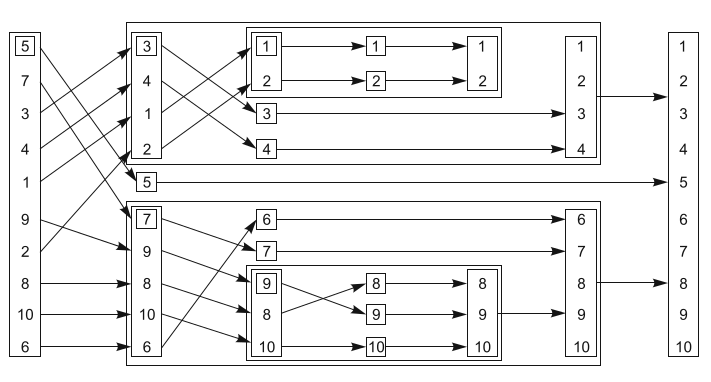
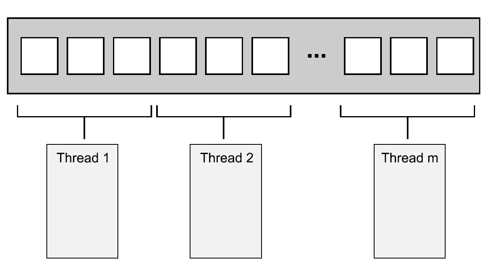

第一版的赞许
对C++多线程最好的介绍。
—Scott Meyers, 《Effective C++》和《More Effective C++》的作者
简化了C++的多线程。
—Rick Wagner, 红帽开发者
真的很烧脑！
—Joshua Heyer, 英格索兰
展示了如何使用并发。
—Roger Orr, OR/2 Limited
有深度，且权威的C++并发标准指南。
—Neil Horlock, 瑞士信贷银行主任
C++开发者应该去认真的看这本书。
—Dr. Jamie Allsop, 研发总监
前言
与多线程的邂逅是在毕业后的第一份工作中。那时，正在写一个填充数据库的程序，需要处理的数据量很大，每条记录都是独立的，并且需要在插入数据库之前，对数据量进行合理分配。为了充分利用10核UltraSPARC CPU(Ultra Scalable Processor ARChitecture，究极可扩处理器架构(大端))，我们使用了多线程，每个线程会处理所要记录的数据。我们使用C++和POSIX线程库完成编码，也遇到了一些问题——当时，多线程对于我们来说是一个新事物——最后还是完成了。也是做这个项目的时候，我开始注意C++标准委员会和刚刚发布的C++标准。
我对多线程和并发有着浓厚的兴趣。虽然，别人觉得多线程和并发难用、复杂，还会让代码出现各种各样的问题，不过，在我看来这是一种强有力的工具，能充分使用硬件资源，让程序运行的更快。
从那以后，我开始使用并发在单核机器上对应用性能和响应时长进行改善，多线程可以帮助你隐藏一些耗时的操作，比如I/O操作。同时，我也学着在操作系统上使用多线程，并且了解Intel CPU如何处理任务切换。
同时，对C++的兴趣让我与ACCU有了联系，之后是BSI(英国标准委员会)中的C++标准委员会，还有Boost。也是因为兴趣的原因，我参与了Boost线程库的初期开发(虽然初期版本已被放弃)。我曾是Boost线程库的主要开发者和维护者，现在这项任务已经交给了其他人。
作为C++标准委员会的一员，希望改善现有标准的缺陷和不足，并为新标准提出建议(新标准命名为C++0x是希望它能在2009年发布，不过最后因为2011年才发布，所以官方命名为C++11)。我也参与很多BSI的工作，并且也为自己的建议起草建议书。因为我起草及合著的多线程和并发相关的草案，将会成为新标准的一部分，所以当委员会将多线程提上C++标准的日程时，我高兴得差点飞起来。我也会继续关注并参与C++17标准并行部分的修订、并发技术标准(的扩展)，以及给未来并发标准的一些建议。新标准将我(计算机相关)的两大兴趣爱好——C++和多线程——结合起来，想想还有点小激动。
本书旨在教会其他C++开发者如何安全、高效地使用C++17线程库和并发技术标准(的扩展)。希望我对C++和多线程的热情，也能感染读者们。
首先，要对我的妻子Kim说声“感谢！”，感谢她在我写书时给予我的爱与支持。撰写第一版时，写书占用了我很大一部分空闲时间，当然第二版也需要大量的时间投入。如果没有她的耐心、支持和理解，我肯定没有办法完成本书。
其次，我要感谢曼宁团队的Marjan Bace(出版商)、Michael Stephens(副出版商)、Cynthia Kane(我的研发编辑)、Aleksandar Dragosavljevic´(审核编辑)、Safis Editing和Heidi Ward(文案编辑)，还有Melody Dolab(校对员)，他们使得本书出版成为可能。如果没有他们，你就不可能读到这本书。
当然，还要感谢C++委员会的其他成员，他们在多线程方面贡献了很多篇论文：Andrei Alexandrescu, Pete Becker, Bob Blainer, Hans Boehm, Beman Dawes, Lawrence Crowl, Peter Dimov, Jeff Garland, Kevlin Henney, Howard Hinnant, Ben Hutchings, Jan Kristofferson, Doug Lea, Paul McKenney, Nick McLaren, Clark Nelson, Bill Pugh, Raul Silvera, Herb Sutter, Detlef Vollmann和Michael Wong，以及那些对论文进行评论的人们，那些在委员会上讨论并发问题的人们，帮助在C++11、C++14、C++17标准和并发技术标准中支持并发和多线程的人们。
最后，感谢给本书建议的人们：Dr. Jamie Allsop, Peter Dimov, Howard Hinnant, Rick Molloy, Jonathan Wakely, and Dr. Russel Winder(特别感谢Russel博士的仔细校对)，Frédéric Flayol作为技术教研员，在本书的制作过程中，仔细的检查了所有内容，以确保终稿中没有明显的错误。
此外，我还要感谢第二版的评审小组：Al Norman, Andrei de Araújo Formiga, Chad Brewbaker, Dwight Wilkins, Hugo Filipe Lopes, Vieira Durana, Jura Shikin, Kent R.Spillner, Maria Gemini, Mateusz Malenta, Maurizio Tomasi, Nat Luengnaruemitchai, Robert C. Green II, Robert Trausmuth, Sanchir Kartiev和 Steven Parr。还要感谢花时间阅读MEAP版的读者们，感谢你们指出书中的错误和需要特别说明的部分。
关于本书
本书是使用并发和多线程的指导书籍，并基于C++最新标准(11，14，17)。从最基本的std::thread，std::mutex和std::async的使用，到复杂的原子操作和内存模型。
路线图
前4章，介绍了标准库中的各种工具，展示使用方法。
第5章，涵盖了内存模型和原子操作，包括原子操作如何对执行顺序进行限制(这章标志着介绍部分的结束)。
第6、7章，开始讨论高级主题，如何使用基本工具去构建复杂的数据结构——第6章是基于锁的数据结构，第7章是无锁数据结构。
第8章，针对设计多线程代码给了一些指导意见，覆盖了性能问题和并行算法。
第9章，线程管理——线程池，工作队列和中断操作。
第10章，介绍C++17中标准库算法对并行性的支持。
第11章，测试和调试——Bug类型，定位Bug的技巧，以及如何进行测试等等。
附录，包括新标准中语言特性的简要描述，主要是与多线程相关的特性，以及在第4章中提到的消息传递库的实现细节和C++17线程库的完整的参考。
适读人群
如果你正在用C++写一个多线程程序，可以阅读本书。如果你正在使用C++标准库中新的多线程工具，可以从本书中得到一些指导。如果你正在使用其他线程库，本书的建议和技术指导也很值得参考。
阅读本书需要有较好的C++基础，关于多线程编程的知识或者经验不是必须的。
如何阅读本书
如果从来没有写过多线程代码，我建议从头到尾阅读本书，可以跳过第5章中的较为细节的部分。
第7章内容依赖于第5章中的内容，如果跳过了第5章，应该在读第7章前，读一下第5章。
如果没有用过C++11，可以先看一下附录，当在正文中遇到一些没见过的工具或特性时，可以随时回看附录。
即使有不同环境下写多线程代码的经验，开始的章节仍有必要浏览一下，这样就能清楚地知道，你所熟知的工具在C++的新标准中对应于哪些工具。如果使用原子变量去做一些底层工作，第5章必读。第8章有关C++多线程的异常和安全性的内容很值得一看。如果对某些关键词比较感兴趣，索引和目录能够帮你快速找到相应的内容。
你可能喜欢回顾主要的章节，并用自己的方式阅读示例代码。虽然你已经了解C++线程库，但附录D还是很有用。例如，查阅每个类和函数的细节。
代码公约和下载
为了区分普通文本，清单和正文中的所有代码都采用像这样的固定宽度的字体。许多清单都伴随着代码注释，突出显示重要的概念。在某些情况下，你可以通过页下给出的快捷链接进行查阅。
本书所有实例的源代码，可在出版商的网站上进行下载：www.manning.com/books/c-plus-plus-concurrency-in-action-second-edition。
你也可以从github上下载源码：https://github.com/anthonywilliams/ccia_code_samples。
软件需求
使用书中的代码，需要一个较新的C++编译器(要支持C++17语言的特性(见附录A))，还需要C++支持标准线程库。
写本书的时候，最新版本的g++、clang++和Microsoft Visual Studio都对C++17的标准现成库进行了实现。他们也会支持附录中的大多数语言特性，那些目前还不被支持的特性也会逐渐被支持。
我的公司Software Solutions Ltd，销售C++11标准线程库的完整实现，其可以使用在一些旧编译器上，以及为新版本的clang、gcc和Microsoft Visual Studio实现的并发技术标准[1]。这个线程库也可以用来测试本书中的例子。
Boost线程库[2]提供的API，已经可移植到多个平台。本书中的大多数例子将std::替换为boost::，再#include引用相应的头文件，就能使用Boost线程库来运行。新标准中，部分编译器可能还不支持(例如std::async)，或在Boost线程库中有着不同名字(例如：boost::unique_future)。
作者在线
购买C++ Concurrency in Action就能访问曼宁(Manning Publications)的私人网络论坛，在那里可以对本书做一些评论，问一些技术问题，获得作者或其他读者的帮助。
为了能够访问论坛和订阅它的内容，在浏览器地址中输入 https://www.manning.com/books/c-plus-plus-concurrency-in-action-second-edition 。
https://forums.manning.com/forums/about 页面将告诉你如何注册之后访问论坛，你能获得什么样的帮助，还有论坛中的一些规则。
曼宁保证为本书的读者提供互相交流，以及和作者交流的平台。虽然曼宁自愿维护本书论坛，但不保证这样的平台不会收取任何的费用。所以，可以给作者提一些有挑战性的问题，免得这样的地方白白浪费。
[1] The just::thread implementation of the C++ Standard Thread Library, http://www.stdthread.co.uk.
[2] The Boost C++ library collection, http://www.boost.org.
Anthony Williams是一名居住在英国的开发者、顾问和培训师，有超过20年的C++开发经验。从2001年开始，他就是BSI C++论坛的积极水友，也是许多C++标准委员会提案的作者或合著者，其提交的提案让C++11标准库中包含有线程库。他还致力于为C++并行工具库添加更多强有力的工具，包括给标准提出建议，并实现这些工具，为的是将just::thread这种专业级扩展，从商业线程库添加到C++标准线程库中。
封面图片介绍
本书的封面图片的标题是“日本女性的着装”(Habit of a Lady of Japan)。这张图源自Thomas Jefferys所著的《不同民族服饰的收藏》(Collection of the Dress of Different Nations)[1]第四卷(大概在1757年到1772年间出版)。Thomas收集的服饰包罗万象，他的绘画优美而又细腻，对欧洲戏剧服装设计产生了长达200多年的影响。服饰中包含着一个文明的过去和现在，不同时代中各个国家的习俗通过不同的服饰栩栩如生地呈现在伦敦剧院的观众面前。
从上个世纪以来，着装风格已经发生了很多变化，各个国家和区域之间巨大的差异逐渐消失。现在已经很难分辨出不同洲不同地区的人们的着装差异。或许，我们放弃了这种文化上的差异，得到的却是更加丰富多彩的个人生活——或者说是一种更加多样有趣、更快节奏的科技生活。
在各种计算机图书铺天盖地、让人难以分辨的时代，Manning出版社正是为了赞美计算机行业中的创新性和开拓性，才选用了这个重现两个世纪之前丰富多样的地域风情的图片。
[1] 《iPhone与iPad开发实战》使用了书中的另一张图片，感兴趣的同学可以去图灵社区进行试读(只免费提供第1章内容)，本章翻译复制了这本书翻译的部分内容
第1章 你好，并发世界!
主要内容
- 定义并发和多线程
- 使用并发和多线程
- C++的并发史
- 简单的C++多线程
距初始C++标准(1998年)发布后的13年后，标准委员对C++进行了重大的修改。新标准(也称C++11或C++0x)在2011年发布，一系列的修改让C++编程更加简单和高效。同时，委员会也确立了标准更新模式——每三年发布一个新标准。从模式确立至今，委员会已经发布了两个标准：2014年的C++14标准和2017的C++17标准，以及若干个C++技术规范标准扩展。
其中最重要的特性就是对多线程的支持。C++标准第一次包含了多线程，并在标准库中提供了多线程组件，这让使用C++编写与平台无关的多线程程序成为可能，也为可移植性提供了强有力的保证。与此同时，开发者们为提高应用的性能，对并发的关注也是与日俱增，特别在多线程方面。在C++11的基础上，C++14、C++17标准，以及一些技术规范标准，都在为C++的多线程和并发添砖加瓦。
本书会使用C++11多线程来编写并发程序，并介绍相关的语言特性和工具。本章以“为什么要使用并发”作为起始点，会对“什么情况下不使用并发”进行阐述，并且对C++的并发方式进行总结。最后，以一个简单的并发实例结束这一章。后面的章节中，会有更多的例子，以便大家对线程库进行更加深入的了解。
1.1 何谓并发
并发，指两个或两个以上的独立活动同时发生。
并发在生活中随处可见，我们可以一边走路一边说话，也可以两只手同时做不同的动作，还有每个人都过着相互独立的生活——当我在游泳的时候，你可以看球赛等等。
1.1.1 计算机的并发
计算机的并发，指在单个系统里同时执行多个独立的任务。
并发在计算机领域不是一个新鲜事物。很多年前，一台计算机就能通过多任务操作系统的切换功能，同时运行多个应用，并且多处理器服务器很早就实现了并行计算。那并发为什么在计算机领域越来越流行呢？——真正的并行。
以前，大多数计算机只有一个处理器，具有单个处理单元或核芯。这种机器只能在某一时刻执行一个任务，不过可以在单位时间内对任务进行多次切换。通过“这个任务做一会，另一个任务再做一会儿”的方式，让任务看起来是并行的，这种方式称为任务切换。如今，这样的方式仍称为“并发“，因为任务切换得太快，以至于无法感觉到任务会暂时挂起。任务切换会给用户造成一种“并发的假象”，任务切换和真正并发执行相比，行为上还是有着微妙的不同。
多核计算机用于高性能计算已有多年。基于单芯多核处理器(多核处理器)的台式机，也越来越大众化。无论有多少个处理器，这些机器都能够真正的并行多个任务，我们称其为”硬件并发“。
图1.1显示了处理两个任务时的理想情景，每个任务被分为10个相等大小的子任务块。在一个双核机器上，每个任务可以在各自的处理核心上执行。在单核机器上做任务切换时，每个任务的块交替进行，但中间有一小段分隔(图中所示灰色分隔条)，这表示切换任务的开销。进行任务切换时，操作系统必须保存当前任务CPU的状态和指令指针，并计算要切换到哪个任务，再将切换到的任务加载处理器中。CPU可能要将新任务的指令和数据载入到缓存，这会让CPU停止执行指令，从而造成的更多的延迟。

图 1.1 并发的两种方式：真正并行 vs. 任务切换
有些处理器可以在一个核心上执行多个线程，但硬件并发在多处理器上效果更加显著。硬件线程最重要的是数量，也就是可以并发运行独立任务的数量。即便是硬件并发的系统，也有比硬件“可并行最大任务数”还要多的任务需要执行，所以任务切换在这些情况下仍然适用。例如，一个台计算机上可能会有成百上千个的任务在运行，即便是在计算机处于空闲时，还是会有后台任务在运行。正是任务切换使得这些后台任务可以运行，这样系统使用者就可以同时运行文字处理器、编译器、编辑器和Web浏览器了。
图1.2显示了四个任务在双核处理器上的任务切换，仍是将任务整齐地划分为同等大小子任务块的理想情况。实际上，许多因素会使得任务分割不均或调度不规则。

图 1.2 四个任务在两个核心之间的切换
无论应用是在单核处理器，还是多核处理器上运行，不论是任务切换，还是硬件并发，这里提到的技术、功能和类(本书所涉及的)都会涉及。如何使用并发，很大程度上取决于可用的硬件并发。
1.1.2 并发的方式
试想当两个程序员在两个独立的办公室一起做一个软件项目，他们可以安静地工作、互不干扰，并且人手一套参考手册。但沟通起来就有些困难，比起可以直接交谈，他们必须使用电话、电子邮件或到对方的办公室进行面对面交流。并且，管理两个办公室需要有一定的经费支出，还需要购买多份参考手册。
假设，让开发人员同在一间办公室办公，他们可以自由的对某个程序设计进行讨论，也可以在纸或白板上绘制图表，对设计观点进行辅助性阐释。现在，只需要管理一个办公室和一套参考资料就够了。遗憾的是，开发人员可能难以集中注意力，并且还可能存在资源共享的问题(比如，“参考手册哪去了?”)
以上两种方法，描绘了并发的两种基本途径。开发人员代表线程，办公室代表进程。第一种方式是每个进程只要一个线程，这就类似让每个开发人员拥有自己的办公室。而第二种方式是每个进程有多个线程，如同一个办公室里有两个开发人员。让我们在一个应用中，简单的分析一下这两种方式。
多进程并发
使用并发的第一种方式，是将应用程序分为多个独立的进程同时运行，就像同时进行网页浏览和文字处理一样。如图1.3所示，独立的进程可以通过进程间的通信渠道传递讯息(信号、套接字、文件、管道等等)。不过，这种进程间的通信通常非常复杂，或是速度很慢。这是因为操作系统会对进程进行保护，以避免一个进程去修改另一个进程的数据。还有一个缺点是运行多个进程的固定开销：需要时间启动进程，操作系统需要资源来管理进程等等。

图 1.3 一对并发运行的进程之间的通信
当然，以上的机制也不是一无是处：操作系统在进程间提供了保护和更高级别的通信机制，可以更容易编写安全的并发代码。实际上，在类似于Erlang的编程环境中，会将进程作为并发的基础块。
使用多进程实现并发还有一个优势——可以使用远程连接(可能需要联网)的方式，在不同的机器上运行独立的进程。虽然，这增加了通信成本，但在设计精良的系统中，这种低成本方案可提高程序的并行可用性和性能。
多线程并发
并发的另一个方式，在单进程中运行多个线程。线程很像轻量级的进程：每个线程相互独立运行，并且可以在不同的指令序列中运行。不过，进程中的所有线程都共享地址空间，并且能访问到大部分数据———全局变量仍然是全局的，指针、对象的引用或数据可以在线程之间传递。虽然，进程之间通常共享内存，但同一数据的内存地址在不同的进程中不相同，所以这种共享难以建立和管理。图1.4展示了一个进程中的两个线程，正在通过共享内存进行通信。

图 1.4 同一进程中，一对并发线程间的通信
地址空间共享，以及缺少线程间的数据保护，使得操作系统记录的工作量减小，所以使用多线程的开销远远小于多进程。不过，共享内存的灵活性是有代价的：如果多个线程访问数据，那么必须确保每个线程所访问到的数据一致，这就需要对线程通信做大量的工作。
多个单线程/进程间的通信，要比单一进程中多线程通信的开销大，若不考虑共享内存可能带来的问题，多线程将会成为主流语言(包括C++)更青睐的并发方式。此外，C++标准并未对进程通信提供原生支持，所以实现会依赖于平台相关的API。因此，本书只关注多线程的并发，之后所提到“并发”，均为多线程实现。
多线程应用中，还有一种方式：并行。
1.1.3 并发与并行
对多线程来说，这两个概念大部分是重叠的。对于很多人来说，它们没有什么区别。这两个词是用来描述硬件同时执行多个任务的方式，而“并行”更加注重性能。使用硬件提高数据处理速度时，会讨论程序的并行性。当关注重点在于任务分离或任务响应时，会讨论程序的并发性。这两个术语存在的目的，就是为了区别多线程中不同的关注点。
了解了并发后，来看看为什么要使用并发。
1.2 为什么使用并发
原因有二：分离关注点(SOC)和性能(或者可能是两个都有。当然，除了“我乐意”这样的原因)。
1.2.1 分离关注点
编写软件时，分离关注点是个好办法。通过将相关的代码与无关的代码分离，可以使程序更容易理解和测试，从而减少出错的可能。即使一些操作需要同时进行，依旧可以使用并发，分离不同的功能区域。若不显式地使用并发，就得编写一个任务切换机制，或者在操作中主动地调用一段不相关的代码。
假设有一个用户界面的处理密集型应用——DVD播放程序。这样的应用程序，应具备这两种功能：一，要从光盘中读出数据，对图像和声音进行解码，之后把解码出的信号输出至视频和音频硬件中进行处理，从而实现DVD的播放；二，接收来自用户的输入，当用户单击“暂停”、“返回菜单”或“退出”按键的时候执行对应的操作。当应用是单个线程时，应用需要在回放期间定期检查用户的输入，这就需要把“DVD播放”代码和“用户界面”代码放在一起。如果使用多线程方式来分离这些关注点，“用户界面”代码和“播放DVD”代码不需要放在一起：一个线程可以处理“用户界面”，另一个进行“播放DVD”。它们之间会有交互(用户点击“暂停”)，不过任务需要人为的进行关联。
这会带来响应上的错觉，因为用户界面线程通常可以立即响应用户的请求，尽管当请求传递给工作中的线程时，其响应可能只是显示“忙碌中”的光标或“请等待”的消息。同理，独立的线程通常用来执行那些必须在后台持续运行的任务，例如：桌面搜索程序中监视文件系统变化的任务。因为交互清晰可辨，所以会使每个线程变的更加简单。
这种情况下，对线程的划分是基于概念上的设计，所以线程数不再依赖CPU核芯数。
1.2.2 性能
重核系统已经存在了几十年，直至现今，它们也只在超级计算机、大型机和大型服务器系统中才能看到。然而，芯片制造商越来越倾向于芯片的多核设计，即在单芯片上集成2、4、16或更多的处理器，从而获取更好的性能。因此，多核计算机、多核嵌入式设备，现在越来越普遍。它们计算能力的提高不是使单一任务运行的更快，而是并行多个任务。曾今，开发者无需做任何事，可以看着程序随着处理器的更新换代而变得更快。但是现在，如Herb Sutter所说的，“没有免费的午餐了。”[1] 如果想要利用日益增长的计算能力，那就必须设计多任务并发式软件，那些迄今都忽略并发的开发者们要上心了。
有两种利用并发来提高性能的方式：第一，将一个单个任务分成几部分并行运行，从而降低总运行时间，这就是任务并行(task parallelism)。虽然，这听起来很直观，但是一个相当复杂的过程，因为各个部分之间可能存在着依赖。区别可能是在过程方面——一个线程执行算法的一部分，而另一个线程执行算法的另一个部分——或是在处理数据——每个线程在不同的数据块上执行相同的操作(第二种方式)。后一种方法被称为数据并行(data parallelism)。
容易并行的算法称为是“易并行的”(embarrassingly parallel)。易并行算法具有良好的可扩展特性——当可用硬件线程的数量增加时，算法的并行性也会随之增加，这种算法很好的体现了“人多力量大”。如果算法中有不易并行的部分，可以把算法划分成固定(不可扩展)数量的并行任务。
并发提升性能的第二种方式，是利用并行来解决更大的问题：每次只处理一个文件，不如处理2个、10个或20个。虽然，这是数据并行的一种应用(通过对多组数据同时执行相同的操作)，但着重点不同。处理等量数据仍然需要同样的时间，但现在在相同的时间内处理了更多的数据。这种方法也有限制，并非所有情况下都是有效的。不过，这种方法所带来的吞吐量提升，可以让某些功能成为可能——如果图片的不同区域能被并行地处理，程序就可以处理更高分辨率的视频。
1.2.3 什么时候不使用并发
知道何时不使用并发与知道何时使用一样重要。
不使用并发的唯一原因就是收益比不上成本。使用并发的代码在很多情况下难以理解，因此编写和维护多线程代码会产生脑力成本，而增加的复杂性也可能会引起更多的错误。除非潜在的性能增益足够大或关注点分离地足够清晰，能抵消为确保正确开发所需的额外时间，以及维护代码的额外成本；否则，勿用并发。
同样地，性能增益可能会小于预期。启动线程时存在固有开销，因为操作系统需要分配内核资源和堆栈空间，才能把新线程加入调度器中。如果在线程上的任务完成得很快，那么实际执行任务的时间要比启动线程的时间小很多，这会导致应用的整体性能不如直接使用单线程。
此外，线程的资源有限。如果太多的线程同时运行，则会消耗很多操作系统资源，从而使得操作系统整体上运行得更加缓慢。不仅如此，因为每个线程都需要一个独立的堆栈，所以运行太多的线程也会耗尽进程的可用内存或地址空间。对于一个可用地址空间为4GB(32bit)的架构来说，这的确是个问题：如果每个线程都有一个1MB的堆栈(很多系统都会这样分配)，那么4096个线程将会用尽所有地址空间(不会给代码、静态数据或者堆数据留有任何空间)。即便是64位(或者更大)的系统，不存在这种地址空间限制，但其他资源也是有限的：如果你运行了太多的线程，也会出问题。尽管线程池(参见第9章)可以用来限制线程的数量，但也并不是什么灵丹妙药。
当客户端/服务器(C/S)应用在服务端为每一个链接启动一个独立的线程时，对于少量链接没有问题，但当用于需要处理大量链接的高需求服务器时，就会因为线程太多而耗尽系统资源。这种场景下，使用线程池可以对性能进行优化(参见第9章)。
最后，运行越多的线程，操作系统就需要越多的上下文切换，每一次切换都需要耗费时间。所以在某些时候，增加线程实际上会降低应用的整体性能。如果试图得到系统的最佳性能，可以考虑使用硬件并发(或不用)，并调整运行线程的数量。
和所有其他优化策略一样，我们为了性能而使用并发：它可以大幅度提高应用的性能，但也可能让代码更加复杂，难以理解，并且更容易出错。因此，应用中只有性能关键部分，才值得并发化。当然，如果性能收益仅次于设计清晰或分离关注点，也可以使用多线程。
既然已经看到了这里，那无论是为了性能、关注点分离，亦或是因为多线程星期一(multithreading Monday)(译者：可能是学习多线程的意思)，你应该确定要在应用中使用并发了。
好！那对于C++开发者来说，多线程意味着什么呢？
[1] “The Free Lunch Is Over: A Fundamental Turn Toward Concurrency in Software,” Herb Sutter, Dr. Dobb’s Journal, 30(3), March 2005. http://www.gotw.ca/publications/concurrency-ddj.htm.
1.3 并发和多线程
使用C++11标准，可以编写不依赖平台扩展的多线程代码。了解C++线程库前，先来了解一下C++多线程的发展史。
1.3.1 C++多线程历史
C++98(1998)标准不承认线程的存在，并且各种语义以顺序抽象的形式编写。不仅如此，也没有内存模型，所以C++98标准在缺少编译器扩展的情况下，没办法编写多线程应用。
当然，编译器供应商可以自由地向语言添加扩展，C语言中流行的多线程API——POSIX标准中的C标准和Microsoft Windows API——很多C++编译器供应商，通过各种平台相关的扩展来支持多线程。这种支持受限于平台，并且需要相应平台的运行库(例如，异常处理机制的代码)能在多线程情况下正常工作。因为编译器和处理器的实际表现很不错，所以在少数编译器供应商提供正式的多线程内存模型之前，开发者们已经写了很多的C++多线程程序了。
由于不满足于使用平台相关的API来处理多线程，C++开发者们希望使用面向对象的多线程工具。像MFC这样的应用框架，和Boost和ACE这样的通用库，这些库提供了很多简化任务的多线程工具。各种库在细节方面差异很大，但在启动线程的方面，却大同小异。其使用一种便利的设计，也就是使用带锁的获取资源即初始化(RAII, Resource Acquisition Is Initialization)的方式。
编写多线程代码需要扎实的编程基础，当前的很多C++编译器为多线程编程者提供了对应的API，还有一些与平台无关的C++库。这样，开发者们就可以通过这些API来实现多线程。不过，由于缺乏统一的标准，以及内存模型，就会产生一些问题，这些问题在跨平台的多线程应用上表现得尤为明显。
1.3.2 支持并发
这些随着C++11标准的发布而改变，新标准中不仅有了全新的内存模型，C++标准库也扩展了：管理线程(参见第2章)、保护共享数据(参见第3章)、线程间同步操作(参见第4章)，以及原子操作(参见第5章)。
标准线程库很大程度上，基于之前C++库的经验积累。特别是Boost线程库，作为新标准库的很多类与Boost库中的相关类有着相同名称和结构。随着C++标准的进步，Boost线程库也随着C++标准在许多方面做出改变，这样之前使用Boost的用户会发现自己非常熟悉C++11的线程库。
支持并发仅是C++11标准的变化之一，为了让开发者们的工作变得更加轻松，还有很多对于语言自身的改善。这些内容不在本书的讨论范围内，但是其中的一些变化对线程库及其使用方式有着很大的影响。附录A会对这些特性做一些介绍。
1.3.3 C++14和C++17对并发和并行的更多支持
C++14中为并发和并行添加了一个新的互斥量类型，用于保护共享数据(参见第3章)。C++17考虑的更多：添加了一整套的并行算法(参见第10章)。两个标准将整个标准库进行了补强，这让书写多线程代码变得更加容易。
之前还提到了一个并发技术标准，其描述C++标准对于函数和类的扩展，尤其是对线程同步方面(参见第4章)。
C++新标准直接支持原子操作，允许开发者通过指定语义的方式编写代码，从而无需了解与平台相关的汇编指令。这对于编写高效、可移植的代码来说，无疑是一个好消息。编译器不仅可以搞定具体平台，还可以编写优化器来解释操作语义，从而让程序得到更好的优化。
1.3.4 C++线程库的效率
这是高性能计算开发者的担忧之一。为了效率，C++整合了一些底层工具。这样就需要了解使用高级工具和使用低级工具的开销差，这个开销差就是抽象代价(abstraction penalty)。
C++标准委员会在设计标准库时，特别是线程库，就注意到了这点。目的就是在实现相同功能的前提下，确保使用高级API和使用底层API带来的性能收益相当。这样，标准库在主流平台上都能有高效实现(带有非常低的抽象代价)。
为了达到终极性能，需要给与硬件打交道的开发者提供足够多的底层工具。为了这个目的，形成了原子操作库，可直接控制单个位、字节、内部线程间的同步，以及对所有变化的可见性。原子类型可以在很多地方使用，使用新标准的代码会有更好的可移植性，并且容易维护。
标准库也提供了更高级别工具，使得编写多线程代码更加简单。因为有额外的代码需要执行，这些工具确实会带来性能开销。总的来说，性能开销和手工编写的函数差不多，并且编译器会内联大部分代码。
某些情况下，高级工具会提供一些额外的功能。极少的情况下，一些未使用的功能会影响其他代码的性能。如果很看重程序的性能，并且高级工具带来的开销过高，最好是通过较低层工具来实现功能。绝大多数情况下，用过高的复杂性和过大的出错率，来交换小幅度的性能收益是不划算的。即便是瓶颈出现在C++标准库的工具中，也可能由低劣的程序设计造成。例如，如果过多的线程竞争一个互斥单元，将会很明显的影响性能。与其在互斥操作上耗费时间，不如重新设计，减少互斥单元上的竞争。
C++标准库没有提供所需的性能或行为时，就需要使用与平台相关的工具了。
1.3.5 平台相关的工具
虽然C++线程库为多线程和并发处理提供了较全面的工具，但某些平台会提供额外的工具。为了方便地使用这些工具，又使用标准C++线程库，在C++线程库中提供一个native_handle()的成员函数，允许通过使用平台相关API直接操作底层实现。就其本质而言，任何使用native_handle()执行的操作都是完全依赖于平台，这也超出了本书(同时也是标准C++库本身)讨论的范围。
所以，使用平台相关的工具之前，先了解一下标准库能够做些什么吧。
1.4 开始入门
OK！准备一个能与C++11/C++14/C++17标准兼容的编译器。C++多线程程序是什么样子呢？其实，和其他C++程序差不多。唯一的区别在于某些函数可以并发运行，所以需要确保共享数据在并发访问时是安全的。当然，为了并发地运行，必须使用特定函数以及对象来管理各个线程。
1.4.1 欢迎来到并发世界
从一个经典的例子开始：一个打印“Hello World”的程序。一个非常简单的在单线程中运行的Hello World程序如下所示，当我们谈到多线程时，可以作为一个基准。
#include <iostream>
int main()
{
std::cout << "Hello World\n";
}
这个程序所做的就是将“Hello World”写进标准输出流。让我们将它与下面清单所示的简单的“Hello, Concurrent World”程序做个比较，它启动了一个独立的线程来显示这个信息。
代码 1.1 一个简单的Hello, Concurrent World程序：
#include <iostream>
#include <thread> // 1
void hello() // 2
{
std::cout << "Hello Concurrent World\n";
}
int main()
{
std::thread t(hello); // 3
t.join(); // 4
}
第一个区别是增加了#include <thread>①，包括标准库中对多线程支持的声明，管理线程的函数和类在<thread>中声明(保护共享数据的函数和类在其他头文件中声明)。
其次，打印信息移到了一个独立的函数中②。因为每个线程都必须一个执行单元，新线程的执行从这里开始。对于应用程序来说，初始线程是main()，但是对于其他线程，可以在std::thread对象的构造函数中指定——本例中命名为t③的std::thread对象拥有新函数hello()作为其执行函数。
下一个区别：与直接写入标准输出或是从main()调用hello()不同，该程序启动了一个全新的线程来实现，将线程数量一分为二——初始线程始于main()，而新线程始于hello()。
新的线程启动之后③，初始线程继续执行。如果它不等待新线程结束，就运行到main()函数结束——有可能发生在新线程运行之前。这就是为什么在④这里调用join()的原因——详见第2章，这会让创建线程等待std::thread对象创建的线程。
这看起来仅是为了将一条信息写入标准输出，确实如此——正如上文1.2.3节所描述的，一般来说并不值得为了如此简单的任务而使用多线程，尤其是在这期间初始线程并没做什么。后面的章节中，将通过更加复杂的实例来展示，在哪些情景下使用多线程更有意义。
1.5 本章总结
本章中，提及了并发与多线程的含义，以及在应用中为什么使用(或不使用)并发。还提及了多线程在C++中的发展历程，从1998标准中完全缺乏支持，经历了各种平台相关的扩展，再到C++11/C++14/C++17标准和并发技术规范对多线程的支持。芯片制造商选择了以多核芯的形式，使得更多任务可以同时执行的方式来增加处理能力，而不是增加单个核心的执行速度。在这个趋势下，C++多线程来的正是时候，它使得开发者们可以利用CPU带来的更加强大的硬件并发。
1.4节中例子，展示C++标准库中的类和函数有多么的简单。C++中使用多线程并不复杂，复杂的是如何设计代码以实现预期的行为。
尝试了1.4节的示例后，可以了解更多实质性的内容。
第2章中，我们将了解用于管理线程的类和函数。
第2章 线程管理
主要内容
- 启动新线程
- 等待与分离
- 唯一标识符
先做点什么呢?启动线程、结束线程，还是管理线程？C++标准库中只管理与std::thread关联的线程。不过，标准库很灵活，管理起来不太容易。
本章开始将会介绍，如何启动一个线程，并等待这个线程结束，或放在后台运行。再介绍如何给线程函数传递参数，以及将线程的所有权进行移交。最后，再来了解线程数量和特殊线程。
2.1 线程的基本操作
每个程序至少有一个执行main()函数的线程，其他线程与主线程同时运行。如main()函数执行完会退出一样，线程执行完函数也会退出。为线程创建std::thread对象后，需要等待这个线程结束。那么，就先来启动线程。
2.1.1 启动线程
第1章中，线程在std::thread对象创建时启动，通常使用的是无参数无返回的函数。这种函数在执行完毕，线程也就结束了。一些情况下，任务函数对象需要通过某种通讯机制进行参数的传递，或者执行一系列独立操作，通过通讯机制传递信号让线程停止。先放下这些特殊情况不谈，简单来说，使用C++线程库启动线程，就是构造std::thread对象：
void do_some_work();
std::thread my_thread(do_some_work);
这里需要包含<thread>头文件，std::thread可以通过有函数操作符类型的实例进行构造：
class background_task
{
public:
void operator()() const
{
do_something();
do_something_else();
}
};
background_task f;
std::thread my_thread(f);
代码中，提供的函数对象会复制到新线程的存储空间中，函数对象的执行和调用都在线程的内存空间中进行。
有件事需要注意，当把函数对象传入到线程构造函数中时，需要避免“最令人头痛的语法解析”(C++’s most vexing parse, 中文简介)。如果你传递了一个临时变量，而不是一个命名的变量。C++编译器会将其解析为函数声明，而不是类型对象的定义。
std::thread my_thread(background_task());
这相当于声明了一个名为my_thread的函数，这个函数带有一个参数(函数指针指向没有参数并返回background_task对象的函数)，返回一个std::thread对象的函数。
使用在前面命名函数对象的方式，或使用多组括号①，或使用统一的初始化语法②，都可以避免这个问题。
如下所示：
std::thread my_thread((background_task())); // 1
std::thread my_thread{background_task()}; // 2
Lambda表达式也能避免这个问题。Lambda表达式是C++11的一个新特性，允许使用一个可以捕获局部变量的局部函数(可以避免传递参数，参见2.2节)。想要详细了解Lambda表达式，可以阅读附录A的A.5节。之前的例子可以改写为Lambda表达式的方式：
std::thread my_thread([]{
do_something();
do_something_else();
});
线程启动后是要等待线程结束，还是让其自主运行。当std::thread对象销毁之前还没有做出决定，程序就会终止(std::thread的析构函数会调用std::terminate())。因此，即便是有异常存在，也需要确保线程能够正确汇入(joined)或分离(detached)。
如果不等待线程汇入 ，就必须保证线程结束之前，访问数据的有效性。这不是一个新问题——单线程代码中，对象销毁之后再去访问，会产生未定义行为——不过，线程的生命周期增加了这个问题发生的几率。
这种情况很可能发生在线程还没结束，函数已经退出的时候，这时线程函数还持有函数局部变量的指针或引用。
代码2.1 函数已经返回，线程依旧访问局部变量
struct func
{
int& i;
func(int& i_) : i(i_) {}
void operator() ()
{
for (unsigned j=0 ; j<1000000 ; ++j)
{
do_something(i); // 1 潜在访问隐患：空引用
}
}
};
void oops()
{
int some_local_state=0;
func my_func(some_local_state);
std::thread my_thread(my_func);
my_thread.detach(); // 2 不等待线程结束
} // 3 新线程可能还在运行
代码中，已经决定不等待线程(使用了detach()②)，所以当oops()函数执行完成时③，线程中的函数可能还在运行。如果线程还在运行，就会去调用do_something(i)①，这时就会访问已经销毁的变量。如同一个单线程程序——允许在函数完成后继续持有局部变量的指针或引用。当然，这种情况发生时，错误并不明显，会使多线程更容易出错。运行顺序参考表2.1。
表2.1 分离线程在局部变量销毁后，仍对该变量进行访问
| 主线程 | 新线程 |
|---|---|
| 使用some_local_state构造my_func | |
| 开启新线程my_thread | |
| 启动 | |
| 调用func::operator() | |
| 将my_thread分离 | 执行func::operator();可能会在do_something中调用some_local_state的引用 |
| 销毁some_local_state | 持续运行 |
| 退出oops函数 | 持续执行func::operator()；可能会在do_something中调用some_local_state的引用 --> 导致未定义行为 |
这种情况的常规处理方法：将数据复制到线程中。如果使用一个可调用的对象作为线程函数，这个对象就会复制到线程中，而后原始对象会立即销毁。如代码2.1所示，但对于对象中包含的指针和引用还需谨慎。使用访问局部变量的函数去创建线程是一个糟糕的主意。
此外，可以通过join()函数来确保线程在主函数完成前结束。
2.1.2 等待线程完成
如需等待线程，需要使用join()。将代码2.1中的my_thread.detach()替换为my_thread.join()，就可以确保局部变量在线程完成后才销毁。因为主线程并没有做什么事，使用独立的线程去执行函数变得意义不大。但在实际中，原始线程要么有自己的工作要做，要么会启动多个子线程来做一些有用的工作，并等待这些线程结束。
当你需要对等待中的线程有更灵活的控制时，比如：看一下某个线程是否结束，或者只等待一段时间(超过时间就判定为超时)。想要做到这些，需要使用其他机制来完成，比如条件变量和future。调用join()，还可以清理了线程相关的内存，这样std::thread对象将不再与已经完成的线程有任何关联。这意味着，只能对一个线程使用一次join()，一旦使用过join()，std::thread对象就不能再次汇入了。当对其使用joinable()时，将返回false。
2.1.3 特殊情况下的等待
如前所述，需要对一个未销毁的std::thread对象使用join()或detach()。如果想要分离线程，可以在线程启动后，直接使用detach()进行分离。如果等待线程，则需要细心挑选使用join()的位置。当在线程运行后产生的异常，会在join()调用之前抛出，这样就会跳过join()。
避免应用被抛出的异常所终止。通常，在无异常的情况下使用join()时，需要在异常处理过程中调用join()，从而避免生命周期的问题。
代码2.2 等待线程完成
struct func; // 定义在代码2.1中
void f()
{
int some_local_state=0;
func my_func(some_local_state);
std::thread t(my_func);
try
{
do_something_in_current_thread();
}
catch(...)
{
t.join(); // 1
throw;
}
t.join(); // 2
}
代码2.2中使用了try/catch块确保线程退出后函数才结束。当函数正常退出后，会执行到②处。当执行过程中抛出异常，程序会执行到①处。如果线程在函数之前结束——就要查看是否因为线程函数使用了局部变量的引用——而后再确定一下程序可能会退出的途径，无论正常与否，有一个简单的机制，可以解决这个问题。
一种方式是使用“资源获取即初始化方式”(RAII，Resource Acquisition Is Initialization)，提供一个类，在析构函数中使用join()。如同下面代码。
代码2.3 使用RAII等待线程完成
class thread_guard
{
std::thread& t;
public:
explicit thread_guard(std::thread& t_):
t(t_)
{}
~thread_guard()
{
if(t.joinable()) // 1
{
t.join(); // 2
}
}
thread_guard(thread_guard const&)=delete; // 3
thread_guard& operator=(thread_guard const&)=delete;
};
struct func; // 定义在代码2.1中
void f()
{
int some_local_state=0;
func my_func(some_local_state);
std::thread t(my_func);
thread_guard g(t);
do_something_in_current_thread();
} // 4
线程执行到④处时，局部对象就要被逆序销毁了。因此，thread_guard对象g是第一个被销毁的，这时线程在析构函数中被加入②到原始线程中。即使do_something_in_current_thread抛出一个异常，这个销毁依旧会发生。
在thread_guard析构函数的测试中，首先判断线程是否可汇入①。如果可汇入，会调用join()②进行汇入。
拷贝构造函数和拷贝赋值操作标记为=delete③，是为了不让编译器自动生成。直接对对象进行拷贝或赋值是很危险的，因为这可能会弄丢已汇入的线程。通过删除声明，任何尝试给thread_guard对象赋值的操作都会引发一个编译错误。想要了解删除函数的更多知识，请参阅附录A的A.2节。
如果不想等待线程结束，可以分离线程，从而避免异常。不过，这就打破了线程与std::thread对象的联系，即使线程仍然在后台运行着，分离操作也能确保在std::thread对象销毁时不调用std::terminate()。
2.1.4 后台运行线程
使用detach()会让线程在后台运行，这就意味着与主线程不能直接交互。如果线程分离，就不可能有std::thread对象能引用它，分离线程的确在后台运行，所以分离的线程不能汇入。不过C++运行库保证，当线程退出时，相关资源的能够正确回收。
分离线程通常称为守护线程(daemon threads)。UNIX中守护线程，是指没有任何显式的接口，并在后台运行的线程，这种线程的特点就是长时间运行。线程的生命周期可能会从应用的起始到结束，可能会在后台监视文件系统，还有可能对缓存进行清理，亦或对数据结构进行优化。另外，分离线程只能确定线程什么时候结束，发后即忘(fire and forget)的任务使用到就是分离线程。
如2.1.2节所示，调用std::thread成员函数detach()来分离一个线程。之后，相应的std::thread对象就与实际执行的线程无关了，并且这个线程也无法汇入：
std::thread t(do_background_work);
t.detach();
assert(!t.joinable());
为了从std::thread对象中分离线程，不能对没有执行线程的std::thread对象使用detach()，并且要用同样的方式进行检查——当std::thread对象使用t.joinable()返回的是true，就可以使用t.detach()。
试想如何能让一个文字处理应用同时编辑多个文档。无论是用户界面，还是在内部应用内部进行，都有很多的解决方法。虽然，这些窗口看起来是完全独立的，每个窗口都有自己独立的菜单选项，但他们却运行在同一个应用实例中。一种内部处理方式是，让每个文档处理窗口拥有自己的线程。每个线程运行同样的的代码，并隔离不同窗口处理的数据。如此这般，打开一个文档就要启动一个新线程。因为是对独立文档进行操作，所以没有必要等待其他线程完成，这里就可以让文档处理窗口运行在分离线程上。
代码2.4 使用分离线程处理文档
void edit_document(std::string const& filename)
{
open_document_and_display_gui(filename);
while(!done_editing())
{
user_command cmd=get_user_input();
if(cmd.type==open_new_document)
{
std::string const new_name=get_filename_from_user();
std::thread t(edit_document,new_name); // 1
t.detach(); // 2
}
else
{
process_user_input(cmd);
}
}
}
如果用户选择打开一个新文档，需要启动一个新线程去打开新文档①，并分离线程②。与当前线程做出的操作一样，新线程只不过是打开另一个文件而已。所以，edit_document函数可以复用， 并通过传参的形式打开新的文件。
这个例子也展示了传参启动线程的方法：不仅可以向std::thread构造函数①传递函数名，还可以传递函数所需的参数(实参)。当然，也有其他方法可以完成这项功能，比如：使用带有数据的成员函数，代替需要传参的普通函数。
2.2 传递参数
如代码2.4所示，向可调用对象或函数传递参数很简单，只需要将这些参数作为 std::thread构造函数的附加参数即可。需要注意的是，这些参数会拷贝至新线程的内存空间中(同临时变量一样)。即使函数中的参数是引用的形式，拷贝操作也会执行。来看一个例子：
void f(int i, std::string const& s);
std::thread t(f, 3, "hello");
代码创建了一个调用f(3, "hello")的线程。注意，函数f需要一个std::string对象作为第二个参数，但这里使用的是字符串的字面值，也就是char const *类型，线程的上下文完成字面值向std::string的转化。需要特别注意，指向动态变量的指针作为参数的情况，代码如下：
void f(int i,std::string const& s);
void oops(int some_param)
{
char buffer[1024]; // 1
sprintf(buffer, "%i",some_param);
std::thread t(f,3,buffer); // 2
t.detach();
}
buffer①是一个指针变量，指向局部变量，然后此局部变量通过buffer传递到新线程中②。此时，函数oops可能会在buffer转换成std::string之前结束，从而导致未定义的行为。因为，无法保证隐式转换的操作和std::thread构造函数的拷贝操作的顺序，有可能std::thread的构造函数拷贝的是转换前的变量(buffer指针)。解决方案就是在传递到std::thread构造函数之前，就将字面值转化为std::string：
void f(int i,std::string const& s);
void not_oops(int some_param)
{
char buffer[1024];
sprintf(buffer,"%i",some_param);
std::thread t(f,3,std::string(buffer)); // 使用std::string，避免悬空指针
t.detach();
}
相反的情形(期望传递一个非常量引用，但复制了整个对象)倒是不会出现，因为会出现编译错误。比如，尝试使用线程更新引用传递的数据结构：
void update_data_for_widget(widget_id w,widget_data& data); // 1
void oops_again(widget_id w)
{
widget_data data;
std::thread t(update_data_for_widget,w,data); // 2
display_status();
t.join();
process_widget_data(data);
}
虽然update_data_for_widget①的第二个参数期待传入一个引用，但std::thread的构造函数②并不知晓，构造函数无视函数参数类型，盲目地拷贝已提供的变量。不过，内部代码会将拷贝的参数以右值的方式进行传递，这是为了那些只支持移动的类型，而后会尝试以右值为实参调用update_data_for_widget。但因为函数期望的是一个非常量引用作为参数(而非右值)，所以会在编译时出错。对于熟悉std::bind的开发者来说，问题的解决办法很简单：可以使用std::ref将参数转换成引用的形式。因此可将线程的调用改为以下形式：
std::thread t(update_data_for_widget,w,std::ref(data));
这样update_data_for_widget就会收到data的引用，而非data的拷贝副本，这样代码就能顺利的通过编译了。
如果熟悉std::bind，就应该不会对以上述传参的语法感到陌生，因为std::thread构造函数和std::bind的操作在标准库中以相同的机制进行定义。比如，你也可以传递一个成员函数指针作为线程函数，并提供一个合适的对象指针作为第一个参数：
class X
{
public:
void do_lengthy_work();
};
X my_x;
std::thread t(&X::do_lengthy_work, &my_x); // 1
这段代码中，新线程将会调用my_x.do_lengthy_work()，其中my_x的地址①作为对象指针提供给函数。也可以为成员函数提供参数：std::thread构造函数的第三个参数就是成员函数的第一个参数，以此类推(代码如下，译者自加)。
class X
{
public:
void do_lengthy_work(int);
};
X my_x;
int num(0);
std::thread t(&X::do_lengthy_work, &my_x, num);
另一种有趣的情形是，提供的参数仅支持移动(move)，不能拷贝。“移动”是指原始对象中的数据所有权转移给另一对象，从而这些数据就不再在原始对象中保存(译者：比较像在文本编辑的剪切操作)。std::unique_ptr就是这样一种类型(译者：C++11中的智能指针)，这种类型为动态分配的对象提供内存自动管理机制(译者：类似垃圾回收机制)。同一时间内，只允许一个std::unique_ptr实例指向一个对象，并且当这个实例销毁时，指向的对象也将被删除。移动构造函数(move constructor)和移动赋值操作符(move assignment operator)允许一个对象的所有权在多个std::unique_ptr实例中传递(有关“移动”的更多内容，请参考附录A的A.1.1节)。使用“移动”转移对象所有权后，就会留下一个空指针。使用移动操作可以将对象转换成函数可接受的实参类型，或满足函数返回值类型要求。当原对象是临时变量时，则自动进行移动操作，但当原对象是一个命名变量，转移的时候就需要使用std::move()进行显示移动。下面的代码展示了std::move的用法，展示了std::move是如何转移动态对象的所有权到线程中去的：
void process_big_object(std::unique_ptr<big_object>);
std::unique_ptr<big_object> p(new big_object);
p->prepare_data(42);
std::thread t(process_big_object,std::move(p));
通过在std::thread构造函数中执行std::move(p)，big_object 对象的所有权首先被转移到新创建线程的的内部存储中，之后再传递给process_big_object函数。
C++标准线程库中和std::unique_ptr在所属权上相似的类有好几种，std::thread为其中之一。虽然，std::thread不像std::unique_ptr能占有动态对象的所有权，但是它能占有其他资源：每个实例都负责管理一个线程。线程的所有权可以在多个std::thread实例中转移，这依赖于std::thread实例的可移动且不可复制性。不可复制性表示在某一时间点，一个std::thread实例只能关联一个执行线程。可移动性使得开发者可以自己决定，哪个实例拥有线程实际执行的所有权。
2.3 转移所有权
假设通过新线程返回的所有权去调用一个需要后台启动线程的函数，并需要在函数中转移线程的所有权。这些操作都要等待线程结束才能进行，并且需要线程的所有权能够进行转移。
这就是将移动操作引入std::thread的原因，C++标准库中有很多资源占有(resource-owning)类型，比如std::ifstream，std::unique_ptr还有std::thread都是可移动，但不可复制。这说明执行线程的所有权可以在std::thread实例中移动，下面将展示一个例子。例子中，创建了两个执行线程，并在std::thread实例之间(t1，t2和t3)转移所有权：
void some_function();
void some_other_function();
std::thread t1(some_function); // 1
std::thread t2=std::move(t1); // 2
t1=std::thread(some_other_function); // 3
std::thread t3; // 4
t3=std::move(t2); // 5
t1=std::move(t3); // 6 赋值操作将使程序崩溃
首先，新线程与t1相关联①。当显式使用std::move()创建t2后②，t1的所有权就转移给了t2。之后，t1和执行线程已经没有关联了，执行some_function的函数线程与t2关联。
然后，临时std::thread对象相关的线程启动了③。为什么不显式调用std::move()转移所有权呢？因为，所有者是一个临时对象——移动操作将会隐式的调用。
t3使用默认构造方式创建④，没有与任何线程进行关联。调用std::move()将t2关联线程的所有权转移到t3中⑤。因为t2是一个命名对象，需要显式的调用std::move()。移动操作⑤完成后，t1与执行some_other_function的线程相关联，t2与任何线程都无关联，t3与执行some_function的线程相关联。
最后一个移动操作，将some_function线程的所有权转移⑥给t1。不过，t1已经有了一个关联的线程(执行some_other_function的线程)，所以这里系统直接调用std::terminate()终止程序继续运行。这样做(不抛出异常，std::terminate()是noexcept函数)是为了保证与std::thread的析构函数的行为一致。2.1.1节中，需要在线程对象析构前，显式的等待线程完成，或者分离它，进行赋值时也需要满足这些条件(说明：不能通过赋新值给std::thread对象的方式来"丢弃"一个线程)。
std::thread支持移动，线程的所有权可以在函数外进行转移，就如下面程序一样。
代码2.5 函数返回std::thread对象
std::thread f()
{
void some_function();
return std::thread(some_function);
}
std::thread g()
{
void some_other_function(int);
std::thread t(some_other_function,42);
return t;
}
当所有权可以在函数内部传递，就允许std::thread实例作为参数进行传递，代码如下：
void f(std::thread t);
void g()
{
void some_function();
f(std::thread(some_function));
std::thread t(some_function);
f(std::move(t));
}
std::thread支持移动可以创建thread_guard类的实例(定义见代码2.3)，并且拥有线程所有权。当引用thread_guard对象所持有的线程时，移动操作就可以避免很多不必要的麻烦。当某个对象转移了线程的所有权，就不能对线程进行汇入或分离。为了确保线程在程序退出前完成，定义了scoped_thread类。现在，我们来看一下这个类型：
代码2.6 scoped_thread的用法
class scoped_thread
{
std::thread t;
public:
explicit scoped_thread(std::thread t_): // 1
t(std::move(t_))
{
if(!t.joinable()) // 2
throw std::logic_error(“No thread”);
}
~scoped_thread()
{
t.join(); // 3
}
scoped_thread(scoped_thread const&)=delete;
scoped_thread& operator=(scoped_thread const&)=delete;
};
struct func; // 定义在代码2.1中
void f()
{
int some_local_state;
scoped_thread t(std::thread(func(some_local_state))); // 4
do_something_in_current_thread();
} // 5
与代码2.3相似，不过新线程会直接传递到scoped_thread中④，而非创建一个独立变量。当主线程到达f()末尾时⑤，scoped_thread对象就会销毁，然后在析构函数中完成汇入③。代码2.3中的thread_guard类，需要在析构中检查线程是否“可汇入”。这里把检查放在了构造函数中②，并且当线程不可汇入时抛出异常。
C++17标准给出一个建议，就是添加一个joining_thread的类型，这个类型与std::thread类似，不同是的添加了析构函数，就类似于scoped_thread。委员会成员们对此并没有达成统一共识，所以这个类没有添加入C++17标准中(C++20仍旧对这种方式进行探讨，不过名称为std::jthread)，这个类实现起来也不是很困难。
代码2.7 joining_thread类的实现
class joining_thread
{
std::thread t;
public:
joining_thread() noexcept=default;
template<typename Callable,typename ... Args>
explicit joining_thread(Callable&& func,Args&& ... args):
t(std::forward<Callable>(func),std::forward<Args>(args)...)
{}
explicit joining_thread(std::thread t_) noexcept:
t(std::move(t_))
{}
joining_thread(joining_thread&& other) noexcept:
t(std::move(other.t))
{}
joining_thread& operator=(joining_thread&& other) noexcept
{
if（joinable()）{
join();
}
t = std::move(other.t);
return *this;
}
joining_thread& operator=(std::thread other) noexcept
{
if(joinable())
join();
t=std::move(other);
return *this;
}
~joining_thread() noexcept
{
if(joinable())
join();
}
void swap(joining_thread& other) noexcept
{
t.swap(other.t);
}
std::thread::id get_id() const noexcept{
return t.get_id();
}
bool joinable() const noexcept
{
return t.joinable();
}
void join()
{
t.join();
}
void detach()
{
t.detach();
}
std::thread& as_thread() noexcept
{
return t;
}
const std::thread& as_thread() const noexcept
{
return t;
}
};
std::thread中对移动语义的支持，也适用于使用std::thread的移动敏感(move-aware)容器(比如，std::vector<>)。了解这些后，就可以量产了一些线程，并且等待它们结束，代码如下所示。
代码2.8 量产线程，等待它们结束
void do_work(unsigned id);
void f()
{
std::vector<std::thread> threads;
for (unsigned i = 0; i < 20; ++i)
{
threads.emplace_back(do_work,i); // 产生线程
}
for (auto& entry : threads) // 对每个线程调用 join()
entry.join();
}
我们有时需要线程去分割一个算法的工作总量，所以在算法结束的之前，所有的线程必须结束。代码2.8中线程所做的工作都是独立的，并且结果仅会受到共享数据的影响。如果f()有返回值，这个返回值就依赖于线程得到的结果。写入返回值之前，程序会检查使用共享数据的线程是否终止。结果在不同线程中转移的方案，会在第4章中再次讨论。
将std::thread放入std::vector是向线程自动化管理迈出的第一步：并非为这些线程创建独立的变量，而是把它们当做一个组。创建一组线程(数量在运行时确定)，而非代码2.8那样创建固定数量的线程。
2.4 确定线程数量
std::thread::hardware_concurrency()在新版C++中非常有用，其会返回并发线程的数量。例如，多核系统中，返回值可以是CPU核芯的数量。返回值也仅仅是一个标识，当无法获取时，函数返回0。
代码2.9实现了并行版的std::accumulate。代码将整体工作拆分成小任务，交给每个线程去做，并设置最小任务数，避免产生太多的线程，程序会在操作数量为0时抛出异常。比如，std::thread无法启动线程，就会抛出异常。
代码2.9 并行版的std::accumulate
template<typename Iterator,typename T>
struct accumulate_block
{
void operator()(Iterator first,Iterator last,T& result)
{
result=std::accumulate(first,last,result);
}
};
template<typename Iterator,typename T>
T parallel_accumulate(Iterator first,Iterator last,T init)
{
unsigned long const length=std::distance(first,last);
if(!length) // 1
return init;
unsigned long const min_per_thread=25;
unsigned long const max_threads=
(length+min_per_thread-1)/min_per_thread; // 2
unsigned long const hardware_threads=
std::thread::hardware_concurrency();
unsigned long const num_threads= // 3
std::min(hardware_threads != 0 ? hardware_threads : 2, max_threads);
unsigned long const block_size=length/num_threads; // 4
std::vector<T> results(num_threads);
std::vector<std::thread> threads(num_threads-1); // 5
Iterator block_start=first;
for(unsigned long i=0; i < (num_threads-1); ++i)
{
Iterator block_end=block_start;
std::advance(block_end,block_size); // 6
threads[i]=std::thread( // 7
accumulate_block<Iterator,T>(),
block_start,block_end,std::ref(results[i]));
block_start=block_end; // 8
}
accumulate_block<Iterator,T>()(
block_start,last,results[num_threads-1]); // 9
for (auto& entry : threads)
entry.join(); // 10
return std::accumulate(results.begin(),results.end(),init); // 11
}
函数看起来很长，但不复杂。如果输入的范围为空①，就会得到init的值。如果范围内的元素多于一个时，需要用范围内元素的总数量除以线程(块)中最小任务数，从而确定启动线程的最大数量②。
因为上下文频繁切换会降低线程的性能，所以计算量的最大值和硬件支持线程数，较小的值为启动线程的数量③。std::thread::hardware_concurrency()返回0时，可以选择一个合适的数字。在本例中，我选择了"2"。
每个线程中处理的元素数量，是范围中元素的总量除以线程的个数得出的④，分配是否得当会在后面讨论。
现在，确定了线程个数，创建一个std::vector<T>容器存放中间结果，并为线程创建一个std::vector<std::thread>容器⑤。因为在启动之前已经有了一个线程(主线程)，所以启动的线程数必须比num_threads少1。
使用循环来启动线程：block_end迭代器指向当前块的末尾⑥，并启动一个新线程为当前块累加结果⑦。当迭代器指向当前块的末尾时，启动下一个块⑧。
启动所有线程后，⑨中的线程会处理最终块的结果。因为知道最终块是哪一个，所以最终块中有多少个元素就无所谓了。
累加最终块的结果后，可等待std::for_each⑩创建线程(如同在代码2.8中做的那样)，之后使用std::accumulate将所有结果进行累加⑪。
结束这个例子之前，需要明确：T类型的加法不满足结合律(比如，对于float型或double型，在进行加法操作时，系统很可能会做截断操作)，因为对范围中元素的分组，会导致parallel_accumulate得到的结果可能与std::accumulate的结果不同。同样的，这里对迭代器的要求更加严格：必须是前向迭代器。对于results容器，需要保证T有默认构造函数。可以需要根据算法本身的特性，选择不同的并行方式。算法并行会在第8章更加深入的进行讨论，并在第10章中会介绍C++17中支持的并行算法(其中std::reduce操作等价于这里的parallel_accumulate)。因为不能直接从一个线程中返回值，所以需要传递results容器的引用到线程中去。另一个办法，通过地址来获取线程执行的结果(第4章中，我们将使用future完成这种方案)。
当线程运行时，所有必要的信息都需要传入到线程中去，包括存储计算结果的位置。有时候可以传递一个标识数，例如代码2.8中的i。不过，需要标识的函数在调用栈的底层，同时其他线程也可调用该函数，那么标识数就会变成累赘。好消息是在设计C++的线程库时，就有预见了这种情况，实现中给每个线程附加了唯一标识符。
2.5 线程标识
线程标识为std::thread::id类型，可以通过两种方式进行检索。第一种，可以通过调用std::thread对象的成员函数get_id()来直接获取。如果std::thread对象没有与任何执行线程相关联，get_id()将返回std::thread::type默认构造值，这个值表示“无线程”。第二种，当前线程中调用std::this_thread::get_id()(这个函数定义在<thread>头文件中)也可以获得线程标识。
std::thread::id对象可以自由的拷贝和对比，因为标识符可以复用。如果两个对象的std::thread::id相等，那就是同一个线程，或者都“无线程”。如果不等，那么就代表了两个不同线程，或者一个有线程，另一没有线程。
C++线程库不会限制你去检查线程标识是否一样，std::thread::id类型对象提供了相当丰富的对比操作。比如，为不同的值进行排序。这意味着开发者可以将其当做为容器的键值做排序，或做其他比较。按默认顺序比较不同的std::thread::id：当a<b，b<c时，得a<c，等等。标准库也提供std::hash<std::thread::id>容器，std::thread::id也可以作为无序容器的键值。
std::thread::id实例常用作检测线程是否需要进行一些操作。比如：当用线程来分割一项工作(如代码2.9)，主线程可能要做一些与其他线程不同的工作，启动其他线程前，可以通过std::this_thread::get_id()得到自己的线程ID。每个线程都要检查一下，其拥有的线程ID是否与初始线程的ID相同。
std::thread::id master_thread;
void some_core_part_of_algorithm()
{
if(std::this_thread::get_id()==master_thread)
{
do_master_thread_work();
}
do_common_work();
}
另外，当前线程的std::thread::id将存储到数据结构中。之后这个结构体对当前线程的ID与存储的线程ID做对比，来决定操作是“允许”，还是“需要”(permitted/required)。
同样，作为线程和本地存储不适配的替代方案，线程ID在容器中可作为键值。例如，容器可以存储其掌控下每个线程的信息，或在多个线程中互传信息。
std::thread::id可以作为线程的通用标识符，当标识符只与语义相关(比如，数组的索引)时，就需要这个方案了。也可以使用输出流(std::cout)来记录一个std::thread::id对象的值。
std::cout<<std::this_thread::get_id();
具体的输出结果是严格依赖于具体实现的，C++标准的要求就是保证ID相同的线程必须有相同的输出。
2.6 本章总结
本章讨论了C++标准库中线程的管理方式：启动线程，等待结束和不等待结束。并了解应该如何在线程启动前，向线程函数中传递参数，如何转移线程的所有权，如何使用线程组来分割任务。
最后，讨论了使用线程标识来确定关联数据，以及特殊线程的特殊解决方案。虽然，现在已经可以依赖线程，使用独立的数据，做独立的任务，但在某些情况下，线程间确实需要有共享数据。
第3章会讨论共享数据和线程的直接关系。
第4章会讨论在有/没有共享数据情况下的线程同步。
第3章 共享数据
本章主要内容
- 共享数据的问题
- 使用互斥保护数据
- 保护数据的替代方案
上一章中已经对线程管理有所了解，现在来看一下“共享数据的那些事儿”。
试想，你和朋友合租一个公寓，公寓中只有一个厨房和一个卫生间。当你的朋友在卫生间时，你就会不能使用卫生间了。同样的问题也会出现在厨房，假如：厨房里有一个烤箱，烤香肠的同时，也在做蛋糕，那就可能得到不想要的食物(香肠味的蛋糕)。此外，在公共空间将一件事做到一半时，发现某些需要的东西被别人拿走，或是离开的一段时间内有些东西变动了地方，这都会令我们不爽。
同样的问题也困扰着线程。当线程访问共享数据时，必须定一些规则来限定线程可访问的数据。一个线程更新了共享数据，需要对其他线程进行通知。从易用性的角度，同一进程中的多个线程进行数据共享有利有弊，错误的共享数据是产生bug的主要原因。
本章就以数据共享为主题，避免上述及潜在问题的发生的同时，将共享数据的优势发挥到最大。
3.1 共享数据的问题
涉及到共享数据时，问题就是因为共享数据的修改所导致。如果共享数据只读，那么不会影响到数据，更不会对数据进行修改，所有线程都会获得同样的数据。但当一个或多个线程要修改共享数据时，就会产生很多麻烦。这种情况下，需要小心谨慎，才能确保所有线程都正常工作。
不变量(invariants)的概念对开发者们编写的程序会有一定的帮助——对于特殊结构体的描述，比如：“变量包含列表中的项数”。更新通常会破坏不变量，特别是复杂的数据结构。
双链表中每个节点都有一个指针指向列表中下一个节点，还有一个指针指向前一个节点。其中不变量就是节点A中指向“下一个”节点B的指针，还有前向指针。为了从列表中删除一个节点，其两边节点的指针都需要更新。当其中一边更新完成时，就破坏了不变量，直到另一边也完成更新。在两边都完成更新后，不变量就稳定了。
从一个列表中删除一个节点的步骤如下(如图3.1)
a. 找到要删除的节点N
b. 更新前一个节点指向N的指针，让这个指针指向N的下一个节点
c. 更新后一个节点指向N的指针，让这个指正指向N的前一个节点
d. 删除节点N

图3.1 从一个双链表中删除一个节点
图中b和c在相同方向上的指向和原来已经不一致了，这就破坏了不变量。
线程间的问题在于修改共享数据，会使不变量遭到破坏。删除过程中不确定是否有其他线程能够进行访问，可能就有线程访问到刚刚删除一边的节点。这样破坏了不变量，线程就读取到要删除节点的数据(因为一边的连接被修改，如图3.1(b))。破坏不变量的后果是不确定的，当其他线程按从左到右的顺序访问列表时，将跳过被删除的节点。如有第二个线程尝试删除图中右边的节点，可能会让数据结构产生永久性的损坏，并使程序崩溃。这就是并行中常见错误：条件竞争(race condition)。
3.1.1 条件竞争
假如你去一家大电影院买电影票，有很多收银台，很多人可以同时买票。当另一个收银台也在卖你想看电影的电影票时，你的座位选择范围取决于在之前已预定的座位。当只有少量的座位剩下，就可能是一场抢票比赛，看谁能抢到最后一张票。这就是一个条件竞争的例子：你的座位(或者电影票)都取决于购买的顺序。
并发中的竞争条件，取决于一个以上线程的执行顺序，每个线程都抢着完成自己的任务。大多数情况下，即使改变执行顺序，也是良性竞争，结果是可以接受的。例如，两个线程同时向一个处理队列中添加任务，因为不变量保持不变，所以谁先谁后都不会有什么影响。
当不变量遭到破坏时，才会产生条件竞争，比如：双向链表的例子。并发中对数据的条件竞争通常表示为恶性竞争(我们对不产生问题的良性条件竞争不感兴趣)。C++标准中也定义了数据竞争这个术语，一种特殊的条件竞争：并发的去修改一个独立对象(参见5.1.2节)，数据竞争是未定义行为的起因。
恶性条件竞争通常发生于对多个数据块的修改，例如：对两个连接指针的修改(如图3.1)。操作要访问两个独立的数据块，独立的指令会对数据块将进行修改，并且其中一个线程可能正在进行修改，另一个线程就对数据块进行了访问。因为出现的概率低，很难查找，也很难复现。如CPU指令连续修改完成后，即使数据结构可以让其他并发线程访问，问题再次复现的几率也相当低。当系统负载增加时，随着执行数量的增加，执行序列问题复现的概率也在增加，这样的问题可能会出现在负载比较大的情况下。条件竞争通常是时间敏感的，所以程序以调试模式运行时，错误常会完全消失，因为调试模式会影响程序的执行时间(即使影响不多)。
当你以写多线程程序为生，条件竞争就会成为你的梦魇。编写软件时，我们会使用大量复杂的操作，来避免恶性条件竞争。
3.1.2 避免恶性条件竞争
这里提供一些方法来解决恶性条件竞争，最简单的办法就是对数据结构采用某种保护机制，确保只有修改线程才能看到不变量的中间状态。从其他访问线程的角度来看，修改不是已经完成了，就是还没开始。C++标准库提供很多类似的机制，下面会逐一介绍。
另一个选择是对数据结构和不变量进行修改，修改完的结构必须能完成一系列不可分割的变化，也就保证了每个不变量的状态，这就是所谓的无锁编程。不过，这种方式很难得到正确的结果。到这个级别，无论是内存模型上的细微差异，还是线程访问数据的能力，都会让工作量变的很大。
另一种处理条件竞争的方式，是使用事务的方式去处理数据结构的更新(这里的"处理"就如同对数据库进行更新一样)。所需的一些数据和读取都存储在事务日志中，然后将之前的操作进行合并，再进行提交。当数据结构被另一个线程修改后，或处理已经重启的情况下，提交就会无法进行，这称作为“软件事务内存”(software transactional memory (STM))，这是一个很热门的理论研究领域。这个概念将不会在本书中再进行介绍，因为在C++中没有对STM进行直接支持(尽管C++有事务性内存扩展的技术规范[1])。
保护共享数据结构的最基本的方式，使用C++标准库提供的互斥量。
[1] SO/IEC TS 19841:2015—Technical Specification for C++ Extensions for Transactional Memory http://www.iso.org/iso/home/store/catalogue_tc/catalogue_detail.htm?csnumber=66343 .
3.2 使用互斥量
你肯定不想让共享数据陷入条件竞争，或是出现破坏不变量的情况。将所有访问共享数据的代码标记为互斥是否是一种更好的办法呢？这样，任何一个线程在执行时，其他线程就必须进行等待。除非该线程在修改共享数据，否则任何线程都不可能会看到不变量的中间状态。
访问共享数据前，将数据锁住，在访问结束后，再将数据解锁。线程库需要保证，当线程使用互斥量锁住共享数据时，其他的线程都必须等到之前那个线程对数据进行解锁后，才能进行访问数据。
互斥量是C++保护数据最通用的机制，但也需要编排代码来保护数据的正确性(见3.2.2节)，并避免接口间的条件竞争(见3.2.3节)也非常重要。不过，互斥量也会造成死锁(见3.2.4节)，或对数据保护的太多(或太少)(见3.2.8节)。
3.2.1 互斥量
通过实例化std::mutex创建互斥量实例，成员函数lock()可对互斥量上锁，unlock()为解锁。不过，不推荐直接去调用成员函数，调用成员函数就意味着，必须在每个函数出口都要去调用unlock()(包括异常的情况)。C++标准库为互斥量提供了RAII模板类std::lock_guard，在构造时就能提供已锁的互斥量，并在析构时进行解锁，从而保证了互斥量能被正确解锁。下面的代码中，展示了如何在多线程应用中，使用std::mutex构造的std::lock_guard实例，对列表进行访问保护。(std::mutex和std::lock_guard都在<mutex>头文件中声明。)
代码3.1 使用互斥量保护列表
#include <list>
#include <mutex>
#include <algorithm>
std::list<int> some_list; // 1
std::mutex some_mutex; // 2
void add_to_list(int new_value)
{
std::lock_guard<std::mutex> guard(some_mutex); // 3
some_list.push_back(new_value);
}
bool list_contains(int value_to_find)
{
std::lock_guard<std::mutex> guard(some_mutex); // 4
return std::find(some_list.begin(),some_list.end(),value_to_find) != some_list.end();
}
代码3.1中有一个全局变量①，这个全局变量被一个全局的互斥量保护②。add_to_list()③和list_contains()④函数中使用std::lock_guard<std::mutex>，使得这两个函数中对数据的访问是互斥的：list_contains()不可能看到正在被add_to_list()修改的列表。
C++17中添加了一个新特性，称为模板类参数推导，类似std::lock_guard这样简单的模板类型，其模板参数列表可以省略。③和④的代码可以简化成：
std::lock_guard guard(some_mutex);
具体的模板参数类型推导则交给C++17的编译器完成。3.2.4节中，会介绍C++17中的一种加强版数据保护机制——std::scoped_lock，所以在C++17的环境下，上面的这行代码也可以写成：
std::scoped_lock guard(some_mutex);
为了让代码更加清晰，并且兼容只支持C++11标准的编译器，我会继续使用std::lock_guard，并在代码中写明模板参数的类型。
某些情况下使用全局变量没问题，但大多数情况下，互斥量通常会与需要保护的数据放在同一类中，而不是定义成全局变量。这是面向对象设计的准则：将其放在一个类中，就可让他们联系在一起，也可对类的功能进行封装，并进行数据保护。这种情况下，函数add_to_list和list_contains可以作为这个类的成员函数。互斥量和需要保护的数据，在类中都定义为private成员，这会让代码更清晰，并且方便了解什么时候对互斥量上锁。所有成员函数都会在调用时对数据上锁，结束时对数据解锁，这就保证了访问时数据不变量的状态稳定。
当然，也不是总能那么理想：当其中一个成员函数返回的是保护数据的指针或引用时，也会破坏数据。具有访问能力的指针或引用可以访问(并可能修改)保护数据，而不会被互斥锁限制。这就需要对接口谨慎设计，要确保互斥量能锁住数据访问，并且不留后门。
3.2.2 保护共享数据
使用互斥量来保护数据，并不是在每一个成员函数中加入一个std::lock_guard对象那么简单。一个指针或引用，也会让这种保护形同虚设。不过，检查指针或引用很容易，只要没有成员函数通过返回值或者输出参数的形式，向其调用者返回指向受保护数据的指针或引用，数据就是安全的。确保成员函数不会传出指针或引用的同时，检查成员函数是否通过指针或引用的方式来调用也是很重要的(尤其是这个操作不在你的控制下时)。函数可能没在互斥量保护的区域内存储指针或引用，这样就很危险。更危险的是：将保护数据作为一个运行时参数，如同下面代码中所示。
代码3.2 无意中传递了保护数据的引用
class some_data
{
int a;
std::string b;
public:
void do_something();
};
class data_wrapper
{
private:
some_data data;
std::mutex m;
public:
template<typename Function>
void process_data(Function func)
{
std::lock_guard<std::mutex> l(m);
func(data); // 1 传递“保护”数据给用户函数
}
};
some_data* unprotected;
void malicious_function(some_data& protected_data)
{
unprotected=&protected_data;
}
data_wrapper x;
void foo()
{
x.process_data(malicious_function); // 2 传递一个恶意函数
unprotected->do_something(); // 3 在无保护的情况下访问保护数据
}
例子中process_data看起来没有问题，std::lock_guard对数据做了很好的保护，但调用用户提供的函数func①，就意味着foo能够绕过保护机制将函数malicious_function传递进去②，可以在没有锁定互斥量的情况下调用do_something()。
这段代码的问题在于根本没有保护，只是将所有可访问的数据结构代码标记为互斥。函数foo()中调用unprotected->do_something()的代码未能被标记为互斥。这种情况下，C++无法提供任何帮助，只能由开发者使用正确的互斥锁来保护数据。从乐观的角度上看，还是有方法的：切勿将受保护数据的指针或引用传递到互斥锁作用域之外。
虽然，这是使用互斥量保护共享数据时常犯的错误，但绝不仅仅是一个潜在的陷阱。下一节中，即便是使用了互斥量对数据进行保护，条件竞争依旧存在。
3.2.3 接口间的条件竞争
使用了互斥量或其他机制保护了共享数据，就不必再为条件竞争所担忧吗？并不是，依旧需要确定数据是否受到了保护。回想之前双链表的例子，为了能让线程安全地删除一个节点，需要确保防止对这三个节点(待删除的节点及其前后相邻的节点)的并发访问。如果只对指向每个节点的指针进行访问保护，那就和没有使用互斥量一样，条件竞争仍会发生——除了指针，整个数据结构和整个删除操作需要保护。这种情况下最简单的解决方案就是使用互斥量来保护整个链表，如代码3.1所示。
尽管链表的个别操作是安全的，但依旧可能遇到条件竞争。例如，构建一个类似于std::stack的栈(代码3.3)，除了构造函数和swap()以外，需要对std::stack提供五个操作：push()一个新元素进栈，pop()一个元素出栈，top()查看栈顶元素，empty()判断栈是否是空栈，size()了解栈中有多少个元素。即使修改了top()，返回一个拷贝而非引用(即遵循了3.2.2节的准则)，这个接口仍存在条件竞争。这个问题不仅存在于互斥量实现接口中，在无锁实现接口中，也会产生条件竞争。这是接口的问题，与实现方式无关。
代码3.3 std::stack容器的实现
template<typename T,typename Container=std::deque<T> >
class stack
{
public:
explicit stack(const Container&);
explicit stack(Container&& = Container());
template <class Alloc> explicit stack(const Alloc&);
template <class Alloc> stack(const Container&, const Alloc&);
template <class Alloc> stack(Container&&, const Alloc&);
template <class Alloc> stack(stack&&, const Alloc&);
bool empty() const;
size_t size() const;
T& top();
T const& top() const;
void push(T const&);
void push(T&&);
void pop();
void swap(stack&&);
template <class... Args> void emplace(Args&&... args); // C++14的新特性
};
虽然empty()和size()可能在返回时是正确的，但结果不可靠。当返回后，其他线程就可以自由地访问栈，并且可能push()多个新元素到栈中，也可能pop()一些已在栈中的元素。这样的话，之前从empty()和size()得到的数值就有问题了。
非共享的栈对象，如果栈非空，使用empty()检查再调用top()访问栈顶部的元素是安全的。如下代码所示：
stack<int> s;
if (! s.empty()){ // 1
int const value = s.top(); // 2
s.pop(); // 3
do_something(value);
}
不仅在单线程代码中安全，而且在空堆栈上调用top()是未定义的行为也符合预期。对于共享的栈对象，这样的调用顺序就不再安全，因为在调用empty()①和调用top()②之间，可能有来自另一个线程的pop()调用并删除了最后一个元素。这是一个经典的条件竞争，使用互斥量对栈内部数据进行保护，但依旧不能阻止条件竞争的发生，这就是接口固有的问题。
怎么解决呢？问题发生在接口设计上，所以解决的方法就是变更接口设计。怎么改？这个简单的例子中调用top()时，发现栈已经是空，就抛出异常。这能直接解决这个问题，但这是一个笨拙的解决方案，这样的话，即使empty()返回false的情况下，也需要进行异常捕获。本质上，这会让empty()成为一个多余函数。
仔细的观察之前的代码段，在调用top()②和pop()③之间会发现另一个潜在的条件竞争。假设两个线程运行着前面的代码，并且都引用同一个栈对象。当为性能而使用线程时，多个线程在不同的数据上执行相同的操作很正常，并且共享栈可以将工作进行分摊。假设，一开始栈中只有两个元素，这时任一线程上的empty()和top()都存在竞争，只需要考虑可能的执行顺序即可。
内部互斥量保护栈时，只有一个线程可以调用栈的成员函数，所以调用可以很好地交错，并且do_something()是可以并发运行的。在表3.1中，展示一种可能的执行顺序。
表3.1 一种可能执行顺序
| Thread A | Thread B |
|---|---|
| if (!s.empty); | |
| if(!s.empty); | |
| int const value = s.top(); | |
| int const value = s.top(); | |
| s.pop(); | |
| do_something(value); | s.pop(); |
| do_something(value); |
当线程运行时，调用两次top()，没修改栈，所以每个线程能得到同样的值。不仅是这样，调用top()的过程中(两次)，都没有调用pop()函数。这样，在其中一个值再读取的时候，虽然不会出现“写后读”的情况，但其值已处理了两次。这种条件竞争，比未定义的empty()/top()竞争更加严重。虽然结果依赖于do_something()的结果，但因为看起来没有任何错误，就会让这个Bug更难定位。
这就需要接口设计上有较大的改动，提议之一就是使用同一互斥量来保护top()和pop()。Tom Cargill[1]指出当拷贝构造函数在栈中抛出一个异常，这样的处理方式就会有问题。在Herb Sutter[2]看来，这个问题可以从“异常安全”的角度完美解决，不过潜在的条件竞争，可能会组成一些新的组合。
说一些大家没有意识到的问题：假设有一个stack<vector<int>>，vector是一个动态容器，当拷贝一个vector，标准库会从堆上分配很多内存来完成这次拷贝。当这个系统处在重度负荷，或有严重的资源限制的情况下，这种内存分配就会失败，所以vector的拷贝构造函数可能会抛出一个std::bad_alloc异常。当vector中存有大量元素时，这种情况发生的可能性更大。当pop()函数返回“弹出值”时(也就是从栈中将这个值移除)，会有一个潜在的问题：这个值返回到调用函数的时候，栈才被改变。但拷贝数据的时候，调用函数抛出一个异常会怎么样？ 如果真的发生了，要弹出的数据将会丢失，它的确从栈上移出了，但是拷贝失败了！std::stack的设计人员将这个操作分为两部分：先获取顶部元素(top())，然后从栈中移除(pop())。这样，在不能安全的将元素拷贝出去的情况下，栈中的这个数据还依旧存在，没有丢失。当问题是堆空间不足，应用可能会释放一些内存，然后再进行尝试。
不幸的是，这样的分割却制造了本想避免的条件竞争。幸运的是，我们还有的别的选项，但使用每个选项都有相应的代价。
选项1： 传入一个引用
第一个选项是将变量的引用作为参数，传入pop()函数中获取“弹出值”：
std::vector<int> result;
some_stack.pop(result);
这种方式还不错，缺点也很明显：需要构造出一个栈中类型的实例，用于接收目标值。对于一些类型，这样做是不现实的，因为临时构造一个实例，从时间和资源的角度上来看都不划算。对于其他的类型，这样也不总行得通，因为构造函数需要的参数，在这个阶段不一定可用。最后，需要可赋值的存储类型，这是一个重大限制：即使支持移动构造，甚至是拷贝构造(从而允许返回一个值)，很多用户自定义类型可能都不支持赋值操作。
选项2：无异常抛出的拷贝构造函数或移动构造函数
对于有返回值的pop()函数来说，只有“异常安全”方面的担忧(当返回值时可以抛出一个异常)。很多类型都有拷贝构造函数，它们不会抛出异常，并且随着新标准中对“右值引用”的支持(详见附录A，A.1节)，很多类型都将会有一个移动构造函数，即使他们和拷贝构造函数做着相同的事情，也不会抛出异常。一个有用的选项可以限制对线程安全栈的使用，并且能让栈安全的返回所需的值，而不抛出异常。
虽然安全，但非可靠。尽管能在编译时可使用std::is_nothrow_copy_constructible和std::is_nothrow_move_constructible，让拷贝或移动构造函数不抛出异常，但是这种方式的局限性太强。用户自定义的类型中，会有不抛出异常的拷贝构造函数或移动构造函数的类型， 那些有抛出异常的拷贝构造函数，但没有移动构造函数的类型往往更多(这种情况会随着人们习惯于C++11中的右值引用而有所改变)。如果这些类型不能存储在线程安全的栈中，那将是多么的不幸。
选项3：返回指向弹出值的指针
第三个选择是返回一个指向弹出元素的指针，而不是直接返回值。指针的优势是自由拷贝，并且不会产生异常，这样就能避免Cargill提到的异常问题了。缺点就是返回指针需要对对象的内存分配进行管理，对于简单数据类型(比如:int)，内存管理的开销要远大于直接返回值。对于这个方案，使用std::shared_ptr是个不错的选择，不仅能避免内存泄露(因为当对象中指针销毁时，对象也会被销毁)，而且标准库能够完全控制内存分配方案，就不需要new和delete操作。这种优化是很重要的：因为堆栈中的每个对象，都需要用new进行独立的内存分配，相较于非线程安全版本，这个方案的开销相当大。
选项4：“选项1 + 选项2”或 “选项1 + 选项3”
对于通用的代码来说，灵活性不应忽视。当已经选择了选项2或3时，再去选择1也是很容易的。这些选项提供给用户，让用户自己选择最合适，最经济的方案。
例：定义线程安全的堆栈
代码3.4中是一个接口没有条件竞争的堆栈类定义，它实现了选项1和选项3：重载了pop()，使用局部引用去存储弹出值，并返回std::shared_ptr<>对象。它有一个简单的接口，只有两个函数：push()和pop();
代码3.4 线程安全的堆栈类定义(概述)
#include <exception>
#include <memory> // For std::shared_ptr<>
struct empty_stack: std::exception
{
const char* what() const throw();
};
template<typename T>
class threadsafe_stack
{
public:
threadsafe_stack();
threadsafe_stack(const threadsafe_stack&);
threadsafe_stack& operator=(const threadsafe_stack&) = delete; // 1 赋值操作被删除
void push(T new_value);
std::shared_ptr<T> pop();
void pop(T& value);
bool empty() const;
};
削减接口可以获得最大程度的安全,甚至限制对栈的一些操作。栈是不能直接赋值的，因为赋值操作已经删除了①(详见附录A，A.2节)，并且这里没有swap()函数。当栈为空时，pop()函数会抛出一个empty_stack异常，所以在empty()函数被调用后，其他部件还能正常工作。如选项3描述的那样，使用std::shared_ptr可以避免内存分配管理的问题，并避免多次使用new和delete操作。堆栈中的五个操作，现在就剩下三个：push(), pop()和empty()(这里empty()都有些多余)。简化接口更有利于数据控制，可以保证互斥量将操作完全锁住。下面的代码展示了一个简单的实现——封装std::stack<>的线程安全堆栈。
代码3.5 扩充(线程安全)堆栈
#include <exception>
#include <memory>
#include <mutex>
#include <stack>
struct empty_stack: std::exception
{
const char* what() const throw() {
return "empty stack!";
};
};
template<typename T>
class threadsafe_stack
{
private:
std::stack<T> data;
mutable std::mutex m;
public:
threadsafe_stack()
: data(std::stack<T>()){}
threadsafe_stack(const threadsafe_stack& other)
{
std::lock_guard<std::mutex> lock(other.m);
data = other.data; // 1 在构造函数体中的执行拷贝
}
threadsafe_stack& operator=(const threadsafe_stack&) = delete;
void push(T new_value)
{
std::lock_guard<std::mutex> lock(m);
data.push(new_value);
}
std::shared_ptr<T> pop()
{
std::lock_guard<std::mutex> lock(m);
if(data.empty()) throw empty_stack(); // 在调用pop前，检查栈是否为空
std::shared_ptr<T> const res(std::make_shared<T>(data.top())); // 在修改堆栈前，分配出返回值
data.pop();
return res;
}
void pop(T& value)
{
std::lock_guard<std::mutex> lock(m);
if(data.empty()) throw empty_stack();
value=data.top();
data.pop();
}
bool empty() const
{
std::lock_guard<std::mutex> lock(m);
return data.empty();
}
};
堆栈可以拷贝——拷贝构造函数对互斥量上锁，再拷贝堆栈。构造函数体中①的拷贝使用互斥量来确保复制结果的正确性，这样的方式比成员初始化列表好。
之前对top()和pop()函数的讨论中，因为锁的粒度太小，恶性条件竞争已经出现，需要保护的操作并未全覆盖到。不过，锁的颗粒度过大同样会有问题。还有一个问题，一个全局互斥量要去保护全部共享数据，在一个系统中存在有大量的共享数据时，线程可以强制运行，甚至可以访问不同位置的数据，抵消了并发带来的性能提升。第一版为多处理器系统设计Linux内核中，就使用了一个全局内核锁。这个锁能正常工作，但在双核处理系统的上的性能要比两个单核系统的性能差很多，四核系统就更不能提了。太多请求去竞争占用内核，使得依赖于处理器运行的线程没有办法很好的工作。随后修正的Linux内核加入了一个细粒度锁方案，因为少了很多内核竞争，这时四核处理系统的性能就和单核处理的四倍差不多了。
使用多个互斥量保护所有的数据，细粒度锁也有问题。如前所述，当增大互斥量覆盖数据的粒度时，只需要锁住一个互斥量。但这种方案并非放之四海皆准，互斥量保护一个独立类的实例，锁的状态的下一个阶段，不是离开锁定区域将锁定区域还给用户，就是有独立的互斥量去保护这个类的全部实例，两种方式都不怎么好。
一个给定操作需要两个或两个以上的互斥量时，另一个潜在的问题将出现：死锁。与条件竞争完全相反——不同的两个线程会互相等待，从而什么都没做。
3.2.4 死锁：问题描述及解决方案
试想有一个玩具，这个玩具由两部分组成，必须拿到这两个部分，才能够玩。例如玩具鼓，需要鼓锤和鼓才能玩。有两个小孩，他们都很喜欢玩这个玩具。当其中一个孩子拿到了鼓和鼓锤时，那就可以尽情的玩耍了。当另一孩子想要玩，他就得等待另一孩子玩完才行。再试想，鼓和鼓锤被放在不同的玩具箱里，并且两个孩子在同一时间里都想要去敲鼓。之后，他们就去玩具箱里面找这个鼓。其中一个找到了鼓，并且另外一个找到了鼓锤。现在问题就来了，除非其中一个孩子决定让另一个先玩，他可以把自己的那部分给另外一个孩子。但当他们都紧握着自己所有的部分，那么这个鼓谁都没法玩。
现在没有孩子去争抢玩具，但线程有对锁的竞争：一对线程需要对他们所有的互斥量做一些操作，其中每个线程都有一个互斥量，且等待另一个解锁。因为他们都在等待对方释放互斥量，没有线程能工作。这种情况就是死锁，它的问题就是由两个或两个以上的互斥量进行锁定。
避免死锁的一般建议，就是让两个互斥量以相同的顺序上锁：总在互斥量B之前锁住互斥量A，就永远不会死锁。某些情况下是可以这样用，因为不同的互斥量用于不同的地方。不过，当有多个互斥量保护同一个类的独立实例时，一个操作对同一个类的两个不同实例进行数据的交换操作，为了保证数据交换操作的正确性，就要避免并发修改数据，并确保每个实例上的互斥量都能锁住自己要保护的区域。不过，选择一个固定的顺序(例如，实例提供的第一互斥量作为第一个参数，提供的第二个互斥量为第二个参数)，可能会适得其反：在参数交换了之后，两个线程试图在相同的两个实例间进行数据交换时，程序又死锁了！
很幸运，C++标准库有办法解决这个问题，std::lock——可以一次性锁住多个(两个以上)的互斥量，并且没有副作用(死锁风险)。下面的程序代码中，就来看一下怎么在一个简单的交换操作中使用std::lock。
代码3.6 交换操作中使用std::lock()和std::lock_guard
// 这里的std::lock()需要包含<mutex>头文件
class some_big_object;
void swap(some_big_object& lhs,some_big_object& rhs);
class X
{
private:
some_big_object some_detail;
std::mutex m;
public:
X(some_big_object const& sd):some_detail(sd){}
friend void swap(X& lhs, X& rhs)
{
if(&lhs==&rhs)
return;
std::lock(lhs.m,rhs.m); // 1
std::lock_guard<std::mutex> lock_a(lhs.m,std::adopt_lock); // 2
std::lock_guard<std::mutex> lock_b(rhs.m,std::adopt_lock); // 3
swap(lhs.some_detail,rhs.some_detail);
}
};
首先检查参数，因为操作试图获取std::mutex对象上的锁，所以结果很难预料。(互斥量可以在同一线程上多次上锁，标准库中std::recursive_mutex提供这样的功能。详情见3.3.3节)。然后，调用std::lock()①锁住两个互斥量，并且创建两个std:lock_guard实例②③。提供std::adopt_lock参数除了表示std::lock_guard可获取锁之外，还将锁交由std::lock_guard管理，就不需要std::lock_guard再去构建新的锁了。
这样，就能保证在大多数情况下，函数退出时互斥量能解锁(保护操作可能会抛出一个异常)，也允许使用一个简单的“return”作为返回。当使用std::lock去锁lhs.m或rhs.m时，可能会抛出异常，异常会传播到std::lock之外。当std::lock获取互斥锁时，并尝试从另一个互斥量上再获取锁时，就会有异常抛出，第一个锁也会随着异常而自动释放，所以std::lock要么将两个锁都锁住，要不一个都不锁。
C++17对这种情况提供了支持，std::scoped_lock<>是一种新的RAII模板类型，与 std::lock_guard<>的功能相同，这个新类型能接受不定数量的互斥量类型作为模板参数，以及相应的互斥量(数量和类型)作为构造参数。互斥量支持构造时上锁，与std::lock的用法相同，解锁在析构中进行。代码3.6中swap()操作可以重写如下：
void swap(X& lhs, X& rhs)
{
if(&lhs==&rhs)
return;
std::scoped_lock guard(lhs.m,rhs.m); // 1
swap(lhs.some_detail,rhs.some_detail);
}
这里使用了C++17的另一个特性：自动推导模板参数。如果有支持C++17的编译器(就能使用std::scoped_lock了，因为其是C++17标准库中的一个工具)，C++17可以通过隐式参数模板类型推导机制， 通过传递的对形象类型来构造实例①。这行代码等价于下面全给参数的版本：
std::scoped_lock<std::mutex,std::mutex> guard(lhs.m,rhs.m);
std::scoped_lock的好处在于，可以将所有std::lock替换掉，从而减少错误的发生。
虽然std::lock(和std::scoped_lock<>)可以在这情况下(获取两个以上的锁)避免死锁，但它没办法帮助你获取其中一个锁。这需要依赖开发者的纪律性(译者：也就是经验)，来确保程序不会死锁。
死锁是多线程编程中令人相当头痛的问题，并且死锁经常是不可预见的，因为在大部分时间里，所有工作都能很好的完成。不过，一些相对简单的规则能帮助写出“无死锁”的代码。
3.2.5 避免死锁的进阶指导
死锁通常是对锁的使用不当造成。无锁的情况下，仅需要两个线程std::thread对象互相调用join()就能产生死锁。这种情况下，没有线程可以继续运行，因为他们正在互相等待。这种情况很常见，一个线程会等待另一个线程，其他线程同时也会等待第一个线程结束，所以三个或更多线程的互相等待也会发生死锁。为了避免死锁，这里意见：不要谦让。以下提供一些个人建议。
避免嵌套锁
第一个建议往往是最简单的：线程获得一个锁时，就别再去获取第二个。每个线程只持有一个锁，就不会产生死锁。当需要获取多个锁，使用std::lock来做这件事(对获取锁的操作上锁)，避免产生死锁。
避免在持有锁时调用外部代码
第二个建议是次简单的：因为代码是外部提供的，所以没有办法确定外部要做什么。外部程序可能做任何事情，包括获取锁。在持有锁的情况下，如果用外部代码要获取一个锁，就会违反第一个指导意见，并造成死锁(有时这是无法避免的)。当写通用代码时(例如3.2.3中的栈)，每一个操作的参数类型，都是外部提供的定义，这就需要其他指导意见来帮助你了。
使用固定顺序获取锁
当硬性要求获取两个或两个以上的锁，并且不能使用std::lock单独操作来获取它们时，最好在每个线程上，用固定的顺序获取它们(锁)。3.2.4节中提到，当需要获取两个互斥量时，需要以一定的顺序获取锁。一些情况下，这种方式相对简单。比如，3.2.3节中的栈——每个栈实例中都内置有互斥量，但是对数据成员存储的操作上，栈就需要调用外部代码。虽然，可以添加一些约束，对栈上存储的数据项不做任何操作，但对数据项的处理仅限于栈自身。这会让使用通用栈的难度有所增加，但是一个容器很少去访问另一个容器中存储的数据，即使发生了也会很显眼，所以这对于通用栈来说并不是一个特别重的负担。
其他情况下，这就没那么简单了(例如：3.2.4节中的交换操作)，这时可能同时锁住多个互斥量(有时不会发生)。3.1节中那个链表连接例子中，列表中的每个节点都会有一个互斥量保护。为了访问链表，线程必须获取感兴趣节点上的互斥锁。当一个线程删除一个节点，就必须获取三个节点上的互斥锁：将要删除的节点，两个邻接节点。为了遍历链表，线程必须保证在获取当前节点的互斥锁前提下，获得下一个节点的锁，要保证指向下一个节点的指针不会同时被修改。当下一个节点上的锁被获取，第一个节点的锁就可以释放了。
这种“手递手”的模式允许多个线程访问链表，为每一个访问的线程提供不同的节点。为了避免死锁，节点必须以固定的顺序上锁：如果两个线程试图用互为反向的顺序，在使用“手递手”遍历列表时，执行到链表中间部分时会发生死锁。当节点A和B在列表中相邻，当前线程可能会同时尝试获取A和B上的锁。另一个线程可能已经获取了节点B上的锁，并试图获取节点A上的锁——经典的死锁场景，如图3.2所示。
| 线程1 | 线程2 |
|---|---|
| 锁住主入口的互斥量 | |
| 读取头结点指针 | |
| 锁住头结点互斥量 | |
| 解锁主入口互斥量 | |
| 锁住主入口互斥量 | |
| 读取head->next指针 | 锁住尾结点互斥量 |
| 锁住next结点的互斥量 | 读取tail->prev指针 |
| 读取next->next指针 | 解锁尾结点的互斥量 |
| ... | ... |
| 锁住A结点的互斥量 | 锁住C结点的互斥量 |
| 读取A->next指针(也就是B结点) | 读取C->next指针(也就是B结点) |
| 锁住B结点互斥量 | |
| 阻塞，尝试锁住B结点的互斥量 | 解锁C结点互斥量 |
| 读取B->prev指针(也就是A结点) | |
| 阻塞，尝试锁住A结点的互斥量 | |
| 死锁！ |
图3.2 不同线程以相反顺序访问列表所造成的死锁
当A、C节点中间的B节点删除时，有线程在已获取A和C上的锁后，还要获取B节点上的锁时，就可能发生死锁。线程可能会试图先锁住A节点或C节点(根据遍历的方向)，但是发现无法获得B上的锁，因为执行删除任务的线程，已经获取了B上的锁。
这里提供一种避免死锁的方式，定义遍历的顺序，一个线程必须先锁住A才能获取B的锁，在锁住B之后才能获取C的锁。这将消除死锁，不允许反向遍历链表。类似的约定常用于建立其他的数据结构。
使用层次锁结构
虽然，定义锁的顺序是一种特殊情况，但层次锁的意义在于，在运行时会约定是否进行检查。这个建议需要对应用进行分层，并且识别在给定层上所有互斥量。当代码试图对互斥量上锁，而低层已持有该层锁时，不允许锁定。可以通过每个互斥量对应的层数，以及每个线程使用的互斥量，在运行时检查锁定操作是否可以进行。下面的代码列表中，展示两个线程如何使用进行分层互斥的。
代码3.7 使用层次锁来避免死锁
hierarchical_mutex high_level_mutex(10000); // 1
hierarchical_mutex low_level_mutex(5000); // 2
hierarchical_mutex other_mutex(6000); // 3
int do_low_level_stuff();
int low_level_func()
{
std::lock_guard<hierarchical_mutex> lk(low_level_mutex); // 4
return do_low_level_stuff();
}
void high_level_stuff(int some_param);
void high_level_func()
{
std::lock_guard<hierarchical_mutex> lk(high_level_mutex); // 6
high_level_stuff(low_level_func()); // 5
}
void thread_a() // 7
{
high_level_func();
}
void do_other_stuff();
void other_stuff()
{
high_level_func(); // 10
do_other_stuff();
}
void thread_b() // 8
{
std::lock_guard<hierarchical_mutex> lk(other_mutex); // 9
other_stuff();
}
这段代码有三个hierarchical_mutex实例(①，②和③)，其通过逐渐递减的层级进行构造。根据已经定义好的机制，如将一个hierarchical_mutex实例进行上锁，那么只能获取更低层级实例上的锁，这就会对代码进行一些限制。
假设do_low_level_stuff不会对任何互斥量进行上锁，low_level_func为层级最低的函数，并且会对low_level_mutex④进行上锁。high_level_func调用low_level_func⑤的同时，也持有high_level_mutex⑥上的锁，这也没什么问题，因为high_level_mutex(①：10000)要比low_level_mutex(②：5000)更高级。
thread_a()⑦遵守规则，所以运行没问题。
另一方面，thread_b()⑧无视规则，因此在运行时会失败。
首先，thread_b锁住了other_mutex⑨，这个互斥量的层级值只有6000③。这就意味着，中层级的数据已被保护。当other_stuff()调用high_level_func()⑧时，就违反了层级结构：high_level_func()试图获取high_level_mutex，这个互斥量的层级值是10000，要比当前层级值6000大很多。因此hierarchical_mutex将会产生一个错误，可能会是抛出一个异常或直接终止程序。层级互斥量不可能死锁，因为互斥量本身会严格遵循约定进行上锁。当多个互斥量在是在同一级上时，不能同时持有多个锁，所以“手递手”的方案需要每个互斥量在一条链上，并且每个互斥量都比前一个有更低的层级值，这在某些情况下无法实现。
例子也展示了std::lock_guard<>模板与用户自定义的互斥量类型如何一起使用。虽然hierarchical_mutex不是C++标准的一部分，但是写起来很容易，代码3.8中有一个简单的实现。尽管它是一个用户定义类型，可用于std::lock_guard<>模板中，为了满足互斥量操作，其有三个成员函数：lock(), unlock() 和 try_lock()。try_lock()使用起来很简单：当互斥量上的锁被一个线程持有，它将返回false，而不是等待调用的线程，直到能够获取互斥量上的锁为止。std::lock()的内部实现中，try_lock()作为避免死锁算法的一部分。
代码3.8 简单的层级互斥量实现
class hierarchical_mutex
{
std::mutex internal_mutex;
unsigned long const hierarchy_value;
unsigned long previous_hierarchy_value;
static thread_local unsigned long this_thread_hierarchy_value; // 1
void check_for_hierarchy_violation()
{
if(this_thread_hierarchy_value <= hierarchy_value) // 2
{
throw std::logic_error(“mutex hierarchy violated”);
}
}
void update_hierarchy_value()
{
previous_hierarchy_value=this_thread_hierarchy_value; // 3
this_thread_hierarchy_value=hierarchy_value;
}
public:
explicit hierarchical_mutex(unsigned long value):
hierarchy_value(value),
previous_hierarchy_value(0)
{}
void lock()
{
check_for_hierarchy_violation();
internal_mutex.lock(); // 4
update_hierarchy_value(); // 5
}
void unlock()
{
if(this_thread_hierarchy_value!=hierarchy_value)
throw std::logic_error(“mutex hierarchy violated”); // 9
this_thread_hierarchy_value=previous_hierarchy_value; // 6
internal_mutex.unlock();
}
bool try_lock()
{
check_for_hierarchy_violation();
if(!internal_mutex.try_lock()) // 7
return false;
update_hierarchy_value();
return true;
}
};
thread_local unsigned long
hierarchical_mutex::this_thread_hierarchy_value(ULONG_MAX); // 8
这里重点是使用了thread_local的值来代表当前线程的层级值：this_thread_hierarchy_value①，初始化为最大值⑧，所以最初所有线程都能被锁住。因为声明中有thread_local，所以每个线程都有其副本，这样线程中变量状态完全独立，当从另一个线程进行读取时，变量的状态也完全独立。
所以，线程第一次锁住一个hierarchical_mutex时，this_thread_hierarchy_value的值是ULONG_MAX。由于其本身的性质，这个值会大于其他任何值，所以通过了check_for_hierarchy_vilation()②的检查。这种检查下，lock()代表内部互斥锁已锁住④。一旦成功锁住，就可以更新层级值了⑤。
当持有第一个锁的同时，还锁住了另一个hierarchical_mutex，this_thread_hierarchy_value的值将会显示第一个互斥量的层级值。第二个互斥量的层级值必须小于已持有互斥量，检查函数②才能通过。
现在，最重要的是为当前线程赋予之前的层级值，可以调用unlock()⑥对层级值进行保存。否则，就锁不住任何互斥量(第二个互斥量的层级数高于第一个互斥量)，即使线程没有持有任何锁。因为保存了之前的层级值，只有当持有internal_mutex③，且在解锁内部互斥量⑥之前存储它的层级值时，需要内部互斥量对hierarchical_mutex实例进行保护，才能安全的将hierarchical_mutex存储。为了避免无序解锁造成层次混乱，不是解锁最近上锁的那个互斥量，就需要抛出异常⑨。其他机制也能做到这点，但目前这是最简单的。
try_lock()与lock()的功能相似，除了在调用internal_mutex的try_lock()⑦失败时，不能持有对应锁，所以不必更新层级值，并直接返回false。
虽然是运行时检测，但无时间依赖性——不必去等待构成死锁的条件出现。同时，设计过程需要拆分应用，互斥量在这种情况下可以消除死锁的可能性。这样的练习很有必要去做一下，即使你之后没有去做，代码也会在运行时检查。
超越锁的延伸扩展
死锁不仅仅会发生在锁之间，也会发生在同步构造中(可能会产生一个等待循环)，这也需要有指导意见，例如：获取嵌套锁，等待一个持有锁的线程，都是很糟糕的决定(因为线程为了能继续运行可能需要获取对应的锁)。如果去等待一个线程结束，应该确定这个线程的层级，这样一个线程只需要等待比其层级低的线程结束即可。用一个简单的办法便可确定，添加的线程是否在同一函数中启动，如同在3.1.2节和3.3节中描述的那样。
代码已能规避死锁，std::lock()和std::lock_guard可组成简单的锁，并覆盖大多数情况，但有时需要更多的灵活性，可以使用标准库提供的std::unique_lock模板。如 std::lock_guard，这是一个参数化的互斥量模板类，它提供很多RAII类型锁用来管理std::lock_guard类型，可以让代码更加灵活。
3.2.6 std::unique_lock——灵活的锁
std::unqiue_lock使用起来更为自由，std::unique_lock实例不会总与互斥量的数据类型相关，使用起来要比std:lock_guard更加灵活。首先，可将std::adopt_lock作为第二个参数传入构造函数，对互斥量进行管理。也可以将std::defer_lock作为第二个参数传递进去，表明互斥量应保持解锁状态。这样就可以让std::unique_lock对象(不是互斥量)的lock()所获取，或传递std::unique_lock对象到std::lock()中。代码3.6可以轻易的转换为代码3.9，使用std::unique_lock和std::defer_lock①，而非std::lock_guard和std::adopt_lock。代码长度相同，几乎等价，唯一不同的就是：std::unique_lock会占用比较多的空间，并且比std::lock_guard稍慢一些。保证灵活性要付出代价，这个代价就是允许std::unique_lock实例不带互斥量：信息已存储，且已更新。
代码3.9 交换操作中std::lock()和std::unique_lock的使用
class some_big_object;
void swap(some_big_object& lhs,some_big_object& rhs);
class X
{
private:
some_big_object some_detail;
std::mutex m;
public:
X(some_big_object const& sd):some_detail(sd){}
friend void swap(X& lhs, X& rhs)
{
if(&lhs==&rhs)
return;
std::unique_lock<std::mutex> lock_a(lhs.m,std::defer_lock); // 1
std::unique_lock<std::mutex> lock_b(rhs.m,std::defer_lock); // 1 std::defer_lock 留下未上锁的互斥量
std::lock(lock_a,lock_b); // 2 互斥量在这里上锁
swap(lhs.some_detail,rhs.some_detail);
}
};
代码3.9中，因为std::unique_lock支持lock(), try_lock()和unlock()成员函数，所以能将std::unique_lock对象传递到std::lock()②。这些同名成员函数在低层做着实际的工作，并且仅更新std::unique_lock实例中的标志，来确定该实例是否拥有特定的互斥量，这个标志是为了确保unlock()在析构函数中正确调用。如果实例拥有互斥量，那么析构函数必须调用unlock()。但当实例中没有互斥量时，析构函数就不能去调用unlock()，这个标志可以通过owns_lock()成员变量进行查询。除非想将std::unique_lock的所有权进行转让，最好使用C++17中提供的std::scoped_lock(详见3.2.4节)。
如期望的那样，这个标志存储在了某个地方。因此，std::unique_lock实例的体积通常要比std::lock_guard实例大，当使用std::unique_lock替代std::lock_guard，会对标志进行更新或检查，就会有一些轻微的性能惩罚。当std::lock_guard已经能够满足需求时，建议继续使用。当需要更加灵活的锁时，最好选择std::unique_lock，因为它更适合于你的任务。我们已经看到一个递延锁的例子，另外一种情况是锁的所有权从一个域转到另一个域。
3.2.7 不同域中互斥量的传递
std::unique_lock实例没有与自身相关的互斥量，互斥量的所有权可以通过移动操作，在不同的实例中进行传递。某些情况下，这种转移是自动发生的，例如：当函数返回一个实例。另一种情况下，需要显式的调用std::move()来执行移动操作。本质上来说，需要依赖于源值是否是左值——一个实际的值或是引用——或一个右值——一个临时类型。当源值是一个右值，为了避免转移所有权过程出错，就必须显式移动成左值。std::unique_lock是可移动，但不可赋值的类型。
一种使用可能是允许函数去锁住一个互斥量，并且将所有权移到调用者上，所以调用者可以在这个锁保护的范围内执行额外的动作。
下面的程序片段展示了：函数get_lock()锁住了互斥量，然后准备数据，返回锁的调用函数。
std::unique_lock<std::mutex> get_lock()
{
extern std::mutex some_mutex;
std::unique_lock<std::mutex> lk(some_mutex);
prepare_data();
return lk; // 1
}
void process_data()
{
std::unique_lock<std::mutex> lk(get_lock()); // 2
do_something();
}
lk在函数中被声明为自动变量，它不需要调用std::move()，可以直接返回①(编译器负责调用移动构造函数)。process_data()函数直接转移std::unique_lock实例的所有权②，调用do_something()可使用的正确数据(数据没有受到其他线程的修改)。
通常这种模式会用于已锁的互斥量，其依赖于当前程序的状态，或依赖于传入返回类型为std::unique_lock的函数(或以参数返回)。这样不会直接返回锁，不过网关类的数据成员可用来确认，是否已经对保护数据的访问权限进行上锁。这种情况下，所有的访问都必须通过网关类：当你想要访问数据，需要获取网关类的实例(如同前面的例子，通过调用get_lock()之类函数)来获取锁。之后就可以通过网关类的成员函数对数据进行访问，完成访问时可以销毁这个网关类对象，将锁进行释放，让别的线程来访问保护数据。这样的一个网关类可能是可移动的(所以可以从函数进行返回)，这种情况下锁对象的数据必须可移动。
std::unique_lock的灵活性同样也允许实例在销毁之前放弃拥有的锁。可以使用unlock()来做这件事，如同一个互斥量：std::unique_lock的成员函数提供类似于锁定和解锁的功能。std::unique_lock实例有在销毁前释放锁的能力，当没有必要在持有锁的时候，可以在特定的代码分支对锁进行选择性释放。这对于应用的性能来说非常重要，因为持有锁的时间增加会导致性能下降，其他线程会等待这个锁的释放，避免超越操作。
3.2.8 锁的粒度
3.2.3节中，已经对锁的粒度有所了解：锁的粒度是一个华而不实的术语(hand-waving term)，用来描述通过一个锁保护着的数据量大小。一个细粒度锁(a fine-grained lock)能够保护较小的数据量，一个粗粒度锁(a coarse-grained lock)能够保护较多的数据量。粒度对于锁来说很重要，为了保护对应的数据，保证锁有能力保护这些数据也很重要。
在超市等待结账的时候，正在结账的顾客突然意识到忘了拿蔓越莓酱，然后离开柜台去拿，并让其他的人都等待他回来。或者当收银员，准备收钱时，顾客才去翻钱包拿钱，这样的情况都会让等待的顾客很无奈。当每个人都检查了自己要拿的东西，且能随时为拿到的商品进行支付时，每件事都会进行得很顺利。
道理同样适用于线程：如果很多线程正在等待同一个资源(等待收银员对自己拿到的商品进行清点)，当有线程持有锁的时间过长，这就会增加等待的时间(别等到结账的时候，才想起来蔓越莓酱没拿)。可能的情况下，锁住互斥量的同时只能对共享数据进行访问，试图对锁外数据进行处理。特别是做一些费时的动作，比如：对文件的输入/输出操作进行上锁。文件输入/输出通常要比从内存中读或写同样长度的数据慢成百上千倍，所以除非锁已经打算去保护对文件的访问，要么执行输入/输出操作将会将延迟其他线程执行的时间，这没有必要(因为文件锁阻塞住了很多操作)，这样多线程带来的性能效益会被抵消。
std::unique_lock在这种情况下工作正常，调用unlock()时，代码不需要再访问共享数据。当再次需要对共享数据进行访问时，再调用lock()就可以了。
void get_and_process_data()
{
std::unique_lock<std::mutex> my_lock(the_mutex);
some_class data_to_process=get_next_data_chunk();
my_lock.unlock(); // 1 不要让锁住的互斥量越过process()函数的调用
result_type result=process(data_to_process);
my_lock.lock(); // 2 为了写入数据，对互斥量再次上锁
write_result(data_to_process,result);
}
不需要让锁住的互斥量越过对process()函数的调用，所以可以在函数调用①前对互斥量进行手动解锁，之后对其再次上锁②。
这表示只有一个互斥量保护整个数据结构时的情况，不仅会有更多对锁的竞争，也会增加持锁的时长。较多的操作步骤需要获取同一个互斥量上的锁，所以持有锁的时间会更长。成本上的双重打击也算是为了向细粒度锁转移提供了激励和可能。
如同上面的例子，锁不仅是能锁住合适粒度的数据，还要控制锁的持有时间，以及哪些操作在执行的同时能够拥有锁。一般情况下，尽可能将持有锁的时间缩减到最小。
代码3.6和3.9中，交换操作需要锁住两个互斥量，其明确要求并发访问两个对象。假设用来做比较的是一个简单的数据类型(比如：int类型)，将会有什么不同么？int的拷贝很廉价，所以可以进行数据复制，并且每个比较的对象都持有该对象的锁，在比较之后进行数据拷贝。在最短时间内持有每个互斥量，并且不会在持有一个锁的同时再去获取另一个。下面的代码中展示了这样情景中的Y类，并且展示了一个相等比较运算符的等价实现。
代码3.10 比较操作符中一次锁住一个互斥量
class Y
{
private:
int some_detail;
mutable std::mutex m;
int get_detail() const
{
std::lock_guard<std::mutex> lock_a(m); // 1
return some_detail;
}
public:
Y(int sd):some_detail(sd){}
friend bool operator==(Y const& lhs, Y const& rhs)
{
if(&lhs==&rhs)
return true;
int const lhs_value=lhs.get_detail(); // 2
int const rhs_value=rhs.get_detail(); // 3
return lhs_value==rhs_value; // 4
}
};
例子中，比较操作符首先通过调用get_detail()成员函数检索要比较的值②③，函数在索引时被锁保护着①。比较操作符会在之后比较索引出来的值④。注意：虽然锁只持有一次的操作能减少锁持有的时间(这样能消除死锁的可能性)，但这里有一个微妙的语义操作同时对两个锁住的值进行比较。
代码3.10中，当操作符返回true时，就意味着在这个时间点上的lhs.some_detail与另一个时间点的rhs.some_detail相同。这两个值在读取之后，可能会以任意方式修改。两个值会在②和③处进行交换，这样就会失去了比较的意义。比较可能会返回true，表明这两个值是相等的，实际上这两个值相等的情况可能就发生在一瞬间。这样的变化必须要小心，语义操作是无法改变比较方式的：当持有锁的时间没有达到整个操作时间，就会让自己处于条件竞争的状态。
有时可能找不到一个合适的粒度级别，因为并不是所有对数据结构的访问都需要同一级的保护。这个例子中，就需要寻找一个合适的机制，去替换std::mutex。
[1] Tom Cargill, “Exception Handling: A False Sense of Security,” in C++ Report 6, no. 9 (November–December 1994). Also available at http://www.informit.com/content/images/020163371x/supplements/Exception_Handling_Article.html.
[2] Herb Sutter, Exceptional C++: 47 Engineering Puzzles, Programming Problems, and Solutions (Addison Wesley Pro-fessional, 1999).
3.3 保护共享数据的方式
互斥量是一种通用的机制，但其并非保护共享数据的唯一方式。有很多方式可以在特定情况下，对共享数据提供合适的保护。
一个特别极端的情况就是，共享数据在并发访问和初始化时(都需要保护)，需要进行隐式同步。这可能是因为数据作为只读方式创建，所以没有同步问题，或者因为必要的保护作为对数据操作的一部分。任何情况下，数据初始化后锁住一个互斥量，纯粹是为了保护其初始化过程，并且会给性能带来不必要的影响。
出于以上的原因，C++标准提供了一种纯粹保护共享数据初始化过程的机制。
3.3.1 保护共享数据的初始化过程
假设有一个共享源，构建代价很昂贵，它可能会打开一个数据库连接或分配出很多的内存。
延迟初始化(Lazy initialization)在单线程代码很常见——每一个操作都需要先对源进行检查，为了了解数据是否被初始化，然后在其使用前决定，数据是否需要初始化：
std::shared_ptr<some_resource> resource_ptr;
void foo()
{
if(!resource_ptr)
{
resource_ptr.reset(new some_resource); // 1
}
resource_ptr->do_something();
}
转为多线程代码时，只有①处需要保护，这样共享数据对于并发访问就是安全的。但是下面天真的转换会使得线程资源产生不必要的序列化，为了确定数据源已经初始化，每个线程必须等待互斥量。
代码3.11 使用延迟初始化(线程安全)的过程
std::shared_ptr<some_resource> resource_ptr;
std::mutex resource_mutex;
void foo()
{
std::unique_lock<std::mutex> lk(resource_mutex); // 所有线程在此序列化
if(!resource_ptr)
{
resource_ptr.reset(new some_resource); // 只有初始化过程需要保护
}
lk.unlock();
resource_ptr->do_something();
}
这段代码相当常见了，也足够表现出没必要的线程化问题，很多人能想出更好的一些的办法来做这件事，包括声名狼藉的“双重检查锁模式”：
void undefined_behaviour_with_double_checked_locking()
{
if(!resource_ptr) // 1
{
std::lock_guard<std::mutex> lk(resource_mutex);
if(!resource_ptr) // 2
{
resource_ptr.reset(new some_resource); // 3
}
}
resource_ptr->do_something(); // 4
}
指针第一次读取数据不需要获取锁①，并且只有在指针为空时才需要获取锁。然后，当获取锁之后，会再检查一次指针② (这就是双重检查的部分)，避免另一线程在第一次检查后再做初始化，并且让当前线程获取锁。
这个模式为什么声名狼藉呢？因为有潜在的条件竞争。未被锁保护的读取操作①没有与其他线程里被锁保护的写入操作③进行同步，因此就会产生条件竞争，这个条件竞争不仅覆盖指针本身，还会影响到其指向的对象；即使一个线程知道另一个线程完成对指针进行写入，它可能没有看到新创建的some_resource实例，然后调用do_something()④后，得到不正确的结果。这个例子是在一种典型的条件竞争——数据竞争，C++标准中指定为“未定义行为”，这种竞争是可以避免的。阅读第5章时，那里有更多对内存模型的讨论，也包括数据竞争的构成。(译者注：著名的《C++和双重检查锁定模式(DCLP)的风险》可以作为补充材料供大家参考 英文版 中文版)
C++标准委员会也认为条件竞争的处理很重要，所以C++标准库提供了std::once_flag和std::call_once来处理这种情况。比起锁住互斥量并显式的检查指针，每个线程只需要使用std::call_once就可以，在std::call_once的结束时，就能安全的知晓指针已经被其他的线程初始化了。使用std::call_once比显式使用互斥量消耗的资源更少，特别是当初始化完成后。下面的例子展示了与代码3.11中的同样的操作，这里使用了std::call_once。这种情况下，初始化通过调用函数完成，这样的操作使用类中的函数操作符来实现同样很简单。如同大多数在标准库中的函数一样，或作为函数被调用，或作为参数被传递，std::call_once可以和任何函数或可调用对象一起使用。
std::shared_ptr<some_resource> resource_ptr;
std::once_flag resource_flag; // 1
void init_resource()
{
resource_ptr.reset(new some_resource);
}
void foo()
{
std::call_once(resource_flag,init_resource); // 可以完整的进行一次初始化
resource_ptr->do_something();
}
这个例子中，std::once_flag①和初始化好的数据都是命名空间区域的对象，但std::call_once()可仅作为延迟初始化的类型成员，如同下面的例子一样：
代码3.12 使用std::call_once作为类成员的延迟初始化(线程安全)
class X
{
private:
connection_info connection_details;
connection_handle connection;
std::once_flag connection_init_flag;
void open_connection()
{
connection=connection_manager.open(connection_details);
}
public:
X(connection_info const& connection_details_):
connection_details(connection_details_)
{}
void send_data(data_packet const& data) // 1
{
std::call_once(connection_init_flag,&X::open_connection,this); // 2
connection.send_data(data);
}
data_packet receive_data() // 3
{
std::call_once(connection_init_flag,&X::open_connection,this); // 2
return connection.receive_data();
}
};
例子中第一次调用send_data()①或receive_data()③的线程完成初始化过程。使用成员函数open_connection()去初始化数据，也需要将this指针传进去。和标准库中的函数一样，接受可调用对象，比如std::thread的构造函数和std::bind()，通过向std::call_once()②传递一个额外的参数来完成这个操作。
值得注意的是，std::mutex和std::once_flag的实例不能拷贝和移动，需要通过显式定义相应的成员函数，对这些类成员进行操作。
还有一种初始化过程中潜存着条件竞争：其中一个局部变量为static类型，这种变量的在声明后就已经完成初始化。对于多线程调用的函数，这就意味着这里有条件竞争——抢着去定义这个变量。很多在不支持C++11标准的编译器上，在实践过程中，这样的条件竞争是确实存在的，因为在多线程中，每个线程都认为他们是第一个初始化这个变量线程，或一个线程对变量进行初始化，而另外一个线程要使用这个变量时，初始化过程还没完成。在C++11标准中，这些问题都被解决了：初始化及定义完全在一个线程中发生，并且没有其他线程可在初始化完成前对其进行处理，条件竞争终止于初始化阶段，这样比在之后再去处理好的多。在只需要一个全局实例情况下，这里提供一个std::call_once的替代方案
class my_class;
my_class& get_my_class_instance()
{
static my_class instance; // 线程安全的初始化过程
return instance;
}
多线程可以安全的调用get_my_class_instance()①函数，不用为数据竞争而担心。
对于很少有更新的数据结构来说，只在初始化时保护数据。大多数情况下，这种数据结构是只读的，并且多线程对其并发的读取也是很愉快的，不过一旦数据结构需要更新就会产生竞争。
3.3.2 保护不常更新的数据结构
试想为了将域名解析为其相关IP地址，在缓存中的存放了一张DNS入口表。通常，给定DNS数目在很长的时间内保持不变。虽然，用户访问不同网站时，新的入口可能会被添加到表中，但是这些数据可能在其生命周期内保持不变。所以定期检查缓存中入口的有效性就变的十分重要。但也需要一次更新，也许这次更新只是对一些细节做了改动。
虽然更新频度很低，但也有可能发生，并且当缓存多个线程访问时，这个缓存就需要保护更新时状态的状态，也是为了确保每个线程读到都是有效数据。
没有使用专用数据结构时，这种方式是符合预期的，并为并发更新和读取进行了特别设计(更多的例子在第6和第7章中介绍)。这样的更新要求线程独占数据结构的访问权，直到更新操作完成。当完成更新时，数据结构对于并发多线程的访问又会是安全的。使用std::mutex来保护数据结构，感觉有些反应过度(因为在没有发生修改时，它将削减并发读取数据的可能性)。这里需要另一种不同的互斥量，这种互斥量常被称为“读者-作者锁”，因为其允许两种不同的使用方式：一个“作者”线程独占访问和共享访问，让多个“读者”线程并发访问。
C++17标准库提供了两种非常好的互斥量——std::shared_mutex和std::shared_timed_mutex。C++14只提供了std::shared_timed_mutex，并且在C++11中并未提供任何互斥量类型。如果还在用支持C++14标准之前的编译器，可以使用Boost库中的互斥量。std::shared_mutex和std::shared_timed_mutex的不同点在于，std::shared_timed_mutex支持更多的操作方式(参考4.3节)，std::shared_mutex有更高的性能优势，但支持的操作较少。
第8章中会看到，这种锁的也不能包治百病，其性能依赖于参与其中的处理器数量，同样也与读者和作者线程的负载有关。为了确保增加复杂度后还能获得性能收益，目标系统上的代码性能就很重要。
比起使用std::mutex实例进行同步，不如使用std::shared_mutex来做同步。对于更新操作，可以使用std::lock_guard<std::shared_mutex>和std::unique_lock<std::shared_mutex>上锁。作为std::mutex的替代方案，与std::mutex所做的一样，这就能保证更新线程的独占访问。那些无需修改数据结构的线程，可以使用std::shared_lock<std::shared_mutex>获取访问权。这种RAII类型模板是在C++14中的新特性，这与使用std::unique_lock一样，除了多线程可以同时获取同一个std::shared_mutex的共享锁。唯一的限制：当有线程拥有共享锁时，尝试获取独占锁的线程会被阻塞，直到所有其他线程放弃锁。当任一线程拥有一个独占锁时，其他线程就无法获得共享锁或独占锁，直到第一个线程放弃其拥有的锁。
如同之前描述的那样，下面的代码清单展示了一个简单的DNS缓存，使用std::map持有缓存数据，使用std::shared_mutex进行保护。
代码3.13 使用std::shared_mutex对数据结构进行保护
#include <map>
#include <string>
#include <mutex>
#include <shared_mutex>
class dns_entry;
class dns_cache
{
std::map<std::string,dns_entry> entries;
mutable std::shared_mutex entry_mutex;
public:
dns_entry find_entry(std::string const& domain) const
{
std::shared_lock<std::shared_mutex> lk(entry_mutex); // 1
std::map<std::string,dns_entry>::const_iterator const it=
entries.find(domain);
return (it==entries.end())?dns_entry():it->second;
}
void update_or_add_entry(std::string const& domain,
dns_entry const& dns_details)
{
std::lock_guard<std::shared_mutex> lk(entry_mutex); // 2
entries[domain]=dns_details;
}
};
代码3.13中，find_entry()使用std::shared_lock<>来保护共享和只读权限①。这就使得多线程可以同时调用find_entry()，且不会出错。另一方面，update_or_add_entry()使用std::lock_guard<>实例，当表格需要更新时②，为其提供独占访问权限。update_or_add_entry()函数调用时，独占锁会阻止其他线程对数据结构进行修改，并且阻止线程调用find_entry()。
3.3.3 嵌套锁
线程对已经获取的std::mutex(已经上锁)再次上锁是错误的，尝试这样做会导致未定义行为。在某些情况下，一个线程会尝试在释放一个互斥量前多次获取。因此，C++标准库提供了std::recursive_mutex类。除了可以在同一线程的单个实例上多次上锁，其他功能与std::mutex相同。其他线程对互斥量上锁前，当前线程必须释放拥有的所有锁，所以如果你调用lock()三次，也必须调用unlock()三次。正确使用std::lock_guard<std::recursive_mutex>和std::unique_lock<std::recursive_mutex>可以帮你处理这些问题。
使用嵌套锁时，要对代码设计进行改动。嵌套锁一般用在可并发访问的类上，所以使用互斥量保护其成员数据。每个公共成员函数都会对互斥量上锁，然后完成对应的操作后再解锁互斥量。不过，有时成员函数会调用另一个成员函数，这种情况下，第二个成员函数也会试图锁住互斥量，这就会导致未定义行为的发生。“变通的”解决方案会将互斥量转为嵌套锁，第二个成员函数就能成功的进行上锁，并且函数能继续执行。
但是这种方式过于草率和不合理，所以不推荐这样的使用方式。特别是，对应类的不变量通常会被破坏。这意味着，当不变量被破坏时，第二个成员函数还需要继续执行。一个比较好的方式是，从中提取出一个函数作为类的私有成员，这个私有成员函数不会对互斥量进行上锁(调用前必须获得锁)。然后，需要仔细考虑一下，这种情况调用新函数时数据的状态。
3.4 本章总结
本章讨论了当线程间的共享数据发生恶性条件竞争时，将会带来多么严重的灾难。还讨论了如何使用std::mutex和如何避免这些问题。虽然C++标准库提供了一些工具来避免这些问题，但互斥量并不是灵丹妙药，也还有自己的问题(比如：死锁)。还见识了一些用于避免死锁的技术，之后了解了锁的所有权转移，以及围绕如何选取适当粒度锁产生的问题。最后，在具体情况下讨论了其他数据保护的方案，例如:std::call_once()和std::shared_mutex。
还有一个方面没有涉及，那就是等待其他线程作为输入的情况。我们的线程安全栈，仅是在栈为空时，抛出一个异常，所以当一个线程要等待其他线程向栈压入一个值时(这是线程安全栈的主要用途之一)，它需要多次尝试去弹出一个值，当捕获抛出的异常时，再次进行尝试。这种消耗资源的检查，没有任何意义。并且，不断的检查会影响系统中其他线程的运行，这反而会妨碍程序的运行。我们需要一些方法让一个线程等待其他线程完成任务，但在等待过程中不占用CPU。第4章中，会去建立一些保护共享数据的工具，还会介绍一些线程同步的操作机制。第6章中会展示，如何构建更大型的可复用的数据类型。
第4章 同步操作
本章主要内容
- 带有future的等待
- 在限定时间内等待
- 使用同步操作简化代码
上一章中，我们了解了线程间保护共享数据的方法。当然，我们不仅想要保护数据，还想对单独的线程进行同步。例如，在第一个线程完成前，等待另一个线程执行完成。通常，线程会等待特定事件发生，或者等待某一条件达成。这可能需要定期检查“任务完成”标识，或将类似的东西放到共享数据中。像这种情况就需要在线程中进行同步，C++标准库提供了一些工具可用于同步，形式上表现为条件变量(condition variables)和future。并发技术规范中，为future添加了非常多的操作，并可与新工具锁存器(latches)(轻量级锁资源)和栅栏(barriers)一起使用。
本章将讨论如何使用条件变量等待事件，介绍future，锁存器和栅栏，以及如何简化同步操作。
4.1 等待事件或条件
假设你正在一辆在夜间运行的火车上，在夜间如何在正确的站点下车呢？有一种方法是整晚都要醒着，每停一站都能知道，这样就不会错过你要到达的站点，但会很疲倦。另外，可以看一下时间表，估计一下火车到达目的地的时间，然后在一个稍早的时间点上设置闹铃，然后安心的睡会。这个方法听起来也很不错，也没有错过你要下车的站点，但是当火车晚点时，就要被过早的叫醒了。当然，闹钟的电池也可能会没电了，并导致你睡过站。理想的方式是，无论是早或晚，只要当火车到站的时候，有人或其他东西能把你叫醒就好了。
这和线程有什么关系呢？当一个线程等待另一个线程完成时，可以持续的检查共享数据标志(用于做保护工作的互斥量)，直到另一线程完成工作时对这个标识进行重置。不过，这种方式会消耗线程的执行时间检查标识，并且当互斥量上锁后，其他线程就没有办法获取锁，就会持续等待。因为对等待线程资源的限制，并且在任务完成时阻碍对标识的设置。类似于保持清醒状态和列车驾驶员聊了一晚上：驾驶员不得不缓慢驾驶，因为你分散了他的注意力，所以火车需要更长的时间，才能到站。同样，等待的线程会等待更长的时间，也会消耗更多的系统资源。
另外，在等待线程在检查间隙，使用std::this_thread::sleep_for()进行周期性的间歇(详见4.3节)：
bool flag;
std::mutex m;
void wait_for_flag()
{
std::unique_lock<std::mutex> lk(m);
while(!flag)
{
lk.unlock(); // 1 解锁互斥量
std::this_thread::sleep_for(std::chrono::milliseconds(100)); // 2 休眠100ms
lk.lock(); // 3 再锁互斥量
}
}
循环中，休眠前②函数对互斥量进行解锁①，并且在休眠结束后再对互斥量上锁，所以另外的线程就有机会获取锁并设置标识。
这个实现就进步很多，当线程休眠时没有浪费执行时间，但很难确定正确的休眠时间。太短的休眠和没有一样，都会浪费执行时间。太长的休眠时间，可能会让任务等待时间过久。休眠时间过长比较少见，这会影响到程序的行为，在高节奏的游戏中，就意味着丢帧或错过了一个时间片。
第三个选择(也是优先选择的)，使用C++标准库提供的工具去等待事件的发生。通过另一线程触发等待事件的机制是最基本的唤醒方式(例如：流水线上存在额外的任务时)，这种机制就称为“条件变量”。从概念上来说，条件变量会与多个事件或其他条件相关，并且一个或多个线程会等待条件的达成。当某些线程被终止时，为了唤醒等待线程(允许等待线程继续执行)，终止线程将会向等待着的线程广播“条件达成”的信息。
4.1.1 等待条件达成
C++标准库对条件变量有两套实现：std::condition_variable和std::condition_variable_any，这两个实现都包含在<condition_variable>头文件的声明中。两者都需要与互斥量一起才能工作(互斥量是为了同步)，前者仅能与std::mutex一起工作，而后者可以和合适的互斥量一起工作，从而加上了_any的后缀。因为 std::condition_variable_any更加通用，不过在性能和系统资源的使用方面会有更多的开销，所以通常会将std::condition_variable作为首选类型。当对灵活性有要求时，才会考虑std::condition_variable_any。
所以，使用std::condition_variable去处理之前提到的情况——当有数据需要处理时，如何唤醒休眠中的线程？以下代码展示了使用条件变量唤醒线程的方式。
代码4.1 使用std::condition_variable处理数据等待
std::mutex mut;
std::queue<data_chunk> data_queue; // 1
std::condition_variable data_cond;
void data_preparation_thread()
{
while(more_data_to_prepare())
{
data_chunk const data=prepare_data();
std::lock_guard<std::mutex> lk(mut);
data_queue.push(data); // 2
data_cond.notify_one(); // 3
}
}
void data_processing_thread()
{
while(true)
{
std::unique_lock<std::mutex> lk(mut); // 4
data_cond.wait(
lk,[]{return !data_queue.empty();}); // 5
data_chunk data=data_queue.front();
data_queue.pop();
lk.unlock(); // 6
process(data);
if(is_last_chunk(data))
break;
}
}
首先，队列中中有两个线程，两个线程之间会对数据进行传递①。数据准备好时，使用std::lock_guard锁定队列，将准备好的数据压入队列②之后，线程会对队列中的数据上锁，并调用std::condition_variable的notify_one()成员函数，对等待的线程(如果有等待线程)进行通知③。
另外的一个线程正在处理数据，线程首先对互斥量上锁(这里使用std::unique_lock要比std::lock_guard④更加合适)。之后会调用std::condition_variable的成员函数wait()，传递一个锁和一个Lambda表达式(作为等待的条件⑤)。Lambda函数是C++11添加的新特性，可以让一个匿名函数作为其他表达式的一部分，并且非常合适作为标准函数的谓词。例子中，简单的Lambda函数[]{return !data_queue.empty();}会去检查data_queue是否为空，当data_queue不为空，就说明数据已经准备好了。附录A的A.5节有Lambda函数更多的信息。
wait()会去检查这些条件(通过Lambda函数)，当条件满足(Lambda函数返回true)时返回。如果条件不满足(Lambda函数返回false)，wait()将解锁互斥量，并且将线程(处理数据的线程)置于阻塞或等待状态。当准备数据的线程调用notify_one()通知条件变量时，处理数据的线程从睡眠中苏醒，重新获取互斥锁，并且再次进行条件检查。在条件满足的情况下，从wait()返回并继续持有锁。当条件不满足时，线程将对互斥量解锁，并重新等待。这就是为什么用std::unique_lock而不使用std::lock_guard的原因——等待中的线程必须在等待期间解锁互斥量，并对互斥量再次上锁，而std::lock_guard没有这么灵活。如果互斥量在线程休眠期间保持锁住状态，准备数据的线程将无法锁住互斥量，也无法添加数据到队列中。同样，等待线程也永远不会知道条件何时满足。
代码4.1使用了简单的Lambda函数用于等待⑤(用于检查队列何时不为空)，不过任意的函数和可调用对象都可以传入wait()。当写好函数做为检查条件时，不一定非要放在一个Lambda表达式中，也可以直接将这个函数传入wait()。调用wait()的过程中，在互斥量锁定时，可能会去检查条件变量若干次，当提供测试条件的函数返回true就会立即返回。当等待线程重新获取互斥量并检查条件变量时，并非直接响应另一个线程的通知，就是所谓的伪唤醒(spurious wakeup)。因为任何伪唤醒的数量和频率都是不确定的，所以不建议使用有副作用的函数做条件检查。
本质上， std::condition_variable::wait是“忙碌-等待”的优化。下面用简单的循环实现了一个“忙碌-等待”：
template<typename Predicate>
void minimal_wait(std::unique_lock<std::mutex>& lk, Predicate pred){
while(!pred()){
lk.unlock();
lk.lock();
}
}
为wait()准备一个最小化实现，只需要notify_one()或notify_all()。
std::unique_lock的灵活性，不仅适用于对wait()的调用，还可以用于待处理的数据⑥。处理数据可能是耗时的操作，并且长时间持有锁是个糟糕的主意。
使用队列在多个线程中转移数据(如代码4.1)很常见。做得好的话，同步操作可以在队列内部完成，这样同步问题和条件竞争出现的概率也会降低。鉴于这些好处，需要从代码4.1中提取出一个通用线程安全的队列。
4.1.2 构建线程安全队列
设计通用队列时，就要花时间想想，哪些操作需要添加到队列实现中去，就如之前在3.2.3节看到的线程安全的栈。可以看一下C++标准库提供的实现，找找灵感。std::queue<>容器的接口展示如下：
代码4.2 std::queue接口
template <class T, class Container = std::deque<T> >
class queue {
public:
explicit queue(const Container&);
explicit queue(Container&& = Container());
template <class Alloc> explicit queue(const Alloc&);
template <class Alloc> queue(const Container&, const Alloc&);
template <class Alloc> queue(Container&&, const Alloc&);
template <class Alloc> queue(queue&&, const Alloc&);
void swap(queue& q);
bool empty() const;
size_type size() const;
T& front();
const T& front() const;
T& back();
const T& back() const;
void push(const T& x);
void push(T&& x);
void pop();
template <class... Args> void emplace(Args&&... args);
};
忽略构造、赋值以及交换操作，剩下了三组操作：
- 对整个队列的状态进行查询(empty()和size())
- 查询在队列中的各个元素(front()和back())
- 修改队列的操作(push(), pop()和emplace())
和3.2.3中的栈一样，也会遇到接口上的条件竞争。因此，需要将front()和pop()合并成一个函数调用，就像之前在栈实现时合并top()和pop()一样。与代码4.1不同的是，当队列在多个线程中传递数据时，接收线程通常需要等待数据的压入。这里提供pop()函数的两个变种：try_pop()和wait_and_pop()。
try_pop() ，尝试从队列中弹出数据，即使没有值可检索，也会直接返回。
wait_and_pop()，将会等待有值可检索的时候才返回。
当使用之前栈的方式来实现队列，接口可能会是下面这样：
代码4.3 线程安全队列的接口
#include <memory> // 为了使用std::shared_ptr
template<typename T>
class threadsafe_queue
{
public:
threadsafe_queue();
threadsafe_queue(const threadsafe_queue&);
threadsafe_queue& operator=(
const threadsafe_queue&) = delete; // 不允许简单的赋值
void push(T new_value);
bool try_pop(T& value); // 1
std::shared_ptr<T> try_pop(); // 2
void wait_and_pop(T& value);
std::shared_ptr<T> wait_and_pop();
bool empty() const;
};
就像之前的栈，裁剪了很多构造函数，并禁止简单赋值。需要提供两个版本的try_pop()和wait_for_pop()。第一个重载的try_pop()①在引用变量中存储着检索值，可以用来返回队列中值的状态。当检索到一个变量时，将返回true，否则返回false(详见A.2节)。第二个重载②就不行了，因为它是用来直接返回检索值的，当没有值可检索时，这个函数返回NULL。
那么问题来了，如何将以上这些和代码4.1相关联呢？从之前的代码中提取push()和wait_and_pop()，如以下代码所示。
代码4.4 从代码4.1中提取push()和wait_and_pop()
#include <queue>
#include <mutex>
#include <condition_variable>
template<typename T>
class threadsafe_queue
{
private:
std::mutex mut;
std::queue<T> data_queue;
std::condition_variable data_cond;
public:
void push(T new_value)
{
std::lock_guard<std::mutex> lk(mut);
data_queue.push(new_value);
data_cond.notify_one();
}
void wait_and_pop(T& value)
{
std::unique_lock<std::mutex> lk(mut);
data_cond.wait(lk,[this]{return !data_queue.empty();});
value=data_queue.front();
data_queue.pop();
}
};
threadsafe_queue<data_chunk> data_queue; // 1
void data_preparation_thread()
{
while(more_data_to_prepare())
{
data_chunk const data=prepare_data();
data_queue.push(data); // 2
}
}
void data_processing_thread()
{
while(true)
{
data_chunk data;
data_queue.wait_and_pop(data); // 3
process(data);
if(is_last_chunk(data))
break;
}
}
线程队列中有互斥量和条件变量，所以独立的变量就不需要了①，并且push()不需要外部同步②。当然，wait_and_pop()还要兼顾条件变量的等待③。
另一个wait_and_pop()的重载写起来就很琐碎，剩下的函数就像从代码3.5实现的栈中粘过来一样。
代码4.5 使用条件变量的线程安全队列(完整版)
#include <queue>
#include <memory>
#include <mutex>
#include <condition_variable>
template<typename T>
class threadsafe_queue
{
private:
mutable std::mutex mut; // 1 互斥量必须是可变的
std::queue<T> data_queue;
std::condition_variable data_cond;
public:
threadsafe_queue()
{}
threadsafe_queue(threadsafe_queue const& other)
{
std::lock_guard<std::mutex> lk(other.mut);
data_queue=other.data_queue;
}
void push(T new_value)
{
std::lock_guard<std::mutex> lk(mut);
data_queue.push(new_value);
data_cond.notify_one();
}
void wait_and_pop(T& value)
{
std::unique_lock<std::mutex> lk(mut);
data_cond.wait(lk,[this]{return !data_queue.empty();});
value=data_queue.front();
data_queue.pop();
}
std::shared_ptr<T> wait_and_pop()
{
std::unique_lock<std::mutex> lk(mut);
data_cond.wait(lk,[this]{return !data_queue.empty();});
std::shared_ptr<T> res(std::make_shared<T>(data_queue.front()));
data_queue.pop();
return res;
}
bool try_pop(T& value)
{
std::lock_guard<std::mutex> lk(mut);
if(data_queue.empty())
return false;
value=data_queue.front();
data_queue.pop();
return true;
}
std::shared_ptr<T> try_pop()
{
std::lock_guard<std::mutex> lk(mut);
if(data_queue.empty())
return std::shared_ptr<T>();
std::shared_ptr<T> res(std::make_shared<T>(data_queue.front()));
data_queue.pop();
return res;
}
bool empty() const
{
std::lock_guard<std::mutex> lk(mut);
return data_queue.empty();
}
};
empty()是一个const成员函数，并且传入拷贝构造函数的other形参是一个const引用。因为其他线程可能有非const引用对象，并调用变种成员函数，所以这里有必要对互斥量上锁。又因为锁住互斥量是个可变操作，所以互斥量成员必须为mutable①才能在empty()和拷贝构造函数中进行上锁。
条件变量在多个线程等待同一个事件时也很有用。当线程用来分解工作负载，并且只有一个线程可以对通知做出反应时，与代码4.1中结构完全相同。当数据准备完成时，调用notify_one()将会唤醒一个正在wait()的线程，检查条件和wait()函数的返回状态(因为仅是向data_queue添加了一个数据项)。 这里不保证线程一定会被通知到，即使只有一个等待线程收到通知，其他处理线程也有可能因为在处理数据，而忽略了这个通知。
另一种可能是，很多线程等待同一事件。对于通知，都需要做出回应。这会发生在共享数据初始化的时候，当处理线程使用同一数据时，就要等待数据被初始化，或等待共享数据的更新，比如：周期性初始化(periodic reinitialization)。这些情况下，线程准备好数据时，就会通过条件变量调用notify_all()，而非调用notify_one()。顾名思义，这就是全部线程在都去执行wait()(检查他们等待的条件是否满足)的原因。
当条件为true时，等待线程只等待一次，就不会再等待条件变量了，所以尤其是在等待一组可用的数据块时，一个条件变量并非同步操作最好的选择。
接下来就来了解一下future，对于条件变量的补足。
4.2 使用future
假设你要乘飞机去国外度假，当到达机场办理完各种登机手续后，还需要等待机场广播通知登机。这段时间内，你可能会在候机室里面找一些事情来打发时间，比如：读书，上网，或者来一杯咖啡。不过，你就在等待一件事情：机场广播通知登机。
C++标准库将这种事件称为future。当线程需要等待特定事件时，某种程度上来说就需要知道期望的结果。之后，线程会周期性(较短的周期)的等待或检查事件是否触发(检查信息板)，检查期间也会执行其他任务(品尝昂贵的咖啡)。另外，等待任务期间也可以先执行另外的任务，直到对应的任务触发，而后等待future的状态会变为就绪状态。future可能是和数据相关(比如，登机口编号)，也可能不是。当事件发生时(状态为就绪)，这个future就不能重置了。
C++标准库中有两种future，声明在<future>头文件中: unique future(std::future<>)和shared futures(std::shared_future<>)，与了std::unique_ptr和std::shared_ptr非常类似。std::future只能与指定事件相关联，而std::shared_future就能关联多个事件。后者的实现中，所有实例会在同时变为就绪状态，并且可以访问与事件相关的数据。这种关联与模板有关，比如std::unique_ptr 和std::shared_ptr的模板参数就是相关的数据类型。与数据无关处的，可以使用std::future<void>与std::shared_future<void>的特化模板。虽然，我倾向于线程通讯，但future对象本身并不提供同步访问。当多个线程需要访问一个独立future对象时，必须使用互斥量或类似同步机制进行保护。不过，当多个线程对一个std::shared_future<>副本进行访问，即使同一个异步结果，也不需要同步future。
并行技术规范将这两个模板类在std::experimental命名空间中进行了扩展：std::experimental::future<>和std::experimental::shared_future<> 。这个命名空间是为了将其与std命名空间中的模板类进行区分，实验命名空间中为这两个模板类添加了更多的功能。尤其是std::experimental中的内容与代码质量无关(我希望这里也会有较高质量的实现)，需要强调的是这个命名空间提供的都不是标准类和函数，这个命名空间中类和函数的语法和语义，很可能与纳入C++标准(也就是std命名空间)后有所不同。如果想要使用这两个试验性的模板类，需要包含<experimental/future>头文件。
最简单的事件，就是在后台运行的计算操作。第2章中已经清楚了std::thread 执行的任务不能有返回值，不过这个问题能使用future进行解决。
4.2.1 后台任务的返回值
假设有一个需要长时间的运算，需要计算出一个有效值，但并不迫切需要这个值。你可以启动新线程来执行这个计算，你需要计算的结果，而std::thread并不提供直接接收返回值的机制。这里就需要std::async函数模板(也是在头文件<future>)。
当不着急让任务结果时，可以使用std::async启动一个异步任务。与std::thread对象等待的方式不同，std::async会返回一个std::future对象，这个对象持有最终计算出来的结果。当需要这个值时，只需要调用这个对象的get()成员函数，就会阻塞线程直到future为就绪为止，并返回计算结果。
代码4.6 std::future从异步任务中获取返回值
#include <future>
#include <iostream>
int find_the_answer_to_ltuae();
void do_other_stuff();
int main()
{
std::future<int> the_answer=std::async(find_the_answer_to_ltuae);
do_other_stuff();
std::cout<<"The answer is "<<the_answer.get()<<std::endl;
}
与std::thread方式一样，std::async允许通过添加额外的调用参数，向函数传递额外的参数。第一个参数是指向成员函数的指针，第二个参数提供这个函数成员类的具体对象(是通过指针，也可以包装在std::ref中)，剩余的参数可作为函数的参数传入。否则，第二个和随后的参数将作为函数的参数，或作为指定可调用对象的第一个参数。和std::thread一样，当参数为右值时，拷贝操作将使用移动的方式转移原始数据，就可以使用“只移动”类型作为函数对象和参数。
代码4.7 使用std::async向函数传递参数
#include <string>
#include <future>
struct X
{
void foo(int,std::string const&);
std::string bar(std::string const&);
};
X x;
auto f1=std::async(&X::foo,&x,42,"hello"); // 调用p->foo(42, "hello")，p是指向x的指针
auto f2=std::async(&X::bar,x,"goodbye"); // 调用tmpx.bar("goodbye")， tmpx是x的拷贝副本
struct Y
{
double operator()(double);
};
Y y;
auto f3=std::async(Y(),3.141); // 调用tmpy(3.141)，tmpy通过Y的移动构造函数得到
auto f4=std::async(std::ref(y),2.718); // 调用y(2.718)
X baz(X&);
std::async(baz,std::ref(x)); // 调用baz(x)
class move_only
{
public:
move_only();
move_only(move_only&&)
move_only(move_only const&) = delete;
move_only& operator=(move_only&&);
move_only& operator=(move_only const&) = delete;
void operator()();
};
auto f5=std::async(move_only()); // 调用tmp()，tmp是通过std::move(move_only())构造得到
future的等待取决于std::async是否启动一个线程，或是否有任务在进行同步。大多数情况下，也可以在函数调用之前向std::async传递一个额外参数，这个参数的类型是std::launch，还可以是std::launch::defered，表明函数调用延迟到wait()或get()函数调用时才执行，std::launch::async表明函数必须在其所在的独立线程上执行，std::launch::deferred | std::launch::async表明实现可以选择这两种方式的一种。最后一个选项是默认的，当函数调用延迟，就可能不会再运行了。如下所示：
auto f6=std::async(std::launch::async,Y(),1.2); // 在新线程上执行
auto f7=std::async(std::launch::deferred,baz,std::ref(x)); // 在wait()或get()调用时执行
auto f8=std::async(
std::launch::deferred | std::launch::async,
baz,std::ref(x)); // 实现选择执行方式
auto f9=std::async(baz,std::ref(x));
f7.wait(); // 调用延迟函数
本章的后续小节和第8章中，会再次看到这段程序，使用std::async会将算法分割到各个任务中，这样程序就能并发了。不过，这不是让std::future与任务实例相关联的唯一方式，也可以将任务包装入std::packaged_task<>中，或通过编写代码的方式，使用std::promise<>模板显式设置值。与std::promise<>相比，std::packaged_task<>具有更高的抽象，所以我们从“高抽象”模板说起。
4.2.2 future与任务关联
std::packaged_task<>会将future与函数或可调用对象进行绑定。当调用std::packaged_task<>对象时，就会调用相关函数或可调用对象，当future状态为就绪时，会存储返回值。这可以用在构建线程池(可见第9章)或其他任务的管理中，比如：在任务所在线程上运行其他任务，或将它们串行运行在一个特殊的后台线程上。当粒度较大的操作被分解为独立的子任务时，每个子任务都可以包含在std::packaged_task<>实例中，之后将实例传递到任务调度器或线程池中。对任务细节进行抽象，调度器仅处理std::packaged_task<>实例，而非处理单独的函数。
std::packaged_task<>的模板参数是一个函数签名，比如void()就是一个没有参数也没有返回值的函数，或int(std::string&, double*)就是有一个非const引用的std::string参数和一个指向double类型的指针参数，并且返回类型是int。构造std::packaged_task<>实例时，就必须传入函数或可调用对象。这个函数或可调用的对象，需要能接收指定的参数和返回(可转换为指定返回类型的)值。类型可以不完全匹配，因为这里类型可以隐式转换，可以用int类型参数和返回float类型的函数，来构建std::packaged_task<double(double)>实例。
函数签名的返回类型可以用来标识从get_future()返回的std::future<>的类型，而函数签名的参数列表，可用来指定packaged_task的函数调用操作符。例如，模板偏特化std::packaged_task<std::string(std::vector<char>*,int)>会在下面的代码中使用到。
代码4.8 std::packaged_task<>的偏特化
template<>
class packaged_task<std::string(std::vector<char>*,int)>
{
public:
template<typename Callable>
explicit packaged_task(Callable&& f);
std::future<std::string> get_future();
void operator()(std::vector<char>*,int);
};
std::packaged_task是个可调用对象，可以封装在std::function对象中，从而作为线程函数传递到std::thread对象中，或作为可调用对象传递到另一个函数中或直接调用。当std::packaged_task作为函数调用时，实参将由函数调用操作符传递至底层函数，并且返回值作为异步结果存储在std::future中，并且可通过get_future()获取。因此可以用std::packaged_task对任务进行打包，并适时的取回future。当异步任务需要返回值时，可以等待future状态变为“就绪”。
线程间传递任务
很多图形架构需要特定的线程去更新界面，所以当线程对界面更新时，需要发出一条信息给正确的线程，让相应的线程来做界面更新。std::packaged_task提供了这种功能，且不需要发送一条自定义信息给图形界面线程。
代码4.9 使用std::packaged_task执行一个图形界面线程
#include <deque>
#include <mutex>
#include <future>
#include <thread>
#include <utility>
std::mutex m;
std::deque<std::packaged_task<void()> > tasks;
bool gui_shutdown_message_received();
void get_and_process_gui_message();
void gui_thread() // 1
{
while(!gui_shutdown_message_received()) // 2
{
get_and_process_gui_message(); // 3
std::packaged_task<void()> task;
{
std::lock_guard<std::mutex> lk(m);
if(tasks.empty()) // 4
continue;
task=std::move(tasks.front()); // 5
tasks.pop_front();
}
task(); // 6
}
}
std::thread gui_bg_thread(gui_thread);
template<typename Func>
std::future<void> post_task_for_gui_thread(Func f)
{
std::packaged_task<void()> task(f); // 7
std::future<void> res=task.get_future(); // 8
std::lock_guard<std::mutex> lk(m);
tasks.push_back(std::move(task)); // 9
return res; // 10
}
代码十分简单：图形界面线程①循环直到收到一条关闭图形界面的信息后关闭界面②。关闭界面前，进行轮询界面消息处理③，例如：用户点击和执行在队列中的任务。当队列中没有任务④时，循环将继续。除非能在队列中提取出一个任务⑤，释放队列上的锁，并且执行任务⑥。这里future与任务相关，当任务执行完时，其状态会置为“就绪”。
将任务传入队列：提供的函数⑦可以提供一个打包好的任务，通过这个任务⑧调用get_future()成员函数获取future对象，并且在任务推入列表⑨之前，future将返回调用函数⑩。
例子中使用std::packaged_task<void()>创建任务，其中包含了一个无参数无返回值的函数或可调用对象(如果当这个调用有返回值时，返回值会被丢弃)。这可能是最简单的任务，std::packaged_task也可以用于复杂的情况——通过指定不同的函数签名作为模板参数，不仅可以改变其返回类型(因此该类型的数据会存在期望相关的状态中)，也可以改变函数操作符的参数类型。这个例子可以简单的扩展成允许任务运行在图形界面线程上，并且接受传参，还可以通过std::future获取返回值。
这些任务能作为简单的函数调用来表达吗？还有，任务的结果能从很多地方得到吗？这些问题可以使用第三种方法创建future来解决：使用std::promise对值进行显示设置。
4.2.3 使用std::promises
当需要处理很多网络连接时，会使用不同线程尝试连接每个接口，能使网络尽早联通。不幸的是，随着连接数量的增长，这种方式变的越来越不合适。因为大量的线程会消耗大量的系统资源，还有可能造成线程上下文频繁切换(当线程数量超出硬件可接受的并发数时)，这都会对性能有影响。最极端的例子：线程会将系统资源消耗殆尽，系统连接网络的能力会变的极差。因此通过少数线程处理网络连接，每个线程同时处理多个连接，对需要处理大量网络连接的应用而言，这是一种比较普遍的做法。
当线程处理多个连接事件，来自不同的端口连接的数据包基本上以乱序方式进行处理。同样的，数据包也将以乱序的方式进入队列。很多情况下，一些应用不是等待数据成功的发送，就是等待(新的)指定网络接口数据的接收成功。
std::promise<T>提供设定值的方式(类型为T)，这个类型会和后面看到的std::future<T>对象相关联。std::promise/std::future对提供一种机制：future可以阻塞等待线程，提供数据的线程可以使用promise对相关值进行设置，并将future的状态置为“就绪”。
可以通过给定的std::promise的get_future()成员函数来获取与之相关的std::future对象，与std::packaged_task的用法类似。当promise设置完毕(使用set_value()成员函数)时，对应的future状态就变为“就绪”，并且可用于检索已存储的值。当设置值之前销毁std::promise，将会存储一个异常。在4.2.4节中，会详细描述异常是如何传送到线程的。
代码4.10中是单线程处理多接口的实现，这个例子中，可以使用一对std::promise<bool>/std::future<bool>找出传出成功的数据块，与future相关的只是简单的“成功/失败”标识。对于传入包，与future相关的数据就是数据包的有效负载。
代码4.10 使用promise解决单线程多连接问题
#include <future>
void process_connections(connection_set& connections)
{
while(!done(connections)) // 1
{
for(connection_iterator // 2
connection=connections.begin(),end=connections.end();
connection!=end;
++connection)
{
if(connection->has_incoming_data()) // 3
{
data_packet data=connection->incoming();
std::promise<payload_type>& p=
connection->get_promise(data.id); // 4
p.set_value(data.payload);
}
if(connection->has_outgoing_data()) // 5
{
outgoing_packet data=
connection->top_of_outgoing_queue();
connection->send(data.payload);
data.promise.set_value(true); // 6
}
}
}
}
process_connections()中(直到done()返回true①为止)每一次循环，都会依次的检查每个连接②，检索是否有数据③或正在发送已入队的传出数据⑤。假设输入数据包是具有ID和有效负载的(有实际的数在其中)，一个ID映射到一个std::promise(可能是在相关容器中进行的依次查找)④，并且值是在包的有效负载中。传出包是在传出队列中检索，从接口直接发送出去。当发送完成，传出数据相关的promise将置为true，来表明传输成功⑥。是否能映射到实际网络协议上，取决于所用协议。
上面的代码不理会异常，一切工作都会很好的执行，但有悖常理。有时候磁盘满载，有时候会找不到东西，有时候网络会断，还有时候数据库会崩溃。当需要某个操作的结果时，就需要在对应的线程上执行这个操作，因为代码可以通过异常来报告错误。不过，这会对使用std::packaged_task或std::promise带来一些不必要的限制。因此，C++标准库提供了一种在以上情况下清理异常的方法，并且允许将异常存储为相关结果的一部分。
4.2.4 将异常存与future中
看完下面的代码段，思考一下：当你传递-1到square_root()中时，它将抛出一个异常，并且你想让调用者看到这个异常：
double square_root(double x)
{
if(x<0)
{
throw std::out_of_range(“x<0”);
}
return sqrt(x);
}
假设调用square_root()函数不是当前线程，
double y=square_root(-1);
将调用改为异步调用：
std::future<double> f=std::async(square_root,-1);
double y=f.get();
当y获得函数调用的结果，线程调用f.get()时，就能再看到异常了。
函数作为std::async的一部分时，当调用抛出一个异常时，这个异常就会存储到future中，之后future的状态置为“就绪”，之后调用get()会抛出已存储的异常(注意：标准级别没有指定重新抛出的这个异常是原始的异常对象，还是一个拷贝。不同的编译器和库将会在这方面做出不同的选择)。将函数打包入std::packaged_task任务包后，当任务调用时，同样的事情也会发生。打包函数抛出一个异常，这个异常将存储在future中，在get()调用时会再次抛出。
当然，通过函数的显式调用，std::promise也能提供同样的功能。当存入的是异常而非数值时，就需要调用set_exception()成员函数，而非set_value()。这通常是用在一个catch块中，并作为算法的一部分。为了捕获异常，这里使用异常填充promise：
extern std::promise<double> some_promise;
try
{
some_promise.set_value(calculate_value());
}
catch(...)
{
some_promise.set_exception(std::current_exception());
}
这里使用std::current_exception()来检索抛出的异常，可用std::copy_exception()作为替代方案，std::copy_exception()会直接存储新的异常而不抛出：
some_promise.set_exception(std::copy_exception(std::logic_error("foo ")));
这比使用try/catch块更加清晰，当异常类型已知，就应该优先使用。不是因为代码实现简单，而是给编译器提供了极大的优化空间。
另一种向future中存储异常的方式，在没有调用promise上的任何设置函数前，或正在调用包装好的任务时，销毁与std::promise或std::packaged_task相关的future对象。任何情况下，当future的状态还不是“就绪”时，调用std::promise或std::packaged_task的析构函数，将会存储一个与std::future_errc::broken_promise错误状态相关的std::future_error异常。通过创建一个future，可以构造一个promise为其提供值或异常，也可以通过销毁值和异常源，去违背promise。这种情况下，编译器没有在future中存储任何东西，线程可能会永远的等下去。
现在，例子中都在用std::future，不过std::future也有局限性。很多线程在等待的时候，只有一个线程能获取结果。当多个线程等待相同事件的结果时，就需要使用std::shared_future来替代std::future了。
4.2.5 多个线程的等待
虽然std::future可以处理所有在线程间数据转移的同步，但是调用某一特殊 std::future对象的成员函数，就会让这个线程的数据和其他线程的数据不同步。多线程在没有额外同步的情况下，访问独立std::future对象时，就会有数据竞争和未定义行为。因为std::future独享同步结果，并且通过调用get()函数，一次性的获取数据，这就让并发访问变的毫无意义。
如果并行代码没办法让多个线程等待同一个事件，std::shared_future可以帮你解决这个问题。因为std::future是只移动的，所以其所有权可以在不同的实例中互相传递，但只有一个实例可以获得特定的同步结果，而std::shared_future实例是可拷贝的，所以多个对象可以引用同一关联期望值的结果。
每一个std::shared_future的独立对象上，成员函数调用返回的结果还是不同步的，所以为了在多个线程访问一个独立对象时避免数据竞争，必须使用锁来对访问进行保护。优先使用的办法：为了替代只有一个拷贝对象的情况，可以让每个线程都拥有自己对应的拷贝对象。这样，当每个线程都通过自己拥有的std::shared_future对象获取结果，那么多个线程访问共享同步结果就是安全的。可见图4.1。


图4.1 使用多个std::shared_future对象来避免数据竞争
可能会使用std::shared_future的场景，例如：实现类似于复杂的电子表格的并行执行，每一个单元格有唯一终值，这个终值可能由其他单元格中的数据通过公式计算得到。公式计算得到的结果依赖于其他单元格，然后可以使用std::shared_future对象引用第一个单元格的数据。当每个单元格内的所有公式并行执行后，任务会以期望的方式完成工作。不过，当其中有计算需要依赖其他单元格的值时就会阻塞，直到依赖单元格的数据准备就绪。这可以让系统在最大程度上使用硬件并发。
std::shared_future的实例同步std::future实例的状态。当std::future对象没有与其他对象共享同步状态所有权，那么所有权必须使用std::move将所有权传递到std::shared_future，其默认构造函数如下：
std::promise<int> p;
std::future<int> f(p.get_future());
assert(f.valid()); // 1 期望值 f 是合法的
std::shared_future<int> sf(std::move(f));
assert(!f.valid()); // 2 期望值 f 现在是不合法的
assert(sf.valid()); // 3 sf 现在是合法的
期望值f开始是合法的①，因为引用的是promise p的同步状态，但是在转移sf的状态后，f就不合法了②，而sf就是合法的了③。
如其他可移动对象一样，转移所有权是对右值的隐式操作，所以可以通过std::promise对象的成员函数get_future()的返回值，直接构造一个std::shared_future对象，例如：
std::promise<std::string> p;
std::shared_future<std::string> sf(p.get_future()); // 1 隐式转移所有权
转移所有权是隐式的，用右值构造std::shared_future<>，得到std::future<std::string>类型的实例①。
std::future的这种特性，可促进std::shared_future的使用，容器可以自动的对类型进行推断，从而初始化该类型的变量(详见附录A，A.6节)。std::future有一个share()成员函数，可用来创建新的std::shared_future ，并且可以直接转移future的所有权。这样也就能保存很多类型，并且使得代码易于修改：
std::promise< std::map< SomeIndexType, SomeDataType, SomeComparator,
SomeAllocator>::iterator> p;
auto sf=p.get_future().share();
这个例子中，sf的类型推导为std::shared_future<std::map<SomeIndexType, SomeDataType, SomeComparator, SomeAllocator>::iterator>，还真的长。当比较器或分配器有所改动，只需要对promise的类型进行修改即可。future的类型会自动与promise的修改进行匹配。
有时需要限定等待事件的时间，不论是因为时间上有硬性规定(一段指定的代码需要在某段时间内完成)，还是因为在事件没有很快的触发，或是有工作需要特定线程来完成，为了处理这种情况，需要等待函数能对超时进行指定。
4.3 限时等待
阻塞调用会将线程挂起一段(不确定的)时间，直到相应的事件发生。通常情况下，这样的方式很不错，但是在一些情况下，需要限定线程等待的时间。可以发送一些类似“我还存活”的信息，无论是对交互式用户，或是其他进程，亦或当用户放弃等待，也可以按下“取消”键终止等待。
这里介绍两种指定超时方式：一种是“时间段”，另一种是“时间点”。第一种方式，需要指定一段时间(例如，30毫秒)。第二种方式，就是指定一个时间点(例如，世界标准时间[UTC]17:30:15.045987023，2011年11月30日)。多数等待函数提供变量，对两种超时方式进行处理。处理持续时间的变量以_for作为后缀，处理绝对时间的变量以_until作为后缀。
所以，std::condition_variable的两个成员函数wait_for()和wait_until()成员函数分别有两个重载，这两个重载都与wait()成员函数的重载相关——其中一个只是等待信号触发，或超期，亦或伪唤醒，并且醒来时会使用谓词检查锁，并且只有在校验为true时才会返回(这时条件变量的条件达成)，或直接超时。
观察使用超时函数的细节前，我们来检查一下在C++中指定时间的方式，就从“时钟”开始吧！
4.3.1 时钟
对于C++标准库来说，时钟就是时间信息源。并且，时钟是一个类，提供了四种不同的信息：
-
当前时间
-
时间类型
-
时钟节拍
-
稳定时钟
当前时间可以通过静态成员函数now()从获取。例如，std::chrono::system_clock::now()会返回系统的当前时间。特定的时间点可以通过time_point的typedef成员来指定，所以some_clock::now()的类型就是some_clock::time_point。
时钟节拍被指定为1/x(x在不同硬件上有不同的值)秒，这是由时间周期所决定——一个时钟一秒有25个节拍，因此一个周期为std::ratio<1, 25>，当一个时钟的时钟节拍每2.5秒一次，周期就可以表示为std::ratio<5, 2>。当时钟节拍在运行时获取时，可以使用给定的应用程序运行多次，用执行的平均时间求出，其中最短的时间可能就是时钟节拍，或者是写在手册当中，这就不保证在给定应用中观察到的节拍周期与指定的时钟周期是否相匹配。
当时钟节拍均匀分布(无论是否与周期匹配)，并且不可修改，这种时钟就称为稳定时钟。is_steady静态数据成员为true时，也表明这个时钟就是稳定的。通常情况下，因为std::chrono::system_clock可调，所以是不稳定的。这可调可能造成首次调用now()返回的时间要早于上次调用now()所返回的时间，这就违反了节拍频率的均匀分布。稳定闹钟对于计算超时很重要，所以C++标准库提供一个稳定时钟std::chrono::steady_clock。C++标准库提供的其他时钟可表示为std::chrono::system_clock，代表了系统时钟的“实际时间”，并且提供了函数，可将时间点转化为time_t类型的值。std::chrono::high_resolution_clock 可能是标准库中提供的具有最小节拍周期(因此具有最高的精度)的时钟。它实际上是typedef的另一种时钟，这些时钟和与时间相关的工具，都在<chrono>库头文件中定义。
我们先看一下时间段是怎么表示的。
4.3.2 时间段
时间部分最简单的就是时间段，std::chrono::duration<>函数模板能够对时间段进行处理(线程库使用到的所有C++时间处理工具，都在std::chrono命名空间内)。第一个模板参数是一个类型表示(比如，int，long或double)，第二个模板参数是定制部分，表示每一个单元所用秒数。例如，当几分钟的时间要存在short类型中时，可以写成std::chrono::duration<short, std::ratio<60, 1>>，因为60秒是才是1分钟，所以第二个参数写成std::ratio<60, 1>。当需要将毫秒级计数存在double类型中时，可以写成std::chrono::duration<double, std::ratio<1, 1000>>，因为1秒等于1000毫秒。
标准库在std::chrono命名空间内为时间段变量提供一系列预定义类型：nanoseconds[纳秒] , microseconds[微秒] , milliseconds[毫秒] , seconds[秒] , minutes[分]和hours[时]。比如，你要在一个合适的单元表示一段超过500年的时延，预定义类型可充分利用了大整型，来表示所要表示的时间类型。当然，这里也定义了一些国际单位制(SI, [法]le Système international d'unités)分数，可从std::atto(10^(-18))到std::exa(10^(18))(题外话：当你的平台支持128位整型)，也可以指定自定义时延类型。例如：std::duration<double, std::centi>，就可以使用一个double类型的变量表示1/100。
方便起见，C++14中std::chrono_literals命名空间中有许多预定义的后缀操作符用来表示时长。下面的代码就是使用硬编码的方式赋予变量具体的时长：
using namespace std::chrono_literals;
auto one_day=24h;
auto half_an_hour=30min;
auto max_time_between_messages=30ms;
使用整型字面符时，15ns和std::chrono::nanoseconds(15)就是等价的。不过，当使用浮点字面量时，且未指明表示类型时，数值上会对浮点时长进行适当的缩放。因此，2.5min会被表示为std::chrono::duration<some-floating-point-type,std::ratio<60,1>>。如果非常关心所选的浮点类型表示的范围或精度，就需要构造相应的对象来保证表示范围或精度，而不是去苛求字面值来对范围或精度进行表达。
当不要求截断值的情况下(时转换成秒是没问题，但是秒转换成时就不行)时间段的转换是隐式的，显示转换可以由std::chrono::duration_cast<>来完成。
std::chrono::milliseconds ms(54802);
std::chrono::seconds s=
std::chrono::duration_cast<std::chrono::seconds>(ms);
这里的结果就是截断的，而不是进行了舍入，所以s最后的值为54。
时间值支持四则运算，所以能够对两个时间段进行加减，或者是对一个时间段乘除一个常数(模板的第一个参数)来获得一个新时间段变量。例如，5*seconds(1)与seconds(5)或minutes(1)-seconds(55)是一样。在时间段中可以通过count()成员函数获得单位时间的数量。例如，std::chrono::milliseconds(1234).count()就是1234。
基于时间段的等待可由std::chrono::duration<>来完成。例如：等待future状态变为就绪需要35毫秒：
std::future<int> f=std::async(some_task);
if(f.wait_for(std::chrono::milliseconds(35))==std::future_status::ready)
do_something_with(f.get());
等待函数会返回状态值，表示是等待是超时，还是继续等待。等待future时，超时时会返回std::future_status::timeout。当future状态改变，则会返回std::future_status::ready。当与future相关的任务延迟了，则会返回std::future_status::deferred。基于时间段的等待使用稳定时钟来计时，所以这里的35毫秒不受任何影响。当然，系统调度的不确定性和不同操作系统的时钟精度意味着：线程调用和返回的实际时间间隔可能要比35毫秒长。
现在，来看看“时间点”如何工作。
4.3.3 时间点
时间点可用std::chrono::time_point<>来表示，第一个参数用来指定使用的时钟，第二个函数参数用来表示时间单位(特化的std::chrono::duration<>)。时间点就是时间戳，而时间戳是时钟的基本属性，不可以直接查询，其在C++标准中已经指定。通常，UNIX时间戳表示1970年1月1日 00:00。时钟可能共享一个时间戳，或具有独立的时间戳。当两个时钟共享一个时间戳时，其中一个time_point类型可以与另一个时钟类型中的time_point相关联。虽然不知道UNIX时间戳的具体值，但可以通过对指定time_point类型使用time_since_epoch()来获取时间戳，该成员函数会返回一个数值，这个数值是指定时间点与UNIX时间戳的时间间隔。
例如，指定一个时间点std::chrono::time_point<std::chrono::system_clock, std::chrono::minutes>，这就与系统时钟有关，且实际中的一分钟与系统时钟精度应该不相同(通常差几秒)。
可以通过对std::chrono::time_point<>实例进行加/减，来获得一个新的时间点，所以std::chrono::hight_resolution_clock::now() + std::chrono::nanoseconds(500)将得到500纳秒后的时间，这对于计算绝对时间来说非常方便。
也可以减去一个时间点(二者需要共享同一个时钟)，结果是两个时间点的时间差。这对于代码块的计时是很有用的，例如：
auto start=std::chrono::high_resolution_clock::now();
do_something();
auto stop=std::chrono::high_resolution_clock::now();
std::cout<<”do_something() took “
<<std::chrono::duration<double,std::chrono::seconds>(stop-start).count()
<<” seconds”<<std::endl;
std::chrono::time_point<>的时钟参数不仅能够指定UNIX时间戳。当等待函数(绝对时间超时)传递时间点时，时间点参数就可以用来测量时间。当时钟变更时，会产生严重的后果，因为等待轨迹随着时钟的改变而改变，并且直到调用now()成员函数时，才能返回一个超过超时时间的值。
后缀为_unitl的(等待函数的)变量会使用时间点。通常是使用时钟的::now()(程序中一个固定的时间点)作为偏移，虽然时间点与系统时钟有关，可以使用std::chrono::system_clock::to_time_point()静态成员函数，对时间点进行操作。
代码4.11 等待条件变量满足条件——有超时功能
#include <condition_variable>
#include <mutex>
#include <chrono>
std::condition_variable cv;
bool done;
std::mutex m;
bool wait_loop()
{
auto const timeout= std::chrono::steady_clock::now()+
std::chrono::milliseconds(500);
std::unique_lock<std::mutex> lk(m);
while(!done)
{
if(cv.wait_until(lk,timeout)==std::cv_status::timeout)
break;
}
return done;
}
当没有什么可以等待时，可在一定时限中等待条件变量。这种方式中，循环的整体长度有限。4.1.1节中当使用条件变量时，就使用了循环，这是为了处理假唤醒。当循环中使用wait_for()时，可能在等待了足够长的时间后结束等待(在假唤醒之前)，且下一次等待又开始了。这可能重复很多次，出现无限等待的情况。
至此，有关时间点的基本知识已经了解差不多了。现在，让我们来了解一下如何在函数中使用超时。
4.3.4 使用超时
使用超时的最简单方式，就是对特定线程添加延迟处理。当线程无所事事时，就不会占用其他线程的处理时间。4.1节中的例子，循环检查“done”标志，两个处理函数分别是std::this_thread::sleep_for()和std::this_thread::sleep_until()。它们的工作就像一个简单的闹钟：当线程因为指定时长而进入睡眠时，可使用sleep_for()唤醒，可指定休眠的时间点，之后可使用sleep_until唤醒。sleep_for()的使用和4.1节一样，有些事必须在指定时间内完成，所以耗时就很敏感。另一方面，sleep_until()允许在某个特定时间点将调度线程唤醒。可能在晚间备份或在早上6:00打印工资条时使用，亦或挂起线程直到下一帧刷新时进行视频播放。
当然，休眠只是超时处理的一种形式，超时可以配合条件变量和future一起使用。超时甚至可以在获取互斥锁时(当互斥量支持超时时)使用。std::mutex和std::recursive_mutex都不支持超时，而std::timed_mutex和std::recursive_timed_mutex支持超时。这两种类型也有try_lock_for()和try_lock_until()成员函数，可以在一段时期内尝试获取锁，或在指定时间点前获取互斥锁。表4.1展示了C++标准库中支持超时的函数。参数列表为“延时”(duration)必须是std::duration<>的实例，并且列出为时间点(time_point)必须是std::time_point<>的实例。
表4.1 可接受超时的函数
| 类型/命名空间 | 函数 | 返回值 |
| std::this_thread 命名空间 | sleep_for(duration) | N/A |
| sleep_until(time_point) | ||
| std::condition_variable 或 std::condition_variable_any | wait_for(lock, duration) | std::cv_status::time_out 或 std::cv_status::no_timeout |
| wait_until(lock, time_point) | ||
| wait_for(lock, duration, predicate) | bool —— 当唤醒时，返回谓词的结果 | |
| wait_until(lock, duration, predicate) | ||
| std::timed_mutex 或 std::recursive_timed_mutex | try_lock_for(duration) | bool —— 获取锁时返回true，否则返回fasle |
| try_lock_until(time_point) | ||
| std::unique_lock<TimedLockable> | unique_lock(lockable, duration) | N/A —— 对新构建的对象调用owns_lock(); |
| unique_lock(lockable, time_point) | 当获取锁时返回true，否则返回false | |
| try_lock_for(duration) | bool —— 当获取锁时返回true，否则返回false | |
| try_lock_until(time_point) | ||
| std::future<ValueType>或std::shared_future<ValueType> | wait_for(duration) | 当等待超时，返回std::future_status::timeout |
| wait_until(time_point) | 当期望值准备就绪时，返回std::future_status::ready | |
| 当期望值持有一个为启动的延迟函数，返回std::future_status::deferred |
现在，我们讨论过的机制有：条件变量、future、promise，还有打包任务。是时候从更高的角度去看待这些机制，以及如何使用这些机制简化线程的同步操作。
4.4 简化代码
同步工具在本章称为构建块。你可以关注下同步的操作，而非具体机制。当程序需要并发时，可提供更多的函数化方式简化代码。比起在多个线程间共享数据，每个任务最好拥有自己的数据，并且其他线程可以使用future获取运行结果。
4.4.1 使用future的函数化编程
函数化编程(functional programming)是一种编程方式，函数结果只依赖于传入函数的参数。使用相同的参数调用函数，不管多少次都会获得相同的结果。C++标准库中与数学相关的函数都有这个特性，例如：sin，cos和sqrt。基本类型间的简单运算，例如：3+3，6*9，或1.3/4.7。纯粹的函数不会改变任何外部状态，并且这种特性限制了函数的返回值。
第3章我们讨论过，不修改共享数据，就不存在条件竞争，并且没有必要使用互斥量保护共享数据。这是对编程极大的简化，例如Haskell语言[2]中所有函数默认都是“纯粹的”。
函数化编程的好处并不限于将“纯粹”作为默认方式(范型)的语言。C++是一个多范型的语言，也可以写出FP类型的程序。C++11的方式要比C++98简单许多，因为C++11支持Lambda表达式(详见附录A，A.6节)，还加入了Boost和TR1中的std::bind，以及自动可以自行推断类型的自动变量(详见附录A，A.7节)。future作为最后一块拼图，使得函数化编程模式并发化(FP-style concurrency)在C++中成为可能。future可以在线程间互相传递，并允许计算结果互相依赖。
快速排序——FP模式版
为了展示在函数化(PF)并发中如何使用future，让我们来看看一个简单的实现——快速排序算法。该算法的基本思想很简单：给定一个数据列表，然后选取其中一个数为“中间”值，之后将列表中的其他数值分成两组——一组比中间值大，另一组比中间值小。之后对小于“中间”值的组进行排序，并返回排序好的列表，再返回“中间”值，再对比“中间”值大的组进行排序，并返回排序的列表。图4.2中展示了10个整数在这种方式下进行排序的过程。

图4.2 FP-模式的递归排序
下面代码中的是FP-模式的串行实现，需要传入列表，并且返回一个列表，与std::sort()做同样的事情不同。
(译者：std::sort()是无返回值的，因为参数接收的是迭代器，所以其可以对原始列表直进行修改与排序。可参考sort())
代码4.12 快速排序——串行版
template<typename T>
std::list<T> sequential_quick_sort(std::list<T> input)
{
if(input.empty())
{
return input;
}
std::list<T> result;
result.splice(result.begin(),input,input.begin()); // 1
T const& pivot=*result.begin(); // 2
auto divide_point=std::partition(input.begin(),input.end(),
[&](T const& t){return t<pivot;}); // 3
std::list<T> lower_part;
lower_part.splice(lower_part.end(),input,input.begin(),
divide_point); // 4
auto new_lower(
sequential_quick_sort(std::move(lower_part))); // 5
auto new_higher(
sequential_quick_sort(std::move(input))); // 6
result.splice(result.end(),new_higher); // 7
result.splice(result.begin(),new_lower); // 8
return result;
}
虽然接口是FP的，但需要做大量的拷贝操作，所以内部会使用命令模式。选择第一个数为“中间”值，使用splice()①将输入的首个元素(中间值)放入结果列表中，这种方式产生的结果可能不是最优的。因为链表的访问方式是遍历，所以对std::list做任何事都需要花费较长的时间。我们清楚想要什么样的结果，可以将“中间”值进行拼接，还需要使用“中间”值进行比较，所以使用了引用②，避免过多的拷贝。之后，可以使用std::partition将序列中的值分成小于“中间”值的组和大于“中间”值的组③，最简单的方法就是使用Lambda函数指定区分的标准(详见附录A，A.5节，更多有关Lambda函数的信息)。
std::partition()会对列表进行重置，并返回指向首元素(不小于“中间”值)的迭代器。迭代器的类型全称可能会很长，可以使用auto让编译器帮忙定义迭代器类型的变量(详见附录A，A.7节)。
现在，选择了FP模式的接口，要使用递归对两部分排序，所以需要创建两个列表。可以用splice()来完成，将input列表小于divided_point的值移动到新列表lower_part④中，其他数继续留在input列表中。而后，可以递归调用⑤⑥，对两个列表进行排序。显式使用std::move()将列表传递到函数中后，可以再次使用splice()，将result中的结果以正确的顺序进行拼接。new_higher指向的值放在“中间”值的后面⑦，new_lower指向的值放在“中间”值的前面⑧。
快速排序——FP模式线程强化版
使用纯函数模式容易转化为并行版本。
代码4.13 快速排序——并行版
template<typename T>
std::list<T> parallel_quick_sort(std::list<T> input)
{
if(input.empty())
{
return input;
}
std::list<T> result;
result.splice(result.begin(),input,input.begin());
T const& pivot=*result.begin();
auto divide_point=std::partition(input.begin(),input.end(),
[&](T const& t){return t<pivot;});
std::list<T> lower_part;
lower_part.splice(lower_part.end(),input,input.begin(),
divide_point);
std::future<std::list<T> > new_lower( // 1
std::async(¶llel_quick_sort<T>,std::move(lower_part)));
auto new_higher(
parallel_quick_sort(std::move(input))); // 2
result.splice(result.end(),new_higher); // 3
result.splice(result.begin(),new_lower.get()); // 4
return result;
}
当前线程不对小于“中间”值部分的列表进行排序，std::async()①会使用另一线程对列表进行排序。大于部分如同之前一样，使用递归进行排序②。通过递归调用parallel_quick_sort()，可以使用硬件并发。std::async()会启动一个新线程，这样当递归三次时，就会有八个线程在运行了。当递归十次(对于大约有1000个元素的列表)，如果硬件能处理这十次递归调用，将会创建1024个执行线程。当运行库认为产生了太多的任务时(也许是因为数量超过了硬件并发的最大值)，可能会同步的切换新产生的任务。当任务过多时(已影响性能)，为了避免任务传递的开销，这些任务应该在使用get()获取结果的线程上运行，而不是在新线程上运行。这也符合std::async的行为，为每一个任务启动一个线程(甚至是在任务超额时，也就是在std::launch::deferred没有明确规定的情况下)，或为了同步执行所有任务(std::launch::async有明确规定的情况下)。当运行库自动裁剪线程时，建议去查看一下运行库的实现文档，了解一下将会有怎样的行为表现。
比起使用std::async()，可以写一个spawn_task()函数对std::packaged_task和std::thread做一下包装。如代码4.14中所示，需要为函数结果创建一个std::packaged_task对象， 并从这个对象中获取future，或在线程中返回future。其本身并没有太多优势(事实上会造成大规模的超额任务)，但可为转型成一个更复杂的实现进行铺垫，实现会向队列添加任务，而后使用线程池的方式来运行。std::async更适合于已知所有任务的情况，并且要能完全控制线程池中构建或执行过任务的线程。
代码4.14 spawn_task的简单实现
template<typename F,typename A>
std::future<std::result_of<F(A&&)>::type>
spawn_task(F&& f,A&& a)
{
typedef std::result_of<F(A&&)>::type result_type;
std::packaged_task<result_type(A&&)>
task(std::move(f)));
std::future<result_type> res(task.get_future());
std::thread t(std::move(task),std::move(a));
t.detach();
return res;
}
其他先不管，回到parallel_quick_sort函数。因为直接递归去获取new_higher列表，就可以如之前一样对new_higher进行拼接③。new_lower列表是std::future<std::list<T>>类型，而非是一个简单的列表，所以需要调用get()成员函数在调用splice()④之前去检索数值。之后，等待后台任务完成，并且将结果移入splice()中。get()返回一个包含结果的右值引用，这样的结果就是可以移动的(详见附录A，A.1.1节，有更多有关右值引用和移动语义的信息)。
假设使用std::async()是硬件并发最好的选择，但这样的并行实现对于快速排序来说，依然不理想。std::partition已经足够好了，但依旧是串行调用。如果对实现最快并行感兴趣的话，可以去查阅一些学术文献，或者可以选择C++17中的并行重载版本(详见第10章)。
函数化编程可算作是并发编程的范型，并且也是通讯顺序进程(CSP，Communicating Sequential Processer[3])的范型，这里的线程没有共享数据，但有通讯通道允许信息在不同线程间进行传递。这种范型被Erlang语言所采纳，并且常用在MPI(Message Passing Interface，消息传递接口)上做高性能运算。现在不会再对它们而感到惊奇了吧，C++就能支持它们。
接下来的一节中，我们会讨论实现这种操作的方式。
4.4.2 使用消息传递的同步操作
CSP的概念很简单：没有共享数据时，每个线程可以基于所接收到的信息独立运行。每个线程就都有状态机：当收到一条信息，会以某种方式更新状态，并且可能向其他线程发出信息(消息处理机制依赖于线程的初始化状态)。这是有限状态机模式的实现，并且状态机可以隐式实现，这种方式更加依赖于明确的行为要求和专业的编程团队。无论选用哪种方式去实现线程，任务都会进行独立处理，消除潜在的混乱(数据共享并发)，就让编程变的更加简单。
通讯处理没有共享数据，所有消息都是通过消息队列传递，而C++线程共享一块地址空间，所以达不到真正通讯处理要求。这就需要一些约定来支持：作为应用或是库作者有责任确保在实现中不存在共享数据。当然，为了线程间的通信，消息队列必须共享，具体的细节要包含在库中。
试想有一天要为实现ATM(自动取款机)写一个应用。这个应用需要处理：取钱时和银行之间的交互情况，以及控制器械接受用户的卡片，显示适当的信息，处理按钮事件，吐出现金，还有退还卡。
一种处理方法是让代码将所有事情分配到三个独立线程上去：一个线程去处理物理机械，一个去处理ATM机的逻辑，还有一个用来与银行通讯，这些线程不共享任何数据，比如：当有人在ATM机上插入了卡片或者按下按钮，处理机械的线程将会发送一条信息到逻辑线程上，并且逻辑线程将发送一条消息到机械线程，告诉机械线程可以分配多少钱等等。
ATM机逻辑建模的方式，就可以将其当状态机。线程的每一个状态都会等待一条可接受的信息，这条信息包含需要处理的内容。图4.3中将展示有状态参与的一个简单是实现。这个简化实现中，系统在等待一张卡插入。当有卡插入时，系统将会等待用户输入PIN(类似身份码的东西)，并且用户可以将最后输入的数字删除。当数字输入完成，需要验证PIN。当验证有问题时，就需要退出卡，并且继续等待其他人将卡插入到机器中。当验证通过时，要等待用户取消交易或选择取款。当用户选择取消交易，程序可以结束，并返还卡片。当用户选择取出一定量的现金，程序就要在吐出现金和返还卡片前等待银行方面的确认，或显示“余额不足”的信息，并返还卡片。很明显，一个真正的ATM机要考虑的东西更多、更复杂。

图4.3 一台ATM机的状态机模型(简化)
我们已经为ATM机的逻辑设计了状态机，可以使用一个类进行实现，类中有成员函数可以获取每一个状态。每一个成员函数可以等待从指定集合中传入的信息，以及当进行处理时，这就有可能触发原始状态向另一个状态的转化。每种不同的信息类型由一个独立的struct表示。代码4.15展示了ATM逻辑部分的简单实现(以上描述的系统中，有主循环和对第一状态的实现)，并且一直在等待卡片插入。
如你所见，所有信息传递所需的的同步，完全包含在“信息传递”库中(基本实现在附录C中的代码，是4.15代码的完整版)
代码4.15 ATM逻辑类的简单实现
struct card_inserted
{
std::string account;
};
class atm
{
messaging::receiver incoming;
messaging::sender bank;
messaging::sender interface_hardware;
void (atm::*state)();
std::string account;
std::string pin;
void waiting_for_card() // 1
{
interface_hardware.send(display_enter_card()); // 2
incoming.wait(). // 3
handle<card_inserted>(
[&](card_inserted const& msg) // 4
{
account=msg.account;
pin="";
interface_hardware.send(display_enter_pin());
state=&atm::getting_pin;
}
);
}
void getting_pin();
public:
void run() // 5
{
state=&atm::waiting_for_card; // 6
try
{
for(;;)
{
(this->*state)(); // 7
}
}
catch(messaging::close_queue const&)
{
}
}
};
这个实现对于实际ATM机来说非常简单，但是能让你感受到信息传递编程的方式。这里无需考虑同步和并发问题，只需要考虑什么时候接收和发送信息即可。与系统的其他部分一起，为ATM逻辑所设的状态机运行在独立的线程上，比如：与银行通讯的接口，以及运行在独立线程上的终端接口。这种程序设计的方式被称为参与者模式(Actor model)——在系统中有很多独立的(运行在一个独立的线程上)参与者，这些参与者会互相发送信息，去执行手头上的任务，并且不会共享状态，除非是通过信息直接传入的。
从run()成员函数开始⑤运行，初始化waiting_for_card⑥的状态，然后反复执行当前状态的成员函数(无论这个状态时怎么样的)⑦。状态函数是简易atm类的成员函数。wait_for_card函数①依旧很简单：发送一条信息到接口，让终端显示“等待卡片”的信息②，之后就等待传入一条消息进行处理③。处理的消息类型只能是card_inserted类，这里使用Lambda函数④对其进行处理。当然，可以传递任何函数或函数对象处理函数。注意，handle()与wait()进行连接，当收到的信息类型与处理类型不匹配时收到的信息将会被丢弃，并且线程继续等待，直到接收到一条类型匹配的消息。
Lambda函数自身只是将用户账号信息缓存到成员变量中去，并且清除PIN信息，再发送一条消息到硬件接口，让显示界面提示用户输入PIN，然后将线程状态改为“获取PIN”。当消息处理程序结束，状态函数就会返回，然后主循环会调用新的状态函数⑦。
如图4.3，getting_pin状态函数会复杂一些，因为其要处理三个不同的信息类型。具体代码展示如下：
代码4.16 简单ATM实现中的getting_pin状态函数
void atm::getting_pin()
{
incoming.wait()
.handle<digit_pressed>( // 1
[&](digit_pressed const& msg)
{
unsigned const pin_length=4;
pin+=msg.digit;
if(pin.length()==pin_length)
{
bank.send(verify_pin(account,pin,incoming));
state=&atm::verifying_pin;
}
}
)
.handle<clear_last_pressed>( // 2
[&](clear_last_pressed const& msg)
{
if(!pin.empty())
{
pin.resize(pin.length()-1);
}
}
)
.handle<cancel_pressed>( // 3
[&](cancel_pressed const& msg)
{
state=&atm::done_processing;
}
);
}
这次需要处理三种消息类型，所以wait()函数后面接了三个handle()函数调用①②③。每个handle()都有对应的消息类型作为模板参数，并且将消息传入一个Lambda函数中(其获取消息类型作为参数)。因为调用连接在了一起，wait()的实现知道在等待一条digit_pressed消息，或是一条clear_last_pressed消息，亦或是一条cancel_pressed消息，而其他的消息类型将会被丢弃。
当获取一条消息时，无需再去改变状态，比如：获取一条digit_pressed消息时，仅需要将其添加到pin中。(代码4.15中)主循环⑦将会再次调用getting_pin()去等待下一个数字(或清除数字，或取消交易)。
这里对应的动作如图4.3所示，每个状态的实现都由不同的成员函数构成，等待相关信息并适当的更新状态。
一个并发系统中，这种编程方式可以极大的简化任务的设计，因为每一个线程都完全被独立对待。因此，使用多线程去分离关注点时，需要明确线程之间的任务应该如何分配。
4.4.3 扩展规范中的持续性并发
并发技术扩展规范在std::experiment命名空间中提供了新的类型std::promise和std::packaged_taks。与std命名空间中类型完全不同，其返回实例类型为std::experimental::future，而不是std::future。这能让使用者体会std::experimental::future所带来的新特性——持续性。
假设任务产生了一个结果，并且future持有这个结果。然后，需要写一些代码来处理这个结果。使用std::future时，必须等待future的状态变为就绪态，不然就使用全阻塞函数wait()，或是使用wait_for()/wait_unitl()成员函数进行等待，而这会让代码变得非常复杂。用一句话来说“完事俱备，只等数据”，这也就是持续性的意义。为了给future添加持续性，只需要在成员函数后添加then()即可。比如：给定一个future fut，添加持续性的调用即为fut.then(continuation)。
与std::future类似 , std::experimental::future的存储值也只能检索一次。如果future处于持续使用状态，其他代码就不能访问这个furture。因此，使用fut.then()为fut添加持续性后，对原始fut的操作就是非法的。另外，调用fut.then()会返回一个新future，这个新future会持有持续性调用的结果。具体代码，如下所示：
std::experimental::future<int> find_the_answer;
auto fut=find_the_answer();
auto fut2=fut.then(find_the_question);
assert(!fut.valid());
assert(fut2.valid());
当原始future为就绪态时，find_the_question持续性函数没有安排在指定的线程上运行。这就给予了实现的自由，函数可以在线程池或是在另一个线程管理库上运行。这样做是经过考虑的，将持续性引入C++标准时，能让实现者能基于其丰富的经验，选择更好的线程使用方式，并为用户提供合适的机制来控制线程。
与直接调用std::async或std::thread不同，持续性函数不需要传入参数，因为运行库已经为其定义好了参数——会传入处于就绪态的future，这个future保存了持续性触发后的结果。假设find_the_answer返回类型为int，find_the_question函数会传入std::experimental::future<int>作为参数：
std::string find_the_question(std::experimental::future<int> the_answer);
这样做的原因是，持续性的过程中会持有具体值或是异常。如果future隐式的解引用，将其值直接传递给持续性函数，那么运行库将会决定如何处理这种异常。反之，将future传递给持续性函数，那么持续性函数将回来处理这个异常。举个简单的例子，就是通过fut.get()获取future持有的值，并且在持续性函数外将异常重新抛出并传播。就如同将函数传入std::async一样，异常存在于持有持续性结果的future中，这样异常就会重新传播。
并发技术扩展规范中没有指定这种情况等价于std::async，但实现可以相同。这种函数也很简单：使用std::experimental::promise获取future，并且生成新的线程运行Lambda表达式，该Lambda表达式为promise设置返回值，代码如下所示。
代码4.17 使用并发技术扩展规范中的特性，实现与std::async等价的功能
template<typename Func>
std::experimental::future<decltype(std::declval<Func>()())>
spawn_async(Func&& func){
std::experimental::promise<
decltype(std::declval<Func>()())> p;
auto res=p.get_future();
std::thread t(
[p=std::move(p),f=std::decay_t<Func>(func)]()
mutable{
try{
p.set_value_at_thread_exit(f());
} catch(...){
p.set_exception_at_thread_exit(std::current_exception());
}
});
t.detach();
return res;
}
和std::aync一样，这里将函数的结果存储在future中，或捕获函数抛出的异常，将异常存到future中。同样的，为了保证在future达到就绪态时，需要保证thread_local变量已经使用set_value_at_thread_exit和set_exception_at_thread_exit清理过了。
值是从then()调用中返回，其返回的future是完整的future。也就意味着，持续性可以进行连接。
4.4.4 持续性连接
假设有一些列耗时任务要完成，并且要使用异步多线程完成这些任务，从而减轻主线程的计算压力，例如：用户登录应用时，需要将登录凭证发送给后台，在对身份信息进行验证后，从后台获取用户的账户信息，使用获取到的信息对显示进行更新。
代码4.18 处理用户登录——同步方式
void process_login(std::string const& username, std::string const& password)
{
try{
user_id const id = backend.authenticate_user(username, password);
user_data const info_to_display = backend.request_current_info(id);
update_display(info_to_display);
} catch(std::exception& e){
display_error(e);
}
}
我们想要的是一段异步代码，所以不想阻塞UI线程。使用std::async将另一个列表放在后台线程上，不过依旧会阻塞UI线程，等待任务完成的同时，会消耗大量的资源。如果这样的任务很多，可以结束一些等待线程节省资源。
代码4.19 处理用户登录——异步方式
std::future<void> process_login(
std::string const& username, std::string const& password)
{
return std::async(std::launch::async,[=](){
try{
user_id consst id = backend.authenticate_user(username, password);
user_data const info_to_display =
backend.request_current_info(id);
update_display(info_to_display);
} catch(std::exception& e){
display_error(e);
}
});
}
为了避免线程阻塞，机制需要对每个完成的任务进行连接：持续性。下面的代码与之前大体相同，但这次将整个任务分成了一系列任务，并且每个任务在完成时回连到前一个任务上。
代码4.20 处理用户登录——持续性方式
std::experimental::future<void> process_login(
std::string const& username, std::string const& password)
{
return spawn_async([=](){
return backend.authenticate_user(username, password);
}).then([](std::experimental::future<user_id> id){
return backend.request_current_info(id.get());
}).then([](std::experimental::future<user_data> info_to_display){
try{
update_display(info_to_display.get());
} catch(std::exception& e){
display_error(e);
}
});
}
每个持续性函数都以std::experimental::future作为独立参数，然后使用.get()来获取其拥有的值。这意味着异常会沿着链条进行传播，如果有函数抛出异常，就会在调用info_to_display.get()时抛出，捕获结构可以处理所有的异常类型。
因为等待消息需要通过网络或数据操作进行传输，所函数内部会对后端模块进行调用，但这时前端的任务可能还没有完成。虽然已经将任务进行分割成独立的小任务，但仍然会阻塞线程的运行。这些需要在后端任务完成，前端处理就已经准备好了，而不是对线程进行阻塞。这样的话，backend.async_authenticate_user(username, password)返回std::experimental::future<user_id>会比返回user_id更加合适。
因为持续函数返回的future类型为future<future<some_value>>，可能觉得这段代码比较复杂，否则只能将调用.then的语句放置在持续函数中。如果这么想就错了，因为持续性支持一种极为精妙的特性，叫做future展开(future-unwrapping)。当向.then()传递了持续性函数，并且返回一个future<some_type>类型的值时，相应的.then()返回值类型也是future<some_type>。最终的代码可能如下所示，这样在异步函数链上就不会阻塞了。
代码4.21 处理用户登录——全异步操作
std::experimental::future<void> process_login(
std::string const& username, std::string const& password)
{
return backend.async_authenticate_user(username, password).then(
[](std::experimental::future<user_id> id){
return backend.async_request_current_info(id.get());
}).then([](std::experimental::future<user_data> info_to_display){
try{
update_display(info_to_display.get());
} catch(std::exception& e){
display_error(e);
}
});
}
和代码4.18几乎一模一样，区别就是Lambda表达式和将相应的功能包裹在.then的调用中。如果所用编译器支持C++14泛型Lambda表达式，那么Lambda表达式的参数列表中的类型可以使用auto替换，例如：
return backend.async_authenticate_user(username, password).then(
[](auto id){
return backend.async_request_current_info(id.get());
});
如果比较简单的线性控制流，这里的控制流比较复杂，可以使用Lambda表达式来实现一些逻辑功能。如果控制流是真的很复杂，就需要单独写一个函数来完成这件事了。
目前，我们一直将注意力放在支持持续性的std::experimental::future上，std::experimental::shared_future同样支持持续性。二者的区别在于std::experimental::shared_future对象可以具有多个持续性对象，并且持续性参数是 std::experimental::shared_future，而不是std::experimental::future。std::experimental::shared_future脱离了共享的本性——因为多个对象可以引用相同的共享状态，如果只允许一个延续，那么多个线程的情况下就会产生条件竞争，每个线程都试图将持续性添加到在自己的std::experimental::shared_future对象中。这种情况的确很糟糕，所以才允许多持续性的存在。当使用多持续性时，可以通过同一个std::experimental::shared_future对象对其进行添加。另外，当打算给第二个持续性传递对象时，不能给第一个持续性对象传递临时std::experimental::shared_future对象。因此，传递给延续性函数的参数也必须是std::experimental::shared_future对象。
auto fut = spawn_async(some_function).share();
auto fut2 = fut.then([](std::experimental::shared_future<some_data> data){
do_stuff(data);
});
auto fut3 = fut.then([](std::experimental::shared_future<some_data> data){
return do_other_stuff(data);
});
由于调用了share()，fut是std::experimental::share_future实例，这是因为持续性函数必须将std::experimental::shared_future对象作为参数。不过，持续性返回的值为std::experimental::future——目前这个值无法共享——所以fut2和fut3的类型都是 std::experimental::future。
技术规范中，持续性只是增强future能力的一种方式。另外还提供了两个重载函数，并等待其中任意一个future状态为就绪，或是等待所有future状态为就绪。
4.4.5 等待多个future
假设有很多的数据需要处理，每个数据都可以单独的进行处理，这就是利用硬件的好机会。可以使用异步任务组来处理数据项，每个任务通过future返回处理结果。不过，需要等待所有任务完成，才能得到最终的结果。对逐个future进行收集，然后再整理结果，总感觉不是很爽。如果用异步任务来收集结果，先要生成异步任务，这样就会占用线程的资源，并且需要不断的对future进行轮询，当所有future状态为就绪时生成新的任务。
代码4.22 使用std::async从多个future中收集结果
std::future<FinalResult> process_data(std::vector<MyData>& vec)
{
size_t const chunk_size = whatever;
std::vector<std::future<ChunkResult>> results;
for (auto begin=vec.begin(), end=vec.end(); beg!=end;){
size_t const remaining_size = end - begin;
size_t const this_chunk_size = std::min(remaining_size, chunk_size);
results.push_back(
std::async(process_chunk, begin, begin+this_chunk_size));
begin += this_chunk_size;
}
return std::async([all_results=std::move(results)](){
std::vector<ChunkResult> v;
v.reserve(all_results.size());
for (auto& f : all_results)
{
v.push_back(f.get()); // 1
}
return gather_results(v);
});
}
这段代码会生成异步任务来处理结果，所有结果都就绪时对结果进行整合。每个任务都是独立的，因此调度程序会在①处反复的进行唤醒，当发现有非就绪态的结果时，将再次回到休眠的状态。这样的方式不仅会占用线程资源，而且在之后对future的操作会增加上下文切换频率，从而增加很多额外的开销。
可以使用 std::experimental::when_all来避免这里的等待和切换，可以将需要等待的future传入when_all函数中，函数会返回新的future——当传入的future状态都为就绪时，新future的状态就会置为就绪，这个future可以和持续性配合起来处理其他的任务。
代码4.23 使用 std::experimental::when_all从多个future中收集结果
std::experimental::future<FinalResult> process_data(
std::vector<MyData>& vec)
{
size_t const chunk_size = whatever;
std::vector<std::experimental::future<ChunkResult>> results;
for (auto begin = vec.begin(), end = vec.end(); beg != end){
size_t const remaining_size = end - begin;
size_t const this_chunk_size = std::min(remaining_size, chunk_size);
results.push_back(
spawn_async(
process_chunk, begin, begin+this_chunk_size));
begin += this_chunk_size;
}
return std::experimental::when_all(
results.begin(), results.end()).then( // 1
[](std::future<std::vector<std::experimental::future<ChunkResult>>> ready_results){
std::vector<std::experimental::future<ChunkResult>> all_results = ready_results.get();
std::vector<ChunkResult> v;
v.reserve(all_results.size());
for (auto& f: all_results){
v.push_back(f.get()); // 2
}
return gather_results(v);
});
}
这个例子中，when_all函数会等待所有future的状态变为就绪，然后用.then调用函数①，而不是使用async。虽然Lambda表达式看上去是一样的，但这里将results的vector作为参数(包装到future中)，而不是放在捕获器中，并在之后对每个future使用get②，从而无阻塞的获得所有处理结果。
为了补全when_all，也有when_any。其也会产生future，当future组中任意一个为就绪态，这个新future的状态即为就绪。这对于并发性任务是一个不错的选择，也就需要为第一个就绪的线程找点事情来做。
4.4.6 使用when_any等待第一个future
假设要在一大堆数据里面找一个符合要求的值(符合这样要求的值有很多)，找到任何一个即可。这种任务是可以并行的，可以多线程完成，每个任务去检查数据的一个子集，如果有线程找到了合适的值，这个线程就会设置一个标志，让其他线程停止搜索，并返回结果。这种情况下，还希望第一个完成搜索任务的线程，能对数据进行进一步的处理。
这就可以使用 std::experimental::when_any将future收集在一起，当future有一个为就绪时，任务即为完成。when_all会根据传入的future集合返回一个新的future，when_any会添加额外的层，并将集合和索引值组合在一起，这里的索引用于表示触发就绪的future，并将这个future添加到std::experimental::when_any_result类模板实例中。
代码4.24 使用std::experimental::when_any处理第一个被找到的值
std::experimental::future<FinalResult>
find_and_process_value(std::vector<MyData> &data)
{
unsigned const concurrency = std::thread::hardware_concurrency();
unsigned const num_tasks = (concurrency > 0)? concurrency : 2；
std::vector<std::experimental::future<MyData *>> results;
auto const chunk_size = (data.size() + num_tasks - 1) / num_tasks;
auto chunk_begin = data.begin();
std::shared_ptr<std::atomic<bool>> done_flag =
std::make_shared<std::atomic<bool>>(false);
for (unsigned i = 0; i < num_tasks; ++i){ // 1
auto chunk_end =
(i < (num_tasks - 1)? chunk_begin + chunk_size : data.end());
results.push_back(spawn_async([=]{ // 2
for (auto entry = chunk_begin;
!*done_flag && (entry != chunk_end);
++entry){
if (matches_find_criteria(*entry)){
*done_flag = true;
return &*entry;
}
}
return (MyData *)nullptr;
}));
chunk_begin = chunk_end;
}
std::shared_ptr<std::experimental::promise<FinalResult>> final_result =
std::make_shared<std::experimental::promise<FinalResult>>();
struct DoneCheck {
std::shared_ptr<std::experimental::promise<FinalResult>>
final_result;
DoneCheck(
std::shared_ptr<std::experimental::promise<FinalResult>>
final_result_)
: final_result(std::move(final_result_)) {}
void operator()( // 4
std::experimental::future<std::experimental::when_any_result<
std::vector<std::experimental::future<MyData *>>>>
results_param) {
auto results = results_param.get();
MyData *const ready_result =
results.futures[results.index].get(); // 5
if (ready_result)
final_result->set_value( // 6
process_found_value(*ready_result));
else {
results.futures.erase(
results.futures.begin() + results.index); // 7
if (!results.futures.empty()) {
std::experimental::when_any( // 8
results.futures.begin(), results.futures.end())
.then(std::move(*this));
} else {
final_result->set_exception(
std::make_exception_ptr( // 9
std::runtime_error(“Not found”)));
}
}
};
std::experimental::when_any(results.begin(), results.end())
.then(DoneCheck(final_result)); // 3
return final_result->get_future(); // 10
}
初始化循环①会产生num_tasks个异步任务，每个任务都会执行②处的Lambda表达式。这个Lambda表达式的捕获方式是拷贝，所以每个任务都有自己的chunk_begin和chunk_end，这里同样也拷贝了共享指针done_flag。这就避免了生命周期所带来的问题。
当所有任务都已经产生，希望对任务的返回结果进行处理。可以调用when_any③通过连接持续性完成。这次可将持续性以类的方式去编写，因为想要对其进行递归复用。当其中一个任务完成初始化，DoneCheck的函数操作符会被调用④。首先，准备好从就绪的future中获取值⑤，并且当符合条件的值被找到，可以对结果进行处理，并对最终结果进行设置⑥。 否则，就需要从集合中丢弃就绪的future⑦。当还有很多future需要检查时，会产生对when_any的再次调用⑧。要再触发其持续性，需要等待下个future到达就绪态。如果没有剩下任何future，就说明这个值没有找到，将会在future中存储一个异常⑨。函数的返回值是一个future，其包含有最终的结果⑩。当然，这个问题还有其他解法，不过这里就展示一下when_any如何使用。
这两个使用when_all和when_any的例子中，都使用了重载版的迭代器范围，使用一堆迭代器来表示一组处于等待状态future的开始和末尾。这两个函数也可以以变量的形式出现，可以将一组future作为参数直接进行传入。例子中，future中存储的是元组(或when_any_result持有一个元组)，而不是vector：
std::experimental::future<int> f1=spawn_async(func1);
std::experimental::future<std::string> f2=spawn_async(func2);
std::experimental::future<double> f3=spawn_async(func3);
std::experimental::future<
std::tuple<
std::experimental::future<int>,
std::experimental::future<std::string>,
std::experimental::future<double>>> result=
std::experimental::when_all(std::move(f1),std::move(f2),std::move(f3));
这个例子强调了when_any和when_all的重要性——可以通过容器中的任意std::experimental::future实例进行移动，并且通过值获取参数，因此需要显式的将future传入，或是传递一个临时变量。
有时等待的事件是一组线程，或是代码的某个特定点，亦或是协助处理一定量的数据。这种情况下，最好使用锁存器或栅栏，而非future。
4.4.7 锁存器和栅栏
首先，锁存器或是栅栏是什么东西？锁存器是一种同步对象，当计数器减为0时，就处于就绪态了。锁存器是基于其输出特性——当处于就绪态时，就会保持就绪态，直到被销毁。因此，锁存器是为同步一系列事件的轻量级机制。
栅栏是一种可复用的同步机制，其用于一组线程间的内部同步。虽然，锁存器不在乎是哪个线程使得计数器递减——同一个线程可以对计数器递减多次，或多个线程对计数器递减一次，再或是有些线程对计数器有两次的递减——对于栅栏来说，每一个线程只能在每个周期到达栅栏一次。当线程都抵达栅栏时，会对线程进行阻塞，直到所有线程都达到栅栏处，这时阻塞将会被解除。栅栏可以复用——线程可以再次到达栅栏处，等待下一个周期的所有线程。
锁存器其实要比栅栏简单很多，就先从简单std::experimental::latch说起。
4.4.8 std::experimental::latch：基础的锁存器类型
std::experimental::latch声明在<experimental/latch>头文件中。构造std::experimental::latch时，将计数器的值作为构造函数的唯一参数。当等待的事件发生，就会调用锁存器count_down成员函数。当计数器为0时，锁存器状态变为就绪。可以调用wait成员函数对锁存器进行阻塞，直到等待的锁存器处于就绪状态。如果需要对锁存器是否就绪的状态进行检查，可调用is_ready成员函数。想要减少计数器1并阻塞直至0，则可以调用count_down_and_wait成员函数。
代码4.25 使用 std::experimental::latch等待所有事件
void foo(){
unsigned const thread_count=...;
latch done(thread_count); // 1
my_data data[thread_count];
std::vector<std::future<void> > threads;
for(unsigned i=0;i<thread_count;++i)
threads.push_back(std::async(std::launch::async,[&,i]{ // 2
data[i]=make_data(i);
done.count_down(); // 3
do_more_stuff(); // 4
}));
done.wait(); // 5
process_data(data,thread_count); // 6
} // 7
使用需要等待的事件数量对done的构造进行初始化①，并使用std::async产生适量的线程②。进行下一步前④，线程生成了相应的数据块，都会对锁存器的计数器进行递减③。处理生成的数据⑥之前，主线程只需要等待锁存器成为就绪态即可⑤。⑥处的数据处理可能需要与线程的最终处理同步进行④——所以在std::future析构之前⑦，无法保证所有线程都已完成。
需要注意的是，②传递给std::async的Lambda表达式中，通过引用的方式对除了i之外的所有内容进行捕获，而i是通过值捕获的方式进行传递。这是因为i是这里的循环计数器，数据和完成状态是共享访问的，所以通过引用捕获将会导致数据竞争和未定义的行为。此外，这里只要一个锁存器就够了，因为线程在数据准备好之后，还有其他任务要做。否则，就需要在处理数据前等待所有future，从确保所有任务都已经完成。
process_data中对data的访问是安全的⑥，即便这个值是其他线程上的任务存储的，因为锁存器是一个同步对象，所以线程调用cound_down改变计数器的行为是可见的，从而保证对wait的调用和返回在同一个锁存器上为可见。本质上，对count_down的调用与对wait的调用同步——第5章中了解了底层内存需和同步约束之后，就会明白这意味着什么了。
除了锁存器之外，并发技术扩展规范还为我们提供了用于同步一组线程的可复用的同步对象——栅栏。
4.4.9 std::experimental::barrier：简单的栅栏
并发技术扩展规范提供了两种栅栏机制，<experimental/barrier>头文件中，分别为：std::experimental::barrier 和std::experimental::flex_barrier 。前者更简单，开销更低。后者更灵活，开销较大。
假设有一组线程对某些数据进行处理。每个线程都在处理独立的任务，因此在处理过程中无需同步。但当所有线程都必须处理下一个数据项前完成当前的任务时，就可以使用std::experimental::barrier来完成这项工作了。可以为同步组指定线程的数量，并为这组线程构造栅栏。当每个线程完成其处理任务时，都会到达栅栏处，并且通过调用栅栏对象的arrive_and_wait成员函数，等待小组的其他线程。当最后一个线程抵达时，所有线程将被释放，栅栏重置。组中的线程可以继续接下来的任务，或是处理下一个数据项，或是进入下一个处理阶段。
锁存器一旦就绪就会保持状态，不会有释放等待线程、重置、复用的过程。栅栏也只能用于一组线程内的同步——除非组中只有一个线程，否则无法等待栅栏就绪。可以通过显式调用栅栏对象的arrive_and_drop成员函数让线程退出组，这样就不用再受栅栏的约束，所以下一个周期到达的线程数就必须要比当前周期到达的线程数少一个了。
代码4.26 std::experimental::barrier的用法
result_chunk process(data_chunk);
std::vector<data_chunk>
divide_into_chunks(data_block data, unsigned num_threads);
void process_data(data_source &source, data_sink &sink) {
unsigned const concurrency = std::thread::hardware_concurrency();
unsigned const num_threads = (concurrency > 0) ? concurrency : 2;
std::experimental::barrier sync(num_threads);
std::vector<joining_thread> threads(num_threads);
std::vector<data_chunk> chunks;
result_block result;
for (unsigned i = 0; i < num_threads; ++i) {
threads[i] = joining_thread([&, i] {
while (!source.done()) { // 6
if (!i) { // 1
data_block current_block =
source.get_next_data_block();
chunks = divide_into_chunks(
current_block, num_threads);
}
sync.arrive_and_wait(); // 2
result.set_chunk(i, num_threads, process(chunks[i])); // 3
sync.arrive_and_wait(); // 4
if (!i) { // 5
sink.write_data(std::move(result));
}
}
});
}
} // 7
代码4.26中展示了如何使用栅栏来对一组线程进行同步。这里的数据来源是source，输出是sink，为了并发运行，需要将数据划分成num_threads块。这个操作是串行的，所以需要在初始化数据块①时进行，并且初始化过程只运行在i为0的线程上。并行执行任务之前，所有线程都会在栅栏处等待数据划分②，而后每个线程都会处理属于自己的数据块，再次同步之前④，将结果更新到result中③。然后到达下一个需要串行处理域，只有0号线程可以将结果输出到sink中⑤。这时，所有线程都会循环等待，直到将source中的任务全部处理完(done)⑥。当线程进入循环时，串行部分与循环是连接在一起的。因为在串行部分只有0号线程会执行，所以也没什么问题，在第一个栅栏处②将所有线程进行同步。当所有的处理都结束了，就意味着所有线程将会退出循环。并且，等待所有joining_thread对象的外部函数结束时，对这些对象进行析构⑦(joining_thread在第2章的代码2.7中有过介绍)。
需要着重注意的是arrive_and_wait的调用位置。所有线程就绪前，确定没有运行线程这点很重要。第一个同步点，所有线程都在等待0号线程到达。而第二个同步点，情况刚好相反，0号线程在等待其他线程都到达之后，才能将完成的结果写入sink中。
并发技术扩展规范不止提供了一种栅栏，与std::experimental::barrier相同， std::experimental::flex_barrier这个类型的栅栏更加的灵活。灵活之处在于，栅栏拥有完成阶段，一旦参与线程集中的所有线程都到达同步点，则由参与线程之一去执行完成阶段。
4.4.10 std::experimental::flex_barrier—更灵活和更友好的std::experimental::barrier
std::experimental::flex_barrier与std::experimental::barrier有一点不同：有一个额外的构造函数，需要传入一个完整的函数和线程数量。当所有线程都到达栅栏处，那么这个函数就由其中一个线程运行。其不仅指定了串行代码的运行方式，还提供了一种修改下一个周期到达栅栏处线程个数的方式。对于线程的计数可以修改成任何数字，无论这个数字比当前数字高或低。这样，开发者就能确定下一次到达栅栏处的线程数量了。
下面的代码展示了使用std::experimental::flex_barrier对代码4.26的进行重写：
代码4.27 使用std::experimental::flex_barrier管理串行部分
void process_data(data_source &source, data_sink &sink) {
unsigned const concurrency = std::thread::hardware_concurrency();
unsigned const num_threads = (concurrency > 0) ? concurrency : 2;
std::vector<data_chunk> chunks;
auto split_source = [&] { // 1
if (!source.done()) {
data_block current_block = source.get_next_data_block();
chunks = divide_into_chunks(current_block, num_threads);
}
};
split_source(); // 2
result_block result;
std::experimental::flex_barrier sync(num_threads, [&] { // 3
sink.write_data(std::move(result));
split_source(); // 4
return -1; // 5
});
std::vector<joining_thread> threads(num_threads);
for (unsigned i = 0; i < num_threads; ++i) {
threads[i] = joining_thread([&, i] {
while (!source.done()) { // 6
result.set_chunk(i, num_threads, process(chunks[i]));
sync.arrive_and_wait(); // 7
}
});
}
}
与代码4.26的第一个不同在于，使用一个Lambda表达式对数据进行拆分①。这个Lambda表达式会在运行前调用②，并封装在迭代开始时的0号线程上运行。
第二个区别在于，sync对象的类型为 std::experimental::flex_barrier，并且需要将一个完整的函数和线程数量对实例进行构造③。该函数会在所有线程抵达栅栏处的时候，运行在0号线程上，然后由0号线程调用Lambda表达式对数据进行拆分，当拆分结束后，下一轮迭代开始④。返回值-1表示线程数目保持不变，返回值为0或其他数值则指定的是下一个周期中参与迭代的线程数量。
主循环⑥就简单了：其只包含了并行部分的代码，所以只要有一个同步点就够了⑦。使用std::experimental::flex_barrier能够很好的对代码进行简化。
使用完整函数作为串行块是一种很强大的功能，因为这能够改变参与并行的线程数量。例如：流水线类型代码在运行时，当流水线的各级都在进行处理时，线程的数量在初始阶段和执行阶段要少于主线程处理阶段。
[2] 详见 http://www.haskell.org/.
[3] 《通信顺序进程》(Communicating Sequential Processes), C.A.R. Hoare, Prentice Hall, 1985. 免费在线阅读地址 http://www.usingcsp.com/cspbook.pdf.
4.5 本章总结
同步操作对于用并发编程来说是很重要的一部分。如果没有同步，线程基本上就是独立的，因其任务之间的相关性，才可作为一个整体直接执行。本章讨论了各式各样的同步操作，有条件变量、future、promise、打包任务、锁存器和栅栏。还讨论了替代同步的解决方案：函数式编程，完全独立执行的函数，不会受到外部环境的影响，以及消息传递模式，以消息子系统为中介，向线程异步的发送消息和持续性方式，其指定了操作的后续任务，并由系统负责调度。
已经讨论了很多C++中的高层工具，现在我们来看一下底层工具是如何工作的：C++内存模型和原子操作。
第5章 内存模型和原子操作
本章主要内容
- C++内存模型
- 标准库中的原子类型
- 如何使用原子类型
- 使用原子操作同步线程
C++标准中有一个重要特性常被开发者所忽略，就是多线程(感知)内存模型，内存模型定义了基本部件应该如何工作。那为什么大多数开发者都没有注意到呢？当使用互斥量保护数据和条件变量，或者信号时，对于互斥量为什么能起到这样作用，大多数人并不会关心。只有试图去“接触硬件”，才能详尽的了解到内存模型是如何作用的。
C++是系统级别的编程语言，标准委员会的目标是不需要比C++还要底层的高级语言。C++应该向程序员提供足够的灵活性，无障碍的去做他们想要做的事情。需要时，也可以“接触硬件”。原子类型和原子操作就可以“接触硬件”，并提供底层同步操作，通常会将指令数缩减到1~2个CPU周期。
本章将讨论内存模型的基本知识，再了解原子类型和原子操作，最后了解与原子操作相关的各种同步。这个过程会比较复杂：如果不需要使用原子操作(比如，第7章的无锁数据结构)同步代码，就可以跳过本章。
5.1 内存模型
内存模型：一方面是内存布局，另一方面是并发。并发的基本结构很重要，特别是低层原子操作。因为C++所有的对象都和内存位置有关，所以我将从基本结构讲起。
5.1.1 对象和内存位置
C++程序中数据都是由对象构成，比如：创建int的衍生类，或者是基本类型中存在有成员函数，或是像在Smalltalk和Ruby语言那样——“一切都是对象”。对象仅仅是对C++数据构建块的声明，C++标准定义类对象为“存储区域”，但对象还是可以将自己的特性赋予其他对象。
像int或float的对象是基本类型，还有用户定义类的实例。一些对象(比如，数组，衍生类的实例，特殊(具有非静态数据成员)类的实例)拥有子对象，但是其他对象就没有。
无论是怎么样的类型，都会存储在一个或多个内存位置上。每个内存位置不是标量类型的对象，就是标量类型的子对象，比如：unsigned short、my_class*或序列中的相邻位域。当使用位域时就需要注意：虽然相邻位域中是不同的对象，但仍视其为相同的内存位置。如图5.1所示，将一个struct分解为多个对象，并且展示了每个对象的内存位置。

图5.1 分解一个struct，展示不同对象的内存位置
首先，完整的struct是一个有多个子对象(每一个成员变量)组成的对象。位域bf1和bf2共享同一个内存位置(int是4字节、32位类型)，并且std::string类型的对象s由内部多个内存位置组成，但是其他的成员都拥有自己的内存位置。注意，位域宽度为0的bf3是如何与bf4分离，并拥有各自的内存位置的。
(译者注：图中bf3可能是一个错误展示，在C++和C中规定，宽度为0的一个未命名位域强制下一位域对齐到其下一type边界，其中type是该成员的类型。这里使用命名变量为0的位域，可能只是想展示其与bf4是如何分离的。有关位域的更多可以参考wiki的页面)。
这里有四个需要牢记的原则：
- 每个变量都是对象，包括其成员变量的对象。
- 每个对象至少占有一个内存位置。
- 基本类型都有确定的内存位置(无论类型大小如何，即使他们是相邻的，或是数组的一部分)。
- 相邻位域是相同内存中的一部分。
你会奇怪，这些在并发中有什么作用？
5.1.2 对象、内存位置和并发
这部分对于C++的多线程来说至关重要。当两个线程访问不同的内存位置时，不会存在任何问题，当两个线程访问同一个内存位置就要小心了。如果线程不更新数据，只读数据不需要保护或同步。当线程对内存位置上的数据进行修改，就可能会产生条件竞争。
为了避免条件竞争，线程就要以一定的顺序执行。第一种方式，使用互斥量来确定访问的顺序。当同一互斥量在两个线程同时访问前锁住，那么在同一时间内就只有一个线程能够访问对应的内存位置。另一种是使用原子操作决定两个线程的访问顺序，当多个线程访问同一个内存地址时，对每个访问者都需要设定顺序。
如果不规定对同一内存地址访问的顺序，那么访问就不是原子的。当两个线程都是“写入者”时，就会产生数据竞争和未定义行为。
以下的声明尤为重要：未定义的行为是C++中的黑洞。根据语言的标准，一旦应用中有任何未定义的行为，就很难预料会发生什么事情。我就知道一个未定义行为的特定实例，让显示器起火。虽然，这种事情应该不会发生，但是数据竞争绝对是一个严重的错误，要不惜一切代价避免它。
另一个重点是：当程序对同一内存地址中的数据访问存在竞争，可以使用原子操作来避免未定义行为。当然，这不会影响竞争的产生——原子操作并没有指定访问顺序——而原子操作会把程序拉回到定义行为的区域内。
了解原子操作前，有关对象和内存地址的概念也需要了解：修改顺序。
5.1.3 修改顺序
C++程序中的对象都有(由程序中的所有线程对象)在初始化开始阶段确定好修改顺序的。大多数情况下，这个顺序不同于执行中的顺序，但在给定的程序中，所有线程都需要遵守这个顺序。如果对象不是原子类型(将在5.2节详述)，必须确保有足够的同步操作，确定线程都遵守了修改顺序。当不同线程在不同序列中访问同一个值时，可能就会遇到数据竞争或未定义行为(详见5.1.2节)。如果使用原子操作，编译器就有责任去做同步。
因为当线程按修改顺序访问一个特殊的输入，所以投机执行是不允许的。之后的读操作必须由线程返回新值，并且之后的写操作必须发生在修改顺序之后。虽然，所有线程都需要遵守程序中每个独立对象的修改顺序，但没有必要遵守在独立对象上的操作顺序。在5.3.3节中会有更多关于不同线程间操作顺序的内容。
所以，什么是原子操作？怎样规定顺序？
5.2 原子操作和原子类型
原子操作是个不可分割的操作。系统的所有线程中，不可能观察到原子操作完成了一半。如果读取对象的加载操作是原子的，那么这个对象的所有修改操作也是原子的，所以加载操作得到的值要么是对象的初始值，要么是某次修改操作存入的值。
另一方面，非原子操作可能会被另一个线程观察到只完成一半。如果这个操作是一个存储操作，那么其他线程看到的值，可能既不是存储前的值，也不是存储的值。如果非原子操作是一个读取操作，可能先取到对象的一部分，然后值被另一个线程修改，然后它再取到剩余的部分，所以它取到的既不是第一个值，也不是第二个值。这就构成了数据竞争(见5.1节)，出现未定义行为。
5.2.1 标准原子类型
标准原子类型定义在头文件<atomic>中。这些类型的操作都是原子的，语言定义中只有这些类型的操作是原子的，也可以用互斥锁来模拟原子操作。标准原子类型的实现可能是这样的：它们(几乎)都有一个is_lock_free()成员函数，这个函数可以让用户查询某原子类型的操作是直接用的原子指令(x.is_lock_free()返回true)，还是内部用了一个锁结构(x.is_lock_free()返回false)。
原子操作可以替代互斥量，来完成同步操作。如果操作内部使用互斥量实现，那么不可能有性能的提升。所以要对原子操作进行实现，最好使用不基于互斥量的实现。
标准库提供了一组宏，在编译时对各种整型原子操作是否无锁进行判别。C++17中，所有原子类型有一个static constexpr成员变量，如果相应硬件上的原子类型X是无锁类型，那么X::is_always_lock_free将返回true。例如：给定目标硬件平台std::atomic<int>无锁，那么std::atomic<int>::is_always_lock_free将会返回true。不过std::atomic<uintmax_t>因为这是一个运行时属性，所以 std::atomic<uintmax_t>::is_always_lock_free在该平台编译时可能为 false。
宏都有ATOMIC_BOOL_LOCK_FREE , ATOMIC_CHAR_LOCK_FREE , ATOMIC_CHAR16_T_LOCK_FREE , ATOMIC_CHAR32_T_LOCK_FREE ，ATOMIC_WCHAR_T_LOCK_FREE，ATOMIC_SHORT_LOCK_FREE , ATOMIC_INT_LOCK_FREE , ATOMIC_LONG_LOCK_FREE , ATOMIC_LLONG_LOCK_FREE和ATOMIC_POINTER_LOCK_FREE。它们指定了内置原子类型的无锁状态和无符号对应类型(LLONG对应long long，POINTER对应所有指针类型)。如果原子类型不是无锁结构，那么值为0。如果原子类型是无锁结构，那么值为2。如果原子类型的无锁状态在运行时才能确定，那么值为1。
只有std::atomic_flag类型不提供 is_lock_free()。该类型是一个简单的布尔标志，并且在这种类型上的操作都是无锁的。当有一个简单无锁的布尔标志时，可以使用该类型实现一个简单的锁，并且可以实现其他基础原子类型。对std::atomic_flag明确初始化后，做查询和设置(使用test_and_set()成员函数)，或清除(使用clear()成员函数)都很容易：无赋值，无拷贝，没有测试和清除，没有任何多余操作。
剩下的原子类型都可以通过特化std::atomic<>得到，并且拥有更多的功能，但不可能都是无锁的(如之前解释的那样)。主流平台上，原子变量是无锁的内置类型(例如std::atomic<int>和std::atomic<void*>)。后面会看到，每个特化接口所反映出的类型特点，比如：位操作(如：&=)就没有为普通指针所定义，所以它就不能为原子指针所定义。
除了直接使用std::atomic<>模板外，也可以使用在表5.1中所示的原子类型集。由于历史原因，原子类型已经添加入C++标准中，这些备选类型名可能参考相应的std::atomic<>特化类型，或是特化类型。同一程序中混合使用备选名与std::atomic<>特化类名，会使代码的可移植性大打折扣。
表5.1 标准原子类型的备选名和与其相关的std::atomic<>特化类
| 原子类型 | 相关特化类 |
|---|---|
| atomic_bool | std::atomic<bool> |
| atomic_char | std::atomic<char> |
| atomic_schar | std::atomic<signed char> |
| atomic_uchar | std::atomic<unsigned char> |
| atomic_int | std::atomic<int> |
| atomic_uint | std::atomic<unsigned> |
| atomic_short | std::atomic<short> |
| atomic_ushort | std::atomic<unsigned short> |
| atomic_long | std::atomic<long> |
| atomic_ulong | std::atomic<unsigned long> |
| atomic_llong | std::atomic<long long> |
| atomic_ullong | std::atomic<unsigned long long> |
| atomic_char16_t | std::atomic<char16_t> |
| atomic_char32_t | std::atomic<char32_t> |
| atomic_wchar_t | std::atomic<wchar_t> |
C++标准库不仅提供基本原子类型，还定义了与原子类型对应的非原子类型，就如同标准库中的std::size_t。如表5.2所示这些类型:
表5.2 标准原子类型定义(typedefs)和对应的内置类型定义(typedefs)
| 原子类型定义 | 标准库中相关类型定义 |
|---|---|
| atomic_int_least8_t | int_least8_t |
| atomic_uint_least8_t | uint_least8_t |
| atomic_int_least16_t | int_least16_t |
| atomic_uint_least16_t | uint_least16_t |
| atomic_int_least32_t | int_least32_t |
| atomic_uint_least32_t | uint_least32_t |
| atomic_int_least64_t | int_least64_t |
| atomic_uint_least64_t | uint_least64_t |
| atomic_int_fast8_t | int_fast8_t |
| atomic_uint_fast8_t | uint_fast8_t |
| atomic_int_fast16_t | int_fast16_t |
| atomic_uint_fast16_t | uint_fast16_t |
| atomic_int_fast32_t | int_fast32_t |
| atomic_uint_fast32_t | uint_fast32_t |
| atomic_int_fast64_t | int_fast64_t |
| atomic_uint_fast64_t | uint_fast64_t |
| atomic_intptr_t | intptr_t |
| atomic_uintptr_t | uintptr_t |
| atomic_size_t | size_t |
| atomic_ptrdiff_t | ptrdiff_t |
| atomic_intmax_t | intmax_t |
| atomic_uintmax_t | uintmax_t |
好多种类型！不过，它们有一个相当简单的模式。对于标准类型进行typedef T，相关的原子类型就在原来的类型名前加上atomic_的前缀：atomic_T。除了singed类型的缩写是s，unsigned的缩写是u，和long long的缩写是llong之外，这种方式也同样适用于内置类型。对于std::atomic<T>模板，使用相应的T类型去特化模板的方式，要好于使用别名的方式。
通常，标准原子类型不能进行拷贝和赋值，它们没有拷贝构造函数和拷贝赋值操作符。但是，可以隐式转化成对应的内置类型，所以这些类型依旧支持赋值，可以使用load()和store()、exchange()、compare_exchange_weak()和compare_exchange_strong()。它们都支持复合赋值符：+=, -=, *=, |= 等等。并且使用整型和指针的特化类型还支持++和--操作。当然，这些操作也有功能相同的成员函数所对应：fetch_add(), fetch_or()等等。赋值操作和成员函数的返回值，要么是存储值(赋值操作)，要么是操作值(命名函数)，这就能避免赋值操作符返回引用。
std::atomic<>类模板不仅仅是一套可特化的类型，作为原发模板也可以使用自定义类型创建对应的原子变量。因为是通用类模板，操作限制为load()，store()(赋值和转换为用户类型)，exchange()，compare_exchange_weak()和compare_exchange_strong()。
每种函数类型的操作都有一个内存序参数，这个参数可以用来指定存储的顺序。5.3节中，会对存储顺序选项进行详述。现在，只需要知道操作分为三类：
- Store操作，可选如下内存序：
memory_order_relaxed,memory_order_release,memory_order_seq_cst。 - Load操作，可选如下内存序：
memory_order_relaxed,memory_order_consume,memory_order_acquire,memory_order_seq_cst。 - Read-modify-write(读-改-写)操作，可选如下内存序：
memory_order_relaxed,memory_order_consume,memory_order_acquire,memory_order_release,memory_order_acq_rel,memory_order_seq_cst。
现在，让我们来看一下每个标准原子类型的操作，从std::atomic_flag开始吧。
5.2.2 std::atomic_flag
std::atomic_flag是最简单的原子类型，这个类型的对象可以在两个状态间切换：设置和清除。就是这么简单，只作为构建块存在。我从未期待这个类型被使用，除非在十分特别的情况下。正因如此，它将作为讨论其他原子类型的起点，因为它会展示原子类型可使用的策略。
std::atomic_flag类型的对象必须被ATOMIC_FLAG_INIT初始化。初始化标志位是“清除”状态。这里没得选择，这个标志总是初始化为“清除”：
std::atomic_flag f = ATOMIC_FLAG_INIT;
这适用于任何对象的声明，是唯一需要以如此特殊的方式初始化的原子类型，但也是唯一保证无锁的类型。首次使用时，需要初始化。如果std::atomic_flag是静态存储的，那么就的保证其是静态初始化的，也就意味着没有初始化顺序问题。
当标志对象已初始化，只能做三件事情：销毁，清除或设置(查询之前的值)。这些操作对应的函数分别是：clear()成员函数和test_and_set()成员函数。clear()和test_and_set()成员函数可以指定好内存顺序。clear()是一个存储操作，所以不能有memory_order_acquire或memory_order_acq_rel语义，但test_and_set()是一个“读-改-写”操作，可以应用于任何内存顺序。每一个原子操作，默认的内存序都是memory_order_seq_cst。例如：
f.clear(std::memory_order_release); // 1
bool x=f.test_and_set(); // 2
调用clear()①明确要求，使用释放语义清除标志，当调用test_and_set()②使用默认内存序设置表示，并且检索旧值。
不能拷贝构造std::atomic_flag对象，不能将一个对象赋予另一个std::atomic_flag对象。这不是std::atomic_flag特有的属性，而是所有原子类型共有的属性。原子类型的所有操作都是原子的，而赋值和拷贝调用了两个对象，这就就破坏了操作的原子性。这样的话，拷贝构造和拷贝赋值都会将第一个对象的值进行读取，然后再写入另外一个。对于两个独立的对象，这里就有两个独立的操作了，合并这两个操作必定是不原子的。因此，操作就不被允许。
有限的特性使得std::atomic_flag非常适合于作自旋锁。初始化标志是“清除”，并且互斥量处于解锁状态。为了锁上互斥量，循环运行test_and_set()直到旧值为false，就意味着这个线程已经被设置为true了。解锁互斥量是一件很简单的事情，将标志清除即可。
代码5.1 使用std::atomic_flag实现自旋锁
class spinlock_mutex
{
std::atomic_flag flag;
public:
spinlock_mutex():
flag(ATOMIC_FLAG_INIT)
{}
void lock()
{
while(flag.test_and_set(std::memory_order_acquire));
}
void unlock()
{
flag.clear(std::memory_order_release);
}
};
互斥量是最基本的，但它已经足够std::lock_guard<>使用了(详见第3章)。其本质就是在lock()中等待，所以不可能有竞争的存在，并且可以确保互斥。
由于std::atomic_flag的局限性太强，没有非修改查询操作，甚至不能像普通的布尔标志那样使用。所以，实际操作中最好使用std::atomic<bool>，接下来让我们看看应该如何使用它。
5.2.3 std::atomic<bool>
最基本的原子整型类型就是std::atomic<bool>，它有着比std::atomic_flag更加齐全的布尔标志特性。虽然不能拷贝构造和拷贝赋值，但可以使用非原子的bool类型进行构造，所以可以初始化为true或false，并且可以从非原子bool变量赋值给std::atomic<bool>：
std::atomic<bool> b(true);
b=false;
另外，非原子bool类型的赋值操作不同于通常的操作(转换成对应类型的引用，再赋给对应的对象)：它返回一个bool值来代替指定对象。原子类型中的另一种模式：通过返回值(返回相关的非原子类型)完成赋值。如果原子变量的引用返回了，任何依赖与这个赋值结果的代码都需要显式加载。问题是，结果可能会被其他线程修改。通过返回非原子值进行赋值的方式，可以避免多余的加载过程，并得到实际存储的值。
虽然有内存序的指定，但使用store()写入(true或false)还是好于std::atomic_flag中的clear()。同样，test_and_set()也可以替换为更加通用的exchange()，exchange()允许使用新选的值替换已存储的值，并且会自动检索原始值。std::atomic<bool>也支持对值的(不可修改)查找，其会将对象隐式的转换为普通的bool值，或显示的调用load()来完成。store()是一个存储操作，而load()是一个加载操作，exchange()是一个“读-改-写”操作：
std::atomic<bool> b;
bool x=b.load(std::memory_order_acquire);
b.store(true);
x=b.exchange(false, std::memory_order_acq_rel);
std::atomic<bool>提供多个“读-改-写”的操作，exchange()只是其中之一。它还介绍了一种新的存储方式：当前值与预期值一致时，存储新值的操作。
存储一个新值(或旧值)取决于当前值
这种新型操作叫做“比较/交换”，它的形式表现为compare_exchange_weak()和compare_exchange_strong()。“比较/交换”操作是原子类型编程的基石，它比较原子变量的当前值和期望值，当两值相等时，存储所提供值。当两值不等，期望值就会被更新为原子变量中的值。“比较/交换”函数值是一个bool变量，当返回true时执行存储操作，false则更新期望值。当存储完成(因为只相等)，则操作是成功的，否则即为失败。操作成功是返回true，失败时返回false。
对于compare_exchange_weak()，当原始值与预期值一致时，存储也可能会不成功。在这种情况中变量的值不会发生改变，并且compare_exchange_weak()的返回值是false。这最可能发生在缺少单条CAS操作(“比较-交换”指令)的机器上，当处理器不能保证这个操作能够原子的完成——可能因为线程的操作执行到必要操作的中间时被切换，并且另一个线程将会被操作系统调度(这里线程数多于处理器数量)，称为“伪失败”(spurious failure)，因为造成这种情况的是时间，而不是变量值。
因为compare_exchange_weak()可以伪失败，所以通常会配合一个循环使用：
bool expected=false;
extern atomic<bool> b; // 设置些什么
while(!b.compare_exchange_weak(expected,true) && !expected);
这个例子中，循环中expected的值始终是false，表示compare_exchange_weak()会莫名的失败。
另一方面，当实际值与expected不符，compare_exchange_strong()就能保证值返回false。这就能消除对循环的需要，就可以知道是否成功的改变了一个变量，或已让另一个线程完成。
如果只想要不管atomic变量的初始值并改变它的变量值，对expected 的更新将会变更有用；经历每次循环的时候，expected都会重新加载，所以当没有其他线程同时修改expected时，循环中对compare_exchange_weak()或compare_exchange_strong()的调用都会在下一次(第二次)成功。如果值很容易存储，使用compare_exchange_weak()能更好的避免一个双重循环的执行，即使compare_exchange_weak()可能会“伪失败”(因此compare_exchange_strong()包含一个循环)。另一方面，如果值的存储本身非常耗时，当期望值不变时，使用compare_exchange_strong()可以避免对值的重复计算。对于std::atomic<bool>这些都不重要——毕竟只有两种值——但是对于其他的原子类型影响就比较大了。
“compare/exchange”另一点不同的是，它拥有对两个内存序的参数进行操作的能力，这就允许内存序语义在成功和失败的例子中有所不同。可能成功时使用memory_order_acq_rel，而失败时使用memory_order_relaxed。失败的“compare/exchange”将不会进行存储，所以“compare/exchange”操作不能拥有meory_order_release或memory_order_acq_rel。因此，不保证这些值能作为失败的顺序，也不能提供比成功内存序更加严格的失败内存序，当memory_order_acquire或memory_order_seq_cst作为失败时的内存序时，也要为成功时指定内存序。
如果没有指定失败语序，那就和成功的语序一样了，除了release部分的顺序：memory_order_release变成memory_order_relaxed，并且memoyr_order_acq_rel变成memory_order_acquire。如果都不指定，默认顺序将为memory_order_seq_cst。下面对compare_exchange_weak()的两次调用是等价的：
std::atomic<bool> b;
bool expected;
b.compare_exchange_weak(expected,true,
memory_order_acq_rel,memory_order_acquire);
b.compare_exchange_weak(expected,true,memory_order_acq_rel);
在5.3节中会详解对于不同内存顺序选择的结果。
std::atomic<bool>和std::atomic_flag的不同之处在于，std::atomic<bool>可能不是无锁的。为了保证操作的原子性，其实现中可能需要内置的互斥量。特殊情况时，可以使用is_lock_free()成员函数，检查std::atomic<bool>上的操作是否无锁。这是除了std::atomic_flag之外，另一个所有原子类型都拥有的特征(is_lock_free)。
第二简单的原子类型就是特化的原子指针——std::atomic<T*>，接下来就看看它是如何工作的吧。
5.2.4 std::atomic<T*>
原子指针类型，可以使用内置类型或自定义类型T，通过特化std::atomic<T*>进行定义，操作是针对于相关类型的指针。虽然既不能拷贝构造，也不能拷贝赋值，但是可以通过合适的类型指针进行构造和赋值。std::atomic<T*>也有load(), store(), exchange(), compare_exchange_weak()和compare_exchage_strong()成员函数，获取与返回的类型都是T*。
std::atomic<T*>为指针运算提供新的操作。基本操作有fetch_add()和fetch_sub()，它们在存储地址上做原子加法和减法，为+=, -=, ++和--提供简易的封装。对于内置类型的操作，例如：如果x是std::atomic<Foo*>类型的数组的首地址，然后x+=3让其偏移到第四个元素的地址，并返回一个普通的Foo*类型值，这个指针值是指向数组中第四个元素。fetch_add()和fetch_sub()的返回值略有不同(所以x.ftech_add(3)让x指向第四个元素，并且函数返回指向第一个元素的地址)。这种操作也被称为“交换-相加”，并且这是一个原子的“读-改-写”操作，如同exchange()和compare_exchange_weak()/compare_exchange_strong()一样。正像其他操作那样，返回值是一个普通的T*值，而非是std::atomic<T*>对象的引用，所以调用代码可以基于之前的值进行操作：
class Foo{};
Foo some_array[5];
std::atomic<Foo*> p(some_array);
Foo* x=p.fetch_add(2); // p加2，并返回原始值
assert(x==some_array);
assert(p.load()==&some_array[2]);
x=(p-=1); // p减1，并返回原始值
assert(x==&some_array[1]);
assert(p.load()==&some_array[1]);
函数也允许内存序作为给定函数的参数：
p.fetch_add(3,std::memory_order_release);
因为fetch_add()和fetch_sub()都是“读-改-写”操作，可以使用任意的内存序，以及加入到一个释放序列中。因为没办法提供必要的信息(这些形式都具有memory_order_seq_cst语义)，所以指定的语序不支持操作符形式。
剩下的原子类型基本上都差不多：它们都是整型原子类型，并且拥有同样的接口(除了内置类型不一样)。
5.2.5 标准原子整型的相关操作
如同普通的操作集合一样(load(), store(), exchange(), compare_exchange_weak(), 和compare_exchange_strong())，std::atomic<int>和std::atomic<unsigned long long>也是有一套完整的操作可以供使用：fetch_add(), fetch_sub(), fetch_and(), fetch_or(), fetch_xor()，还有复合赋值方式((+=, -=, &=, |=和^=)，以及++和--(++x, x++, --x和x--)。虽然对于普通的整型来说，这些复合赋值方式还不完全：除法、乘法和移位操作不在其中。因为，整型原子值通常用来作计数器，或者是掩码，所以以上操作的缺失显得不是那么重要。如果需要，可以使用compare_exchange_weak()完成。
对于std::atomic<T*>类型，紧密相关的两个函数就是fetch_add()和fetch_sub()。函数原子化操作，并且返回旧值，而符合赋值运算会返回新值。前缀加减和后缀加减与普通用法一样：++x对变量进行自加，并且返回新值；而x++对变量自加，返回旧值。这两个例子中，结果都是整型相关的一个值。
我们已经看过所有基本原子类型，剩下的就是通用std::atomic<>类型模板了。
5.2.6 std::atomic<>类模板
模板允许用户使用自定义类型创建一个原子变量(除了标准原子类型之外)，需要满足一定的标准才可以使用std::atomic<>。为了使用std::atomic<UDT>(UDT是用户定义类型)，这个类型必须有拷贝赋值运算符。这就意味着这个类型不能有任何虚函数或虚基类，以及必须使用编译器创建的拷贝赋值操作。不仅仅是这些，自定义类型中所有的基类和非静态数据成员也都需要支持拷贝赋值操作。这(基本上)就允许编译器使用memcpy()或赋值操作的等价操作，因为实现中没有用户代码。
最终，比较-交换操作操作就类似于memcmp使用位比较，而非为UDT类定义一个比较操作符。如果UDT类型具有对于不同语义的比较操作，或者是这个类型有不参与比较的填充位，那么即使两个对象的值是相等的，也可能导致比较-交换操作失败。
以上严格的限制都是依据第3章中的建议：不要将锁定区域内的数据以引用或指针的形式，作为参数传递给用户提供的函数。通常情况下，编译器不会为std::atomic<UDT>生成无锁代码，所以所有操作使用一个内部锁。如果允许用户提供的拷贝赋值或比较操作，就需要传递保护数据的引用作为参数，这就有悖于指导意见了。当需要原子操作时，运行库也可使用单锁，并且运行库允许用户提供锁，这样就有可能产生死锁(或因为做一个比较操作，而阻塞了其他的线程)。因为这些限制可以让编译器将用户定义的类型当作为一组原始字节，所以编译器可以对std::atomic<UDT>直接使用原子指令(因此实例化一个特殊无锁结构)。
注意，虽然使用std::atomic<float>或std::atomic<double>(内置浮点类型满足使用memcpy和memcmp的标准)，但是在compare_exchange_strong函数中的表现可能会令人惊讶。当存储的值与当前值相等时，这个操作也可能失败，可能因为旧值是一个不同的表达。这就不是对浮点数的原子计算操作了。在使用compare_exchange_strong函数的过程中，可能会遇到相同的结果，如果你使用std::atomic<>特化一个用户自定义类型，且这个类型定义了比较操作，而这个比较操作与memcmp又有不同——操作可能会失败，因为两个相等的值拥有不同的表达方式。
如果UDT类型的大小如同(或小于)一个int或void*类型时，大多数平台将会对std::atomic<UDT>使用原子指令。有些平台可能会对用户自定义类型(两倍于int或void*的大小)特化的std::atmic<>使用原子指令。这些平台通常支持所谓的“双字节比较和交换”(double-word-compare-and-swap，DWCAS)指令，这个指令与compare_exchange_xxx相关联。指令的支持，对于写无锁代码是有很大的帮助，具体的内容会在第7章讨论。
以上的限制也意味着有些事情不能做，比如：创建一个std::atomic<std::vector<int>>类型。不能使用包含有计数器，标志指针和简单数组的类型，作为特化类型。虽然这不会导致任何问题，但是越是复杂的数据结构，就有越多的操作，而非只有赋值和比较。如果这种情况发生了，最好使用std::mutex保护数据。
当使用用户定义类型T进行实例化时，std::atomic<T>的可用接口就只有: load(), store(), exchange(), compare_exchange_weak(), compare_exchange_strong()和赋值操作，以及向类型T转换的操作。表5.3列举了每一个原子类型所能使用的操作。
表5.3 每一个原子类型所能使用的操作

5.2.7 原子操作的非成员函数
直到现在，还没有去描述成员函数对原子类型操作的形式，不同的原子类型中也有等价的非成员函数存在。大多数非成员函数的命名与对应成员函数有关，需要atomic_作为前缀(比如，std::atomic_load())。这些函数都会重载不同的原子类型，指定内存序时会分成两种：一种没有标签，另一种以_explicit为后缀，并且需要额外的参数，或将内存序作为标签，亦或只有标签(例如，std::atomic_store(&atomic_var,new_value)与std::atomic_store_explicit(&atomic_var,new_value,std::memory_order_release)。不过，成员函数隐式引用原子对象，所有非成员函数都持有一个指向原子对象的指针(作为第一个参数)。
例如，std::atomic_is_lock_free()只有一种类型(虽然会被其他类型所重载)，并且对于同一个对象a，std::atomic_is_lock_free(&a)返回值与a.is_lock_free()相同。同样的，std::atomic_load(&a)和a.load()的作用一样。需要注意的是，a.load(std::memory_order_acquire)与std::atomic_load_explicit(&a, std::memory_order_acquire)的操作相同。
非成员函数的设计是为了与C语言兼容，C语言中没有引用。例如，compare_exchange_weak()和compare_exchange_strong()成员函数的第一个参数(期望值)是一个引用，而std::atomic_compare_exchange_weak()(第一个参数是指向对象的指针)的第二个参数是一个指针。std::atomic_compare_exchange_weak_explicit()也需要指定成功和失败的内存序，而“比较/交换”成员函数都有一个单内存序(默认是std::memory_order_seq_cst)，重载函数可以分别获取成功和失败内存序。
对std::atomic_flag的操作是“反潮流”的，那些操作中它们“标志”的名称为：std::atomic_flag_test_and_set()和std::atomic_flag_clear()，但是以_explicit为后缀的额外操作也能够指定内存顺序：std::atomic_flag_test_and_set_explicit()和std::atomic_flag_clear_explicit()。
C++标准库也对原子类型中的std::shared_ptr<>智能指针类型提供非成员函数，这打破了“只有原子类型，才能提供原子操作”的原则。std::shared_ptr<>不是原子类型，但是C++标准委员会认为这很重要。可使用的原子操作有：load, store, exchange和compare/exchange，这些操作重载了标准原子类型的操作，并且可获取std::shared_ptr<>*作为第一个参数：
std::shared_ptr<my_data> p;
void process_global_data()
{
std::shared_ptr<my_data> local=std::atomic_load(&p);
process_data(local);
}
void update_global_data()
{
std::shared_ptr<my_data> local(new my_data);
std::atomic_store(&p,local);
}
作为和原子操作一同使用的其他类型，也提供_explicit变量，允许指定所需的内存序，并且std::atomic_is_lock_free()函数可以用来确定实现是否使用锁，来保证原子性。
并行技术规范扩展提供了一种原子类型 std::experimental::atomic_shared_ptr<T >，该类型声明在<experimental/atomic>头文件中。和std::atomic<UDT>一样，也有load，store，exchange，compare-exchange这些操作。这个类型支持无锁实现，所以可以作为独立类型提供，并不会给普通的std::shared_ptr实例增加开销。不过和std::atomic模板一样，可以使用成员函数is_lock_free，可以确定在对应的硬件平台上检查是否无锁。当实现不是无锁结构时，推荐使用std::experimental::atomic_shared_ptr原子函数，因为该类型会让代码更加清晰，确保所有的访问都是原子的，并且能避免由于忘记使用原子函数导致的数据竞争。与原子类型和操作一样，如想用原子操作对应用进行加速，就需要对其性能进行分析，并且与其他同步机制进行对比。
如之前的描述，标准原子类型不仅仅是为了避免数据竞争所造成的未定义行为，还允许用户对不同线程上的操作进行强制排序。这种强制排序是数据保护和同步操作的基础，例如：std::mutex和std::future。
所以，本节展示了内存模型在并发方面的细节，接下来回来介绍如何使用原子操作同步数据和强制排序。
5.3 同步操作和强制排序
假设两个线程，一个向数据结构中填充数据，另一个读取数据结构中的数据。为了避免恶性条件竞争，第一个线程设置一个标志，用来表明数据已经准备就绪，从而第二个线程在这个标志设置前不能读取数据。
代码5.2 不同线程对数据的读写
#include <vector>
#include <atomic>
#include <iostream>
std::vector<int> data;
std::atomic<bool> data_ready(false);
void reader_thread()
{
while(!data_ready.load()) // 1
{
std::this_thread::sleep(std::milliseconds(1));
}
std::cout<<"The answer="<<data[0]<<"\m"; // 2
}
void writer_thread()
{
data.push_back(42); // 3
data_ready=true; // 4
}
先把等待数据的循环①放在一边(因为每一个数据项都必须是原子的，所以这个循环不会在线程间产生数据共享)。当非原子读②和写③对同一数据结构进行无序访问时，破坏了循环遵守的访问顺序，所以会产生未定义行为。
访问顺序通过对std::atomic<bool>类型的data_ready变量进行操作完成，这些操作通过*先行(happens-before)和同发*(synchronizes-with)确定顺序。写入数据③在写入data_ready④前发生，读取①发生在读取数据②之前。当data_ready①为true，写操作就会与读操作同步，建立一个“先行”的关系。因为“先行”关系是可传递的，所以写入③先行于写入④，这两个行为又先行于读取操作①，之前的操作都先行于读取数据②，这样就强制了顺序：写入数据先行于读取数据。图5.2展示了“先行”关系在两线程间的重要性，读者线程的while循环中有一对迭代。

图5.2 对非原子操作，使用原子操作对操作进行强制排序
对一个值来说写操作必然先于读操作！默认都是原子操作时，这无疑是正确的(这就是原子操作为默认属性的原因)。不过，原子操作对于排序要求也有其他选项。
现在，来看看“先行”和“同发”操作的真正意义，先从“同步发生”开始说起。
5.3.1 同步发生
“同发”只在原子类型之间进行。例如：操作一个数据结构(对互斥量上锁)，如果数据结构包含有原子类型，并且操作内部执行了一定的原子操作，那这些操作就是“同发”关系。
“同发”的基本想法：原子写操作W对变量x进行标记，同步与对x进行原子读操作，读取的是W操作写入的内容，或是W之后，同一线程上的原子写操作对x写入的值，亦或是任意线程对x的一系列原子读-改-写操作(例如，fetch_add()或compare_exchange_weak())。
因为对原子类型的操作默认都有“适当的标记”，如果线程A存储了一个值，并且线程B读取了这个值，线程A的存储操作与线程B的载入操作就是同步发生关系。
所有细微的差别都在“适当的标记”中，C++内存模型允许为原子类型提供各种约束顺序。
5.3.2 先行发生
“先行”关系是一个程序中基本构建块的操作顺序：指定了某个操作去影响另一个操作。对于单线程来说：一个操作排在另一个之后，那这个操作就先执行。如果源码中操作A发生在操作B之前，那A就先行于B。可以回看代码5.2：对data的写入③先于对data_ready④的写入。如果操作在同时发生，因为操作间无序执行，通常情况下就没有先行关系了。下面的程序会输出“1，2”或“2，1”，因为两个get_num()的执行顺序未指定。
代码5.3 对于参数中的函数调用顺序未指定顺序
#include <iostream>
void foo(int a,int b)
{
std::cout<<a<<”,”<<b<<std::endl;
}
int get_num()
{
static int i=0;
return ++i;
}
int main()
{
foo(get_num(),get_num()); // 无序调用get_num()
}
这种情况下，操作在单一声明中可测序，例如：逗号操作符的使用或是表达式的结果作为参数传给另一个表达式。通常情况下，操作在单一声明中不可排序，所以无法先行安排顺序(也就没有先行发生了)。
这只是对之前单线程排序的重述，放在这里有什么新意吗？新意在于线程间的互相作用：如果操作A在线程上，并且线程先行于另一线程上的操作B，那么A就先行于B。只是添加了一个新关系(线程间的先行)，但在编写多线程程序时，这就是至关重要的关系了。
线程间的先行比较简单，并且依赖与同步关系(详见5.3.1节)：如果操作A在一个线程上，与另一个线程上的操作B同步，那么A就线程间先行于B。这也是一个传递关系：如果A线程间先行于B，并且B线程间先行于C，那么A就线程间先行于C。
线程间先行可以与排序先行相结合：如果操作A排序先行于操作B，并且操作B线程间先行于操作C，那么A线程间先行于C。同样的，如果A同步于B，并且B排序先于C，那么A线程间先行于C。当对数据进行一系列修改(单线程)时，只需要对数据进行一次同步即可。
强先行发生关系会有一些不同，不过在大多数情况下是一样的。如果操作A与操作B同步，或操作A的顺序在操作B之前，那么A就是强先行于B。也适用于顺序传递：如果A强先行于B，并且B强先行于C，那么A就肯定强先行于C。事件在线程间的先行关系与普通事件有所区别，这里的区别就在于操作被标记为memory_order_consume(详见5.3.3节)，但不是强先行关系。由于大多数代码并不适用memory_order_consume内存序，因此这种区别在实际中可能不会表现的很明显。为了描述方便，本书中使用”先行发生“对这种关系进行描述。
这些是线程间强制排序操作的关键规则，也是让代码5.2正常运行的因素。并在数据依赖上有细微的差别。为了理解这些差别，需要说一下原子操作使用的内存序，以及这些内存序和同步发生之间的联系。
5.3.3 原子操作的内存序
这里有六个内存序列选项可应用于对原子类型的操作：
- memory_order_relaxed
- memory_order_consume
- memory_order_acquire
- memory_order_release
- memory_order_acq_rel
- memory_order_seq_cst
除非为特定的操作指定一个序列选项，要不内存序列默认都是memory_order_seq_cst。
虽然有六个选项，但仅代表三种内存模型：顺序一致性(sequentially consistent)，获取-释放序(memory_order_consume, memory_order_acquire, memory_order_release和memory_order_acq_rel)和自由序(memory_order_relaxed)。
不同的内存序在不同的CPU架构下功耗不同，例如：基于处理器架构的可视化精细操作系统，可使用顺序一致或被获取-释放序(在自由序之前)添加的同步指令。如果有多个处理器，额外的同步指令会消耗大量的时间，从而降低系统性能。另一方面，CPU使用的是x86或x86-64架构(例如，使用Intel或AMD处理器的台式电脑)，这种架构的CPU不需要对获取-释放序添加额外的指令(没有保证原子性的必要了)，顺序一致序对于加载操作也不需要任何处理，但在进行存储时需要额外的消耗。
不同种类的内存序，允许使用其提升相关操作的性能。使用顺序一致序(相较于其他序列，它是最简单的)时，对于在通常情况来说就够用了。
顺序一致性
默认序命名为顺序一致性，因为程序中的行为从任意角度去看，序列都保持一定顺序。如果原子实例的所有操作都是序列一致的，那么多线程就会如单线程那样以某种特殊的排序执行。目前来看，该内存序是最容易理解的，这也是将其设置为默认的原因：不同的操作也要遵守相同的顺序。因为行为简单，可以使用原子变量进行编写。通过不同的线程，可以写出所有可能的操作消除那些不一致，以及确认代码的行为是否与预期相符。所以，操作都不能重排；如果代码在一个线程中，将一个操作放在另一个操作前面，那其他线程也需要了解这个顺序。
从同步的角度看，是对同一变量的存储操作与载入操作的同步。这就提供了一种对两个(以上)线程操作的排序约束，但顺序一致的功能要比排序约束大的多，所以对于使用顺序一致的原子操作，都会存储值后再加载，代码5.4就是这种一致性约束的演示。这种约束不是线程在自由序中使用原子操作，这些线程依旧可以知道操作以不同顺序排列，所以必须使用顺序一致的操作去保证，多线程下的加速效果。
不过，简单就要付出代价。多核机器会加强对性能的惩罚，因为整个序列中的操作都必须在多个处理器上保持一致，可能需要对处理器间的同步操作进行扩展(代价很昂贵！)。即便如此，一些处理器架构(比如：通用x86和x86-64架构)就提供了相对廉价的顺序一致性，所以需要考虑使用顺序一致性对性能的影响，就需要去查阅目标处理器的架构文档进行更多的了解。
以下代码展示了顺序一致性的行为，对于x和y的加载和存储都显示标注为memory_order_seq_cst。因为是默认项，所以在这段代码中，标签可能会被忽略。
代码5.4 全序——序列一致性
#include <atomic>
#include <thread>
#include <assert.h>
std::atomic<bool> x,y;
std::atomic<int> z;
void write_x()
{
x.store(true,std::memory_order_seq_cst); // 1
}
void write_y()
{
y.store(true,std::memory_order_seq_cst); // 2
}
void read_x_then_y()
{
while(!x.load(std::memory_order_seq_cst));
if(y.load(std::memory_order_seq_cst)) // 3
++z;
}
void read_y_then_x()
{
while(!y.load(std::memory_order_seq_cst));
if(x.load(std::memory_order_seq_cst)) // 4
++z;
}
int main()
{
x=false;
y=false;
z=0;
std::thread a(write_x);
std::thread b(write_y);
std::thread c(read_x_then_y);
std::thread d(read_y_then_x);
a.join();
b.join();
c.join();
d.join();
assert(z.load()!=0); // 5
}
assert⑤语句是永远不会触发的，因为不是存储x的操作①发生，就是存储y的操作②发生。如果在read_x_then_y中加载y③返回false，是因为存储x的操作发生在存储y的操作之前。在read_y_then_x中加载x④必定会返回true，因为while循环能保证在某一时刻y是true。因为memory_order_seq_cst的语义需要一个全序将所有操作都标记为memory_order_seq_cst，这就暗示着“加载y并返回false③”与“存储y①”的操作，需要有一个确定的顺序。只有在全序时，当一个线程看到x==true，随后又看到y==false，这就说明在总序列中存储x的操作发生在存储y的操作之前。
因为事情都是对称的，所以有可能以其他方式发生，比如：加载x④的操作返回false，或强制加载y③的操作返回true。这两种情况下，z都等于1。当两个加载操作都返回true，z就等于2。所以任何情况下，z都不能是0。
当read_x_then_y知道x为true，并且y为false时，这些操作就有“先行”关系了，如图5.3所示。

图5.3 序列一致与先行关系
虚线始于read_x_then_y中对y的加载操作，到达write_y中对y的存储，其表示排序关系需要保持一致：全局操作序memory_order_seq_cst中，加载操作必须在存储操作前发生，这样就产生了图中的情况。
序列一致性是最简单、直观的序列，因为需要对所有线程进行全局同步，所以也是开销最大的内存序。多处理器设备上需要在处理期间，在信息交换上耗费大量的时间。
为了避免这种消耗，就需考虑使用其他内存序。
非顺序一致性内存
当踏出序列一致的世界时，事情就开始复杂了。不同线程看到相同操作，不一定有着相同的顺序，还有对于不同线程的操作，都会一个接着另一个执行的想法就不可行了。不仅是考虑事情同时发生的问题，还有线程没办法保证一致性。为了写出(或仅是了解)一段使用非默认内存序列的代码，绝不仅是编译器重新排列指令的事情。即使线程运行相同的代码，都能拒绝遵循事件发生的顺序，因为操作在其他线程上没有明确的顺序限制，不同的CPU缓存和内部缓冲区，在同样的存储空间中可以存储不同的值。这非常重要，这里再重申一次：线程没办法保证一致性。
不仅是要摒弃串行的想法，还要放弃编译器或处理器重排指令的想法。没有明确顺序限制时，就需要所有线程要对每个独立变量统一修改顺序。对不同变量的操作可以体现在不同线程的不同序列上，提供的值要与任意附加顺序限制保持一致。
踏出排序一致世界后，就使用memory_order_relaxed对所有操作进行约束。如果已经有所了解，可以跳到获取-释放序继续阅读，获取-释放序允许在操作间引入顺序关系。
自由序
原子类型上的操作以自由序执行。同一线程中对于同一变量的操作还是遵从先行关系，但不同线程不需要规定顺序。唯一的要求是在访问同一线程中的单个原子变量不能重排序，当给定线程看到原子变量的值时，随后线程的读操作就不会去检索较早的那个值。当使用memory_order_relaxed时，不需要任何额外的同步，对于每个变量的修改顺序只存在于线程间共享。
为了演示如何使用非限制操作，只需要两个线程。
代码5.5 非限制操作只有非常少的顺序要求
#include <atomic>
#include <thread>
#include <assert.h>
std::atomic<bool> x,y;
std::atomic<int> z;
void write_x_then_y()
{
x.store(true,std::memory_order_relaxed); // 1
y.store(true,std::memory_order_relaxed); // 2
}
void read_y_then_x()
{
while(!y.load(std::memory_order_relaxed)); // 3
if(x.load(std::memory_order_relaxed)) // 4
++z;
}
int main()
{
x=false;
y=false;
z=0;
std::thread a(write_x_then_y);
std::thread b(read_y_then_x);
a.join();
b.join();
assert(z.load()!=0); // 5
}
这次assert⑤可能会触发，因为加载x的操作④可能读取到false，即使加载y的操作③读取到true，并且存储x的操作①先发与存储y的操作②。x和y是两个不同的变量，所以没有顺序去保证每个操作产生相关值的可见性。
非限制操作对于不同变量可以重排序，只要服从任意的先行关系即可(比如，在同一线程中)。尽管，不同的存储/加载操作间有着先行关系，这里不是在一对存储/加载之间了，所以加载操作可以看到“违反”顺序的存储操作。

图5.4 非限制原子操作与先发执行
来看一个略微复杂的例子，有三个变量和五个线程。
代码5.6 非限制操作——多线程版
#include <thread>
#include <atomic>
#include <iostream>
std::atomic<int> x(0),y(0),z(0); // 1
std::atomic<bool> go(false); // 2
unsigned const loop_count=10;
struct read_values
{
int x,y,z;
};
read_values values1[loop_count];
read_values values2[loop_count];
read_values values3[loop_count];
read_values values4[loop_count];
read_values values5[loop_count];
void increment(std::atomic<int>* var_to_inc,read_values* values)
{
while(!go)
std::this_thread::yield(); // 3 自旋，等待信号
for(unsigned i=0;i<loop_count;++i)
{
values[i].x=x.load(std::memory_order_relaxed);
values[i].y=y.load(std::memory_order_relaxed);
values[i].z=z.load(std::memory_order_relaxed);
var_to_inc->store(i+1,std::memory_order_relaxed); // 4
std::this_thread::yield();
}
}
void read_vals(read_values* values)
{
while(!go)
std::this_thread::yield(); // 5 自旋，等待信号
for(unsigned i=0;i<loop_count;++i)
{
values[i].x=x.load(std::memory_order_relaxed);
values[i].y=y.load(std::memory_order_relaxed);
values[i].z=z.load(std::memory_order_relaxed);
std::this_thread::yield();
}
}
void print(read_values* v)
{
for(unsigned i=0;i<loop_count;++i)
{
if(i)
std::cout<<",";
std::cout<<"("<<v[i].x<<","<<v[i].y<<","<<v[i].z<<")";
}
std::cout<<std::endl;
}
int main()
{
std::thread t1(increment,&x,values1);
std::thread t2(increment,&y,values2);
std::thread t3(increment,&z,values3);
std::thread t4(read_vals,values4);
std::thread t5(read_vals,values5);
go=true; // 6 开始执行主循环的信号
t5.join();
t4.join();
t3.join();
t2.join();
t1.join();
print(values1); // 7 打印最终结果
print(values2);
print(values3);
print(values4);
print(values5);
}
代码本质上很简单，三个全局原子变量①和五个线程。每一个线程循环10次，使用时memory_order_relaxed读取三个原子变量的值，并且将它们存储在一个数组上。其中三个线程每次通过循环④来更新其中一个原子变量，这时剩下的两个线程就负责读取。当线程都汇入主线程，就能打印出来每个线程存到数组上的值了。
原子变量go②用来确保线程同时退出。启动线程是昂贵的操作，并且没有明确的延迟，第一个线程可能在最后一个线程开始前结束。每个线程都在go变为true前，都在循环③⑤。并且当go设置为true时，所有线程都会开始运行⑥。
程序一种可能的输出为：
(0,0,0),(1,0,0),(2,0,0),(3,0,0),(4,0,0),(5,7,0),(6,7,8),(7,9,8),(8,9,8),(9,9,10)
(0,0,0),(0,1,0),(0,2,0),(1,3,5),(8,4,5),(8,5,5),(8,6,6),(8,7,9),(10,8,9),(10,9,10)
(0,0,0),(0,0,1),(0,0,2),(0,0,3),(0,0,4),(0,0,5),(0,0,6),(0,0,7),(0,0,8),(0,0,9)
(1,3,0),(2,3,0),(2,4,1),(3,6,4),(3,9,5),(5,10,6),(5,10,8),(5,10,10),(9,10,10),(10,10,10)
(0,0,0),(0,0,0),(0,0,0),(6,3,7),(6,5,7),(7,7,7),(7,8,7),(8,8,7),(8,8,9),(8,8,9)
前三行中线程都做了更新，后两行线程只是做读取。每三个值都是一组x，y和z，并按照这样的顺序依次循环。对于输出，需要注意的是：
- 第一组值中x增1，第二组值中y增1，第三组中z增1。
- x元素只在给定集中增加，y和z也一样，但是是不均匀增加，并且每个线程中的相对顺序都不同。
- 线程3看不到x或y的任何更新，它能看到的只有z的更新。这并不妨碍别的线程观察z的更新，并同时观察x和y的更新。
对于非限制操作，这个结果没毛病(但是不是唯一合法的输出)。任意组都用三个变量保持一致，从0到10依次递增，并且线程对相应变量进行递增操作，所以打印出的值在0到10的范围内都合理。
了解自由序
为了了解自由序是如何工作的，可先将每一个变量想象成在一个独立房间中拿着记事本的人。他的记事本上是一组值的列表，可以通过打电话的方式让他给你一个值，或让他写下一个新值。如果告诉他写下一个新值，他会将这个新值写在表的最后。如果让他给你一个值，他会从列表中读取一个值给你。
第一次与这人交谈时，如果问他要一个值，他可能会在现有的列表中选区任意值告诉你。如果之后再问他要一个值，可能会得到与之前相同的值，或是列表下端的其他值，他不会给你列表上端的值。如果让他写一个值，并且随后再问他要一个值，他要不就给你你刚告诉他的那个值，要不就是一个列表下端的值。
试想当他的笔记本上开始有5，10，23，3，1，2这几个数。如果问他索要一个值，你可能获取这几个数中的任意一个。如果他给你10，那么下次再问他要值的时候可能会再给你10，或者10后面的数，但绝对不会是5。如果那你问他要了五次，他就可能回答“10，10，1，2，2”。如果你让他写下42，他将会把这个值添加在列表的最后。如果你再问他要值，他可能会告诉你“42”，直到有其他值写在了后面，并且他愿意将那个数告诉你。
现在，你有个朋友叫Carl，他也有那个计数员的电话。Carl也可以打电话给计算员，让他写下一个值或获取一个值，他对Carl回应的规则和你是一样的。他只有一部电话，所以一次只能处理一个人的请求，所以他记事本上的列表是一个简单的列表。但是，你让他写下一个新值的时候，不意味着他会将这个消息告诉Carl，反之亦然。如果Carl从他那里获取一个值“23”，之后因为你告诉他写下42，这不意味着下次他会将这件事告诉Carl。他可能会告诉Carl任意一个值，23，3，1，2，42亦或是67(是Fred在你之后告诉他的)。他会很高兴的告诉Carl“23，3，3，1，67”，与你告诉他的值完全不一致，这就像在使用便签跟踪告诉每个人的数字，如图5.5。

图5.5 计数员的笔记
现在，不仅仅有一个人在房间里，而是在一个小农场里，每个人都有一部电话和一个笔记本，这就是原子变量。每一个变量拥有自己的修改顺序(笔记上的简单数值列表)，但是每个原子变量之间没有任何关系。如果每一个调用者(你，Carl，Anne，Dave和Fred)是一个线程，对每个操作使用memory_order_relaxed就会得到上面的结果。还有些事情可以告诉小房子里的人，例如：“写下这个值，并且告诉我现在列表中的最后一个值”(exchange)，或“写下这个值，当列表的最后一个值为某值时，会进行猜测，如果猜错了，则告诉我最后一个值是多少”(compare_exchange_strong)，这些都不影响一般性原则。
仔细回顾下代码5.5的逻辑，write_x_then_y就像某人打电话给房子x里的人，并且告诉他写下true，之后打电话给y房间的另一个人，告诉他写下true。线程反复执行调用read_y_then_x，就像打电话给房间y的人问他要值，直到要到true，然后打电话给房间x的，继续问他要值。在x房间中的人有义务告诉他列表中任意指定的值，所以他也是有权利说false。
这就让自由的原子操作变得难以处理，他们必须与原子操作结合使用，这些原子操作必须有较强的排序语义。为了让内部线程同步变得更有用，我强烈建议避免自由序的原子操作，除非它们是硬性要求的，并且使用时需要十二分的谨慎。如同代码5.5中使用双线程和双变量一样，不难想象在更多线程和更多变量的情况下，会变的多么复杂。
要想获取额外的同步，且不使用全局排序一致，可以使用获取-释放序(acquire-release ordering)。
获取-释放序
这是自由序(relaxed ordering)的加强版，虽然操作依旧没有统一顺序，但引入了同步。这种序列模型中，原子加载就是获取(acquire)操作(memory_order_acquire)，原子存储就是释放(memory_order_release)操作，原子读-改-写操作(例如fetch_add()或exchange())在这里，不是“获取”就是“释放”，或者两者兼有的操作(memory_order_acq_rel)，同步在线程释放和获取间是成对的(pairwise)，释放操作与获取操作同步就能读取已写入的值。下面列表中是使用获取-释放序(而非序列一致方式)，对代码5.4的一次重写。
代码5.7 获取-释放不意味着统一操作顺序
#include <atomic>
#include <thread>
#include <assert.h>
std::atomic<bool> x,y;
std::atomic<int> z;
void write_x()
{
x.store(true,std::memory_order_release);
}
void write_y()
{
y.store(true,std::memory_order_release);
}
void read_x_then_y()
{
while(!x.load(std::memory_order_acquire));
if(y.load(std::memory_order_acquire)) // 1
++z;
}
void read_y_then_x()
{
while(!y.load(std::memory_order_acquire));
if(x.load(std::memory_order_acquire)) // 2
++z;
}
int main()
{
x=false;
y=false;
z=0;
std::thread a(write_x);
std::thread b(write_y);
std::thread c(read_x_then_y);
std::thread d(read_y_then_x);
a.join();
b.join();
c.join();
d.join();
assert(z.load()!=0); // 3
}
例子中断言③可能会触发(就如同自由排序那样)，因为在加载x②和y①时，可能读取到false。因为x和y是由不同线程写入，所以序列中的每一次释放和获取都不会影响到其他线程的操作。
图5.6展示了代码5.7的先行关系，对于读取的结果，两个(读取)线程看到的是两个完全不同的世界。如前所述，这可能是因为这里没有对先行顺序进行强制规定导致的。

图5.6 获取-释放，以及先行过程
为了了解获取-释放序的优点，需要考虑将两次存储由一个线程来完成，就像代码5.5那样。当需要使用memory_order_release改变y中的存储，并使用memory_order_acquire来加载y中的值，而后就会影响对x的操作。
代码5.8 获取-释放序操作会影响释放操作
#include <atomic>
#include <thread>
#include <assert.h>
std::atomic<bool> x,y;
std::atomic<int> z;
void write_x_then_y()
{
x.store(true,std::memory_order_relaxed); // 1
y.store(true,std::memory_order_release); // 2
}
void read_y_then_x()
{
while(!y.load(std::memory_order_acquire)); // 3 自旋，等待y被设置为true
if(x.load(std::memory_order_relaxed)) // 4
++z;
}
int main()
{
x=false;
y=false;
z=0;
std::thread a(write_x_then_y);
std::thread b(read_y_then_x);
a.join();
b.join();
assert(z.load()!=0); // 5
}
最后，读取y③时会得到true，和存储时写入的一样②。存储使用的是memory_order_release，读取使用的是memory_order_acquire，存储与读取就同步了。因为这两个操作是由同一个线程串行完成的，所以存储x①的操作先行于存储y②的操作。对y的存储同步与对y的加载，存储x也就先行于对y的加载，并且扩展先行于x的读取。因此，加载x的值必为true，并且断言⑤不会触发。如果对于y的加载不是在while循环中，情况可能就会有所不同。加载y的时候可能会读取到false，这种情况下对于读取到的x是什么值没有要求了。为了保证同步，加载和释放操作必须成对。所以，无论有何影响，释放操作存储的值必须要让获取操作看到。当存储②或加载③都是一个释放操作时，对x的访问就无序了，也就无法保证④处读到的是true，并且还会触发断言。
也可以将获取-释放序与之前提到记录员相关联，这样就需要添加很多东西到模型中。首先，每个存储操作做一部分更新，当你联系一个人时，让他写下一个数字，也需要告诉他更新哪一部分：“请在423组中写下99”。对于某一组的最后一个值的存储，你也需要告诉那个人：“请写下147，这是最后存储在423组的值”。隔间中的人会及时写下这一信息，并注明这个值的来源，这个就是存储-释放操作的模型。下一次，你告诉另外一个人写下一组值时，需要改变组号：“请在424组中写入41”
当你询问时就要做出一个选择：要不就仅仅询问一个值(这就是次自由加载，这种情况下，隔间中的人会给你的)，要不就询问一个值以及其关于组的信息(是否是某组中的最后一个，这就是加载-获取模型)。当你询问组信息，且值不是组中的最后一个，隔间中的人会这样告诉你，“这个值是987，它是一个普通值”，但当这个值是最后一个时，他会告诉你：“数字为987，这个值是956组的最后一个，来源于Anne”。这样，获取-释放的语义就很明确了：当查询一个值，你告诉他所有组后，他会低头查看列表，看你给的这些数是不是在对应组的最后，并且告诉你那个值的属性，或继续在列表中查询。
如何理解模型中获取-释放的语义？首先，线程a运行write_x_then_y函数，然后告诉在x屋的记录员，“请写下true作为组1的一部分，信息来源于线程a”，之后记录员工整的写下了这些信息。而后，线程a告诉在y屋的记录员，“请写下true作为组1的一部分，信息来源于线程a”。期间，线程b运行read_y_then_x。线程b持续向y屋的记录员询问值与组的信息，直到它听到记录员说“true”。记录员可能需要告诉他很多遍，不过最终记录员还是说了“true”。y屋的记录员不仅仅是说“true”，他还要说“组1最后是由线程a写入”。
现在，线程b会持续询问x屋的记录员，但这次他会说“请给我一个值，我知道这个值是组1的值，并且是由线程a写入的”。所以现在，x屋中的记录员就开始查找组1中由线程a写入的值。这里他注意到，他写入的值是true，同样也是他列表中的最后一个值，所以必须读出这个值。否则，他将打破这个游戏的规则。
回看5.3.2节中对“线程间先行”的定义，一个很重要的特性就是可传递：当A线程间先行于B，并且B线程间先行于C，那么A就线程间先行于C。获取-释放序列可以在若干线程间使用同步数据，甚至在“中间”线程接触到这些数据前，使用这些数据。
获取-释放序传递同步
为了考虑传递顺序，至少需要三个线程。第一个线程用来修改共享变量，第二个线程使用“加载-获取”读取由“存储-释放”操作过的变量，并且再对第二个变量进行“存储-释放”操作。最后，由第三个线程通过“加载-获取”读取第二个共享变量，并提供“加载-获取”操作来读取被“存储-释放”操作写入的值。为了保证同步关系，即便是中间线程没有对共享变量做任何操作，第三个线程也可以读取第一个线程操作过的变量。
代码5.9 使用获取和释放序传递同步
std::atomic<int> data[5];
std::atomic<bool> sync1(false),sync2(false);
void thread_1()
{
data[0].store(42,std::memory_order_relaxed);
data[1].store(97,std::memory_order_relaxed);
data[2].store(17,std::memory_order_relaxed);
data[3].store(-141,std::memory_order_relaxed);
data[4].store(2003,std::memory_order_relaxed);
sync1.store(true,std::memory_order_release); // 1.设置sync1
}
void thread_2()
{
while(!sync1.load(std::memory_order_acquire)); // 2.直到sync1设置后，循环结束
sync2.store(true,std::memory_order_release); // 3.设置sync2
}
void thread_3()
{
while(!sync2.load(std::memory_order_acquire)); // 4.直到sync1设置后，循环结束
assert(data[0].load(std::memory_order_relaxed)==42);
assert(data[1].load(std::memory_order_relaxed)==97);
assert(data[2].load(std::memory_order_relaxed)==17);
assert(data[3].load(std::memory_order_relaxed)==-141);
assert(data[4].load(std::memory_order_relaxed)==2003);
}
尽管thread_2只接触到变量syn1②和sync2③，对于thread_1和thread_3的同步就足够了，这能保证断言不会触发。首先，thread_1将数据存储到data中先行于存储sync1①(它们在同一个线程内)。因为加载sync1①的是一个while循环，它最终会看到thread_1存储的值。因此，对于sync1的存储先行于最终对于sync1的加载(在while循环中)。thread_3的加载操作④，位于存储sync2③操作的前面。存储sync2③因此先行于thread_3的加载④，加载又先行于存储sync2③，存储sync2又先行于加载sync2④，加载syn2又先行于加载data。因此，thread_1存储数据到data的操作先行于thread_3中对data的加载，并且保证断言都不会触发。
这个例子中，可将sync1和sync2通过在thread_2中使用“读-改-写”操作(memory_order_acq_rel)合并成一个独立的变量。其中会使用compare_exchange_strong()来保证thread_1对变量只进行一次更新：
std::atomic<int> sync(0);
void thread_1()
{
// ...
sync.store(1,std::memory_order_release);
}
void thread_2()
{
int expected=1;
while(!sync.compare_exchange_strong(expected,2,
std::memory_order_acq_rel))
expected=1;
}
void thread_3()
{
while(sync.load(std::memory_order_acquire)<2);
// ...
}
使用“读-改-写”操作，选择语义就很重要了。例子中，想要同时进行获取和释放的语义，所以memory_order_acq_rel是一个不错的选择，但也可以使用其他内存序。即使存储了一个值，使用memory_order_acquire语义的fetch_sub不会和任何东西同步的，因为没有释放操作。同样，使用memory_order_release语义的fetch_or也不会和任何存储操作进行同步，因为对于fetch_or的读取，并不是一个获取操作。使用memory_order_acq_rel语义的“读-改-写”操作，每一个动作都包含获取和释放操作，所以可以和之前的存储操作进行同步，并且可以对随后的加载操作进行同步，就像上面例子一样。
如果将获取-释放和序列一致进行混合，“序列一致”的加载动作就如使用了获取语义的加载操作，序列一致的存储操作就如使用了释放语义的存储，“序列一致”的读-改-写操作行为就如使用了获取和释放的操作。“自由操作”依旧那么自由，但其会和额外的同步进行绑定(也就是使用“获取-释放”的语义)。
尽管结果并不那么直观，每个使用锁的同学都需要了解：锁住互斥量是一个获取操作，并且解锁这个互斥量是一个释放操作。随着互斥量的增多，必须确保同一个互斥量在读取变量或修改变量时上锁，所以获取和释放操作必须在同一个变量上，以保证访问顺序。当互斥量保护数据时，因为锁住与解锁的操作都是序列一致的操作，就保证了结果一致。当对原子变量使用获取和释放序时，代码必然会使用锁，即使内部操作序不一致，其外部表现将会为序列一致。
当原子操作不需要严格的序列一致序时，可以提供成对同步的获取-释放序，这种比全局序列一致性的成本更低，且有同步操作。为了保证序列能够正常的工作，这里还需要一些权衡，还要保证隐式的跨线程行为是没有问题的。
获取-释放序和memory_order_consume的数据相关性
介绍本章节的时候，说过memory_order_consume是“获取-释放”模型的一部分，但并没有对其进行过多的讨论。因为memory_order_consume很特别：完全依赖于数据，并且其展示了与线程间先行关系(可见5.3.2节)的不同之处。这个内存序非常特殊，即使在C++17中也不推荐使用。这里只为了完整的覆盖内存序而讨论， memory_order_consume不应该出现在代码中。
数据依赖的概念相对简单：第二个操作依赖于第一个操作的结果，这样两个操作之间就有了数据依赖。这里有两种新关系用来处理数据依赖：前序依赖(dependency-ordered-before)和携带依赖(carries-a-dependency-to)。携带依赖对于数据依赖的操作，严格应用于一个独立线程和其基本模型。如果A操作结果要使用操作B的操作数，则A将携带依赖于B。如果A操作的结果是一个标量(比如int)，而后的携带依赖关系仍然适用于，当A的结果存储在一个变量中，并且这个变量需要被其他操作使用。这个操作可以传递，所以当A携带依赖B，并且B携带依赖C，就可以得出A携带依赖C的关系。
当不影响线程间的先行关系时，对于同步来说没有任何好处：当A前序依赖B，那么A线程间也前序依赖B。
这种内存序在原子操作载入指向数据的指针时很重要，当使用memory_order_consume作为加载语义，并且memory_order_release作为存储语义时，就要保证指针指向的值已同步，并且不要求其他非独立数据同步。
代码5.10 使用std::memroy_order_consume同步数据
struct X
{
int i;
std::string s;
};
std::atomic<X*> p;
std::atomic<int> a;
void create_x()
{
X* x=new X;
x->i=42;
x->s="hello";
a.store(99,std::memory_order_relaxed); // 1
p.store(x,std::memory_order_release); // 2
}
void use_x()
{
X* x;
while(!(x=p.load(std::memory_order_consume))) // 3
std::this_thread::sleep(std::chrono::microseconds(1));
assert(x->i==42); // 4
assert(x->s=="hello"); // 5
assert(a.load(std::memory_order_relaxed)==99); // 6
}
int main()
{
std::thread t1(create_x);
std::thread t2(use_x);
t1.join();
t2.join();
}
尽管，存储a①在存储p②之前，并且存储p的操作标记为memory_order_release，加载p③的操作标记为memory_order_consume，所以存储p仅先行那些需要加载p的操作。因为对x变量操作的表达式对加载p的操作携带有依赖，所以X结构体中数据成员所在的断言语句④⑤不会被触发。另一方面，对于加载变量a⑥的断言就不能确定是否能触发，因为这个操作标记为memory_order_relaxed，所以这个操作并不依赖于p的加载操作，也无法保证已经读取数据。
有时，不想为携带依赖增加其他开销。想使用编译器在寄存器中缓存这些值，以及优化重排序操作代码。可以使用std::kill_dependecy()显式打破依赖链，std::kill_dependency()是一个简单的函数模板，会复制提供的参数给返回值。例如，一个全局的只读数组，当其他线程对数组索引进行检索时，使用的是std::memory_order_consume，可以使用std::kill_dependency()让编译器知道这里不需要重新读取该数组的内容。
int global_data[]={ … };
std::atomic<int> index;
void f()
{
int i=index.load(std::memory_order_consume);
do_something_with(global_data[std::kill_dependency(i)]);
}
实际操作中，应该使用memory_order_acquire，而不是memory_order_consume和std::kill_dependency。
现在，已经讨论了所有的内存序，是时候看看更加复杂的同步关系了——释放队列。
5.3.4 释放队列与同步
回到5.3.1节，通过线程在存储和加载操作之间有(有序的)多个“读-改-写”操作(所有操作都已经做了适当的标记)，所以可以获取原子变量存储与加载的同步关系。存储操作标记为memory_order_release，memory_order_acq_rel或memory_order_seq_cst，加载标记为memory_order_consum，memory_order_acquire或memory_order_sqy_cst，并且操作链上的每一加载操作都会读取之前操作写入的值，因此链上的操作构成了一个释放序列(release sequence)，并且初始化存储同步(对应memory_order_acquire或memory_order_seq_cst)或是前序依赖(对应memory_order_consume)的最终加载，操作链上的任何原子“读-改-写”操作可以拥有任意个内存序(甚至是memory_order_relaxed)。
为了了解这些操作的作用和其重要性，这里假设使用atomic<int>对共享队列的元素进行计数：
代码5.11 使用原子操作从队列中读取数据
#include <atomic>
#include <thread>
std::vector<int> queue_data;
std::atomic<int> count;
void populate_queue()
{
unsigned const number_of_items=20;
queue_data.clear();
for(unsigned i=0;i<number_of_items;++i)
{
queue_data.push_back(i);
}
count.store(number_of_items,std::memory_order_release); // 1 初始化存储
}
void consume_queue_items()
{
while(true)
{
int item_index;
if((item_index=count.fetch_sub(1,std::memory_order_acquire))<=0) // 2 一个“读-改-写”操作
{
wait_for_more_items(); // 3 等待更多元素
continue;
}
process(queue_data[item_index-1]); // 4 安全读取queue_data
}
}
int main()
{
std::thread a(populate_queue);
std::thread b(consume_queue_items);
std::thread c(consume_queue_items);
a.join();
b.join();
c.join();
}
一种处理方式是让线程产生数据，并存储到一个共享内存中，而后调用count.store(number_of_items, memory_order_release)①让其他线程知道数据是可用的。线程群会消耗队列中的元素，调用count.fetch_sub(1, memory_order_acquire)②后，从队列中获取元素。在这之前，需要对共享内存进行完整的读取④。一旦count归零，队列中就没有元素了，这时线程必须等待③。
只有一个消费者线程时还好，fetch_sub()带有memory_order_acquire的读取操作，并且存储操作是带有memory_order_release语义，所以存储与加载同步，线程可以从缓存中读取元素。当有两个读取线程时，第二个fetch_sub()操作将看到第一个线程修改的值，且没有值通过store写入其中。先不管释放序列的规则，第二个线程与第一个线程不存在先行关系，并且对共享内存中值的读取也不安全。除非第一个fetch_sub()是带有memory_order_release语义，为两个消费者线程建立了不必要的同步。无论是释放序列的规则，还是具有memory_order_release语义的fetch_sub操作，第二个消费者看到的是一个空的queue_data，无法从其获取任何数据，并且还会产生条件竞争。幸运的是，第一个fetch_sub()对释放顺序做了一些事情，所以store()能同步与第二个fetch_sub()操作。两个消费者线程间不需要同步关系。过程在图5.7中展示，其中虚线表示的就是释放顺序，实线表示的是先行关系。

图5.7 代码5.11中对队列操作的释放顺序
操作链中可以有任意数量的链接，提供的都是“读-改-写”操作，比如fetch_sub()，store()，每一个都会与使用memory_order_acquire语义的操作进行同步。例子中所有链接都是一样的，并且都是获取操作，但它们可由不同内存序列语义组成的操作混合。
虽然，大多数同步关系是对原子变量的操作应用了内存序，但这里依旧有必要介绍对排序的约束——栅栏(fences)。
5.3.5 栅栏
栅栏操作会对内存序列进行约束，使其无法对任何数据进行修改，典型的做法是与使用memory_order_relaxed约束序的原子操作一起使用。栅栏属于全局操作，执行栅栏操作可以影响到在线程中的其他原子操作。因为这类操作就像画了一条任何代码都无法跨越的线一样，所以栅栏操作通常也被称为内存栅栏(memory barriers)。回忆一下5.3.3节，自由操作可以使用编译器或者硬件的方式，在独立的变量上自由的重新排序。不过，栅栏操作就会限制这种自由。
我们给在不同线程上的两个原子操作中添加一个栅栏，代码如下所示：
代码5.12 栅栏可以让自由操作变的有序
#include <atomic>
#include <thread>
#include <assert.h>
std::atomic<bool> x,y;
std::atomic<int> z;
void write_x_then_y()
{
x.store(true,std::memory_order_relaxed); // 1
std::atomic_thread_fence(std::memory_order_release); // 2
y.store(true,std::memory_order_relaxed); // 3
}
void read_y_then_x()
{
while(!y.load(std::memory_order_relaxed)); // 4
std::atomic_thread_fence(std::memory_order_acquire); // 5
if(x.load(std::memory_order_relaxed)) // 6
++z;
}
int main()
{
x=false;
y=false;
z=0;
std::thread a(write_x_then_y);
std::thread b(read_y_then_x);
a.join();
b.join();
assert(z.load()!=0); // 7
}
因为加载y的操作④读取③处存储的值，所以释放栅栏②与获取栅栏⑤同步。①处存储x先行于⑥处加载x，最后x读取出来必为true，并且不会触发断言⑦。原先不带栅栏的存储和加载x是无序的，并且断言是可能会触发。这两个栅栏都是必要的：需要在一个线程中进行释放，然后在另一个线程中进行获取，这样才能构建同步关系。
例子中，如果存储y的操作③标记为memory_order_release，而非memory_order_relaxed，释放栅栏②也会对这个操作产生影响。同样，当加载y的操作④标记为memory_order_acquire时，获取栅栏⑤也会对之产生影响。使用栅栏的想法是：当获取操作能看到释放栅栏操作后的存储结果，那么这个栅栏就与获取操作同步。并且，当加载操作在获取栅栏操作前，看到一个释放操作的结果，那么这个释放操作同步于获取栅栏。当然，也可以使用双边栅栏操作。举一个简单的例子：当一个加载操作在获取栅栏前，看到一个值有存储操作写入，且这个存储操作发生在释放栅栏后，那么释放栅栏与获取栅栏同步。
虽然，栅栏同步依赖于读取/写入的操作发生于栅栏之前/后，但是这里有一点很重要：同步点，就是栅栏本身。当执行代码5.12中的write_x_then_y，并且在栅栏操作之后对x进行写入，就像下面的代码一样。触发断言的条件就不保证一定为true了，尽管写入x的操作在写入y的操作之前发生。
void write_x_then_y()
{
std::atomic_thread_fence(std::memory_order_release);
x.store(true,std::memory_order_relaxed);
y.store(true,std::memory_order_relaxed);
}
栅栏不会分开这里的两个操作，并且也不再有序。只有当栅栏出现在存储x和存储y操作之间时，顺序才是硬性的。当然，栅栏是否存在不会影响任何拥有先行关系的执行序列。
这个例子，以及本章中的其他例子，变量使用的都是原子类型，使用原子操作正真的好处在于执行内存序时，可以避免对数据竞争的未定义行为。
5.3.6 原子操作对非原子的操作排序
使用普通的非原子bool类型来替换代码5.12中的x，行为和替换前完全一样。
代码5.13 使用非原子操作执行序列
#include <atomic>
#include <thread>
#include <assert.h>
bool x=false; // x现在是一个非原子变量
std::atomic<bool> y;
std::atomic<int> z;
void write_x_then_y()
{
x=true; // 1 在栅栏前存储x
std::atomic_thread_fence(std::memory_order_release);
y.store(true,std::memory_order_relaxed); // 2 在栅栏后存储y
}
void read_y_then_x()
{
while(!y.load(std::memory_order_relaxed)); // 3 在#2写入前，持续等待
std::atomic_thread_fence(std::memory_order_acquire);
if(x) // 4 这里读取到的值，是#1中写入
++z;
}
int main()
{
x=false;
y=false;
z=0;
std::thread a(write_x_then_y);
std::thread b(read_y_then_x);
a.join();
b.join();
assert(z.load()!=0); // 5 断言将不会触发
}
栅栏仍然为存储x①和存储y②，还为加载y③和加载x④提供一个执行序，并且这里存储x和加载x之间仍然有一个先行关系，所以不会触发断言⑤。②中的存储和③中对y的加载必须是原子操作，否则会在y上产生条件竞争。当读取线程看到存储到y的操作，栅栏将会对x执行有序的操作，这个执行序意味着x上不存在条件竞争。
不仅是栅栏可对非原子操作排序，memory_order_release/memory_order_consume也为非原子访问排序，可以动态分配对象，并且本章中的许多例子都可以使用普通的非原子操作，去替代memory_order_relaxed的操作。
5.3.7 非原子操作排序
对非原子操作的排序，可以通过使用原子操作进行，“序前”作为“先行”的一部分，如果一个非原子操作是“序前”于一个原子操作，并且这个原子操作需要“先行”与另一个线程的操作，那么这个非原子操作也就“先行”于在其他线程的操作了。 对于C++标准库的高级同步工具来说，这些只是基本工具。
使用std::memory_order_acquire序的lock()操作是在flag.test_and_set()上的一个循环，并且使用std::memory_order_release序的unlock()调用flag.clear()。第一个线程调用lock()时，标志最初是没有的，所以第一次调用test_and_set()会设置标志，并且返回false，表示线程已锁，并且结束循环，线程可以自由的修改由互斥量保护的数据。这时任何想要调用lock()的线程，将会看到已设置的标志，而后会阻塞于test_and_set()中的循环。
当带锁线程完成对保护数据的修改，就会调用unlock()，相当于调用带有std::memory_order_release语义的flag.clear()。因为对lock()的调用带有std::memory_order_acquire语义，所以随后线程访问flag.test_and_set()时调用lock()会进行同步(见5.3.1节)。对于保护数据的修改，必须先于unlock()的调用，所以修改“先行”于unlock()，并且“先行”于之后第二个线程对lock()的调用(因为同步关系是在unlock()和lock()中产生的)，还“先行”于当第二个线程获取锁后，对保护数据的任何访问。
虽然，其他互斥量的内部实现不尽相同，不过基本原理一样：某一内存位置上，lock()作为一个获取操作，在同样的位置上unlock()作为一个释放操作。
第2章、第3章和第4章中都有对同步机制进行描述，这些机制会为同步关系之间的顺序进行保证。这样就可以使用它们进行数据同步，并保证同步关系间的顺序。以下的工具都可以提供同步：
std::thread
- std::thread构造新线程时，构造函数与调用函数或新线程的可调用对象间的同步。
- 对std::thread对象调用join，可以和对应的线程进行同步。
std::mutex, std::timed_mutex, std::recursive_mutex, std::recursibe_timed_mutex
- 对给定互斥量对象调用lock和unlock，以及对try_lock，try_lock_for或try_lock_until，会形成该互斥量的锁序。
- 对给定的互斥量调用unlock，需要在调用lock或成功调用try_lock，try_lock_for或try_lock_until之后，这样才符合互斥量的锁序。
- 对try_lock，try_lock_for或try_lock_until失败的调用，不具有任何同步关系。
std::shared_mutex , std::shared_timed_mutex
- 对给定互斥量对象调用lock、unlock、lock_shared和unlock_shared，以及对 try_lock , try_lock_for , try_lock_until , try_lock_shared , try_lock_shared_for或 try_lock_shared_until的成功调用，会形成该互斥量的锁序。
- 对给定的互斥量调用unlock，需要在调用lock或shared_lock，亦或是成功调用try_lock , try_lock_for, try_lock_until, try_lock_shared, try_lock_shared_for或try_lock_shared_until之后，才符合互斥量的锁序。
- 对try_lock，try_lock_for，try_lock_until，try_lock_shared，try_lock_shared_for或try_lock_shared_until 失败的调用，不具有任何同步关系。
std::shared_mutex和std::shared_timed_mutex
- 成功的调用std::promise对象的set_value或set_exception与成功的调用wait或get之间同步，或是调用wait_for或wait_until的返回例如future状态std::future_status::ready与promise共享同步状态。
- 给定std::promise对象的析构函数，该对象存储了一个std::future_error异常，成功的调用wait或get后，共享同步状态与promise之间的同步，或是调用wait_for或wait_until返回的future状态std::future_status::ready时，与promise共享同步状态。
std::packaged_task , std::future和std::shared_future
- 成功的调用std::packaged_task对象的函数操作符与成功的调用wait或get之间同步，或是调用wait_for或wait_until的返回future状态std::future_status::ready与打包任务共享同步状态。
- std::packaged_task对象的析构函数，该对象存储了一个std::future_error异常，其共享同步状态与打包任务之间的同步在于成功的调用wait或get，或是调用wait_for或wait_until返回的future状态std::future_status::ready与打包任务共享同步状态。
std::async , std::future和std::shared_future
- 使用std::launch::async策略性的通过std::async启动线程执行任务与成功的调用wait和get之间是同步的，或调用wait_for或wait_until返回的future状态std::future_status::ready与产生的任务共享同步状态。
- 使用std::launch::deferred策略性的通过std::async启动任务与成功的调用wait和get之间是同步的，或调用wait_for或wait_until返回的future状态std::future_status::ready与promise共享同步状态。
std::experimental::future , std::experimental::shared_future和持续性
- 异步共享状态变为就绪的事件与该共享状态上调度延续函数的调用同步。
- 持续性函数的完成与成功调用wait或get的返回同步，或调用wait_for或wait_until返回的期望值状态std::future_status::ready与调用then构建的持续性返回的future同步，或是与在调度用使用这个future的操作同步。
std::experimental::latch
- 对std::experimental::latch实例调用count_down或count_down_and_wait与在该对象上成功的调用wait或count_down_and_wait之间是同步的。
std::experimental::barrier
- 对std::experimental::barrier实例调用arrive_and_wait或arrive_and_drop与在该对象上随后成功完成的arrive_and_wait之间是同步的。
std::experimental::flex_barrier
- 对std::experimental::flex_barrier实例调用arrive_and_wait或arrive_and_drop与在该对象上随后成功完成的arrive_and_wait之间是同步的。
- 对std::experimental::flex_barrier实例调用arrive_and_wait或arrive_and_drop与在该对象上随后完成的给定函数之间是同步的。
- 对std::experimental::flex_barrier实例的给定函数的返回与每次对arrive_and_wait的调用同步，当调用给定函数线程会在栅栏处阻塞等待。
std::condition_variable和std::condition_variable_any
- 条件变量不提供任何同步关系，它们是对忙等待的优化，所有同步都由互斥量提供。
5.4 本章总结
本章中对C++内存模型的底层知识进行介绍，了解了原子操作能在线程间提供同步。包含基本的原子类型由std::atomic<>类模板和std::experimental::atomic_shared_ptr<>模板特化后提供的接口，以及对于这些类型的操作，还要有对内存序列选项的各种复杂细节，都由std::atomic<>类模板提供。
也了解了栅栏如何在执行序中对原子类型的操作成对同步。
最后，回顾了本章开始的例子，了解了原子操作也可以在非原子操作间使用，并进行有序执行，并了解了一些高级工具所提供的同步能力。
下一章中，我们将看到如何使用高级同步工具和原子操作并发性，设计的高效访问性的容器，并且还会编写一些并行处理数据的算法。
第6章 设计基于锁的并发数据结构
本章主要内容
- 设计并发数据构结
- 如何设计
- 实现数据结构
上一章了解了原子操作和内存模型，本章将对数据结构做一些讨论。
数据结构的选择是解决方案的重要部分，并行程序也不例外。如果数据结构能够并发访问，要么是不变的(不会发生变化，不需同步)，要么需要对数据结构进行合理设计。一种方式是使用互斥量，另一种方式是设计能够并发访问的数据结构。
设计并发数据结构时，可以使用多线程中的构建块，比如：互斥量和条件变量。当然，也要保证构建块在并发环境下的线程安全。
本章将了解一些并发数据结构设计的基本准则。然后，再次重温锁和条件变量的基本构建块。最后，了解更复杂的数据结构。
6.1 并发设计的意义
设计并发数据结构是为了让多线程并发访问，并且线程可对数据结构做相同或不同的操作。多线程环境下，无数据丢失和损毁，所有的数据需要维持原样，且无条件竞争的数据结构，称之为“线程安全”的数据结构。通常情况下，多个线程对数据结构进行并发操作是安全的，但不同操作需要单线程独立访问数据结构。当线程执行不同的操作时，对同一数据结构的并发操作是安全的，而多线程执行同样的操作时，可能会出现问题。
实际的设计意义并不止上面提到的那样，而是要为线程提供并发访问数据结构的机会。本质上，在互斥量的保护下同一时间内只有一个线程可以获取锁。互斥量为了保护数据，会显式阻止线程对数据结构的并发访问。
串行化(serialzation)则是线程轮流访问数据，对数据进行串行访问。因此，需要对数据结构仔细斟酌，确保能进行真正的并发。虽然，有些数据结构比其他结构的并发访问范围更大，但思路都是一样的：减少保护区域，减少序列化操作，提升并发访问的能力。
进行数据结构的设计之前，快速浏览一下并发设计的指导指南。
6.1.1 并发数据结构设计的指南
设计并发数据结构时，需要考量两方面：一是确保访问安全，二是真正并发访问。第3章已经对如何保证数据结构是线程安全的做过简单的描述：
-
确保无线程能够看到“不变量”变化时的状态。
-
小心会引起条件竞争的接口，提供完整操作的函数，而非操作步骤。
-
注意数据结构的行为是否会产生异常，从而确保“不变量”的状态。
-
将死锁的概率降到最低。限制锁的范围，避免嵌套锁的存在。
还需要考虑数据结构对于使用者有什么限制，当线程通过特殊的函数对数据结构进行访问时，其他的线程还有哪些函数能安全调用？
这是一个很重要的问题，普通的构造函数和析构函数需要独立访问数据结构，所以用户使用时，就不能在构造函数完成前或析构函数完成后对数据结构进行访问。当数据结构支持赋值操作swap()或拷贝构造时，作为数据结构的设计者，即使线程操纵数据结构中有大量的函数，也需要保证这些操作在并发下是安全的(或确保这些操作能够独立访问)，以保证并发访问时不会出错。
第二个方面是确保真正的并发访问，这里没有更多的指导意见。不过，作为一个数据结构的设计者，需要考虑以下问题：
-
操作在锁的范围中进行，是否允许在锁外执行？
-
数据结构中不同的互斥量能否保护不同的区域？
-
所有操作都需要同级互斥量的保护吗？
-
能否对数据结构进行简单的修改，增加并发访问的概率？
这些问题都源于一个指导思想：如何让序列化访问最小化，让真实并发最大化？允许线程并发读取的数据结构并不少见，但修改必须是单线程的，这种结构类似于std::shared_mutex。同样，这种数据结构也很常见——支持多线程的不同操作时，也能串行执行相同的操作。
最简单的线程安全结构通常会对数据使用互斥量或锁。虽然，这么做还有问题，不过这样做相对简单，并且能保证只有一个线程在同一时间对数据结构进行独立访问。为了更轻松的设计线程安全的数据结构，接下来了解一下基于锁的数据结构。
6.2 基于锁的并发数据结构
基于锁的并发数据结构需要确保访问线程持有锁的时间最短，对于只有一个互斥量的数据结构来说十分困难。需要锁之外的操作不能访问数据，保证不会产生条件竞争。使用多个互斥量保护数据结构不同的区域时，问题会更加明显。当操作需要获取多个互斥锁时，可能会产生死锁，所以使用多个互斥量时要格外小心。
本节将使用6.1.1节的指导建议，来设计简单的数据结构——使用互斥量和锁的来保护数据。每个例子都在保证是线程安全的前提下，对数据结构并发访问的概率(机会)进行提高。
先来看看第3章中栈的实现，只使用了一个互斥量。但这个结构线程安全吗？它离真正的并发访问还差什么呢？
6.2.1 线程安全栈——使用锁
先把第3章中线程安全的栈拿过来看看：(试图实现一个线程安全版的std:stack<>)
代码6.1 线程安全栈的类定义
#include <exception>
struct empty_stack: std::exception
{
const char* what() const throw();
};
template<typename T>
class threadsafe_stack
{
private:
std::stack<T> data;
mutable std::mutex m;
public:
threadsafe_stack(){}
threadsafe_stack(const threadsafe_stack& other)
{
std::lock_guard<std::mutex> lock(other.m);
data=other.data;
}
threadsafe_stack& operator=(const threadsafe_stack&) = delete;
void push(T new_value)
{
std::lock_guard<std::mutex> lock(m);
data.push(std::move(new_value)); // 1
}
std::shared_ptr<T> pop()
{
std::lock_guard<std::mutex> lock(m);
if(data.empty()) throw empty_stack(); // 2
std::shared_ptr<T> const res(
std::make_shared<T>(std::move(data.top()))); // 3
data.pop(); // 4
return res;
}
void pop(T& value)
{
std::lock_guard<std::mutex> lock(m);
if(data.empty()) throw empty_stack();
value=std::move(data.top()); // 5
data.pop(); // 6
}
bool empty() const
{
std::lock_guard<std::mutex> lock(m);
return data.empty();
}
};
首先，互斥量m可保证线程安全，对每个成员函数进行加锁保护。保证在同一时间内，只有一个线程可以访问到数据。
其次，empty()和pop()之间会存在竞争，代码会在pop()上锁时，显式的查询栈是否为空，所以不是恶性竞争。pop()直接返回弹出值，就可避免std::stack<>中top()和pop()之间的竞争。
再次，类中也有一些异常源。因为上锁操作是每个成员函数所做的第一个操作，所以对互斥量上锁可能会抛出异常。因无数据修改，所以安全。解锁互斥量不会失败，所以这段代码很安全，并且使用std::lock_guard<>也能保证互斥量上锁的状态。
对data.push()①的调用可能会抛出一个异常，不是拷贝/移动数据，就是内存不足。不管哪种情况，std::stack<>都能保证其安全性，所以也没有问题。
pop()第一个重载中，代码可能会抛出empty_stack异常②，数据没有修改，是安全的。创建res③时，也可能会抛出异常，两个原因：std::make_shared无法分配出足够的内存去创建新对象，并且内部数据需要引用新对象；或者在拷贝或移动构造到新分配的内存中时抛出异常。两种情况下，C++运行时库和标准库能确保不会出现内存泄露，并且新创建的对象(如果有的话)都能正确销毁。因为没有对栈进行任何修改，所以没问题。当调用data.pop()④时，能保证不抛出异常并返回结果，所以这个重载的pop()是“异常-安全”的。
第二个重载pop()除了在拷贝赋值或移动赋值时会抛出异常⑤，当构造新对象和std::shared_ptr实例时都不会抛出异常。同样，调用data.pop()⑥(这个成员函数保证不会抛出异常)之前，没有对数据结构进行修改，所以这个函数也是“异常-安全”的。
最后，empty()不会修改任何数据，所以也是“异常-安全”函数。
当调用持有一个锁的用户代码时，有两个地方可能会死锁：拷贝构造或移动构造(①，③)和拷贝赋值或移动赋值操作⑤。还有一个潜在死锁的地方位于用户定义的new操作符。无论是直接调用栈的成员函数的方式，还是在成员函数进行操作时，对已插入或删除的数据进行操作的方式对锁进行获取，都可能造成死锁。不过，用户要对栈负责，当栈未对数据进行拷贝或分配时，用户就不能随意的将其添加到栈中。
所有成员函数都使用std::lock_guard<>保护数据，所以栈成员函数才是“线程安全”的。当然，构造与析构函数不是“线程安全”的，但构造与析构只有一次。调用不完全构造对象或是已销毁对象的成员函数，无论在哪种编程方式下都不可取。所以，用户就要保证在栈对象完成构建前，其他线程无法对其进行访问。并且，要保证在栈对象销毁后，停止所有线程的访问操作。
即使在多线程下，并发调用成员函数也是安全的(因为使用锁)。同时，要保证在单线程的情况下，数据结构能做出正确反应。串行化线程会隐性的限制程序性能，这就是栈争议最大的地方：当一个线程在等待锁时，就会无所事事。对于栈来说，等待添加元素是没有意义的，所以当线程需要等待时，会定期检查empty()或pop()，以及对empty_stack异常进行关注。这样的现实会限制栈的实现方式，线程等待时会浪费宝贵的资源去检查数据，或要求用户编写等待和提示的代码(例如：使用条件变量)，这就使内部锁失去存在的意义，也造成资源的浪费。
第4章中的队列就是使用条件内部变量进行等待的数据结构，接下来我们就来了解一下。
6.2.2 线程安全队列——使用锁和条件变量
代码6.2中重新实现了第4章中的线程安全队列，与使用仿std::stack<>建立的栈类似，队列也参照了std::queue<>。不过，与标准容器的接口不同，我们要设计的是线程安全的数据结构。
代码6.2 使用条件变量实现的线程安全队列
template<typename T>
class threadsafe_queue
{
private:
mutable std::mutex mut;
std::queue<T> data_queue;
std::condition_variable data_cond;
public:
threadsafe_queue()
{}
void push(T data)
{
std::lock_guard<std::mutex> lk(mut);
data_queue.push(std::move(data));
data_cond.notify_one(); // 1
}
void wait_and_pop(T& value) // 2
{
std::unique_lock<std::mutex> lk(mut);
data_cond.wait(lk,[this]{return !data_queue.empty();});
value=std::move(data_queue.front());
data_queue.pop();
}
std::shared_ptr<T> wait_and_pop() // 3
{
std::unique_lock<std::mutex> lk(mut);
data_cond.wait(lk,[this]{return !data_queue.empty();}); // 4
std::shared_ptr<T> res(
std::make_shared<T>(std::move(data_queue.front())));
data_queue.pop();
return res;
}
bool try_pop(T& value)
{
std::lock_guard<std::mutex> lk(mut);
if(data_queue.empty())
return false;
value=std::move(data_queue.front());
data_queue.pop();
return true;
}
std::shared_ptr<T> try_pop()
{
std::lock_guard<std::mutex> lk(mut);
if(data_queue.empty())
return std::shared_ptr<T>(); // 5
std::shared_ptr<T> res(
std::make_shared<T>(std::move(data_queue.front())));
data_queue.pop();
return res;
}
bool empty() const
{
std::lock_guard<std::mutex> lk(mut);
return data_queue.empty();
}
};
除了在push()①中调用data_cond.notify_one()，以及wait_and_pop()②③，6.2中对队列的实现与6.1中对栈的实现类似。两个重载的try_pop()除了在队列为空时抛出异常，其他的与6.1中pop()函数完全一样。不同的是，6.1中对值的检索会返回一个bool值，而6.2中当指针指向空值的时返回NULL⑤，这也是实现栈的一个有效方式。所以，即使排除掉wait_and_pop()函数，之前对栈的分析依旧适用于这里。
wiat_and_pop()函数是等待队列向栈进行输入的一个解决方案。比起持续调用empty()，等待线程调用wait_and_pop()函数和条件变量的方式要好很多。对于data_cond.wait()的调用，直到队列中有元素的时候才会返回，所以不用担心会出现一个空队列的情况，且互斥锁会保护数据。因为不变量并未发生变化，所以函数不会增加新的条件竞争或死锁的可能。
异常安全会有一些变化，不止一个线程等待对队列进行推送操作时，只会有一个线程因data_cond.notify_one()而继续工作。但是，如果工作线程在wait_and_pop()中抛出一个异常，例如：构造新的std::shared_ptr<>对象④时抛出异常，那么其他线程则会永世长眠。这种情况不可以，所以调用函数需要改成data_cond.notify_all()，这个函数将唤醒所有的工作线程，不过当大多线程发现队列依旧是空时，又会耗费资源让线程重新进入睡眠。第二种替代方案，有异常抛出时，让wait_and_pop()函数调用notify_one()，从而让个另一个线程去索引存储的值。第三种替代方案，将std::shared_ptr<>的初始化过程移到push()中，并且存储std::shared_ptr<>实例，而不是直接使用数据值，将std::shared_ptr<>拷贝到内部std::queue<>中就不会抛出异常了，这样wait_and_pop()又是安全的了。下面的代码，就是根据第三种方案修改的。
代码6.3 持有std::shared_ptr<>实例的线程安全队列
template<typename T>
class threadsafe_queue
{
private:
mutable std::mutex mut;
std::queue<std::shared_ptr<T> > data_queue;
std::condition_variable data_cond;
public:
threadsafe_queue()
{}
void wait_and_pop(T& value)
{
std::unique_lock<std::mutex> lk(mut);
data_cond.wait(lk,[this]{return !data_queue.empty();});
value=std::move(*data_queue.front()); // 1
data_queue.pop();
}
bool try_pop(T& value)
{
std::lock_guard<std::mutex> lk(mut);
if(data_queue.empty())
return false;
value=std::move(*data_queue.front()); // 2
data_queue.pop();
return true;
}
std::shared_ptr<T> wait_and_pop()
{
std::unique_lock<std::mutex> lk(mut);
data_cond.wait(lk,[this]{return !data_queue.empty();});
std::shared_ptr<T> res=data_queue.front(); // 3
data_queue.pop();
return res;
}
std::shared_ptr<T> try_pop()
{
std::lock_guard<std::mutex> lk(mut);
if(data_queue.empty())
return std::shared_ptr<T>();
std::shared_ptr<T> res=data_queue.front(); // 4
data_queue.pop();
return res;
}
void push(T new_value)
{
std::shared_ptr<T> data(
std::make_shared<T>(std::move(new_value))); // 5
std::lock_guard<std::mutex> lk(mut);
data_queue.push(data);
data_cond.notify_one();
}
bool empty() const
{
std::lock_guard<std::mutex> lk(mut);
return data_queue.empty();
}
};
为让std::shared_ptr<>持有数据的结果显而易见：pop()函数会持有一个变量的引用，为了接收这个新值，必须对存储的指针进行解引用①②。并且，返回调用函数前，pop()函数都会返回一个std::shared_ptr<>实例，实例可以在队列中检索③④。
std::shared_ptr<>持有数据的好处：新实例分配结束时，不会锁在push()⑤中(而在代码6.2中，只能在pop()持有锁时完成)。因为内存分配需要在性能上付出很高的代价(性能较低)，因为减少了互斥量持有的时间，所以std::shared_ptr<>对队列的性能有很大的提升，并且允许其他线程在分配内存的同时，可以对队列进行其他操作。
如同栈的例子一样，使用互斥量保护整个数据结构，不过会限制队列对并发的支持。虽然成员函数会阻塞多线程，但仍有一个线程能在任意时间内进行工作。不过，因为使用标准容器的原因，数据处于保护中(这种限制是实现中使用了std::queue<>)，要对数据结构进行具体的控制，需要提供更多细粒度锁，来完成更高级的并发。
6.2.3 线程安全队列——使用细粒度锁和条件变量
代码6.2和6.3中，使用一个互斥量对数据队列(data_queue)进行保护。为了使用细粒度锁，需要看一下队列内部的组成结构，并且将互斥量与每个数据相关联。
最简单的队列就是单链表了，如图6.1。队列里包含一个头指针，其指向链表中的第一个元素，并且每一个元素都会指向下一个元素。从队列中删除数据，其实就是将头指针指向下一个元素，并将之前头指针指向的值进行返回。
向队列中添加元素是要从结尾进行的。为了做到这点，队列里还有一个尾指针，其指向链表中的最后一个元素。新节点的加入将会改变尾指针的next指针，之前最后一个元素将会指向新添加进来的元素，新添加进来的元素的next将会使新的尾指针。当链表为空时，头/尾指针皆为NULL。

图6.1 用单链表表示的队列
下面的代码是一个简单队列的实现，基于代码6.2的精简版本。这个队列仅供单线程使用，所以实现中只有一个try_pop()函数，没有wait_and_pop()函数。
代码6.4 队列实现——单线程版
template<typename T>
class queue
{
private:
struct node
{
T data;
std::unique_ptr<node> next;
node(T data_):
data(std::move(data_))
{}
};
std::unique_ptr<node> head; // 1
node* tail; // 2
public:
queue()
{}
queue(const queue& other)=delete;
queue& operator=(const queue& other)=delete;
std::shared_ptr<T> try_pop()
{
if(!head)
{
return std::shared_ptr<T>();
}
std::shared_ptr<T> const res(
std::make_shared<T>(std::move(head->data)));
std::unique_ptr<node> const old_head=std::move(head);
head=std::move(old_head->next); // 3
return res;
}
void push(T new_value)
{
std::unique_ptr<node> p(new node(std::move(new_value)));
node* const new_tail=p.get();
if(tail)
{
tail->next=std::move(p); // 4
}
else
{
head=std::move(p); // 5
}
tail=new_tail; // 6
}
};
首先，代码6.4中使用了std::unique_ptr<node>来管理节点，因为其能保证节点(其引用数据的值)在删除时候，不需要使用delete操作。这样的关系链表，管理着从头结点到尾节点的每一个原始指针，就需要std::unique_ptr<node>类型的结点引用。
虽然，这种实现对于单线程来说没什么问题，但当在多线程下尝试使用细粒度锁时，就会出现问题。因为在给定的实现中有两个数据项(head①和tail②)，即便是使用两个互斥量来保护头指针和尾指针，也会出现问题。
最明显的问题就是push()可以同时修改头指针⑤和尾指针⑥，所以push()函数会同时获取两个互斥量。虽然会将两个互斥量都上锁，但这还不算太糟糕。糟糕的是push()和pop()都能访问next指针指向的节点：push()可更新tail->next④，随后try_pop()读取read->next③。当队列中只有一个元素时，head==tail，所以head->next和tail->next是同一个对象，并且这个对象需要保护。不过，“在同一个对象在未被head和tail同时访问时，push()和try_pop()锁住的是同一个锁”就不对了。
通过分离数据实现并发
可以使用“预分配虚拟节点(无数据)，确保这个节点永远在队列的最后，用来分离头尾指针能访问的节点”的办法。对于一个空队列来说，head和tail都属于虚拟指针，而非空指针。因为当队列为空时，try_pop()不能访问head->next了。当添加一个节点入队列时(这时有真实节点了)，head和tail现在指向不同的节点，所以就不会在head->next和tail->next上产生竞争。缺点是，必须额外添加一个间接层次的指针数据来做虚拟节点。
代码6.5 带有虚拟节点的队列
template<typename T>
class queue
{
private:
struct node
{
std::shared_ptr<T> data; // 1
std::unique_ptr<node> next;
};
std::unique_ptr<node> head;
node* tail;
public:
queue():
head(new node),tail(head.get()) // 2
{}
queue(const queue& other)=delete;
queue& operator=(const queue& other)=delete;
std::shared_ptr<T> try_pop()
{
if(head.get()==tail) // 3
{
return std::shared_ptr<T>();
}
std::shared_ptr<T> const res(head->data); // 4
std::unique_ptr<node> old_head=std::move(head);
head=std::move(old_head->next); // 5
return res; // 6
}
void push(T new_value)
{
std::shared_ptr<T> new_data(
std::make_shared<T>(std::move(new_value))); // 7
std::unique_ptr<node> p(new node); //8
tail->data=new_data; // 9
node* const new_tail=p.get();
tail->next=std::move(p);
tail=new_tail;
}
};
try_pop()不需要太多的修改。首先，可以拿head和tail③进行比较，这就要比检查指针是否为空的好，因为虚拟节点意味着head不可能是空指针。head是一个std::unique_ptr<node>对象，需要使用head.get()来做比较。其次，因为node现在存在数据指针中①，就可以对指针进行直接检索④，而非构造一个T类型的新实例。push()函数的改动最大：必须在堆上创建一个T类型的实例，并让其与std::shared_ptr<>对象相关联⑦(节点使用std::make_shared为了避免内存二次分配，避免增加引用次数)。创建的新节点就成为了虚拟节点，所以不需要为new_value提供构造函数⑧。这里需要将new_value的副本赋给之前的虚拟节点⑨。最终，为了让虚拟节点存在于队列中，需要使用构造函数来创建它②。
现在的push()只能访问tail，而不能访问head，try_pop()可以访问head和tail，但是tail只需在最开始进行比较，所以所存在的时间很短。重大的提升在于虚拟节点意味着try_pop()和push()不能对同一节点进行操作，所以不再需要互斥了。现在，只需要使用一个互斥量来保护head和tail就够了。那么，现在应该锁哪里？
为了最大程度的并发化，所以需要上锁的时间尽可能的少。push()很简单：互斥量需要对tail的访问上锁，就需要对每个新分配的节点上锁⑧，还有对当前尾节点进行赋值时⑨也需要上锁，锁需要持续到函数结束时才能解开。
try_pop()就不简单了。首先，需要使用互斥量锁住head，一直到head弹出。实际上，互斥量决定了哪一个线程进行弹出操作。一旦改变head⑤，才能解锁互斥量。当返回结果时，互斥量就不需要上锁了⑥，这使得访问tail需要尾互斥量。因为，只需要访问tail一次，且只有在访问时才需要互斥量。这个操作最好是通过函数进行包装。事实上，代码只有在成员需要head时互斥量才上锁。
代码6.6 线程安全队列——细粒度锁版
template<typename T>
class threadsafe_queue
{
private:
struct node
{
std::shared_ptr<T> data;
std::unique_ptr<node> next;
};
std::mutex head_mutex;
std::unique_ptr<node> head;
std::mutex tail_mutex;
node* tail;
node* get_tail()
{
std::lock_guard<std::mutex> tail_lock(tail_mutex);
return tail;
}
std::unique_ptr<node> pop_head()
{
std::lock_guard<std::mutex> head_lock(head_mutex);
if(head.get()==get_tail())
{
return nullptr;
}
std::unique_ptr<node> old_head=std::move(head);
head=std::move(old_head->next);
return old_head;
}
public:
threadsafe_queue():
head(new node),tail(head.get())
{}
threadsafe_queue(const threadsafe_queue& other)=delete;
threadsafe_queue& operator=(const threadsafe_queue& other)=delete;
std::shared_ptr<T> try_pop()
{
std::unique_ptr<node> old_head=pop_head();
return old_head?old_head->data:std::shared_ptr<T>();
}
void push(T new_value)
{
std::shared_ptr<T> new_data(
std::make_shared<T>(std::move(new_value)));
std::unique_ptr<node> p(new node);
node* const new_tail=p.get();
std::lock_guard<std::mutex> tail_lock(tail_mutex);
tail->data=new_data;
tail->next=std::move(p);
tail=new_tail;
}
};
用挑剔的目光来看一下上面的代码，并考虑6.1.1节中给出的指导意见。观察不变量前，需要确定的状态有：
-
tail->next == nullptr
-
tail->data == nullptr
-
head == taill(意味着空列表)
-
单元素列表 head->next = tail
-
列表中的每一个节点x，x!=tail且x->data指向一个T类型的实例，并且x->next指向列表中下一个节点。x->next == tail意味着x就是列表中最后一个节点
-
顺着head的next节点找下去，最终会找到tail
这里的push()很简单：仅修改了被tail_mutex的数据，因为新的尾节点是一个空节点，并且其data和next都为旧的尾节点(实际上的尾节点)设置好，所以其能保持不变量的状态。
有趣的部分在于try_pop()上，不仅需要对tail_mutex上锁来保护对tail的读取，还要保证在从头读取数据时，不会产生数据竞争。如果没有这些互斥量，当线程调用try_pop()的同时，另一个线程调用push()，这里操作顺序将不可预测。尽管，每一个成员函数都持有一个互斥量，这些互斥量保护的数据不会同时被多个线程访问到。并且，队列中的所有数据来源，都是通过调用push()得到。线程可能会无序的访问同一数据地址，就会有数据竞争，以及未定义行为。幸运的是，get_tail()中的tail_mutex解决了所有的问题。因为调用get_tail()将会锁住同名锁，就像push()一样，这就为两个操作规定好了顺序。要不就是get_tail()在push()之前被调用，线程可以看到旧的尾节点，要不就是在push()之后完成，线程就能看到tail的新值，以及真正tail的值，并且新值会附加到之前的tail值上。
当get_tail()调用前head_mutex已经上锁，这一步也是很重要。如果不这样，调用pop_head()时就会被get_tail()和head_mutex所卡住，因为其他线程调用try_pop()(以及pop_head())时，都需要先获取锁：
std::unique_ptr<node> pop_head() // 这是个有缺陷的实现
{
node* const old_tail=get_tail(); // 1 在head_mutex范围外获取旧尾节点的值
std::lock_guard<std::mutex> head_lock(head_mutex);
if(head.get()==old_tail) // 2
{
return nullptr;
}
std::unique_ptr<node> old_head=std::move(head);
head=std::move(old_head->next); // 3
return old_head;
}
这是一个有缺陷的实现，在锁的范围之外调用get_tail()。初始化线程并获取head_mutex时，可能会发现head和tail发生了改变。并且，不只返回尾节点时不是尾节点的值，其值甚至都不列表中的值了。即使head是最后一个节点，也是一样的，这也就意味着访问head和old_tail②失败。因此，当更新head③时，可能会将head移到tail之后，这样数据结构就遭到了破坏。正确实现中(代码6.6)，需要保证在head_mutex保护的范围内调用get_tail()，保证其他线程不能对head进行修改，并且tail会向正确的方向移动(当有新节点添加时)，这样就很安全了。head不会传递get_tail()的返回值，所以不变量的是稳定的。
当使用pop_head()更新head时(从队列中删除节点)，互斥量已经上锁了，并且try_pop()可以提取数据，并在有数据的时候删除一个节点(若没有数据，则返回std::shared_ptr<>的空实例)，因为只有单线程可以访问这个节点，所以是安全的。
接下来，外部接口就相当于代码6.2中的子集了，同样的分析结果：对于固有接口来说，不存在条件竞争。
异常是很有趣的东西。虽然，已经改变了数据的分配模式，但是异常可能从别的地方来袭。try_pop()中的对锁的操作会产生异常，并直到获取锁才能对数据进行修改，try_pop()是异常安全的。另一方面，push()可以在堆上新分配出一个T的实例，以及node的新实例，这里可能会抛出异常。但是，所有分配的对象都赋给了智能指针，当异常发生时就会被释放掉。一旦获取锁，push()就不会抛出异常，所以也是异常安全的。
因为没有修改任何接口，所以不会死锁。实现内部也不会有死锁，唯一需要获取两个锁的是pop_head()，这个函数需要获取head_mutex和tail_mutex，所以不会产生死锁。
剩下的问题就在于实际并发的可行性上了。这个结构对并发访问的考虑要多于代码6.2，因为锁粒度更小，并且更多的数据不在锁的保护范围内。push()中新节点和新数据的分配都不需要锁来保护。多线程情况下，节点及数据的分配是“安全”并发的。同时，只有一个线程可以将它的节点和数据添加到队列中，所以代码中只是简单使用了指针赋值的形式，相较于基于std::queue<>的实现，这个结构中就不需要对于std::queue<>的内部操作进行上锁。
同样，try_pop()持有tail_mutex的时间也很短，只为保护对tail的读取。因此，当有数据push进队列后，try_pop()可以完全并发调用。对head_mutex的持有时间也是极短的。并发访问时，就会增加对try_pop()的访问次数，并且只有一个线程在同一时间内可以访问pop_head()，且多线程情况下可以删除队列中的旧节点，并且安全的返回数据。
等待数据弹出
OK，所以代码6.6提供了一个使用细粒度锁的线程安全队列，不过只有try_pop()可以并发访问(且只有一个重载存在)。代码6.2中的wait_and_pop()呢？能通过细粒度锁实现相同功能的接口吗？
答案是“是的”，不过的确有些困难。修改push()相对简单：只需要在函数末尾添加data_cond.notify_ont()的调用即可(如同代码6.2)。当然，事实并没有那么简单：使用细粒度锁是为了保证最大程度的并发。当互斥量和notify_one()混用时，如果通知的线程在互斥量解锁后唤醒，那么线程就需要等待互斥量上锁。另一方面，解锁操作在notify_one()之前调用时，互斥量可能会等待线程醒来获取互斥锁(假设没有其他线程对互斥量上锁)。这可能是一个微小的改动，但对于某些情况来说就很重要。
wait_and_pop()有些复杂了，因为需要确定函数在哪里执行，并且需要确定哪些互斥量需要上锁。等待的条件是“队列非空”，也就是head!=tail。这样的话，就需要同时获取head_mutex和tail_mutex，并对其进行上锁，不过在代码6.6中已经使用tail_mutex来保护对tail的读取，以及不用和自身比较，这种逻辑也适用于这里。如果有函数让head!=get_tail()，只需要持有head_mutex，然后可以使用锁，对data_cond.wait()的调用进行保护。当等待逻辑添加入结构当中，实现方式就与try_pop()一样了。
对于try_pop()和wait_and_pop()的重载需要深思熟虑，将返回std::shared_ptr<>替换为从“old_head后索引出的值，并且拷贝赋值给value参数”进行返回时，会存在异常安全问题。数据项在互斥量未上锁时删除，剩下的数据返回。不过，拷贝赋值抛出异常(可能性很大)时，数据项将会丢失，因为它没有返回到队列原来的位置上。
当T类型有无异常抛出的移动赋值操作，或无异常抛出的交换操作时，都可以使用。不过有更通用的解决方案，无论T是什么类型，这个方案都能使用。节点从列表中删除前，就需要将可能抛出异常的代码，放在锁保护的范围内来保证异常安全性。也就是需要对pop_head()进行重载，查找索引值在列表改动前的位置。
相比之下，empty()就简单了：只需要锁住head_mutex，并且检查head==get_tail()(详见代码6.10)就可以了。最终的代码，在代码6.7，6.8，6.9和6.10中。
代码6.7 可上锁和等待的线程安全队列——内部结构及接口
template<typename T>
class threadsafe_queue
{
private:
struct node
{
std::shared_ptr<T> data;
std::unique_ptr<node> next;
};
std::mutex head_mutex;
std::unique_ptr<node> head;
std::mutex tail_mutex;
node* tail;
std::condition_variable data_cond;
public:
threadsafe_queue():
head(new node),tail(head.get())
{}
threadsafe_queue(const threadsafe_queue& other)=delete;
threadsafe_queue& operator=(const threadsafe_queue& other)=delete;
std::shared_ptr<T> try_pop();
bool try_pop(T& value);
std::shared_ptr<T> wait_and_pop();
void wait_and_pop(T& value);
void push(T new_value);
bool empty();
};
向队列中添加新节点是相当简单的——下面的实现与上面的代码差不多。
代码6.8 可上锁和等待的线程安全队列——推入新节点
template<typename T>
void threadsafe_queue<T>::push(T new_value)
{
std::shared_ptr<T> new_data(
std::make_shared<T>(std::move(new_value)));
std::unique_ptr<node> p(new node);
{
std::lock_guard<std::mutex> tail_lock(tail_mutex);
tail->data=new_data;
node* const new_tail=p.get();
tail->next=std::move(p);
tail=new_tail;
}
data_cond.notify_one();
}
如同之前所提到的，复杂部分都在pop中，所以提供帮助性函数去简化这部分就很重要了。下一段代码中将展示wait_and_pop()的实现，以及相关的帮助函数。
代码6.9 可上锁和等待的线程安全队列——wait_and_pop()
template<typename T>
class threadsafe_queue
{
private:
node* get_tail()
{
std::lock_guard<std::mutex> tail_lock(tail_mutex);
return tail;
}
std::unique_ptr<node> pop_head() // 1
{
std::unique_ptr<node> old_head=std::move(head);
head=std::move(old_head->next);
return old_head;
}
std::unique_lock<std::mutex> wait_for_data() // 2
{
std::unique_lock<std::mutex> head_lock(head_mutex);
data_cond.wait(head_lock,[&]{return head.get()!=get_tail();});
return std::move(head_lock); // 3
}
std::unique_ptr<node> wait_pop_head()
{
std::unique_lock<std::mutex> head_lock(wait_for_data()); // 4
return pop_head();
}
std::unique_ptr<node> wait_pop_head(T& value)
{
std::unique_lock<std::mutex> head_lock(wait_for_data()); // 5
value=std::move(*head->data);
return pop_head();
}
public:
std::shared_ptr<T> wait_and_pop()
{
std::unique_ptr<node> const old_head=wait_pop_head();
return old_head->data;
}
void wait_and_pop(T& value)
{
std::unique_ptr<node> const old_head=wait_pop_head(value);
}
};
代码6.9中所示的pop实现中使用了一些帮助函数来降低代码的复杂度，例如：pop_head()①和wait_for_data()②，这些函数分别是删除头结点和等待队列中有数据弹出的结点。wait_for_data()需要特别关注，因为不仅使用Lambda函数对条件变量进行等待，而且还会将锁的实例返回给调用者③。这就需要确保同一个锁在执行与wait_pop_head()重载④⑤的相关操作时，已持有锁。pop_head()是对try_pop()代码的复用，将在下面进行展示：
代码6.10 可上锁和等待的线程安全队列——try_pop()和empty()
template<typename T>
class threadsafe_queue
{
private:
std::unique_ptr<node> try_pop_head()
{
std::lock_guard<std::mutex> head_lock(head_mutex);
if(head.get()==get_tail())
{
return std::unique_ptr<node>();
}
return pop_head();
}
std::unique_ptr<node> try_pop_head(T& value)
{
std::lock_guard<std::mutex> head_lock(head_mutex);
if(head.get()==get_tail())
{
return std::unique_ptr<node>();
}
value=std::move(*head->data);
return pop_head();
}
public:
std::shared_ptr<T> try_pop()
{
std::unique_ptr<node> old_head=try_pop_head();
return old_head?old_head->data:std::shared_ptr<T>();
}
bool try_pop(T& value)
{
std::unique_ptr<node> const old_head=try_pop_head(value);
return old_head;
}
bool empty()
{
std::lock_guard<std::mutex> head_lock(head_mutex);
return (head.get()==get_tail());
}
};
这个队列的实现将作为第7章无锁队列的基础。这是一个无限队列：线程可以持续向队列中添加数据项，即使没有元素被删除。与之相反的就是有限队列，有限队列中队列在创建的时候最大长度就已经是固定的了。当有限队列满载时，尝试在向其添加元素的操作将会失败或者阻塞，直到有元素从队列中弹出。执行任务时(详见第8章)，有限队列对于减少线程间的开销是很有帮助的。其会阻止线程对队列进行填充，并且可以避免线程从较远的地方对数据项进行索引。
无限队列很容易扩展成可在push()中等待条件变量的定长队列，相对于等待队列中具有的数据项(pop()执行完成后)，需要等待队列中数据项小于最大值就可以了。对于有限队列更多的讨论，已经超出了本书的范围，这里就不再多说。现在向更加复杂的数据结构进发吧。
6.3设计更加复杂的数据结构
栈和队列都很简单：接口相对固定，并且应用于比较特殊的情况。并不是所有数据结构都这样简单，大多数数据结构支持更加多样化的操作。这将增大并行的可能性，但也让数据保护变得更加困难。为了并发访问对数据结构进行设计时，一些原有的操作就变得越发需要重点关注。
先来看看，在设计查询表时遇到的一些问题。
6.3.1 使用锁的线程安全查询表
查询表或字典是一种类型的值(键值)和另一种类型的值进行关联(映射)的数据结构。一般情况下，这样的结构允许代码通过键值对相关的数据值进行查询。C++标准库中相关工具：std::map<>, std::multimap<>, std::unordered_map<>和std::unordered_multimap<>。
查询表的使用方式与栈和队列不同。栈和队列上几乎每个操作都会对数据结构进行修改，不是添加一个元素，就是删除一个，而对于查询表来说，几乎不需要什么修改。代码3.13中有个例子，一个简单的域名系统(DNS)缓存，相较于std::map<>削减了很多的接口。和队列和栈一样，标准容器的接口不适合多线程进行并发访问，因为这些接口都存在固有的条件竞争，所以有些接口需要砍掉或重新修订。
并发访问时，std::map<>最大的问题在于——迭代器。要想正确的处理迭代器，可能会碰到下面的问题：迭代器引用的元素被其他线程删除时，迭代器就会出问题。线程安全的查询表的第一次接口削减，需要绕过迭代器。std::map<>(以及标准库中其他相关容器)给定的接口对于迭代器的依赖很严重，其中有些接口需要先放在一边，先对一些简单接口进行设计。
查询表的基本操作有：
-
添加一对“键值-数据”
-
修改指定键值所对应的数据
-
删除一组值
-
通过给定键值，获取对应数据
容器的一些操作也非常有用，比如：查询容器是否为空，键值列表的完整快照和“键值-数据”的完整快照。
如果坚持线程安全指导意见，例如：不要返回一个引用，并且用一个简单的互斥锁对每一个成员函数进行上锁，以确保每一个函数线程安全。最有可能的条件竞争在于，当一对“键值-数据”加入时。当两个线程都添加一个数据，那么肯定一先一后。一种方式合并了“添加”和“修改”操作，为一个成员函数。
从接口角度看，有一个很有趣的问题，就是任意(if any)部分获取相关数据。一种选择是在键值没有对应值的时候进行返回时，允许用户提供一个默认值：
mapped_type get_value(key_type const& key, mapped_type default_value);
这种情况下，当default_value没有明确的给出时，默认构造出的mapped_type实例将使用，可以扩展成返回一个std::pair<mapped_type, bool>来代替mapped_type实例，其中bool代表返回值是否是当前键对应的值。另一个选择是返回指向数据的智能指针，当指针的值是NULL时，这个键值就没有对应的数据。
当接口确定时，(假设没有接口间的条件竞争)需要保证线程安全了，可以通过对每一个成员函数使用互斥量和锁来保护底层数据。不过，当独立函数对数据结构进行读取和修改时，就会降低并发的可能性。一个选择是使用一个互斥量去面对多个读者线程或一个作者线程。虽然会提高并发访问，但是同时只有一个线程能对数据结构进行修改。理想很美好，现实很骨感？我们其实可以做的更好！
为细粒度锁设计映射结构
对队列的讨论中(6.2.3节)，为了允许细粒度锁能正常工作，需要对数据结构的细节进行仔细考究，而非直接使用已知容器。列出三个常见关联容器的方式：
-
二叉树，比如：红黑树
-
有序数组
-
哈希表
二叉树的方式，不会提高并发访问的能力。每一个查找或者修改操作都需要访问根节点，所以根节点需要上锁。虽然访问线程在向下移动时，锁可以进行释放，但相比横跨整个数据结构的单锁，并没有什么优势。
有序数组是最坏的选择，因为无法提前言明数组中哪段是有序的，所以需要用一个锁将整个数组锁起来。
最后就剩哈希表了。假设有固定数量的桶，每个桶都有一个键值(关键特性)，以及散列函数。这就意味着你可以安全的对每个桶上锁。当再次使用互斥量(支持多读者单作者)时，就能将并发访问的可能性增加N倍，这里N是桶的数量。当然，缺点也是有的：对于键值的操作，需要有合适的函数。C++标准库提供std::hash<>模板，可以直接使用，用户还可以简单的对键值类型进行特化。如果去效仿标准无序容器，并且获取函数对象的类型作为哈希表的模板参数，用户可以选择特化std::hash<>的键值类型，或者直接提供哈希函数。
怎样才能完成一个线程安全的查询表？下面提供一种方式。
代码6.11 线程安全的查询表
template<typename Key,typename Value,typename Hash=std::hash<Key> >
class threadsafe_lookup_table
{
private:
class bucket_type
{
private:
typedef std::pair<Key,Value> bucket_value;
typedef std::list<bucket_value> bucket_data;
typedef typename bucket_data::iterator bucket_iterator;
bucket_data data;
mutable std::shared_mutex mutex; // 1
bucket_iterator find_entry_for(Key const& key) const // 2
{
return std::find_if(data.begin(),data.end(),
[&](bucket_value const& item)
{return item.first==key;});
}
public:
Value value_for(Key const& key,Value const& default_value) const
{
std::shared_lock<std::shared_mutex> lock(mutex); // 3
bucket_iterator const found_entry=find_entry_for(key);
return (found_entry==data.end())?
default_value:found_entry->second;
}
void add_or_update_mapping(Key const& key,Value const& value)
{
std::unique_lock<std::shared_mutex> lock(mutex); // 4
bucket_iterator const found_entry=find_entry_for(key);
if(found_entry==data.end())
{
data.push_back(bucket_value(key,value));
}
else
{
found_entry->second=value;
}
}
void remove_mapping(Key const& key)
{
std::unique_lock<std::shared_mutex> lock(mutex); // 5
bucket_iterator const found_entry=find_entry_for(key);
if(found_entry!=data.end())
{
data.erase(found_entry);
}
}
};
std::vector<std::unique_ptr<bucket_type> > buckets; // 6
Hash hasher;
bucket_type& get_bucket(Key const& key) const // 7
{
std::size_t const bucket_index=hasher(key)%buckets.size();
return *buckets[bucket_index];
}
public:
typedef Key key_type;
typedef Value mapped_type;
typedef Hash hash_type;
threadsafe_lookup_table(
unsigned num_buckets=19,Hash const& hasher_=Hash()):
buckets(num_buckets),hasher(hasher_)
{
for(unsigned i=0;i<num_buckets;++i)
{
buckets[i].reset(new bucket_type);
}
}
threadsafe_lookup_table(threadsafe_lookup_table const& other)=delete;
threadsafe_lookup_table& operator=(
threadsafe_lookup_table const& other)=delete;
Value value_for(Key const& key,
Value const& default_value=Value()) const
{
return get_bucket(key).value_for(key,default_value); // 8
}
void add_or_update_mapping(Key const& key,Value const& value)
{
get_bucket(key).add_or_update_mapping(key,value); // 9
}
void remove_mapping(Key const& key)
{
get_bucket(key).remove_mapping(key); // 10
}
};
实现中使用了std::vector<std::unique_ptr<bucket_type>>⑥来保存桶，其允许在构造函数中指定构造桶的数量。默认为19个，这个值可以是一个任意的质数。哈希表在有质数个桶时，工作效率最高。每一个桶都会被一个std::shared_mutex①实例锁保护，对于每一个桶只有一个线程能对其进行修改。
因为桶的数量固定，所以get_bucket()⑦可以无锁调用，⑧⑨⑩也都一样。并且对桶的互斥量上锁，要不就是共享(只读)所有权时③，要不就是在获取唯一(读/写)权时④⑤。这里的互斥量，适用于每个成员函数。
这三个函数都使用到了find_entry_for()成员函数②，用来确定数据是否在桶中。每一个桶都包含一个“键值-数据”的std::list<>列表，所以添加和删除数据就会很简单。
从并发的角度考虑，互斥锁保护所有成员，这样的实现是“异常安全”的吗？value_for是不能修改任何值的，所以其不会有问题。如果value_for抛出异常，也不会对影响任何数据结构。remove_mapping修改链表时，会调用erase，不过这能保证没有异常抛出。那么就剩add_or_update_mapping了，可能会在其两个if分支上抛出异常。push_back是异常安全的，如果有异常抛出，也会将链表恢复成原始状态。唯一的问题就在赋值阶段(将替换已有的数据)，当赋值阶段抛出异常，用于依赖的原始状态没有改变，所以不会影响数据结构的整体，以及用户提供类型的属性，这样就可以放心的将问题交给用户处理。
本节开始时，提到查询表的一个可有可无(nice-to-have)的特性，会将选择当前状态的快照，例如：一个std::map<>。这要求锁住整个容器，保证拷贝副本的状态是可以索引的，这将锁住所有的桶。因为对于查询表的“普通”的操作，需要在同一时间获取桶上的锁，而这个操作将要求查询表将所有桶都锁住。因此，只要每次以相同的顺序进行上锁(例如，递增桶的索引值)，就不会产生死锁。实现如下所示：
代码6.12 获取整个threadsafe_lookup_table作为一个std::map<>
std::map<Key,Value> threadsafe_lookup_table::get_map() const
{
std::vector<std::unique_lock<std::shared_mutex> > locks;
for(unsigned i=0;i<buckets.size();++i)
{
locks.push_back(
std::unique_lock<std::shared_mutex>(buckets[i].mutex));
}
std::map<Key,Value> res;
for(unsigned i=0;i<buckets.size();++i)
{
for(bucket_iterator it=buckets[i].data.begin();
it!=buckets[i].data.end();
++it)
{
res.insert(*it);
}
}
return res;
}
代码6.11中的查询表实现，就增大的并发访问的能力，这个查询表作为一个整体，通过单独的操作，对每一个桶进行锁定，并且通过使用std::shared_mutex允许读者线程对每一个桶并发访问。如果细粒度锁和哈希表结合起来，会增加并发的可能性吗？
下一节中，将使用到线程安全列表(支持迭代器)。
6.3.2 编写使用锁的线程安全链表
链表类型是数据结构中的基本类型，所以好修改成线程安全的，对么？不好说，这取决于要添加什么样的功能，并且需要提供迭代器的支持。为了简化基本数据类型的代码，我去掉了一些功能。迭代器的问题在于，STL类的迭代器需要持有容器内部引用。当容器可被其他线程修改时，这个引用还是有效的。实际上就需要迭代器持有锁，对指定的结构中的部分进行上锁。在给定STL类迭代器的生命周期中，让其完全脱离容器的控制是很糟糕的做法。
替代方案就是提供迭代函数，例如：将for_each作为容器本身的一部分。这就能让容器对迭代的部分进行负责和锁定，不过这将违反第3章的指导意见。为了让for_each在任何情况下都有效，持有内部锁的时，必须调用用户提供的代码。不仅如此，需要传递一个对容器中元素的引用到用户代码中，就是让用户代码对容器中的元素进行操作。为了避免传递引用，需要传出一个拷贝到用户代码中。不过当数据很大时，拷贝要付出的代价也很大。
所以，可以将避免死锁的工作(因为用户提供的操作需要获取内部锁)，还有避免对引用(不被锁保护)进行存储时的条件竞争交给用户去做。因为清楚这里的实现不会有任何问题，查询表就可以“安全的”使用链表了。
剩下的问题就是哪些操作需要列表所提供。如果愿意再花点时间看一下代码6.11和6.12，要注意下下面的操作：
-
向列表添加一个元素
-
当某个条件满足时，从链表中删除某个元素
-
当某个条件满足时，从链表中查找某个元素
-
当某个条件满足时，更新链表中的某个元素
-
将容器中链表中的每个元素，复制到另一个容器中
提供了这些操作，链表才能为通用容器，这将帮助我们添加更多功能，比如：指定位置上插入元素，不过这对于查询表来说就没有必要了，所以算是给读者们留的一个作业吧。
使用细粒度锁最初的想法，是为了让链表每个节点都拥有一个互斥量。当链表很长时，会使用有很多的互斥量！这样的好处是对于链表中每一个独立的部分，都能实现真实的并发：真正感兴趣的是对持有的节点群进行上锁，并且在移动到下一个节点的时，对当前节点进行释放。
代码6.13 线程安全链表——支持迭代器
template<typename T>
class threadsafe_list
{
struct node // 1
{
std::mutex m;
std::shared_ptr<T> data;
std::unique_ptr<node> next;
node(): // 2
next()
{}
node(T const& value): // 3
data(std::make_shared<T>(value))
{}
};
node head;
public:
threadsafe_list()
{}
~threadsafe_list()
{
remove_if([](node const&){return true;});
}
threadsafe_list(threadsafe_list const& other)=delete;
threadsafe_list& operator=(threadsafe_list const& other)=delete;
void push_front(T const& value)
{
std::unique_ptr<node> new_node(new node(value)); // 4
std::lock_guard<std::mutex> lk(head.m);
new_node->next=std::move(head.next); // 5
head.next=std::move(new_node); // 6
}
template<typename Function>
void for_each(Function f) // 7
{
node* current=&head;
std::unique_lock<std::mutex> lk(head.m); // 8
while(node* const next=current->next.get()) // 9
{
std::unique_lock<std::mutex> next_lk(next->m); // 10
lk.unlock(); // 11
f(*next->data); // 12
current=next;
lk=std::move(next_lk); // 13
}
}
template<typename Predicate>
std::shared_ptr<T> find_first_if(Predicate p) // 14
{
node* current=&head;
std::unique_lock<std::mutex> lk(head.m);
while(node* const next=current->next.get())
{
std::unique_lock<std::mutex> next_lk(next->m);
lk.unlock();
if(p(*next->data)) // 15
{
return next->data; // 16
}
current=next;
lk=std::move(next_lk);
}
return std::shared_ptr<T>();
}
template<typename Predicate>
void remove_if(Predicate p) // 17
{
node* current=&head;
std::unique_lock<std::mutex> lk(head.m);
while(node* const next=current->next.get())
{
std::unique_lock<std::mutex> next_lk(next->m);
if(p(*next->data)) // 18
{
std::unique_ptr<node> old_next=std::move(current->next);
current->next=std::move(next->next);
next_lk.unlock();
} // 20
else
{
lk.unlock(); // 21
current=next;
lk=std::move(next_lk);
}
}
}
};
代码6.13中的threadsafe_list<>是一个单链表，可从node的结构①中看出。一个默认构造的node作为链表的head，其next指针②指向的是NULL。新节点都通过push_front()函数添加，构造第一个新节点④，其将会在堆上分配内存③来对数据进行存储，同时将next指针置为NULL。然后，为了设置next的值⑤，需要获取head节点的互斥锁，也就是插入节点到列表的头部，让头节点的head.next指向这个新节点⑥。目前，只需要锁住一个互斥量，就能将新的数据添加进入链表，所以不存在死锁的问题。同样，(缓慢的)内存分配操作在锁的范围外，所以锁能保护需要更新的一对指针。那么，再来看一下迭代功能。
首先，for_each()⑦这个操作对队列中的每个元素执行Function(函数指针)。大多数标准算法库中，都会通过传值方式来执行这个函数，要不就传入一个通用的函数，要不就传入一个有函数操作的类型对象。这种情况下，函数必须接受类型为T的值作为参数。链表中会有“手递手”的上锁过程，这个过程开始时，需要锁住head及节点⑧的互斥量。然后，安全的获取指向下一个节点的指针(使用get()获取，因为对这个指针没有所有权)。当指针不为NULL⑨，为了继续对数据进行处理，就需要对指向的节点进行上锁⑩。当锁住了那个节点，就可以对上一个节点进行释放了⑪，并调用指定函数⑫。当函数执行完成时，就可以更新当前指针所指向的节点(刚刚处理过的节点)，并将所有权从next_lk移动移动到lk⑬。因为for_each传递的每个数据都是能被Function接受的，所以当需要的时，或需要拷贝到另一个容器的时，或其他情况时，都可以考虑使用这种方式更新每个元素。如果函数的行为没什么问题，这种方式是安全的，因为在获取节点互斥锁时，函数正在处理已经获取锁的节点。
find_first_if()⑭和for_each()很相似，最大的区别在于find_first_if支持函数(谓词)在匹配的时候返回true，不匹配的时候返回false⑮。条件匹配时，只需要返回找到的数据⑯，而非继续查找。可以使用for_each()来做这件事，不过在找到后，继续做查找就没意义了。
remove_if()⑰就有些不同了，因为函数会改变链表。所以，就不能使用for_each()实现这个功能。当函数(谓词)返回true⑱，对应元素将会移除，并且更新current->next⑲。当这些都做完，就可以释放next指向节点的锁。当std::unique_ptr<node>的移动超出链表范围⑳，节点将被删除。这种情况下，就不需要更新当前节点了，因为只需要修改next所指向的下一个节点就可以。当函数(谓词)返回false，移动的操作就和之前一样了(21)。
那么，所有的互斥量中会有死锁或条件竞争吗？答案无疑是“否”，要看提供的函数(谓词)是否有良好的行为。迭代通常都使用一种方式，从head节点开始，并且在释放当前节点锁之前，将下一个节点的互斥量锁住，所以就不可能会有不同线程有不同的上锁顺序。唯一可能出现条件竞争的地方就在remove_if()⑳中删除已有节点的时候。操作在解锁互斥量后进行(其导致的未定义行为，可对已上锁的互斥量进行破坏)，所以可以确定这是安全的。因为现在还持有前一个节点(当前节点)的互斥锁，所以不会有新的线程尝试去获取正在删除节点的互斥锁。
并发概率有多大呢？细粒度锁要比单锁的并发概率大很多，那我们已经获得了吗？是的，已经获得了：同一时间内，不同线程在不同节点上工作，无论是使用for_each()对每一个节点进行处理，还是使用find_first_if()对数据进行查找，或是使用remove_if()删除一些元素。不过，因为互斥量必须按顺序上锁，线程就不能交叉进行工作。当线程耗费大量的时间对一个特殊节点进行处理，其他线程就必须等待这个处理完成。完成后，其他线程才能到达这个节点。
6.4 本章总结
本章讨论了设计并发数据结构的意义，并给出了一些指导意见。然后，通过设计一些通用的数据结构(栈，队列，哈希表和单链表)，探究了指导意见在实践中的实际意义和应用，并使用锁来保护数据和避免数据竞争。现在，应该回看一下本章实现的数据结构，再回顾一下如何增加并发访问的机率，以及会存在潜在条件竞争地方。
第7章中将了解到，使用底层原子操作来提供访问顺序的约束，从而避免锁完全锁定，还会给出一些指导意见。
第7章 设计无锁的并发数据结构
本章主要内容
- 设计无锁的并发数据结构
- 无锁结构中的内存管理
- 设计无锁结构的简单指导
上一章了解了在设计并发数据结构时会遇到的问题，根据指导意见确定设计的安全性。对一些通用数据结构进行检查，并了解使用互斥锁对共享数据进行保护的例子。第一组例子就是使用单个互斥量来保护整个数据结构，但之后的例子使用多个锁来保护数据结构不同的部分，并且允许进行更高级别的并发访问。
互斥量是一个强大的工具，可以保证在多线程情况下安全的访问数据结构，且不会有条件竞争或破坏不变量的情况存在。使用互斥量的原因很简单：就是让互斥量来保护数据。不过，这并不会如所想的那样，可以回看一下第3章，回顾一下死锁形成的原因，再回顾一下基于锁的队列和查询表的例子，看一下细粒度锁是如何影响并发的。如果能写出一个无锁安全的并发数据结构，那就能避免这些问题。
本章中还会使用原子操作(第5章介绍)的内存序，来构建无锁数据结构。这样的数据结构不是那么容易正确实现的，所以要格外小心，并且让其问题会很难复现。我们将从无锁数据结构的定义开始，通过几个例子来了解使用无锁数据结构的意义，最后给出通用的指导意见。
7.1 定义和意义
使用互斥量、条件变量，以及future可以用来同步算法和数据结构。调用库函数将会挂起执行线程，直到其他线程完成某个特定动作。库函数将调用阻塞操作来对线程进行阻塞，在阻塞解除前线程无法继续自己的任务。通常，操作系统会完全挂起一个阻塞线程(并将其时间片交给其他线程)，直到解阻塞。“解阻塞”的方式很多，比如互斥锁解锁、通知条件变量达成，或让“future状态”就绪。
不使用阻塞库的数据结构和算法称为“无阻塞结构”。不过，无阻塞的数据结构并非都是无锁的，那么就来见识一下各种各样的无阻塞的数据结构吧！
7.1.1 非阻塞数据结构
第5章中，使用std::atomic_flag实现了一个简单的自旋锁。
代码7.1 使用std::atomic_flag实现了一个简单的自旋锁
class spinlock_mutex
{
std::atomic_flag flag;
public:
spinlock_mutex():
flag(ATOMIC_FLAG_INIT)
{}
void lock()
{
while(flag.test_and_set(std::memory_order_acquire));
}
void unlock()
{
flag.clear(std::memory_order_release);
}
};
这段代码没有调用任何阻塞函数，lock()只是让循环持续调用test_and_set()，并返回false。这就是为什么取名为“自旋锁”的原因——代码“自旋”于循环当中。所以没有阻塞调用，任意代码使用互斥量来保护共享数据都是非阻塞的。不过，自旋锁并不是无锁结构。这里用了一个锁，并且一次能锁住一个线程。让我们来看一下无锁结构的具体定义，这将有助于你判断哪些类型的数据结构是无锁的。这些类型有：
- 无阻碍——如果其他线程都暂停了，任何给定的线程都将在一定时间内完成操作。
- 无锁——如果多个线程对一个数据结构进行操作，经过一定时间后，其中一个线程将完成其操作。
- 无等待——即使有其他线程也在对该数据结构进行操作，每个线程都将在一定的时间内完成操作。
大多数情况下无阻塞算法用的很少——其他线程都暂停的情况太少见了，因此这种方式用于描述一个失败的无锁实现更为合适。从无锁结构开始，来了解这些特性到都涉及到了哪些数据结构。
7.1.2 无锁数据结构
无锁结构意味着线程可以并发的访问数据结构，线程不能做相同的操作。一个无锁队列可能允许一个线程压入数据，另一个线程弹出数据，当有两个线程同时添加元素时，将破坏这个数据结构。不仅如此，当调度器中途挂起其中一个访问线程时，其他线程必须能够继续完成自己的工作，而无需等待挂起线程。
具有“比较/交换”操作的数据结构，通常有一个循环。使用“比较/交换”操作的原因：当有其他线程同时对指定的数据进行修改时，代码将尝试恢复数据。当其他线程挂起时，“比较/交换”操作执行成功，这样的代码就是无锁的。当执行失败时，就需要一个自旋锁，且这个结构就是“无阻塞-有锁”的结构。
无锁算法中的循环会让一些线程处于“饥饿”状态。如有线程在“错误”时间执行，那么第一个线程将会不停的尝试所要完成的操作(其他程序继续执行)。“无锁-无等待”数据结构的出现，就为了避免这种问题。
7.1.3 无等待数据结构
无等待数据结构：首先是无锁数据结构，并且每个线程都能在有限的时间内完成操作，暂且不管其他线程是如何工作的。由于可能会和其他线程的行为冲突，从而算法会进行了若干次尝试，因此无法做到无等待。本章的大多数例子都有一种特性——对compare_exchange_weak或compare_exchange_strong操作进行循环，并且循环次数没有上限。操作系统对线程进行进行管理，有些线程的循环次数非常多，有些线程的循环次数就非常少。因此，这些操作不是无等待的。
正确实现一个无等待结构十分困难，要保证每个线程都能在有限的步骤内完成操作，必须确保每次执行的操作都是一次性的，并且当前线程中的操作不会影响其他线程的操作，这就会让所使用到的操作变的相当复杂。
考虑到实现无锁或无等待的数据结构非常困难，索性就实现一个数据结构吧。不过，需要保证收益要大于成本，那么先来找一下成本和收益的平衡点吧！
7.1.4 无锁数据结构的利与弊
使用无锁结构的主要原因：最大化并发。使用基于锁的容器，会让线程阻塞或等待，并且互斥锁削弱了结构的并发性。无锁数据结构中，某些线程可以逐步执行。无等待数据结构中，每一个线程都可以独自向前运行，这种理想的方式实现起来很难。结构太简单，反而不容易实现。
使用无锁数据结构的第二个原因就是鲁棒性。当一个线程在持有锁时被终止，那么数据结构将会永久性的破坏。不过，当线程在无锁数据结构上执行操作，在执行到一半终止时，数据结构上的数据没有丢失(除了线程本身的数据)，其他线程依旧可以正常执行。
另一方面，当不能限制访问数据结构的线程数量时，就需要注意不变量的状态，或选择替代品来保持不变量的状态。同时，还需要注意操作的顺序。为了避免未定义行为，及相关的数据竞争，必须使用原子操作对修改操作进行限制。不过，仅使用原子操作是不够的，需要确定其他线程看到的修改，是否遵循正确的顺序。
因为，没有任何锁(有可能存在活锁)，死锁问题不会困扰无锁数据结构。活锁的产生是两个线程同时尝试修改数据结构，但每个线程所做的修改操作都会让另一个线程重启，所以两个线程就会陷入循环，多次的尝试完成自己的操作。试想有两个人要过独木桥，当两个人从两头向中间走的时候，他们会在中间碰到，然后需要再走回出发的地方，再次尝试过独木桥。要打破僵局，除非有人先到独木桥的另一端(或是商量好了，或是走的快，或纯粹是运气)，要不这个循环将一直重复下去。不过活锁的存在时间并不久，因为其依赖于线程调度。所以只是对性能有所消耗，而不是一个长期问题，但这个问题仍需要关注。根据定义，因其操作执行步骤有上限，无等待的代码不会受活锁所困扰。换句话说，无等待的算法要比等待算法的复杂度高，即使没有其他线程访问数据结构，也可能需要更多步骤来完成相应操作。
“无锁-无等待”代码的缺点：虽然提高了并发访问的能力，减少了单个线程的等待时间，但是其可能会将整体性能拉低。首先，原子操作的无锁代码要慢于无原子操作的代码，原子操作就相当于无锁数据结构中的锁。不仅如此，硬件必须通过同一个原子变量对线程间的数据进行同步。第8章将看到与“乒乓缓存”相关的原子变量(多个线程访问同时进行访问)，将会形成一个明显的性能瓶颈。提交代码之前，无论是基于锁的数据结构，还是无锁的数据结构，对性能的检查都很重要(最坏的等待时间，平均等待时间，整体执行时间或者其他指标)。
7.2 无锁数据结构的例子
为了展示在设计无锁数据结构中使用到的技术，我们将了解一些无锁实现的简单数据结构。不仅要在每个例子中描述一个数据结构的实现，还将使用这些例子的某些特别之处来阐述对于无锁数据结构的设计。
无锁结构依赖于原子操作和内存序，以确保多线程以正确的顺序访问数据结构，原子操作默认使用memory_order_seq_cst内存序。不过，后面的例子中会降低内存序的要求。虽然例子中没有直接使用锁，但需要注意std::atomic_flag。一些平台上无锁结构的实现(实际上在C++标准库中实现)使用了内部锁。另一些平台上，基于锁的简单数据结构可能会更加合适，还有很多平台的实现细节不明确。选择一种实现前，需要明确需求，并且配置各种选项以满足需求。
回到数据结构上，从最简单的数据结构开始——栈。
7.2.1 实现一个无锁的线程安全栈
栈的要求很简单：查询顺序是添加顺序的逆序——先入后出(LIFO)。所以，确保值能安全的入栈就十分重要，因为可能在入栈后，会马上被其他线程索引，同时确保只有一个线程能索引到指定数据。最简单的栈就是链表，head指针指向第一个节点(可能是下一个被索引到的节点)，并且每个节点依次指向下一个节点。
这样的情况下，添加一个节点很简单：
- 创建新节点node。
- 让node->next指向head->next。
- head->next指向node。
单线程中这种方式没有问题，不过使用多线程对栈进行修改时，这几步就不够用了。有两个线程同时添加节点时，第2步和第3步会产生条件竞争：一个线程可能在修改head值时，另一个线程正在执行第2步，并且在第3步中对head进行更新。就会使之前那个线程的结果丢弃，亦或是造成更加糟糕的后果。了解了如何解决这个条件竞争前，还要注意当head更新并指向了新节点时，另一个线程就能读取到这个节点，因此head设置在指向新节点前。因为在这之后就不能对节点进行修改了，所以新节点准备就绪就很重要。
那如何应对条件竞争呢？答案就是：第3步的时候使用原子“比较/交换”操作，来保证步骤2对head进行读取时，不会对head进行修改，有修改时可以循环“比较/交换”操作。下面的代码中，就不用锁来实现线程安全的push()函数。
代码7.2 不用锁实现push()
template<typename T>
class lock_free_stack
{
private:
struct node
{
T data;
node* next;
node(T const& data_): // 1
data(data_)
{}
};
std::atomic<node*> head;
public:
void push(T const& data)
{
node* const new_node=new node(data); // 2
new_node->next=head.load(); // 3
while(!head.compare_exchange_weak(new_node->next,new_node)); // 4
}
};
上面代码能匹配之前的三个步骤：创建一个新节点②，设置新节点的next指针指向当前head③，并设置head指针指向新节点④。node结构用其自身的构造函数来进行数据填充①，必须保证节点在构造完成后能随时弹出。之后需要使用compare_exchange_weak()来保证在被存储到new_node->next的head指针和之前的一样③。代码的亮点是使用“比较/交换”操作：返回false时，因为比较失败(例如，head被其他线程锁修改)，会使用head中的内容更新new_node->next(第一个参数)的内容。因为编译器会重新加载head指针，所以循环中不需要每次都重新加载head指针。同样，因为循环可能直接就失败了，所以使用compare_exchange_weak要好于使用compare_exchange_strong(详见第5章)。
所以，暂时不需要pop()操作，可以先快速检查一下push()的实现是否有违指导意见。这里能抛出异常的点就在构造新node时①，其会自行处理且链表中的内容，所以是安全的。构建数据时将其作为node的一部分进行存储，并且使用compare_exchange_weak()来更新head指针，所以没有恶性条件竞争。“比较/交换”成功时，节点已经准备就绪且随时可以提取。因为没有锁，所以不存在死锁，这里的push()函数实现的很成功。
已经有往栈中添加数据的方法了，现在需要删除数据的方法。也很简单，其步骤如下：
- 获取head。
- 读取head->next指向的结点node。
- 设置head->next指向node->next。
- 通过node返回携带的数据data。
- 删除node节点。
多线程环境下，就不那么简单了。有两个线程要从栈中移除数据时，两个线程可能在步骤1中读取到同一个head(值相同)。其中一个线程处理到步骤5时，另一个线程还在处理步骤2，这个还在处理步骤2的线程将会解引用一个悬空指针。这是书写无锁代码的问题之一，所以现在只能跳过步骤5，让节点泄露。
另一个问题：两个线程读取到同一个head值时，将它们返回给同一个节点。这就违反了栈结构的意图，所以需要避免这样的情况发生。可以像在push()函数中解决条件竞争那样来解决这个问题：使用“比较/交换”操作更新head。当“比较/交换”操作失败时，不是一个新节点已被推入，就是其他线程已经弹出了节点。无论是哪种情况，都得返回步骤1(“比较/交换”操作将会重新读取head)。
当“比较/交换”成功，就可以确定当前线程是弹出指定节点的唯一线程，之后就可以放心的执行步骤4了。这里先看一下pop()的雏形：
template<typename T>
class lock_free_stack
{
public:
void pop(T& result)
{
node* old_head=head.load();
while(!head.compare_exchange_weak(old_head,old_head->next));
result=old_head->data;
}
};
这段代码很优雅，但有两个节点泄露的问题。首先，这段代码在空链表时不工作：当head指针是空指针时，要访问next指针时，将引起未定义行为。很容易通过对nullptr的检查进行修复(在while循环中)，要不对空栈抛出一个异常，要不返回一个bool值来表明成功与否。
第二个问题就是异常安全。第3章中介绍栈结构时，了解了在返回值时会出现异常安全问题：有异常抛出时，复制的值将丢失。这种情况下，传入引用是一种可以接受的解决方案，这样就能保证当有异常抛出时，栈上的数据不会丢失。不幸的是， 当线程返回节点时才能安全地进行拷贝，这时这个节点已经从队列中删除了。因此，通过引用获取返回值的方式不可取。若想要安全的返回，必须使用第3章中的其他方法：返回指向数据值的(智能)指针。
返回的是智能指针时，返回nullptr表明没有值可返回，但是要求在堆上对智能指针进行内存分配。将分配过程做为pop()的一部分时(也没有更好的选择了)，堆分配内存时可能会抛出一个异常。与此相反，在push()操作中对内存进行分配——无论怎样，都需要对node进行内存分配。返回一个std::shared_ptr<>不会抛出异常，所以在pop()中进行内存分配是安全的。
代码7.3 带有节点泄露的无锁栈
template<typename T>
class lock_free_stack
{
private:
struct node
{
std::shared_ptr<T> data; // 1 指针获取数据
node* next;
node(T const& data_):
data(std::make_shared<T>(data_)) // 2 让std::shared_ptr指向新分配出来的T
{}
};
std::atomic<node*> head;
public:
void push(T const& data)
{
node* const new_node=new node(data);
new_node->next=head.load();
while(!head.compare_exchange_weak(new_node->next,new_node));
}
std::shared_ptr<T> pop()
{
node* old_head=head.load();
while(old_head && // 3 在解引用前检查old_head是否为空指针
!head.compare_exchange_weak(old_head,old_head->next));
return old_head ? old_head->data : std::shared_ptr<T>(); // 4
}
};
智能指针指向当前数据①，必须在堆上为数据分配内存(node结构体中)②。而后，compare_exchage_weak()循环中③，需要在old_head指针前，检查指针是否为空。如果存在相关节点，将会返回相关节点的值。不存在时，将返回一个空指针④。注意，结构是无锁的，不是无等待的，因为在push()和pop()函数中都有while循环，当compare_exchange_weak()失败的时候，循环将会持续下去。
如果一个垃圾收集机制(就像在管理语言中，比如C#语言或Java语言)，那到这就结束了，节点一旦它不再被任何线程访问，将被收集和循环利用。然而，并不是所有C++编译器都有垃圾回收机制。
7.2.2 终止内存泄露：使用无锁数据结构管理内存
第一次了解pop()时，为了避免条件竞争(当有线程删除一个节点的同时，其他线程还持有指向该节点的指针，并且要解引用)选择了带有内存泄露的节点。因为内存泄露是不可接受的，所以现在来解决这个问题！
基本问题在于，当释放一个节点时，需要确认其他线程没有持有这个节点。只有一个线程调用pop()时，可以放心的释放。当节点添加入栈后，push()就不会与节点有任何的关系了，所以调用pop()函数的线程只和已加入节点有关，并且能够安全的将节点删除。
另一方面，栈处理多线程对pop()的调用时，就知道节点什么时候删除，这需要一个专用的垃圾回收器。听起来相当棘手，不过也没多难：检查pop()可访问哪些节点。不需担心push()中的节点，因为这些节点要推到栈上以后才能访问，而多线程只能通过pop()访问同一节点。
没有线程调用pop()时，就可以删除栈上的节点。添加节点到“可删除”列表中时，就能从结点中提取数据了。没有线程通过pop()访问节点时，可以安全的删除这些节点了。
怎么知道没有线程调用pop()？计数即可。当计数器数值增加时，就有节点推入。当减少时，就有节点删除。从“可删除”列表中删除节点就很安全，直到计数器的值为0为止。计数器必须是原子的，这样才能在多线程的情况下正确的进行计数。下面的代码中，展示了修改后的pop()函数，有些功能实现将在代码7.5中给出。
代码7.4 没有线程使用pop()访问节点时，就对节点进行回收
template<typename T>
class lock_free_stack
{
private:
std::atomic<unsigned> threads_in_pop; // 1 原子变量
void try_reclaim(node* old_head);
public:
std::shared_ptr<T> pop()
{
++threads_in_pop; // 2 在做事之前，计数值加1
node* old_head=head.load();
while(old_head &&
!head.compare_exchange_weak(old_head,old_head->next));
std::shared_ptr<T> res;
if(old_head)
{
res.swap(old_head->data); // 3 回收删除的节点
}
try_reclaim(old_head); // 4 从节点中直接提取数据，而非拷贝指针
return res;
}
};
threads_in_pop①原子变量用来记录有多少线程试图弹出栈中的元素。调用pop()②函数时，计数器加1。调用try_reclaim()时，计数器减1。节点调用函数时，说明节点已删除④。因为暂时不需要将节点删除，可以通过swap()函数来删除节点上的数据③(而非只是拷贝指针)，当不再需要这些数据时，数据会自动删除，而不是持续存在(因为还有对未删除节点的引用)。接下来看一下try_reclaim()是如何实现的。
代码7.5 使用引用计数的回收机制
template<typename T>
class lock_free_stack
{
private:
std::atomic<node*> to_be_deleted;
static void delete_nodes(node* nodes)
{
while(nodes)
{
node* next=nodes->next;
delete nodes;
nodes=next;
}
}
void try_reclaim(node* old_head)
{
if(threads_in_pop==1) // 1
{
node* nodes_to_delete=to_be_deleted.exchange(nullptr); // 2 声明“可删除”列表
if(!--threads_in_pop) // 3 是否只有一个线程调用pop()?
{
delete_nodes(nodes_to_delete); // 4
}
else if(nodes_to_delete) // 5
{
chain_pending_nodes(nodes_to_delete); // 6
}
delete old_head; // 7
}
else
{
chain_pending_node(old_head); // 8
--threads_in_pop;
}
}
void chain_pending_nodes(node* nodes)
{
node* last=nodes;
while(node* const next=last->next) // 9 让next指针指向链表的末尾
{
last=next;
}
chain_pending_nodes(nodes,last);
}
void chain_pending_nodes(node* first,node* last)
{
last->next=to_be_deleted; // 10
while(!to_be_deleted.compare_exchange_weak( // 11 用循环来保证last->next的正确性
last->next,first));
}
void chain_pending_node(node* n)
{
chain_pending_nodes(n,n); // 12
}
};
回收节点时①，threads_in_pop是1，当前线程对pop()进行访问时，就可以安全的将节点删除⑦(将等待节点删除也是安全的)。当数值不是1时，删除任何节点都不安全，所以需要向等待列表中继续添加节点⑧。
假设某一时刻，threads_in_pop值为1。就可以尝试回收等待列表，如果不回收，节点就会继续等待，直到整个栈被销毁。要做到回收，首先要通过原子exchange操作声明②删除列表，并将计数器减1③。如果之后计数的值为0，意味着没有其他线程访问等待节点链表。不必为出现新的等待节点而烦恼，因为它们会安全的回收。而后，可以使用delete_nodes对链表进行迭代，并将其删除④。
计数值在减后不为0时，回收节点就不安全。如果存在⑤，就需要将其挂在等待删除链表后⑥，这种情况会发生在多个线程同时访问数据结构的时候。一些线程在第一次测试threads_in_pop①和对“回收”链表的声明②操作间调用pop()，这可能会将已经访问的节点新填入到链表中。图7.1中，线程C添加节点Y到to_be_deleted链表中，即使线程B仍将其引用作为old_head，之后会尝试访问其next指针。线程A删除节点时，会造成线程B发生未定义行为。

图7.1 三个线程同时调用pop()，要在try_reclaim()对声明节点进行删除前对threads_in_pop进行检查。
为了将等待删除的节点加入删除链表，需要复用节点的next指针将等待删除节点链接在一起。将已存在的链表链接到删除链表后面，通过遍历的方式找到链表的末尾⑨，将最后一个节点的next指针替换为当前to_be_deleted指针⑩，并且将链表的第一个节点作为新的to_be_deleted指针进行存储⑪。这需要在循环中使用compare_exchange_weak来保证通过线程添加进来的节点，不会发生内存泄露。链表发生改变时，更新next指针会很方便。添加单个节点是一种特殊情况，因为需要将这个节点作为第一个节点进行添加(同时作为最后一个节点)⑫。
栈处于低负荷状态时，这种方式没有问题，因为在没有线程访问pop()。不过，这只是瞬时的状态，也就是在回收前，需要检查threads_in_pop计数为0③的原因，也是删除节点⑦前进行对计数器检查的原因。删除节点是一项非常耗时的工作，并且希望其他线程对链表做的修改越少越好。从第一次发现threads_in_pop是1，到尝试删除节点，会用耗费很长的时间，就会让线程有机会调用pop()，让threads_in_pop不为0，阻止节点的删除操作。
栈处于高负荷状态时，因为其他线程在初始化后都能使用pop()，所以to_ne_deleted链表将会无限增加，会再次泄露。不存在任何静态情况时，就得为回收节点寻找替代机制。关键是要确定无线程访问给定节点，这样给定节点就能回收，所以最简单的替换机制就是使用风险指针(hazard pointer)。
7.2.3 使用风险指针检测不可回收的节点
“风险指针”这个术语引用于Maged Michael的研究[1]，之所以这样叫是因为删除一个节点可能会让其他引用线程处于危险状态。其他线程持有已删除节点的指针对其进行解引用操作时，会出现未定义行为。基本观点就是，当有线程去访问(其他线程)删除的对象时，会先对这个对象设置风险指针，而后通知其他线程——使用这个指针是危险的行为。当这个对象不再需要，就可以清除风险指针。如果了解牛津/剑桥的龙舟比赛，其实这里使用的机制和龙舟比赛开赛时差不多：每个船上的舵手都举起手来，以表示他们还没有准备好。只要有舵手举着手，裁判就不能让比赛开始。当所有舵手的手都放下后，比赛才能开始。比赛未开始或感觉自己船队的情况有变时，舵手可以再次举手。
当线程想要删除一个对象，就必须检查系统中其他线程是否持有风险指针。当没有风险指针时，就可以安全删除对象。否则，就必须等待风险指针消失。这样，线程就需要周期性的检查要删除的对象是否能安全删除。
看起来很简单，在C++中应该怎么做呢？
首先，需要能存储指向访问对象的指针，也就是风险指针。指针必须能让所有线程看到，需要线程能够对数据结构进行访问。正确且高效的分配这些线程的确是一个挑战，所以这个问题放在后面解决。假设有一个get_hazard_pointer_for_current_thread()函数，可以返回风险指针的引用。当读取一个指针，并且想要解引用它的时候，就需要这个函数——这种情况下head数值源于下面的列表：
std::shared_ptr<T> pop()
{
std::atomic<void*>& hp=get_hazard_pointer_for_current_thread();
node* old_head=head.load(); // 1
node* temp;
do
{
temp=old_head;
hp.store(old_head); // 2
old_head=head.load();
} while(old_head!=temp); // 3
// ...
}
while循环能保证node不会在读取旧head指针①时，以及设置风险指针②时被删除。这种模式下，其他线程不知道有线程对这个节点进行了访问。幸运的是，旧head节点要删除时，head本身会发生变化，所以需要对head进行检查并持续循环，直到head指针中的值与风险指针中的值相同③。使用默认的new和delete操作对风险指针进行操作时，会出现未定义行为，所以需要确定实现是否支持这样的操作，或使用自定义内存分配器来保证用法的正确性。
现在已经设置了风险指针，就可以对pop()进行处理了，基于了解到的安全知识，不会有其他线程来删除节点。每一次重新加载old_head后，解引用读取到指针时，就需要更新风险指针。从链表中提取节点时，就可以清除风险指针。如果没有其他风险指针引用节点，就可以安全的删除节点了；否则，就需要将其添加到链表中，之后再进行删除。下面的代码就是对该方案的完整实现。
代码7.6 使用风险指针实现的pop()
std::shared_ptr<T> pop()
{
std::atomic<void*>& hp=get_hazard_pointer_for_current_thread();
node* old_head=head.load();
do
{
node* temp;
do // 1 直到将风险指针设为head指针
{
temp=old_head;
hp.store(old_head);
old_head=head.load();
} while(old_head!=temp);
}
while(old_head &&
!head.compare_exchange_strong(old_head,old_head->next));
hp.store(nullptr); // 2 当声明完成，清除风险指针
std::shared_ptr<T> res;
if(old_head)
{
res.swap(old_head->data);
if(outstanding_hazard_pointers_for(old_head)) // 3 在删除之前对风险指针引用的节点进行检查
{
reclaim_later(old_head); // 4
}
else
{
delete old_head; // 5
}
delete_nodes_with_no_hazards(); // 6
}
return res;
}
首先，循环内部会对风险指针进行设置。“比较/交换”操作失败时会重载old_head，再次进行设置①。因为需要在循环内部做一些实际的工作，所以要使用compare_exchange_strong()：当compare_exchange_weak()伪失败后，风险指针将重置(没有必要)。过程能保证风险指针在解引用(old_head)之前被正确的设置。已声明了一个风险指针时，就可以将其清除了②。如果想要获取一个节点，就需要检查其他线程上的风险指针，检查是否有其他指针引用该节点③。如果有，就不能删除节点，需要将其放回链表中，之后再进行回收④；如果没有，就能直接将这个节点删除⑤。最后需要对任意节点进行检查，可以调用reclaim_later()。如果链表上没有任何风险指针引用节点，就可以安全的删除这些节点⑥。当有节点持有风险指针，就只能等待下一个调用pop()的线程退出。
当然，这些函数——get_hazard_pointer_for_current_thread(), reclaim_later(), outstanding_hazard_pointers_for(), 和delete_nodes_with_no_hazards()——的实现细节我们还没有看到，先来看看它们是如何工作的。
为线程分配风险指针实例的具体方案：使用get_hazard_pointer_for_current_thread()与程序逻辑没什么关系(不过会影响效率，接下会看到具体的情况)。可以使用一个简单的结构体：固定长度的“线程ID-指针”数组。get_hazard_pointer_for_curent_thread()可以通过这个数据来找到第一个释放槽，并将当前线程的ID放入到这个槽中。线程退出时，槽就再次置空，可以通过默认构造std::thread::id()将线程ID放入槽中。实现如下：
代码7.7 get_hazard_pointer_for_current_thread()函数的简单实现
unsigned const max_hazard_pointers=100;
struct hazard_pointer
{
std::atomic<std::thread::id> id;
std::atomic<void*> pointer;
};
hazard_pointer hazard_pointers[max_hazard_pointers];
class hp_owner
{
hazard_pointer* hp;
public:
hp_owner(hp_owner const&)=delete;
hp_owner operator=(hp_owner const&)=delete;
hp_owner():
hp(nullptr)
{
for(unsigned i=0;i<max_hazard_pointers;++i)
{
std::thread::id old_id;
if(hazard_pointers[i].id.compare_exchange_strong( // 6 尝试声明风险指针的所有权
old_id,std::this_thread::get_id()))
{
hp=&hazard_pointers[i];
break; // 7
}
}
if(!hp) // 1
{
throw std::runtime_error("No hazard pointers available");
}
}
std::atomic<void*>& get_pointer()
{
return hp->pointer;
}
~hp_owner() // 2
{
hp->pointer.store(nullptr); // 8
hp->id.store(std::thread::id()); // 9
}
};
std::atomic<void*>& get_hazard_pointer_for_current_thread() // 3
{
thread_local static hp_owner hazard; // 4 每个线程都有自己的风险指针
return hazard.get_pointer(); // 5
}
get_hazard_pointer_for_current_thread()的实现看起来很简单③：一个hp_owner④类型的thread_local(本线程所有)变量，用来存储当前线程的风险指针，返回这个变量所持有的指针⑤。之后的工作：有线程第一次调用这个函数时，新hp_owner实例就被创建。这个实例的构造函数⑥会通过查询“所有者/指针”表，用compare_exchange_strong()来检查某个记录是否有所有者，并进行析构②。compare_exchange_strong()失败时，其他线程也可拥有这个记录，所以可以继续执行下去。当交换成功，当前线程就拥有了这些记录，而后进行存储并停止搜索⑦。遍历了列表也没有找到物所有权的记录①时，就说明有很多线程在使用风险指针，所以会抛出一个异常。
当创建hp_owner后的访问会很快，因为指针在缓存中，所以表不需要再次遍历。
当线程退出时，hp_owner的实例将会销毁。析构函数会在std::thread::id()设置拥有者ID前，将指针重置为nullptr，这样就允许其他线程对这条记录进行复用⑧⑨。
实现get_hazard_pointer_for_current_thread()后，outstanding_hazard_pointer_for()实现就简单了：只需要对风险指针表进行搜索，就可以找到对应的记录。
bool outstanding_hazard_pointers_for(void* p)
{
for(unsigned i=0;i<max_hazard_pointers;++i)
{
if(hazard_pointers[i].pointer.load()==p)
{
return true;
}
}
return false;
}
实现不需要对记录的所有者进行验证：没有所有者的记录会是空指针，所以比较代码将总返回false。
reclaim_later()和delete_nodes_with_no_hazards()可以对简单的链表进行操作，reclaim_later()只是将节点添加到列表中，delete_nodes_with_no_hazards()就是搜索整个列表，并将无风险指针的记录进行删除。
代码7.8 回收函数的简单实现
template<typename T>
void do_delete(void* p)
{
delete static_cast<T*>(p);
}
struct data_to_reclaim
{
void* data;
std::function<void(void*)> deleter;
data_to_reclaim* next;
template<typename T>
data_to_reclaim(T* p): // 1
data(p),
deleter(&do_delete<T>),
next(0)
{}
~data_to_reclaim()
{
deleter(data); // 2
}
};
std::atomic<data_to_reclaim*> nodes_to_reclaim;
void add_to_reclaim_list(data_to_reclaim* node) // 3
{
node->next=nodes_to_reclaim.load();
while(!nodes_to_reclaim.compare_exchange_weak(node->next,node));
}
template<typename T>
void reclaim_later(T* data) // 4
{
add_to_reclaim_list(new data_to_reclaim(data)); // 5
}
void delete_nodes_with_no_hazards()
{
data_to_reclaim* current=nodes_to_reclaim.exchange(nullptr); // 6
while(current)
{
data_to_reclaim* const next=current->next;
if(!outstanding_hazard_pointers_for(current->data)) // 7
{
delete current; // 8
}
else
{
add_to_reclaim_list(current); // 9
}
current=next;
}
}
首先，reclaim_later()是一个函数模板④。风险指针是一个通用解决方案，不能将栈节点的类型写死。使用std::atomic<void*>对风险指针进行存储，需要对任意类型的指针进行处理。但不能使用void*形式，因为当要删除数据项时，delete操作只能对实际类型指针进行操作。data_to_reclaim的构造函数就很优雅：reclaim_later()只创建一个data_to_reclaim的实例，并且将实例添加到回收链表中⑤。add_to_reclaim_list()③就是使用compare_exchange_weak()循环来访问链头。
回到data_to_reclaim的构造函数①：构造函数也是模板函数。会删除的成员数据类型为void*，并为do_deltete()函数提供一个合适的指针实例——将void*类型转换成要删除的类型，然后删除指针所指向的对象。std::function<>可以安全的产生函数指针，所以data_to_reclaim的析构函数可以通过调用存储的函数对数据进行删除②。
将节点添加入链表时，不会调用data_to_reclaim的析构函数。析构函数会在没有风险指针指向节点的时候调用，这也就是delete_nodes_with_no_hazards()的作用。
delete_nodes_with_no_hazards()将已声明的链表节点进行回收，使用的是exchange()函数⑥(这个步骤简单且关键，是为了保证只有一个线程进行回收操作)。其他线程就能自由将节点添加到链表中，或在不影响回收指定节点线程的情况下对节点进行回收。
只要有节点存在于链表中，就需要检查每个节点，查看风险指针是否指向节点⑦。如果没有风险指针，就可以安全的将记录删除(并且清除存储的数据)⑧。否则，只能将这个节点添加到链表的后面，再进行回收⑨。
实现虽然很简单，也的确安全的回收了删除的节点，不过增加了很多开销。遍历风险指针数组需要检查max_hazard_pointers原子变量，并且每次pop()调用时，都需要再检查一遍。原子操作很耗时，所以pop()成为了性能瓶颈，不仅需要遍历节点的风险指针链表，还要遍历等待链表上的每一个节点。有max_hazard_pointers在链表中时，就需要检查max_hazard_pointers个已存储的风险指针。
还有更好一点的方法吗？
对风险指针(较好)的回收策略
当然有，这里展示一个风险指针的简单实现，从而来解释技术问题。首先，考虑内存性能。比起对回收链表上的每个节点进行检查都要调用pop()，除非有超过max_hazard_pointer数量的节点存在于链表之上，否则就不需要尝试回收任何节点。这样就能保证至少有一个节点能够回收，如果等待链表中的节点数量达到max_hazard_pointers+1，那和之前的方案差不多。当获取了max_hazard_pointers数量的节点时，可以调用pop()对节点进行回收，所以这样也不好。不过，当有2×max_hazard_pointers个节点在列表中时，就能保证至少有max_hazard_pointers个节点可以回收。再次尝试回收任意节点前，至少会对pop()有max_hazard_pointers次调用，这就很不错了。比起检查max_hazard_pointers个节点就调用max_hazard_pointers次pop()(而且还不一定能回收节点)，检查2×max_hazard_pointers个节点时，每max_hazard_pointers次对pop()的调用，就会有max_hazard_pointers个节点可回收。就意味着，对两个节点检查调用pop()，就有一个节点能回收。
这个方法的缺点(有增加内存使用的情况)：需要对回收链表上的节点进行原子计数，并且还有很多线程争相对回收的链表进行访问。如果内存盈余，可以使用更多内存的来实现更好的回收策略：作为线程的本地变量，每个线程中的都拥有其自己的回收链表，这样就不需要原子计数了。这样的话，只需要分配max_hazard_pointers x max_hazard_pointers个节点。所有节点被回收完毕前时有线程退出，其本地链表可以像之前一样保存在全局中，并且添加到下一个线程的回收链表中，让下一个线程对这些节点进行回收。
风险指针另一个缺点：与IBM申请的专利所冲突[2]。要让写软件能够被他人使用，就必须拥有合法的知识产权，所以需要拥有合适的许可证。这对所有无锁内存回收技术都适用(这是一个活跃的研究领域)，很多大公司都会有自己的专利。你可能会问，“为什么用了这么大的篇幅来介绍一个大多数人都没办法的技术呢？”。首先，使用这种技术可能不需要买一个许可证。比如，当使用GPL下的免费软件许可来进行软件开发，软件将不会包含到IBM的专利。其次，设计无锁代码时，还需要从使用者的角度进行思考，比如：高消耗的原子操作。最后，有一个建议将风险指针纳入到C++标准的未来修订中，这种指针的确很好用，希望将来能够使用到编译器供应商的实现。
所以，是否有非专利的内存回收技术能使用呢？很幸运，的确有。引用计数就是这样的机制。
7.2.4 使用引用计数
回到7.2.2节的问题，“想要删除还能被其他读者线程访问的节点，该怎么办?"。当能安全并准确的了解节点是否还被引用，以及没有线程访问这些节点的具体时间，即可判断是够能将对应节点进行删除。风险指针是通过将使用中的节点存放到链表中，而引用计数是通过对每个节点上访问的线程数量进行统计。
看起来简单粗暴……不，优雅，实际上管理起来却是很困难：首先，由std::shared_ptr<>来完成这个任务，其有内置引用计数的指针。不幸的是，虽然std::shared_ptr<>上的一些操作是原子的，不过其也不能保证是无锁的。智能指针上的原子操作和对其他原子类型的操作并没有什么不同，但是std::shared_ptr<>旨在用于有多个上下文的情况下，并且在无锁结构中使用原子操作，无异于对该类增加了很多性能开销。如果平台支持std::atomic_is_lock_free(&some_shared_ptr)实现返回true，那么所有内存回收问题就都迎刃而解了。使用std::shared_ptr<node>构成的链表实现，如代码7.9所示。需要注意的是，next指针是从已弹出的结构中获取，为了避免指针让所有node陷入深度自旋中，所以std::shared_ptr引用的最后一个node会被销毁。
代码7.9 无锁栈——使用无锁std::shared_ptr<>的实现
template<typename T>
class lock_free_stack
{
private:
struct node
{
std::shared_ptr<T> data;
std::shared_ptr<node> next;
node(T const& data_):
data(std::make_shared<T>(data_))
{}
};
std::shared_ptr<node> head;
public:
void push(T const& data)
{
std::shared_ptr<node> const new_node=std::make_shared<node>(data);
new_node->next=head.load();
while(!std::atomic_compare_exchange_weak(&head,
&new_node->next,new_node));
}
std::shared_ptr<T> pop()
{
std::shared_ptr<node> old_head=std::atomic_load(&head);
while(old_head && !std::atomic_compare_exchange_weak(&head,
&old_head,old_head->next));
if (old_head){
std::atomic_store(&old_head->next, std::shared_ptr<node>());
return old_head->data;
}
return std::shared_ptr<T>();
}
~lock_free_stack(){
while(pop());
}
};
对std::shared_ptr<>使用无锁原子操作的实现不仅很少见，而且能为其使用一致性的原子操作也很难。并发技术规范扩展提供了工具，可以来解决这个问题，扩展中在头文件<experimental/atomic>中提供了 std::experimental::atomic_shared_ptr<T>。多数情况下这与std::atomic<std::shared_ptr<T>>等价(除非是std::atomic<> 不使用std::shared_ptr<T>)，因为其具有特殊的复制语义，可以正确的处理引用计数。也就是std::experimental::atomic_shared_ptr<T>能在确保原子操作的同事，正确的处理引用计数。与第5章中的其他原子类型一样，其实现也不确定是否无锁。代码7.10是对代码7.9的重写，不需要记住atomic_load和atomic_store调用顺序。
代码7.10 使用 std::experimental::atomic_shared_ptr<>实现的栈结构
template<typename T>
class lock_free_stack
{
private:
struct node
{
std::shared_ptr<T> data;
std::experimental::atomic_shared_ptr<node> next;
node(T const& data_):
data(std::make_shared<T>(data_))
{}
};
std::experimental::atomic_shared_ptr<node> head;
public:
void push(T const& data)
{
std::shared_ptr<node> const new_node=std::make_shared<node>(data);
new_node->next=head.load();
while(!head.compare_exchange_weak(new_node->next,new_node));
}
std::shared_ptr<T> pop()
{
std::shared_ptr<node> old_head=head.load();
while(old_head && !head.compare_exchange_weak(
old_head,old_head->next.load()));
if(old_head) {
old_head->next=std::shared_ptr<node>();
return old_head->data;
}
return std::shared_ptr<T>();
}
~lock_free_stack(){
while(pop());
}
};
一些情况下，使用std::shared_ptr<>实现的结构并非无锁，需要手动管理引用计数。
一种方式是对每个节点使用两个引用计数：内部计数和外部计数。两个值的总和就是对这个节点的引用数。外部计数记录有多少指针指向节点，即在指针每次进行读取的时候，外部计数加1。当线程结束对节点的访问时，内部计数减1。指针在读取时，外部计数加1；读取结束时，内部计数减1。
不需要“外部计数-指针”时(该节点就不能被多线程所访问了)，外部计数减1和在被弃用的时候，内部计数将会增加。当内部计数等于0，就没有指针对该节点进行引用，就可以将该节点安全的删除。使用原子操作来更新共享数据也很重要。来看一下使用这种技术实现的无锁栈，只有确定节点能安全删除的情况下才能进行节点回收。
下面程序清单中就展示了内部数据结构，以及对push()简单优雅的实现。
代码7.11 使用分离引用计数的方式推送一个节点到无锁栈中
template<typename T>
class lock_free_stack
{
private:
struct node;
struct counted_node_ptr // 1
{
int external_count;
node* ptr;
};
struct node
{
std::shared_ptr<T> data;
std::atomic<int> internal_count; // 2
counted_node_ptr next; // 3
node(T const& data_):
data(std::make_shared<T>(data_)),
internal_count(0)
{}
};
std::atomic<counted_node_ptr> head; // 4
public:
~lock_free_stack()
{
while(pop());
}
void push(T const& data) // 5
{
counted_node_ptr new_node;
new_node.ptr=new node(data);
new_node.external_count=1;
new_node.ptr->next=head.load();
while(!head.compare_exchange_weak(new_node.ptr->next,new_node));
}
};
外部计数包含在counted_node_ptr的指针中①，这个结构体会被node中的next指针③和内部计数②用到。counted_node_ptr是一个简单的结构体，可以特化std::atomic<>模板来对链表的头指针进行声明④。
counted_node_ptr体积够小，能够让std::atomic<counted_node_ptr>无锁。一些平台上支持双字比较和交换操作，可以直接对结构体进行操作。平台不支持这样的操作时，最好使用std::shared_ptr<>变量，当类型的体积过大，超出了平台支持指令，那么原子std::atomic<>将使用锁来保证其操作的原子性(从而会让“无锁”算法“基于锁”来完成)。另外，如果想要限制计数器的大小，需要已知平台上指针所占的空间(比如，地址空间只剩下48位，而一个指针就要占64位)，可以将计数存在一个指针空间内，为了适应平台也可以存在一个机器字当中。这样的技巧需要对特定系统有足够的了解，不过这些讨论超出本书的范畴。
push()相对简单⑤，可构造一个counted_node_ptr实例，去引用新分配出来的(带有相关数据的)node，并且将node中的next指针设置为当前head，之后使用compare_exchange_weak()对head的值进行设置。因为internal_count刚被设置其值为0，并且external_count是1，所以这个新节点只有一个外部引用(head指针)。
通常，pop()都有一个从繁到简的过程，实现代码如下。
代码7.12 使用分离引用计数从无锁栈中弹出一个节点
template<typename T>
class lock_free_stack
{
private:
void increase_head_count(counted_node_ptr& old_counter)
{
counted_node_ptr new_counter;
do
{
new_counter=old_counter;
++new_counter.external_count;
}
while(!head.compare_exchange_strong(old_counter,new_counter)); // 1
old_counter.external_count=new_counter.external_count;
}
public:
std::shared_ptr<T> pop()
{
counted_node_ptr old_head=head.load();
for(;;)
{
increase_head_count(old_head);
node* const ptr=old_head.ptr; // 2
if(!ptr)
{
return std::shared_ptr<T>();
}
if(head.compare_exchange_strong(old_head,ptr->next)) // 3
{
std::shared_ptr<T> res;
res.swap(ptr->data); // 4
int const count_increase=old_head.external_count-2; // 5
if(ptr->internal_count.fetch_add(count_increase)== // 6
-count_increase)
{
delete ptr;
}
return res; // 7
}
else if(ptr->internal_count.fetch_sub(1)==1)
{
delete ptr; // 8
}
}
}
};
当加载head值后就必须将外部引用加1，表明这个节点正在引用，可保证解引用时的安全性。在引用计数增加前解引用指针，线程就能够访问这个节点，从而当前引用指针就成为了一个悬空指针，这就是将引用计数分离的主要原因：通过增加外部引用计数，保证指针在访问期间的合法性。compare_exchange_strong()的循环中①完成增加，通过比较和设置整个结构体来保证，指针不会在同一时间内受其他线程修改。
计数增加就能安全的解引用ptr，并读取head指针的值，访问指向的节点②。当访问到链表的末尾，指针就是空指针。当指针不为空时，就尝试对head调用compare_exchange_strong()来删除这个节点③。
compare_exchange_strong()成功时就拥有对应节点的所有权，并且可以和data进行交换④后返回。这样数据就不会持续保存，因为其他线程也会对栈进行访问，所以会有其他指针指向这个节点。而后，可以使用原子操作fetch_add⑥，将外部计数加到内部计数中去。如果引用计数为0，那么之前的值(fetch_add返回的值)，在相加之前肯定是负数，这种情况下就可以将节点删除。这里需要注意的是，相加的值要比外部引用计数少2⑤。当节点已经从链表中删除，就要减少一次计数，并且这个线程无法再次访问指定节点，所以还要再减1。无论节点是否被删除，都能完成操作，所以可以将获取的数据进行返回⑦。
“比较/交换”③失败时，就说明其他线程已经把对应节点删除了，或者其他线程添加了一个新的节点到栈中。无论是哪种原因，需要通过“比较/交换”的调用，对具有新值的head重新进行操作。不过，首先需要减少节点(要删除的节点)上的引用计数。这个线程将再也没有办法访问这个节点了。如果当前线程持有最后一个引用(因为其他线程已经将这个节点从栈上删除了)，那么内部引用计数将会为1，所以减1的操作将会让计数器为0。这样，就能在循环⑧之前将对应节点删除。
目前，使用默认std::memory_order_seq_cst内存序来规定原子操作的执行顺序。大多数系统中，这种操作方式很耗时，且同步操作的开销要高于内存序。现在，可以考虑对数据结构的逻辑进行修改，放宽内存序要求，没有必要在栈上增加过度的开销。现在让我们来检查一下栈的操作，并且思考，能对一些操作使用更加宽松的内存序么？如果使用了，能确保安全性么？
7.2.5 无锁栈上的内存模型
修改内存序之前，需要检查一下操作间的依赖关系，再去确定适合这种关系的最佳内存序。为了保证这种方式能够工作，需要从线程的视角进行观察。其中最简单的视角就是向栈中推入一个数据项，之后让其他线程从栈中弹出这个数据项。
这里需要三个重要数据参与。
- counted_node_ptr转移的数据head。
- head引用的node。
- 节点所指向的数据项。
做push()的线程，会先构造数据项，并设置head。做pop()的线程，会先加载head，再做“比较/交换”操作，并增加引用计数，读取对应的node节点，获取next的指向值。next的值是非原子对象，所以为了保证读取安全，必须确定存储(推送线程)和加载(弹出线程)的先行关系。因为原子操作就是push()函数中的compare_exchange_weak()，所以需要获取两个线程间的先行关系。compare_exchange_weak()必须是std::memory_order_release或更严格的内存序。不过，compare_exchange_weak()调用失败时，什么都不会改变，并且可以持续循环下去，所以使用std::memory_order_relaxed就足够了。
void push(T const& data)
{
counted_node_ptr new_node;
new_node.ptr=new node(data);
new_node.external_count=1;
new_node.ptr->next=head.load(std::memory_order_relaxed)
while(!head.compare_exchange_weak(new_node.ptr->next,new_node,
std::memory_order_release,std::memory_order_relaxed));
}
pop()的实现呢？为了确定先行关系，必须在访问next值之前使用std::memory_order_acquire或更严格的内存序操作。因为，increase_head_count()中使用compare_exchange_strong()，会获取next指针指向的旧值，所以要其获取成功就需要确定内存序。如同调用push()那样，当交换失败，循环会继续，所以在失败时可使用自由序：
void increase_head_count(counted_node_ptr& old_counter)
{
counted_node_ptr new_counter;
do
{
new_counter=old_counter;
++new_counter.external_count;
}
while(!head.compare_exchange_strong(old_counter,new_counter,
std::memory_order_acquire,std::memory_order_relaxed));
old_counter.external_count=new_counter.external_count;
}
compare_exchange_strong()调用成功时，ptr中的值就被存到old_counter中。存储操作是push()中的一个释放操作，compare_exchange_strong()操作是一个获取操作，现在存储同步于加载，并且能够获取先行关系。因此，push()中存储ptr的值要先行于在pop()中对ptr->next的访问，目前的操作完全安全。
内存序对head.load()的初始化并不妨碍分析，现在就可以使用std::memory_order_relaxed。
接下来compare_exchange_strong()将old_head.ptr->next设置为head。是否需要做什么来保证操作线程中的数据完整性呢？交换成功就能访问ptr->data，所以需要保证在push()线程中对ptr->data进行存储(在加载之前)。increase_head_count()中的获取操作，保证与push()线程中的存储和“比较/交换”操作同步。在push()线程中存储数据，先行于存储head指针；调用increase_head_count()先行于对ptr->data的加载。即使，pop()中的“比较/交换”操作使用std::memory_order_relaxed，这些操作还是能正常运行。唯一不同的地方就是，调用swap()让ptr->data有所变化，且没有其他线程可以对同一节点进行操作(这就是“比较/交换”操作的作用)。
compare_exchange_strong()失败时，新值不会更新old_head，并继续循环。因为确定了std::memory_order_acquire内存序在increase_head_count()中使用的可行性，所以使用std::memory_order_relaxed也可以。
其他线程呢？是否需要设置一些更为严格的内存序来保证其他线程的安全呢？回答是“不用”。因为，head只会因“比较/交换”操作有所改变，对于“读-改-写”操作来说，push()中的“比较/交换”操作是构成释放序列的一部分。因此，即使有很多线程在同一时间对head进行修改，push()中的compare_exchange_weak()与increase_head_count()(读取已存储的值)中的compare_exchange_strong()也是同步的。
剩余的就可以用来处理fetch_add()操作(用来改变引用计数的操作)，因为已知其他线程不可能对该节点的数据进行修改，所以从节点中返回数据的线程可以继续执行。不过，当线程获取修改后的值时，就代表操作失败(swap()是用来提取数据项的引用)。为了避免数据竞争，要保证swap()先行于delete操作。一种简单的解决办法：在“成功返回”分支中对fetch_add()使用std::memory_order_release内存序，在“再次循环”分支中对fetch_add()使用std::memory_order_acquire内存序。不过，这·有点矫枉过正：只有一个线程做delete操作(将引用计数设置为0的线程)，所以只有这个线程需要获取操作。因为fetch_add()是一个“读-改-写”操作，是释放序列的一部分，所以可以使用一个额外的load()做获取。当“再次循环”分支将引用计数减为0时，fetch_add()可以重载引用计数，使用std::memory_order_acquire为了保持需求的同步关系。并且，fetch_add()本身可以使用std::memory_order_relaxed。使用新pop()的栈实现如下。
代码7.13 基于引用计数和自由原子操作的无锁栈
template<typename T>
class lock_free_stack
{
private:
struct node;
struct counted_node_ptr
{
int external_count;
node* ptr;
};
struct node
{
std::shared_ptr<T> data;
std::atomic<int> internal_count;
counted_node_ptr next;
node(T const& data_):
data(std::make_shared<T>(data_)),
internal_count(0)
{}
};
std::atomic<counted_node_ptr> head;
void increase_head_count(counted_node_ptr& old_counter)
{
counted_node_ptr new_counter;
do
{
new_counter=old_counter;
++new_counter.external_count;
}
while(!head.compare_exchange_strong(old_counter,new_counter,
std::memory_order_acquire,
std::memory_order_relaxed));
old_counter.external_count=new_counter.external_count;
}
public:
~lock_free_stack()
{
while(pop());
}
void push(T const& data)
{
counted_node_ptr new_node;
new_node.ptr=new node(data);
new_node.external_count=1;
new_node.ptr->next=head.load(std::memory_order_relaxed)
while(!head.compare_exchange_weak(new_node.ptr->next,new_node,
std::memory_order_release,
std::memory_order_relaxed));
}
std::shared_ptr<T> pop()
{
counted_node_ptr old_head=
head.load(std::memory_order_relaxed);
for(;;)
{
increase_head_count(old_head);
node* const ptr=old_head.ptr;
if(!ptr)
{
return std::shared_ptr<T>();
}
if(head.compare_exchange_strong(old_head,ptr->next,
std::memory_order_relaxed))
{
std::shared_ptr<T> res;
res.swap(ptr->data);
int const count_increase=old_head.external_count-2;
if(ptr->internal_count.fetch_add(count_increase,
std::memory_order_release)==-count_increase)
{
delete ptr;
}
return res;
}
else if(ptr->internal_count.fetch_add(-1,
std::memory_order_relaxed)==1)
{
ptr->internal_count.load(std::memory_order_acquire);
delete ptr;
}
}
}
};
这段历练就要告一段落了，我们已经获得比之前好很多的栈实现。深思熟虑后，通过使用更多的自由操作，在不影响并发性的同时提高性能。实现中的pop()有37行，而功能等同于代码6.1中基于锁的栈实现和代码7.2中无内存管理的无锁栈实现。接下来要设计的无锁队列，将看到类似的情况：无锁结构的复杂性(主要在于内存的管理)。
7.2.6 实现一个无锁的线程安全队列
队列的挑战与栈的有些不同，因为push()和pop()在队列中，操作的不是同一个地方。因此，同步需求就不一样。需要保证对一端的修改是正确的，且对另一端是可见的。不过，代码6.6中队列有一个try_pop()成员函数，其作用和代码7.2中简单的无锁栈的pop()功能差不多，就可以合理的假设无锁代码都很相似。这是为什么呢？
如果将代码6.6中的代码作为基础，就需要两个node指针：head和tail。可以让多线程对它们进行访问，所以这两个节点最好是原子的(就不用考虑互斥问题了)。让我们对代码6.6做一些修改，并看下应该从哪里开始设计。
代码7.14 单生产者/单消费者模型下的无锁队列
template<typename T>
class lock_free_queue
{
private:
struct node
{
std::shared_ptr<T> data;
node* next;
node():
next(nullptr)
{}
};
std::atomic<node*> head;
std::atomic<node*> tail;
node* pop_head()
{
node* const old_head=head.load();
if(old_head==tail.load()) // 1
{
return nullptr;
}
head.store(old_head->next);
return old_head;
}
public:
lock_free_queue():
head(new node),tail(head.load())
{}
lock_free_queue(const lock_free_queue& other)=delete;
lock_free_queue& operator=(const lock_free_queue& other)=delete;
~lock_free_queue()
{
while(node* const old_head=head.load())
{
head.store(old_head->next);
delete old_head;
}
}
std::shared_ptr<T> pop()
{
node* old_head=pop_head();
if(!old_head)
{
return std::shared_ptr<T>();
}
std::shared_ptr<T> const res(old_head->data); // 2
delete old_head;
return res;
}
void push(T new_value)
{
std::shared_ptr<T> new_data(std::make_shared<T>(new_value));
node* p=new node; // 3
node* const old_tail=tail.load(); // 4
old_tail->data.swap(new_data); // 5
old_tail->next=p; // 6
tail.store(p); // 7
}
};
一眼望去，这个实现没什么毛病，当只有一个线程调用push()和pop()时，这种情况下队列一点毛病没有。这里push()和pop()之间的先行关系就很重要了，这直接关系到获取到的data。对tail的存储⑦同步于对tail的加载①，存储之前节点的data指针⑤先行于存储tail。并且，加载tail先行于加载data指针②，所以对data的存储要先行于加载，一切都没问题。因此，这是一个完美的单生产者，单消费者(SPSC, single-producer, single-consume)队列。
问题在于当多线程对push()或pop()并发调用。先看一下push()：如果有两个线程并发调用push()，会新分配两个节点作为虚拟节点③，也会读取到相同的tail值④，因此也会同时修改同一个节点，同时设置data和next指针⑤⑥，明显的数据竞争！
pop_head()函数也有类似的问题。当有两个线程并发的调用这个函数时，这两个线程就会读取到同一个head，并且会通过next指针去修改旧值。两个线程都能索引到同一个节点——真是一场灾难！不仅要保证只有一个pop()线程可以访问给定项，还要保证其他线程在读取head时，可以安全的访问节点中的next。这就和无锁栈中pop()的问题一样了。
pop()的问题解决了，那么push()呢？问题在于为了获取push()和pop()间的先行关系，就需要在为虚拟节点设置数据项前，更新tail指针。并发访问push()时，因为每个线程所读取到的是同一个tail，所以线程会进行竞争。
多线程下的push()
第一个选择是，在两个真实节点中添加一个虚拟节点。这种方法，需要当前tail节点更新next指针，这样让节点看起来像一个原子变量。当一个线程成功将next指针指向一个新节点，就说明其成功的添加了一个指针。否则，就需要再次读取tail，并重新对指针进行添加。这里就需要对pop()进行简单的修改，为了消除持有空指针的节点再次进行循环。这个方法的缺点：每次pop()函数的调用，通常都要删除两个节点，每次添加一个节点，都需要分配双份内存。
第二个选择是，让data指针原子化，通过“比较/交换”操作对其进行设置。如果“比较/交换”成功，就说明能获取tail，并能够安全的对其next指针进行设置，也就是更新tail。因为有其他线程对数据进行了存储，所以会导致“比较/交换”操作的失败，这时就要重新读取tail，重新循环。当原子操作对于std::shared_ptr<>是无锁的，就可以轻松一下了。如果不是，就需要一个替代方案：一种可能是让pop()函数返回std::unique_ptr<>(毕竟，这个指针只能引用指定对象)，并且将数据作为普通指针存储在队列中的方案。这就需要队列支持存储std::atomic<T*>类型，对于compare_exchange_strong()的调用就很有必要了。使用类似于代码7.11中的引用计数模式，来解决多线程对pop()和push()的访问。
代码7.15 push()的第一次修订(不正确的)
void push(T new_value)
{
std::unique_ptr<T> new_data(new T(new_value));
counted_node_ptr new_next;
new_next.ptr=new node;
new_next.external_count=1;
for(;;)
{
node* const old_tail=tail.load(); // 1
T* old_data=nullptr;
if(old_tail->data.compare_exchange_strong(
old_data,new_data.get())) // 2
{
old_tail->next=new_next;
tail.store(new_next.ptr); // 3
new_data.release();
break;
}
}
}
使用引用计数方案可以避免竞争，不过竞争不只在push()中。可以再看一下7.14中的修订版push()，与栈中模式相同：加载原子指针①，并且对该指针解引用②。同时，另一个线程可以对指针进行更新③，最终回收该节点(在pop()中)。当节点回收后，再对指针进行解引用，就会导致未定义行为。有个诱人的方案，就是给tail也添加计数器，就像给head做的那样，不过队列中的节点的next指针中都已经拥有了一个外部计数。同一个节点上有两个外部计数，为了避免过早的删除节点，需要对之前引用计数方案进行修改。通过对node结构中外部计数器数量的统计，解决这个问题。外部计数器销毁时，统计值减1(将对应的外部计数添加到内部)。当内部计数是0，且没有外部计数器时，对应节点就可以安全的删除了。这个技术是我查阅Joe Seigh的“原子指针+”项目[5]的时候看到的。下面push()的实现，使用的就是这种方案。
代码7.16 使用带有引用计数tail，实现的无锁队列中的push()
template<typename T>
class lock_free_queue
{
private:
struct node;
struct counted_node_ptr
{
int external_count;
node* ptr;
};
std::atomic<counted_node_ptr> head;
std::atomic<counted_node_ptr> tail; // 1
struct node_counter
{
unsigned internal_count:30;
unsigned external_counters:2; // 2
};
struct node
{
std::atomic<T*> data;
std::atomic<node_counter> count; // 3
counted_node_ptr next;
node()
{
node_counter new_count;
new_count.internal_count=0;
new_count.external_counters=2; // 4
count.store(new_count);
next.ptr=nullptr;
next.external_count=0;
}
};
public:
void push(T new_value)
{
std::unique_ptr<T> new_data(new T(new_value));
counted_node_ptr new_next;
new_next.ptr=new node;
new_next.external_count=1;
counted_node_ptr old_tail=tail.load();
for(;;)
{
increase_external_count(tail,old_tail); // 5
T* old_data=nullptr;
if(old_tail.ptr->data.compare_exchange_strong( // 6
old_data,new_data.get()))
{
old_tail.ptr->next=new_next;
old_tail=tail.exchange(new_next);
free_external_counter(old_tail); // 7
new_data.release();
break;
}
old_tail.ptr->release_ref();
}
}
};
代码7.16中，tail和head一样都是atomic<counted_node_ptr>类型①，并且node结构体中用count成员变量替换了之前的internal_count③。count成员变量包括了internal_count和外部external_counters成员②。注意，这里需要2bit的external_counters，因为最多就有两个计数器。因为使用了位域，所以就将internal_count指定为30bit的值，就能保证计数器的总体大小是32bit。内部计数值就有充足的空间来保证这个结构体能放在一个机器字中(包括32位和64位平台)。为的就是避免条件竞争，将结构体作为单独的实体来更新。让结构体的大小保持在一个机器字内，对其的操作就如同原子操作一样，还可以在多个平台上使用。
node初始化时，internal_count设置为0，external_counter设置为2④，因为当新节点加入队列中时，都会被tail和上一个节点的next指针所指向。push()与代码7.14中的实现很相似，除了为了对tail中的值进行解引用，需要调用节点data成员变量的compare_exchange_strong()成员函数⑥保证值的正确性。在这之前还要调用increase_external_count()增加计数器的计数⑤，而后在对尾部的旧值调用free_external_counter()⑦。
push()处理完毕再来看一下pop()。下面的实现，将代码7.12中的引用计数pop()与7.14中队列pop()混合的版本。
代码7.17 使用尾部引用计数，将节点从无锁队列中弹出
template<typename T>
class lock_free_queue
{
private:
struct node
{
void release_ref();
};
public:
std::unique_ptr<T> pop()
{
counted_node_ptr old_head=head.load(std::memory_order_relaxed); // 1
for(;;)
{
increase_external_count(head,old_head); // 2
node* const ptr=old_head.ptr;
if(ptr==tail.load().ptr)
{
ptr->release_ref(); // 3
return std::unique_ptr<T>();
}
if(head.compare_exchange_strong(old_head,ptr->next)) // 4
{
T* const res=ptr->data.exchange(nullptr);
free_external_counter(old_head); // 5
return std::unique_ptr<T>(res);
}
ptr->release_ref(); // 6
}
}
};
进入循环时，在将加载值的外部计数增加②之前，需要加载old_head值作为启动①。当head与tail节点相同的时候，就能对引用进行释放③，因为队列中没有数据，所以返回的是空指针。如果队列中还有数据，可以使用compare_exchange_strong()来做声明④。与7.11中的栈一样，将外部计数和指针做为一个整体进行比较。当外部计数或指针有所变化时，需要将引用释放后，再次进行循环⑥。当交换成功时，已声明的数据就归线程所有。为已弹出节点释放外部计数后⑤，就能把对应的指针返回给调用函数了。当两个外部引用计数都被释放，且内部计数降为0时，节点就可以删除了。对应的引用计数函数将会在代码7.18，7.19和7.20中展示。
代码7.18 在无锁队列中释放一个节点引用
template<typename T>
class lock_free_queue
{
private:
struct node
{
void release_ref()
{
node_counter old_counter=
count.load(std::memory_order_relaxed);
node_counter new_counter;
do
{
new_counter=old_counter;
--new_counter.internal_count; // 1
}
while(!count.compare_exchange_strong( // 2
old_counter,new_counter,
std::memory_order_acquire,std::memory_order_relaxed));
if(!new_counter.internal_count &&
!new_counter.external_counters)
{
delete this; // 3
}
}
};
};
node::release_ref()的实现，只是对7.12中lock_free_stack::pop()进行了小幅度修改。不过，代码7.12中的代码仅是处理单个外部计数的情况，所以要修改internal_count①，只需要使用fetch_sub就能让count结构体自动更新。因此，需要一个“比较/交换”循环②。当内外部计数都为0时，就代表这是最后一次引用，之后就可以将这个节点删除③。
代码7.19 从无锁队列中获取一个节点的引用
template<typename T>
class lock_free_queue
{
private:
static void increase_external_count(
std::atomic<counted_node_ptr>& counter,
counted_node_ptr& old_counter)
{
counted_node_ptr new_counter;
do
{
new_counter=old_counter;
++new_counter.external_count;
}
while(!counter.compare_exchange_strong(
old_counter,new_counter,
std::memory_order_acquire,std::memory_order_relaxed));
old_counter.external_count=new_counter.external_count;
}
};
代码7.19展示的是，并不是所有引用的释放，都会得到一个新引用，并增加外部计数的值。increase_external_count()和代码7.13中的increase_head_count()很相似，不同的是increase_external_count()作为静态成员函数，通过将外部计数器作为第一个参数传入函数进行更新，而非只操作一个固定的计数器。
代码7.19 无锁队列中释放节点外部计数器
template<typename T>
class lock_free_queue
{
private:
static void free_external_counter(counted_node_ptr &old_node_ptr)
{
node* const ptr=old_node_ptr.ptr;
int const count_increase=old_node_ptr.external_count-2;
node_counter old_counter=
ptr->count.load(std::memory_order_relaxed);
node_counter new_counter;
do
{
new_counter=old_counter;
--new_counter.external_counters; // 1
new_counter.internal_count+=count_increase; // 2
}
while(!ptr->count.compare_exchange_strong( // 3
old_counter,new_counter,
std::memory_order_acquire,std::memory_order_relaxed));
if(!new_counter.internal_count &&
!new_counter.external_counters)
{
delete ptr; // 4
}
}
};
与increase_external_count()对应的是free_external_counter()。这里的代码和代码7.11中的lock_free_stack::pop()类似，不过做了一些修改用来处理external_counters计数。使用单个compare_exchange_strong()对计数结构体中的两个计数器进行更新③。和代码7.11一样，internal_count会进行更新②，并且external_counters将会减1①。当内外计数值都为0，就没有更多的节点可以引用，所以节点可以安全的删除④，这个操作需要作为独立的操作来完成(因此需要“比较/交换”循环)来避免条件竞争。如果将两个计数器分开来更新，两个线程的情况下，可能都会认为自己是最后一个引用者，从而将节点删除，从而导致未定义行为。
现在的队列工作正常且无竞争，但是有一个性能问题。当一个线程对old_tail.ptr->data成功的完成compare_exchange_strong()(7.15中的⑥)，就可以执行push()操作。并且，能确定没有其他线程在同时执行push()操作。让其他线程看到有新值的加入，因此在compare_exchange_strong()调用失败的时候，线程会继续循环。忙等待会消耗CPU的运算周期，因此这就是一个锁。push()的首次调用是要在其他线程完成后，将阻塞去除后才能完成，所以实现只是半无锁(no longer lock-free)结构。不仅如此，当线程阻塞时，操作系统会给不同的线程不同的优先级，用于获取互斥锁。当前情况下优先级相同，所以阻塞线程将会浪费CPU的运算周期，直到第一个线程完成其操作。处理的技巧出自于“无锁技巧包”：等待线程可以帮助push()线程完成操作。
无锁队列中的线程互助
为了恢复代码的无锁属性，需要让等待线程做一些事情，也就是帮进展缓慢的线程完成工作。
这种情况下，可以知道线程应该去做什么：尾节点的next指针需要指向一个新的虚拟节点，且tail之后也要更新，虚拟节是谁创建的并不重要。将next指针放入一个原子节点中时，就可以使用compare_exchange_strong()来设置next指针。next指针已经被设置，就可以使用compare_exchange_weak()循环对tail进行设置，能保证next指针始终引用的是同一个原始节点。如果引用的不是同一个原始节点，其他部分就已经更新，可以停止尝试再次循环。只需要对pop()进行微小的改动，其目的就是为了加载next指针。
代码7.21 修改pop()帮助push()完成工作
template<typename T>
class lock_free_queue
{
private:
struct node
{
std::atomic<T*> data;
std::atomic<node_counter> count;
std::atomic<counted_node_ptr> next; // 1
};
public:
std::unique_ptr<T> pop()
{
counted_node_ptr old_head=head.load(std::memory_order_relaxed);
for(;;)
{
increase_external_count(head,old_head);
node* const ptr=old_head.ptr;
if(ptr==tail.load().ptr)
{
return std::unique_ptr<T>();
}
counted_node_ptr next=ptr->next.load(); // 2
if(head.compare_exchange_strong(old_head,next))
{
T* const res=ptr->data.exchange(nullptr);
free_external_counter(old_head);
return std::unique_ptr<T>(res);
}
ptr->release_ref();
}
}
};
修改很简单：next指针线程就是原子的①，所以load②也是原子的。在这个例子中，可以使用默认memory_order_seq_cst内存序，所以这里可以忽略对load()的显式调用，并且依赖于加载对象隐式转换成counted_node_ptr，不过这里的显式调用就可以用来提醒：哪里需要显式添加内存序。
以下代码对push()有更多的展示。
代码7.22 无锁队列中简单的帮助性push()的实现
template<typename T>
class lock_free_queue
{
private:
void set_new_tail(counted_node_ptr &old_tail, // 1
counted_node_ptr const &new_tail)
{
node* const current_tail_ptr=old_tail.ptr;
while(!tail.compare_exchange_weak(old_tail,new_tail) && // 2
old_tail.ptr==current_tail_ptr);
if(old_tail.ptr==current_tail_ptr) // 3
free_external_counter(old_tail); // 4
else
current_tail_ptr->release_ref(); // 5
}
public:
void push(T new_value)
{
std::unique_ptr<T> new_data(new T(new_value));
counted_node_ptr new_next;
new_next.ptr=new node;
new_next.external_count=1;
counted_node_ptr old_tail=tail.load();
for(;;)
{
increase_external_count(tail,old_tail);
T* old_data=nullptr;
if(old_tail.ptr->data.compare_exchange_strong( // 6
old_data,new_data.get()))
{
counted_node_ptr old_next={0};
if(!old_tail.ptr->next.compare_exchange_strong( // 7
old_next,new_next))
{
delete new_next.ptr; // 8
new_next=old_next; // 9
}
set_new_tail(old_tail, new_next);
new_data.release();
break;
}
else // 10
{
counted_node_ptr old_next={0};
if(old_tail.ptr->next.compare_exchange_strong( // 11
old_next,new_next))
{
old_next=new_next; // 12
new_next.ptr=new node; // 13
}
set_new_tail(old_tail, old_next); // 14
}
}
}
};
与代码7.15中的push()相似，对data进行设置⑥，就需要对另一线程帮忙的情况进行处理，else分支就是具体的帮助内容⑩。
对节点中的data指针进行设置⑥时，新版push()对next指针的更新使用的是compare_exchange_strong()⑦(使用compare_exchange_strong()来避免循环)，当交换失败就能知道另有线程对next指针进行设置，所以就可以删除开始分配的那个新节点⑧。还需要获取next指向的值——其他线程对tail指针设置的值。
对tail的更新是在set_new_tail()中完成①。使用一个compare_exchange_weak()循环②来更新tail，如果其他线程尝试push()一个节点时，external_count部分将会改变。不过，当其他线程成功的修改了tail时，就不能对其值进行替换。否则，队列中的循环将会结束，这是一个相当糟糕的主意。因此，“比较/交换”操作失败时，就需要保证ptr加载值要与tail指向的值相同。当新旧ptr相同时，循环退出③就代表对tail的设置已经完成，所以需要释放旧外部计数器④。当ptr值不一样时另一线程可能已经将计数器释放了，所以只需要对该线程持有的单次引用进行释放即可⑤。
当线程调用push()时，未能在循环阶段对data指针进行设置，这个线程可以帮助成功的线程完成更新。首先，会尝试更新next指针，让其指向该线程分配出来的新节点⑪。指针更新成功时，就可以将这个新节点作为新的tail节点⑫，且需要分配另一个新节点，用来管理队列中新推送的数据项⑬。再进入循环之前，可以通过调用set_new_tail来设置tail节点⑭。
读者们可能已经意识到，比起大量的new和delete操作，这样的代码更加短小精悍，因为新节点实在push()中分配，在pop()中销毁。因此，内存分配器的效率也需要考虑到，糟糕的分配器可能会让无锁容器的扩展特性消失。选择和实现高效的分配器，超出了本书的范畴，不过需要牢记：测试以及衡量分配器效率最好的办法，就是对使用前和使用后进行比较。为优化内存分配，包括每个线程有自己的分配器，以及使用回收列表对节点进行回收，而非将这些节点返回给分配器。
例子已经足够多了，让我们从这些例子中提取出一些指导建议吧。
[1] “Safe Memory Reclamation for Dynamic Lock-Free Objects Using Atomic Reads and Writes,” Maged M.Michael, in PODC ’02: Proceedings of the Twenty-first Annual Symposium on Principles of Distributed Computing (2002), ISBN 1-58113-485-1.
[2] Maged M. Michael, U.S. Patent and Trademark Office application number 20040107227, “Method for efficient implementation of dynamic lock-free data structures with safe memory reclamation.”
[3] GNU General Public License http://www.gnu.org/licenses/gpl.html.
[4] IBM Statement of Non-Assertion of Named Patents Against OSS, http://www.ibm.com/ibm/licensing/patents/pledgedpatents.pdf.
[5] Atomic Ptr Plus Project, http://atomic-ptr-plus.sourceforge.net/.
7.3 设计无锁数据结构的指导建议
本章有一些复杂的代码可让无锁结构工作正常。如果要设计自己的数据结构，一些指导建议可以帮助你找到设计重点。第6章中关于并发通用指导建议还适用，不过这里需要更多的建议。我从例子中抽取了几个实用的指导建议，在设计无锁结构数据时可以使用。
7.3.1 指导建议：使用std::memory_order_seq_cst
std::memory_order_seq_cst比起其他内存序要简单的多，因为所有操作都将其作为总序。本章的所有例子，都是从std::memory_order_seq_cst开始，只有当基本操作正常工作的时候，才放宽内存序的选择。这种情况下，使用其他内存序就是优化(早期可以不用这样做)。通常，了解整套代码对数据结构的操作后，才能决定是否要放宽内存序的选择。所以，尝试放宽选择，可能会轻松一些。测试通过后，工作代码可能会很复杂(不过，不能完全保证内存序正确)。除非你有一个算法检查器，可以系统的测试，线程能看到的所有可能性组合，这样就能保证指定内存序的正确性(这样的测试的确存在)。
7.3.2 指导建议：对无锁内存的回收
与无锁代码最大的区别就是内存管理。当线程对节点进行访问的时候，线程无法删除节点。为避免内存的过多使用，还是希望这个节点能在删除的时候尽快删除。本章中介绍了三种技术来保证内存可以安全回收：
-
等待无线程对数据结构进行访问时，删除所有等待删除的对象。
-
使用风险指针来标识正在访问的对象。
-
对对象进行引用计数，当没有线程对对象进行引用时将其删除。
所有例子的想法都是使用一种方式去跟踪指定对象上的线程访问数量。无锁数据结构中，还有很多方式可以用来回收内存，例如：理想情况下使用一个垃圾收集器，比起算法来说更容易实现一些。只需要让回收器知道，当节点没引用的时就回收节点。
其他替代方案就是循环使用节点，只在数据结构销毁时才将节点完全删除。因为节点能复用，这样就不会有非法的内存，所以就能避免未定义行为的发生。这种方式的缺点，就是会产生“ABA问题”。
7.3.3 指导建议：小心ABA问题
基于“比较/交换”的算法中要格外小心“ABA问题”。其流程是:
- 线程1读取原子变量x，并且发现其值是A。
- 线程1对这个值进行一些操作，比如，解引用(当其是一个指针的时候)，或做查询，或其他操作。
- 操作系统将线程1挂起。
- 其他线程对x执行一些操作，并且将其值改为B。
- 另一个线程对A相关的数据进行修改(线程1持有)，让其不再合法。可能会在释放指针指向的内存时，代码产生剧烈的反应(大问题)，或者只是修改了相关值而已(小问题)。
- 再来一个线程将x的值改回为A。如果A是一个指针，那么其可能指向一个新的对象，只是与旧对象共享同一个地址而已。
- 线程1继续运行，并且对x执行“比较/交换”操作，将A进行对比。这里，“比较/交换”成功(因为其值还是A)，不过这是一个错误的A(the wrong A value)。从第2步中读取的数据不再合法，但是线程1无法言明这个问题，并且之后的操作将会损坏数据结构。
本章提到的算法不存在这个问题，不过在无锁的算法中，这个问题很常见。解决这个问题的一般方法是，让变量x中包含一个ABA计数器。“比较/交换”会对加入计数器的x进行操作，每次的值都不一样，计数随之增长。所以，x还是原值的前提下，即使有线程对x进行修改，“比较/交换”还是会失败。
“ABA问题”在使用释放链表和循环使用节点的算法中很是普遍，而将节点返回给分配器，则不会引起这个问题。
7.3.4 指导建议：识别忙等待循环和帮助其他线程
最终队列的例子中，已经见识到线程在执行push操作时，必须等待另一个push操作流程的完成。这样等待线程就会陷入到忙等待循环中，当线程尝试失败时会继续循环，这会浪费CPU的计算周期。忙等待循环结束时，就像解阻塞操作和使用互斥锁的行为一样。通过对算法的修改，当之前的线程还没有完成操作前，让等待线程执行未完成的步骤，就能让忙等待的线程不再阻塞。队列示例中需要将一个数据成员转换为原子变量，而不是使用非原子变量和使用“比较/交换”操作来做这件事。要在更加复杂的数据结构中进行使用，需要更多的变化来满足需求。
7.4 本章总结
从第6章中的基于锁的数据结构起，本章简要的描述了一些无锁数据结构的实现(通过实现栈和队列)。这个过程中，需要小心使用原子操作的内存序，为了保证无数据竞争，以及让每个线程看到一个数据结构实例。并且，在无锁结构中对内存的管理是越来越难。还有，如何通过帮助线程的方式，来避免忙等待循环。
设计无锁数据结构是一项很困难的任务，并且很容易犯错。不过，这样的数据结构在某些重要情况下可对其性能进行增强。但愿通过本章的的一些例子，以及一些指导意见，可以帮助你设计出自己的无锁数据结构，或实现一份研究报告中的数据结构，或用以发现离职同事代码中的bug。
不管在线程间共享怎么样的数据，需要考虑数据结构应该如何使用，并且如何在线程间同步数据。通过设计并发访问的数据结构，就能对数据结构进行功能性封装，其他部分的代码就着重于对数据的执行，而非数据的同步。在第8章中会看到类似的行为：将并发数据结构转为一般的并发代码。并行算法是使用多线程的方式提高性能，因为算法需要工作线程共享它们的数据，所以对并发数据结构的选择就很关键了。
第8章 并发设计
本章主要内容
- 线程间划分数据
- 影响并发性能的因素
- 性能因素对数据结构设计的影响
- 多线程中的异常安全
- 可扩展性
- 并行算法的实现
之前章节着重于使用C++中的新工具来写并发代码，第6、7章中了解如何使用这些工具来设计可并发访问的数据结构，使用并发代码要比使用/设计基本数据结构频繁的多。这就好比一个木匠，不仅要知道如何做一个合页，还要熟悉组合柜和桌子的制作方法。所以要将眼界放宽，构建更大的结构，进行高效的工作。我将使用多线程化的C++标准库算法作为例子，这里的原则也适用于其他应用。
认真思考如何进行并发化设计，对于每个编程项目来说都很重要。编写多线程代码时，需要考虑的因素比写串行代码多得多。不仅包括一般性因素，例如：封装、耦合和聚合(这些在很多软件设计书籍中有很详细的介绍)，还要考虑哪些数据需要共享，如何同步访问数据，哪些线程需要等待等等。
本章将会关注这些问题，从高层(但也是基本的)着眼，思考如何使用线程。哪些代码该在哪些线程上执行，以及对代码可读性的影响。并从底层实现细节上了解，如何构建共享数据来优化程序性能。
8.1 线程间划分工作
假设作为建造一座房子总工程师，为了完成房屋的建造，需要挖地基、砌墙、添置水暖、接入电线等等。理论上，如果你很擅长建造屋子，这些事情都可以由自己来完成，但是这样就要花费很长时间，并且需要不断的切换任务。你也可以雇佣一些人来帮助你完成房子的建造。那么现在需要决定雇多少人，以及雇佣人员具有什么样的技能。雇佣的人到了后，进展速度就要比之前快很多。
当然，你也可以雇佣个包工队(专家组)，由瓦工、木匠、电工和水管工组成。队员们只做自己擅长的，所以当没有水暖任务时，水管工会休息。因为人多的缘故，要比之前一个人的速度快很多，并且水管工在收拾厕所的时候，电工可以将电线连接到厨房，不过当没有属于自己的任务时就会休息。即使有人在休息，你可能还是能感觉到包工队要比雇佣一个什么都会的人快。包工队不需要更换工具，并且每个人的任务都要比会的人做的快。是快还是慢，取决于特定的情况——需要尝试和观察。
即使雇佣包工队，你依旧可以选择人数不同的团队(可能在一个团队中，瓦工的数量超过电工)。同样，这会是一种补足，并且在建造不止一座房子的时候，会改变整体效率。即使水管工没有太多的任务，在建造过一次房子后，你依旧能让他总是处于忙碌的状态。当然，即使每次工作只有那么几个人工作，你还需要负担整个团队的开销。
建造例子已经足够说明问题，这与线程有什么关系呢？这些问题也会发生在线程上。需要决定使用多少个线程，并且这些线程应该去做什么。需要决定是使用“全能”线程去完成所有的任务，还是使用“专业”线程去完成一件事情，或将两种方法混合。使用并发时，需要作出诸多选择来驱动并发，选择会决定代码的性能和可读性。因此选择至关重要，所以设计应用结构时，需要作出适当的决定。本节中，将看到很多划分任务的技术。
8.1.1 对数据进行预处理划分
最简单的并行算法就是并行化的std::for_each，会对数据集中每个元素执行同一个操作。为了并行化该算法，可为数据集中每个元素分配一个线程。如何划分才能获得最佳的性能，很大程度上取决于数据结构实现的细节，之后有关性能问题的章节会再提及。
最简单的分配方式：第一组N个元素分配一个线程，下一组N个元素再分配一个线程，以此类推，如图8.1所示。不管数据怎么分，每个线程都会对分配给它的元素进行操作，但不会和其他线程进行沟通，直到处理完成。

图8.1 向线程分发连续的数据块
使用过MPI(Message Passing Interface)[1]和OpenMP[2]的同学对这个结构一定很熟悉：一项任务被分割成多个，放入一个并行任务集中，执行线程独立的执行这些任务，结果在主线程中合并。这种方式在2.4节中的accumulate的例子中使用过，所有并行任务和主线程的任务都是累加和。对于for_each来说，主线程将无事可做，因为这个计算不需要处理最终结果。
最后一步对于并行程序来说十分重要，(如代码2.8中的实现)最后一步就是串行的。不过，这一步同样也是能并行化。accumulate实际上是一个递减操作，所以当线程数量大于一个线程上最小处理项时，可以对accumulate进行递归调用。或者工作线程就像做一个完整的任务一样，对步骤进行递减。
虽然这个技术十分强大，但是并不是哪里都适用。有时不能像之前那样，对任务进行整齐的划分，因为只有对数据进行处理后，才能进行明确的划分。这里的方式特别适用了递归算法，下面就来看看这种特别的方式。
8.1.2 递归划分
快速排序有两个最基本的步骤：将数据划分到中枢元素之前或之后，然后对中枢元素之前和之后的两半数组再次进行快速排序。这里不能通过对数据的简单划分达到并行，因为只有在一次排序结束后，才能知道哪些项在中枢元素之前和之后。当要对这种算法进行并行化，很自然的会想到使用递归。每一级的递归都会多次调用quick_sort函数，因为需要知道哪些元素在中枢元素之前和之后。递归调用是完全独立的，因为其访问的是不同的数据集，并且每次迭代都能并发执行。图8.2展示了这样的递归划分。

图 8.2 递归划分数据
第4章中已经见过这种实现，比起对数据块递归调用函数，使用std::async()可以为每一级生成小于数据块的异步任务。使用std::async()时，C++线程库就能决定何时让一个新线程执行任务，并对任务进行同步。
对一个很大的数据集进行排序时，每层递归都产生新线程，最后就会产生大量的线程。大量线程会对性能有影响，如果线程太多，应用将会运行的很慢。如果数据集过于庞大，会将资源耗尽。所以在递归的基础上进行任务的划分，就是一个不错的主意。只需要将一定数量的数据打包后，交给线程即可。std::async()可以处理这种简单的情况，当然也有其他组选择。
另一种选择是使用std::thread::hardware_concurrency()函数来确定线程的数量，就像代码2.8中的accumulate()一样。将已排序的数据推到线程安全的栈上(如第6、7章中提及的栈)。线程无所事事时，不是已经完成对自己数据块的梳理，就是在等待一组排序数据的产生。所以，线程可以从栈上获取这组数据，并且对其排序。
下面的代码就是使用以上方式实现。与大多数示例一样，只是演示，而非工业代码。如果编译器支持C++17，最好使用标准库提供的并行算法，这些会在第10章再来讨论。
代码8.1 使用栈的并行快速排序算法——等待数据块排序
template<typename T>
struct sorter // 1
{
struct chunk_to_sort
{
std::list<T> data;
std::promise<std::list<T> > promise;
};
thread_safe_stack<chunk_to_sort> chunks; // 2
std::vector<std::thread> threads; // 3
unsigned const max_thread_count;
std::atomic<bool> end_of_data;
sorter():
max_thread_count(std::thread::hardware_concurrency()-1),
end_of_data(false)
{}
~sorter() // 4
{
end_of_data=true; // 5
for(unsigned i=0;i<threads.size();++i)
{
threads[i].join(); // 6
}
}
void try_sort_chunk()
{
boost::shared_ptr<chunk_to_sort > chunk=chunks.pop(); // 7
if(chunk)
{
sort_chunk(chunk); // 8
}
}
std::list<T> do_sort(std::list<T>& chunk_data) // 9
{
if(chunk_data.empty())
{
return chunk_data;
}
std::list<T> result;
result.splice(result.begin(),chunk_data,chunk_data.begin());
T const& partition_val=*result.begin();
typename std::list<T>::iterator divide_point= // 10
std::partition(chunk_data.begin(),chunk_data.end(),
[&](T const& val){return val<partition_val;});
chunk_to_sort new_lower_chunk;
new_lower_chunk.data.splice(new_lower_chunk.data.end(),
chunk_data,chunk_data.begin(),
divide_point);
std::future<std::list<T> > new_lower=
new_lower_chunk.promise.get_future();
chunks.push(std::move(new_lower_chunk)); // 11
if(threads.size()<max_thread_count) // 12
{
threads.push_back(std::thread(&sorter<T>::sort_thread,this));
}
std::list<T> new_higher(do_sort(chunk_data));
result.splice(result.end(),new_higher);
while(new_lower.wait_for(std::chrono::seconds(0)) !=
std::future_status::ready) // 13
{
try_sort_chunk(); // 14
}
result.splice(result.begin(),new_lower.get());
return result;
}
void sort_chunk(boost::shared_ptr<chunk_to_sort> const& chunk)
{
chunk->promise.set_value(do_sort(chunk->data)); // 15
}
void sort_thread()
{
while(!end_of_data) // 16
{
try_sort_chunk(); // 17
std::this_thread::yield(); // 18
}
}
};
template<typename T>
std::list<T> parallel_quick_sort(std::list<T> input) // 19
{
if(input.empty())
{
return input;
}
sorter<T> s;
return s.do_sort(input); // 20
}
parallel_quick_sort函数⑲代表了sorter类①的功能，支持在栈上简单的存储无序数据块②，并且对线程进行设置③。do_sort成员函数⑨主要是对数据进行划分⑩。相较于对每个数据块产生新线程，这次会将数据块推到栈上⑪，并使用备用处理器⑫产生新线程。因为小于部分的数据块可能由其他线程进行处理，就需要等待线程完成⑬。为了让所有事情顺利进行(只有一个线程和其他所有线程都忙碌时)，线程处于等待状态时⑭，就让当前线程尝试处理栈上的数据。try_sort_chunk只是从栈上弹出一个数据块⑦，并且对其进行排序⑧，将结果存在promise中，让线程对已存在于栈上的数据块进行提取⑮。
当没有设置end_of_data时⑯，新生成的线程还在尝试从栈上获取需要排序的数据块⑰。循环检查中，也要给其他线程机会⑱，可以从栈上取下数据块进行操作。这里的实现依赖于sorter类④对线程的清理。当所有数据都已完成排序，do_sort将会返回(即使还有工作线程在运行)，所以主线程将会从parallel_quick_sort⑳中返回，之后会销毁sorter对象。析构函数会设置end_of_data标志⑤，以及等待所有线程完成工作⑥，标志将决定是否终止线程函数的内部循环⑯。
这个方案中，不用为spawn_task产生的无数线程所困扰，也不用再依赖C++线程库，这里可以选择执行线程的数量。该方案的线程数量就是std::thread::hardware_concurrency()，这样就能避免任务过于频繁的切换。不过，这里还有两个问题：线程管理和通讯。要解决这两个问题就要增加代码的复杂度，虽然线程对数据项分开处理，不过所有对栈的访问都可以向栈添加新的数据块，并且移出数据块以作处理。重度竞争会降低性能，原因会在后面给出。
这个方案使用到了特殊的线程池——所有线程任务都来源于一个等待链表，然后线程会去完成任务，任务完成后会再来链表提取任务。这个线程池会出问题(包括对工作链表的竞争)，问题的解决方案将在第9章提到。关于多处理器的问题，将会在本章后面的章节中做出更为详细的介绍(详见8.2.1)。
任务几种划分方法：处理前划分和递归划分(都需要事先知道数据的长度固定)，还有上面的划分方式。事情并非总是这样好解决，当数据是动态生成或是通过外部输入，那这里的办法就不适用了。这种情况下，基于任务类型的划分方式，就要好于基于数据的划分方式。
8.1.3 通过任务类型划分
虽然会为每个线程分配不同的数据块，因为这里每个线程对每个数据块的操作是相同的，所以工作的划分(无论是之前就划分好，还是使用递归的方式划分)仍停留在理论阶段。另一种选择是让线程做专门的工作，就是每个线程做不同的工作，就像水管工和电工在建造一所屋子的时候，所做的不同工作那样。线程可能会对同一段数据进行操作，但对数据进行不同的操作。
对分工的排序，也就是分离关注点。每个线程都有不同的任务，这意味着真正意义上的线程独立。其他线程偶尔会向特定线程交付数据，或是通过触发事件的方式来进行处理。不过总体而言，每个线程只需要关注自己所要做的事情即可。其本身就是良好的设计，每一段代码只对自己的部分负责。
分离关注
当有多个任务需要持续运行一段时间，或需要及时进行处理的事件(比如，按键事件或传入网络数据)，且还有其他任务正在运行时，单线程应用采用的是单责任原则处理冲突。单线程中代码会执行任务A(部分)后，再去执行任务B(部分)，再检查按钮事件，再检查传入的网络包，然后在循环回去，执行任务A。这将会使得任务A复杂化，因为需要存储完成状态，以及定期从主循环中返回。如果在循环中添加了很多任务，那么程序将运行的很慢。并且用户会发现，在按下按键后，很久之后才会有反应。我确定你已经在一些程序中见过这种情况：给程序分配一项任务后，发现接口会封锁，直到这项任务完成。
当使用独立线程执行任务时，操作系统会帮忙处理接口问题。执行任务A时，线程可以专注于执行任务，而不用为保存状态从主循环中返回。操作系统会自动保存状态，当需要的时候将线程切换到任务B或任务C。如果目标系统是带有多核或多处理器，任务A和任务B可很可能真正的并发执行。处理按键时间或网络包的代码，就能及时执行了。所有事情都完成的很好，用户得到了及时的响应。当然，作为开发者只需要写具体操作的代码即可，不用将控制分支和用户交互混在一起了。
听起来不错，玫瑰色的愿景呀。事实真会如上面所说的那样简单？一切取决于细节。如果每件事都是独立的，线程间就不需要交互，这样的话一切都很简单。不幸的是，现实没那么美好。后台那些优雅的任务，经常会被用户要求做一些事情，并且它们需要通过更新用户接口的方式，来让用户知道它们完成了任务。或者，用户可能想要取消任务，就需要用户向接口发送一条消息，告知后台任务停止运行。这两种情况都需要认真考虑、设计、以及适当的同步，不过这里还是会对分离的部分产生担心。用户接口线程只能处理用户接口，当其他线程告诉该线程要做什么时，用户接口线程会进行更新。同样，后台线程只运行它们所关注的任务，有时会发生“允许任务被其他线程所停止”的情况。这两种情况下，后台线程需要照顾来自其他线程的请求，线程本身只知道它们的请求与自己的任务有所关联。
多线程下有两个危险需要分离。第一个是对错误的担忧(主要表现为线程间共享着很多的数据)，第二是不同的线程要相互等待，这两种情况都是因为线程间很密切的交互。这种情况发生时，就需要看一下为什么需要这么多交互。当所有交互都有同样的问题，就应该使用单线程来解决，并将引用同一源的线程提取出来。或者当有两个线程需要频繁的交流，在没有其他线程时，就可以将这两个线程合为一个线程。
当通过任务类型对线程间的任务进行划分时，不应该让线程处于隔离态。当多个输入数据集需要使用同样的操作序列，可以将序列中的操作分成多个阶段让线程执行。
划分任务序列
当任务会应用到相同操作序列，去处理独立的数据项时，就可以使用流水线(pipeline)系统进行并发。这好比一个物理管道：数据流从管道一端进入，进行一系列操作后，从管道另一端出去。
使用这种方式划分工作，可以为流水线中的每一阶段操作创建一个独立线程。当一个操作完成，数据元素会放在队列中，供下一阶段的线程使用。这就允许第一个线程在完成对于第一个数据块的操作时，第二个线程可以对第一个数据块执行管线中的第二个操作。
这就是线程间划分数据的一种替代方案(如8.1.1描述)，这种方式适合于操作开始前，且对输入数据处长度不清楚的情况。例如：数据来源可能是从网络，或者可能是通过扫描文件系统来确定要处理的文件。
流水线对于队列中的耗时操作处理也很合理，通过对线程间任务的划分，就能对应用的性能有所改善。假设有20个数据项，需要在四核的机器上处理，并且每一个数据项需要四个步骤来完成操作，每一步都需要3秒来完成。如果将数据分给了四个线程，每个线程上就有5个数据项要处理。假设在处理时，没有其他线程对处理过程进行影响，在12秒后4个数据项处理完成，24秒后8个数据项处理完成，以此类推。当20个数据项都完成操作，就需要1分钟的时间。管线中就会完全不同，四步可以交给四个内核，第一个数据项可以被每一个核进行处理，所以其还是会消耗12秒。在12秒后你就能得到一个处理过的数据项，这相较于数据划分并没有好多少。不过，当流水线动起来，事情就会不一样了。第一个核处理第一个数据项后，数据项就会交给下一个内核，所以第一个核在处理完第一个数据项后，其还可以对第二个数据项进行处理。在12秒后，每3秒将会得到一个已处理的数据项，这就要好于每隔12秒完成4个数据项。
为什么整批处理的时间要长于流水线呢？因为最后一个核在开始处理第一个元素时，等待了9秒。更平滑的操作能在某些情况下获益更多，考虑如下情况：当一个系统用来播放高清数字视频。为了让视频能够播放，至少要保证25帧每秒的解码速度。这些图像需要有均匀的间隔，才会给观众留有连续播放的感觉。一个应用可以在1秒解码100帧，不过在解完就需要暂停1s的时候，这个应用就没有意义了。另一方面，观众能接受在视频开始播放的时候有一定的延迟。这种情况，并行使用流水线就能得到稳定的解码率。
看了这么多线程间划分工作的技术，接下来让我们来看一下在多线程系统中有哪些因素会影响性能，并了解一下这些因素是如何影响划分方案的。
[1] http://www.mpi-forum.org/
[2] http://www.openmp.org/
8.2 并发代码的性能
多处理系统中使用并发来提高代码的效率时，需要了解影响并发的效率的因素。即使使用多线程对关注点进行分离，还需要确定是否会对性能造成负面影响。在16核机器上应用的速度与单核机器相当时，用户一定会抱怨。
多线程代码中有很多因素会影响性能——对线程处理的数据做一些简单的改动，都可能对性能产生戏剧性的效果。所以，多言无益，让我们来看一下这些因素吧。
8.2.1 处理器数量
处理器数量是影响多线程应用的首要因素。当对目标硬件很熟悉，并且能针对硬件进行软件设计，并在目标系统或副本上进行性能测试。那很幸运，可以在类似的平台上进行开发。不过，当所使用的平台与目标平台的差异很大，比如：可能会在一个双芯或四芯的系统上做开发，而用户系统可能就只有单个处理器(可能有很多芯)，或多个单芯处理器，亦或是多核多芯的处理器。并发程序在不同平台上的行为和性能特点可能完全不同，需要在不同平台上进行测试。
一个单核16芯的处理器和四核双芯或十六核单芯的处理器相同：任何系统上，都能开启16个并发线程。线程数量少于16个时，会有处理器处于空闲状态(除非系统同时需要运行其他应用，不过我们暂时忽略这种可能性)。另一方面，当多于16个线程在运行时(都没有阻塞或等待)，应用将会浪费处理器的运算时间在线程间进行切换，称其为超额申请(oversubscription)。
为了扩展线程的数量，且与硬件所支持的并发线程数一致，C++标准线程库提供std::thread::hardware_concurrency()，使用这个函数就能知道在给定硬件上可以扩展的线程数量了。
使用std::thread::hardware_concurrency()需要谨慎，因为不会考虑其他应用已使用的线程数量(除非已经将系统信息进行共享)。std::async()可以避免这个问题，标准库会对所有调用进行安排。同样，谨慎的使用线程池也可以避免这个问题。
不过，即使考虑到在应用中运行的线程，还是会受其他运行程序的影响。虽然，单用户系统中使用多个CPU密集型应用很罕见，但在某些领域就很常见了。系统能提供选择线程数量的机制，这种机制超出了C++标准的范围。一种选择是使用与std::async()类似的工具，为所有执行异步任务线程的数量做考虑，另一种选择是限制每个应用使用的处理芯数量。我是希望这种限制可以反映到std::thread::hardware_concurrency()上(不能保证)。如果需要处理这种情况，可以看一下系统说明，了解一下是否有相关选项可供使用。
理想算法可能会取决于问题规模与处理单元的比值。大规模并行系统中有很多的处理单元，为了让应用尽快结束，算法可能就会同时执行很多操作。
随着处理器数量的增加，另一个问题就会来影响性能：多个处理器尝试访问同一个数据。
8.2.2 数据争用与乒乓缓存
当两个线程在不同处理器上时，对同一数据进行读取，通常不会出现问题。因为数据会拷贝到每个线程的缓存中，并让两个处理器同时进行处理。当有线程对数据进行修改，并且需要更新到其他核芯的缓存中去，就要耗费一定的时间。这样的修改可能会让第二个处理器停下来，等待硬件内存更新缓存中的数据。根据CPU指令，这是一个特别特别慢的操作。
思考下面的代码段：
std::atomic<unsigned long> counter(0);
void processing_loop()
{
while(counter.fetch_add(1,std::memory_order_relaxed)<100000000)
{
do_something();
}
}
counter变量是全局的，任何线程都能调用processing_loop()。因此，每次对counter进行增量操作时，处理器必须确保缓存中的counter是最新值，然后进行修改，再告知其他处理器。编译器不会为任何数据做同步操作，fetch_add是一个“读-改-写”操作，因此要对最新的值进行检索。如果另一个线程在另一个处理器上执行同样的代码，counter的数据需要在两个处理器之间进行传递，这两个处理器的缓存中间就存有counter的最新值(当counter的值增加时)。如果do_something()足够短，或有很多处理器来对这段代码进行处理时，处理器会互相等待。一个处理器准备更新这个值，另一个处理器在修改这个值，所以该处理器就需要等待第二个处理器更新完成，并且完成更新传递时才能执行更新，这种情况被称为高竞争(high contention)。如果处理器很少需要互相等待就是低竞争(low contention)。
循环中counter的数据将在每个缓存中传递若干次，这就是乒乓缓存(cache ping-pong)，这会对应用的性能有着重大的影响。当处理器因为等待缓存转移而停止运行时，这个处理器就不能做任何事情，所以对于整个应用来说这是一个坏消息。
你可能会想，这种情况不会发生在你身上，因为你没有使用任何循环。那么互斥锁呢？如果在循环中放置一个互斥量，就和之前从数据访问的方式差不多了。为了锁住互斥量，另一个线程必须将数据进行转移，并且对数据进行修改。当这个过程完成时，会再次对互斥量进行解锁，之后互斥数据将会传递到下一个需要互斥量的线程上去。转移耗费的时间，就是第二个线程等待第一个线程释放互斥量的时间：
std::mutex m;
my_data data;
void processing_loop_with_mutex()
{
while(true)
{
std::lock_guard<std::mutex> lk(m);
if(done_processing(data)) break;
}
}
接下来看看最糟糕的部分：数据和互斥量已经准备好让多个线程进访问后，当系统中的核心数和处理器数量增加时，很可能看到高竞争，以及处理器互相等待的情况。如果在多线程情况下，能更快的对同样级别的数据进行处理，线程就会对数据和互斥量进行竞争。这样的情况有很多，很多线程会同时尝试对互斥量进行获取，或者同时访问变量等等。
互斥量的竞争通常不同于原子操作，互斥量通常使用操作系统级别的序列化线程。如果有足够的线程去执行任务，有线程在等待互斥量时，操作系统会安排其他线程来执行任务，而处理器只会在其他线程运行在目标处理器上时，让该处理器停止工作。对互斥量的竞争，将会影响线程的性能。
回顾第3章，一个很少更新的数据结构可以使用一个“单作者，多读者”互斥量(详见3.3.2)保护。乒乓缓存可以抵消互斥所带来的性能收益，因为所有线程(即使是读者线程)都会对互斥量进行修改。随着处理器对数据访问次数的增加，对于互斥量的竞争就会增加，并且持有互斥量的缓存行会在核芯中进行转移，因此会增加不良的锁获取和释放次数。有些方法可以改善这个问题，就是让互斥量对多行缓存进行保护，不过这样的互斥量需要自己去实现。
如何避免乒乓缓存呢？答案就是：减少两个线程对同一个内存位置的竞争。
虽然，要实现起来并不简单。即使给定内存位置，因为伪共享(false sharing)可能还是会有乒乓缓存。
8.2.3 伪共享
处理器缓存通常不会用来处理单个存储点，而是会用来处理称为缓存行(cache lines)的内存块。内存块通常大小为32或64字节，实际大小需要由处理器来决定。因为硬件缓存可确定处理缓存行的大小，较小的数据项就在同一内存行的相邻位置上。有时这样的设定还不错：当线程访问的一组数据是在同一数据行中，对于应用的性能来说就要好于对多个缓存行进行传播。不过，同一缓存行存储的是无关数据时，且需要被不同线程访问，这就会造成性能问题。
假设一个int类型的数组，并且有一组线程可以访问数组中的元素，且对数组的访问很频繁。通常int的大小要小于一个缓存行，同一个缓存行中可以存储多个数据项。因此，即使每个线程都能对数据中的成员进行访问，硬件还是会产生乒乓缓存。每当线程访问0号数据项，并对其值进行更新时，缓存行的所有权就需要转移给执行该线程的处理器，这仅是为了更新1号数据项的线程获取1号线程的所有权。缓存行是共享的(即使没有数据存在)，因此使用伪共享来描述这种方式。这个问题的解决办法就是对数据进行构造，让同一线程访问的数据项存在临近的地址中(就像是放在同一缓存行中)，这样那些能被独立线程访问的数据将分布在相距很远的地方，并且可能是存储在不同的缓存行中。本章接下来的内容中可以看到，这种思路对代码和数据设计的影响。C++17标准在头文件<new>中定义了std::hardware_destructive_interference_size它指定了当前编译目标可能共享的连续字节的最大数目。如果确保数据间隔大于等于这个字节数，就不会有错误的共享存在了。
如果多线程访问同一内存行是一种糟糕的情况，那么单线程下的内存布局会有哪些影响呢？
8.2.4 让数据紧凑
伪共享发生的原因：某个线程所要访问的数据过于接近另一线程的数据，另一个是与数据布局相关的陷阱会直接影响单线程的性能。问题在于数据过于接近：单线程访问数据时，数据就已在内存中展开，分布在不同的缓存行上。另一方面，当内存中有紧凑数据时，数据就分布在同一缓存行上。因此，当数据已传播，将会有更多的缓存行从处理器的缓存上加载数据，这会增加访问内存的延迟，以及降低数据的性能(与紧凑的数据存储地址相比较)。
同样的，如果数据已传播，给定缓存行上就包含与当前线程有关和无关的数据。极端情况下，有更多的数据存在于缓存中，就会对数据以更多的关注，而非这些数据去做了什么。这就会浪费宝贵的缓存空间，增加处理器缓存缺失的情况，从而因为其他数据已经占有缓存中的位置，所以需要再从主存中添加对应数据项到缓存中。
现在，对于单线程代码来说任务切换(task switching)就很关键了。如果系统中的线程数量要比核芯多，每个核上都要运行多个线程。这就会增加缓存的压力，为了避免伪共享，努力让不同线程访问不同缓存行。当处理器切换线程时，要对不同内存行上的数据进行加载(当不同线程使用的数据跨越了多个缓存行时)，而非对缓存中的数据保持原样(当线程中的数据都在同一缓存行时)。C++17在头文件<new>中指定了一个常数std::hardware_constructive_interference_size，这是同一高速缓存行上的连续字节的最大数目(需要对齐)。将所需的数据大小控制在这个字节数内，就能提高缓存命中率。
如果线程数量多于内核或处理器数量，操作系统可能会选择将线程安排给这个核芯一段时间，之后再安排给另一个核芯一段时间。就需要将缓存行从一个内核上，转移到另一个内核上，也意味着要耗费很多时间。虽然，操作系统通常会避免这样的情况发生，不过当其发生的时候，对性能会有很大影响。
当有超级多的线程准备运行时(非等待状态)，任务切换就会频繁发生。这个问题我们之前也接触过：超额申请。
8.2.5 超额申请和频繁的任务切换
多线程系统中，通常线程的数量要多于处理器的数量，除非在大规模并行(massively parallel)硬件上运行。不过，线程会花费时间来等待外部I/O完成，或被互斥量阻塞，或等待条件变量等等，所以等待不是问题。使用额外的线程来完成有用的工作，而非让线程在处理器处以闲置状态时持续等待。
不过，这也并非长久之计，如果有很多额外线程，就会有很多线程准备执行。不过，当线程数远远大于可用处理器数量时，操作系统就会忙于切换任务，以确保每个任务都有时间运行，这将增加切换任务的时间开销，和缓存问题造成同一结果。当无限制的产生新线程，超额申请就会加剧，或者在通过任务类型对任务进行划分的时候，线程数量大于处理器数量。这时，对性能影响的因素是CPU的能力，而非I/O。
如果只是简单的通过数据划分生成多个线程，可以限定工作线程的数量，如8.1.2节中那样。如果超额申请是对工作的划分而产生，那么不同的划分方式对性能就没有太多益处了。
其他因素也会影响多线程代码的性能，即使CPU类型和时钟周期相同，乒乓缓存的开销也可以让程序在两个单核处理器和在一个双核处理器上，产生不明显的性能差。接下来，让我们看一下这些因素是如何影响代码与数据结构设计的。
8.3 为多线程性能设计数据结构
8.1节了解了各种划分方法，8.2节中了解了影响性能的各种因素。如何在设计数据结构时，使用这些信息提高多线程代码的性能？与第6、7章中的问题不同，之前是关于如何设计安全、并发访问的数据结构。
当为多线程性能设计数据结构时，需要考虑竞争(contention)，伪共享(false sharing)和邻近数据(data proximity)，这三个对于性能都有着重大的影响的因素，改善数据布局，或者将数据进行修改。首先，让我们来看一个简单的方案：线程间划分数组。
8.3.1 划分数组元素
假设有一些偏数学的计算任务，比如：需要将两个很大的矩阵进行相乘。对于矩阵相乘来说，将第一个矩阵中的首行每个元素和第二个矩阵中首列每个元素相乘后再相加，从而产生新矩阵中左上角的第一个元素。然后，第二行和第一列，产生新矩阵第一列上的第二个结果，第二行和第二列，产生新矩阵中第二列的第一个结果，以此类推。如图8.3所示，高亮展示的就是在新矩阵中第二行-第三列中的元素产生的过程。

图8.3 矩阵相乘
现在，假设两个矩阵都有上千行和上千列，使用多线程来优化矩阵乘法。通常，非稀疏矩阵可以用大数组来代表，也就是第二行的元素紧随着第一行的，以此类推。为了完成矩阵乘法，就需要三个大数组。为了优化性能，需要仔细考虑数据访问的模式，特别是向第三个数组中写入的方式。
线程间划分工作的方式有很多，假设矩阵的行或列数量大于处理器的数量，可以让每个线程计算出结果矩阵列上的元素，或是行上的元素，亦或计算一个子矩阵。
回顾一下8.2.3和8.2.4节，对于数组来说访问连续元素是最好的方式，因为这会减少缓存的刷新，降低伪共享的概率。如果要让每个线程处理几行，线程需要读取第一个矩阵中的每一个元素，并且读取第二个矩阵上的相关数据，不过这里只需要对列进行写入。给定的两个矩阵是以行连续的方式存储，这就意味着当访问第一个矩阵的第一行的前N个元素，而后是第二行的前N个元素，以此类推(N是列的数量)。其他线程会访问每行的的其他元素，访问相邻的列，所以从行上读取的N个元素也是连续的，这将最大程度降低伪共享的几率。当然，如果N个元素已占有相应的空间，且N个元素也就是每个缓存行上具体的存储元素数量，就会让伪共享的情况消失，因为线程将会对独立缓存行上的数据进行操作。
另一方面，当每个线程处理一组行数据，就需要读取第二个矩阵上的数据，还要读取第一个矩阵中的相关行上的值，不过只需要对行上的值进行写入即可。因为矩阵是以行连续的方式存储，那么可以以N行的方式访问所有的元素。如果再次选择相邻行，这就意味着线程现在只能写入N行，就有不能被其他线程所访问的连续内存块。让线程对每组列进行处理就是一种改进，因为伪共享只可能有在一个内存块的最后几个元素和下一个元素的开始几个上发生，不过具体的时间还要根据目标架构来决定。
第三个选择——将矩阵分成小矩阵块？这可以看作先对列进行划分，再对行进行划分。因此，划分列的时候，同样有伪共享的问题存在。如果可以选择内存块所拥有行的数量，就可以有效的避免伪共享。将大矩阵划分为小块，对于读取来说是有好处的：就不再需要读取整个源矩阵了。只需要读取目标矩形里面相关行列的值就可以了。具体的来看，考虑1,000行和1,000列的两个矩阵相乘，就会有1百万个元素。如果有100个处理器，这样就可以每次处理10行的数据，也就是10,000个元素。不过，为了计算着10,000个元素，就需要对第二个矩阵中的全部内容进行访问(1百万个元素)，再加上10,000个相关行(第一个矩阵)上的元素，大概就要访问1,010,000个元素。另外，硬件能处理100x100的数据块(总共10,000个元素)，这就需要对第一个矩阵中的100行进行访问(100x1,000=100,000个元素)，还有第二个矩阵中的100列(另外100,000个)。这才只有200,000个元素，就需要5轮读取才能完成。如果读取的元素少一些，缓存缺失的情况就会少一些。
因此，将矩阵分成小块或正方形的块，要比使用单线程来处理少量的列好的多。当然，可以根据源矩阵的大小和处理器的数量，在运行时对块的大小进行调整。性能是很重要的指标时，就需要对目标架构上的各项指标进行测量，并且查阅相关领域的文献——如果只是做矩阵乘法，我认为这并不是最好的选择。
如果不做矩阵乘法，该如何进行呢？同样的原理可以应用于任何情况，这种情况就是有很大的数据块需要在线程间进行划分。仔细观察所有数据访问的各个方面，以及确定性能问题产生的原因。各种领域中，出现问题的情况都很相似：改变划分方式就能够提高性能，不需要对基本算法进行任何修改。
OK，我们已经了解了访问数组是如何对性能产生影响的，那么其他类型的数据结构呢？
8.3.2 其他数据结构中的访问模式
同样的考虑适用于数据结构的数据访问模式，如同优化对数组的访问：
-
尝试调整数据在线程间的分布，让同一线程中的数据紧密联系在一起。
-
尝试减少线程上所需的数据量。
-
尝试让不同线程访问不同的存储位置，以避免伪共享。
应用于其他数据结构上会比较麻烦。例如：对二叉树划分就要比其他结构困难，有用与没用要取决于树的平衡性，以及需要划分的节点数量。同样，树的属性决定了其节点会动态的进行分配，并在不同的地方进行释放。
现在，节点在不同的地方释放倒不是问题，不过处理器需要在缓存中存储很多东西。当多线程需要对树进行旋转时，就需要对树中的所有节点进行访问，不过当树中的节点只包括指向实际值的指针时，处理器只能从主存中对数据进行加载。如果访问线程正在修改数据，就能避免节点数据，以及树数据结构的伪共享。
和用互斥量来保护数据类似。假设有一个类，包含一些数据项和一个用于保护数据的互斥量(多线程环境下)。如果互斥量和数据项在内存中很接近，对于一个需要获取互斥量的线程来说是很理想的情况。因为在之前为了对互斥量进行修改，已经加载了需要的数据，所以需要的数据可能早已存入处理器的缓存中。不过，还有一个缺点：当其他线程尝试锁住互斥量时(第一个线程还没有是释放)，线程就能对数据项进行访问。互斥锁是作为“读-改-写”原子操作实现的，对于相同位置的操作都需要先获取互斥量，如果互斥量已锁，就会调用系统内核。这种“读-改-写”操作可能会让数据存储在缓存中，让线程获取的互斥量变得毫无作用。从目前互斥量的发展来看，这并不是个问题，因为线程不会直到互斥量解锁才接触互斥量。不过，当互斥量共享同一缓存行时，其中存储的是线程已使用的数据，这时拥有互斥量的线程将会遭受到性能打击，因为其他线程也在尝试锁住互斥量。
一种测试伪共享问题的方法：填充大量的数据块，让不同线程并发访问。
struct protected_data
{
std::mutex m;
char padding[65536]; // 如果你的编译器不支持std::hardware_destructive_interference_size，可以使用类似65536字节，这个数字肯定超过一个缓存行
my_data data_to_protect;
};
用来测试互斥量竞争或
struct my_data
{
data_item1 d1;
data_item2 d2;
char padding[65536];
};
my_data some_array[256];
用来测试数组数据中的伪共享。
如果这样能够提高性能，就能知道伪共享在这里的确存在。
当然，设计并发的时候有更多的数据访问模式需要考虑。
8.4 设计并发代码的注意事项
我们已经看到了很多为线程分配工作的方法和影响性能的因素，以及这些因素是如何影响选择数据访问模式和数据结构的。虽然，有很多设计并发代码的内容，但还需要考虑的更多，比如异常安全和可扩展性。随着核数的增加，性能越来越高(无论是在减少执行时间，还是增加吞吐率)，这样的代码称为“可扩展”代码。理想状态下，性能随着核数的增加线性增长，也就是当系统有100个处理器时，其性能是系统只有1核时的100倍。
虽然，非扩展性代码依旧可以正常工作——单线程应用就无法扩展，例如：异常安全是一个正确性问题，如果代码不是异常安全的，最终会破坏不变量，或是造成条件竞争，亦或是操作抛出异常意外终止应用。我们就先来看一下异常安全的问题。
8.4.1 并行算法中的异常安全
异常安全是衡量C++代码很重要的指标，并发代码也不例外。实际上，相较于串行算法，并行算法常会更注意异常问题。操作在串行算法中抛出异常时，算法只需要对其本身进行处理，就可以避免资源泄露和损坏不变量，这里允许异常传递给调用者，由调用者对异常进行处理。在并行算法中很多操作要运行在独立的线程上，所以就不能传播异常。如果函数在创建新线程后异常退出，那么应用会终止。
让我们回顾一下代码2.8中的parallel_accumulate函数：
代码8.2 std::accumulate的原始并行版本(源于代码2.8)
template<typename Iterator,typename T>
struct accumulate_block
{
void operator()(Iterator first,Iterator last,T& result)
{
result=std::accumulate(first,last,result); // 1
}
};
template<typename Iterator,typename T>
T parallel_accumulate(Iterator first,Iterator last,T init)
{
unsigned long const length=std::distance(first,last); // 2
if(!length)
return init;
unsigned long const min_per_thread=25;
unsigned long const max_threads=
(length+min_per_thread-1)/min_per_thread;
unsigned long const hardware_threads=
std::thread::hardware_concurrency();
unsigned long const num_threads=
std::min(hardware_threads!=0?hardware_threads:2,max_threads);
unsigned long const block_size=length/num_threads;
std::vector<T> results(num_threads); // 3
std::vector<std::thread> threads(num_threads-1); // 4
Iterator block_start=first; // 5
for(unsigned long i=0;i<(num_threads-1);++i)
{
Iterator block_end=block_start; // 6
std::advance(block_end,block_size);
threads[i]=std::thread( // 7
accumulate_block<Iterator,T>(),
block_start,block_end,std::ref(results[i]));
block_start=block_end; // 8
}
accumulate_block()(block_start,last,results[num_threads-1]); // 9
std::for_each(threads.begin(),threads.end(),
std::mem_fn(&std::thread::join));
return std::accumulate(results.begin(),results.end(),init); // 10
}
看一下异常在哪抛出：在调用函数的地方或在用户定义类型上执行某个操作时抛出异常。
首先，distance②会对用户定义的迭代器进行操作。这时还没有做任何事情，所以对于调用线程来说一切安好，接下来就需要分配results③和threads④。再后，调用线程依旧没有做任何事情或产生新线程，所以这里也没有问题。当然，在构造threads抛出异常时，析构函数会将已分配的results进行清理。
跳过block_start⑤的初始化(因为也是安全的)，来到了产生新线程的循环⑥⑦⑧。在⑦处创建了第一个线程，如果再抛出异常就会出问题，新的std::thread对象将会销毁，程序将调用std::terminate来中断程序的运行。
使用std::terminate的地方，可不是什么好地方。
accumulate_block⑨的调用就可能抛出异常，就会产生和上面类似的结果，线程对象将会销毁，并调用std::terminate。另一方面，调用std::accumulate⑩可能会抛出异常，不过处理起来没什么难度，因为所有的线程在这里已经汇回主线程了。
上面只是对主线程来说的，不过还有很多地方会抛出异常：调用accumulate_block的新线程就会抛出异常①。没有任何catch块，所以不会处理这个异常，并且当异常发生时会调用std::terminater()来终止应用。
也许这里的异常问题并不明显，不过这段代码是非异常安全的。
添加异常安全
已经确定了所有抛出异常的地方，并且了解了异常所带来的后果。接着，就让我们解决一下在新线程上的异常问题。
如果仔细了解过新线程用来完成什么样的工作，要返回一个计算的结果的同时，允许代码产生异常，可以将std::packaged_task和std::future结合使用。如果使用std::packaged_task重新构造代码，可能会是如下模样。
代码8.3 使用std::packaged_task的并行std::accumulate
template<typename Iterator,typename T>
struct accumulate_block
{
T operator()(Iterator first,Iterator last) // 1
{
return std::accumulate(first,last,T()); // 2
}
};
template<typename Iterator,typename T>
T parallel_accumulate(Iterator first,Iterator last,T init)
{
unsigned long const length=std::distance(first,last);
if(!length)
return init;
unsigned long const min_per_thread=25;
unsigned long const max_threads=
(length+min_per_thread-1)/min_per_thread;
unsigned long const hardware_threads=
std::thread::hardware_concurrency();
unsigned long const num_threads=
std::min(hardware_threads!=0?hardware_threads:2,max_threads);
unsigned long const block_size=length/num_threads;
std::vector<std::future<T> > futures(num_threads-1); // 3
std::vector<std::thread> threads(num_threads-1);
Iterator block_start=first;
for(unsigned long i=0;i<(num_threads-1);++i)
{
Iterator block_end=block_start;
std::advance(block_end,block_size);
std::packaged_task<T(Iterator,Iterator)> task( // 4
accumulate_block<Iterator,T>());
futures[i]=task.get_future(); // 5
threads[i]=std::thread(std::move(task),block_start,block_end); // 6
block_start=block_end;
}
T last_result=accumulate_block()(block_start,last); // 7
std::for_each(threads.begin(),threads.end(),
std::mem_fn(&std::thread::join));
T result=init; // 8
for(unsigned long i=0;i<(num_threads-1);++i)
{
result+=futures[i].get(); // 9
}
result += last_result; // 10
return result;
}
第一个修改就是对accumulate_block的调用，现在直接将结果返回，而不是使用引用将结果存储在某个地方①。std::packaged_task和std::future是线程安全的，所以可以用来对结果进行转移。当调用std::accumulate②时，需要显式传入T的默认构造函数，而非复用result的值。
下一个改动就是，不用vector来存储结果，而使用future vector为每个新生线程存储std::future<T>③。新线程生成的循环中，首先要为accumulate_block创建一个任务④。std::packaged_task<T(Iterator,Iterator)>需要操作的两个Iterator和T。然后，从任务中获取future⑤，再将需要处理的数据块的开始和结束信息传入⑥，让新线程去执行这个任务。任务执行时，future会获取结果或抛出异常。
使用future就不能获得结果数组，所以需要将最终数据块的结果赋给变量进行保存⑦，而非对数组进行填槽。同样，因为要从future中获取结果，使用简单的for循环，就要比使用std::accumulate好的多。循环从提供的初始值开始⑧，并且将每个future上的值进行累加⑨。如果相关任务抛出异常就会捕捉到，并且使用get()的时候获取数据时，这个异常会再次抛出。最后，在返回结果之前，将最后一个数据块上的结果添加入结果中⑩。
这样问题就解决了：工作线程上抛出的异常，可以在主线程上抛出。如果不止一个工作线程抛出异常，那么只有一个异常能在主线程中抛出。如果这个问题很重要，可以使用类似std::nested_exception对所有抛出的异常进行捕捉。
剩下的问题：当第一个新线程和当所有线程都汇入主线程时抛出异常时，就会让线程产生泄露。最简单的方法就是捕获所有抛出的线程，汇入的线程依旧是joinable()的，并且会再次抛出异常：
try
{
for(unsigned long i=0;i<(num_threads-1);++i)
{
// ... as before
}
T last_result=accumulate_block()(block_start,last);
std::for_each(threads.begin(),threads.end(),
std::mem_fn(&std::thread::join));
}
catch(...)
{
for(unsigned long i=0;i<(num_thread-1);++i)
{
if(threads[i].joinable())
thread[i].join();
}
throw;
}
现在好了，无论线程如何离开这段代码都可以汇入，可以将“正常”控制流上的线程，以及在catch块上执行的线程进行汇入。不过，try-catch很不美观，并且有重复代码。重复代码是没有必要的，因为这就意味着更多的地方需要改变。现在让我们来提取一个对象的析构函数，看一下类实现：
class join_threads
{
std::vector<std::thread>& threads;
public:
explicit join_threads(std::vector<std::thread>& threads_):
threads(threads_)
{}
~join_threads()
{
for(unsigned long i=0;i<threads.size();++i)
{
if(threads[i].joinable())
threads[i].join();
}
}
};
除了使用向量的方式扩展线程量，这个类和在代码2.3中看到的thread_guard类很相似。简化后的代码如下所示：
代码8.4 异常安全版std::accumulate
template<typename Iterator,typename T>
T parallel_accumulate(Iterator first,Iterator last,T init)
{
unsigned long const length=std::distance(first,last);
if(!length)
return init;
unsigned long const min_per_thread=25;
unsigned long const max_threads=
(length+min_per_thread-1)/min_per_thread;
unsigned long const hardware_threads=
std::thread::hardware_concurrency();
unsigned long const num_threads=
std::min(hardware_threads!=0?hardware_threads:2,max_threads);
unsigned long const block_size=length/num_threads;
std::vector<std::future<T> > futures(num_threads-1);
std::vector<std::thread> threads(num_threads-1);
join_threads joiner(threads); // 1
Iterator block_start=first;
for(unsigned long i=0;i<(num_threads-1);++i)
{
Iterator block_end=block_start;
std::advance(block_end,block_size);
std::packaged_task<T(Iterator,Iterator)> task(
accumulate_block<Iterator,T>());
futures[i]=task.get_future();
threads[i]=std::thread(std::move(task),block_start,block_end);
block_start=block_end;
}
T last_result=accumulate_block()(block_start,last);
T result=init;
for(unsigned long i=0;i<(num_threads-1);++i)
{
result+=futures[i].get(); // 2
}
result += last_result;
return result;
}
创建了线程容器，对新类型创建实例①，可让退出线程进行汇入。然后，可以在汇入循环中将线程删除，原理上说是安全的：因为线程无论怎么样退出，都需要汇入主线程。需要注意的是，对futures[i].get()②的调用会阻塞线程，直到结果准备就绪，所以不需要显式的将线程进行汇入。和代码8.2中不同：原始代码中需要将线程汇入，以确保results正确填充。不仅需要异常安全的代码，还需要较短的函数实现，而这里已经将汇入部分放到新(可复用)类型中去了。
std::async()的异常安全
当需要管理线程时，需要代码是异常安全的。那现在来看一下使用std::async()是怎样完成异常安全的。本例中标准库对线程进行了较好的管理，并且当future处以就绪状态时，就能生成新的线程。对于异常安全，还需要注意一件事，如果没有等待的情况下对future实例进行销毁，析构函数会等待对应线程执行完毕后才执行。这就能体现线程泄露的问题，因为线程还在执行，且持有数据引用。下面将展示使用std::async()完成异常安全的实现。
代码8.5 异常安全并行版std::accumulate——使用std::async()
template<typename Iterator,typename T>
T parallel_accumulate(Iterator first,Iterator last,T init)
{
unsigned long const length=std::distance(first,last); // 1
unsigned long const max_chunk_size=25;
if(length<=max_chunk_size)
{
return std::accumulate(first,last,init); // 2
}
else
{
Iterator mid_point=first;
std::advance(mid_point,length/2); // 3
std::future<T> first_half_result=
std::async(parallel_accumulate<Iterator,T>, // 4
first,mid_point,init);
T second_half_result=parallel_accumulate(mid_point,last,T()); // 5
return first_half_result.get()+second_half_result; // 6
}
}
这个版本是对数据进行递归划分，而非在预计算后对数据进行分块。因此，这个版本要比之前简单很多，并且这个版本也是异常安全的。和之前一样，要确定序列的长度①，如果其长度小于数据块包含数据的最大值，可以直接调用std::accumulate②。如果元素的数量超出了数据块包含数据的最大值，就需要找到数量中点③，将这个数据块分成两部分，然后再生成一个异步任务对另一半数据进行处理④。第二半的数据是通过直接的递归调用来处理的⑤，之后将两个块的结果加和到一起⑥。标准库能保证std::async的调用能够充分的利用硬件线程，并且不会产生线程的超额申请，一些“异步”调用在get()⑥后同步执行。
优雅的地方不仅在于利用硬件并发的优势，还能保证异常安全。如果有异常在递归⑤中抛出，通过std::async④所产生的future，将异常在传播时销毁。这就需要依次等待异步任务的完成，因此也能避免悬空线程的出现。另外，当异步任务抛出异常，且被future所捕获后，在对get()⑥调用的时候，future中存储的异常会再次抛出。
除此之外，设计并发代码还要考虑哪些其他因素？扩展性 (scalability)。随着系统中核数的增加，应用性能如何提升？
8.4.2 可扩展性和Amdahl定律
扩展性代表了应用利用系统中处理器执行任务的能力。一种极端的方式就是将应用写死为单线程运行，这种应用就是完全不可扩展的。即使添加了100个处理器到你的系统中，应用的性能都不会有任何改变。另一种就是像SETI@Home[3]项目一样，让应用使用系统中成千上万的处理器(以个人电脑的形式加入网络的用户)成为可能。
对于任意的多线程程序，运行时的工作线程数量会有所不同。应用初始阶段只有一个线程，之后会在这个线程上衍生出新的线程。理想状态：每个线程都做着有用的工作，不过这种情况几乎是不可能发生的。线程通常会花时间进行互相等待，或等待I/O操作的完成。
一种简化的方式就是就是将程序划分成“串行”和“并行”部分。串行部分：只能由单线程执行一些工作的地方。并行部分：可以让所有可用的处理器一起工作的部分。当在多处理系统上运行应用时，“并行”部分理论上会完成的相当快，因为其工作被划分为多份，放在不同的处理器上执行。“串行”部分则不同，只能一个处理器执行所有工作。这样的(简化)假设下，就可以随着处理数量的增加，估计一下性能的增益：当程序“串行”部分的时间用fs来表示，那么性能增益(P)就可以通过处理器数量(N)进行估计：
这就是Amdahl定律，讨论并发程序性能的时候都会引用到的公式。如果每行代码都能并行化，串行部分就为0，性能增益就为N。或者，当串行部分为1/3时，当处理器数量无限增长，都无法获得超过3的性能增益。
Amdahl定律明确了，对代码最大化并发可以保证所有处理器都能用来做有用的工作。如果将“串行”部分的减小，或者减少线程的等待，就可以在多处理器的系统中获取更多的性能收益。或者，当能提供更多的数据让系统进行处理，并且让并行部分做最重要的工作，就可以减少“串行”部分，以获取更高的性能增益。
扩展性：当有更多的处理器加入时，减少单个动作的执行时间，或在给定时间内做更多工作。有时这两个指标是等价的(如果处理器的速度相当快，就可以处理更多的数据)。选择线程间的工作划分的技术前，需要辨别哪些方面是能够扩展的。
本节开始已经提到，线程并非任何时候都做的是有用的工作。有时也会等待其他线程，或者等待I/O完成，亦或是等待其他事情。如果线程等待时，系统中还有必要的任务需要完成，就可以将等待“隐藏”起来。
8.4.3 使用多线程隐藏延迟
之前讨论了很多有关多线程性能的话题。现在假设，线程在一个处理器上运行时不会偷懒，并且做的工作都很有用。然而实际应用中，线程会经常因为等待某些事情而阻塞。
不论等待的理由是什么，线程阻塞就意味着在等待CPU时间片。处理器将会在阻塞的时间内运行另一个线程，而不是什么事情都不做。因此，当知道一些线程需要耗费相当一段时间进行等待时，可以利用CPU的空闲时间去运行一个或多个线程。
试想一个病毒扫描程序，使用流水线对线程间的工作进行划分。第一个线程对文件系统进行检查，并将它们放入一个队列中。同时，另一个线程从队列中获取文件名，加载文件，之后进行病毒扫描。线程对文件系统中的文件进行扫描就会受到I/O操作的限制，所以可以通过执行额外的扫描线程，充分利用CPU的“空闲”时间。这时还需要一个文件搜索线程，以及足够多的扫描线程。当扫描线程为了扫描文件，还要从磁盘上读取到重要部分的文件时，就能体会到多扫描线程的意义所在了。不过，某些时候线程会过多，系统将会因为越来越多的任务切换而降低效率，就像8.2.5节描述的那样。
同之前一样，这也是一种优化，对修改(线程数量)前后性能的测量很重要。
应用可能不用额外的线程，而使用CPU的空闲时间。例如，如果线程因为I/O操作阻塞，这个线程可能会使用异步I/O(如果可以用的话)，当I/O操作在后台执行完成后，线程就可以做工作了。其他情况下，一个线程等待其他线程去执行一个操作时，比起阻塞，不如让阻塞线程自己来完成这个操作，就像在第7章中看到的无锁队列那样。一个极端的例子中，当一个线程等待任务完成，并且这个任务还没有被其他任何线程所执行时，等待线程就可以执行这个任务，或执行另一个不完整的任务。代码8.1中排序函数会持续的对数据进行排序，即使那些数据已经不需要排序了。
比起添加线程数量对处理器进行充分利用外，有时也要在增加线程确保外部事件能够及时的响应，以提升系统的响应能力。
8.4.4 使用并发提高响应能力
很多流行的图形化用户接口框架都是事件驱动型(event driven)，对图形化接口进行操作是通过按下按键或移动鼠标进行。为了确定所有事件和信息都能被正确的处理，应用通常会有一个事件循环，就像下面的代码：
while(true)
{
event_data event=get_event();
if(event.type==quit)
break;
process(event);
}
显然，API中的细节可能不同，不过结构通常是一样的：等待一个事件，对其做必要的处理，之后等待下一个事件。如果是单线程应用，就会让长期任务很难执行完成。为了确保用户输入能得到及时的处理，无论应时在做些什么，get_event()和process()必须以合理的频率调用。这就意味着任务需要周期性的悬挂，并且返回到事件循环中，get_event()/process()必须在合适的地方进行调用，且每个选项的复杂程度取决于任务的实现方式。
通过使用并发分离关注点，可以将一个很长的任务交给一个全新的线程，并且留下一个专用的GUI线程来处理这些事件。线程可以通过简单的机制进行通讯，而不是将事件处理代码和任务代码混在一起。
代码8.6 将GUI线程和任务线程进行分离
std::thread task_thread;
std::atomic<bool> task_cancelled(false);
void gui_thread()
{
while(true)
{
event_data event=get_event();
if(event.type==quit)
break;
process(event);
}
}
void task()
{
while(!task_complete() && !task_cancelled)
{
do_next_operation();
}
if(task_cancelled)
{
perform_cleanup();
}
else
{
post_gui_event(task_complete);
}
}
void process(event_data const& event)
{
switch(event.type)
{
case start_task:
task_cancelled=false;
task_thread=std::thread(task);
break;
case stop_task:
task_cancelled=true;
task_thread.join();
break;
case task_complete:
task_thread.join();
display_results();
break;
default:
//...
}
}
通过这种方式对关注点进行分离，用户线程将能及时的对事件进行响应。使用应用的时候，响应事件通常也是影响用户体验的重要一点，不恰当的执行特定操作(无论是什么操作)，会让应用锁住。通过专门的事件处理线程，GUI就能处理指定的信息(比如对于调整窗口的大小或颜色，且不需要中断处理器，进行耗时的处理)，还能向长期任务传递相关的信息。
现在，可以将本章中在设计并发代码时要考虑的问题进行一下回顾。作为一个整体，它们都具有代表性，不过当你熟练的使用“多线程编程”时，考虑其中的很多问题将变成习惯。如果你是初学者，我希望这些例子能让你明白，这些问题是如何影响多线程代码的。
[3] http://setiathome.ssl.berkeley.edu/
8.5 在实践中设计并发代码
为特殊的任务设计并发代码时，需要根据任务来考虑之前提到的问题。为了展示以上的注意事项如何应用，我们将看一下在C++标准库中三个标准函数的并行实现。
这里主要演示这些技术的实现，不过可能这些技术并不是最前沿的。更多优秀的实现可以更好的利用硬件并发，这可能需要到与并行算法相关的学术文献，或者是多线程的专家库中(比如：Inter的TBB[4])才能看到。
并行版的std::for_each最能体现并行的概念，就让我们从它开始吧！
8.5.1 并行版std::for_each
std::for_each的原理很简单：其对某个范围中的元素，依次使用用户提供的函数。并行和串行的最大区别就是函数的调用顺序。std::for_each是对范围中的第一个元素调用用户函数，接着是第二个，以此类推。在并行实现中对于每个元素的处理顺序就不能保证了。
为了实现这个函数的并行版本，需要对每个线程所处理的元素进行划分。事先知道元素数量，所以可以在处理前对数据进行划分(详见8.1.1节)。假设只有并行任务运行，就可以使用std::thread::hardware_concurrency()来决定线程的数量。同样，这些元素都能独立的处理，可以使用连续的数据块来避免伪共享(详见8.2.3节)。
这里的算法类似于并行版的std::accumulate(详见8.4.1节)，不过比起计算每一个元素的加和，这里对每个元素仅仅使用了指定功能的函数。因为不需要返回结果，要将异常传递给调用者，就需要使用std::packaged_task和std::future对线程中的异常进行转移。
代码8.7 并行版std::for_each
template<typename Iterator,typename Func>
void parallel_for_each(Iterator first,Iterator last,Func f)
{
unsigned long const length=std::distance(first,last);
if(!length)
return;
unsigned long const min_per_thread=25;
unsigned long const max_threads=
(length+min_per_thread-1)/min_per_thread;
unsigned long const hardware_threads=
std::thread::hardware_concurrency();
unsigned long const num_threads=
std::min(hardware_threads!=0?hardware_threads:2,max_threads);
unsigned long const block_size=length/num_threads;
std::vector<std::future<void> > futures(num_threads-1); // 1
std::vector<std::thread> threads(num_threads-1);
join_threads joiner(threads);
Iterator block_start=first;
for(unsigned long i=0;i<(num_threads-1);++i)
{
Iterator block_end=block_start;
std::advance(block_end,block_size);
std::packaged_task<void(void)> task( // 2
[=]()
{
std::for_each(block_start,block_end,f);
});
futures[i]=task.get_future();
threads[i]=std::thread(std::move(task)); // 3
block_start=block_end;
}
std::for_each(block_start,last,f);
for(unsigned long i=0;i<(num_threads-1);++i)
{
futures[i].get(); // 4
}
}
代码结构与代码8.4差不多，不同在于future向量对std::future<void>类型①变量进行存储，因为工作线程不会返回值，并且Lambda函数会对block_start到block_end上的任务②执行f函数(为了避免传入线程的构造函数③)。工作线程不需要返回值时，调用futures[i].get()④只为了检索工作线程的异常。如果不想把异常传递出去，可以省略这一步。
实现并行std::accumulate时，使用std::async会简化代码。同样，parallel_for_each也可以使用std::async。
代码8.8 使用std::async实现std::for_each
template<typename Iterator,typename Func>
void parallel_for_each(Iterator first,Iterator last,Func f)
{
unsigned long const length=std::distance(first,last);
if(!length)
return;
unsigned long const min_per_thread=25;
if(length<(2*min_per_thread))
{
std::for_each(first,last,f); // 1
}
else
{
Iterator const mid_point=first+length/2;
std::future<void> first_half= // 2
std::async(¶llel_for_each<Iterator,Func>,
first,mid_point,f);
parallel_for_each(mid_point,last,f); // 3
first_half.get(); // 4
}
}
和基于std::async的parallel_accumulate(代码8.5)一样，因为不知道需要使用多少个线程，所以在运行时对数据进行迭代划分。像之前一样，将每一级的数据分成两部分，异步执行另外一部分②，剩下的部分就不能再进行划分了，所以直接运行这一部分③；这样就可以直接对std::for_each①进行使用了。再次使用std::async和std::future的get()④对异常进行传播。
回到算法，函数需要对每一个元素执行同样的操作(这样的操作有很多种，初学者可能会想到std::count和std::replace)，一个稍微复杂一些的例子就是使用std::find。
8.5.2 并行版std::find
接下来是std::find，因为不需要对数据元素做处理，所以当第一个元素就满足查找标准时，就没有必要对剩余元素进行搜索了。所以，算法属性对于性能具有很大的影响，并且对并行实现有着直接的影响。这个算法是个很特别的例子，数据访问模式都会对代码的设计产生影响(详见8.3.2节)。该类中的另一些算法包括std::equal和std::any_of。
当你和妻子或搭档，在一个纪念盒中找寻一张老照片，当找到这张照片时，就不会再看另外的照片了。不过，你需要让其他人知道你已经找到照片了(比如，大喊一声“找到了！”)，这样其他人就会停止搜索了。很多算法的特性就是要对每一个元素进行处理，所以没有办法像std::find一样，一旦找到合适数据就停止执行。因此，需要设计代码对其进行使用——当得到想要的答案时，就中断其他任务的执行。
如果不中断其他线程，串行版本的性能可能会超越并行版，因为串行算法可以在找到匹配元素的时候停止搜索。如果系统能支持四个并发线程，那么每个线程就可以对总数据量的1/4进行检查，并且在我们的实现只需要单核完成的1/4的时间，就能完成对所有元素的查找。如果匹配的元素在第一个1/4块中，串行算法将会返回第一个。
中断其他线程的一个办法就是使用原子变量作为标识，处理过每一个元素后就对这个标识进行检查。如果标识设置了，就意味有线程找到了匹配元素，算法就可以停止并返回。用这种方式来中断线程就可以将没有处理的数据保持原样，并在更多的情况下，比串行运行性能上能提升很多。缺点就是，加载原子变量是一个很慢的操作，会阻碍线程的运行。
如何获取返回值和异常呢？有两个选择。可以使用一个future数组，使用std::packaged_task来转移值和异常，主线程上对返回值和异常进行处理，或者使用std::promise对工作线程上的最终结果直接进行设置，这完全依赖于怎么样处理工作线程上的异常。如果想停止第一个异常(即使还没有对所有元素进行处理)，就可以使用std::promise对异常和最终值进行设置。另外，如果想让其他工作线程继续查找，可以使用std::packaged_task来存储异常，当线程没有找到匹配元素时异常将再次抛出。
这种情况下，我会选择std::promise，因为其行为和std::find更为接近。这里需要注意一下搜索的元素是不是在提供的搜索范围内。因此，在所有线程结束前，获取future上的结果。如果所要查找的值不在范围内，就会持续的等待下去。
代码8.9 并行find算法实现
template<typename Iterator,typename MatchType>
Iterator parallel_find(Iterator first,Iterator last,MatchType match)
{
struct find_element // 1
{
void operator()(Iterator begin,Iterator end,
MatchType match,
std::promise<Iterator>* result,
std::atomic<bool>* done_flag)
{
try
{
for(;(begin!=end) && !done_flag->load();++begin) // 2
{
if(*begin==match)
{
result->set_value(begin); // 3
done_flag->store(true); // 4
return;
}
}
}
catch(...) // 5
{
try
{
result->set_exception(std::current_exception()); // 6
done_flag->store(true);
}
catch(...) // 7
{}
}
}
};
unsigned long const length=std::distance(first,last);
if(!length)
return last;
unsigned long const min_per_thread=25;
unsigned long const max_threads=
(length+min_per_thread-1)/min_per_thread;
unsigned long const hardware_threads=
std::thread::hardware_concurrency();
unsigned long const num_threads=
std::min(hardware_threads!=0?hardware_threads:2,max_threads);
unsigned long const block_size=length/num_threads;
std::promise<Iterator> result; // 8
std::atomic<bool> done_flag(false); // 9
std::vector<std::thread> threads(num_threads-1);
{ // 10
join_threads joiner(threads);
Iterator block_start=first;
for(unsigned long i=0;i<(num_threads-1);++i)
{
Iterator block_end=block_start;
std::advance(block_end,block_size);
threads[i]=std::thread(find_element(), // 11
block_start,block_end,match,
&result,&done_flag);
block_start=block_end;
}
find_element()(block_start,last,match,&result,&done_flag); // 12
}
if(!done_flag.load()) //13
{
return last;
}
return result.get_future().get(); // 14
}
代码8.9中的函数体与之前的例子相似。这次，由find_element类①的函数调用操作实现，循环通过在给定数据块中的元素，检查每一步的标识②。如果匹配的元素被找到，就将最终的结果设置到promise③当中，并且在返回前对done_flag④进行设置。
如果有异常抛出，通用处理代码⑤就会将其捕获，并且在promise⑥尝试存储前对done_flag进行设置。如果对应promise已设置，可能会抛出一个异常，所以这里⑦发生的任何异常都可以捕获并丢弃。
当线程调用find_element查询一个值，或者抛出一个异常时，如果其他线程看到done_flag已设置，其他线程会终止。如果多线程同时找到匹配值或抛出异常，将会产生竞争。不过，这是良性的条件竞争，成功的竞争者会作为“第一个”返回线程。
回到parallel_find函数本身，其拥有用来停止搜索的promise⑧和标识⑨。随着对元素的查找⑪，promise和标识会传递到新线程中。主线程也使用find_element对剩下的元素进行查找⑫。像之前提到的，需要在全部线程结束前，对结果进行检查，因为结果可能是任意位置上的匹配元素。将“启动-汇入”代码放在一个块中⑩，所有线程都会在找到匹配元素时⑬进行汇入。如果找到匹配元素，就可以调用std::future<Iterator>(来自promise⑭)的成员函数get()来获取返回值或异常。
不过，假设使用硬件上所有可用的的线程，或使用其他机制对线程上的任务进行提前划分，可以使用std::async，以及递归数据划分的方式来简化实现(同时使用C++标准库中提供的自动缩放工具)。使用std::async的parallel_find实现如下所示。
代码8.10 使用std::async实现的并行find算法
template<typename Iterator,typename MatchType> // 1
Iterator parallel_find_impl(Iterator first,Iterator last,MatchType match,
std::atomic<bool>& done)
{
try
{
unsigned long const length=std::distance(first,last);
unsigned long const min_per_thread=25; // 2
if(length<(2*min_per_thread)) // 3
{
for(;(first!=last) && !done.load();++first) // 4
{
if(*first==match)
{
done=true; // 5
return first;
}
}
return last; // 6
}
else
{
Iterator const mid_point=first+(length/2); // 7
std::future<Iterator> async_result=
std::async(¶llel_find_impl<Iterator,MatchType>, // 8
mid_point,last,match,std::ref(done));
Iterator const direct_result=
parallel_find_impl(first,mid_point,match,done); // 9
return (direct_result==mid_point)?
async_result.get():direct_result; // 10
}
}
catch(...)
{
done=true; // 11
throw;
}
}
template<typename Iterator,typename MatchType>
Iterator parallel_find(Iterator first,Iterator last,MatchType match)
{
std::atomic<bool> done(false);
return parallel_find_impl(first,last,match,done); // 12
}
如果想要在找到匹配项时结束，就需要在线程间设置标识，来表明匹配项已找到。因此，需要将这个标识递归传递。通过函数①的方式来实现，只需要增加一个参数done标识的引用，用来表示通过主入口点传入⑫。
核心实现和之前的代码一样。函数的实现中，会让单个线程处理最少的数据项②。如果数据块大小不足以分成两半，就要让当前线程完成所有的工作③。实际算法在一个简单的循环中，直到在循环到指定范围中的最后一个，或找到匹配项，并对标识进行设置④。如果找到匹配项，标识done就会在返回前进行设置⑤。无论是因为已经查找到最后一个，还是因为其他线程对done进行了设置，查找都会停止。如果没有找到，会将最后一个元素进行返回⑥。
如果给定范围可以进行划分，首先要在st::async在对第二部分进行查找⑧前，要找数据中点⑦，而且需要使用std::ref将done以引用的方式传递。同时，可以通过对第一部分直接进行递归查找。两部分都为异步，并且在原始范围过大时，直接递归查找的部分可能会再细化。
如果查找返回的是mid_point，这就意味着没有找到匹配项，所以就要从异步查找中获取结果。如果在另一半中没有匹配项的话，返回的结果就一定是last，这个值的返回就代表了没有找到匹配的元素⑩。如果“异步”调用延迟(非真正的异步)，实际上这里会运行get()。这种情况下，如果对下半部分的元素搜索成功，就不会执行对上半部分元素的搜索了。如果异步查找真实的运行在其他线程上，那么async_result的析构函数将会等待该线程完成，所以这里不会有线程泄露。
std::async可以用来提供“异常-安全”和“异常-传播”特性。如果直接递归抛出异常，future的析构函数就能让异步执行的线程提前结束。如果异步调用抛出异常，这个异常将会通过对get()成员函数的调用进行传播⑩。使用try/catch块只能捕捉在done时发生的异常，并且有异常抛出⑪时，所有线程都能很快的终止。不过，不使用try/catch的实现依旧没问题，就是要等待所有线程的工作完成。
实现中一个重要的特性，就是不能保证std::find能串行处理所有数据。其他并行算法可以借鉴这个特性，因为让一个算法并行起来这是必须的特性。如果有顺序问题，元素就不能并发了。如果每个元素独立，虽然对于parallel_for_each不是很重要，不过对于parallel_find，即使在开始部分已经找到了匹配元素，也有可能返回范围中最后一个元素。
OK，现在已经使用了并行化的std::find。如在本节开始说的那样，其他相似算法不需要对每一个数据元素进行处理，并且同样的技术可以使用到这些类似的算法上去。
为了完成并行“三重奏”，我们将换一个角度来看一下std::partial_sum。对于这个算法，没有太多的文献可参考，不过让这个算法并行起来是一件很有趣的事。
8.5.3 并行版std::partial_sum
std::partial_sum会计算给定范围中的每个元素，并用计算后的结果将原始序列中的值替换掉。比如，有一个序列[1，2，3，4，5]，执行该算法后会成为：[1，3(1+2)，6(1+2+3)，10(1+2+3+4)，15(1+2+3+4+5)]。让这样一个算法并行起来会很有趣，因为这里不能讲任务分块，对每一块进行独立的计算。比如，原始序列中的第一个元素需要加到后面的一个元素中去。
确定某个范围部分和的一种的方式，就是在独立块中计算部分和，然后将第一块中最后的元素的值，与下一块中的所有元素进行相加，依次类推。如果有个序列[1，2，3，4，5，6，7，8，9]，然后将其分为三块，那么在第一次计算后就能得到[{1，3，6}，{4，9，15}，{7，15，24}]。然后将6(第一块的最后一个元素)加到第二个块中，那么就得到[{1，3，6}，{10，15，21}，{7，15，24}]。然后再将第二块的最后一个元素21加到第三块中去，就得到[{1，3，6}，{10，15，21}，{28，36，55}]。
将原始数据分割成块，加上之前块的部分和就能够并行了。如果每个块中的末尾元素都是第一个被更新的，那么块中其他的元素就能被其他线程所更新，同时另一个线程对下一块进行更新，等等。当处理的元素比处理核心的个数多的时候，这样完成工作没问题，因为每一个核芯在每一个阶段都有合适的数据可以进行处理。
如果有很多的处理器(比处理的元素个数多)，之前的方式就无法正常工作了。如果还是将工作划分给每个处理器，第一步就没必要去做了。这种情况下，传递结果就意味着让处理器进行等待，这时需要给这些处于等待中的处理器一些工作。所以，可以采用完全不同的方式来处理这个问题。比起将数据块中的最后一个元素的结果向后面的元素块传递，可以对部分结果进行传播：第一次与相邻的元素(距离为1)相加和(和之前一样)，之后和距离为2的元素相加，后来和距离为4的元素相加，以此类推。比如：初始序列为[1，2，3，4，5，6，7，8，9]，第一次后为[1，3，5，7，9，11，13，15，17]，第二次后为[1，3，6，10，14，18, 22，26，30]，下一次就要隔4个元素了。第三次后[1, 3, 6, 10, 15, 21, 28, 36, 44]，下一次就要隔8个元素了。第四次后[1, 3, 6, 10, 15, 21, 28, 36, 45]，这就是最终的结果。比起第一种方法多了很多步骤，不过在可并发平台下，这种方法提高了并行的可行性，每个处理器可在每一步中处理一个数据项。
总体来说，当有N个操作时(每步使用一个处理器)第二种方法需要log(N)[底为2]步。在本节中，N就相当于数据链表的长度。比起第一种，每个线程对分配块做N/k个操作，然后在做N/k次结果传递(这里的k是线程的数量)。因此，第一种方法的时间复杂度为O(N)，不过第二种方法的时间复杂度为Q(Nlog(N))。当数据量和处理器数量相近时，第二种方法需要每个处理器上log(N)个操作，因为需要对结果进行传递，第一种方法中每个处理器上执行的操作数会随着k的增加而增多。对于处理单元较少的情况，第一种方法会比较合适。对于大规模并行系统，第二种方法比较合适。
不管怎么样，先将效率问题放一边，让我们来看一些代码。下面的代码实现的，就是第一种方法。
代码8.11 使用划分的方式进行并行求和
template<typename Iterator>
void parallel_partial_sum(Iterator first,Iterator last)
{
typedef typename Iterator::value_type value_type;
struct process_chunk // 1
{
void operator()(Iterator begin,Iterator last,
std::future<value_type>* previous_end_value,
std::promise<value_type>* end_value)
{
try
{
Iterator end=last;
++end;
std::partial_sum(begin,end,begin); // 2
if(previous_end_value) // 3
{
value_type& addend=previous_end_value->get(); // 4
*last+=addend; // 5
if(end_value)
{
end_value->set_value(*last); // 6
}
std::for_each(begin,last,[addend](value_type& item) // 7
{
item+=addend;
});
}
else if(end_value)
{
end_value->set_value(*last); // 8
}
}
catch(...) // 9
{
if(end_value)
{
end_value->set_exception(std::current_exception()); // 10
}
else
{
throw; // 11
}
}
}
};
unsigned long const length=std::distance(first,last);
if(!length)
return last;
unsigned long const min_per_thread=25; // 12
unsigned long const max_threads=
(length+min_per_thread-1)/min_per_thread;
unsigned long const hardware_threads=
std::thread::hardware_concurrency();
unsigned long const num_threads=
std::min(hardware_threads!=0?hardware_threads:2,max_threads);
unsigned long const block_size=length/num_threads;
typedef typename Iterator::value_type value_type;
std::vector<std::thread> threads(num_threads-1); // 13
std::vector<std::promise<value_type> >
end_values(num_threads-1); // 14
std::vector<std::future<value_type> >
previous_end_values; // 15
previous_end_values.reserve(num_threads-1); // 16
join_threads joiner(threads);
Iterator block_start=first;
for(unsigned long i=0;i<(num_threads-1);++i)
{
Iterator block_last=block_start;
std::advance(block_last,block_size-1); // 17
threads[i]=std::thread(process_chunk(), // 18
block_start,block_last,
(i!=0)?&previous_end_values[i-1]:0,
&end_values[i]);
block_start=block_last;
++block_start; // 19
previous_end_values.push_back(end_values[i].get_future()); // 20
}
Iterator final_element=block_start;
std::advance(final_element,std::distance(block_start,last)-1); // 21
process_chunk()(block_start,final_element, // 22
(num_threads>1)?&previous_end_values.back():0,
0);
}
这个实现中使用的结构体和之前一样，将问题进行分块解决，每个线程处理最小的数据块⑫。其中，有一组线程⑬和一组promise⑭用来存储每块中的最后一个值，并且实现中还有一组future⑮，用来对前一块中的最后一个值进行检索。可以为future⑯进行存储，以避免生成新线程时再分配。
主循环和之前一样，不过这次是让迭代器指向了每个数据块的最后一个元素，而不是作为普通值传递到最后⑰，这样就方便向其他块传递当前块的最后一个元素了。实际处理是在process_chunk函数对象中完成，这个结构体看上去不是很长。当前块的开始和结束迭代器和前块中最后一个值的future一起，作为参数进行传递，并且promise用来保留当前范围内最后一个值的原始值⑱。
生成新线程后，就对开始块ID进行更新，别忘了传递最后一个元素⑲，并且将当前块的最后一个元素存储到future，上面的数据将在循环中再次使用到⑳。
处理最后一个数据块前，需要获取之前数据块中最后一个元素的迭代器(21)，这样就可以将其作为参数传入process_chunk(22)中了。std::partial_sum不会返回一个值，所以在最后一个数据块被处理后，就不用再做任何事情了。当所有线程的操作完成时，求部分和的操作也就算完成了。
来看一下process_chunk函数对象①。对于整块的处理始于对std::partial_sum的调用，包括对于最后一个值的处理②，需要了解当前块是否是第一块③。如果不是第一块，就会有previous_end_value值从前面的块传过来，所以需要等待这个值的产生④。为了将算法的并行最大化，需要对最后一个元素进行更新⑤，这就能将值传递给下一个数据块(如果有下一个数据块的话)⑥。当完成这个操作，就可以使用std::for_each和简单的Lambda函数⑦对剩余的数据项进行更新。
如果previous_end_value值为空，当前数据块就是第一个数据块，所以只需要为下一个数据块更新end_value⑧。
最后，如果有操作抛出异常可以将其捕获⑨，并且存入promise⑩，在下一个数据块尝试获取前一个数据块的最后一个值④时，异常会再次抛出。处理最后一个数据块时，异常会重新抛出⑪，因为抛出动作会在主线程上进行。
因为线程间需要同步，这里就不容易使用std::async重写了。任务等待会让线程中途去执行其他任务，所以所有的任务必须同时执行。
基于块的方法就介绍到这里，让我们来看一下第二种计算方式。
实现以2的幂级数为距离的算法
第二种算法通过增加距离的方式，让更多的处理器充分发挥作用。这种情况下，没有同步的必要了，因为所有中间结果都直接传递到下一个处理器上去了。实际中我们很少见到单个处理器处理对一定数量的元素执行同一条指令，这种方式称为单指令-多数据流(SIMD)。因此，代码必须能处理通用情况，并且需要对线程进行显式同步。
完成这种功能的一种方式是使用栅栏(barrier)：只有所有线程都到达栅栏处，才能进行之后的操作，先到达的线程必须等待未到达的线程。C++11标准库没有直接提供这样的工具，所以需要自行设计。
试想游乐场中的过山车。如果有适量的游客在等待，过山车管理员就要保证，在过山车启动前，每一个位置都得坐一个游客。栅栏的工作原理也一样：已知了“座位”的数量，线程就是要等待所有“座位”都坐满。当等待线程够数，它们可以继续运行。这时，栅栏会重置，并且会让下一拨线程等待。通常会在循环中这样做，当同一个线程再次到达栅栏处，它会再次等待。这种方法是为了让线程同步，所以不会有线程在其他未完成的情况下，去完成下一个任务。如果有线程提前执行，这样的算法就是一场灾难，因为提前出发的线程可能会修改要被其他线程使用到的数据，后面线程获取到的数据就不正确了。
下面的代码就简单的实现了一个栅栏。
代码8.12 简单的栅栏类
class barrier
{
unsigned const count;
std::atomic<unsigned> spaces;
std::atomic<unsigned> generation;
public:
explicit barrier(unsigned count_): // 1
count(count_),spaces(count),generation(0)
{}
void wait()
{
unsigned const my_generation=generation; // 2
if(!--spaces) // 3
{
spaces=count; // 4
++generation; // 5
}
else
{
while(generation==my_generation) // 6
std::this_thread::yield(); // 7
}
}
};
这个实现中，用一定数量的“座位”构造了barrier①，这个数量将会存储count变量中。起初，栅栏中的spaces与count数量相当。当有线程都在等待时，spaces的数量就会减少③。当spaces的数量减到0时，spaces的值将会重置为count④，并且generation变量会增加，向线程发出信号，让这些等待线程能够继续运行⑤。如果spaces没有到达0，则线程会继续等待。这个实现使用了简单的自旋锁⑥，对generation的检查会在wait()开始时进行②。因为generation只会在所有线程都到达栅栏的时候更新⑤，所以在等待的时候使用yield()⑦就不会让CPU处于忙等待。
这个实现比较“简单”：使用自旋等待的情况下，如果让线程等待很长时间就不会很理想，并且如果超过count数量的线程对wait()进行调用，这个实现就没有办法工作了。如果想要很好的处理这样的情况，必须使用一个更加健壮(更加复杂)的实现。我依旧坚持对原子变量操作顺序的一致性，因为这会让事情更加简单，有时还是需要放松这样的约束。全局同步对于大规模并行架构来说消耗巨大，因为相关处理器会穿梭于存储栅栏状态的缓存行中(可见8.2.2中对乒乓缓存的讨论)，所以需要格外小心，来确保使用的是最佳同步方法。如果支持并发技术规范扩展，这里就可以使用std::experimental::barrier(如第4章所述)。
不论怎么样，都需要有固定数量的线程执行同步循环，大多数情况下线程数量都是固定的。代码起始部分的几个数据项，只需要几步就能得到其最终值。这就意味着，无论是让所有线程循环处理范围内的所有元素，还是让栅栏来同步线程，都会递减count的值。我会选择后者(栅栏)，能避免线程做不必要的工作，并且仅仅需要等待最终步骤完成。
要将count改为一个原子变量，这样在多线程对其进行更新的时候，就不需要添加额外的同步：
std::atomic<unsigned> count;
初始化保持不变，不过当spaces的值被重置后，需要显式的对count进行load()操作：
spaces=count.load();
这就是要对wait()函数的改动。现在需要一个新的成员函数来递减count，这个函数命名为done_waiting()，当一个线程完成其工作并在等待时才能调用它：
void done_waiting()
{
--count; // 1
if(!--spaces) // 2
{
spaces=count.load(); // 3
++generation;
}
}
实现中，首先要减少count①，所以spaces下一次将会置为一个较小的数。然后，需要递减spaces的值②。如果不做这些操作，有些线程将会持续等待，因为spaces被旧的count初始化，从而大于期望值。一组当中最后一个线程需要对计数器进行重置，并且递增generation的值③，就像在wait()里面做的那样。最重要的区别：最后一个线程不需要等待。当最后一个线程结束，整个等待也就随之结束！
现在就准备开始写部分和的第二个实现吧。每一步中的每一个线程都在栅栏处调用wait()，从而保证线程所处步骤的一致性，并且当所有线程都结束，最后一个线程会调用done_waiting()来减少count的值。如果使用两个缓存对原始数据进行保存，栅栏也可以提供所需要的同步。每一步中线程都会从原始数据或缓存中读取数据，并且将新值写入对应位置。如果线程先从原始数据处获取数据，下一步就从缓存上获取数据(或相反)。这就能保证读与写都是由独立线程完成，并不存在条件竞争。当线程结束等待循环，就能保证正确的值写入到原始数据当中。
代码8.13 通过两两更新的方式实现partial_sum
struct barrier
{
std::atomic<unsigned> count;
std::atomic<unsigned> spaces;
std::atomic<unsigned> generation;
barrier(unsigned count_):
count(count_),spaces(count_),generation(0)
{}
void wait()
{
unsigned const gen=generation.load();
if(!--spaces)
{
spaces=count.load();
++generation;
}
else
{
while(generation.load()==gen)
{
std::this_thread::yield();
}
}
}
void done_waiting()
{
--count;
if(!--spaces)
{
spaces=count.load();
++generation;
}
}
};
template<typename Iterator>
void parallel_partial_sum(Iterator first,Iterator last)
{
typedef typename Iterator::value_type value_type;
struct process_element // 1
{
void operator()(Iterator first,Iterator last,
std::vector<value_type>& buffer,
unsigned i,barrier& b)
{
value_type& ith_element=*(first+i);
bool update_source=false;
for(unsigned step=0,stride=1;stride<=i;++step,stride*=2)
{
value_type const& source=(step%2)? // 2
buffer[i]:ith_element;
value_type& dest=(step%2)?
ith_element:buffer[i];
value_type const& addend=(step%2)? // 3
buffer[i-stride]:*(first+i-stride);
dest=source+addend; // 4
update_source=!(step%2);
b.wait(); // 5
}
if(update_source) // 6
{
ith_element=buffer[i];
}
b.done_waiting(); // 7
}
};
unsigned long const length=std::distance(first,last);
if(length<=1)
return;
std::vector<value_type> buffer(length);
barrier b(length);
std::vector<std::thread> threads(length-1); // 8
join_threads joiner(threads);
Iterator block_start=first;
for(unsigned long i=0;i<(length-1);++i)
{
threads[i]=std::thread(process_element(),first,last, // 9
std::ref(buffer),i,std::ref(b));
}
process_element()(first,last,buffer,length-1,b); // 10
}
代码的整体结构应该不用说了。process_element类有函数调用操作可以用来做具体的工作①，就是运行一组线程⑨，并将线程存储到vector中⑧，同样还需要在主线程中对其进行调用⑩。这里与之前最大的区别就是，线程的数量是根据列表中的数据量来定的，而不是根据std::thread::hardware_concurrency。如之前所说，除非使用的是一个大规模并行的机器，因为这上面的线程都十分廉价(虽然这样的方式并不是很好)，还能为我们展示了其整体结构。这个结构在有较少线程的时候，每一个线程只能处理源数据中的部分数据。
不管怎样，主要的工作都是调用process_element的函数操作符来完成的。每一步，都会从原始数据或缓存中获取第i个元素②，并且将获取到的元素加到指定stride的元素中去③，如果从原始数据开始读取的元素，加和后的数需要存储在缓存中④，在开始下一步前会在栅栏处等待⑤。当stride超出了给定数据的范围，最终结果已经存在缓存中时，就需要更新原始数据中的数据，同样这也意味着本次加和结束。最后，再调用栅栏中的done_waiting()函数⑦。
注意这个解决方案并不是异常安全的。如果某个线程在process_element执行时抛出一个异常，就会终止整个应用。可以使用一个std::promise来存储异常，就像在代码8.9中parallel_find的实现，或仅使用互斥量保护的std::exception_ptr即可。
总结下这三个例子。希望其能让我们了解8.1、8.2、8.3和8.4节中提到的设计考量，并且证明了这些技术在真实的代码中需要承担哪些责任。
[4] http://threadingbuildingblocks.org/
8.6 本章总结
本章我们讨论了很多东西。从划分线程间的工作开始(比如，数据提前划分或让线程形成流水线)，以低层视角来看多线程下的性能问题，顺带了解了伪共享和数据通讯，了解访问数据的模式对性能的影响。再后，了解了异常安全和可扩展性是如何影响并发代码设计的。最后，用一些并行算法实现结束本章。
设计这些并行算法实现时碰到的问题，在设计其他并行代码的时候也会遇到。
本章关于线程池的部分移除了，线程池——一个预先设定的线程组，会将任务指定给池中的线程。很多不错的想法可以用来设计一个不错的线程池，所以我们将在下一章中来了解一些有关线程池的问题，以及线程的高级管理方式。
第9章 高级线程管理
本章主要内容
- 线程池
- 处理池中任务的依赖关系
- 线程如何获取任务
- 中断线程
之前的章节中，通过创建std::thread来对线程进行管理。一些情况下，这种方式不可行，因为需要在线程的整个生命周期中对其进行管理，并根据硬件来确定线程数量等等。理想情况是将代码划分为最小块再并发执行，之后交给处理器和标准库进行性能优化。
另一种情况，使用多线程来解决某个问题时，在某个条件达成时，可以提前结束。可能是因为结果已经确定，或者因为产生错误，亦或是用户执行终止操作。无论是哪种原因，线程都需要发送“停止”请求，放弃任务，清理，然后尽快停止。
本章我们将了解一下管理线程和任务的机制，从自动管理线程数量和自动管理任务划分开始。
9.1 线程池
很多公司里，雇员通常会在办公室度过他们的办公时光(偶尔也会外出访问客户或供应商)，或是参加贸易展会。虽然外出可能很有必要，并且可能需要很多人一起去，不过对于一些特别的雇员来说，一趟可能就是几个月，甚至是几年。公司不可能给每个雇员都配一辆车，不过公司可以提供一些共用车辆。这样就会有一定数量车，来让所有雇员使用。当一个员工要去异地旅游时，他就可以从共用车辆中预定一辆，并在返回公司的时候将车交还。如果某天没有闲置的共用车辆，雇员就得不延后其旅程了。
线程池就是类似的调度机制。大多数系统中，将每个任务指定给某个线程是不切实际的，不过可以利用并发性，进行并发执行。线程池提供了这样的功能，将提交到线程池中的任务并发执行，提交的任务将会挂在任务队列上。工作线程会从队列中的获取任务，当任务执行完成后，再从任务队列中获取下一个任务。
创建一个线程池时，会遇到几个关键性的设计问题，比如：可使用的线程数量，高效的任务分配方式，以及是否需要等待一个任务完成。
本节将看到线程池是如何解决这些问题的，从最简单的线程池开始吧！
9.1.1 简单的线程池
作为简单的线程池，其拥有固定数量的工作线程(通常工作线程数量与std::thread::hardware_concurrency()相同)。工作需要完成时，可以调用函数将任务挂在任务队列中。每个工作线程都会从任务队列上获取任务，然后执行这个任务，执行完成后再回来获取新的任务。线程池中线程就不需要等待其他线程完成对应任务了。如果需要等待，就需要对同步进行管理。
下面清单中的代码就展示了一个最简单的线程池实现。
代码9.1 简单的线程池
class thread_pool
{
std::atomic_bool done;
thread_safe_queue<std::function<void()> > work_queue; // 1
std::vector<std::thread> threads; // 2
join_threads joiner; // 3
void worker_thread()
{
while(!done) // 4
{
std::function<void()> task;
if(work_queue.try_pop(task)) // 5
{
task(); // 6
}
else
{
std::this_thread::yield(); // 7
}
}
}
public:
thread_pool():
done(false),joiner(threads)
{
unsigned const thread_count=std::thread::hardware_concurrency(); // 8
try
{
for(unsigned i=0;i<thread_count;++i)
{
threads.push_back(
std::thread(&thread_pool::worker_thread,this)); // 9
}
}
catch(...)
{
done=true; // 10
throw;
}
}
~thread_pool()
{
done=true; // 11
}
template<typename FunctionType>
void submit(FunctionType f)
{
work_queue.push(std::function<void()>(f)); // 12
}
};
实现中有一组工作线程②，并且使用线程安全队列(见第6章)①来管理任务队列。这种情况下，用户不用等待任务，并且任务不需要返回任何值，所以可以使用std::function<void()>对任务进行封装。submit()会将函数或可调用对象包装成一个std::function<void()>实例，将其推入队列中⑫。
线程始于构造函数：使用std::thread::hardware_concurrency()来获取硬件支持多少个并发线程⑧，这些线程会在worker_thread()成员函数中执行⑨。
当有异常抛出时，线程启动就会失败，所以需要保证任何已启动的线程都能停止。有异常抛出时，使用try-catch来设置done标志⑩，还有join_threads类的实例(来自于第8章)③来汇聚所有线程。当然也需要析构函数：仅设置done标志⑪，并且join_threads确保所有线程在线程池销毁前全部执行完成。注意成员声明的顺序很重要：done标志和worker_queue必须在threads数组之前声明，而数据必须在joiner前声明，这样就能确保成员以正确的顺序销毁。
worker_thread函数很简单：从任务队列上获取任务⑤，以及同时执行这些任务⑥，执行一个循环直到设置done标志④。如果任务队列上没有任务，函数会调用std::this_thread::yield()让线程休息⑦，并且给予其他线程向任务队列推送任务的机会。
这样简单的线程池就完成了，特别是任务没有返回值，或需要执行阻塞操作的任务。很多情况下，这样的线程池是不够用的，其他情况使用这样简单的线程池可能会出现问题，比如：死锁。同样，在简单例子中使用std::async能提供更好的功能(如第8章中的例子)。
本章将了解一下更加复杂的线程池实现，通过添加特性满足用户需求，或减少问题发生的几率。
9.1.2 等待线程池中的任务
第8章中的例子中，线程间的任务划分完成后，代码会显式生成新线程，主线程通常是等待新线程在返回调用之后结束，确保所有任务都完成。使用线程池就需要等待任务提交到线程池中，而非直接提交给单个线程。与基于std::async的方法类似，使用代码9.1中的简单线程池，使用第4章中提到的工具：条件变量和future。虽然会增加代码的复杂度，不过要比直接对任务进行等待好很多。
通过增加线程池的复杂度，可以直接等待任务完成。使用submit()函数返回对任务描述的句柄，可用来等待任务的完成。任务句柄会用条件变量或future进行包装，从而简化线程池的实现。
一种特殊的情况是，执行任务的线程需要返回结果到主线程上进行处理。本这种情况下，需要用future对最终的结果进行转移。代码9.2展示了对简单线程池的修改，通过修改就能等待任务完成，以及在工作线程完成后，返回一个结果到等待线程中去，不过std::packaged_task<>实例是不可拷贝的，仅可移动，所以不能再使用std::function<>来实现任务队列，因为std::function<>需要存储可复制构造的函数对象。包装一个自定义函数，用来处理可移动的类型，就是一个带有函数操作符的类型擦除类。只需要处理没有入参的函数和无返回的函数即可，所以这只是一个简单的虚函数调用。
代码9.2 可等待任务的线程池
class function_wrapper
{
struct impl_base {
virtual void call()=0;
virtual ~impl_base() {}
};
std::unique_ptr<impl_base> impl;
template<typename F>
struct impl_type: impl_base
{
F f;
impl_type(F&& f_): f(std::move(f_)) {}
void call() { f(); }
};
public:
template<typename F>
function_wrapper(F&& f):
impl(new impl_type<F>(std::move(f)))
{}
void operator()() { impl->call(); }
function_wrapper() = default;
function_wrapper(function_wrapper&& other):
impl(std::move(other.impl))
{}
function_wrapper& operator=(function_wrapper&& other)
{
impl=std::move(other.impl);
return *this;
}
function_wrapper(const function_wrapper&)=delete;
function_wrapper(function_wrapper&)=delete;
function_wrapper& operator=(const function_wrapper&)=delete;
};
class thread_pool
{
thread_safe_queue<function_wrapper> work_queue; // 使用function_wrapper，而非使用std::function
void worker_thread()
{
while(!done)
{
function_wrapper task;
if(work_queue.try_pop(task))
{
task();
}
else
{
std::this_thread::yield();
}
}
}
public:
template<typename FunctionType>
std::future<typename std::result_of<FunctionType()>::type> // 1
submit(FunctionType f)
{
typedef typename std::result_of<FunctionType()>::type
result_type; // 2
std::packaged_task<result_type()> task(std::move(f)); // 3
std::future<result_type> res(task.get_future()); // 4
work_queue.push(std::move(task)); // 5
return res; // 6
}
// 和之前一样
};
首先，修改的是submit()函数①，返回std::future<>保存任务的返回值，并且允许调用者等待任务完全结束。因为需要提供函数f的返回类型，所以使用std::result_of<>：std::result_of<FunctionType()>::type是FunctionType类型的引用实例(如f)，并且没有参数。同样，函数中可以对result_type typedef②使用std::result_of<>。
然后，将f包装入std::packaged_task<result_type()>③，因为f是一个无参数的函数或是可调用对象，能够返回result_type类型的实例。向任务队列推送任务⑤和返回future⑥前，就可以从std::packaged_task<>中获取future④。注意，要将任务推送到任务队列中时，只能使用std::move()，因为std::packaged_task<>不可拷贝。为了对任务进行处理，队列里面存的就是function_wrapper对象，而非std::function<void()>对象。
现在线程池允许等待任务，并且返回任务后的结果。下面的代码就展示了，如何让parallel_accumuate函数使用线程池。
代码9.3 parallel_accumulate使用可等待任务的线程池
template<typename Iterator,typename T>
T parallel_accumulate(Iterator first,Iterator last,T init)
{
unsigned long const length=std::distance(first,last);
if(!length)
return init;
unsigned long const block_size=25;
unsigned long const num_blocks=(length+block_size-1)/block_size; // 1
std::vector<std::future<T> > futures(num_blocks-1);
thread_pool pool;
Iterator block_start=first;
for(unsigned long i=0;i<(num_blocks-1);++i)
{
Iterator block_end=block_start;
std::advance(block_end,block_size);
futures[i]=pool.submit([=]{
accumulate_block<Iterator,T>()(block_start,block_end);
}); // 2
block_start=block_end;
}
T last_result=accumulate_block<Iterator,T>()(block_start,last);
T result=init;
for(unsigned long i=0;i<(num_blocks-1);++i)
{
result+=futures[i].get();
}
result += last_result;
return result;
}
与代码8.4相比，有几个点需要注意。首先，工作量是依据使用的块数(num_blocks①)，而不是线程的数量。为了利用线程池的最大化可扩展性，需要将工作块划分为最小工作块。当线程池中线程不多时，每个线程将会处理多个工作块，不过随着硬件可用线程数量的增长，会有越来越多的工作块并发执行。
当有“测试并发执行最小工作块”的想法时，就需要谨慎了。向线程池提交任务有一定的开销，让工作线程执行这个任务，并且将返回值保存在std::future<>中，对于太小的任务，这样的开销不划算。如果任务块太小，使用线程池的速度可能都不及单线程。
如果任务块的大小合理，就不用担心了：打包任务、获取future或存储之后要汇入的std::thread对象。使用线程池的时候，这些都要注意。之后，就是调用submit()来提交任务②。
线程池也需要注意异常安全。任何异常都会通过submit()返回给future，并在获取future结果时抛出异常。如果函数因为异常退出，线程池的析构函数会丢掉那些没有完成的任务，等待线程池中的工作线程完成工作。
这个线程池还不错，因为任务都是相互独立的。不过，当任务队列中的任务有依赖关系时，就会遇到麻烦了。
9.1.3 等待依赖任务
以快速排序算法为例：数据与中轴数据项比较，在中轴项两侧分为大于和小于的两个序列，然后再对这两组序列进行排序。这两组序列会递归排序，最后会整合成一个全排序序列。要将这个算法写成并发模式，需要保证递归调用能够使用硬件的并发能力。
回到第4章，第一次接触这个例子，使用std::async来执行每一层的调用，让标准库来选择，是在新线程上执行这个任务，还是当对应get()调用时进行同步执行。运行起来很不错，因为每一个任务都在其自己的线程上执行，或需要的时候进行调用。
回顾第8章，使用一个固定线程数量(根据硬件可用并发线程数)的结构体。这样的情况下，使用栈来挂起需要排序的数据块。每个线程在数据块排序前，会向数据栈上添加一组要排序的数据，然后对当前数据块排序结束后，接着对另一块进行排序。这会消耗有限的线程，所以等待其他线程完成排序可能会造成死锁。一种情况很可能会出现，就是所有线程都在等某一个数据块进行排序，不过没有线程在做这块数据的排序。可以通过拉取栈上数据块的线程，对数据块进行排序，来解决这个问题。
如果只用简单的线程池进行替换，例如：第4章替换std::async的线程池。只有固定数量的线程，因为线程池中没有空闲的线程，线程会等待任务。因此，需要有和第8章中类似的解决方案：当等待某个数据块完成时，去处理未完成的数据块。如果使用线程池来管理任务列表和相关线程，就不用再去访问任务列表了。可以对线程池做一些改动，自动完成这些事情。
最简单的方法就是在thread_pool中添加一个新函数，来执行任务队列上的任务，并对线程池进行管理。高级线程池的实现可能会在等待函数中添加逻辑，或等待其他函数来处理这个任务，优先的任务会让其他的任务进行等待。下面代码中的实现，就展示了一个新run_pending_task()函数，对于快速排序的修改将会在代码9.5中展示。
代码9.4 run_pending_task()函数实现
void thread_pool::run_pending_task()
{
function_wrapper task;
if(work_queue.try_pop(task))
{
task();
}
else
{
std::this_thread::yield();
}
}
run_pending_task()的实现去掉了在worker_thread()函数的主循环。函数任务队列中有任务的时候执行任务，没有的话就会让操作系统对线程进行重新分配。下面快速排序算法的实现要比代码8.1中版本简单许多，因为所有线程管理逻辑都移到线程池中了。
代码9.5 基于线程池的快速排序实现
template<typename T>
struct sorter // 1
{
thread_pool pool; // 2
std::list<T> do_sort(std::list<T>& chunk_data)
{
if(chunk_data.empty())
{
return chunk_data;
}
std::list<T> result;
result.splice(result.begin(),chunk_data,chunk_data.begin());
T const& partition_val=*result.begin();
typename std::list<T>::iterator divide_point=
std::partition(chunk_data.begin(),chunk_data.end(),
[&](T const& val){return val<partition_val;});
std::list<T> new_lower_chunk;
new_lower_chunk.splice(new_lower_chunk.end(),
chunk_data,chunk_data.begin(),
divide_point);
std::future<std::list<T> > new_lower= // 3
pool.submit(std::bind(&sorter::do_sort,this,
std::move(new_lower_chunk)));
std::list<T> new_higher(do_sort(chunk_data));
result.splice(result.end(),new_higher);
while(!new_lower.wait_for(std::chrono::seconds(0)) ==
std::future_status::timeout)
{
pool.run_pending_task(); // 4
}
result.splice(result.begin(),new_lower.get());
return result;
}
};
template<typename T>
std::list<T> parallel_quick_sort(std::list<T> input)
{
if(input.empty())
{
return input;
}
sorter<T> s;
return s.do_sort(input);
}
与代码8.1相比，这里将实际工作放在sorter类模板的do_sort()成员函数中执行①，即使例子中仅对thread_pool实例进行包装②。
线程和任务管理在线程等待的时候，就会少向线程池中提交一个任务③，执行任务队列上未完成的任务④，需要显式的管理线程和栈上要排序的数据块。当有任务提交到线程池中，可以使用std::bind()绑定this指针到do_sort()上，绑定是为了让数据块进行排序。这种情况下，需要对new_lower_chunk使用std::move()将其传入函数，数据移动要比拷贝的开销少。
虽然，使用等待其他任务的方式解决了死锁，但这个线程池距离理想的线程池还差很远。
首先，每次对submit()的调用和对run_pending_task()的调用，访问的都是同一个队列。第8章中，当多线程去修改一组数据，就会对性能有所影响，所以这也是个问题。
9.1.4 避免队列中的任务竞争
线程每次调用线程池的submit()，都会推送一个任务到工作队列中。就像工作线程为了执行任务，从任务队列中获取任务一样。随着处理器的增加，任务队列上就会有很多的竞争，会让性能下降。使用无锁队列会让任务没有明显的等待，但乒乓缓存会消耗大量的时间。
为了避免乒乓缓存，每个线程建立独立的任务队列。这样，每个线程就会将新任务放在自己的任务队列上，并且当线程上的任务队列没有任务时，去全局的任务列表中取任务。下面列表中的实现，使用了一个thread_local变量，来保证每个线程都拥有自己的任务列表(如全局列表那样)。
代码9.6 线程池——线程具有本地任务队列
class thread_pool
{
thread_safe_queue<function_wrapper> pool_work_queue;
typedef std::queue<function_wrapper> local_queue_type; // 1
static thread_local std::unique_ptr<local_queue_type>
local_work_queue; // 2
void worker_thread()
{
local_work_queue.reset(new local_queue_type); // 3
while(!done)
{
run_pending_task();
}
}
public:
template<typename FunctionType>
std::future<typename std::result_of<FunctionType()>::type>
submit(FunctionType f)
{
typedef typename std::result_of<FunctionType()>::type result_type;
std::packaged_task<result_type()> task(f);
std::future<result_type> res(task.get_future());
if(local_work_queue) // 4
{
local_work_queue->push(std::move(task));
}
else
{
pool_work_queue.push(std::move(task)); // 5
}
return res;
}
void run_pending_task()
{
function_wrapper task;
if(local_work_queue && !local_work_queue->empty()) // 6
{
task=std::move(local_work_queue->front());
local_work_queue->pop();
task();
}
else if(pool_work_queue.try_pop(task)) // 7
{
task();
}
else
{
std::this_thread::yield();
}
}
// rest as before
};
因为不希望非线程池中的线程也拥有一个任务队列，使用std::unique_ptr<>指向线程本地的工作队列②，这个指针在worker_thread()中进行初始化③。std:unique_ptr<>的析构函数会保证在线程退出时销毁队列。
submit()会检查当前线程是否具有一个工作队列④。如果有，就是线程池中的线程，可以将任务放入线程的本地队列中；否则，将这个任务放在线程池中的全局队列中⑤。
run_pending_task()⑥中的检查和之前类似，可以对是否存在本地任务队列进行检查。如果存在，就会从队列中的第一个任务开始处理。注意本地任务队列可以是一个普通的std::queue<>①，因为这个队列只能被一个线程所访问，就不存在竞争。如果本地线程上没有任务，就会从全局工作列表上获取任务⑦。
这样就能有效的避免竞争，不过当任务分配不均时，造成的结果就是：某个线程本地队列中有很多任务的同时，其他线程无所事事。例如：举一个快速排序的例子，一开始的数据块能在线程池上被处理，因为剩余部分会放在工作线程的本地队列上进行处理，这样的使用方式也违背使用线程池的初衷。
幸好这个问题有解：本地工作队列和全局工作队列上没有任务时，可从别的线程队列中窃取任务。
9.1.5 窃取任务
为了让没有任务的线程从其他线程的任务队列中获取任务，就需要本地任务列表可以被其他线程访问，这样才能让run_pending_tasks()窃取任务。需要每个线程在线程池队列上进行注册，或由线程池指定一个线程。同样，还需要保证数据队列中的任务适当的被同步和保护，这样队列的不变量就不会被破坏。
实现一个无锁队列，让其线程在其他线程上窃取任务时，有推送和弹出一个任务的可能。不过，这个队列的实现超出了本书的讨论范围。为了证明这种方法的可行性，将使用一个互斥量来保护队列中的数据。我们希望任务窃取是不常见的现象，这样就会减少对互斥量的竞争，并且使得简单队列的开销最小。下面，实现了一个简单的基于锁的任务窃取队列。
代码9.7 基于锁的任务窃取队列
class work_stealing_queue
{
private:
typedef function_wrapper data_type;
std::deque<data_type> the_queue; // 1
mutable std::mutex the_mutex;
public:
work_stealing_queue()
{}
work_stealing_queue(const work_stealing_queue& other)=delete;
work_stealing_queue& operator=(
const work_stealing_queue& other)=delete;
void push(data_type data) // 2
{
std::lock_guard<std::mutex> lock(the_mutex);
the_queue.push_front(std::move(data));
}
bool empty() const
{
std::lock_guard<std::mutex> lock(the_mutex);
return the_queue.empty();
}
bool try_pop(data_type& res) // 3
{
std::lock_guard<std::mutex> lock(the_mutex);
if(the_queue.empty())
{
return false;
}
res=std::move(the_queue.front());
the_queue.pop_front();
return true;
}
bool try_steal(data_type& res) // 4
{
std::lock_guard<std::mutex> lock(the_mutex);
if(the_queue.empty())
{
return false;
}
res=std::move(the_queue.back());
the_queue.pop_back();
return true;
}
};
这个队列对std::deque<fuction_wrapper>进行了简单的包装①，能通过一个互斥锁来对所有访问进行控制了。push()②和try_pop()③对队列的前端进行操作，try_steal()④对队列的后端进行操作。
这就说明每个线程中的“队列”是一个后进先出的栈，最新推入的任务将会第一个执行。从缓存角度来看，这将对性能有所提升，因为任务相关的数据一直存于缓存中，要比提前将任务相关数据推送到栈上好。同样，这种方式很好的映射到某个算法上，例如：快速排序。之前的实现中，每次调用do_sort()都会推送一个任务到栈上，并且等待这个任务执行完毕。通过对最新推入任务的处理，就可以保证在将当前所需数据块处理完成前，其他任务是否需要这些数据块，从而可以减少活动任务的数量和栈的使用次数。try_steal()从队列末尾获取任务，为了减少与try_pop()之间的竞争。使用在第6、7章中的所讨论的技术来让try_pop()和try_steal()并发执行。
现在拥有了一个很不错的任务队列，并且支持窃取。那如何在线程池中使用这个队列呢？这里简单的展示一下。
代码9.8 使用任务窃取的线程池
class thread_pool
{
typedef function_wrapper task_type;
std::atomic_bool done;
thread_safe_queue<task_type> pool_work_queue;
std::vector<std::unique_ptr<work_stealing_queue> > queues; // 1
std::vector<std::thread> threads;
join_threads joiner;
static thread_local work_stealing_queue* local_work_queue; // 2
static thread_local unsigned my_index;
void worker_thread(unsigned my_index_)
{
my_index=my_index_;
local_work_queue=queues[my_index].get(); // 3
while(!done)
{
run_pending_task();
}
}
bool pop_task_from_local_queue(task_type& task)
{
return local_work_queue && local_work_queue->try_pop(task);
}
bool pop_task_from_pool_queue(task_type& task)
{
return pool_work_queue.try_pop(task);
}
bool pop_task_from_other_thread_queue(task_type& task) // 4
{
for(unsigned i=0;i<queues.size();++i)
{
unsigned const index=(my_index+i+1)%queues.size(); // 5
if(queues[index]->try_steal(task))
{
return true;
}
}
return false;
}
public:
thread_pool():
done(false),joiner(threads)
{
unsigned const thread_count=std::thread::hardware_concurrency();
try
{
for(unsigned i=0;i<thread_count;++i)
{
queues.push_back(std::unique_ptr<work_stealing_queue>( // 6
new work_stealing_queue));
threads.push_back(
std::thread(&thread_pool::worker_thread,this,i));
}
}
catch(...)
{
done=true;
throw;
}
}
~thread_pool()
{
done=true;
}
template<typename FunctionType>
std::future<typename std::result_of<FunctionType()>::type> submit(
FunctionType f)
{
typedef typename std::result_of<FunctionType()>::type result_type;
std::packaged_task<result_type()> task(f);
std::future<result_type> res(task.get_future());
if(local_work_queue)
{
local_work_queue->push(std::move(task));
}
else
{
pool_work_queue.push(std::move(task));
}
return res;
}
void run_pending_task()
{
task_type task;
if(pop_task_from_local_queue(task) || // 7
pop_task_from_pool_queue(task) || // 8
pop_task_from_other_thread_queue(task)) // 9
{
task();
}
else
{
std::this_thread::yield();
}
}
};
这段代码与代码9.6很相似。第一个不同在于，每个线程都有一个work_stealing_queue，而非只是普通的std::queue<>②。每个线程有一个属于自己的工作队列⑥，每个线程自己的工作队列将存储在线程池的全局工作队列中①。列表中队列的序号，会传递给线程函数，然后使用序号来索引队列③。为了能让闲置的线程窃取任务，线程池可以访问任意线程中的队列。run_pending_task()将会从线程的任务队列中取出一个任务来执行⑦，或从线程池队列中获取一个任务⑧，亦或从其他线程的队列中获取一个任务⑨。
pop_task_from_other_thread_queue()④会遍历池中所有线程的任务队列，然后尝试窃取任务。为了避免每个线程都尝试从列表中的第一个线程上窃取任务，每一个线程都会从下一个线程开始遍历，通过自身的线程序号来确定开始遍历的线程序号。
使用线程池有很多好处，还有很多的方式能为某些特殊用法提升性能，不过这就当做留给读者的作业吧。特别是还没有探究动态变换大小的线程池，即使线程阻塞时(例如：I/O或互斥锁)，程序都能保证CPU最优的使用率。
下面，我们来了解一下线程管理的高级用法——中断线程。
9.2 中断线程
很多情况下，使用信号来终止长时间运行的线程是合理的。这种线程的存在，可能是因为工作线程所在的线程池销毁，或是用户显式的取消了这个任务。不管是什么原因，原理都一样：需要使用信号来让未结束线程停止运行。这需要一种合适的方式让线程主动的停下来，而非戛然而止。
可能会给每种情况制定一个机制，但这样的意义不大。不仅因为用统一的机制会更容易在之后的场景中实现，而且写出来的中断代码不用担心在哪里使用。C++11标准没有提供这样的机制(草案上有积极的建议，说不定中断线程会在以后的C++标准中添加[1])，不过实现这样的机制也并不困难。
了解一下应该如何实现这种机制前，先来了解一下启动和中断线程的接口。
9.2.1 启动和中断线程
先看一下外部接口，需要从可中断线程上获取些什么？最起码需要和std::thread相同的接口，还要多加一个interrupt()函数：
class interruptible_thread
{
public:
template<typename FunctionType>
interruptible_thread(FunctionType f);
void join();
void detach();
bool joinable() const;
void interrupt();
};
类内部可以使用std::thread来管理线程，并且使用一些自定义数据结构来处理中断。现在，从线程的角度能看到什么呢？“能用这个类来中断线程”——需要一个断点(interruption point)。在不添加多余的数据的前提下，为了使断点能够正常使用，就需要使用一个没有参数的函数：interruption_point()。这意味着中断数据结构可以访问thread_local变量，并在线程运行时，对变量进行设置，因此当线程调用interruption_point()时，就会去检查当前运行线程的数据结构。
thread_local标志是不能使用普通的std::thread管理线程的主要原因，需要使用一种方法分配出一个可访问的interruptible_thread实例，就像新启动一个线程一样。使用已提供函数来做这件事情前，需要将interruptible_thread实例传递给std::thread的构造函数，创建一个能够执行的线程，就像下面的代码所实现。
代码9.9 interruptible_thread的基本实现
class interrupt_flag
{
public:
void set();
bool is_set() const;
};
thread_local interrupt_flag this_thread_interrupt_flag; // 1
class interruptible_thread
{
std::thread internal_thread;
interrupt_flag* flag;
public:
template<typename FunctionType>
interruptible_thread(FunctionType f)
{
std::promise<interrupt_flag*> p; // 2
internal_thread=std::thread([f,&p]{ // 3
p.set_value(&this_thread_interrupt_flag);
f(); // 4
});
flag=p.get_future().get(); // 5
}
void interrupt()
{
if(flag)
{
flag->set(); // 6
}
}
};
提供函数f是包装了一个Lambda函数③，线程将会持有f副本和本地promise变量(p)的引用②。新线程中，Lambda函数设置承诺值变量的值到this_thread_interrupt_flag(在thread_local①中声明)的地址中，为的是让线程能够调用提供函数的副本④。调用线程会等待与其future相关的promise处于就绪态，并且将结果存入到flag成员变量中⑤。
注意，即使Lambda函数在新线程上执行，对本地变量p进行悬空引用都没有问题，在新线程返回之前，interruptible_thread构造函数会等待变量p，直到变量p不被引用。实现没有考虑汇入或分离线程，所以需要flag变量在线程退出或分离前声明，避免悬空。
interrupt()函数相对简单：线程去做中断时，需要合法指针作为中断标志，所以可以对标志进行设置⑥。
9.2.2 检查线程是否中断
现在就可以设置中断标志了，当不检查线程是否中断时，意义就不大了。如果标志已设置，就可以抛出thread_interrupted异常：
void interruption_point()
{
if(this_thread_interrupt_flag.is_set())
{
throw thread_interrupted();
}
}
代码中可以在适当的地方使用该函数：
void foo()
{
while(!done)
{
interruption_point();
process_next_item();
}
}
虽然也能工作，但不理想。最好是在线程等待或阻塞的时候中断线程，因为这时的线程不能运行，也就不能调用interruption_point()函数！线程等待时，什么方式才能去中断线程呢？
9.2.3 中断等待——条件变量
仔细选择中断的位置，并通过显式调用interruption_point()进行中断，不过线程阻塞等待时，这种办法就显得苍白无力了，例如：等待条件变量的通知。就需要一个新函数——interruptible_wait()——就可以运行各种需要等待的任务，并且可以知道如何中断等待。之前提到，可能会等待一个条件变量，所以就从它开始：如何做才能中断一个等待的条件变量呢？最简单的方式，当设置中断标志时需要提醒条件变量，并在等待后立即设置断点。为了让其工作，需要提醒所有等待对应条件变量的线程，就能确保相应的线程能够唤醒。interrupt_flag需要存储一个指针指向条件变量，所以用set()对其进行提醒。为条件变量实现的interruptible_wait()可能会看起来会像下面代码中所示。
代码9.10 为std::condition_variable实现的interruptible_wait(有问题版)
void interruptible_wait(std::condition_variable& cv,
std::unique_lock<std::mutex>& lk)
{
interruption_point();
this_thread_interrupt_flag.set_condition_variable(cv); // 1
cv.wait(lk); // 2
this_thread_interrupt_flag.clear_condition_variable(); // 3
interruption_point();
}
假设函数能够设置和清除相关条件变量上的中断标志，代码会检查中断，通过interrupt_flag为当前线程关联条件变量①，等待条件变量②，清理相关条件变量③，并且再次检查中断。如果线程在等待期间因条件变量所中断，中断线程将广播条件变量，并唤醒等待该条件变量的线程检查中断。不幸的是，代码有两个问题。第一个问题比较明显，如果想要线程安全：std::condition_variable::wait()可以抛出异常，所以这里会直接退出，而没有通过条件变量删除相关的中断标志。这个问题很容易修复，就是在析构函数中添加删除操作即可。
第二个问题是，这段代码存在条件竞争。虽然，线程可以通过调用interruption_point()中断，不过在调用wait()后，条件变量和相关中断标志就没有什么关系了。因为线程不是等待状态，所以不能通过条件变量的方式唤醒。就需要确保线程不会在最后一次中断检查和调用wait()间唤醒。这里不对std::condition_variable的内部结构进行研究，但可通过一种方法来解决这个问题：使用lk上的互斥量对线程进行保护，这就需要将lk传递到set_condition_variable()函数中去。不幸的是，这将产生两个新问题：需要传递一个互斥量的引用到一个不知道生命周期的线程中(这个线程做中断操作)，为该线程上锁(调用interrupt()的时候)。这可能会产生死锁，并且可能访问到已经销毁的互斥量，所以这种方法不可取。
当不能完全确定能中断条件变量等待——没有interruptible_wait()情况下也可以时(可能有些严格)，有没有其他选择呢？一个选择就是使用超时等待，使用wait_for()并带有一个简单的超时量(比如，1ms)。线程被中断前，算是给了线程一个等待的上限(以时钟刻度为基准)。超时也不能帮助到我们，如果这样做了，等待线程将会看到更多因为超时而“伪”唤醒的线程。与interrupt_flag相关的实现的一个实现放在下面的代码中展示。
代码9.11 为std::condition_variable在interruptible_wait中使用超时
class interrupt_flag
{
std::atomic<bool> flag;
std::condition_variable* thread_cond;
std::mutex set_clear_mutex;
public:
interrupt_flag():
thread_cond(0)
{}
void set()
{
flag.store(true,std::memory_order_relaxed);
std::lock_guard<std::mutex> lk(set_clear_mutex);
if(thread_cond)
{
thread_cond->notify_all();
}
}
bool is_set() const
{
return flag.load(std::memory_order_relaxed);
}
void set_condition_variable(std::condition_variable& cv)
{
std::lock_guard<std::mutex> lk(set_clear_mutex);
thread_cond=&cv;
}
void clear_condition_variable()
{
std::lock_guard<std::mutex> lk(set_clear_mutex);
thread_cond=0;
}
struct clear_cv_on_destruct
{
~clear_cv_on_destruct()
{
this_thread_interrupt_flag.clear_condition_variable();
}
};
};
void interruptible_wait(std::condition_variable& cv,
std::unique_lock<std::mutex>& lk)
{
interruption_point();
this_thread_interrupt_flag.set_condition_variable(cv);
interrupt_flag::clear_cv_on_destruct guard;
interruption_point();
cv.wait_for(lk,std::chrono::milliseconds(1));
interruption_point();
}
如果有谓词(相关函数)进行等待，1ms的超时将会在谓词循环中完全隐藏：
template<typename Predicate>
void interruptible_wait(std::condition_variable& cv,
std::unique_lock<std::mutex>& lk,
Predicate pred)
{
interruption_point();
this_thread_interrupt_flag.set_condition_variable(cv);
interrupt_flag::clear_cv_on_destruct guard;
while(!this_thread_interrupt_flag.is_set() && !pred())
{
cv.wait_for(lk,std::chrono::milliseconds(1));
}
interruption_point();
}
这会让谓词检查的次数增加许多，不过对于简单的wait()实现还是很好用的。超时变量很容易实现：通过指定时间，比如：1ms或更短。对于std::condition_variable的等待，就需要小心应对了；std::condition_variable_any呢？还是能做的更好吗？
9.2.4 使用std::condition_variable_any中断等待
std::condition_variable_any与std::condition_variable的不同在于，std::condition_variable_any可以使用任意类型的锁，而不仅有std::unique_lock<std::mutex>。可以让事情做起来更加简单，并且std::condition_variable_any可以比std::condition_variable做的更好。因为能与任意类型的锁一起工作，就可以设计自己的锁，上锁/解锁interrupt_flag的内部互斥量set_clear_mutex，并且锁也支持等待调用，就像下面的代码。
代码9.12 为std::condition_variable_any设计的interruptible_wait
class interrupt_flag
{
std::atomic<bool> flag;
std::condition_variable* thread_cond;
std::condition_variable_any* thread_cond_any;
std::mutex set_clear_mutex;
public:
interrupt_flag():
thread_cond(0),thread_cond_any(0)
{}
void set()
{
flag.store(true,std::memory_order_relaxed);
std::lock_guard<std::mutex> lk(set_clear_mutex);
if(thread_cond)
{
thread_cond->notify_all();
}
else if(thread_cond_any)
{
thread_cond_any->notify_all();
}
}
template<typename Lockable>
void wait(std::condition_variable_any& cv,Lockable& lk)
{
struct custom_lock
{
interrupt_flag* self;
Lockable& lk;
custom_lock(interrupt_flag* self_,
std::condition_variable_any& cond,
Lockable& lk_):
self(self_),lk(lk_)
{
self->set_clear_mutex.lock(); // 1
self->thread_cond_any=&cond; // 2
}
void unlock() // 3
{
lk.unlock();
self->set_clear_mutex.unlock();
}
void lock()
{
std::lock(self->set_clear_mutex,lk); // 4
}
~custom_lock()
{
self->thread_cond_any=0; // 5
self->set_clear_mutex.unlock();
}
};
custom_lock cl(this,cv,lk);
interruption_point();
cv.wait(cl);
interruption_point();
}
// rest as before
};
template<typename Lockable>
void interruptible_wait(std::condition_variable_any& cv,
Lockable& lk)
{
this_thread_interrupt_flag.wait(cv,lk);
}
自定义的锁类型在构造时，需要所锁住内部set_clear_mutex①，对thread_cond_any指针进行设置，并引用std::condition_variable_any传入锁的构造函数中②。锁的引用将会在之后进行存储，其变量必须锁住。现在可以安心的检查中断，不用担心竞争了。如果中断标志已经设置，标志应该是在锁住set_clear_mutex时设置的。当条件变量调用自定义锁的unlock()，就会对可锁对象和set_clear_mutex进行解锁③，这就允许线程可以尝试中断其他线程获取set_clear_mutex锁。以及在内部wait()调用之后，检查thread_cond_any指针。这就是在替换std::condition_variable后，所拥有的功能(不包括管理)。当wait()结束等待(因为等待，或因为伪唤醒)，因为线程会调用lock()函数，所以依旧要求锁住内部set_clear_mutex④。wait()调用时，custom_lock的析构函数中⑤清理thread_cond_any指针(同样会解锁set_clear_mutex)之前，可以再次对中断进行检查。
9.2.5 中断其他阻塞调用
这次轮到中断条件变量的等待了，不过其他阻塞情况，比如：互斥锁，等待future等等，该怎么处理呢？通常情况下，可以使用std::condition_variable的超时选项，因为实际运行中不可能很快的将条件变量的等待终止(不访问内部互斥量或future的话)。不过，某些情况下知道在等待什么，就可以让循环在interruptible_wait()函数中运行。作为一个例子，std::future<>重载了interruptible_wait()的实现：
template<typename T>
void interruptible_wait(std::future<T>& uf)
{
while(!this_thread_interrupt_flag.is_set())
{
if(uf.wait_for(lk,std::chrono::milliseconds(1))==
std::future_status::ready)
break;
}
interruption_point();
}
等待会在中断标志设置好的时候，或future准备就绪时停止，不过实现中每次等待future的时间只有1ms。中断请求确定前，平均等待的时间为0.5ms(这里假设存在一个高精度的时钟)。通常wait_for至少会等待一个时钟周期，如果时钟周期为15ms，结束等待的时间将会是15ms，而不是1ms。接受与不接受这种情况，得视情况而定。如果时钟支持的话，可以削减超时时间。这种方式将会将线程唤醒很多次来检查标志，增加线程切换的开销。
我们已经了解如何使用interruption_point()和interruptible_wait()函数检查中断。当中断被检查出来了，要如何处理它呢？
9.2.6 处理中断
从中断线程的角度看，中断就是thread_interrupted异常，因此能像处理其他异常那样进行处理。特别是使用标准catch块对其进行捕获：
try
{
do_something();
}
catch(thread_interrupted&)
{
handle_interruption();
}
捕获中断进行处理，其他线程再次调用interrupt()时，线程将会再次被中断，这就被称为断点(interruption point)。如果线程执行的是一系列独立的任务，就会需要断点。中断一个任务，就意味着丢弃这个任务，并且该线程会执行任务列表中的其他任务。
因为thread_interrupted是一个异常，在能够被中断的代码中，之前线程安全的注意事项都是适用的，为了确保资源不会泄露，并在数据结构中留下对应的退出状态。通常，线程中断是可行的，所以只需要让异常传播即可。不过，当异常传入std::thread的析构函数时，将会调用std::terminate()，并且整个程序将会终止。为了避免这种情况，需要将interruptible_thread变量作为参数传入的函数中放置catch(thread_interrupted)处理块，可以将catch块包装进interrupt_flag的初始化过程中。因为异常将会终止独立进程，这样就能保证未处理的中断是异常安全的。interruptible_thread构造函数中对线程的初始化，实现如下：
internal_thread=std::thread([f,&p]{
p.set_value(&this_thread_interrupt_flag);
try
{
f();
}
catch(thread_interrupted const&)
{}
});
下面，我们来看个更加复杂的例子。
9.2.7 退出时中断后台任务
试想在桌面上查找一个应用。这就需要与用户互动，应用的状态需要能在显示器上显示，就能看出应用有什么改变。为了避免影响GUI的响应时间，通常会将处理线程放在后台运行。后台进程需要一直执行，直到应用退出。后台线程会作为应用启动的一部分被启动，并且在应用终止的时候停止运行。通常这样的应用只有在机器关闭时才会退出，因为应用需要更新应用最新的状态，就需要全时间运行。在某些情况下，当应用关闭，需要使用有序的方式将后台线程关闭，其中一种方式就是中断。
下面代码中为一个系统实现了简单的线程管理部分。
代码9.13 后台监视文件系统
std::mutex config_mutex;
std::vector<interruptible_thread> background_threads;
void background_thread(int disk_id)
{
while(true)
{
interruption_point(); // 1
fs_change fsc=get_fs_changes(disk_id); // 2
if(fsc.has_changes())
{
update_index(fsc); // 3
}
}
}
void start_background_processing()
{
background_threads.push_back(
interruptible_thread(background_thread,disk_1));
background_threads.push_back(
interruptible_thread(background_thread,disk_2));
}
int main()
{
start_background_processing(); // 4
process_gui_until_exit(); // 5
std::unique_lock<std::mutex> lk(config_mutex);
for(unsigned i=0;i<background_threads.size();++i)
{
background_threads[i].interrupt(); // 6
}
for(unsigned i=0;i<background_threads.size();++i)
{
background_threads[i].join(); // 7
}
}
启动时，后台线程就已经启动④。之后，对应线程将会处理GUI⑤。用户要求进程退出时，后台进程将会被中断⑥，并且主线程会等待每一个后台线程结束后才退出⑦。后台线程运行在一个循环中，并时刻检查磁盘的变化②，对其序号进行更新③。调用interruption_point()函数①，可以在循环中对中断进行检查。
为什么中断线程前，会对线程进行等待？为什么不中断每个线程，让它们执行下一个任务？答案就是“并发”。线程中断后，不会马上结束，因为需要对下一个断点进行处理，并且在退出前执行析构函数和异常处理部分。因为需要汇入每个线程，所以就会让中断线程等待，即使线程还在做着有用的工作——中断其他线程。只有当没有工作时(所有线程都被中断)不需要等待，这就允许中断线程并行的处理自己的中断，并更快的完成中断。
中断机制很容易扩展到更深层次的中断调用，或在特定的代码块中禁用中断，这些内容就当做留给读者的作业吧。
[1] P0660: A Cooperatively Interruptible Joining Thread, Rev 3, Nicolai Josuttis, Herb Sutter, Anthony Williams http://www.open-std.org/jtc1/sc22/wg21/docs/papers/2018/p0660r3.pdf.
9.3 本章总结
本章中了解各种线程管理的高级技术：线程池和中断线程。也了解了如何使用本地任务队列，使用任务窃取的方式减小同步开销，提高线程池的吞吐量，等待子任务完成的同时执行队列中其他任务，从而来避免死锁。
还有，使用线程去中断另一个处理线程的各种方式，比如：使用特定的断点和函数执行中断，要不就是使用某种方法对阻塞等待进行中断。
第10章 并行算法
本章主要内容
- 使用C++17并行算法
上一章我们研究了线程高级管理和线程池，第8章研究了使用一些算法的并行版本作为示例，来设计并发代码。本章我们将研究C++17所提供的并行算法，闲话少说，一起来看吧。
10.1 并行化标准库算法
C++17为标准库添加并行算法。是对之前已存在的一些标准算法的重载，例如：std::find，std::transform和std::reduce。并行版本的签名除了和单线程版本的函数签名相同之外，在参数列表的中新添加了一个参数(第一个参数)——指定执行策略。例如：
std::vector<int> my_data;
std::sort(std::execution::par,my_data.begin(),my_data.end());
std::execution::par的执行策略，表示使用多个线程调用此并行算法，如果需要，这个算法依旧可以以串行的方式运行。通过指定执行策略，算法的需求复杂性已经发生变化，并且要比串行版的算法宽松。因为并行算法要利用系统的并行性，从而算法通常会做更多的工作——如果将任务划分在100个处理上进行，即便是总任务量是原先的的2倍，仍能获得50倍的加速。
了解算法本身前，先来看一下执行策略。
10.2 执行策略
三个标准执行策略：
- std::execution::sequenced_policy
- std::execution::parallel_policy
- std::execution::parallel_unsequenced_policy
这些类都定义在<execution>头文件中。这个头文件中也定义了三个相关的策略对象可以传递到算法中：
- std::execution::seq
- std::execution::par
- std::execution::par_unseq
除了复制这三种类型的对象外，不能以自己的方式对执行策略对象进行构造，因为它们有一些特殊的初始化要求。实现还会定义一些其他的执行策略，开发者不能自定义执行策略。
执行策略对算法行为的影响可见10.2.1节。任何给定的实现都可以允许添加执行策略，不管他们需要怎样的语义。来看一个使用标准执行策略算法的影响，就从所有重载异常策略的算法开始吧。
10.2.1 使用执行策略的影响
将执行策略传递给标准算法库中的算法，算法的行为就由执行策略控制。这会有几方面的影响：
- 算法复杂度
- 抛出异常时的行为
- 算法执行的位置、方式和时间
会让算法更复杂
算法提供执行策略时，算法的复杂度就会发生变化：除了对并行的管理调度开销外，并行算法的核心操作将会多次执行(交换，比较，以及提供的函数对象)，目的是在总运行时间方面提供性能的改进。
复杂度的变化会根据每个算法的不同有所变化，不过通常的策略会将算法降低到某个O(表达式)。也就是说，带有执行策略的重载执行的操作数，可能是没有执行策略的数倍，这个倍数取决于库实现和平台，而不是传递给算法的数据。
异常行为
具有执行策略的算法在执行期间触发异常，则结果又执行策略确定。如果有异常未捕获，标准执行策略都会调用std::terminate。如果标准库无法提供给内部操作足够的资源，则在无执行策略算法执行时，会触发std::bad_alloc异常。例如：没有执行策略的情况下，对std::for_each的调用会将异常进行传播。
std::for_each(v.begin(),v.end(),[](auto x){ throw my_exception(); });
具有执行策略的调用，将终止程序：
std::for_each(
std::execution::seq,v.begin(),v.end(),
[](auto x){ throw my_exception(); });
这就是使用std::execution::seq执行策略和不同执行策略间的区别。
算法执行的位置和时间
这是执行策略的基本面，也是标准执行策略之间不同的地方。相应执行策略指定使用那些代理来执行算法，无论这些代理是“普通”线程、向量流、GPU线程，还是其他的什么。执行策略还将对算法步骤进行执行时的约束和安排：是否以特定的顺序运行，算法步骤之间是否可以交错，或彼此并行运行等。
每个执行策略都会在下面进行详解，先从最基本的std::execution::sequenced_policy开始。
10.2.2 std::execution::sequenced_policy
顺序策略并不是并行策略：它使用强制的方式实现，在执行线程上函数的所有操作。但它仍然是一个执行策略，因此对算法的复杂性和异常影响与其他标准执行策略相同。
这不仅需要在同一线程上执行所有操作，而且必须按照一定的顺序进行执行，这样步骤间就不会有交错。具体的顺序是未指定的，并且对函数的不同调用也是不存在的。尤其是在没有执行策略的情况下，不能保证函数的执行顺序与相应的重载执行顺序相同。例如：下面对std::for_each的调用，是将1~1000填充到vector中，这里没有指定填充的顺序。这就与没有执行策略的重载不同，执行策略就要按顺序对数字进行存储：
std::vector<int> v(1000);
int count=0;
std::for_each(std::execution::seq,v.begin(),v.end(),
[&](int& x){ x=++count; });
不能仅依赖这种方式，让数字按顺序进行存储。
也就是顺序策略对算法使用的迭代器、相关值和可调用对象没什么要求：可以自由的使用同步机制，并且可以依赖于同一线程上的所有操作，不过不能依赖这些操作的顺序。
10.2.3 std::execution::parallel_policy
并行策略提供了在多线程下运行的算法版本。操作可以在调用算法的线程上执行，也可以在库创建的线程上执行。在给定线程上执行需要按照一定的顺序，不能交错执行，但十分具体的顺序是不指定的。并且在不同的函数调用间，指定的顺序可能会不同。给定的操作将在整个持续时间内，在固定线程上执行。
这就对算法所使用的迭代器、相关值和可调用对象有了额外的要求：想要并行调用，他们间就不能有数据竞争，也不能依赖于线程上运行的其他操作，或依赖的操作不能在同一线程上。
大多数情况下，可以使用并行执行策略，这样会使用到没有执行策略的标准库算法。只有在元素间有特定的顺序，或者对共享数据有非同步访问时，才会出现问题。将vector中的所有数都加上同一个值，就可以并行：
std::for_each(std::execution::par,v.begin(),v.end(),[](auto& x){++x;});
若使用并行策略填充一个vector中，那这个例子肯定有问题。具体的讲，这样会出现未定义行为：
std::for_each(std::execution::par,v.begin(),v.end(),
[&](int& x){ x=++count; });
每次调用Lambda表达式时，都会对计数器进行修改，如果有多个线程在执行Lambda表达式，就会出现数据竞争，从而导致未定义行为。std::execution::parallel_policy要求优先考虑这一点：即使库没有使用多线程，之前的调用依旧会产生未定义行为。对象是否出现未定义是调用的静态属性，而不是依赖库实现的细节。不过，这里允许在函数调用间进行同步，因此可以将count设置为std::atomic<int>，而不是仅用简单int来表示，或是使用互斥量。这种情况下，可能会破坏使用并行执行策略的代码，因此这里将对所有操作进行序列化调用。通常情况下，会允许对共享状态的同步访问。
10.2.4 std::execution::parallel_unsequenced_policy
并行不排序策略提供了最大程度的并行化算法，用以得到对算法使用的迭代器、相关值和可调用对象。
使用并行不排序策略调用的算法，可以在任意线程上执行，这些线程彼此间没有顺序。也就是在单线程上也可以交叉运行，这样在第一个线程完成前，第二个操作会在同一个线程上启动，并且操作可以在线程间迁移，因此给定的操作可以在一个线程上启动，在另一个线程上运行，并在第三个线程上完成。
使用并行不排序策略时，算法使用的迭代器、相关值和可调用对象不能使用任何形式的同步，也不能调用任何需要同步的函数。
也就是，必须对相关的元素或基于该元素可以访问的数据进行操作，并且不能修改线程之间或元素之间共享的状态。
稍后我们将用一些例子来填充这些内容。现在，让我们来看看算法本身。
10.3 C++标准库中的并行算法
标准库中的大多数被执行策略重载的算法都在<algorithm>和<numeric>头文件中。包括有：all_of，any_of，none_of，for_each，for_each_n，find，find_if，find_end，find_first_of，adjacent_find，count，count_if，mismatch，equal，search，search_n，copy，copy_n，copy_if，move，swap_ranges，transform，replace，replace_if，replace_copy，replace_copy_if，fill，fill_n，generate，generate_n，remove，remove_if，remove_copy，remove_copy_if，unique，unique_copy，reverse，reverse_copy，rotate，rotate_copy，is_partitioned，partition，stable_partition，partition_copy，sort，stable_sort，partial_sort，partial_sort_copy，is_sorted，is_sorted_until，nth_element，merge，inplace_merge，includes，set_union，set_intersection，set_difference，set_symmetric_difference，is_heap，is_heap_until，min_element，max_element，minmax_element，lexicographical_compare，reduce，transform_reduce，exclusive_scan，inclusive_scan，transform_exclusive_scan，transform_inclusive_scan和adjacent_difference 。
所有C++并发化的算法都在这个列表中了。像std::accumlate这样的算法，严格来说是一个连续的累积，但广义算法std::reduce也出现了在这个列表中——标准中适当的警告，即如果约简运算不同时具有关联性和交换性时，由于未指定的运算顺序，结果可能不确定。
对于列表中的每一个算法，每个"普通"算法的重载都有一个新的参数(第一个参数)，这个参数将传入执行策略——“普通”重载的相应参数在此执行策略参数之后。例如，std::sort有两个没有执行策略的“普通”重载：
template<class RandomAccessIterator>
void sort(RandomAccessIterator first, RandomAccessIterator last);
template<class RandomAccessIterator, class Compare>
void sort(
RandomAccessIterator first, RandomAccessIterator last, Compare comp);
因此，还具有两个有执行策略的重载：
template<class ExecutionPolicy, class RandomAccessIterator>
void sort(
ExecutionPolicy&& exec,
RandomAccessIterator first, RandomAccessIterator last);
template<class ExecutionPolicy, class RandomAccessIterator, class Compare>
void sort(
ExecutionPolicy&& exec,
RandomAccessIterator first, RandomAccessIterator last, Compare comp);
有执行策略和没有执行策略的函数列表间有一个重要的区别，会影响到一些算法：如果“普通”算法允许输入迭代器或输出迭代器，那执行策略的重载则需要前向迭代器。因为输入迭代器是单向迭代的：只能访问当前元素，并且不能将迭代器存储到以前的元素。输出迭代器只允许写入当前元素：不能在写入后面的元素后，后退再写入前面的元素。
C++标准库中的迭代器类别
C++标准库定义了五类迭代器：输入迭代器、输出迭代器、正向迭代器、双向迭代器和随机访问迭代器。
输入迭代器是用于检索值的单向迭代器。通常用于控制台或网络的输入，或生成序列。该迭代器的任何副本都是无效的。
输出迭代器是用于向单向迭代器写入值。通常输出到文件或向容器添加值。该迭代器会使该迭代器的任何副本失效。
前向迭代器是通过数据不变进行单向迭代的多路径迭代器。虽然迭代器不能返回到前一个元素，但是可以存储前面元素的副本，并使用它们引用。前向迭代器返回对元素的实际引用，因此可以用于读写（如果目标是不是常量）。
双向迭代器是像前向迭代器一样的多路径迭代器，但是它也可以后向访问之前的元素。
随机访问迭代器是可以像双向迭代器一样前进和后退的多路径迭代器，是它们比单个元素大的跨距前进和后退，并且可以使用数组索引运算符，在偏移位置直接访问元素。
展示一下std::copy的“普通”函数签名：
template<class InputIterator, class OutputIterator>
OutputIterator copy(
InputIterator first, InputIterator last, OutputIterator result);
带有执行策略的版本：
template<class ExecutionPolicy,
class ForwardIterator1, class ForwardIterator2>
ForwardIterator2 copy(
ExecutionPolicy&& policy,
ForwardIterator1 first, ForwardIterator1 last,
ForwardIterator2 result);
虽然，模板参数的命名没有从编译器的角度带来任何影响，但从C++标准的角度来看：标准库算法模板参数的名称表示语义约束的类型，并且算法的操作将依赖于这些约束，且具有特定的语义。对于输入迭代器与前向迭代器，前者对迭代器的引用返回允许取消代理类型，代理类型可转换为迭代器的值类型，而后者对迭代器的引用返回要求取消对值的实际引用，并且所有相同的迭代器都返回对相一值的引用。
这对于并行性很重要：这意味着迭代器可以自由地复制，并等价地使用。此外，增加正向迭代器不会使其他失效副本也很重要，因为这意味着单线程可以在迭代器的副本上操作，需要时增加副本，而不必担心使其他线程的迭代器失效。如果带有执行策略的重载允许使用输入迭代器，将强制线程序列化，对于从源序列读取唯一迭代器的访问，会限制其并行的可能性。
##10.3.1 并行算法示例
最简单的例子就是并行循环：对容器的每个元素进行处理。这是令人尴尬的并行场景：每个项目都是独立的，所以有最大的并行性。使用支持OpenMP的编译器，代码就可以写成：
#pragma omp parallel for
for(unsigned i=0;i<v.size();++i){
do_stuff(v[i]);
}
使用C++标准库算法，可以改写成：
std::for_each(std::execution::par,v.begin(),v.end(),do_stuff);
标准库将创建内部线程，并对数据进行划分，且对每个元素x调用do_stuff(x)。其中在线程间划分元素是一个实现细节。
执行策略的选择
std::execution::par是最常使用的策略，除非实现提供了更适合的非标准策略。如果代码适合并行化，那应该与std::execution::par一起工作。某些情况下，可以使用std::execution::par_unseq代替。这可能根本没什么用(没有任何标准的执行策略可以保证能达到并行性的级别)，但它可以给库额外的空间，通过重新排序和交错任务执行来提高代码的性能，以换取对代码更严格的要求。更严格的要求中值得注意的是，访问元素或对元素执行操作时不使用同步。这意味着不能使用互斥量或原子变量，或前面章节中描述的任何其他同步机制，以确保多线程的访问是安全的。相反，必须依赖于算法本身，而不是使用多个线程访问同一个元素，在调用并行算法外使用外部同步，从而避免其他线程访问数据。
代码10.1中的示例，可以使用std::execution::par，但不能使用std::execution::par_unseq。使用内部互斥量同步意味着使用std::execution:：par_unseq，这将会导致未定义行为的发生。
代码10.1 具有内部同步并行算法的类
class X{
mutable std::mutex m;
int data;
public:
X():data(0){}
int get_value() const{
std::lock_guard guard(m);
return data;
}
void increment(){
std::lock_guard guard(m);
++data;
}
};
void increment_all(std::vector<X>& v){
std::for_each(std::execution::par,v.begin(),v.end(),
[](X& x){
x.increment();
});
}
下个代码展示了可使用std::execution::par_unseq的代码段。这种情况下，内部元素互斥量替换为整个容器的互斥量。
代码10.2 无内部同步并行算法的类
class Y{
int data;
public:
Y():data(0){}
int get_value() const{
return data;
}
void increment(){
++data;
}
};
class ProtectedY{
std::mutex m;
std::vector<Y> v;
public:
void lock(){
m.lock();
}
void unlock(){
m.unlock();
}
std::vector<Y>& get_vec(){
return v;
}
};
void increment_all(ProtectedY& data){
std::lock_guard guard(data);
auto& v=data.get_vec();
std::for_each(std::execution::par_unseq,v.begin(),v.end(),
[](Y& y){
y.increment();
});
}
代码10.2中的元素访问目前没有同步，使用std::execution::par_unseq是安全的。缺点是：并行算法调用之外，其他线程的并发访问现在也必须等待整个操作完成。互斥锁的粒度与代码10.1中不同。
现在让我们来看一个现实的例子，详述如何使用并行算法：记录访问网站的次数。
10.3.2 计数访问
假设有一个运作繁忙的网站，日志有数百万条条目，你希望对这些日志进行处理以便查看相关数据：每页访问多少次、访问来自何处、使用的是哪个浏览器，等等。分析日志有两个部分：处理每一行以提取相关信息，将结果聚合在一起。对于使用并行算法来说，这是一个理想的场景，因为处理每一条单独的行完全独立于其他所有行，并且如果最终的合计是正确的，可以逐个汇总结果。
这种类型的任务适合transform_reduce，下面的代码展示了如何将其用于该任务。
代码10.3 使用transform_reduce来记录网站的页面被访问的次数
#include <vector>
#include <string>
#include <unordered_map>
#include <numeric>
struct log_info {
std::string page;
time_t visit_time;
std::string browser;
// any other fields
};
extern log_info parse_log_line(std::string const &line); // 1
using visit_map_type= std::unordered_map<std::string, unsigned long long>;
visit_map_type
count_visits_per_page(std::vector<std::string> const &log_lines) {
struct combine_visits {
visit_map_type
operator()(visit_map_type lhs, visit_map_type rhs) const { // 3
if(lhs.size() < rhs.size())
std::swap(lhs, rhs);
for(auto const &entry : rhs) {
lhs[entry.first]+= entry.second;
}
return lhs;
}
visit_map_type operator()(log_info log,visit_map_type map) const{ // 4
++map[log.page];
return map;
}
visit_map_type operator()(visit_map_type map,log_info log) const{ // 5
++map[log.page];
return map;
}
visit_map_type operator()(log_info log1,log_info log2) const{ // 6
visit_map_type map;
++map[log1.page];
++map[log2.page];
return map;
}
};
return std::transform_reduce( // 2
std::execution::par, log_lines.begin(), log_lines.end(),
visit_map_type(), combine_visits(), parse_log_line);
}
假设函数parse_log_line的功能是从日志条目中提取相关信息①，count_visits_per_page 函数是一个简单的包装器，将对std::transform_reduce的调用进行包装②。复杂度来源于规约操作：需要组合两个log_info结构体来生成一个映射，一个log_info结构体和一个映射(无论是哪种方式)，或两个映射。这意味着combine_visits函数对象需要重载4个函数运算符，③④⑤和⑥。虽然这些重载很简单，但这里没有用Lambda表达式来实现。
因此，std::transform_reduce将使用硬件并行执行此计算(因为传了std::execution::par)。人工编写这个算法是非常重要的，正如在上一章中看到的，因此这允许将实现并行性的艰苦工作委托给标准库实现者，这样开发者就可以专注于期望的结果了。
10.4 本章总结
本章研究了C++标准库中可并行的算法，以及它们的用法。研究了各种执行策略，了解了不同执行策略对算法行为的影响，以及对代码的限制。然后看了一个示例，说明如何在实践中使用该算法。
第11章 多线程程序的测试和调试
本章主要内容
- 并发相关的错误
- 定位错误和代码评审
- 设计多线程测试用例
- 多线程代码的性能
目前为止，我们了解如何书写并发代码——可以使用哪些工具，这些工具应该如何使用。不过，软件开发中重要的一部分还没有提及：测试与调试。如果你希望阅读完本章后就能轻松的去调试并发代码，本章可能无法满足。测试和调试并发代码比较麻烦，除了对一些重要问题的思考，我也会展示一些技巧，让测试和调试变得简单一些。
测试和调试就像一个硬币的两面——测试是为了找到代码中可能存在的错误，需要调试来修复错误。如果在开发阶段发现了某个错误，这将会将使错误的破坏力降低好几个数量级。了解测试和调试前，需要了解并发代码可能会出现的问题。
11.1 与并发相关的错误类型
在并发代码中可以发现各式各样的错误，这些错误不会集中于某个方面。不过，有一些错误与使用并发直接相关，本章重点关注这些错误。通常，并发相关的错误通常有两大类：
-
不必要的阻塞
-
条件竞争
这两大类的颗粒度很大，让我们将其细分为较小的问题。
11.1.1 不必要的阻塞
“不必要的阻塞”是什么意思？线程阻塞的时候，不能处理任何任务，因为它在等待其他“条件”的达成。通常这些“条件”就是一个互斥量、一个条件变量或一个future，也可能是一个I/O操作。这是多线程代码的先天特性，不过也不是任何时候都会衍生成“不必要的阻塞”。
为什么阻塞是不必要的？通常，因为其他线程在等待该阻塞线程上的某些操作完成，如果该线程阻塞了，那些线程必然会阻塞。
这个主题可以分成以下几个种类：
-
死锁——如在第3章所见，死锁的情况下，两个线程会互相等待。当线程产生死锁，应该完成的任务就会搁置。举个例子来说，一些线程是负责对用户界面操作的线程，在死锁的情况下，用户界面就会无响应。或者，界面接口会保持响应，不过有些任务就无法完成，比如：查询无结果返回或文档未打印。
-
活锁——与死锁的情况类似。不同的地方在于线程不是阻塞等待，而是在循环中持续检查，例如：自旋锁。比较严重的情况下，其表现和死锁一样(应用不会做任何处理，停止响应)，因为线程还在循环中被检查，而不是阻塞等待，所以CPU的使用率还居高不下。不太严重的情况下，使用随机调度，活锁的问题还可以解决。
-
I/O阻塞或外部输入——当线程被外部输入所阻塞，线程也就不能做其他事情了(即使，等待输入的情况永远不会发生)。当为外部输入所阻塞，就会让人不太高兴，因为可能有其他线程正在等待这个线程完成某些任务。
简单的介绍了“不必要阻塞”的组成。那么，条件竞争呢？
11.1.2 条件竞争
条件竞争在多线程代码中很常见——很多条件竞争表现为死锁与活锁。而且，并非所有条件竞争都是恶性的——对独立线程相关操作的调度，决定了条件竞争发生的时间。很多条件竞争是良性的，比如：哪一个线程去处理任务队列中的下一个任务。不过，很多并发错误的引起也是因为条件竞争。
条件竞争常会产生以下几种类型的错误：
-
数据竞争——因为未同步访问一块共享内存，将会导致代码产生未定义行为。第5章已经介绍了数据竞争，也了解了C++的内存模型。数据竞争通常发生在错误的使用原子操作上，做同步线程的时候，或没使用互斥量保护共享数据时。
-
破坏不变量——主要表现为悬空指针(因为其他线程已经将要访问的数据删除了)，随机存储错误(因为局部更新，导致线程读取了不一样的数据)，以及双重释放(比如：当两个线程对同一个队列同时执行pop操作，想要删除同一个关联数据)等等。破坏不变量可以看作为“基于数据”的问题。当独立线程需要以一定顺序执行某些操作时，错误的同步会导致条件竞争，比如：破坏访问顺序。
-
生命周期问题——虽然这类问题也能归结为破坏了不变量，不过这里将其作为一个单独的类别给出。这里的问题是线程会访问不存在的数据，这可能是因为删除或销毁了数据，或者转移到其他对象中去了。生命周期问题，通常是在一个线程引用了局部变量，在线程还没有完成前，局部变量的“死期”就到了。不过这个问题并不只存在这种情况下。当手动调用join()等待线程完成工作，需要保证异常抛出时，join()还会等待其他未完成工作的线程。这是线程中基本异常安全的应用。
恶性条件竞争就如同一个杀手。死锁和活锁会表现为：应用挂起和反应迟钝，或超长时间完成任务。当一个线程产生死锁或活锁，可以用调试器附着到该线程上进行调试。条件竞争，破坏不变量，以及生命周期问题，其表现代码都是可见的(比如，随机崩溃或错误输出)——可能重写了系统部分的内存使用方式(不会改太多)。其中，可能是因为执行时间，导致问题无法定位到具体的位置。这就是共享内存系统的诅咒——需要通过线程尝试限制可访问的数据，并且还要正确的使用同步，应用中的任何线程都可以复写(可被其他线程访问的)数据。
现在已经了解了这两大类中都有哪些具体问题了。下面就让我们来了解，如何在代码中定位和修复这些问题。
11.2 定位并发Bug的技巧
了解了与并发相关的错误类型，以及如何在代码中的体现后。这些信息可以帮助我们来判断，代码中是否存在隐藏的错误。
最简单的就是看代码。虽然看起来比较明显，但是要彻底的修复问题，却是很难的。读刚写完的代码，要比读已经存在很久的代码容易的多。同理，当在评审别人写好的代码时，很容易给出一个通读结果，比如：与自己的代码标准作对比，以及高亮标出显而易见的问题。为什么要花时间来仔细梳理代码？想想之前提到的并发相关的问题——也要考虑非并发问题(也可以在很久以后做这件事。不过，最后bug依旧存在)。我们可以在评审代码的时候，考虑一些具体的事情，并且发现问题。
即使已经很对代码进行了很详细的评审，依旧会错过一些bug，这就需要确定一下代码是否做了对应的工作。因此，在测试多线程代码时，需要一些代码评审的技巧。
11.2.1 代码评审——发现潜在的错误
评审多线程代码时，重点要检查与并发相关的错误。如果可能，可以让同事/同伴来评审。因为不是他们写的代码，他们将会考虑这段代码是怎么工作的，就可能会覆盖到一些你没有想到的情况，从而找出一些潜在的错误。评审人员需要花时间去做评审——并非在休闲时间简单的扫一眼。大多数并发问题需要的不仅仅是一次快速浏览——通常需要在找到问题上花费很多时间。
如果让你的同事来评审代码，他/她肯定对你的代码不是很熟悉。因此，他/她会从不同的角度来看你的代码，然后指出你没有注意的事情。如果你的同事都没有空，你可以叫朋友，或传到网络上，让网友评审(注意，别传一些机密代码上去)。实在没有人评审，不要着急。对于初学者，可以将代码放置一段时间——先去做应用的另外的部分，或是阅读一本书籍，亦或出去溜达溜达。休息之后，当再集中注意力做某些事情(潜意识会考虑很多问题)。同样，当你做完其他事情，回头再看这段代码，就会有些陌生——你可能会从另一个角度来看你自己以前写的代码。
另一种方式就是自我评审。可以向别人详细的介绍你所写的功能，可能并不是一个真正的人——可能要对玩具熊或橡皮鸡来进行解释，并且我个人觉得写一些比较详细的注释是非常有益的。在解释过程中，会考虑每一行过后，会发生什么事情，有哪些数据被访问了，等等。问自己关于代码的问题，并且向自己解释这些问题。我觉得这是种非常有效的技巧——通过自问自答，对每个问题认真考虑，这些问题往往都会揭示一些问题，也会有益于任何形式的代码评审。
评审多线程代码需要考虑的问题
评审代码的时候考虑和代码相关的问题，以及有利于找出代码中的问题。对于问题，评审者需要在代码中找到相应的回答或错误。我认为下面这些问题是必须的(当然，不是一个综合性的列表)，你也可以找一些其他问题来帮助你找到代码的问题。
这里，列一下我的清单：
-
并发访问时，哪些数据需要保护？
-
如何确定访问数据受到了保护？
-
是否会有多个线程同时访问这段代码？
-
这个线程获取了哪个互斥量？
-
其他线程可能获取哪些互斥量？
-
两个线程间的操作是否有依赖关系？如何满足这种关系？
-
这个线程加载的数据是合法数据吗？数据是否被其他线程修改过？
-
当假设其他线程可以对数据进行修改，这将意味着什么？怎么确保这样的事情不会发生？
我最喜欢最后一个问题，因为它让我去考虑线程之间的关系。通过假设一个bug和一行代码相关联，你就可以扮演侦探来追踪bug出现的原因。为了让你自己确定代码里面没有bug，需要考虑代码运行的各种情况。数据被多个互斥量所保护时，这种方式尤其有用，比如：使用线程安全队列(第6章)，可以对队头和队尾使用独立的互斥量：就是为了确保在持有一个互斥量时，访问是安全的，必须保持有其他互斥量的线程不能同时访问同一元素。需要特别关注的是，对公共数据的显式处理，使用一个指针或引用的方式来获取数据。
倒数第二个问题也很重要，这里很容易产生错误：先释放再获取一个互斥量的前提是，其他线程可能会修改共享数据。虽然很明显，但当互斥锁不是立即可见——可能因为是内部对象——就会不知不觉的掉入陷阱中。第6章已经了解到这种情况是怎么引起条件竞争的，以及如何给细粒度线程安全数据结构带来麻烦的。不过，非线程安全栈将top()和pop()操作分开是有意义的，当多线程并发的访问这个栈，问题会马上出现，因为在两个操作的调用间，内部互斥锁已经释放，并且另一个线程对栈进行了修改。解决方案就是将两个操作合并，就能用同一个锁来对操作的执行进行保护，也就消除了条件竞争的问题。
OK，你已经评审过代码了(或者让别人看过)。现在，确定代码没有问题？
就像需要用味觉来证明，你现在吃的东西——怎么测试才能确认你的代码没有bug呢？
11.2.2 定位并发相关的错误
写单线程应用时，测试起来相对简单。原则上，设置各种可能的输入(或设置成感兴趣的情况)，然后执行。如果应用行为和期望输出一致，就能判断其能对给定输入集给出正确的答案。检查错误状态(比如：处理磁盘满载错误)就会比处理可输入测试复杂的多，不过原理是一样的——设置初始条件，然后让程序执行。
因为不确定线程的调度情况，所以测试多线程代码的难度就要比单线程大好几个数量级。因此，即使使用测试单线程的输入数据，如果有条件变量潜藏在代码中，那么代码的结果可能会时对时错。只是因为条件变量可能会在有些时候，等待其他事情，从而导致结果错误或正确。
因为与并发相关的bug难以判断，所以设计并发代码时需要格外谨慎。设计时，每段代码都需要进行测试，保证没有问题，这样才能在测试出现问题的时候，剔除并发相关的bug——例如，对队列的push和pop，分别进行并发的测试，就要好于直接使用队列测试其中全部功能。这种思想能帮你在设计代码的时候，考虑什么样的代码是可以用来测试正在设计的这个结构——本章后续章节中会看到与设计测试代码相关的内容。
测试的目的就是为了消除与并发相关的问题。如果在单线程测试时遇到了问题，那这个问题就是普通的bug，而非并发相关的bug。当问题发生在未测试区域(in the wild)，也就是没有在测试范围之内，这样的情况就要特别注意。bug出现在应用的多线程部分，并不意味着该问题是多线程相关的bug。使用线程池管理某一级并发的时候，通常会有一个可配置的参数，用来指定工作线程的数量。当手动管理线程时，就需要将代码改成单线程的方式进行测试。不管哪种方式，将多线程简化为单线程后，就能将与多线程相关的bug排除掉。反过来说，当问题在单芯系统中消失(即使还是以多线程方式)，在多芯系统或多核系统中出现，就能确定你是否被多线程相关的bug坑了。可能是条件变量的问题，还有可能是同步或内存序的问题。
测试并发的代码很多，不过通过测试的代码结构就没那么多了。对结构的测试也很重要，就像对环境的测试一样。
如果你依旧将测试并发队列当做一个测试例，就需要考虑这些情况：
-
使用单线程调用push()或pop()，来确定在一般情况下队列是否正常
-
其他线程调用pop()时，使用另一线程在空队列上调用push()
-
空队列上，以多线程的方式调用push()
-
满载队列上，以多线程的方式调用push()
-
空队列上，以多线程的方式调用pop()
-
满载队列上，以多线程的方式调用pop()
-
非满载队列上(任务数量小于线程数量)，以多线程的方式调用pop()
-
当一线程在空队列上调用pop()的同时，以多线程的方式调用push()
-
当一线程在满载队列上调用pop()的同时，以多线程的方式调用push()
-
当多线程在空队列上调用pop()的同时，以多线程方式调用push()
-
当多线程在满载队列上调用pop()的同时，以多线程方式调用push()
这是我所能想到的场景，可能还有更多，之后需要考虑测试环境的因素：
-
“多线程”是有多少个线程(3个，4个，还是1024个？)
-
系统中是否有足够的处理器，能让每个线程运行在属于自己的处理器上
-
测试需要运行在哪种处理器架构上
-
测试中如何对“同时”进行合理的安排
这些因素的考虑会具体到一些特殊情况。四个因素都需要考虑，第一个和最后一个会影响测试结构本身(在11.2.5节中会介绍)，另外两个就和实际的物理测试环境相关了。使用线程数量相关的测试代码需要独立测试，可通过很多结构化测试获得最合适的调度方式。了解这些技巧前，先来了解一下如何让应用更容易测试。
11.2.3 可测试性设计
测试多线程代码很困难，所以需要将其变得简单一些。很重要的一件事就是设计代码时，考虑其的可测试性。可测试的单线程代码设计已经说烂了，而且其中许多建议现在依旧适用。通常，如果代码满足一下几点，就很容易进行测试：
-
每个函数和类的关系都很清楚。
-
函数短小精悍。
-
测试用例可以完全控制测试代码周边的环境。
-
执行特定操作的代码应该集中测试，而非分布式测试。
-
需要在完成编写后，考虑如何进行测试。
以上这些在多线程代码中依旧适用。实际上，我会认为对多线程代码的可测试性要比单线程的更为重要，因为多线程的情况更加复杂。最后一个因素尤为重要：即使不在写完代码后，去写测试用例，这也是一个很好的建议，能让你在写代码之前，想想应该怎么去测试它——用什么作为输入，什么情况看起来会让结果变得糟糕，以及如何激发代码中潜在的问题等等。
并发代码测试的一种最好的方式：去并发化测试。如果代码在线程间的通讯路径上出现问，就可以让一个已通讯的单线程进行执行，这样会减小问题的难度。在对数据进行访问的应用进行测试时，可以使用单线程的方式进行。这样线程通讯和对特定数据块进行访问时只有一个线程，更容易进行测试。
例如：当应用设计为一个多线程状态机时，可以将其分为若干块。将每个逻辑状态分开，就能保证对于每个可能的输入事件、转换或其他操作结果的正确性。这就是单线程测试的技巧，测试用例提供的输入事件将来自于其他线程。之后，核心状态机和消息路由的代码，就能保证时间能以正确的顺序传递给单独测试的线程，不过对于多并发线程，需要为测试专门设计简单的逻辑状态。
或者将代码分割成多个块(比如：读共享数据/变换数据/更新共享数据)，就能使用单线程来测试变换数据的部分。麻烦的多线程测试问题，转换成单线程测试读和更新共享数据，就会简单许多。
某些库会用其内部变量存储状态时需要小心，当多线程使用同一库中的函数，这个状态就会共享。这是一个问题，并且问题不会马上出现在访问共享数据的代码中。不过，随着你对这个库的熟悉，就会清楚这样的情况会在什么时候出现。之后，可以适当的加一些保护和同步或使用B计划——让多线程安全并发访问的功能。
将并发代码设计的有更好的测试性，要比以代码分块的方式处理并发相关的问题好很多。当然，还要注意对非线程安全库的调用。11.2.1节中那些问题，也需要在评审自己代码的时候格外注意。虽然，这些问题和测试(可测试性)没有直接的关系，但带上“测试帽子”时，就要考虑这些问题了，并且还要考虑如何测试已写好的代码，这就会影响设计方向的选择，也会让测试更加容易一些。
我们已经了解了如何能让测试变得更加简单，以及将代码分成一些“并发”块(比如，线程安全容器或事件逻辑状态机)以“单线程”的形式(可能还通过并发块和其他线程进行互动)进行测试。
下面就让我们了解一下测试多线程代码的技术。
11.2.4 多线程测试技术
想通过一些技巧写一些较短的代码，来对函数进行测试，比如：如何处理调度序列上的bug？
这里的确有几个方法能进行测试，让我们从蛮力测试(或称压力测试)开始。
蛮力测试
代码有问题的时候，要求蛮力测试一定能看到这个错误。这意味着代码要运行很多遍，可能会有很多线程在同一时间运行。只能在线程出现特殊调度时，增加代码运行的次数，从而提升bug出现的几率。当有几次代码测试通过，你可能会对代码的正确性有一些信心。如果连续运行10次都通过，你就会更有信心。如果你运行十亿次都通过了，那么你就会认为这段代码没有问题了。
自信的来源是每次测试的结果。如果你的测试粒度很细，就像测试之前的线程安全队列，那么蛮力测试会让你对这段代码持有高度的自信。另一方面，当测试对象体积较大的时候，调度序列将会很长，即使运行了十亿次测试用例，也不让你对这段代码产生什么信心。
蛮力测试的缺点是，可能会误导你。如果写出来的测试用例就为了不让有问题的情况发生，那么怎么运行，测试都不会失败，可能会因环境的原因，出现几次失败的情况。最糟糕的情况就是，问题不会出现在你的测试系统中，因为在某些特殊的系统中，这段代码就会出现问题。除非代码运行在与测试机系统相同的系统中，不过特殊的硬件和操作系统的因素结合起来，可能就会让运行环境与测试环境有所不同，问题可能就会随之出现。
这里有一个经典的案例，在单处理器系统上测试多线程应用。因为每个线程都在同一个处理器上运行，任何事情都是串行的，并且还有很多条件竞争和乒乓缓存，这些问题可能在真正的多处理器系统中根本不会出现。还有其他变数：不同处理器架构提供不同的的同步和内存序机制。比如，在x86和x86-64架构上，原子加载操作通常是相同的，无论是使用memory_order_relaxed，还是memory_order_seq_cst(详见5.3.3节)。这就意味着在x86架构上使用自由内存序没有问题，但在有更精细的内存序指令集的架构(比如：SPARC)下，这样使用就可能产生错误。
如果你希望应用能跨平台使用，就要在相关的平台上进行测试，这就是我把处理器架构也列在测试需要考虑的清单中的原因(详见11.2.2)。
要避免误导的产生，关键点在于成功的蛮力测试。这就需要进行仔细考虑和设计，不仅仅是选择相关的单元测试，还要遵守测试系统的设计准则，以及选定测试环境。保证尽可能的测试到代码的各个分支，尽可能多的测试线程间的互相作用。还有，需要知道哪部分有测试覆盖，哪些没有覆盖。
虽然，蛮力测试能够给你一些信心，不过不保证能找到所有的问题。如果有时间将下面的技术应用到你的代码或软件中，就能保证找到所有的问题。
仿真测试
名字比较口语化，我需要解释一下这个测试是什么意思：使用一种特殊的软件，用来模拟代码运行的真实情况。你应该知道这种软件，能让一台物理机上运行多个虚拟环境或系统环境，而硬件环境则由监控软件来完成。除了环境是模拟的以外，模拟软件会记录对数据序列访问，上锁，以及对每个线程的原子操作。然后使用C++内存模型的规则，重复的运行，从而识别条件竞争和死锁。
虽然，这种组合测试可以保证所有与系统相关的问题都会被找到，不过过于零碎的程序将会在这种测试中耗费太长时间，因为组合数目和执行的操作数量将会随线程的增多呈指数增长态势。这个测试最好留给需要细粒度测试的代码段，而非整个应用。另一个缺点就是，代码对操作的处理，往往会依赖与模拟软件的可用性。
所以，测试需要在正常情况下，运行很多次，不过这样可能会错过一些问题。也可以在一些特殊情况下运行多次，不过这样更像是为了验证某些问题。
还有其他的测试选项吗？
第三个选项就是使用专用库，在运行测试的时候，检查代码中的问题。
使用专用库
虽然，这个选择不会像仿真方式提供彻底的检查，不过可以通过特别实现的库(使用同步原语)来发现一些问题，比如：互斥量，锁和条件变量。例如，访问某块公共数据的时候，就要将指定的互斥量上锁。数据被访问后，发现一些互斥量已经上锁，就需要确定相关的互斥量是否被访问线程锁住。如果没有，测试库将报告这个错误。当需要测试库对某块代码进行检查时，可以对相应的共享数据进行标记。
一个线程同时持多个互斥量时，测试库也会对锁的序列进行记录。如果其他线程以不同的顺序进行上锁，即使在运行的时候测试用例没有发生死锁，测试库都会将这个行为记录为有“潜在死锁”的可能。
测试多线程代码时，另一种库可能会用到，以线程原语实现的库，比如：互斥量和条件变量。当多线程代码在等待，或是条件变量通过notify_one()提醒的某个线程，测试者可以通过线程获取到锁，就可以让你来安排一些特殊的情况，以验证代码是否会在这些特定的环境下产生期望的结果。
C++标准库实现中，某些测试工具已经存在于标准库中，没有实现的测试工具，可以基于标准库进行实现。
了解完各种运行测试代码的方式，将让我们来了解一下，如何以想要的调度方式来构建代码。
11.2.5 构建多线程测试代码
11.2.2节中提过，需要找一种合适的调度方式来处理测试中“同时”的部分，现在就是解决这个问题的时候。
在特定时间内，需要安排一系列线程，同时执行指定的代码段。两个线程的情况，就很容易扩展到多个线程。
首先，需要知道每个测试的不同之处：
-
环境布置代码，必须首先执行
-
线程设置代码，需要在每个线程上执行
-
线程上执行的代码，需要有并发性
-
并发执行结束后，后续代码需要对代码的状态进行断言检查
这几条后面再解释，先考虑一下11.2.2节中的一个特殊的情况：一个线程在空队列上调用push()，同时让其他线程调用pop()。
通常，搭建环境的代码比较简单：创建队列即可。线程在执行pop()的时候，没有线程设置代码。线程设置代码是在执行push()操作的线程上进行的，其依赖与队列的接口和对象的存储类型。如果存储的对象需要很大的开销才能构建，或必须在堆上分配的对象，最好在线程设置代码中进行构建或分配，这样就不会影响到测试结果。另外，如果队列中只存简单的int类型对象，构建int对象时就不会有太多额外的开销。实际上，已测试代码相对简单——一个线程调用push()，另一个线程调用pop()——“完成后”的代码到底是什么样子呢？
这个例子中pop()具体做的事情，会直接影响“完成后”代码。如果有数据块，返回的肯定就是数据了，push()操作就成功的向队列中推送了一块数据，并在在数据返回后，队列依旧是空的。如果pop()没有返回数据块，也就是队列为空的情况下操作也能执行，这样就需要两个方向的测试：要不pop()返回push()推送到队列中的数据块，之后队列依旧为空；要不pop()会示意队列中没有元素，但同时push()向队列推送了一个数据块。这两种情况都是真实存在的，需要避免的情况是：pop()队列时，队列为空，或pop()返回数据块的同时，队列中还有数据块。为了简化测试，可以假设pop()可阻塞。在最终代码中，需要用断言判断弹出的数据与推入的数据正确性，还要判断队列为空。
了解了各个代码块，就需要保证所有事情按计划进行。一种方式是使用一组std::promise来表示就绪状态。每个线程使用promise来表示是否准备好，然后让std::promise等待(复制)一个std::shared_future。主线程会等待每个线程上的promise设置后才开始。这样每个线程能够同时开始，并且在准备代码执行完成后，并发代码就可以开始执行了。任何线程的特定设置都需要在设置promise前完成。最终，主线程会等待所有线程完成，并且检查最终状态。还需要格外关心异常，所有线程在准备好的情况下，再按下“开始”键。否则，未准备好的线程就不会运行。
下面的代码，构建了这样的测试。
代码11.1 对一个队列并发调用push()和pop()的测试用例
void test_concurrent_push_and_pop_on_empty_queue()
{
threadsafe_queue<int> q; // 1
std::promise<void> go,push_ready,pop_ready; // 2
std::shared_future<void> ready(go.get_future()); // 3
std::future<void> push_done; // 4
std::future<int> pop_done;
try
{
push_done=std::async(std::launch::async, // 5
[&q,ready,&push_ready]()
{
push_ready.set_value();
ready.wait();
q.push(42);
}
);
pop_done=std::async(std::launch::async, // 6
[&q,ready,&pop_ready]()
{
pop_ready.set_value();
ready.wait();
return q.pop(); // 7
}
);
push_ready.get_future().wait(); // 8
pop_ready.get_future().wait();
go.set_value(); // 9
push_done.get(); // 10
assert(pop_done.get()==42); // 11
assert(q.empty());
}
catch(...)
{
go.set_value(); // 12
throw;
}
}
首先，环境设置代码中创建了空队列①。然后，为准备状态创建promise对象②，并且为go信号获取一个std::shared_future对象③。再后，创建了future用来表示线程是否结束④。这些都需要放在try块外面，再设置go信号时抛出异常，就不需要等待其他线程完成任务了(这会产生死锁——如果测试代码产生死锁，测试代码就是不理想的代码)。
try块中可以启动线程⑤⑥——使用std::launch::async保证每个任务在自己的线程上完成。注意，使用std::async会让任务更容易成为线程安全的任务，因为析构函数会对future进行线程汇入，所以这里不用普通std::thread。Lambda函数会捕捉指定的任务(在队列中引用)，并且为promise准备相关的信号，同时对从go中获取的ready做一份拷贝。
如之前所说，每个任务集都有ready信号，并且会在执行测试代码前，等待所有的ready信号。主线程不同——等待所有线程的信号前⑧，提示所有线程可以开始进行测试了⑨。
最终，异步调用等待线程完成后⑩⑪，主线程会从中获取future，再调用get()成员函数获取结果，最后对结果进行检查。注意这里pop操作通过future返回检索值⑦，所以能获取最终的结果⑪。
有异常抛出时，需要通过对go信号的设置来避免悬空指针的产生，再重新抛出异常⑫。future与之后声明的任务相对应④，所以future会首先销毁。如果future没有就绪，析构函数将会等待相关任务完成后执行操作。
虽然使用测试模板对两个调用进行测试，这便于测试的进行。例如，启动线程就是很耗时的过程，如果没有线程在等待go信号，推送线程可能会在弹出线程开始之前就已经完成了，这样就失去了测试的作用。以这种方式使用future，就是为了保证线程都在运行，并且阻塞在同一个future上。future解除阻塞后，将会让所有线程运行起来。熟悉了这个结构后，就能以同样的模式创建新的测试用例。这种模式很容易进行扩展，可以轻松的测试两个以上的线程。
目前，我们已经了解了多线程代码的正确性测试。虽然这是最最重要的问题，但是不是我们做测试的唯一原因：多线程性能的测试同样重要。
下面就让我们来了解一下性能测试。
11.2.6 测试多线程代码性能
选择以并发的方式开发应用，就是为了能够使用日益增长的处理器数量，通过处理器数量的增加，来提升应用的执行效率。因此，确定性能是否有真正的提高就很重要了(就像其他优化一样)。
并发效率中有个特别的问题——可扩展性——你希望代码能很快的运行24次，或在24芯的机器上对数据进行24(或更多)次处理，或其他等价情况。如8.4.2节中所述，当有重要的代码以单线程方式运行时，就会限制性能的提高。因此，在做测试之前，回顾一下代码的设计结构是很有必要的。通过分析就能判断，代码在24芯的机器上时，性能会不会提高24倍，或是因为有串行部分的存在，最大的加速比只有3。
对数据访问时，处理器之间会有竞争，会对性能有很大的影响。需要合理的权衡性能和处理器的数量。处理器数量太少，就会等待很久。而处理器过多，又会因为竞争的原因等待很久。
因此，在对应的系统上通过不同的配置，检查多线程的性能就很有必要，这样可以得到一张性能图。最起码(如果条件允许)需要在一个单处理器的系统上和一个多处理核芯的系统上进行测试。
11.3 本章总结
本章了解了各种与并发相关的bug，从死锁和活锁，再到数据竞争和其他恶性条件竞争，我们也使用了一些技术来定位bug。同样，也讨论了在做代码评审时需做哪些思考，以及如何书写可测试代码的指导意见，还有如何为并发代码构造测试用例，还了解了一些对测试很有帮助的工具。
附录A 对C++11特性的简要介绍
新的C++标准，不仅带来了对并发的支持，也将其他语言的一些特性带入标准库中。本附录中，会给出对这些新特性进行简要介绍(这些特性用在线程库中)。除了thread_local(详见A.8部分)以外，就没有与并发直接相关的内容了，但对于多线程代码来说，它们都是很重要。我已只列出有必要的部分(例如，右值引用)，这样能够使代码更容易理解。由于对新特性不熟，对用到某些特性的代码理解起来会有一些困难。没关系，当对这些特性渐渐熟知后，就能很容易的理解代码。由于C++11的应用越来越广泛，这些特性在代码中的使用也将会变越来越普遍。
话不多说，让我们从线程库中的右值引用开始，来熟悉对象之间所有权(线程，锁等等)的转移。
A.1 右值引用
如果从事过C++编程，就会对引用比较熟悉，引用允许为已经存在的对象创建一个新的名字。对新引用所做的访问和修改操作，都会影响它的原型。
例如：
int var=42;
int& ref=var; // 创建一个var的引用
ref=99;
assert(var==99); // 原型的值被改变了，因为引用被赋值了
目前为止，我们用过的所有引用都是左值引用(C++11之前)——对左值的引用。lvalue指的是可以放在赋值表达式左边的事物——在栈上或堆上分配的命名对象，或者其他对象成员——有明确的内存地址。rvalue指的是可以出现在赋值表达式右侧的对象——例如，文字常量和临时变量。因此，左值引用只能被绑定在左值上，而不是右值。
不能这样写：
int& i=42; // 编译失败
例如，因为42是一个右值。你可能通常使用下面的方式讲一个右值绑定到一个const左值引用上：
int const& i = 42;
这算是钻了标准的一个空子吧。不过，这种情况我们之前也介绍过，我们通过对左值的const引用创建临时性对象，作为参数传递给函数。其允许隐式转换，所以你可这样写：
void print(std::string const& s);
print("hello"); //创建了临时std::string对象
C++11标准介绍了右值引用(rvalue reference)，这种方式只能绑定右值，不能绑定左值，其通过两个&&来进行声明：
int&& i=42;
int j=42;
int&& k=j; // 编译失败
因此，可以使用函数重载的方式来确定：函数有左值或右值为参数的时候，看是否能被同名且对应参数为左值或右值引用的函数所重载。其基础就是C++11新添语义——移动语义(move semantics)。
A.1.1 移动语义
右值通常都是临时的，可以随意修改。如果知道函数的某个参数是一个右值，就可以将其看作为一个临时存储，不影响程序的正确性。比起拷贝右值参数的内容，不如移动其内容。动态数组比较大时，能节省很多内存，提供更多的优化空间。试想，一个函数以std::vector<int>作为一个参数，就需要将其拷贝进来，而不对原始的数据做任何操作。C++03/98的办法是，将这个参数作为一个左值的const引用传入，然后做内部拷贝：
void process_copy(std::vector<int> const& vec_)
{
std::vector<int> vec(vec_);
vec.push_back(42);
}
这就允许函数能以左值或右值的形式进行传递，不过任何情况下都是通过拷贝来完成的。如果使用右值引用版本的函数来重载这个函数，就能避免在传入右值的时，进行内部拷贝，从而可以对原始值进行任意的修改：
void process_copy(std::vector<int> && vec)
{
vec.push_back(42);
}
如果这个问题存在于类的构造函数中，内部右值会在新的实例中使用。可以参考一下代码中的例子(默认构造函数会分配很大一块内存，在析构函数中释放)。
代码A.1 使用移动构造函数的类
class X
{
private:
int* data;
public:
X():
data(new int[1000000])
{}
~X()
{
delete [] data;
}
X(const X& other): // 1
data(new int[1000000])
{
std::copy(other.data,other.data+1000000,data);
}
X(X&& other): // 2
data(other.data)
{
other.data=nullptr;
}
};
一般情况下，拷贝构造函数①都是这么定义：分配一块新内存，然后将数据拷贝进去。不过，现在有了一个新的构造函数，可以接受右值引用来获取老数据②，就是移动构造函数。在这个例子中，只是将指针拷贝到数据中，将other以空指针的形式留在了新实例中。使用右值里创建变量，就能避免了空间和时间上的多余消耗。
X类(代码A.1)中的移动构造函数，仅作为一次优化。在其他例子中，有些类型的构造函数只支持移动构造函数，而不支持拷贝构造函数。例如，智能指针std::unique_ptr<>的非空实例中，只允许这个指针指向其对象，所以拷贝函数在这里就不能用了(如果使用拷贝函数，就会有两个std::unique_ptr<>指向该对象，不满足std::unique_ptr<>定义)。不过，移动构造函数允许对指针的所有权进行传递，并且允许std::unique_ptr<>像一个带有返回值的函数一样使用——指针的转移是通过移动，而非拷贝。
如果你已经知道，某个变量在之后就不会在用到了，这时候可以选择显式的移动，你可以使用static_cast<X&&>将对应变量转换为右值，或者通过调用std::move()函数来做这件事：
X x1;
X x2=std::move(x1);
X x3=static_cast<X&&>(x2);
想要将参数值不通过拷贝，转化为本地变量或成员变量时，就可以使用这个办法。虽然右值引用参数绑定了右值，不过在函数内部，会当做左值来进行处理：
void do_stuff(X&& x_)
{
X a(x_); // 拷贝
X b(std::move(x_)); // 移动
}
do_stuff(X()); // ok，右值绑定到右值引用上
X x;
do_stuff(x); // 错误，左值不能绑定到右值引用上
移动语义在线程库中用的比较广泛，无拷贝操作对数据进行转移可以作为一种优化方式，避免对将要被销毁的变量进行额外的拷贝。在2.2节中看到，在线程中使用std::move()转移std::unique_ptr<>得到一个新实例。在2.3节中，了解了std:thread实例可以使用移动语义来转移线程的所有权。
std::thread、std::unique_lock<>、std::future<>、 std::promise<>和std::packaged_task<>都不能拷贝，不过这些类都有移动构造函数，能让相关资源在实例中进行传递，并且支持用一个函数将其进行返回。std::string和std::vector<>也可以拷贝，不过它们也有移动构造函数和移动赋值操作符，就是为了避免拷贝拷贝大量数据。
C++标准库不会将一个对象显式的转移到另一个对象中，除非是将其销毁或赋值的时候(拷贝和移动的操作很相似)。不过，实践中移动能保证类中的所有状态保持不变，表现良好。一个std::thread实例可以作为移动源，转移到新(以默认构造方式)std::thread实例中。std::string可以通过移动原始数据进行构造，并且保留原始数据的状态，不过不能保证的是原始数据中该状态是否正确(根据字符串长度或字符数量决定)。
A.1.2 右值引用和函数模板
使用右值引用作为函数模板的参数时，与之前的用法有些不同：如果函数模板参数以右值引用作为一个模板参数，当对应位置提供左值的时候，模板会自动将其类型认定为左值引用。当提供右值的时候，会当做普通数据使用。可能有些口语化，来看几个例子吧。
考虑一下下面的函数模板：
template<typename T>
void foo(T&& t)
{}
随后传入一个右值，T的类型将被推导为：
foo(42); // foo<int>(42)
foo(3.14159); // foo<double><3.14159>
foo(std::string()); // foo<std::string>(std::string())
不过，向foo传入左值的时候，T会被推导为一个左值引用：
int i = 42;
foo(i); // foo<int&>(i)
因为函数参数声明为T&&，所以就是引用的引用，可以视为是原始的引用类型。那么foo<int&>()就相当于：
foo<int&>(); // void foo<int&>(int& t);
这就允许一个函数模板可以即接受左值，又可以接受右值参数。这种方式已在std::thread的构造函数所使用(2.1节和2.2节)，所以能够将可调用对象移动到内部存储，而非当参数是右值的时候再进行拷贝。
A.2 删除函数
有时让类去做拷贝是没有意义的。std::mutex就是一个例子——拷贝一个互斥量，意义何在？std::unique_lock<>是另一个例子——一个实例只能拥有一个锁。如果要复制，拷贝的那个实例也能获取相同的锁，这样std::unique_lock<>就没有存在的意义了。实例中转移所有权(A.1.2节)是有意义的，其并不是使用的拷贝。
为了避免拷贝操作，会将拷贝构造函数和拷贝赋值操作符声明为私有成员，并且不进行实现。如果对实例进行拷贝，将会引起编译错误。如果有其他成员函数或友元函数想要拷贝一个实例，将会引起链接错误(因为缺少实现)：
class no_copies
{
public:
no_copies(){}
private:
no_copies(no_copies const&); // 无实现
no_copies& operator=(no_copies const&); // 无实现
};
no_copies a;
no_copies b(a); // 编译错误
C++11中，委员会意识到这种情况。因此，委员会提供了更多的通用机制：可以通过添加= delete将一个函数声明为删除函数。
no_copise类就可以写为：
class no_copies
{
public:
no_copies(){}
no_copies(no_copies const&) = delete;
no_copies& operator=(no_copies const&) = delete;
};
这样的描述要比之前的代码更加清晰。也允许编译器提供更多的错误信息描述，当成员函数想要执行拷贝操作的时候，可将链接错误转移到编译时。
拷贝构造和拷贝赋值操作删除后，需要显式写一个移动构造函数和移动赋值操作符，与std::thread和std::unique_lock<>一样，类是只移动的。
下面代码中的例子，就展示了一个只移动的类。
代码A.2 只移动类
class move_only
{
std::unique_ptr<my_class> data;
public:
move_only(const move_only&) = delete;
move_only(move_only&& other):
data(std::move(other.data))
{}
move_only& operator=(const move_only&) = delete;
move_only& operator=(move_only&& other)
{
data=std::move(other.data);
return *this;
}
};
move_only m1;
move_only m2(m1); // 错误，拷贝构造声明为“已删除”
move_only m3(std::move(m1)); // OK，找到移动构造函数
只移动对象可以作为函数的参数进行传递，并且从函数中返回，不过当想要移动左值，通常需要显式的使用std::move()或static_cast<T&&>。
可以为任意函数添加= delete说明符，添加后就说明这些函数不能使用。当然，还可以用于很多的地方。删除函数可以以正常的方式参与重载解析，并且如果使用，就会引起编译错误，这种方式可以用来删除特定的重载。比如，当函数以short作为参数，为了避免扩展为int类型，可以写出重载函数(以int为参数)的声明，然后添加删除说明符：
void foo(short);
void foo(int) = delete;
现在，任何向foo函数传递int类型参数都会产生一个编译错误，不过调用者可以显式的将其他类型转化为short：
foo(42); // 错误，int重载声明已经删除
foo((short)42); // OK
A.3 默认函数
删除函数的函数可以不进行实现，默认函数就则不同：编译器会创建函数实现，通常都是“默认”实现。当然，这些函数可以直接使用(它们都会自动生成)：默认构造函数，析构函数，拷贝构造函数，移动构造函数，拷贝赋值操作符和移动赋值操作符。
为什么要这样做呢？这里列出一些原因：
-
改变函数的可访问性——编译器生成的默认函数通常都是声明为public(如果想让其为protected或private成员，必须自己实现)。将其声明为默认，可以让编译器来帮助你实现函数和改变访问级别。
-
作为文档——编译器生成版本已经足够使用，那么显式声明就利于其他人阅读这段代码，会让代码结构看起来很清晰。
-
没有单独实现的时候，编译器自动生成函数——通常默认构造函数来做这件事，如果用户没有定义构造函数，编译器将会生成一个。当需要自定一个拷贝构造函数时(假设)，如果将其声明为默认，也可以获得编译器为你实现的拷贝构造函数。
-
编译器生成虚析构函数。
-
声明一个特殊版本的拷贝构造函数。比如：参数类型是非const引用，而不是const引用。
-
利用编译生成函数的特殊性质(如果提供了对应的函数，将不会自动生成对应函数——会在后面具体讲解)。
就像删除函数是在函数后面添加= delete一样，默认函数需要在函数后面添加= default，例如：
class Y
{
private:
Y() = default; // 改变访问级别
public:
Y(Y&) = default; // 以非const引用作为参数
T& operator=(const Y&) = default; // 作为文档的形式，声明为默认函数
protected:
virtual ~Y() = default; // 改变访问级别，以及添加虚函数标签
};
编译器生成函数都有独特的特性，这是用户定义版本所不具备的。最大的区别就是编译器生成的函数都很简单。
列出了几点重要的特性：
-
对象具有简单的拷贝构造函数，拷贝赋值操作符和析构函数，都能通过memcpy或memmove进行拷贝。
-
字面类型用于constexpr函数(可见A.4节)，必须有简单的构造，拷贝构造和析构函数。
-
类的默认构造、拷贝、拷贝赋值操作符和析构函数，也可以用在一个已有构造和析构函数(用户定义)的联合体内。
-
类的简单拷贝赋值操作符可以使用
std::atomic<>类型模板(见5.2.6节)，为某种类型的值提供原子操作。
仅添加=default不会让函数变得简单——如果类还支持其他相关标准的函数，那这个函数就是简单的——不过，用户显式的实现就不会让这些函数变简单。
第二个区别，编译器生成函数和用户提供的函数等价，也就是类中无用户提供的构造函数可以看作为一个aggregate，并且可以通过聚合初始化函数进行初始化：
struct aggregate
{
aggregate() = default;
aggregate(aggregate const&) = default;
int a;
double b;
};
aggregate x={42,3.141};
例子中，x.a被42初始化，x.b被3.141初始化。
第三个区别，编译器生成的函数只适用于构造函数；换句话说，只适用于符合某些标准的默认构造函数。
struct X
{
int a;
};
如果创建了一个X的实例(未初始化)，其中int(a)将会被默认初始化。如果对象有静态存储过程，那么a将会被初始化为0；另外，当a没赋值的时候，其不定值可能会触发未定义行为：
X x1; // x1.a的值不明确
另外，当使用显示调用构造函数的方式对X进行初始化，a就会被初始化为0：
X x2 = X(); // x2.a == 0
这种奇怪的属性会扩展到基础类和成员函数中。当类的默认构造函数是由编译器提供，并且一些数据成员和基类都是有编译器提供默认构造函数时，还有基类的数据成员和该类中的数据成员都是内置类型的时候，其值要不就是不确定的，要不就是初始化为0(与默认构造函数是否能被显式调用有关)。
虽然这条规则令人困惑，并且容易造成错误，不过也很有用。当你编写构造函数的时候，就不会用到这个特性。数据成员，通常都可以被初始化(指定了一个值或调用了显式构造函数)，或不会被初始化(因为不需要)：
X::X():a(){} // a == 0
X::X():a(42){} // a == 42
X::X(){} // 1
第三个例子中①，省略了对a的初始化，X中a就是一个未被初始化的非静态实例，初始化的X实例都会有静态存储过程。
通常的情况下，如果写了其他构造函数，编译器就不会生成默认构造函数。所以，想要自己写一个的时候，就意味着你放弃了这种奇怪的初始化特性。不过，将构造函数显式声明成默认，就能强制编译器为你生成一个默认构造函数，并且刚才说的那种特性会保留：
X::X() = default; // 应用默认初始化规则
这种特性用于原子变量(见5.2节)，默认构造函数显式为默认。初始值通常都没有定义，除非具有(a)一个静态存储的过程(静态初始化为0)，(b)显式调用默认构造函数，将成员初始化为0，(c)指定一个特殊的值。注意，这种情况下的原子变量，为允许静态初始化过程，构造函数会通过一个声明为constexpr(见A.4节)的值为原子变量进行初始化。
A.4 常量表达式函数
整型字面值，例如42，就是常量表达式。所以，简单的数学表达式，例如，23x2-4。可以使用其来初始化const整型变量，然后将const整型变量作为新表达的一部分：
const int i=23;
const int two_i=i*2;
const int four=4;
const int forty_two=two_i-four;
使用常量表达式创建变量也可用在其他常量表达式中，有些事只能用常量表达式去做：
- 指定数组长度：
int bounds=99;
int array[bounds]; // 错误，bounds不是一个常量表达式
const int bounds2=99;
int array2[bounds2]; // 正确，bounds2是一个常量表达式
- 指定非类型模板参数的值：
template<unsigned size>
struct test
{};
test<bounds> ia; // 错误，bounds不是一个常量表达式
test<bounds2> ia2; // 正确，bounds2是一个常量表达式
- 对类中static const整型成员变量进行初始化：
class X
{
static const int the_answer=forty_two;
};
- 对内置类型进行初始化或可用于静态初始化集合：
struct my_aggregate
{
int a;
int b;
};
static my_aggregate ma1={forty_two,123}; // 静态初始化
int dummy=257;
static my_aggregate ma2={dummy,dummy}; // 动态初始化
- 静态初始化可以避免初始化顺序和条件变量的问题。
这些都不是新添加的——可以在1998版本的C++标准中找到对应上面实例的条款。不过，C++11标准中常量表达式进行了扩展，并添加了新的关键字——constexpr。C++14和C++17对constexpr做了进一步的扩展：其完整性超出了附录的介绍范围。
constexpr会对功能进行修改，当参数和函数返回类型符合要求，并且实现很简单，那么这样的函数就能够被声明为constexpr，这样函数可以当做常数表达式来使用：
constexpr int square(int x)
{
return x*x;
}
int array[square(5)];
这个例子中，array有25个元素，因为square函数的声明为constexpr。当然，这种方式可以当做常数表达式来使用，不意味着什么情况下都是能够自动转换为常数表达式：
int dummy=4;
int array[square(dummy)]; // 错误，dummy不是常数表达式
dummy不是常数表达式，所以square(dummy)也不是——就是一个普通函数调用——所以其不能用来指定array的长度。
A.4.1 常量表达式和自定义类型
目前为止的例子都是以内置int型展开的。不过，在新C++标准库中，对于满足字面类型要求的任何类型，都可以用常量表达式来表示。
要想划分到字面类型中，需要满足一下几点：
-
一般的拷贝构造函数。
-
一般的析构函数。
-
所有成员变量都是非静态的，且基类需要是一般类型。
-
必须具有一个一般的默认构造函数，或一个constexpr构造函数。
后面会了解一下constexpr构造函数。
现在，先将注意力集中在默认构造函数上，就像下面代码中的CX类一样。
代码A.3（一般)默认构造函数的类
class CX
{
private:
int a;
int b;
public:
CX() = default; // 1
CX(int a_, int b_): // 2
a(a_),b(b_)
{}
int get_a() const
{
return a;
}
int get_b() const
{
return b;
}
int foo() const
{
return a+b;
}
};
注意，这里显式的声明了默认构造函数①(见A.3节)，为了保存用户定义的构造函数②。因此，这种类型符合字面类型的要求，可以将其用在常量表达式中。
可以提供一个constexpr函数来创建一个实例，例如：
constexpr CX create_cx()
{
return CX();
}
也可以创建一个简单的constexpr函数来拷贝参数：
constexpr CX clone(CX val)
{
return val;
}
不过，constexpr函数只有其他constexpr函数可以进行调用。在C++14中，这个限制被解除，并且只要不修改任何非局部范围的对象，就可以在constexpr函数中完成所有的操作。在C++11中，CX类中声明成员函数和构造函数为constexpr：
class CX
{
private:
int a;
int b;
public:
CX() = default;
constexpr CX(int a_, int b_):
a(a_),b(b_)
{}
constexpr int get_a() const // 1
{
return a;
}
constexpr int get_b() // 2
{
return b;
}
constexpr int foo()
{
return a+b;
}
};
C++11中，const对于get_a()①来说就是多余的，因为在使用constexpr时就为const了，所以const描述符在这里会被忽略②。C++14中，这会发生变化(由于constexpr 函数的扩展能力)，因此get_b()无需再为隐式的const。
这就允许更多复杂的constexpr函数存在：
constexpr CX make_cx(int a)
{
return CX(a,1);
}
constexpr CX half_double(CX old)
{
return CX(old.get_a()/2,old.get_b()*2);
}
constexpr int foo_squared(CX val)
{
return square(val.foo());
}
int array[foo_squared(half_double(make_cx(10)))]; // 49个元素
函数都很有趣，如果想要计算数组的长度或一个整型常量，就需要使用这种方式。最大的好处是常量表达式和constexpr函数会涉及到用户定义类型的对象，可以使用这些函数对这些对象进行初始化。因为常量表达式的初始化过程是静态初始化，所以能避免条件竞争和初始化顺序的问题：
CX si=half_double(CX(42,19)); // 静态初始化
当构造函数被声明为constexpr，且构造函数参数是常量表达式时，初始化过程就是常数初始化(可能作为静态初始化的一部分)。随着并发的发展，C++11标准中有一个重要的改变：允许用户定义构造函数进行静态初始化，就可以在初始化的时候避免条件竞争，因为静态过程能保证初始化过程在代码运行前进行。
特别是关于std::mutex(见3.2.1节)或std::atomic<>(见5.2.6节)，当想要使用一个全局实例来同步其他变量的访问时，同步访问就能避免条件竞争的发生。构造函数中，互斥量不可能产生条件竞争，因此对于std::mutex的默认构造函数应该被声明为constexpr，为了保证互斥量初始化过程是一个静态初始化过程的一部分。
A.4.2 常量表达式对象
目前，已经了解了constexpr在函数上的应用。constexpr也可以用在对象上，主要是用来做判断的。验证对象是否是使用常量表达式，constexpr构造函数或组合常量表达式进行初始化。
且这个对象需要声明为const：
constexpr int i=45; // ok
constexpr std::string s(“hello”); // 错误，std::string不是字面类型
int foo();
constexpr int j=foo(); // 错误，foo()没有声明为constexpr
A.4.3 常量表达式函数的要求
将一个函数声明为constexpr，也是有几点要求，当不满足这些要求，constexpr声明将会报编译错误。C++11中，对constexpr函数的要求如下：
-
所有参数都必须是字面类型。
-
返回类型必须是字面类型。
-
函数体内必须有一个return。
-
return的表达式需要满足常量表达式的要求。
-
构造返回值/表达式的任何构造函数或转换操作，都需要是constexpr。
看起来很简单，要在内联函数中使用到常量表达式，返回的还是个常量表达式，还不能对任何东西进行改动。
constexpr函数就是无害的纯函数。
C++14中，要求减少了。尽管保留了无副作用纯功能概念，但允许包含更多：
- 允许使用多个return语句。
- 可以修改在函数中创建的对象。
- 允许使用循环、条件和switch语句。
constexpr类成员函数，需要追加几点要求：
-
constexpr成员函数不能是虚函数。
-
对应类必须有字面类的成员。
constexpr构造函数的规则也有些不同：
-
构造函数体必须为空。
-
每一个基类必须可初始化。
-
每个非静态数据成员都需要初始化。
-
初始化列表的任何表达式，必须是常量表达式。
-
构造函数可选择要进行初始化的数据成员，并且基类必须有constexpr构造函数。
-
任何用于构建数据成员的构造函数和转换操作，以及和初始化表达式相关的基类必须为constexpr。
这些条件同样适用于成员函数，除非函数没有返回值，也就没有return语句。另外，构造函数对初始化列表中的所有基类和数据成员进行初始化，一般的拷贝构造函数会隐式的声明为constexpr。
A.4.4 常量表达式和模板
将constexpr应用于函数模板，或一个类模板的成员函数。根据参数，如果模板的返回类型不是字面类，编译器会忽略其常量表达式的声明。当模板参数类型合适，且为一般inline函数，就可以将类型写成constexpr类型的函数模板。
template<typename T>
constexpr T sum(T a,T b)
{
return a+b;
}
constexpr int i=sum(3,42); // ok，sum<int>是constexpr
std::string s=
sum(std::string("hello"),
std::string(" world")); // 也行，不过sum<std::string>就不是constexpr了
函数需要满足所有constexpr函数所需的条件。不能用多个constexpr来声明一个函数，因为其是一个模板，所以也会带来一些编译错误。
A.5 Lambda函数
Lambda函数在C++11中的加入很是令人兴奋，因为Lambda函数能够大大简化代码复杂度(语法糖：利于理解具体的功能)，避免实现调用对象。C++11的Lambda函数语法允许在需要使用的时候进行定义。能为等待函数，例如std::condition_variable(如同4.1.1节中的例子)提供很好谓词函数，其语义可以用来快速的表示可访问的变量，而非使用类中函数来对成员变量进行捕获。
Lambda表达式就一个自给自足的函数，不需要传入函数仅依赖全局变量和函数，甚至都可以不用返回一个值。这样的Lambda表达式的一系列语义都需要封闭在括号中，还要以方括号作为前缀：
[]{ // Lambda表达式以[]开始
do_stuff();
do_more_stuff();
}(); // 表达式结束，可以直接调用
例子中，Lambda表达式通过后面的括号调用，不过这种方式不常用。一方面，如果想要直接调用，可以在写完对应的语句后就对函数进行调用。对于函数模板，传递一个参数进去时很常见的事情，甚至可以将可调用对象作为其参数传入。可调用对象通常也需要一些参数，或返回一个值，亦或两者都有。如果想给Lambda函数传递参数，可以参考下面的Lambda函数，其使用起来就像是一个普通函数。例如，下面代码是将vector中的元素使用std::cout进行打印：
std::vector<int> data=make_data();
std::for_each(data.begin(),data.end(),[](int i){std::cout<<i<<"\n";});
返回值也是很简单的，当Lambda函数体包括一个return语句，返回值的类型就作为Lambda表达式的返回类型。例如，使用一个简单的Lambda函数来等待std::condition_variable(见4.1.1节)中的标志被设置。
代码A.4 Lambda函数推导返回类型
std::condition_variable cond;
bool data_ready;
std::mutex m;
void wait_for_data()
{
std::unique_lock<std::mutex> lk(m);
cond.wait(lk,[]{return data_ready;}); // 1
}
Lambda的返回值传递给cond.wait()①，函数就能推断出data_ready的类型是bool。当条件变量从等待中苏醒后，上锁阶段会调用Lambda函数，并且当data_ready为true时，返回到wait()中。
当Lambda函数体中有多个return语句，就需要显式的指定返回类型。只有一个返回语句的时候，也可以这样做，不过这样可能会让你的Lambda函数体看起来更复杂。返回类型可以使用跟在参数列表后面的箭头(->)进行设置。如果Lambda函数没有任何参数，还需要包含(空)的参数列表，这样做是为了能显式的对返回类型进行指定。对条件变量的预测可以写成下面这种方式：
cond.wait(lk,[]()->bool{return data_ready;});
还可以对Lambda函数进行扩展，比如：加上log信息的打印，或做更加复杂的操作：
cond.wait(lk,[]()->bool{
if(data_ready)
{
std::cout<<”Data ready”<<std::endl;
return true;
}
else
{
std::cout<<”Data not ready, resuming wait”<<std::endl;
return false;
}
});
虽然简单的Lambda函数很强大，能简化代码，不过其真正的强大的地方在于对本地变量的捕获。
A.5.1 引用本地变量的Lambda函数
Lambda函数使用空的[](Lambda introducer)就不能引用当前范围内的本地变量；其只能使用全局变量，或将其他值以参数的形式进行传递。当想要访问一个本地变量，需要对其进行捕获。最简单的方式就是将范围内的所有本地变量都进行捕获，使用[=]就可以完成这样的功能。函数被创建的时候，就能对本地变量的副本进行访问了。
实践一下：
std::function<int(int)> make_offseter(int offset)
{
return [=](int j){return offset+j;};
}
当调用make_offseter时，就会通过std::function<>函数包装返回一个新的Lambda函数体。
这个带有返回的函数添加了对参数的偏移功能。例如：
int main()
{
std::function<int(int)> offset_42=make_offseter(42);
std::function<int(int)> offset_123=make_offseter(123);
std::cout<<offset_42(12)<<”,“<<offset_123(12)<<std::endl;
std::cout<<offset_42(12)<<”,“<<offset_123(12)<<std::endl;
}
屏幕上将打印出54,135两次，因为第一次从make_offseter中返回，都是对参数加42。第二次调用后，make_offseter会对参数加上123。所以，会打印两次相同的值。
这种本地变量捕获的方式相当安全，所有的东西都进行了拷贝，所以可以通过Lambda函数对表达式的值进行返回，并且可在原始函数之外的地方对其进行调用。这也不是唯一的选择，也可以选择通过引用的方式捕获本地变量。在本地变量被销毁的时候，Lambda函数会出现未定义的行为。
下面的例子，就介绍一下怎么使用[&]对所有本地变量进行引用：
int main()
{
int offset=42; // 1
std::function<int(int)> offset_a=[&](int j){return offset+j;}; // 2
offset=123; // 3
std::function<int(int)> offset_b=[&](int j){return offset+j;}; // 4
std::cout<<offset_a(12)<<”,”<<offset_b(12)<<std::endl; // 5
offset=99; // 6
std::cout<<offset_a(12)<<”,”<<offset_b(12)<<std::endl; // 7
}
之前的例子中，使用[=]来对要偏移的变量进行拷贝，offset_a函数就是个使用[&]捕获offset的引用的例子②。所以，offset初始化成42也没什么关系①；offset_a(12)的例子通常会依赖与当前offset的值。在③上，offset的值会变为123，offset_b④函数将会使用到这个值，同样第二个函数也是使用引用的方式。
现在，第一行打印信息⑤，offset为123，所以输出为135,135。不过，第二行打印信息⑦就有所不同，offset变成99⑥，所以输出为111,111。offset_a和offset_b都对当前值进行了加12的操作。
这些选项不会让你感觉到特别困惑，你可以选择以引用或拷贝的方式对变量进行捕获，并且还可以通过调整中括号中的表达式，来对特定的变量进行显式捕获。如果想要拷贝所有变量，可以使用[=]，通过参考中括号中的符号，对变量进行捕获。下面的例子将会打印出1239，因为i是拷贝进Lambda函数中的，而j和k是通过引用的方式进行捕获的：
int main()
{
int i=1234,j=5678,k=9;
std::function<int()> f=[=,&j,&k]{return i+j+k;};
i=1;
j=2;
k=3;
std::cout<<f()<<std::endl;
}
或者，也可以通过默认引用方式对一些变量做引用，而对一些特别的变量进行拷贝。这种情况下，就要使用[&]与拷贝符号相结合的方式对列表中的变量进行拷贝捕获。下面的例子将打印出5688，因为i通过引用捕获，但j和k通过拷贝捕获：
int main()
{
int i=1234,j=5678,k=9;
std::function<int()> f=[&,j,k]{return i+j+k;};
i=1;
j=2;
k=3;
std::cout<<f()<<std::endl;
}
如果只想捕获某些变量，可以忽略=或&，仅使用变量名进行捕获就行。加上&前缀，是将对应变量以引用的方式进行捕获，而非拷贝的方式。下面的例子将打印出5682，因为i和k是通过引用的范式获取的，而j是通过拷贝的方式：
int main()
{
int i=1234,j=5678,k=9;
std::function<int()> f=[&i,j,&k]{return i+j+k;};
i=1;
j=2;
k=3;
std::cout<<f()<<std::endl;
}
最后一种方式为了确保预期的变量能捕获。当在捕获列表中引用任何不存在的变量都会引起编译错误。当选择这种方式，就要小心类成员的访问方式，确定类中是否包含一个Lambda函数的成员变量。类成员变量不能直接捕获，如果想通过Lambda方式访问类中的成员，需要在捕获列表中添加this指针。下面的例子中，Lambda捕获this后，就能访问到some_data类中的成员：
struct X
{
int some_data;
void foo(std::vector<int>& vec)
{
std::for_each(vec.begin(),vec.end(),
[this](int& i){i+=some_data;});
}
};
并发的上下文中，Lambda是很有用的，其可以作为谓词放在std::condition_variable::wait()(见4.1.1节)和std::packaged_task<>(见4.2.1节)中，或是用在线程池中，对小任务进行打包。也可以线程函数的方式std::thread的构造函数(见2.1.1)，以及作为一个并行算法实现，在parallel_for_each()(见8.5.1节)中使用。
C++14后，Lambda表达式可以是真正通用Lamdba了，参数类型被声明为auto而不是指定类型。这种情况下，函数调用运算也是一个模板。当调用Lambda时，参数的类型可从提供的参数中推导出来，例如：
auto f=[](auto x){ std::cout<<”x=”<<x<<std::endl;};
f(42); // x is of type int; outputs “x=42”
f(“hello”); // x is of type const char*; outputs “x=hello”
C++14还添加了广义捕获的概念，因此可以捕获表达式的结果，而不是对局部变量的直接拷贝或引用。最常见的方法是通过移动只移动的类型来捕获类型，而不是通过引用来捕获，例如：
std::future<int> spawn_async_task(){
std::promise<int> p;
auto f=p.get_future();
std::thread t([p=std::move(p)](){ p.set_value(find_the_answer());});
t.detach();
return f;
}
这里，promise通过p=std::move(p)捕获移到Lambda中，因此可以安全地分离线程，从而不用担心对局部变量的悬空引用。构建Lambda之后，p处于转移过来的状态，这就是为什么需要提前获得future的原因。
A.6 变参模板
变参模板：就是可以使用不定数量的参数进行特化的模板。就像你接触到的变参函数一样，printf就接受可变参数。现在，就可以给你的模板指定不定数量的参数了。变参模板在整个C++线程库中都有使用，例如：std::thread的构造函数就是一个变参类模板。从使用者的角度看，仅知道模板可以接受无限个参数就够了，不过当要写一个模板或对其工作原理很感兴趣就需要了解一些细节。
和变参函数一样，变参部分可以在参数列表章使用省略号...代表，变参模板需要在参数列表中使用省略号：
template<typename ... ParameterPack>
class my_template
{};
即使主模板不是变参模板，模板进行部分特化的类中，也可以使用可变参数模板。例如，std::packaged_task<>(见4.2.1节)的主模板就是一个简单的模板，这个简单的模板只有一个参数：
template<typename FunctionType>
class packaged_task;
不过，并不是所有地方都这样定义。对于部分特化模板来说像是一个“占位符”：
template<typename ReturnType,typename ... Args>
class packaged_task<ReturnType(Args...)>;
部分特化的类就包含实际定义的类。在第4章，可以写一个std::packaged_task<int(std::string,double)>来声明一个以std::string和double作为参数的任务，当执行这个任务后结果会由std::future<int>进行保存。
声明展示了两个变参模板的附加特性。第一个比较简单：普通模板参数(例如ReturnType)和可变模板参数(Args)可以同时声明。第二个特性，展示了Args...特化类的模板参数列表中如何使用，为了展示实例化模板中的Args的组成类型。实际上，因为是部分特化，所以其作为一种模式进行匹配。在列表中出现的类型(被Args捕获)都会进行实例化。参数包(parameter pack)调用可变参数Args，并且使用Args...作为包的扩展。
和可变参函数一样，变参部分可能什么都没有，也可能有很多类型项。例如，std::packaged_task<my_class()>中ReturnType参数就是my_class，并且Args参数包是空的，不过std::packaged_task<void(int,double,my_class&,std::string*)>中，ReturnType为void，并且Args列表中的类型就有：int, double, my_class&和std::string*。
A.6.1 扩展参数包
变参模板主要依赖扩展功能，因为不能限制有更多的类型添加到模板参数中。首先，列表中的参数类型使用到的时候，可以使用包扩展，比如：需要给其他模板提供类型参数。
template<typename ... Params>
struct dummy
{
std::tuple<Params...> data;
};
成员变量data是一个std::tuple<>实例，包含所有指定类型，所以dummy<int, double, char>的成员变量就为std::tuple<int, double, char>。可以将包扩展和普通类型相结合：
template<typename ... Params>
struct dummy2
{
std::tuple<std::string,Params...> data;
};
这次，元组中添加了额外的(第一个)成员类型std::string。其优雅之处在于，可以通过包扩展的方式创建一种模式，这种模式会在之后将每个元素拷贝到扩展之中，可以使用...来表示扩展模式的结束。例如，创建使用参数包来创建元组中所有的元素，不如在元组中创建指针，或使用std::unique_ptr<>指针，指向对应元素：
template<typename ... Params>
struct dummy3
{
std::tuple<Params* ...> pointers;
std::tuple<std::unique_ptr<Params> ...> unique_pointers;
};
类型表达式会比较复杂，提供的参数包是在类型表达式中产生，并且表达式中使用...作为扩展。当参数包已经扩展 ，包中的每一项都会代替对应的类型表达式，在结果列表中产生相应的数据项。因此，当参数包Params包含int，int，char类型，那么std::tuple<std::pair<std::unique_ptr<Params>,double> ... >将扩展为std::tuple<std::pair<std::unique_ptr<int>,double>,std::pair<std::unique_ptr<int>,double>,std::pair<std::unique_ptr<char>, double> >。如果包扩展当做模板参数列表使用时，模板就不需要变长的参数了。如果不需要了，参数包就要对模板参数的要求进行准确的匹配：
template<typename ... Types>
struct dummy4
{
std::pair<Types...> data;
};
dummy4<int,char> a; // 1 ok，为std::pair<int, char>
dummy4<int> b; // 2 错误，无第二个类型
dummy4<int,int,int> c; // 3 错误，类型太多
可以使用包扩展的方式，对函数的参数进行声明：
template<typename ... Args>
void foo(Args ... args);
这将会创建一个新参数包args，其是一组函数参数，而非一组类型，并且这里...也能像之前一样进行扩展。例如，可以在std::thread的构造函数中使用，使用右值引用的方式获取函数所有的参数(见A.1节)：
template<typename CallableType,typename ... Args>
thread::thread(CallableType&& func,Args&& ... args);
函数参数包也可以用来调用其他函数，将制定包扩展成参数列表，匹配调用的函数。如同类型扩展一样，也可以使用某种模式对参数列表进行扩展。例如，使用std::forward()以右值引用的方式来保存提供给函数的参数：
template<typename ... ArgTypes>
void bar(ArgTypes&& ... args)
{
foo(std::forward<ArgTypes>(args)...);
}
注意一下这个例子，包扩展包括对类型包ArgTypes和函数参数包args的扩展，并且省略了其余的表达式。当这样调用bar函数：
int i;
bar(i,3.141,std::string("hello "));
将会扩展为
template<>
void bar<int&,double,std::string>(
int& args_1,
double&& args_2,
std::string&& args_3)
{
foo(std::forward<int&>(args_1),
std::forward<double>(args_2),
std::forward<std::string>(args_3));
}
这样就将第一个参数以左值引用的形式，正确的传递给了foo函数，其他两个函数都是以右值引用的方式传入的。
最后一件事，参数包中使用sizeof...操作可以获取类型参数类型的大小，sizeof...(p)就是p参数包中所包含元素的个数。不管是类型参数包或函数参数包，结果都是一样的。这可能是唯一一次在使用参数包的时候，没有加省略号；这里的省略号是作为sizeof...操作的一部分，所以不算是用到省略号。
下面的函数会返回参数的数量：
template<typename ... Args>
unsigned count_args(Args ... args)
{
return sizeof... (Args);
}
就像普通的sizeof操作一样，sizeof...的结果为常量表达式，所以其可以用来指定定义数组长度，等等。
A.7 自动推导变量类型
C++是静态语言：所有变量的类型，都会在编译时被准确指定。所以，作为开发者需要为每个变量指定对应的类型。有些时候就需要使用一些繁琐类型定义，比如：
std::map<std::string,std::unique_ptr<some_data>> m;
std::map<std::string,std::unique_ptr<some_data>>::iterator
iter=m.find("my key");
常规的解决办法是使用typedef来缩短类型名的长度。这种方式在C++11中仍然可行，不过这里要介绍一种新的解决办法：如果一个变量需要通过一个已初始化的变量类型来为其做声明，那么就可以直接使用auto关键字。这样，编译器就会通过已初始化的变量，去自动推断变量的类型。
auto iter=m.find("my key");
当然，auto还有很多种用法：可以使用它来声明const、指针或引用变量。这里使用auto对相关类型进行了声明：
auto i=42; // int
auto& j=i; // int&
auto const k=i; // int const
auto* const p=&i; // int * const
变量类型的推导规则是建立一些语言规则基础上：函数模板参数。其声明形式如下：
some-type-expression-involving-auto var=some-expression;
var变量的类型与声明函数模板的参数的类型相同。要想替换auto，需要使用完整的类型参数：
template<typename T>
void f(type-expression var);
f(some-expression);
在使用auto的时候，数组类型将衰变为指针，引用将会被删除(除非将类型进行显式为引用)，比如：
int some_array[45];
auto p=some_array; // int*
int& r=*p;
auto x=r; // int
auto& y=r; // int&
这样能大大简化变量的声明过程，特别是在类型标识符特别长，或不清楚具体类型的时候(例如，调用函数模板，等到的目标值类型就是不确定的)。
A.8 线程本地变量
线程本地变量允许程序中的每个线程都有一个独立的实例拷贝，可以使用thread_local关键字来对这样的变量进行声明。命名空间内的变量，静态成员变量，以及本地变量都可以声明成线程本地变量，为了在线程运行前对这些数据进行存储操作：
thread_local int x; // 命名空间内的线程本地变量
class X
{
static thread_local std::string s; // 线程本地的静态成员变量
};
static thread_local std::string X::s; // 这里需要添加X::s
void foo()
{
thread_local std::vector<int> v; // 一般线程本地变量
}
由命名空间或静态数据成员构成的线程本地变量，需要在线程单元对其进行使用前进行构建。有些实现中，会将对线程本地变量的初始化过程放在线程中去做，还有一些可能会在其他时间点做初始化。在一些有依赖的组合中，会根据具体情况来进行决定。将没有构造好的线程本地变量传递给线程单元使用，不能保证它们会在线程中进行构造。这样就可以动态加载带有线程本地变量的模块——变量首先需要在一个给定的线程中进行构造，之后其他线程就可以通过动态加载模块对线程本地变量进行引用。
函数中声明的线程本地变量，需要使用一个给定线程进行初始化(通过第一波控制流将这些声明传递给指定线程)。如果指定线程调用没有调用函数，那么这个函数中声明的线程本地变量就不会构造。本地静态变量也是同样的情况，除非其单独的应用于每一个线程。
静态变量与线程本地变量会共享一些属性——它们可以做进一步的初始化(比如，动态初始化)。如果在构造线程本地变量时抛出异常，srd::terminate()就会将程序终止。
析构函数会在构造线程本地变量的那个线程返回时调用，析构顺序是构造的逆序。当初始化顺序没有指定时，确定析构函数和这些变量是否有相互依存关系就尤为重要了。当线程本地变量的析构函数抛出异常时，std::terminate()会被调用，将程序终止。
当线程调用std::exit()或从main()函数返回(等价于调用std::exit()作为main()的“返回值”)时，线程本地变量也会为了这个线程进行销毁。应用退出时还有线程在运行，对于这些线程来说，线程本地变量的析构函数就没有被调用。
虽然，线程本地变量在不同线程上有不同的地址，不过还是可以获取指向这些变量的一般指针。指针会在线程中，通过获取地址的方式，引用相应的对象。当引用被销毁的对象时，会出现未定义行为，所以在向其他线程传递线程本地变量指针时，就需要保证指向对象所在的线程结束后，不对相应的指针进行解引用。
A.9 模板类参数的推导
C++17扩展了模板参数自动推断类型的思想：如果声明模板化的对象，在很多情况下，模板参数的类型可以从对象初始化器中推导出来。
具体来说，如果使用类模板来声明对象，而不指定模板参数列表，则根据函数模板的常规类型推导规则，使用类模板中指定的构造函数从对象的初始值设定项中推导模板参数。
例如，互斥量模板类型以std::lock_guard作为一个模板参数。构造函数还接受单个参数，该参数是对该类型的引用。如果将对象声明为std::lock_guard类型，则可以从提供的互斥体类型推断类型参数：
std::mutex m;
std::lock_guard guard(m); // 推断出std::lock_guard<std::mutex>
同样适用于std::scoped_lock，虽然它有多个模板参数，但也能从多个互斥参数推导得出：
std::mutex m1;
std::shared_mutex m2;
std::scoped_lock guard(m1,m2);
// 推断出std::scoped_lock<std::mutex,std::shared_mutex>
对于那些可能推导错误类型的模板，模板作者可以编写显式的推导指南，以确保导出正确的类型。不过，这些都超出了本书的范畴。
A.10 本章总结
本附录仅是摘录了部分C++11标准的新特性，因为这些特性和线程库之间有着良好的互动。其他的新特性，包括：静态断言(static_assert)，强类型枚举(enum class)，委托构造函数，Unicode码支持，模板别名，以及统一的初始化序列。对于新功能的详细描述已经超出了本书的范围，需要另外一本书来进行详细介绍。C++14和C++17中也有很多的变化，但这些都超出了本书的范围。对标准改动的最好的概述可能就是由Bjarne Stroustrup编写的《C++11FAQ》[1], 其他C++的参考书籍也会在未来对C++11标准进行覆盖。
希望这里的简短介绍，能让你了解这些新功能和线程库之间的关系，并且在写多线程代码的时候能用到这些新功能。虽然，本附录只为新特性提供了足够简单的例子，并非新功能的一份完整的参考或教程。如果想在你的代码中大量使用这些新功能，我建议去找相关权威的参考书或教程，了解更加详细的情况。
[1] http://www.research.att.com/~bs/C++0xFAQ.html
附录B 并发库的简单比较
虽然，C++11才开始正式支持并发，不过高级编程语言都支持并发和多线程已经不是什么新鲜事了。例如，Java在第一个发布版本中就支持多线程编程，在某些平台上也提供符合POSIX C标准的多线程接口，还有Erlang支持消息的同步传递(有点类似于MPI)。当然还有使用C++类的库，比如Boost，其将底层多线程接口进行包装，适用于任何给定的平台(不论是使用POSIX C的接口，或其他接口)，其对支持的平台会提供可移植接口。
这些库或者编程语言，已经写了很多多线程应用，并且在使用这些库写多线程代码的经验，可以借鉴到C++中，本附录就对Java，POSIX C，使用Boost线程库的C++，以及C++11中的多线程工具进行简单的比较，当然也会交叉引用本书的相关章节。
| 特性 | 启动线程 | 互斥量 | 监视/等待谓词 | 原子操作和并发感知内存模型 | 线程安全容器 | Futures(期望) | 线程池 | 线程中断 |
| 章节引用 | 第2章 | 第3章 | 第4章 | 第5章 | 第6章和第7章 | 第4章 | 第9章 | 第9章 |
| C++11 | std::thread和其成员函数 | std::mutex类和其成员函数 | std::condition_variable | std::atomic_xxx类型 | N/A | std::future<> | N/A | N/A |
| std::lock_guard<>模板 | std::condition_variable_any类和其成员函数 | std::atomic<>类模板 | std::shared_future<> | |||||
| std::unique_lock<>模板 | std::atomic_thread_fence()函数 | std::atomic_future<>类模板 | ||||||
| Boost线程库 | boost::thread类和成员函数 | boost::mutex类和其成员函数 | boost::condition_variable类和其成员函数 | N/A | N/A | boost::unique_future<>类模板 | N/A | boost::thread类的interrupt()成员函数 |
| boost::lock_guard<>类模板 | boost::condition_variable_any类和其成员函数 | boost::shared_future<>类模板 | ||||||
| boost::unique_lock<>类模板 | ||||||||
| POSIX C | pthread_t类型相关的API函数 | pthread_mutex_t类型相关的API函数 | pthread_cond_t类型相关的API函数 | N/A | N/A | N/A | N/A | pthread_cancel() |
| pthread_create() | pthread_mutex_lock() | pthread_cond_wait() | ||||||
| pthread_detach() | pthread_mutex_unlock() | pthread_cond_timed_wait() | ||||||
| pthread_join() | 等等 | 等等 | ||||||
| Java | java.lang.thread类 | synchronized块 | java.lang.Object类的wait()和notify()函数，用在内部synchronized块中 | java.util.concurrent.atomic包中的volatile类型变量 | java.util.concurrent包中的容器 | 与java.util.concurrent.future接口相关的类 | java.util.concurrent.ThreadPoolExecutor类 | java.lang.Thread类的interrupt()函数 |
消息传递框架与完整的ATM示例
ATM：自动取款机。
回到第4章，我举了一个使用消息传递框架在线程间发送信息的例子。这里就会使用这个实现来完成ATM功能。下面完整代码就是功能的实现，包括消息传递框架。
代码C.1实现了一个消息队列，可以将消息以指针(指向基类)的方式存储在列表中，指定消息类型会由基类派生模板进行处理。推送包装类的构造实例，以及存储指向这个实例的指针，弹出实例的时候，将会返回指向其的指针。因为message_base类没有任何成员函数，在访问存储消息之前，弹出线程就需要将指针转为wrapped_message<T>指针。
代码C.1 简单的消息队列
#include <mutex>
#include <condition_variable>
#include <queue>
#include <memory>
namespace messaging
{
struct message_base // 队列项的基础类
{
virtual ~message_base()
{}
};
template<typename Msg>
struct wrapped_message: // 每个消息类型都需要特化
message_base
{
Msg contents;
explicit wrapped_message(Msg const& contents_):
contents(contents_)
{}
};
class queue // 我们的队列
{
std::mutex m;
std::condition_variable c;
std::queue<std::shared_ptr<message_base> > q; // 实际存储指向message_base类指针的队列
public:
template<typename T>
void push(T const& msg)
{
std::lock_guard<std::mutex> lk(m);
q.push(std::make_shared<wrapped_message<T> >(msg)); // 包装已传递的信息，存储指针
c.notify_all();
}
std::shared_ptr<message_base> wait_and_pop()
{
std::unique_lock<std::mutex> lk(m);
c.wait(lk,[&]{return !q.empty();}); // 当队列为空时阻塞
auto res=q.front();
q.pop();
return res;
}
};
}
发送通过sender类(见代码C.2)实例处理过的消息。只能对已推送到队列中的消息进行包装。对sender实例的拷贝，只是拷贝了指向队列的指针，而非队列本身。
代码C.2 sender类
namespace messaging
{
class sender
{
queue*q; // sender是一个队列指针的包装类
public:
sender(): // sender无队列(默认构造函数)
q(nullptr)
{}
explicit sender(queue*q_): // 从指向队列的指针进行构造
q(q_)
{}
template<typename Message>
void send(Message const& msg)
{
if(q)
{
q->push(msg); // 将发送信息推送给队列
}
}
};
}
接收信息部分有些麻烦。不仅要等待队列中的消息，还要检查消息类型是否与所等待的消息类型匹配，并调用处理函数进行处理。那么就从receiver类的实现开始吧。
代码C.3 receiver类
namespace messaging
{
class receiver
{
queue q; // 接受者拥有对应队列
public:
operator sender() // 允许将类中队列隐式转化为一个sender队列
{
return sender(&q);
}
dispatcher wait() // 等待对队列进行调度
{
return dispatcher(&q);
}
};
}
sender只是引用一个消息队列，而receiver是拥有一个队列。可以使用隐式转换的方式获取sender引用的类。难点在于wait()中的调度，这里创建了一个dispatcher对象引用receiver中的队列，dispatcher类实现会在下一个清单中看到。如你所见，任务是在析构函数中完成的。在这个例子中，所要做的工作是对消息进行等待，以及对其进行调度。
代码C.4 dispatcher类
namespace messaging
{
class close_queue // 用于关闭队列的消息
{};
class dispatcher
{
queue* q;
bool chained;
dispatcher(dispatcher const&)=delete; // dispatcher实例不能被拷贝
dispatcher& operator=(dispatcher const&)=delete;
template<
typename Dispatcher,
typename Msg,
typename Func> // 允许TemplateDispatcher实例访问内部成员
friend class TemplateDispatcher;
void wait_and_dispatch()
{
for(;;) // 1 循环，等待调度消息
{
auto msg=q->wait_and_pop();
dispatch(msg);
}
}
bool dispatch( // 2 dispatch()会检查close_queue消息，然后抛出
std::shared_ptr<message_base> const& msg)
{
if(dynamic_cast<wrapped_message<close_queue>*>(msg.get()))
{
throw close_queue();
}
return false;
}
public:
dispatcher(dispatcher&& other): // dispatcher实例可以移动
q(other.q),chained(other.chained)
{
other.chained=true; // 源不能等待消息
}
explicit dispatcher(queue* q_):
q(q_),chained(false)
{}
template<typename Message,typename Func>
TemplateDispatcher<dispatcher,Message,Func>
handle(Func&& f) // 3 使用TemplateDispatcher处理指定类型的消息
{
return TemplateDispatcher<dispatcher,Message,Func>(
q,this,std::forward<Func>(f));
}
~dispatcher() noexcept(false) // 4 析构函数可能会抛出异常
{
if(!chained)
{
wait_and_dispatch();
}
}
};
}
从wait()返回的dispatcher实例将马上被销毁，因为是临时变量，也如前文提到的，析构函数在这里做真正的工作。析构函数调用wait_and_dispatch()函数，这个函数中有一个循环①，等待消息的传入(这样才能进行弹出操作)，然后将消息传递给dispatch()函数。dispatch()函数本身②很简单，会检查小时是否是一个close_queue消息，当是close_queue消息时抛出一个异常。如果不是，函数将会返回false来表明消息没有被处理。因为会抛出close_queue异常，所以析构函数会标示为noexcept(false)。在没有任何标识的情况下，析构函数都为noexcept(true)④型，这表示没有任何异常抛出，并且close_queue异常将会使程序终止。
虽然不会经常的去调用wait()函数，但在大多数时间里，都希望对一条消息进行处理。这时就需要handle()成员函数③的加入。这个函数是一个模板，并且消息类型不可推断，所以需要指定需要处理的消息类型，并且传入函数(或可调用对象)进行处理，并将队列传入当前dispatcher对象的handle()函数。在测试析构函数中的chained值前要等待消息，不仅是避免“移动”类型的对象对消息进行等待，而且允许将等待状态转移到新的TemplateDispatcher实例中。
代码C.5 TemplateDispatcher类模板
namespace messaging
{
template<typename PreviousDispatcher,typename Msg,typename Func>
class TemplateDispatcher
{
queue* q;
PreviousDispatcher* prev;
Func f;
bool chained;
TemplateDispatcher(TemplateDispatcher const&)=delete;
TemplateDispatcher& operator=(TemplateDispatcher const&)=delete;
template<typename Dispatcher,typename OtherMsg,typename OtherFunc>
friend class TemplateDispatcher; // 所有特化的TemplateDispatcher类型实例都是友元类
void wait_and_dispatch()
{
for(;;)
{
auto msg=q->wait_and_pop();
if(dispatch(msg)) // 1 如果消息处理过后，会跳出循环
break;
}
}
bool dispatch(std::shared_ptr<message_base> const& msg)
{
if(wrapped_message<Msg>* wrapper=
dynamic_cast<wrapped_message<Msg>*>(msg.get())) // 2 检查消息类型，并且调用函数
{
f(wrapper->contents);
return true;
}
else
{
return prev->dispatch(msg); // 3 链接到之前的调度器上
}
}
public:
TemplateDispatcher(TemplateDispatcher&& other):
q(other.q),prev(other.prev),f(std::move(other.f)),
chained(other.chained)
{
other.chained=true;
}
TemplateDispatcher(queue* q_,PreviousDispatcher* prev_,Func&& f_):
q(q_),prev(prev_),f(std::forward<Func>(f_)),chained(false)
{
prev_->chained=true;
}
template<typename OtherMsg,typename OtherFunc>
TemplateDispatcher<TemplateDispatcher,OtherMsg,OtherFunc>
handle(OtherFunc&& of) // 4 可以链接其他处理器
{
return TemplateDispatcher<
TemplateDispatcher,OtherMsg,OtherFunc>(
q,this,std::forward<OtherFunc>(of));
}
~TemplateDispatcher() noexcept(false) // 5 这个析构函数也是noexcept(false)的
{
if(!chained)
{
wait_and_dispatch();
}
}
};
}
TemplateDispatcher<>类模板仿照了dispatcher类，二者几乎相同。特别是析构函数上，都是调用wait_and_dispatch()来等待处理消息。
处理消息的过程中，如果不抛出异常，就需要检查一下在循环中①消息是否已经得到了处理。当成功的处理了一条消息，处理过程就可以停止了，这样就可以等待下一组消息的传入了。当获取了一个和指定类型匹配的消息，使用函数调用的方式②就要好于抛出异常(处理函数也可能会抛出异常)。如果消息类型不匹配，就可以链接前一个调度器③。在第一个实例中，dispatcher实例确实作为一个调度器，当在handle()④函数中进行链接后，就允许处理多种类型的消息。在链接了之前的TemplateDispatcher<>实例后，当消息类型和当前的调度器类型不匹配的时候，调度链会依次的向前寻找类型匹配的调度器。因为任何调度器都可能抛出异常(包括dispatcher中对close_queue消息进行处理的默认处理器)，析构函数在这里会再次被声明为noexcept(false)⑤。
这种简单的架构允许你想队列推送任何类型的消息，并且调度器有选择的与接收端的消息进行匹配。同样，也允许为了推送消息，将消息队列的引用进行传递的同时，保持接收端的私有性。
为了完成第4章的例子，消息的组成将在清单C.6中给出，各种状态机将在代码C.7,C.8和C.9中给出。最后，驱动代码将在C.10给出。
代码C.6 ATM消息
struct withdraw
{
std::string account;
unsigned amount;
mutable messaging::sender atm_queue;
withdraw(std::string const& account_,
unsigned amount_,
messaging::sender atm_queue_):
account(account_),amount(amount_),
atm_queue(atm_queue_)
{}
};
struct withdraw_ok
{};
struct withdraw_denied
{};
struct cancel_withdrawal
{
std::string account;
unsigned amount;
cancel_withdrawal(std::string const& account_,
unsigned amount_):
account(account_),amount(amount_)
{}
};
struct withdrawal_processed
{
std::string account;
unsigned amount;
withdrawal_processed(std::string const& account_,
unsigned amount_):
account(account_),amount(amount_)
{}
};
struct card_inserted
{
std::string account;
explicit card_inserted(std::string const& account_):
account(account_)
{}
};
struct digit_pressed
{
char digit;
explicit digit_pressed(char digit_):
digit(digit_)
{}
};
struct clear_last_pressed
{};
struct eject_card
{};
struct withdraw_pressed
{
unsigned amount;
explicit withdraw_pressed(unsigned amount_):
amount(amount_)
{}
};
struct cancel_pressed
{};
struct issue_money
{
unsigned amount;
issue_money(unsigned amount_):
amount(amount_)
{}
};
struct verify_pin
{
std::string account;
std::string pin;
mutable messaging::sender atm_queue;
verify_pin(std::string const& account_,std::string const& pin_,
messaging::sender atm_queue_):
account(account_),pin(pin_),atm_queue(atm_queue_)
{}
};
struct pin_verified
{};
struct pin_incorrect
{};
struct display_enter_pin
{};
struct display_enter_card
{};
struct display_insufficient_funds
{};
struct display_withdrawal_cancelled
{};
struct display_pin_incorrect_message
{};
struct display_withdrawal_options
{};
struct get_balance
{
std::string account;
mutable messaging::sender atm_queue;
get_balance(std::string const& account_,messaging::sender atm_queue_):
account(account_),atm_queue(atm_queue_)
{}
};
struct balance
{
unsigned amount;
explicit balance(unsigned amount_):
amount(amount_)
{}
};
struct display_balance
{
unsigned amount;
explicit display_balance(unsigned amount_):
amount(amount_)
{}
};
struct balance_pressed
{};
代码C.7 ATM状态机
class atm
{
messaging::receiver incoming;
messaging::sender bank;
messaging::sender interface_hardware;
void (atm::*state)();
std::string account;
unsigned withdrawal_amount;
std::string pin;
void process_withdrawal()
{
incoming.wait()
.handle<withdraw_ok>(
[&](withdraw_ok const& msg)
{
interface_hardware.send(
issue_money(withdrawal_amount));
bank.send(
withdrawal_processed(account,withdrawal_amount));
state=&atm::done_processing;
})
.handle<withdraw_denied>(
[&](withdraw_denied const& msg)
{
interface_hardware.send(display_insufficient_funds());
state=&atm::done_processing;
})
.handle<cancel_pressed>(
[&](cancel_pressed const& msg)
{
bank.send(
cancel_withdrawal(account,withdrawal_amount));
interface_hardware.send(
display_withdrawal_cancelled());
state=&atm::done_processing;
});
}
void process_balance()
{
incoming.wait()
.handle<balance>(
[&](balance const& msg)
{
interface_hardware.send(display_balance(msg.amount));
state=&atm::wait_for_action;
})
.handle<cancel_pressed>(
[&](cancel_pressed const& msg)
{
state=&atm::done_processing;
});
}
void wait_for_action()
{
interface_hardware.send(display_withdrawal_options());
incoming.wait()
.handle<withdraw_pressed>(
[&](withdraw_pressed const& msg)
{
withdrawal_amount=msg.amount;
bank.send(withdraw(account,msg.amount,incoming));
state=&atm::process_withdrawal;
})
.handle<balance_pressed>(
[&](balance_pressed const& msg)
{
bank.send(get_balance(account,incoming));
state=&atm::process_balance;
})
.handle<cancel_pressed>(
[&](cancel_pressed const& msg)
{
state=&atm::done_processing;
});
}
void verifying_pin()
{
incoming.wait()
.handle<pin_verified>(
[&](pin_verified const& msg)
{
state=&atm::wait_for_action;
})
.handle<pin_incorrect>(
[&](pin_incorrect const& msg)
{
interface_hardware.send(
display_pin_incorrect_message());
state=&atm::done_processing;
})
.handle<cancel_pressed>(
[&](cancel_pressed const& msg)
{
state=&atm::done_processing;
});
}
void getting_pin()
{
incoming.wait()
.handle<digit_pressed>(
[&](digit_pressed const& msg)
{
unsigned const pin_length=4;
pin+=msg.digit;
if(pin.length()==pin_length)
{
bank.send(verify_pin(account,pin,incoming));
state=&atm::verifying_pin;
}
})
.handle<clear_last_pressed>(
[&](clear_last_pressed const& msg)
{
if(!pin.empty())
{
pin.pop_back();
}
})
.handle<cancel_pressed>(
[&](cancel_pressed const& msg)
{
state=&atm::done_processing;
});
}
void waiting_for_card()
{
interface_hardware.send(display_enter_card());
incoming.wait()
.handle<card_inserted>(
[&](card_inserted const& msg)
{
account=msg.account;
pin="";
interface_hardware.send(display_enter_pin());
state=&atm::getting_pin;
});
}
void done_processing()
{
interface_hardware.send(eject_card());
state=&atm::waiting_for_card;
}
atm(atm const&)=delete;
atm& operator=(atm const&)=delete;
public:
atm(messaging::sender bank_,
messaging::sender interface_hardware_):
bank(bank_),interface_hardware(interface_hardware_)
{}
void done()
{
get_sender().send(messaging::close_queue());
}
void run()
{
state=&atm::waiting_for_card;
try
{
for(;;)
{
(this->*state)();
}
}
catch(messaging::close_queue const&)
{
}
}
messaging::sender get_sender()
{
return incoming;
}
};
代码C.8 银行状态机
class bank_machine
{
messaging::receiver incoming;
unsigned balance;
public:
bank_machine():
balance(199)
{}
void done()
{
get_sender().send(messaging::close_queue());
}
void run()
{
try
{
for(;;)
{
incoming.wait()
.handle<verify_pin>(
[&](verify_pin const& msg)
{
if(msg.pin=="1937")
{
msg.atm_queue.send(pin_verified());
}
else
{
msg.atm_queue.send(pin_incorrect());
}
})
.handle<withdraw>(
[&](withdraw const& msg)
{
if(balance>=msg.amount)
{
msg.atm_queue.send(withdraw_ok());
balance-=msg.amount;
}
else
{
msg.atm_queue.send(withdraw_denied());
}
})
.handle<get_balance>(
[&](get_balance const& msg)
{
msg.atm_queue.send(::balance(balance));
})
.handle<withdrawal_processed>(
[&](withdrawal_processed const& msg)
{
})
.handle<cancel_withdrawal>(
[&](cancel_withdrawal const& msg)
{
});
}
}
catch(messaging::close_queue const&)
{
}
}
messaging::sender get_sender()
{
return incoming;
}
};
代码C.9 用户状态机
class interface_machine
{
messaging::receiver incoming;
public:
void done()
{
get_sender().send(messaging::close_queue());
}
void run()
{
try
{
for(;;)
{
incoming.wait()
.handle<issue_money>(
[&](issue_money const& msg)
{
{
std::lock_guard<std::mutex> lk(iom);
std::cout<<"Issuing "
<<msg.amount<<std::endl;
}
})
.handle<display_insufficient_funds>(
[&](display_insufficient_funds const& msg)
{
{
std::lock_guard<std::mutex> lk(iom);
std::cout<<"Insufficient funds"<<std::endl;
}
})
.handle<display_enter_pin>(
[&](display_enter_pin const& msg)
{
{
std::lock_guard<std::mutex> lk(iom);
std::cout<<"Please enter your PIN (0-9)"<<std::endl;
}
})
.handle<display_enter_card>(
[&](display_enter_card const& msg)
{
{
std::lock_guard<std::mutex> lk(iom);
std::cout<<"Please enter your card (I)"
<<std::endl;
}
})
.handle<display_balance>(
[&](display_balance const& msg)
{
{
std::lock_guard<std::mutex> lk(iom);
std::cout
<<"The balance of your account is "
<<msg.amount<<std::endl;
}
})
.handle<display_withdrawal_options>(
[&](display_withdrawal_options const& msg)
{
{
std::lock_guard<std::mutex> lk(iom);
std::cout<<"Withdraw 50? (w)"<<std::endl;
std::cout<<"Display Balance? (b)"
<<std::endl;
std::cout<<"Cancel? (c)"<<std::endl;
}
})
.handle<display_withdrawal_cancelled>(
[&](display_withdrawal_cancelled const& msg)
{
{
std::lock_guard<std::mutex> lk(iom);
std::cout<<"Withdrawal cancelled"
<<std::endl;
}
})
.handle<display_pin_incorrect_message>(
[&](display_pin_incorrect_message const& msg)
{
{
std::lock_guard<std::mutex> lk(iom);
std::cout<<"PIN incorrect"<<std::endl;
}
})
.handle<eject_card>(
[&](eject_card const& msg)
{
{
std::lock_guard<std::mutex> lk(iom);
std::cout<<"Ejecting card"<<std::endl;
}
});
}
}
catch(messaging::close_queue&)
{
}
}
messaging::sender get_sender()
{
return incoming;
}
};
代码C.10 驱动代码
int main()
{
bank_machine bank;
interface_machine interface_hardware;
atm machine(bank.get_sender(),interface_hardware.get_sender());
std::thread bank_thread(&bank_machine::run,&bank);
std::thread if_thread(&interface_machine::run,&interface_hardware);
std::thread atm_thread(&atm::run,&machine);
messaging::sender atmqueue(machine.get_sender());
bool quit_pressed=false;
while(!quit_pressed)
{
char c=getchar();
switch(c)
{
case '0':
case '1':
case '2':
case '3':
case '4':
case '5':
case '6':
case '7':
case '8':
case '9':
atmqueue.send(digit_pressed(c));
break;
case 'b':
atmqueue.send(balance_pressed());
break;
case 'w':
atmqueue.send(withdraw_pressed(50));
break;
case 'c':
atmqueue.send(cancel_pressed());
break;
case 'q':
quit_pressed=true;
break;
case 'i':
atmqueue.send(card_inserted("acc1234"));
break;
}
}
bank.done();
machine.done();
interface_hardware.done();
atm_thread.join();
bank_thread.join();
if_thread.join();
}
附录D C++线程库参考
D.1 <chrono>头文件
<chrono>头文件作为time_point的提供者，具有代表时间点的类，duration类和时钟类。每个时钟都有一个is_steady静态数据成员，这个成员用来表示该时钟是否是一个稳定的时钟(以匀速计时的时钟，且不可调节)。std::chrono::steady_clock是唯一个能保证稳定的时钟类。
头文件正文
namespace std
{
namespace chrono
{
template<typename Rep,typename Period = ratio<1>>
class duration;
template<
typename Clock,
typename Duration = typename Clock::duration>
class time_point;
class system_clock;
class steady_clock;
typedef unspecified-clock-type high_resolution_clock;
}
}
D.1.1 std::chrono::duration类型模板
std::chrono::duration类模板可以用来表示时间。模板参数Rep和Period是用来存储持续时间的数据类型，std::ratio实例代表了时间的长度(几分之一秒)，其表示了在两次“时钟滴答”后的时间(时钟周期)。因此，std::chrono::duration<int, std::milli>即为，时间以毫秒数的形式存储到int类型中，而std::chrono::duration<short, std::ratio<1,50>>则是记录1/50秒的个数，并将个数存入short类型的变量中，还有std::chrono::duration <long long, std::ratio<60,1>>则是将分钟数存储到long long类型的变量中。
类的定义
template <class Rep, class Period=ratio<1> >
class duration
{
public:
typedef Rep rep;
typedef Period period;
constexpr duration() = default;
~duration() = default;
duration(const duration&) = default;
duration& operator=(const duration&) = default;
template <class Rep2>
constexpr explicit duration(const Rep2& r);
template <class Rep2, class Period2>
constexpr duration(const duration<Rep2, Period2>& d);
constexpr rep count() const;
constexpr duration operator+() const;
constexpr duration operator-() const;
duration& operator++();
duration operator++(int);
duration& operator--();
duration operator--(int);
duration& operator+=(const duration& d);
duration& operator-=(const duration& d);
duration& operator*=(const rep& rhs);
duration& operator/=(const rep& rhs);
duration& operator%=(const rep& rhs);
duration& operator%=(const duration& rhs);
static constexpr duration zero();
static constexpr duration min();
static constexpr duration max();
};
template <class Rep1, class Period1, class Rep2, class Period2>
constexpr bool operator==(
const duration<Rep1, Period1>& lhs,
const duration<Rep2, Period2>& rhs);
template <class Rep1, class Period1, class Rep2, class Period2>
constexpr bool operator!=(
const duration<Rep1, Period1>& lhs,
const duration<Rep2, Period2>& rhs);
template <class Rep1, class Period1, class Rep2, class Period2>
constexpr bool operator<(
const duration<Rep1, Period1>& lhs,
const duration<Rep2, Period2>& rhs);
template <class Rep1, class Period1, class Rep2, class Period2>
constexpr bool operator<=(
const duration<Rep1, Period1>& lhs,
const duration<Rep2, Period2>& rhs);
template <class Rep1, class Period1, class Rep2, class Period2>
constexpr bool operator>(
const duration<Rep1, Period1>& lhs,
const duration<Rep2, Period2>& rhs);
template <class Rep1, class Period1, class Rep2, class Period2>
constexpr bool operator>=(
const duration<Rep1, Period1>& lhs,
const duration<Rep2, Period2>& rhs);
template <class ToDuration, class Rep, class Period>
constexpr ToDuration duration_cast(const duration<Rep, Period>& d);
要求
Rep必须是内置数值类型，或是自定义的类数值类型。
Period必须是std::ratio<>实例。
std::chrono::duration::Rep 类型
用来记录dration中时钟周期的数量。
声明
typedef Rep rep;
rep类型用来记录duration对象内部的表示。
std::chrono::duration::Period 类型
这个类型必须是一个std::ratio特化实例，用来表示在继续时间中，1s所要记录的次数。例如，当period是std::ratio<1, 50>，duration变量的count()就会在N秒钟返回50N。
声明
typedef Period period;
std::chrono::duration 默认构造函数
使用默认值构造std::chrono::duration实例
声明
constexpr duration() = default;
效果
duration内部值(例如rep类型的值)都已初始化。
std::chrono::duration 需要计数值的转换构造函数
通过给定的数值来构造std::chrono::duration实例。
声明
template <class Rep2>;
constexpr explicit duration(const Rep2& r);
效果
duration对象的内部值会使用static_cast<rep>(r)进行初始化。
结果 当Rep2隐式转换为Rep，Rep是浮点类型或Rep2不是浮点类型，这个构造函数才能使用。
后验条件
this->count()==static_cast<rep>(r)
std::chrono::duration 需要另一个std::chrono::duration值的转化构造函数
通过另一个std::chrono::duration类实例中的计数值来构造一个std::chrono::duration类实例。
声明
template <class Rep2, class Period>
constexpr duration(const duration<Rep2,Period2>& d);
结果
duration对象的内部值通过duration_cast<duration<Rep,Period>>(d).count()初始化。
要求
当Rep是一个浮点类或Rep2不是浮点类，且Period2是Period数的倍数(比如，ratio_divide<Period2,Period>::den==1)时，才能调用该重载。当一个较小的数据转换为一个较大的数据时，使用该构造函数就能避免数位截断和精度损失。
后验条件
this->count() == dutation_cast<duration<Rep, Period>>(d).count()
例子
duration<int, ratio<1, 1000>> ms(5); // 5毫秒
duration<int, ratio<1, 1>> s(ms); // 错误：不能将ms当做s进行存储
duration<double, ratio<1,1>> s2(ms); // 合法：s2.count() == 0.005
duration<int, ration<1, 1000000>> us<ms>; // 合法:us.count() == 5000
std::chrono::duration::count 成员函数
查询持续时长。
声明
constexpr rep count() const;
返回
返回duration的内部值，其值类型和rep一样。
std::chrono::duration::operator+ 加法操作符
这是一个空操作：只会返回*this的副本。
声明
constexpr duration operator+() const;
返回
*this
std::chrono::duration::operator- 减法操作符
返回将内部值只为负数的*this副本。
声明
constexpr duration operator-() const;
返回
duration(--this->count());
std::chrono::duration::operator++ 前置自加操作符
增加内部计数值。
声明
duration& operator++();
结果
++this->internal_count;
返回
*this
std::chrono::duration::operator++ 后置自加操作符
自加内部计数值，并且返回还没有增加前的*this。
声明
duration operator++(int);
结果
duration temp(*this);
++(*this);
return temp;
std::chrono::duration::operator-- 前置自减操作符
自减内部计数值
声明
duration& operator--();
结果
--this->internal_count;
返回
*this
std::chrono::duration::operator-- 前置自减操作符
自减内部计数值，并且返回还没有减少前的*this。
声明
duration operator--(int);
结果
duration temp(*this);
--(*this);
return temp;
std::chrono::duration::operator+= 复合赋值操作符
将其他duration对象中的内部值增加到现有duration对象当中。
声明
duration& operator+=(duration const& other);
结果
internal_count+=other.count();
返回
*this
std::chrono::duration::operator-= 复合赋值操作符
现有duration对象减去其他duration对象中的内部值。
声明
duration& operator-=(duration const& other);
结果
internal_count-=other.count();
返回
*this
std::chrono::duration::operator*= 复合赋值操作符
内部值乘以一个给定的值。
声明
duration& operator*=(rep const& rhs);
结果
internal_count*=rhs;
返回
*this
std::chrono::duration::operator/= 复合赋值操作符
内部值除以一个给定的值。
声明
duration& operator/=(rep const& rhs);
结果
internal_count/=rhs;
返回
*this
std::chrono::duration::operator%= 复合赋值操作符
内部值对一个给定的值求余。
声明
duration& operator%=(rep const& rhs);
结果
internal_count%=rhs;
返回
*this
std::chrono::duration::operator%= 复合赋值操作符(重载)
内部值对另一个duration类的内部值求余。
声明
duration& operator%=(duration const& rhs);
结果
internal_count%=rhs.count();
返回
*this
std::chrono::duration::zero 静态成员函数
返回一个内部值为0的duration对象。
声明
constexpr duration zero();
返回
duration(duration_values<rep>::zero());
std::chrono::duration::min 静态成员函数
返回duration类实例化后能表示的最小值。
声明
constexpr duration min();
返回
duration(duration_values<rep>::min());
std::chrono::duration::max 静态成员函数
返回duration类实例化后能表示的最大值。
声明
constexpr duration max();
返回
duration(duration_values<rep>::max());
std::chrono::duration 等于比较操作符
比较两个duration对象是否相等。
声明
template <class Rep1, class Period1, class Rep2, class Period2>
constexpr bool operator==(
const duration<Rep1, Period1>& lhs,
const duration<Rep2, Period2>& rhs);
要求
lhs和rhs两种类型可以互相进行隐式转换。当两种类型无法进行隐式转换，或是可以互相转换的两个不同类型的duration类，则表达式不合理。
结果
当CommonDuration和std::common_type< duration< Rep1, Period1>, duration< Rep2, Period2>>::type同类，那么lhs==rhs就会返回CommonDuration(lhs).count()==CommonDuration(rhs).count()。
std::chrono::duration 不等于比较操作符
比较两个duration对象是否不相等。
声明
template <class Rep1, class Period1, class Rep2, class Period2>
constexpr bool operator!=(
const duration<Rep1, Period1>& lhs,
const duration<Rep2, Period2>& rhs);
要求
lhs和rhs两种类型可以互相进行隐式转换。当两种类型无法进行隐式转换，或是可以互相转换的两个不同类型的duration类，则表达式不合理。
返回
!(lhs==rhs)
std::chrono::duration 小于比较操作符
比较两个duration对象是否小于。
声明
template <class Rep1, class Period1, class Rep2, class Period2>
constexpr bool operator<(
const duration<Rep1, Period1>& lhs,
const duration<Rep2, Period2>& rhs);
要求
lhs和rhs两种类型可以互相进行隐式转换。当两种类型无法进行隐式转换，或是可以互相转换的两个不同类型的duration类，则表达式不合理。
结果
当CommonDuration和std::common_type< duration< Rep1, Period1>, duration< Rep2, Period2>>::type同类，那么lhs<rhs就会返回CommonDuration(lhs).count()<CommonDuration(rhs).count()。
std::chrono::duration 大于比较操作符
比较两个duration对象是否大于。
声明
template <class Rep1, class Period1, class Rep2, class Period2>
constexpr bool operator>(
const duration<Rep1, Period1>& lhs,
const duration<Rep2, Period2>& rhs);
要求
lhs和rhs两种类型可以互相进行隐式转换。当两种类型无法进行隐式转换，或是可以互相转换的两个不同类型的duration类，则表达式不合理。
返回
rhs<lhs
std::chrono::duration 小于等于比较操作符
比较两个duration对象是否小于等于。
声明
template <class Rep1, class Period1, class Rep2, class Period2>
constexpr bool operator<=(
const duration<Rep1, Period1>& lhs,
const duration<Rep2, Period2>& rhs);
要求
lhs和rhs两种类型可以互相进行隐式转换。当两种类型无法进行隐式转换，或是可以互相转换的两个不同类型的duration类，则表达式不合理。
返回
!(rhs<lhs)
std::chrono::duration 大于等于比较操作符
比较两个duration对象是否大于等于。
声明
template <class Rep1, class Period1, class Rep2, class Period2>
constexpr bool operator>=(
const duration<Rep1, Period1>& lhs,
const duration<Rep2, Period2>& rhs);
要求
lhs和rhs两种类型可以互相进行隐式转换。当两种类型无法进行隐式转换，或是可以互相转换的两个不同类型的duration类，则表达式不合理。
返回
!(lhs<rhs)
std::chrono::duration_cast 非成员函数
显示将一个std::chrono::duration对象转化为另一个std::chrono::duration实例。
声明
template <class ToDuration, class Rep, class Period>
constexpr ToDuration duration_cast(const duration<Rep, Period>& d);
要求
ToDuration必须是std::chrono::duration的实例。
返回
duration类d转换为指定类型ToDuration。这种方式可以在不同尺寸和表示类型的转换中尽可能减少精度损失。
D.1.2 std::chrono::time_point类型模板
std::chrono::time_point类型模板通过(特别的)时钟来表示某个时间点。这个时钟代表的是从epoch(1970-01-01 00:00:00 UTC，作为UNIX系列系统的特定时间戳)到现在的时间。模板参数Clock代表使用的使用(不同的使用必定有自己独特的类型)，而Duration模板参数使用来测量从epoch到现在的时间，并且这个参数的类型必须是std::chrono::duration类型。Duration默认存储Clock上的测量值。
类型定义
template <class Clock,class Duration = typename Clock::duration>
class time_point
{
public:
typedef Clock clock;
typedef Duration duration;
typedef typename duration::rep rep;
typedef typename duration::period period;
time_point();
explicit time_point(const duration& d);
template <class Duration2>
time_point(const time_point<clock, Duration2>& t);
duration time_since_epoch() const;
time_point& operator+=(const duration& d);
time_point& operator-=(const duration& d);
static constexpr time_point min();
static constexpr time_point max();
};
std::chrono::time_point 默认构造函数
构造time_point代表着，使用相关的Clock，记录从epoch到现在的时间；其内部计时使用Duration::zero()进行初始化。
声明
time_point();
后验条件
对于使用默认构造函数构造出的time_point对象tp，tp.time_since_epoch() == tp::duration::zero()。
std::chrono::time_point 需要时间长度的构造函数
构造time_point代表着，使用相关的Clock，记录从epoch到现在的时间。
声明
explicit time_point(const duration& d);
后验条件
当有一个time_point对象tp，是通过duration d构造出来的(tp(d))，那么tp.time_since_epoch() == d。
std::chrono::time_point 转换构造函数
构造time_point代表着，使用相关的Clock，记录从epoch到现在的时间。
声明
template <class Duration2>
time_point(const time_point<clock, Duration2>& t);
要求
Duration2必须呢个隐式转换为Duration。
效果
当time_point(t.time_since_epoch())存在，从t.time_since_epoch()中获取的返回值，可以隐式转换成Duration类型的对象，并且这个值可以存储在一个新的time_point对象中。
(扩展阅读：as-if准则)
std::chrono::time_point::time_since_epoch 成员函数
返回当前time_point从epoch到现在的具体时长。
声明
duration time_since_epoch() const;
返回
duration的值存储在*this中。
std::chrono::time_point::operator+= 复合赋值函数
将指定的duration的值与原存储在指定的time_point对象中的duration相加，并将加后值存储在*this对象中。
声明
time_point& operator+=(const duration& d);
效果
将d的值和duration对象的值相加，存储在*this中，就如同this->internal_duration += d;
返回
*this
std::chrono::time_point::operator-= 复合赋值函数
将指定的duration的值与原存储在指定的time_point对象中的duration相减，并将加后值存储在*this对象中。
声明
time_point& operator-=(const duration& d);
效果
将d的值和duration对象的值相减，存储在*this中，就如同this->internal_duration -= d;
返回
*this
std::chrono::time_point::min 静态成员函数
获取time_point对象可能表示的最小值。
声明
static constexpr time_point min();
返回
time_point(time_point::duration::min()) (see 11.1.1.15)
std::chrono::time_point::max 静态成员函数
获取time_point对象可能表示的最大值。
声明
static constexpr time_point max();
返回
time_point(time_point::duration::max()) (see 11.1.1.16)
##D.1.3 std::chrono::system_clock类
std::chrono::system_clock类提供给了从系统实时时钟上获取当前时间功能。可以调用std::chrono::system_clock::now()来获取当前的时间。std::chrono::system_clock::time_point也可以通过std::chrono::system_clock::to_time_t()和std::chrono::system_clock::to_time_point()函数返回值转换成time_t类型。系统时钟不稳定，所以std::chrono::system_clock::now()获取到的时间可能会早于之前的一次调用(比如，时钟被手动调整过或与外部时钟进行了同步)。
###类型定义
class system_clock
{
public:
typedef unspecified-integral-type rep;
typedef std::ratio<unspecified,unspecified> period;
typedef std::chrono::duration<rep,period> duration;
typedef std::chrono::time_point<system_clock> time_point;
static const bool is_steady=unspecified;
static time_point now() noexcept;
static time_t to_time_t(const time_point& t) noexcept;
static time_point from_time_t(time_t t) noexcept;
};
std::chrono::system_clock::rep 类型定义
将时间周期数记录在一个duration值中
声明
typedef unspecified-integral-type rep;
std::chrono::system_clock::period 类型定义
类型为std::ratio类型模板，通过在两个不同的duration或time_point间特化最小秒数(或将1秒分为好几份)。period指定了时钟的精度，而非时钟频率。
声明
typedef std::ratio<unspecified,unspecified> period;
std::chrono::system_clock::duration 类型定义
类型为std::ratio类型模板，通过系统实时时钟获取两个时间点之间的时长。
声明
typedef std::chrono::duration<
std::chrono::system_clock::rep,
std::chrono::system_clock::period> duration;
std::chrono::system_clock::time_point 类型定义
类型为std::ratio类型模板，通过系统实时时钟获取当前时间点的时间。
声明
typedef std::chrono::time_point<std::chrono::system_clock> time_point;
std::chrono::system_clock::now 静态成员函数
从系统实时时钟上获取当前的外部设备显示的时间。
声明
time_point now() noexcept;
返回
time_point类型变量来代表当前系统实时时钟的时间。
抛出
当错误发生，std::system_error异常将会抛出。
std::chrono::system_clock:to_time_t 静态成员函数
将time_point类型值转化为time_t。
声明
time_t to_time_t(time_point const& t) noexcept;
返回
通过对t进行舍入或截断精度，将其转化为一个time_t类型的值。
抛出
当错误发生，std::system_error异常将会抛出。
std::chrono::system_clock::from_time_t 静态成员函数
声明
time_point from_time_t(time_t const& t) noexcept;
返回
time_point中的值与t中的值一样。
抛出
当错误发生，std::system_error异常将会抛出。
D.1.4 std::chrono::steady_clock类
std::chrono::steady_clock能访问系统稳定时钟。可以通过调用std::chrono::steady_clock::now()获取当前的时间。设备上显示的时间，与使用std::chrono::steady_clock::now()获取的时间没有固定的关系。稳定时钟是无法回调的，所以在std::chrono::steady_clock::now()两次调用后，第二次调用获取的时间必定等于或大于第一次获得的时间。
类型定义
class steady_clock
{
public:
typedef unspecified-integral-type rep;
typedef std::ratio<
unspecified,unspecified> period;
typedef std::chrono::duration<rep,period> duration;
typedef std::chrono::time_point<steady_clock>
time_point;
static const bool is_steady=true;
static time_point now() noexcept;
};
std::chrono::steady_clock::rep 类型定义
定义一个整型，用来保存duration的值。
声明
typedef unspecified-integral-type rep;
std::chrono::steady_clock::period 类型定义
类型为std::ratio类型模板，通过在两个不同的duration或time_point间特化最小秒数(或将1秒分为好几份)。period指定了时钟的精度，而非时钟频率。
声明
typedef std::ratio<unspecified,unspecified> period;
std::chrono::steady_clock::duration 类型定义
类型为std::ratio类型模板，通过系统实时时钟获取两个时间点之间的时长。
声明
typedef std::chrono::duration<
std::chrono::system_clock::rep,
std::chrono::system_clock::period> duration;
std::chrono::steady_clock::time_point 类型定义
std::chrono::time_point类型实例，可以存储从系统稳定时钟返回的时间点。
声明
typedef std::chrono::time_point<std::chrono::steady_clock> time_point;
std::chrono::steady_clock::now 静态成员函数
从系统稳定时钟获取当前时间。
声明
time_point now() noexcept;
返回
time_point表示当前系统稳定时钟的时间。
抛出
当遇到错误，会抛出std::system_error异常。
同步
当先行调用过一次std::chrono::steady_clock::now()，那么下一次time_point获取的值，一定大于等于第一次获取的值。
D.1.5 std::chrono::high_resolution_clock类定义
td::chrono::high_resolution_clock类能访问系统高精度时钟。和所有其他时钟一样，通过调用std::chrono::high_resolution_clock::now()来获取当前时间。std::chrono::high_resolution_clock可能是std::chrono::system_clock类或std::chrono::steady_clock类的别名，也可能就是独立的一个类。
通过std::chrono::high_resolution_clock具有所有标准库支持时钟中最高的精度，这就意味着使用
std::chrono::high_resolution_clock::now()要花掉一些时间。所以，当你再调用std::chrono::high_resolution_clock::now()的时候，需要注意函数本身的时间开销。
类型定义
class high_resolution_clock
{
public:
typedef unspecified-integral-type rep;
typedef std::ratio<
unspecified,unspecified> period;
typedef std::chrono::duration<rep,period> duration;
typedef std::chrono::time_point<
unspecified> time_point;
static const bool is_steady=unspecified;
static time_point now() noexcept;
};
D.2 <condition_variable>头文件
<condition_variable>头文件提供了条件变量的定义。其作为基本同步机制，允许被阻塞的线程在某些条件达成或超时时，解除阻塞继续执行。
头文件内容
namespace std
{
enum class cv_status { timeout, no_timeout };
class condition_variable;
class condition_variable_any;
}
D.2.1 std::condition_variable类
std::condition_variable允许阻塞一个线程，直到条件达成。
std::condition_variable实例不支持CopyAssignable(拷贝赋值), CopyConstructible(拷贝构造), MoveAssignable(移动赋值)和 MoveConstructible(移动构造)。
类型定义
class condition_variable
{
public:
condition_variable();
~condition_variable();
condition_variable(condition_variable const& ) = delete;
condition_variable& operator=(condition_variable const& ) = delete;
void notify_one() noexcept;
void notify_all() noexcept;
void wait(std::unique_lock<std::mutex>& lock);
template <typename Predicate>
void wait(std::unique_lock<std::mutex>& lock,Predicate pred);
template <typename Clock, typename Duration>
cv_status wait_until(
std::unique_lock<std::mutex>& lock,
const std::chrono::time_point<Clock, Duration>& absolute_time);
template <typename Clock, typename Duration, typename Predicate>
bool wait_until(
std::unique_lock<std::mutex>& lock,
const std::chrono::time_point<Clock, Duration>& absolute_time,
Predicate pred);
template <typename Rep, typename Period>
cv_status wait_for(
std::unique_lock<std::mutex>& lock,
const std::chrono::duration<Rep, Period>& relative_time);
template <typename Rep, typename Period, typename Predicate>
bool wait_for(
std::unique_lock<std::mutex>& lock,
const std::chrono::duration<Rep, Period>& relative_time,
Predicate pred);
};
void notify_all_at_thread_exit(condition_variable&,unique_lock<mutex>);
std::condition_variable 默认构造函数
构造一个std::condition_variable对象。
声明
condition_variable();
效果
构造一个新的std::condition_variable实例。
抛出
当条件变量无法够早的时候，将会抛出一个std::system_error异常。
std::condition_variable 析构函数
销毁一个std::condition_variable对象。
声明
~condition_variable();
先决条件 之前没有使用*this总的wait(),wait_for()或wait_until()阻塞过线程。
效果 销毁*this。
抛出 无
std::condition_variable::notify_one 成员函数
唤醒一个等待当前std::condition_variable实例的线程。
声明
void notify_one() noexcept;
效果 唤醒一个等待*this的线程。如果没有线程在等待，那么调用没有任何效果。
抛出
当效果没有达成，就会抛出std::system_error异常。
同步
std::condition_variable实例中的notify_one(),notify_all(),wait(),wait_for()和wait_until()都是序列化函数(串行调用)。调用notify_one()或notify_all()只能唤醒正在等待中的线程。
std::condition_variable::notify_all 成员函数
唤醒所有等待当前std::condition_variable实例的线程。
声明
void notify_all() noexcept;
效果 唤醒所有等待*this的线程。如果没有线程在等待，那么调用没有任何效果。
抛出
当效果没有达成，就会抛出std::system_error异常
同步
std::condition_variable实例中的notify_one(),notify_all(),wait(),wait_for()和wait_until()都是序列化函数(串行调用)。调用notify_one()或notify_all()只能唤醒正在等待中的线程。
std::condition_variable::wait 成员函数
通过std::condition_variable的notify_one()、notify_all()或伪唤醒结束等待。
等待
void wait(std::unique_lock<std::mutex>& lock);
先决条件 当线程调用wait()即可获得锁的所有权,lock.owns_lock()必须为true。
效果 自动解锁lock对象，对于线程等待线程，当其他线程调用notify_one()或notify_all()时被唤醒，亦或该线程处于伪唤醒状态。在wait()返回前，lock对象将会再次上锁。
抛出
当效果没有达成的时候，将会抛出std::system_error异常。当lock对象在调用wait()阶段被解锁，那么当wait()退出的时候lock会再次上锁，即使函数是通过异常的方式退出。
NOTE:伪唤醒意味着一个线程调用wait()后，在没有其他线程调用notify_one()或notify_all()时，还处以苏醒状态。因此，建议对wait()进行重载，在可能的情况下使用一个谓词。否则，建议wait()使用循环检查与条件变量相关的谓词。
同步
std::condition_variable实例中的notify_one(),notify_all(),wait(),wait_for()和wait_until()都是序列化函数(串行调用)。调用notify_one()或notify_all()只能唤醒正在等待中的线程。
std::condition_variable::wait 需要一个谓词的成员函数重载
等待std::condition_variable上的notify_one()或notify_all()被调用，或谓词为true的情况，来唤醒线程。
声明
template<typename Predicate>
void wait(std::unique_lock<std::mutex>& lock,Predicate pred);
先决条件 pred()谓词必须是合法的，并且需要返回一个值，这个值可以和bool互相转化。当线程调用wait()即可获得锁的所有权,lock.owns_lock()必须为true。
效果 正如
while(!pred())
{
wait(lock);
}
抛出
pred中可以抛出任意异常，或者当效果没有达到的时候，抛出std::system_error异常。
NOTE:潜在的伪唤醒意味着不会指定pred调用的次数。通过lock进行上锁，pred经常会被互斥量引用所调用，并且函数必须返回(只能返回)一个值，在(bool)pred()评估后，返回true。
同步
std::condition_variable实例中的notify_one(),notify_all(),wait(),wait_for()和wait_until()都是序列化函数(串行调用)。调用notify_one()或notify_all()只能唤醒正在等待中的线程。
std::condition_variable::wait_for 成员函数
std::condition_variable在调用notify_one()、调用notify_all()、超时或线程伪唤醒时，结束等待。
声明
template<typename Rep,typename Period>
cv_status wait_for(
std::unique_lock<std::mutex>& lock,
std::chrono::duration<Rep,Period> const& relative_time);
先决条件 当线程调用wait()即可获得锁的所有权,lock.owns_lock()必须为true。
效果 当其他线程调用notify_one()或notify_all()函数时，或超出了relative_time的时间，亦或是线程被伪唤醒，则将lock对象自动解锁，并将阻塞线程唤醒。当wait_for()调用返回前，lock对象会再次上锁。
返回
线程被notify_one()、notify_all()或伪唤醒唤醒时，会返回std::cv_status::no_timeout；反之，则返回std::cv_status::timeout。
抛出
当效果没有达成的时候，会抛出std::system_error异常。当lock对象在调用wait_for()函数前解锁，那么lock对象会在wait_for()退出前再次上锁，即使函数是以异常的方式退出。
NOTE:伪唤醒意味着，一个线程在调用wait_for()的时候，即使没有其他线程调用notify_one()和notify_all()函数，也处于苏醒状态。因此，这里建议重载wait_for()函数，重载函数可以使用谓词。要不，则建议wait_for()使用循环的方式对与谓词相关的条件变量进行检查。在这样做的时候还需要小心，以确保超时部分依旧有效；wait_until()可能适合更多的情况。这样的话，线程阻塞的时间就要比指定的时间长了。在有这样可能性的地方，流逝的时间是由稳定时钟决定。
同步
std::condition_variable实例中的notify_one(),notify_all(),wait(),wait_for()和wait_until()都是序列化函数(串行调用)。调用notify_one()或notify_all()只能唤醒正在等待中的线程。
std::condition_variable::wait_for 需要一个谓词的成员函数重载
std::condition_variable在调用notify_one()、调用notify_all()、超时或线程伪唤醒时，结束等待。
声明
template<typename Rep,typename Period,typename Predicate>
bool wait_for(
std::unique_lock<std::mutex>& lock,
std::chrono::duration<Rep,Period> const& relative_time,
Predicate pred);
先决条件 pred()谓词必须是合法的，并且需要返回一个值，这个值可以和bool互相转化。当线程调用wait()即可获得锁的所有权,lock.owns_lock()必须为true。
效果 等价于
internal_clock::time_point end=internal_clock::now()+relative_time;
while(!pred())
{
std::chrono::duration<Rep,Period> remaining_time=
end-internal_clock::now();
if(wait_for(lock,remaining_time)==std::cv_status::timeout)
return pred();
}
return true;
返回 当pred()为true，则返回true；当超过relative_time并且pred()返回false时，返回false。
NOTE:潜在的伪唤醒意味着不会指定pred调用的次数。通过lock进行上锁，pred经常会被互斥量引用所调用，并且函数必须返回(只能返回)一个值，在(bool)pred()评估后返回true，或在指定时间relative_time内完成。线程阻塞的时间就要比指定的时间长了。在有这样可能性的地方，流逝的时间是由稳定时钟决定。
抛出
当效果没有达成时，会抛出std::system_error异常或者由pred抛出任意异常。
同步
std::condition_variable实例中的notify_one(),notify_all(),wait(),wait_for()和wait_until()都是序列化函数(串行调用)。调用notify_one()或notify_all()只能唤醒正在等待中的线程。
std::condition_variable::wait_until 成员函数
std::condition_variable在调用notify_one()、调用notify_all()、指定时间内达成条件或线程伪唤醒时，结束等待。
声明
template<typename Clock,typename Duration>
cv_status wait_until(
std::unique_lock<std::mutex>& lock,
std::chrono::time_point<Clock,Duration> const& absolute_time);
先决条件 当线程调用wait()即可获得锁的所有权,lock.owns_lock()必须为true。
效果 当其他线程调用notify_one()或notify_all()函数，或Clock::now()返回一个大于或等于absolute_time的时间，亦或线程伪唤醒，lock都将自动解锁，并且唤醒阻塞的线程。在wait_until()返回之前lock对象会再次上锁。
返回
线程被notify_one()、notify_all()或伪唤醒唤醒时，会返回std::cv_status::no_timeout；反之，则返回std::cv_status::timeout。
抛出
当效果没有达成的时候，会抛出std::system_error异常。当lock对象在调用wait_for()函数前解锁，那么lock对象会在wait_for()退出前再次上锁，即使函数是以异常的方式退出。
NOTE:伪唤醒意味着一个线程调用wait()后，在没有其他线程调用notify_one()或notify_all()时，还处以苏醒状态。因此，这里建议重载wait_until()函数，重载函数可以使用谓词。要不，则建议wait_until()使用循环的方式对与谓词相关的条件变量进行检查。这里不保证线程会被阻塞多长时间，只有当函数返回false后(Clock::now()的返回值大于或等于absolute_time)，线程才能解除阻塞。
同步
std::condition_variable实例中的notify_one(),notify_all(),wait(),wait_for()和wait_until()都是序列化函数(串行调用)。调用notify_one()或notify_all()只能唤醒正在等待中的线程。
std::condition_variable::wait_until 需要一个谓词的成员函数重载
std::condition_variable在调用notify_one()、调用notify_all()、谓词返回true或指定时间内达到条件，结束等待。
声明
template<typename Clock,typename Duration,typename Predicate>
bool wait_until(
std::unique_lock<std::mutex>& lock,
std::chrono::time_point<Clock,Duration> const& absolute_time,
Predicate pred);
先决条件 pred()必须是合法的，并且其返回值能转换为bool值。当线程调用wait()即可获得锁的所有权,lock.owns_lock()必须为true。
效果 等价于
while(!pred())
{
if(wait_until(lock,absolute_time)==std::cv_status::timeout)
return pred();
}
return true;
返回 当调用pred()返回true时，返回true；当Clock::now()的时间大于或等于指定的时间absolute_time，并且pred()返回false时，返回false。
NOTE:潜在的伪唤醒意味着不会指定pred调用的次数。通过lock进行上锁，pred经常会被互斥量引用所调用，并且函数必须返回(只能返回)一个值，在(bool)pred()评估后返回true，或Clock::now()返回的时间大于或等于absolute_time。这里不保证调用线程将被阻塞的时长，只有当函数返回false后(Clock::now()返回一个等于或大于absolute_time的值)，线程接触阻塞。
抛出
当效果没有达成时，会抛出std::system_error异常或者由pred抛出任意异常。
同步
std::condition_variable实例中的notify_one(),notify_all(),wait(),wait_for()和wait_until()都是序列化函数(串行调用)。调用notify_one()或notify_all()只能唤醒正在等待中的线程。
std::notify_all_at_thread_exit 非成员函数
当当前调用函数的线程退出时，等待std::condition_variable的所有线程将会被唤醒。
声明
void notify_all_at_thread_exit(
condition_variable& cv,unique_lock<mutex> lk);
先决条件 当线程调用wait()即可获得锁的所有权,lk.owns_lock()必须为true。lk.mutex()需要返回的值要与并发等待线程相关的任意cv中锁对象提供的wait(),wait_for()或wait_until()相同。
效果 将lk的所有权转移到内部存储中，并且当有线程退出时，安排被提醒的cv类。这里的提醒等价于
lk.unlock();
cv.notify_all();
抛出
当效果没有达成时，抛出std::system_error异常。
NOTE:在线程退出前，掌握着锁的所有权，所以这里要避免死锁发生。这里建议调用该函数的线程应该尽快退出，并且在该线程可以执行一些阻塞的操作。用户必须保证等地线程不会错误的将唤醒线程当做已退出的线程，特别是伪唤醒。可以通过等待线程上的谓词测试来实现这一功能，在互斥量保护的情况下，只有谓词返回true时线程才能被唤醒，并且在调用notify_all_at_thread_exit(std::condition_variable_any类中函数)前是不会释放锁。
D.2.2 std::condition_variable_any类
std::condition_variable_any类允许线程等待某一条件为true的时候继续运行。不过std::condition_variable只能和std::unique_lock<std::mutex>一起使用，std::condition_variable_any可以和任意可上锁(Lockable)类型一起使用。
std::condition_variable_any实例不能进行拷贝赋值(CopyAssignable)、拷贝构造(CopyConstructible)、移动赋值(MoveAssignable)或移动构造(MoveConstructible)。
类型定义
class condition_variable_any
{
public:
condition_variable_any();
~condition_variable_any();
condition_variable_any(
condition_variable_any const& ) = delete;
condition_variable_any& operator=(
condition_variable_any const& ) = delete;
void notify_one() noexcept;
void notify_all() noexcept;
template<typename Lockable>
void wait(Lockable& lock);
template <typename Lockable, typename Predicate>
void wait(Lockable& lock, Predicate pred);
template <typename Lockable, typename Clock,typename Duration>
std::cv_status wait_until(
Lockable& lock,
const std::chrono::time_point<Clock, Duration>& absolute_time);
template <
typename Lockable, typename Clock,
typename Duration, typename Predicate>
bool wait_until(
Lockable& lock,
const std::chrono::time_point<Clock, Duration>& absolute_time,
Predicate pred);
template <typename Lockable, typename Rep, typename Period>
std::cv_status wait_for(
Lockable& lock,
const std::chrono::duration<Rep, Period>& relative_time);
template <
typename Lockable, typename Rep,
typename Period, typename Predicate>
bool wait_for(
Lockable& lock,
const std::chrono::duration<Rep, Period>& relative_time,
Predicate pred);
};
std::condition_variable_any 默认构造函数
构造一个std::condition_variable_any对象。
声明
condition_variable_any();
效果
构造一个新的std::condition_variable_any实例。
抛出
当条件变量构造成功，将抛出std::system_error异常。
std::condition_variable_any 析构函数
销毁std::condition_variable_any对象。
声明
~condition_variable_any();
先决条件 之前没有使用*this总的wait(),wait_for()或wait_until()阻塞过线程。
效果 销毁*this。
抛出 无
std::condition_variable_any::notify_one 成员函数
std::condition_variable_any唤醒一个等待该条件变量的线程。
声明
void notify_all() noexcept;
效果 唤醒一个等待*this的线程。如果没有线程在等待，那么调用没有任何效果
抛出 当效果没有达成，就会抛出std::system_error异常。
同步
std::condition_variable实例中的notify_one(),notify_all(),wait(),wait_for()和wait_until()都是序列化函数(串行调用)。调用notify_one()或notify_all()只能唤醒正在等待中的线程。
std::condition_variable_any::notify_all 成员函数
唤醒所有等待当前std::condition_variable_any实例的线程。
声明
void notify_all() noexcept;
效果 唤醒所有等待*this的线程。如果没有线程在等待，那么调用没有任何效果
抛出 当效果没有达成，就会抛出std::system_error异常。
同步
std::condition_variable实例中的notify_one(),notify_all(),wait(),wait_for()和wait_until()都是序列化函数(串行调用)。调用notify_one()或notify_all()只能唤醒正在等待中的线程。
std::condition_variable_any::wait 成员函数
通过std::condition_variable_any的notify_one()、notify_all()或伪唤醒结束等待。
声明
template<typename Lockable>
void wait(Lockable& lock);
先决条件 Lockable类型需要能够上锁，lock对象拥有一个锁。
效果 自动解锁lock对象，对于线程等待线程，当其他线程调用notify_one()或notify_all()时被唤醒，亦或该线程处于伪唤醒状态。在wait()返回前，lock对象将会再次上锁。
抛出
当效果没有达成的时候，将会抛出std::system_error异常。当lock对象在调用wait()阶段被解锁，那么当wait()退出的时候lock会再次上锁，即使函数是通过异常的方式退出。
NOTE:伪唤醒意味着一个线程调用wait()后，在没有其他线程调用notify_one()或notify_all()时，还处以苏醒状态。因此，建议对wait()进行重载，在可能的情况下使用一个谓词。否则，建议wait()使用循环检查与条件变量相关的谓词。
同步 std::condition_variable_any实例中的notify_one(),notify_all(),wait(),wait_for()和wait_until()都是序列化函数(串行调用)。调用notify_one()或notify_all()只能唤醒正在等待中的线程。
std::condition_variable_any::wait 需要一个谓词的成员函数重载
等待std::condition_variable_any上的notify_one()或notify_all()被调用，或谓词为true的情况，来唤醒线程。
声明
template<typename Lockable,typename Predicate>
void wait(Lockable& lock,Predicate pred);
先决条件 pred()谓词必须是合法的，并且需要返回一个值，这个值可以和bool互相转化。当线程调用wait()即可获得锁的所有权,lock.owns_lock()必须为true。
效果 正如
while(!pred())
{
wait(lock);
}
抛出
pred中可以抛出任意异常，或者当效果没有达到的时候，抛出std::system_error异常。
NOTE:潜在的伪唤醒意味着不会指定pred调用的次数。通过lock进行上锁，pred经常会被互斥量引用所调用，并且函数必须返回(只能返回)一个值，在(bool)pred()评估后，返回true。
同步
std::condition_variable_any实例中的notify_one(),notify_all(),wait(),wait_for()和wait_until()都是序列化函数(串行调用)。调用notify_one()或notify_all()只能唤醒正在等待中的线程。
std::condition_variable_any::wait_for 成员函数
std::condition_variable_any在调用notify_one()、调用notify_all()、超时或线程伪唤醒时，结束等待。
声明
template<typename Lockable,typename Rep,typename Period>
std::cv_status wait_for(
Lockable& lock,
std::chrono::duration<Rep,Period> const& relative_time);
先决条件 当线程调用wait()即可获得锁的所有权,lock.owns_lock()必须为true。
效果 当其他线程调用notify_one()或notify_all()函数时，或超出了relative_time的时间，亦或是线程被伪唤醒，则将lock对象自动解锁，并将阻塞线程唤醒。当wait_for()调用返回前，lock对象会再次上锁。
返回
线程被notify_one()、notify_all()或伪唤醒唤醒时，会返回std::cv_status::no_timeout；反之，则返回std::cv_status::timeout。
抛出
当效果没有达成的时候，会抛出std::system_error异常。当lock对象在调用wait_for()函数前解锁，那么lock对象会在wait_for()退出前再次上锁，即使函数是以异常的方式退出。
NOTE:伪唤醒意味着，一个线程在调用wait_for()的时候，即使没有其他线程调用notify_one()和notify_all()函数，也处于苏醒状态。因此，这里建议重载wait_for()函数，重载函数可以使用谓词。要不，则建议wait_for()使用循环的方式对与谓词相关的条件变量进行检查。在这样做的时候还需要小心，以确保超时部分依旧有效；wait_until()可能适合更多的情况。这样的话，线程阻塞的时间就要比指定的时间长了。在有这样可能性的地方，流逝的时间是由稳定时钟决定。
同步
std::condition_variable_any实例中的notify_one(),notify_all(),wait(),wait_for()和wait_until()都是序列化函数(串行调用)。调用notify_one()或notify_all()只能唤醒正在等待中的线程。
std::condition_variable_any::wait_for 需要一个谓词的成员函数重载
std::condition_variable_any在调用notify_one()、调用notify_all()、超时或线程伪唤醒时，结束等待。
声明
template<typename Lockable,typename Rep,
typename Period, typename Predicate>
bool wait_for(
Lockable& lock,
std::chrono::duration<Rep,Period> const& relative_time,
Predicate pred);
先决条件 pred()谓词必须是合法的，并且需要返回一个值，这个值可以和bool互相转化。当线程调用wait()即可获得锁的所有权,lock.owns_lock()必须为true。
效果 正如
internal_clock::time_point end=internal_clock::now()+relative_time;
while(!pred())
{
std::chrono::duration<Rep,Period> remaining_time=
end-internal_clock::now();
if(wait_for(lock,remaining_time)==std::cv_status::timeout)
return pred();
}
return true;
返回 当pred()为true，则返回true；当超过relative_time并且pred()返回false时，返回false。
NOTE: 潜在的伪唤醒意味着不会指定pred调用的次数。通过lock进行上锁，pred经常会被互斥量引用所调用，并且函数必须返回(只能返回)一个值，在(bool)pred()评估后返回true，或在指定时间relative_time内完成。线程阻塞的时间就要比指定的时间长了。在有这样可能性的地方，流逝的时间是由稳定时钟决定。
抛出
当效果没有达成时，会抛出std::system_error异常或者由pred抛出任意异常。
同步
std::condition_variable_any实例中的notify_one(),notify_all(),wait(),wait_for()和wait_until()都是序列化函数(串行调用)。调用notify_one()或notify_all()只能唤醒正在等待中的线程。
std::condition_variable_any::wait_until 成员函数
std::condition_variable_any在调用notify_one()、调用notify_all()、指定时间内达成条件或线程伪唤醒时，结束等待
声明
template<typename Lockable,typename Clock,typename Duration>
std::cv_status wait_until(
Lockable& lock,
std::chrono::time_point<Clock,Duration> const& absolute_time);
先决条件 Lockable类型需要能够上锁，lock对象拥有一个锁。
效果 当其他线程调用notify_one()或notify_all()函数，或Clock::now()返回一个大于或等于absolute_time的时间，亦或线程伪唤醒，lock都将自动解锁，并且唤醒阻塞的线程。在wait_until()返回之前lock对象会再次上锁。
返回
线程被notify_one()、notify_all()或伪唤醒唤醒时，会返回std::cv_status::no_timeout；反之，则返回std::cv_status::timeout。
抛出
当效果没有达成的时候，会抛出std::system_error异常。当lock对象在调用wait_for()函数前解锁，那么lock对象会在wait_for()退出前再次上锁，即使函数是以异常的方式退出。
NOTE:伪唤醒意味着一个线程调用wait()后，在没有其他线程调用notify_one()或notify_all()时，还处以苏醒状态。因此，这里建议重载wait_until()函数，重载函数可以使用谓词。要不，则建议wait_until()使用循环的方式对与谓词相关的条件变量进行检查。这里不保证线程会被阻塞多长时间，只有当函数返回false后(Clock::now()的返回值大于或等于absolute_time)，线程才能解除阻塞。
同步
std::condition_variable_any实例中的notify_one(),notify_all(),wait(),wait_for()和wait_until()都是序列化函数(串行调用)。调用notify_one()或notify_all()只能唤醒正在等待中的线程。
std::condition_variable_any::wait_unti 需要一个谓词的成员函数重载
std::condition_variable_any在调用notify_one()、调用notify_all()、谓词返回true或指定时间内达到条件，结束等待。
声明
template<typename Lockable,typename Clock,
typename Duration, typename Predicate>
bool wait_until(
Lockable& lock,
std::chrono::time_point<Clock,Duration> const& absolute_time,
Predicate pred);
先决条件 pred()必须是合法的，并且其返回值能转换为bool值。当线程调用wait()即可获得锁的所有权,lock.owns_lock()必须为true。
效果 等价于
while(!pred())
{
if(wait_until(lock,absolute_time)==std::cv_status::timeout)
return pred();
}
return true;
返回 当调用pred()返回true时，返回true；当Clock::now()的时间大于或等于指定的时间absolute_time，并且pred()返回false时，返回false。
NOTE：潜在的伪唤醒意味着不会指定pred调用的次数。通过lock进行上锁，pred经常会被互斥量引用所调用，并且函数必须返回(只能返回)一个值，在(bool)pred()评估后返回true，或Clock::now()返回的时间大于或等于absolute_time。这里不保证调用线程将被阻塞的时长，只有当函数返回false后(Clock::now()返回一个等于或大于absolute_time的值)，线程接触阻塞。
抛出
当效果没有达成时，会抛出std::system_error异常或者由pred抛出任意异常。
同步
std::condition_variable_any实例中的notify_one(),notify_all(),wait(),wait_for()和wait_until()都是序列化函数(串行调用)。调用notify_one()或notify_all()只能唤醒正在等待中的线程。
D.3 <atomic>头文件
<atomic>头文件提供一组基础的原子类型，和提供对这些基本类型的操作，以及一个原子模板函数，用来接收用户定义的类型，以适用于某些标准。
###头文件内容
#define ATOMIC_BOOL_LOCK_FREE 参见详述
#define ATOMIC_CHAR_LOCK_FREE 参见详述
#define ATOMIC_SHORT_LOCK_FREE 参见详述
#define ATOMIC_INT_LOCK_FREE 参见详述
#define ATOMIC_LONG_LOCK_FREE 参见详述
#define ATOMIC_LLONG_LOCK_FREE 参见详述
#define ATOMIC_CHAR16_T_LOCK_FREE 参见详述
#define ATOMIC_CHAR32_T_LOCK_FREE 参见详述
#define ATOMIC_WCHAR_T_LOCK_FREE 参见详述
#define ATOMIC_POINTER_LOCK_FREE 参见详述
#define ATOMIC_VAR_INIT(value) 参见详述
namespace std
{
enum memory_order;
struct atomic_flag;
参见类型定义详述 atomic_bool;
参见类型定义详述 atomic_char;
参见类型定义详述 atomic_char16_t;
参见类型定义详述 atomic_char32_t;
参见类型定义详述 atomic_schar;
参见类型定义详述 atomic_uchar;
参见类型定义详述 atomic_short;
参见类型定义详述 atomic_ushort;
参见类型定义详述 atomic_int;
参见类型定义详述 atomic_uint;
参见类型定义详述 atomic_long;
参见类型定义详述 atomic_ulong;
参见类型定义详述 atomic_llong;
参见类型定义详述 atomic_ullong;
参见类型定义详述 atomic_wchar_t;
参见类型定义详述 atomic_int_least8_t;
参见类型定义详述 atomic_uint_least8_t;
参见类型定义详述 atomic_int_least16_t;
参见类型定义详述 atomic_uint_least16_t;
参见类型定义详述 atomic_int_least32_t;
参见类型定义详述 atomic_uint_least32_t;
参见类型定义详述 atomic_int_least64_t;
参见类型定义详述 atomic_uint_least64_t;
参见类型定义详述 atomic_int_fast8_t;
参见类型定义详述 atomic_uint_fast8_t;
参见类型定义详述 atomic_int_fast16_t;
参见类型定义详述 atomic_uint_fast16_t;
参见类型定义详述 atomic_int_fast32_t;
参见类型定义详述 atomic_uint_fast32_t;
参见类型定义详述 atomic_int_fast64_t;
参见类型定义详述 atomic_uint_fast64_t;
参见类型定义详述 atomic_int8_t;
参见类型定义详述 atomic_uint8_t;
参见类型定义详述 atomic_int16_t;
参见类型定义详述 atomic_uint16_t;
参见类型定义详述 atomic_int32_t;
参见类型定义详述 atomic_uint32_t;
参见类型定义详述 atomic_int64_t;
参见类型定义详述 atomic_uint64_t;
参见类型定义详述 atomic_intptr_t;
参见类型定义详述 atomic_uintptr_t;
参见类型定义详述 atomic_size_t;
参见类型定义详述 atomic_ssize_t;
参见类型定义详述 atomic_ptrdiff_t;
参见类型定义详述 atomic_intmax_t;
参见类型定义详述 atomic_uintmax_t;
template<typename T>
struct atomic;
extern "C" void atomic_thread_fence(memory_order order);
extern "C" void atomic_signal_fence(memory_order order);
template<typename T>
T kill_dependency(T);
}
std::atomic_xxx类型定义
为了兼容新的C标准(C11)，C++支持定义原子整型类型。这些类型都与std::atimic<T>;特化类相对应，或是用同一接口特化的一个基本类型。
Table D.1 原子类型定义和与之相关的std::atmoic<>特化模板
| std::atomic_itype 原子类型 | std::atomic<> 相关特化类 |
|---|---|
| atomic_char | std::atomic<char> |
| atomic_schar | std::atomic<signed char> |
| atomic_uchar | std::atomic<unsigned char> |
| atomic_int | std::atomic<int> |
| atomic_uint | std::atomic<unsigned> |
| atomic_short | std::atomic<short> |
| atomic_ushort | std::atomic<unsigned short> |
| atomic_long | std::atomic<long> |
| atomic_ulong | std::atomic<unsigned long> |
| atomic_llong | std::atomic<long long> |
| atomic_ullong | std::atomic<unsigned long long> |
| atomic_wchar_t | std::atomic<wchar_t> |
| atomic_char16_t | std::atomic<char16_t> |
| atomic_char32_t | std::atomic<char32_t> |
(译者注：该表与第5章中的表5.1几乎一致)
D.3.2 ATOMIC_xxx_LOCK_FREE宏
这里的宏指定了原子类型与其内置类型是否是无锁的。
宏定义
#define ATOMIC_BOOL_LOCK_FREE 参见详述
#define ATOMIC_CHAR_LOCK_FREE参见详述
#define ATOMIC_SHORT_LOCK_FREE 参见详述
#define ATOMIC_INT_LOCK_FREE 参见详述
#define ATOMIC_LONG_LOCK_FREE 参见详述
#define ATOMIC_LLONG_LOCK_FREE 参见详述
#define ATOMIC_CHAR16_T_LOCK_FREE 参见详述
#define ATOMIC_CHAR32_T_LOCK_FREE 参见详述
#define ATOMIC_WCHAR_T_LOCK_FREE 参见详述
#define ATOMIC_POINTER_LOCK_FREE 参见详述
ATOMIC_xxx_LOCK_FREE的值无非就是0，1，2。0意味着，在对有无符号的相关原子类型操作是有锁的；1意味着，操作只对一些特定的类型上锁，而对没有指定的类型不上锁；2意味着，所有操作都是无锁的。例如，当ATOMIC_INT_LOCK_FREE是2的时候，在std::atomic<int>和std::atomic<unsigned>上的操作始终无锁。
宏ATOMIC_POINTER_LOCK_FREE描述了，对于特化的原子类型指针std::atomic<T*>操作的无锁特性。
D.3.3 ATOMIC_VAR_INIT宏
ATOMIC_VAR_INIT宏可以通过一个特定的值来初始化一个原子变量。
声明
#define ATOMIC_VAR_INIT(value)参见详述
宏可以扩展成一系列符号，这个宏可以通过一个给定值，初始化一个标准原子类型，表达式如下所示：
std::atomic<type> x = ATOMIC_VAR_INIT(val);
给定值可以兼容与原子变量相关的非原子变量，例如：
std::atomic<int> i = ATOMIC_VAR_INIT(42);
std::string s;
std::atomic<std::string*> p = ATOMIC_VAR_INIT(&s);
这样初始化的变量是非原子的，并且在变量初始化之后，其他线程可以随意的访问该变量，这样可以避免条件竞争和未定义行为的发生。
D.3.4 std::memory_order枚举类型
std::memory_order枚举类型用来表明原子操作的约束顺序。
声明
typedef enum memory_order
{
memory_order_relaxed,memory_order_consume,
memory_order_acquire,memory_order_release,
memory_order_acq_rel,memory_order_seq_cst
} memory_order;
通过标记各种内存序变量来标记操作的顺序(详见第5章，在该章节中有对书序约束更加详尽的介绍)
std::memory_order_relaxed
操作不受任何额外的限制。
std::memory_order_release
对于指定位置上的内存可进行释放操作。因此，与获取操作读取同一内存位置所存储的值。
std::memory_order_acquire
操作可以获取指定内存位置上的值。当需要存储的值通过释放操作写入时，是与存储操同步的。
std::memory_order_acq_rel
操作必须是“读-改-写”操作，并且其行为需要在std::memory_order_acquire和std::memory_order_release序指定的内存位置上进行操作。
std::memory_order_seq_cst
操作在全局序上都会受到约束。还有，当为存储操作时，其行为好比std::memory_order_release操作；当为加载操作时，其行为好比std::memory_order_acquire操作；并且，当其是一个“读-改-写”操作时，其行为和std::memory_order_acquire和std::memory_order_release类似。对于所有顺序来说，该顺序为默认序。
std::memory_order_consume
对于指定位置的内存进行消耗操作(consume operation)。
(译者注：与memory_order_acquire类似)
##D.3.5 std::atomic_thread_fence函数
std::atomic_thread_fence()会在代码中插入“内存栅栏”，强制两个操作保持内存约束顺序。
声明
extern "C" void atomic_thread_fence(std::memory_order order);
效果 插入栅栏的目的是为了保证内存序的约束性。
栅栏使用std::memory_order_release, std::memory_order_acq_rel, 或 std::memory_order_seq_cst内存序，会同步与一些内存位置上的获取操作进行同步，如果这些获取操作要获取一个已存储的值(通过原子操作进行的存储)，就会通过栅栏进行同步。
释放操作可对std::memory_order_acquire, std::memory_order_acq_rel, 或 std::memory_order_seq_cst进行栅栏同步，；当释放操作存储的值，在一个原子操作之前读取，那么就会通过栅栏进行同步。
抛出 无
D.3.6 std::atomic_signal_fence函数
std::atomic_signal_fence()会在代码中插入“内存栅栏”，强制两个操作保持内存约束顺序，并且在对应线程上执行信号处理操作。
声明
extern "C" void atomic_signal_fence(std::memory_order order);
效果
根据需要的内存约束序插入一个栅栏。除非约束序应用于“操作和信号处理函数在同一线程”的情况下，否则，这个操作等价于std::atomic_thread_fence(order)操作。
抛出 无
D.3.7 std::atomic_flag类
std::atomic_flag类算是原子标识的骨架。在C++11标准下，只有这个数据类型可以保证是无锁的(当然，更多的原子类型在未来的实现中将采取无锁实现)。
对于一个std::atomic_flag来说，其状态不是set，就是clear。
类型定义
struct atomic_flag
{
atomic_flag() noexcept = default;
atomic_flag(const atomic_flag&) = delete;
atomic_flag& operator=(const atomic_flag&) = delete;
atomic_flag& operator=(const atomic_flag&) volatile = delete;
bool test_and_set(memory_order = memory_order_seq_cst) volatile
noexcept;
bool test_and_set(memory_order = memory_order_seq_cst) noexcept;
void clear(memory_order = memory_order_seq_cst) volatile noexcept;
void clear(memory_order = memory_order_seq_cst) noexcept;
};
bool atomic_flag_test_and_set(volatile atomic_flag*) noexcept;
bool atomic_flag_test_and_set(atomic_flag*) noexcept;
bool atomic_flag_test_and_set_explicit(
volatile atomic_flag*, memory_order) noexcept;
bool atomic_flag_test_and_set_explicit(
atomic_flag*, memory_order) noexcept;
void atomic_flag_clear(volatile atomic_flag*) noexcept;
void atomic_flag_clear(atomic_flag*) noexcept;
void atomic_flag_clear_explicit(
volatile atomic_flag*, memory_order) noexcept;
void atomic_flag_clear_explicit(
atomic_flag*, memory_order) noexcept;
#define ATOMIC_FLAG_INIT unspecified
std::atomic_flag 默认构造函数
这里未指定默认构造出来的std::atomic_flag实例是clear状态，还是set状态。因为对象存储过程是静态的，所以初始化必须是静态的。
声明
std::atomic_flag() noexcept = default;
效果
构造一个新std::atomic_flag对象，不过未指明状态。(薛定谔的猫？)
抛出 无
std::atomic_flag 使用ATOMIC_FLAG_INIT进行初始化
std::atomic_flag实例可以使用ATOMIC_FLAG_INIT宏进行创建，这样构造出来的实例状态为clear。因为对象存储过程是静态的，所以初始化必须是静态的。
声明
#define ATOMIC_FLAG_INIT unspecified
用法
std::atomic_flag flag=ATOMIC_FLAG_INIT;
效果
构造一个新std::atomic_flag对象，状态为clear。
抛出 无
NOTE： 对于内存位置上的*this，这个操作属于“读-改-写”操作。
std::atomic_flag::test_and_set 成员函数
自动设置实例状态标识，并且检查实例的状态标识是否已经设置。
声明
bool atomic_flag_test_and_set(volatile atomic_flag* flag) noexcept;
bool atomic_flag_test_and_set(atomic_flag* flag) noexcept;
效果
return flag->test_and_set();
std::atomic_flag_test_and_set 非成员函数
自动设置原子变量的状态标识，并且检查原子变量的状态标识是否已经设置。
声明
bool atomic_flag_test_and_set_explicit(
volatile atomic_flag* flag, memory_order order) noexcept;
bool atomic_flag_test_and_set_explicit(
atomic_flag* flag, memory_order order) noexcept;
效果
return flag->test_and_set(order);
std::atomic_flag_test_and_set_explicit 非成员函数
自动设置原子变量的状态标识，并且检查原子变量的状态标识是否已经设置。
声明
bool atomic_flag_test_and_set_explicit(
volatile atomic_flag* flag, memory_order order) noexcept;
bool atomic_flag_test_and_set_explicit(
atomic_flag* flag, memory_order order) noexcept;
效果
return flag->test_and_set(order);
std::atomic_flag::clear 成员函数
自动清除原子变量的状态标识。
声明
void clear(memory_order order = memory_order_seq_cst) volatile noexcept;
void clear(memory_order order = memory_order_seq_cst) noexcept;
先决条件
支持std::memory_order_relaxed,std::memory_order_release和std::memory_order_seq_cst中任意一个。
效果 自动清除变量状态标识。
抛出 无
NOTE:对于内存位置上的*this，这个操作属于“写”操作(存储操作)。
std::atomic_flag_clear 非成员函数
自动清除原子变量的状态标识。
声明
void atomic_flag_clear(volatile atomic_flag* flag) noexcept;
void atomic_flag_clear(atomic_flag* flag) noexcept;
效果
flag->clear();
std::atomic_flag_clear_explicit 非成员函数
自动清除原子变量的状态标识。
声明
void atomic_flag_clear_explicit(
volatile atomic_flag* flag, memory_order order) noexcept;
void atomic_flag_clear_explicit(
atomic_flag* flag, memory_order order) noexcept;
效果
return flag->clear(order);
##D.3.8 std::atomic类型模板
std::atomic提供了对任意类型的原子操作的包装，以满足下面的需求。
模板参数BaseType必须满足下面的条件。
- 具有简单的默认构造函数
- 具有简单的拷贝赋值操作
- 具有简单的析构函数
- 可以进行位比较
这就意味着std::atomic<some-simple-struct>会和使用std::atomic<some-built-in-type>一样简单；不过对于std::atomic<std::string>就不同了。
除了主模板，对于内置整型和指针的特化，模板也支持类似x++这样的操作。
std::atomic实例是不支持CopyConstructible(拷贝构造)和CopyAssignable(拷贝赋值)，原因你懂得，因为这样原子操作就无法执行。
类型定义
template<typename BaseType>
struct atomic
{
atomic() noexcept = default;
constexpr atomic(BaseType) noexcept;
BaseType operator=(BaseType) volatile noexcept;
BaseType operator=(BaseType) noexcept;
atomic(const atomic&) = delete;
atomic& operator=(const atomic&) = delete;
atomic& operator=(const atomic&) volatile = delete;
bool is_lock_free() const volatile noexcept;
bool is_lock_free() const noexcept;
void store(BaseType,memory_order = memory_order_seq_cst)
volatile noexcept;
void store(BaseType,memory_order = memory_order_seq_cst) noexcept;
BaseType load(memory_order = memory_order_seq_cst)
const volatile noexcept;
BaseType load(memory_order = memory_order_seq_cst) const noexcept;
BaseType exchange(BaseType,memory_order = memory_order_seq_cst)
volatile noexcept;
BaseType exchange(BaseType,memory_order = memory_order_seq_cst)
noexcept;
bool compare_exchange_strong(
BaseType & old_value, BaseType new_value,
memory_order order = memory_order_seq_cst) volatile noexcept;
bool compare_exchange_strong(
BaseType & old_value, BaseType new_value,
memory_order order = memory_order_seq_cst) noexcept;
bool compare_exchange_strong(
BaseType & old_value, BaseType new_value,
memory_order success_order,
memory_order failure_order) volatile noexcept;
bool compare_exchange_strong(
BaseType & old_value, BaseType new_value,
memory_order success_order,
memory_order failure_order) noexcept;
bool compare_exchange_weak(
BaseType & old_value, BaseType new_value,
memory_order order = memory_order_seq_cst)
volatile noexcept;
bool compare_exchange_weak(
BaseType & old_value, BaseType new_value,
memory_order order = memory_order_seq_cst) noexcept;
bool compare_exchange_weak(
BaseType & old_value, BaseType new_value,
memory_order success_order,
memory_order failure_order) volatile noexcept;
bool compare_exchange_weak(
BaseType & old_value, BaseType new_value,
memory_order success_order,
memory_order failure_order) noexcept;
operator BaseType () const volatile noexcept;
operator BaseType () const noexcept;
};
template<typename BaseType>
bool atomic_is_lock_free(volatile const atomic<BaseType>*) noexcept;
template<typename BaseType>
bool atomic_is_lock_free(const atomic<BaseType>*) noexcept;
template<typename BaseType>
void atomic_init(volatile atomic<BaseType>*, void*) noexcept;
template<typename BaseType>
void atomic_init(atomic<BaseType>*, void*) noexcept;
template<typename BaseType>
BaseType atomic_exchange(volatile atomic<BaseType>*, memory_order)
noexcept;
template<typename BaseType>
BaseType atomic_exchange(atomic<BaseType>*, memory_order) noexcept;
template<typename BaseType>
BaseType atomic_exchange_explicit(
volatile atomic<BaseType>*, memory_order) noexcept;
template<typename BaseType>
BaseType atomic_exchange_explicit(
atomic<BaseType>*, memory_order) noexcept;
template<typename BaseType>
void atomic_store(volatile atomic<BaseType>*, BaseType) noexcept;
template<typename BaseType>
void atomic_store(atomic<BaseType>*, BaseType) noexcept;
template<typename BaseType>
void atomic_store_explicit(
volatile atomic<BaseType>*, BaseType, memory_order) noexcept;
template<typename BaseType>
void atomic_store_explicit(
atomic<BaseType>*, BaseType, memory_order) noexcept;
template<typename BaseType>
BaseType atomic_load(volatile const atomic<BaseType>*) noexcept;
template<typename BaseType>
BaseType atomic_load(const atomic<BaseType>*) noexcept;
template<typename BaseType>
BaseType atomic_load_explicit(
volatile const atomic<BaseType>*, memory_order) noexcept;
template<typename BaseType>
BaseType atomic_load_explicit(
const atomic<BaseType>*, memory_order) noexcept;
template<typename BaseType>
bool atomic_compare_exchange_strong(
volatile atomic<BaseType>*,BaseType * old_value,
BaseType new_value) noexcept;
template<typename BaseType>
bool atomic_compare_exchange_strong(
atomic<BaseType>*,BaseType * old_value,
BaseType new_value) noexcept;
template<typename BaseType>
bool atomic_compare_exchange_strong_explicit(
volatile atomic<BaseType>*,BaseType * old_value,
BaseType new_value, memory_order success_order,
memory_order failure_order) noexcept;
template<typename BaseType>
bool atomic_compare_exchange_strong_explicit(
atomic<BaseType>*,BaseType * old_value,
BaseType new_value, memory_order success_order,
memory_order failure_order) noexcept;
template<typename BaseType>
bool atomic_compare_exchange_weak(
volatile atomic<BaseType>*,BaseType * old_value,BaseType new_value)
noexcept;
template<typename BaseType>
bool atomic_compare_exchange_weak(
atomic<BaseType>*,BaseType * old_value,BaseType new_value) noexcept;
template<typename BaseType>
bool atomic_compare_exchange_weak_explicit(
volatile atomic<BaseType>*,BaseType * old_value,
BaseType new_value, memory_order success_order,
memory_order failure_order) noexcept;
template<typename BaseType>
bool atomic_compare_exchange_weak_explicit(
atomic<BaseType>*,BaseType * old_value,
BaseType new_value, memory_order success_order,
memory_order failure_order) noexcept;
NOTE:虽然非成员函数通过模板的方式指定，不过他们只作为从在函数提供，并且对于这些函数，不能显示的指定模板的参数。
std::atomic 构造函数
使用默认初始值，构造一个std::atomic实例。
声明
atomic() noexcept;
效果
使用默认初始值，构造一个新std::atomic实例。因对象是静态存储的，所以初始化过程也是静态的。
NOTE:当std::atomic实例以非静态方式初始化的，那么其值就是不可估计的。
抛出 无
std::atomic_init 非成员函数
std::atomic<BaseType>实例提供的值，可非原子的进行存储。
声明
template<typename BaseType>
void atomic_init(atomic<BaseType> volatile* p, BaseType v) noexcept;
template<typename BaseType>
void atomic_init(atomic<BaseType>* p, BaseType v) noexcept;
效果
将值v以非原子存储的方式，存储在*p中。调用atomic<BaseType>实例中的atomic_init()，这里需要实例不是默认构造出来的，或者在构造出来的时候被执行了某些操作，否则将会引发未定义行为。
NOTE:因为存储是非原子的，对对象指针p任意的并发访问(即使是原子操作)都会引发数据竞争。
抛出 无
std::atomic 转换构造函数
使用提供的BaseType值去构造一个std::atomic实例。
声明
constexpr atomic(BaseType b) noexcept;
效果
通过b值构造一个新的std::atomic对象。因对象是静态存储的，所以初始化过程也是静态的。
抛出 无
std::atomic 转换赋值操作
在*this存储一个新值。
声明
BaseType operator=(BaseType b) volatile noexcept;
BaseType operator=(BaseType b) noexcept;
效果
return this->store(b);
std::atomic::is_lock_free 成员函数
确定对于*this是否是无锁操作。
声明
bool is_lock_free() const volatile noexcept;
bool is_lock_free() const noexcept;
返回 当操作是无锁操作，那么就返回true，否则返回false。
抛出 无
std::atomic_is_lock_free 非成员函数
确定对于*this是否是无锁操作。
声明
template<typename BaseType>
bool atomic_is_lock_free(volatile const atomic<BaseType>* p) noexcept;
template<typename BaseType>
bool atomic_is_lock_free(const atomic<BaseType>* p) noexcept;
效果
return p->is_lock_free();
std::atomic::load 成员函数
原子的加载std::atomic实例当前的值
声明
BaseType load(memory_order order = memory_order_seq_cst)
const volatile noexcept;
BaseType load(memory_order order = memory_order_seq_cst) const noexcept;
先决条件
支持std::memory_order_relaxed、std::memory_order_acquire、std::memory_order_consume或std::memory_order_seq_cst内存序。
效果 原子的加载已存储到*this上的值。
返回 返回存储在*this上的值。
抛出 无
NOTE:是对于*this内存地址原子加载的操作。
std::atomic_load 非成员函数
原子的加载std::atomic实例当前的值。
声明
template<typename BaseType>
BaseType atomic_load(volatile const atomic<BaseType>* p) noexcept;
template<typename BaseType>
BaseType atomic_load(const atomic<BaseType>* p) noexcept;
效果
return p->load();
std::atomic_load_explicit 非成员函数
原子的加载std::atomic实例当前的值。
声明
template<typename BaseType>
BaseType atomic_load_explicit(
volatile const atomic<BaseType>* p, memory_order order) noexcept;
template<typename BaseType>
BaseType atomic_load_explicit(
const atomic<BaseType>* p, memory_order order) noexcept;
效果
return p->load(order);
std::atomic::operator BastType转换操作
加载存储在*this中的值。
声明
operator BaseType() const volatile noexcept;
operator BaseType() const noexcept;
效果
return this->load();
std::atomic::store 成员函数
以原子操作的方式存储一个新值到atomic<BaseType>实例中。
声明
void store(BaseType new_value,memory_order order = memory_order_seq_cst)
volatile noexcept;
void store(BaseType new_value,memory_order order = memory_order_seq_cst)
noexcept;
先决条件
支持std::memory_order_relaxed、std::memory_order_release或std::memory_order_seq_cst内存序。
效果 将new_value原子的存储到*this中。
抛出 无
NOTE:是对于*this内存地址原子加载的操作。
std::atomic_store 非成员函数
以原子操作的方式存储一个新值到atomic<BaseType>实例中。
声明
template<typename BaseType>
void atomic_store(volatile atomic<BaseType>* p, BaseType new_value)
noexcept;
template<typename BaseType>
void atomic_store(atomic<BaseType>* p, BaseType new_value) noexcept;
效果
p->store(new_value);
std::atomic_explicit 非成员函数
以原子操作的方式存储一个新值到atomic<BaseType>实例中。
声明
template<typename BaseType>
void atomic_store_explicit(
volatile atomic<BaseType>* p, BaseType new_value, memory_order order)
noexcept;
template<typename BaseType>
void atomic_store_explicit(
atomic<BaseType>* p, BaseType new_value, memory_order order) noexcept;
效果
p->store(new_value,order);
std::atomic::exchange 成员函数
原子的存储一个新值，并读取旧值。
声明
BaseType exchange(
BaseType new_value,
memory_order order = memory_order_seq_cst)
volatile noexcept;
效果 原子的将new_value存储在this中，并且取出this中已经存储的值。
返回 返回*this之前的值。
抛出 无
NOTE:这是对*this内存地址的原子“读-改-写”操作。
std::atomic_exchange 非成员函数
原子的存储一个新值到atomic<BaseType>实例中，并且读取旧值。
声明
template<typename BaseType>
BaseType atomic_exchange(volatile atomic<BaseType>* p, BaseType new_value)
noexcept;
template<typename BaseType>
BaseType atomic_exchange(atomic<BaseType>* p, BaseType new_value) noexcept;
效果
return p->exchange(new_value);
std::atomic_exchange_explicit 非成员函数
原子的存储一个新值到atomic<BaseType>实例中，并且读取旧值。
声明
template<typename BaseType>
BaseType atomic_exchange_explicit(
volatile atomic<BaseType>* p, BaseType new_value, memory_order order)
noexcept;
template<typename BaseType>
BaseType atomic_exchange_explicit(
atomic<BaseType>* p, BaseType new_value, memory_order order) noexcept;
效果
return p->exchange(new_value,order);
std::atomic::compare_exchange_strong 成员函数
当期望值和新值一样时，将新值存储到实例中。如果不相等，那么就实用新值更新期望值。
声明
bool compare_exchange_strong(
BaseType& expected,BaseType new_value,
memory_order order = std::memory_order_seq_cst) volatile noexcept;
bool compare_exchange_strong(
BaseType& expected,BaseType new_value,
memory_order order = std::memory_order_seq_cst) noexcept;
bool compare_exchange_strong(
BaseType& expected,BaseType new_value,
memory_order success_order,memory_order failure_order)
volatile noexcept;
bool compare_exchange_strong(
BaseType& expected,BaseType new_value,
memory_order success_order,memory_order failure_order) noexcept;
先决条件
failure_order不能是std::memory_order_release或std::memory_order_acq_rel内存序。
效果 将存储在this中的expected值与new_value值进行逐位对比，当相等时间new_value存储在this中；否则，更新expected的值。
返回 当new_value的值与*this中已经存在的值相同，就返回true；否则，返回false。
抛出 无
NOTE:在success_order==order和failure_order==order的情况下，三个参数的重载函数与四个参数的重载函数等价。除非，order是std::memory_order_acq_rel时，failure_order是std::memory_order_acquire，且当order是std::memory_order_release时，failure_order是std::memory_order_relaxed。
NOTE:当返回true和success_order内存序时，是对this内存地址的原子“读-改-写”操作；反之，这是对this内存地址的原子加载操作(failure_order)。
std::atomic_compare_exchange_strong 非成员函数
当期望值和新值一样时，将新值存储到实例中。如果不相等，那么就实用新值更新期望值。
声明
template<typename BaseType>
bool atomic_compare_exchange_strong(
volatile atomic<BaseType>* p,BaseType * old_value,BaseType new_value)
noexcept;
template<typename BaseType>
bool atomic_compare_exchange_strong(
atomic<BaseType>* p,BaseType * old_value,BaseType new_value) noexcept;
效果
return p->compare_exchange_strong(*old_value,new_value);
std::atomic_compare_exchange_strong_explicit 非成员函数
当期望值和新值一样时，将新值存储到实例中。如果不相等，那么就实用新值更新期望值。
声明
template<typename BaseType>
bool atomic_compare_exchange_strong_explicit(
volatile atomic<BaseType>* p,BaseType * old_value,
BaseType new_value, memory_order success_order,
memory_order failure_order) noexcept;
template<typename BaseType>
bool atomic_compare_exchange_strong_explicit(
atomic<BaseType>* p,BaseType * old_value,
BaseType new_value, memory_order success_order,
memory_order failure_order) noexcept;
效果
return p->compare_exchange_strong(
*old_value,new_value,success_order,failure_order) noexcept;
std::atomic::compare_exchange_weak 成员函数
原子的比较新值和期望值，如果相等，那么存储新值并且进行原子化更新。当两值不相等，或更新未进行，那期望值会更新为新值。
声明
bool compare_exchange_weak(
BaseType& expected,BaseType new_value,
memory_order order = std::memory_order_seq_cst) volatile noexcept;
bool compare_exchange_weak(
BaseType& expected,BaseType new_value,
memory_order order = std::memory_order_seq_cst) noexcept;
bool compare_exchange_weak(
BaseType& expected,BaseType new_value,
memory_order success_order,memory_order failure_order)
volatile noexcept;
bool compare_exchange_weak(
BaseType& expected,BaseType new_value,
memory_order success_order,memory_order failure_order) noexcept;
先决条件
failure_order不能是std::memory_order_release或std::memory_order_acq_rel内存序。
效果 将存储在this中的expected值与new_value值进行逐位对比，当相等时间new_value存储在this中；否则，更新expected的值。
返回 当new_value的值与*this中已经存在的值相同，就返回true；否则，返回false。
抛出 无
NOTE:在success_order==order和failure_order==order的情况下，三个参数的重载函数与四个参数的重载函数等价。除非，order是std::memory_order_acq_rel时，failure_order是std::memory_order_acquire，且当order是std::memory_order_release时，failure_order是std::memory_order_relaxed。
NOTE:当返回true和success_order内存序时，是对this内存地址的原子“读-改-写”操作；反之，这是对this内存地址的原子加载操作(failure_order)。
std::atomic_compare_exchange_weak 非成员函数
原子的比较新值和期望值，如果相等，那么存储新值并且进行原子化更新。当两值不相等，或更新未进行，那期望值会更新为新值。
声明
template<typename BaseType>
bool atomic_compare_exchange_weak(
volatile atomic<BaseType>* p,BaseType * old_value,BaseType new_value)
noexcept;
template<typename BaseType>
bool atomic_compare_exchange_weak(
atomic<BaseType>* p,BaseType * old_value,BaseType new_value) noexcept;
效果
return p->compare_exchange_weak(*old_value,new_value);
std::atomic_compare_exchange_weak_explicit 非成员函数
原子的比较新值和期望值，如果相等，那么存储新值并且进行原子化更新。当两值不相等，或更新未进行，那期望值会更新为新值。
声明
template<typename BaseType>
bool atomic_compare_exchange_weak_explicit(
volatile atomic<BaseType>* p,BaseType * old_value,
BaseType new_value, memory_order success_order,
memory_order failure_order) noexcept;
template<typename BaseType>
bool atomic_compare_exchange_weak_explicit(
atomic<BaseType>* p,BaseType * old_value,
BaseType new_value, memory_order success_order,
memory_order failure_order) noexcept;
效果
return p->compare_exchange_weak(
*old_value,new_value,success_order,failure_order);
D.3.9 std::atomic模板类型的特化
std::atomic类模板的特化类型有整型和指针类型。对于整型来说，特化模板提供原子加减，以及位域操作(主模板未提供)。对于指针类型来说，特化模板提供原子指针的运算(主模板未提供)。
特化模板提供如下整型：
std::atomic<bool>
std::atomic<char>
std::atomic<signed char>
std::atomic<unsigned char>
std::atomic<short>
std::atomic<unsigned short>
std::atomic<int>
std::atomic<unsigned>
std::atomic<long>
std::atomic<unsigned long>
std::atomic<long long>
std::atomic<unsigned long long>
std::atomic<wchar_t>
std::atomic<char16_t>
std::atomic<char32_t>
std::atomic<T*>原子指针，可以使用以上的类型作为T。
D.3.10 特化std::atomic<integral-type>
std::atomic<integral-type>是为每一个基础整型提供的std::atomic类模板，其中提供了一套完整的整型操作。
下面的特化模板也适用于std::atomic<>类模板：
std::atomic<char>
std::atomic<signed char>
std::atomic<unsigned char>
std::atomic<short>
std::atomic<unsigned short>
std::atomic<int>
std::atomic<unsigned>
std::atomic<long>
std::atomic<unsigned long>
std::atomic<long long>
std::atomic<unsigned long long>
std::atomic<wchar_t>
std::atomic<char16_t>
std::atomic<char32_t>
因为原子操作只能执行其中一个，所以特化模板的实例不可CopyConstructible(拷贝构造)和CopyAssignable(拷贝赋值)。
类型定义
template<>
struct atomic<integral-type>
{
atomic() noexcept = default;
constexpr atomic(integral-type) noexcept;
bool operator=(integral-type) volatile noexcept;
atomic(const atomic&) = delete;
atomic& operator=(const atomic&) = delete;
atomic& operator=(const atomic&) volatile = delete;
bool is_lock_free() const volatile noexcept;
bool is_lock_free() const noexcept;
void store(integral-type,memory_order = memory_order_seq_cst)
volatile noexcept;
void store(integral-type,memory_order = memory_order_seq_cst) noexcept;
integral-type load(memory_order = memory_order_seq_cst)
const volatile noexcept;
integral-type load(memory_order = memory_order_seq_cst) const noexcept;
integral-type exchange(
integral-type,memory_order = memory_order_seq_cst)
volatile noexcept;
integral-type exchange(
integral-type,memory_order = memory_order_seq_cst) noexcept;
bool compare_exchange_strong(
integral-type & old_value,integral-type new_value,
memory_order order = memory_order_seq_cst) volatile noexcept;
bool compare_exchange_strong(
integral-type & old_value,integral-type new_value,
memory_order order = memory_order_seq_cst) noexcept;
bool compare_exchange_strong(
integral-type & old_value,integral-type new_value,
memory_order success_order,memory_order failure_order)
volatile noexcept;
bool compare_exchange_strong(
integral-type & old_value,integral-type new_value,
memory_order success_order,memory_order failure_order) noexcept;
bool compare_exchange_weak(
integral-type & old_value,integral-type new_value,
memory_order order = memory_order_seq_cst) volatile noexcept;
bool compare_exchange_weak(
integral-type & old_value,integral-type new_value,
memory_order order = memory_order_seq_cst) noexcept;
bool compare_exchange_weak(
integral-type & old_value,integral-type new_value,
memory_order success_order,memory_order failure_order)
volatile noexcept;
bool compare_exchange_weak(
integral-type & old_value,integral-type new_value,
memory_order success_order,memory_order failure_order) noexcept;
operator integral-type() const volatile noexcept;
operator integral-type() const noexcept;
integral-type fetch_add(
integral-type,memory_order = memory_order_seq_cst)
volatile noexcept;
integral-type fetch_add(
integral-type,memory_order = memory_order_seq_cst) noexcept;
integral-type fetch_sub(
integral-type,memory_order = memory_order_seq_cst)
volatile noexcept;
integral-type fetch_sub(
integral-type,memory_order = memory_order_seq_cst) noexcept;
integral-type fetch_and(
integral-type,memory_order = memory_order_seq_cst)
volatile noexcept;
integral-type fetch_and(
integral-type,memory_order = memory_order_seq_cst) noexcept;
integral-type fetch_or(
integral-type,memory_order = memory_order_seq_cst)
volatile noexcept;
integral-type fetch_or(
integral-type,memory_order = memory_order_seq_cst) noexcept;
integral-type fetch_xor(
integral-type,memory_order = memory_order_seq_cst)
volatile noexcept;
integral-type fetch_xor(
integral-type,memory_order = memory_order_seq_cst) noexcept;
integral-type operator++() volatile noexcept;
integral-type operator++() noexcept;
integral-type operator++(int) volatile noexcept;
integral-type operator++(int) noexcept;
integral-type operator--() volatile noexcept;
integral-type operator--() noexcept;
integral-type operator--(int) volatile noexcept;
integral-type operator--(int) noexcept;
integral-type operator+=(integral-type) volatile noexcept;
integral-type operator+=(integral-type) noexcept;
integral-type operator-=(integral-type) volatile noexcept;
integral-type operator-=(integral-type) noexcept;
integral-type operator&=(integral-type) volatile noexcept;
integral-type operator&=(integral-type) noexcept;
integral-type operator|=(integral-type) volatile noexcept;
integral-type operator|=(integral-type) noexcept;
integral-type operator^=(integral-type) volatile noexcept;
integral-type operator^=(integral-type) noexcept;
};
bool atomic_is_lock_free(volatile const atomic<integral-type>*) noexcept;
bool atomic_is_lock_free(const atomic<integral-type>*) noexcept;
void atomic_init(volatile atomic<integral-type>*,integral-type) noexcept;
void atomic_init(atomic<integral-type>*,integral-type) noexcept;
integral-type atomic_exchange(
volatile atomic<integral-type>*,integral-type) noexcept;
integral-type atomic_exchange(
atomic<integral-type>*,integral-type) noexcept;
integral-type atomic_exchange_explicit(
volatile atomic<integral-type>*,integral-type, memory_order) noexcept;
integral-type atomic_exchange_explicit(
atomic<integral-type>*,integral-type, memory_order) noexcept;
void atomic_store(volatile atomic<integral-type>*,integral-type) noexcept;
void atomic_store(atomic<integral-type>*,integral-type) noexcept;
void atomic_store_explicit(
volatile atomic<integral-type>*,integral-type, memory_order) noexcept;
void atomic_store_explicit(
atomic<integral-type>*,integral-type, memory_order) noexcept;
integral-type atomic_load(volatile const atomic<integral-type>*) noexcept;
integral-type atomic_load(const atomic<integral-type>*) noexcept;
integral-type atomic_load_explicit(
volatile const atomic<integral-type>*,memory_order) noexcept;
integral-type atomic_load_explicit(
const atomic<integral-type>*,memory_order) noexcept;
bool atomic_compare_exchange_strong(
volatile atomic<integral-type>*,
integral-type * old_value,integral-type new_value) noexcept;
bool atomic_compare_exchange_strong(
atomic<integral-type>*,
integral-type * old_value,integral-type new_value) noexcept;
bool atomic_compare_exchange_strong_explicit(
volatile atomic<integral-type>*,
integral-type * old_value,integral-type new_value,
memory_order success_order,memory_order failure_order) noexcept;
bool atomic_compare_exchange_strong_explicit(
atomic<integral-type>*,
integral-type * old_value,integral-type new_value,
memory_order success_order,memory_order failure_order) noexcept;
bool atomic_compare_exchange_weak(
volatile atomic<integral-type>*,
integral-type * old_value,integral-type new_value) noexcept;
bool atomic_compare_exchange_weak(
atomic<integral-type>*,
integral-type * old_value,integral-type new_value) noexcept;
bool atomic_compare_exchange_weak_explicit(
volatile atomic<integral-type>*,
integral-type * old_value,integral-type new_value,
memory_order success_order,memory_order failure_order) noexcept;
bool atomic_compare_exchange_weak_explicit(
atomic<integral-type>*,
integral-type * old_value,integral-type new_value,
memory_order success_order,memory_order failure_order) noexcept;
integral-type atomic_fetch_add(
volatile atomic<integral-type>*,integral-type) noexcept;
integral-type atomic_fetch_add(
atomic<integral-type>*,integral-type) noexcept;
integral-type atomic_fetch_add_explicit(
volatile atomic<integral-type>*,integral-type, memory_order) noexcept;
integral-type atomic_fetch_add_explicit(
atomic<integral-type>*,integral-type, memory_order) noexcept;
integral-type atomic_fetch_sub(
volatile atomic<integral-type>*,integral-type) noexcept;
integral-type atomic_fetch_sub(
atomic<integral-type>*,integral-type) noexcept;
integral-type atomic_fetch_sub_explicit(
volatile atomic<integral-type>*,integral-type, memory_order) noexcept;
integral-type atomic_fetch_sub_explicit(
atomic<integral-type>*,integral-type, memory_order) noexcept;
integral-type atomic_fetch_and(
volatile atomic<integral-type>*,integral-type) noexcept;
integral-type atomic_fetch_and(
atomic<integral-type>*,integral-type) noexcept;
integral-type atomic_fetch_and_explicit(
volatile atomic<integral-type>*,integral-type, memory_order) noexcept;
integral-type atomic_fetch_and_explicit(
atomic<integral-type>*,integral-type, memory_order) noexcept;
integral-type atomic_fetch_or(
volatile atomic<integral-type>*,integral-type) noexcept;
integral-type atomic_fetch_or(
atomic<integral-type>*,integral-type) noexcept;
integral-type atomic_fetch_or_explicit(
volatile atomic<integral-type>*,integral-type, memory_order) noexcept;
integral-type atomic_fetch_or_explicit(
atomic<integral-type>*,integral-type, memory_order) noexcept;
integral-type atomic_fetch_xor(
volatile atomic<integral-type>*,integral-type) noexcept;
integral-type atomic_fetch_xor(
atomic<integral-type>*,integral-type) noexcept;
integral-type atomic_fetch_xor_explicit(
volatile atomic<integral-type>*,integral-type, memory_order) noexcept;
integral-type atomic_fetch_xor_explicit(
atomic<integral-type>*,integral-type, memory_order) noexcept;
这些操作在主模板中也有提供(见D.3.8)。
std::atomic<integral-type>::fetch_add 成员函数
原子的加载一个值，然后使用与提供i相加的结果，替换掉原值。
声明
integral-type fetch_add(
integral-type i,memory_order order = memory_order_seq_cst)
volatile noexcept;
integral-type fetch_add(
integral-type i,memory_order order = memory_order_seq_cst) noexcept;
效果 原子的查询this中的值，将old-value+i的和存回this。
返回 返回*this之前存储的值。
抛出 无
NOTE:对于*this的内存地址来说，这是一个“读-改-写”操作。
std::atomic_fetch_add 非成员函数
从atomic<integral-type>实例中原子的读取一个值，并且将其与给定i值相加，替换原值。
声明
integral-type atomic_fetch_add(
volatile atomic<integral-type>* p, integral-type i) noexcept;
integral-type atomic_fetch_add(
atomic<integral-type>* p, integral-type i) noexcept;
效果
return p->fetch_add(i);
std::atomic_fetch_add_explicit 非成员函数
从atomic<integral-type>实例中原子的读取一个值，并且将其与给定i值相加，替换原值。
声明
integral-type atomic_fetch_add_explicit(
volatile atomic<integral-type>* p, integral-type i,
memory_order order) noexcept;
integral-type atomic_fetch_add_explicit(
atomic<integral-type>* p, integral-type i, memory_order order)
noexcept;
效果
return p->fetch_add(i,order);
std::atomic<integral-type>::fetch_sub 成员函数
原子的加载一个值，然后使用与提供i相减的结果，替换掉原值。
声明
integral-type fetch_sub(
integral-type i,memory_order order = memory_order_seq_cst)
volatile noexcept;
integral-type fetch_sub(
integral-type i,memory_order order = memory_order_seq_cst) noexcept;
效果 原子的查询this中的值，将old-value-i的和存回this。
返回 返回*this之前存储的值。
抛出 无
NOTE:对于*this的内存地址来说，这是一个“读-改-写”操作。
std::atomic_fetch_sub 非成员函数
从atomic<integral-type>实例中原子的读取一个值，并且将其与给定i值相减，替换原值。
声明
integral-type atomic_fetch_sub(
volatile atomic<integral-type>* p, integral-type i) noexcept;
integral-type atomic_fetch_sub(
atomic<integral-type>* p, integral-type i) noexcept;
效果
return p->fetch_sub(i);
std::atomic_fetch_sub_explicit 非成员函数
从atomic<integral-type>实例中原子的读取一个值，并且将其与给定i值相减，替换原值。
声明
integral-type atomic_fetch_sub_explicit(
volatile atomic<integral-type>* p, integral-type i,
memory_order order) noexcept;
integral-type atomic_fetch_sub_explicit(
atomic<integral-type>* p, integral-type i, memory_order order)
noexcept;
效果
return p->fetch_sub(i,order);
std::atomic<integral-type>::fetch_and 成员函数
从atomic<integral-type>实例中原子的读取一个值，并且将其与给定i值进行位与操作后，替换原值。
声明
integral-type fetch_and(
integral-type i,memory_order order = memory_order_seq_cst)
volatile noexcept;
integral-type fetch_and(
integral-type i,memory_order order = memory_order_seq_cst) noexcept;
效果 原子的查询this中的值，将old-value&i的和存回this。
返回 返回*this之前存储的值。
抛出 无
NOTE:对于*this的内存地址来说，这是一个“读-改-写”操作。
std::atomic_fetch_and 非成员函数
从atomic<integral-type>实例中原子的读取一个值，并且将其与给定i值进行位与操作后，替换原值。
声明
integral-type atomic_fetch_and(
volatile atomic<integral-type>* p, integral-type i) noexcept;
integral-type atomic_fetch_and(
atomic<integral-type>* p, integral-type i) noexcept;
效果
return p->fetch_and(i);
std::atomic_fetch_and_explicit 非成员函数
从atomic<integral-type>实例中原子的读取一个值，并且将其与给定i值进行位与操作后，替换原值。
声明
integral-type atomic_fetch_and_explicit(
volatile atomic<integral-type>* p, integral-type i,
memory_order order) noexcept;
integral-type atomic_fetch_and_explicit(
atomic<integral-type>* p, integral-type i, memory_order order)
noexcept;
效果
return p->fetch_and(i,order);
std::atomic<integral-type>::fetch_or 成员函数
从atomic<integral-type>实例中原子的读取一个值，并且将其与给定i值进行位或操作后，替换原值。
声明
integral-type fetch_or(
integral-type i,memory_order order = memory_order_seq_cst)
volatile noexcept;
integral-type fetch_or(
integral-type i,memory_order order = memory_order_seq_cst) noexcept;
效果 原子的查询this中的值，将old-value|i的和存回this。
返回 返回*this之前存储的值。
抛出 无
NOTE:对于*this的内存地址来说，这是一个“读-改-写”操作。
std::atomic_fetch_or 非成员函数
从atomic<integral-type>实例中原子的读取一个值，并且将其与给定i值进行位或操作后，替换原值。
声明
integral-type atomic_fetch_or(
volatile atomic<integral-type>* p, integral-type i) noexcept;
integral-type atomic_fetch_or(
atomic<integral-type>* p, integral-type i) noexcept;
效果
return p->fetch_or(i);
std::atomic_fetch_or_explicit 非成员函数
从atomic<integral-type>实例中原子的读取一个值，并且将其与给定i值进行位或操作后，替换原值。
声明
integral-type atomic_fetch_or_explicit(
volatile atomic<integral-type>* p, integral-type i,
memory_order order) noexcept;
integral-type atomic_fetch_or_explicit(
atomic<integral-type>* p, integral-type i, memory_order order)
noexcept;
效果
return p->fetch_or(i,order);
std::atomic<integral-type>::fetch_xor 成员函数
从atomic<integral-type>实例中原子的读取一个值，并且将其与给定i值进行位亦或操作后，替换原值。
声明
integral-type fetch_xor(
integral-type i,memory_order order = memory_order_seq_cst)
volatile noexcept;
integral-type fetch_xor(
integral-type i,memory_order order = memory_order_seq_cst) noexcept;
效果 原子的查询this中的值，将old-value^i的和存回this。
返回 返回*this之前存储的值。
抛出 无
NOTE:对于*this的内存地址来说，这是一个“读-改-写”操作。
std::atomic_fetch_xor 非成员函数
从atomic<integral-type>实例中原子的读取一个值，并且将其与给定i值进行位异或操作后，替换原值。
声明
integral-type atomic_fetch_xor_explicit(
volatile atomic<integral-type>* p, integral-type i,
memory_order order) noexcept;
integral-type atomic_fetch_xor_explicit(
atomic<integral-type>* p, integral-type i, memory_order order)
noexcept;
效果
return p->fetch_xor(i,order);
std::atomic_fetch_xor_explicit 非成员函数
从atomic<integral-type>实例中原子的读取一个值，并且将其与给定i值进行位异或操作后，替换原值。
声明
integral-type atomic_fetch_xor_explicit(
volatile atomic<integral-type>* p, integral-type i,
memory_order order) noexcept;
integral-type atomic_fetch_xor_explicit(
atomic<integral-type>* p, integral-type i, memory_order order)
noexcept;
效果
return p->fetch_xor(i,order);
std::atomic<integral-type>::operator++ 前置递增操作
原子的将*this中存储的值加1，并返回新值。
声明
integral-type operator++() volatile noexcept;
integral-type operator++() noexcept;
效果
return this->fetch_add(1) + 1;
std::atomic<integral-type>::operator++ 后置递增操作
原子的将*this中存储的值加1，并返回旧值。
声明
integral-type operator++() volatile noexcept;
integral-type operator++() noexcept;
效果
return this->fetch_add(1);
std::atomic<integral-type>::operator-- 前置递减操作
原子的将*this中存储的值减1，并返回新值。
声明
integral-type operator--() volatile noexcept;
integral-type operator--() noexcept;
效果
return this->fetch_add(1) - 1;
std::atomic<integral-type>::operator-- 后置递减操作
原子的将*this中存储的值减1，并返回旧值。
声明
integral-type operator--() volatile noexcept;
integral-type operator--() noexcept;
效果
return this->fetch_add(1);
std::atomic<integral-type>::operator+= 复合赋值操作
原子的将给定值与*this中的值相加，并返回新值。
声明
integral-type operator+=(integral-type i) volatile noexcept;
integral-type operator+=(integral-type i) noexcept;
效果
return this->fetch_add(i) + i;
std::atomic<integral-type>::operator-= 复合赋值操作
原子的将给定值与*this中的值相减，并返回新值。
声明
integral-type operator-=(integral-type i) volatile noexcept;
integral-type operator-=(integral-type i) noexcept;
效果
return this->fetch_sub(i,std::memory_order_seq_cst) – i;
std::atomic<integral-type>::operator&= 复合赋值操作
原子的将给定值与*this中的值相与，并返回新值。
声明
integral-type operator&=(integral-type i) volatile noexcept;
integral-type operator&=(integral-type i) noexcept;
效果
return this->fetch_and(i) & i;
std::atomic<integral-type>::operator|= 复合赋值操作
原子的将给定值与*this中的值相或，并返回新值。
声明
integral-type operator|=(integral-type i) volatile noexcept;
integral-type operator|=(integral-type i) noexcept;
效果
return this->fetch_or(i,std::memory_order_seq_cst) | i;
std::atomic<integral-type>::operator^= 复合赋值操作
原子的将给定值与*this中的值相亦或，并返回新值。
声明
integral-type operator^=(integral-type i) volatile noexcept;
integral-type operator^=(integral-type i) noexcept;
效果
return this->fetch_xor(i,std::memory_order_seq_cst) ^ i;
std::atomic<T*> 局部特化
std::atomic<T*>为std::atomic特化了指针类型原子变量，并提供了一系列相关操作。
std::atomic<T*>是CopyConstructible(拷贝构造)和CopyAssignable(拷贝赋值)的，因为操作是原子的，在同一时间只能执行一个操作。
类型定义
template<typename T>
struct atomic<T*>
{
atomic() noexcept = default;
constexpr atomic(T*) noexcept;
bool operator=(T*) volatile;
bool operator=(T*);
atomic(const atomic&) = delete;
atomic& operator=(const atomic&) = delete;
atomic& operator=(const atomic&) volatile = delete;
bool is_lock_free() const volatile noexcept;
bool is_lock_free() const noexcept;
void store(T*,memory_order = memory_order_seq_cst) volatile noexcept;
void store(T*,memory_order = memory_order_seq_cst) noexcept;
T* load(memory_order = memory_order_seq_cst) const volatile noexcept;
T* load(memory_order = memory_order_seq_cst) const noexcept;
T* exchange(T*,memory_order = memory_order_seq_cst) volatile noexcept;
T* exchange(T*,memory_order = memory_order_seq_cst) noexcept;
bool compare_exchange_strong(
T* & old_value, T* new_value,
memory_order order = memory_order_seq_cst) volatile noexcept;
bool compare_exchange_strong(
T* & old_value, T* new_value,
memory_order order = memory_order_seq_cst) noexcept;
bool compare_exchange_strong(
T* & old_value, T* new_value,
memory_order success_order,memory_order failure_order)
volatile noexcept;
bool compare_exchange_strong(
T* & old_value, T* new_value,
memory_order success_order,memory_order failure_order) noexcept;
bool compare_exchange_weak(
T* & old_value, T* new_value,
memory_order order = memory_order_seq_cst) volatile noexcept;
bool compare_exchange_weak(
T* & old_value, T* new_value,
memory_order order = memory_order_seq_cst) noexcept;
bool compare_exchange_weak(
T* & old_value, T* new_value,
memory_order success_order,memory_order failure_order)
volatile noexcept;
bool compare_exchange_weak(
T* & old_value, T* new_value,
memory_order success_order,memory_order failure_order) noexcept;
operator T*() const volatile noexcept;
operator T*() const noexcept;
T* fetch_add(
ptrdiff_t,memory_order = memory_order_seq_cst) volatile noexcept;
T* fetch_add(
ptrdiff_t,memory_order = memory_order_seq_cst) noexcept;
T* fetch_sub(
ptrdiff_t,memory_order = memory_order_seq_cst) volatile noexcept;
T* fetch_sub(
ptrdiff_t,memory_order = memory_order_seq_cst) noexcept;
T* operator++() volatile noexcept;
T* operator++() noexcept;
T* operator++(int) volatile noexcept;
T* operator++(int) noexcept;
T* operator--() volatile noexcept;
T* operator--() noexcept;
T* operator--(int) volatile noexcept;
T* operator--(int) noexcept;
T* operator+=(ptrdiff_t) volatile noexcept;
T* operator+=(ptrdiff_t) noexcept;
T* operator-=(ptrdiff_t) volatile noexcept;
T* operator-=(ptrdiff_t) noexcept;
};
bool atomic_is_lock_free(volatile const atomic<T*>*) noexcept;
bool atomic_is_lock_free(const atomic<T*>*) noexcept;
void atomic_init(volatile atomic<T*>*, T*) noexcept;
void atomic_init(atomic<T*>*, T*) noexcept;
T* atomic_exchange(volatile atomic<T*>*, T*) noexcept;
T* atomic_exchange(atomic<T*>*, T*) noexcept;
T* atomic_exchange_explicit(volatile atomic<T*>*, T*, memory_order)
noexcept;
T* atomic_exchange_explicit(atomic<T*>*, T*, memory_order) noexcept;
void atomic_store(volatile atomic<T*>*, T*) noexcept;
void atomic_store(atomic<T*>*, T*) noexcept;
void atomic_store_explicit(volatile atomic<T*>*, T*, memory_order)
noexcept;
void atomic_store_explicit(atomic<T*>*, T*, memory_order) noexcept;
T* atomic_load(volatile const atomic<T*>*) noexcept;
T* atomic_load(const atomic<T*>*) noexcept;
T* atomic_load_explicit(volatile const atomic<T*>*, memory_order) noexcept;
T* atomic_load_explicit(const atomic<T*>*, memory_order) noexcept;
bool atomic_compare_exchange_strong(
volatile atomic<T*>*,T* * old_value,T* new_value) noexcept;
bool atomic_compare_exchange_strong(
volatile atomic<T*>*,T* * old_value,T* new_value) noexcept;
bool atomic_compare_exchange_strong_explicit(
atomic<T*>*,T* * old_value,T* new_value,
memory_order success_order,memory_order failure_order) noexcept;
bool atomic_compare_exchange_strong_explicit(
atomic<T*>*,T* * old_value,T* new_value,
memory_order success_order,memory_order failure_order) noexcept;
bool atomic_compare_exchange_weak(
volatile atomic<T*>*,T* * old_value,T* new_value) noexcept;
bool atomic_compare_exchange_weak(
atomic<T*>*,T* * old_value,T* new_value) noexcept;
bool atomic_compare_exchange_weak_explicit(
volatile atomic<T*>*,T* * old_value, T* new_value,
memory_order success_order,memory_order failure_order) noexcept;
bool atomic_compare_exchange_weak_explicit(
atomic<T*>*,T* * old_value, T* new_value,
memory_order success_order,memory_order failure_order) noexcept;
T* atomic_fetch_add(volatile atomic<T*>*, ptrdiff_t) noexcept;
T* atomic_fetch_add(atomic<T*>*, ptrdiff_t) noexcept;
T* atomic_fetch_add_explicit(
volatile atomic<T*>*, ptrdiff_t, memory_order) noexcept;
T* atomic_fetch_add_explicit(
atomic<T*>*, ptrdiff_t, memory_order) noexcept;
T* atomic_fetch_sub(volatile atomic<T*>*, ptrdiff_t) noexcept;
T* atomic_fetch_sub(atomic<T*>*, ptrdiff_t) noexcept;
T* atomic_fetch_sub_explicit(
volatile atomic<T*>*, ptrdiff_t, memory_order) noexcept;
T* atomic_fetch_sub_explicit(
atomic<T*>*, ptrdiff_t, memory_order) noexcept;
在主模板中也提供了一些相同的操作(可见11.3.8节)。
std::atomic<T*>::fetch_add 成员函数
原子的加载一个值，然后使用与提供i相加(使用标准指针运算规则)的结果，替换掉原值。
声明
T* fetch_add(
ptrdiff_t i,memory_order order = memory_order_seq_cst)
volatile noexcept;
T* fetch_add(
ptrdiff_t i,memory_order order = memory_order_seq_cst) noexcept;
效果 原子的查询this中的值，将old-value+i的和存回this。
返回 返回*this之前存储的值。
抛出 无
NOTE:对于*this的内存地址来说，这是一个“读-改-写”操作。
std::atomic_fetch_add 非成员函数
从atomic<T*>实例中原子的读取一个值，并且将其与给定i值进行位相加操作(使用标准指针运算规则)后，替换原值。
声明
T* atomic_fetch_add(volatile atomic<T*>* p, ptrdiff_t i) noexcept;
T* atomic_fetch_add(atomic<T*>* p, ptrdiff_t i) noexcept;
效果
return p->fetch_add(i);
std::atomic_fetch_add_explicit 非成员函数
从atomic<T*>实例中原子的读取一个值，并且将其与给定i值进行位相加操作(使用标准指针运算规则)后，替换原值。
声明
T* atomic_fetch_add_explicit(
volatile atomic<T*>* p, ptrdiff_t i,memory_order order) noexcept;
T* atomic_fetch_add_explicit(
atomic<T*>* p, ptrdiff_t i, memory_order order) noexcept;
效果
return p->fetch_add(i,order);
std::atomic<T*>::fetch_sub 成员函数
原子的加载一个值，然后使用与提供i相减(使用标准指针运算规则)的结果，替换掉原值。
声明
T* fetch_sub(
ptrdiff_t i,memory_order order = memory_order_seq_cst)
volatile noexcept;
T* fetch_sub(
ptrdiff_t i,memory_order order = memory_order_seq_cst) noexcept;
效果 原子的查询this中的值，将old-value-i的和存回this。
返回 返回*this之前存储的值。
抛出 无
NOTE:对于*this的内存地址来说，这是一个“读-改-写”操作。
std::atomic_fetch_sub 非成员函数
从atomic<T*>实例中原子的读取一个值，并且将其与给定i值进行位相减操作(使用标准指针运算规则)后，替换原值。
声明
T* atomic_fetch_sub(volatile atomic<T*>* p, ptrdiff_t i) noexcept;
T* atomic_fetch_sub(atomic<T*>* p, ptrdiff_t i) noexcept;
效果
return p->fetch_sub(i);
std::atomic_fetch_sub_explicit 非成员函数
从atomic<T*>实例中原子的读取一个值，并且将其与给定i值进行位相减操作(使用标准指针运算规则)后，替换原值。
声明
T* atomic_fetch_sub_explicit(
volatile atomic<T*>* p, ptrdiff_t i,memory_order order) noexcept;
T* atomic_fetch_sub_explicit(
atomic<T*>* p, ptrdiff_t i, memory_order order) noexcept;
效果
return p->fetch_sub(i,order);
std::atomic<T*>::operator++ 前置递增操作
原子的将*this中存储的值加1(使用标准指针运算规则)，并返回新值。
声明
T* operator++() volatile noexcept;
T* operator++() noexcept;
效果
return this->fetch_add(1) + 1;
std::atomic<T*>::operator++ 后置递增操作
原子的将*this中存储的值加1(使用标准指针运算规则)，并返回旧值。
声明
T* operator++() volatile noexcept;
T* operator++() noexcept;
效果
return this->fetch_add(1);
std::atomic<T*>::operator-- 前置递减操作
原子的将*this中存储的值减1(使用标准指针运算规则)，并返回新值。
声明
T* operator--() volatile noexcept;
T* operator--() noexcept;
效果
return this->fetch_sub(1) - 1;
std::atomic<T*>::operator-- 后置递减操作
原子的将*this中存储的值减1(使用标准指针运算规则)，并返回旧值。
声明
T* operator--() volatile noexcept;
T* operator--() noexcept;
效果
return this->fetch_sub(1);
std::atomic<T*>::operator+= 复合赋值操作
原子的将*this中存储的值与给定值相加(使用标准指针运算规则)，并返回新值。
声明
T* operator+=(ptrdiff_t i) volatile noexcept;
T* operator+=(ptrdiff_t i) noexcept;
效果
return this->fetch_add(i) + i;
std::atomic<T*>::operator-= 复合赋值操作
原子的将*this中存储的值与给定值相减(使用标准指针运算规则)，并返回新值。
声明
T* operator+=(ptrdiff_t i) volatile noexcept;
T* operator+=(ptrdiff_t i) noexcept;
效果
return this->fetch_add(i) - i;
D.4 <future>头文件
<future>头文件提供处理异步结果(在其他线程上执行额结果)的工具。
头文件内容
namespace std
{
enum class future_status {
ready, timeout, deferred };
enum class future_errc
{
broken_promise,
future_already_retrieved,
promise_already_satisfied,
no_state
};
class future_error;
const error_category& future_category();
error_code make_error_code(future_errc e);
error_condition make_error_condition(future_errc e);
template<typename ResultType>
class future;
template<typename ResultType>
class shared_future;
template<typename ResultType>
class promise;
template<typename FunctionSignature>
class packaged_task; // no definition provided
template<typename ResultType,typename ... Args>
class packaged_task<ResultType (Args...)>;
enum class launch {
async, deferred
};
template<typename FunctionType,typename ... Args>
future<result_of<FunctionType(Args...)>::type>
async(FunctionType&& func,Args&& ... args);
template<typename FunctionType,typename ... Args>
future<result_of<FunctionType(Args...)>::type>
async(std::launch policy,FunctionType&& func,Args&& ... args);
}
D.4.1 std::future类型模板
std::future类型模板是为了等待其他线程上的异步结果。其和std::promise，std::packaged_task类型模板，还有std::async函数模板，都是为异步结果准备的工具。只有std::future实例可以在任意时间引用异步结果。
std::future实例是MoveConstructible(移动构造)和MoveAssignable(移动赋值)，不过不能CopyConstructible(拷贝构造)和CopyAssignable(拷贝赋值)。
类型声明
template<typename ResultType>
class future
{
public:
future() noexcept;
future(future&&) noexcept;
future& operator=(future&&) noexcept;
~future();
future(future const&) = delete;
future& operator=(future const&) = delete;
shared_future<ResultType> share();
bool valid() const noexcept;
see description get();
void wait();
template<typename Rep,typename Period>
future_status wait_for(
std::chrono::duration<Rep,Period> const& relative_time);
template<typename Clock,typename Duration>
future_status wait_until(
std::chrono::time_point<Clock,Duration> const& absolute_time);
};
std::future 默认构造函数
不使用异步结果构造一个std::future对象。
声明
future() noexcept;
效果
构造一个新的std::future实例。
后置条件 valid()返回false。
抛出 无
std::future 移动构造函数
使用另外一个对象，构造一个std::future对象，将相关异步结果的所有权转移给新std::future对象。
声明
future(future&& other) noexcept;
效果
使用已有对象构造一个新的std::future对象。
后置条件
已有对象中的异步结果，将于新的对象相关联。然后，解除已有对象和异步之间的关系。this->valid()返回的结果与之前已有对象other.valid()返回的结果相同。在调用该构造函数后，other.valid()将返回false。
抛出 无
std::future 移动赋值操作
将已有std::future对象中异步结果的所有权，转移到另一对象当中。
声明
future(future&& other) noexcept;
效果
在两个std::future实例中转移异步结果的状态。
后置条件
当执行完赋值操作后，*this.other就与异步结果没有关系了。异步状态(如果有的话)在释放后与*this相关，并且在最后一次引用后，销毁该状态。this->valid()返回的结果与之前已有对象other.valid()返回的结果相同。在调用该构造函数后，other.valid()将返回false。
抛出 无
std::future 析构函数
销毁一个std::future对象。
声明
~future();
效果
销毁*this。如果这是最后一次引用与*this相关的异步结果，之后就会将该异步结果销毁。
抛出 无
std::future::share 成员函数
构造一个新std::shared_future实例，并且将*this异步结果的所有权转移到新的std::shared_future实例中。
声明
shared_future<ResultType> share();
效果
如同 shared_future
后置条件
当调用share()成员函数，与*this相关的异步结果将与新构造的std::shared_future实例相关。this->valid()将返回false。
抛出 无
std::future::valid 成员函数
检查std::future实例是否与一个异步结果相关联。
声明
bool valid() const noexcept;
返回 当与异步结果相关时，返回true，否则返回false。
抛出 无
std::future::wait 成员函数
如果与*this相关的状态包含延迟函数，将调用该函数。否则，会等待std::future实例中的异步结果准备就绪。
声明
void wait();
先决条件
this->valid()将会返回true。
效果
当相关状态包含延迟函数，调用延迟函数，并保存返回的结果，或将抛出的异常保存成为异步结果。否则，会阻塞到*this准备就绪。
抛出 无
std::future::wait_for 成员函数
等待std::future实例上相关异步结果准备就绪，或超过某个给定的时间。
声明
template<typename Rep,typename Period>
future_status wait_for(
std::chrono::duration<Rep,Period> const& relative_time);
先决条件
this->valid()将会返回true。
效果
如果与*this相关的异步结果包含一个std::async调用的延迟函数(还未执行)，那么就不阻塞立即返回。否则将阻塞实例，直到与*this相关异步结果准备就绪，或超过给定的relative_time时长。
返回
当与*this相关的异步结果包含一个std::async调用的延迟函数(还未执行)，返回std::future_status::deferred；当与*this相关的异步结果准备就绪，返回std::future_status::ready；当给定时间超过relative_time时，返回std::future_status::timeout。
NOTE:线程阻塞的时间可能超多给定的时长。时长尽可能由一个稳定的时钟决定。
抛出 无
std::future::wait_until 成员函数
等待std::future实例上相关异步结果准备就绪，或超过某个给定的时间。
声明
template<typename Clock,typename Duration>
future_status wait_until(
std::chrono::time_point<Clock,Duration> const& absolute_time);
先决条件 this->valid()将返回true。
效果
如果与*this相关的异步结果包含一个std::async调用的延迟函数(还未执行)，那么就不阻塞立即返回。否则将阻塞实例，直到与*this相关异步结果准备就绪，或Clock::now()返回的时间大于等于absolute_time。
返回
当与*this相关的异步结果包含一个std::async调用的延迟函数(还未执行)，返回std::future_status::deferred；当与*this相关的异步结果准备就绪，返回std::future_status::ready；Clock::now()返回的时间大于等于absolute_time，返回std::future_status::timeout。
NOTE:这里不保证调用线程会被阻塞多久，只有函数返回std::future_status::timeout，然后Clock::now()返回的时间大于等于absolute_time的时候，线程才会解除阻塞。
抛出 无
std::future::get 成员函数
当相关状态包含一个std::async调用的延迟函数，调用该延迟函数，并返回结果；否则，等待与std::future实例相关的异步结果准备就绪，之后返回存储的值或异常。
声明
void future<void>::get();
R& future<R&>::get();
R future<R>::get();
先决条件 this->valid()将返回true。
效果 如果*this相关状态包含一个延期函数，那么调用这个函数并返回结果，或将抛出的异常进行传播。
否则，线程就要被阻塞，直到与*this相关的异步结果就绪。当结果存储了一个异常，那么就就会将存储异常抛出。否则，将会返回存储值。
返回 当相关状态包含一个延期函数，那么这个延期函数的结果将被返回。否则，当ResultType为void时，就会按照常规调用返回。如果ResultType是R&(R类型的引用)，存储的引用值将会被返回。否则，存储的值将会返回。
抛出 异常由延期函数，或存储在异步结果中的异常(如果有的话)抛出。
后置条件
this->valid()==false
D.4.2 std::shared_future类型模板
std::shared_future类型模板是为了等待其他线程上的异步结果。其和std::promise，std::packaged_task类型模板，还有std::async函数模板，都是为异步结果准备的工具。多个std::shared_future实例可以引用同一个异步结果。
std::shared_future实例是CopyConstructible(拷贝构造)和CopyAssignable(拷贝赋值)。你也可以同ResultType的std::future类型对象，移动构造一个std::shared_future类型对象。
访问给定std::shared_future实例是非同步的。因此，当有多个线程访问同一个std::shared_future实例，且无任何外围同步操作时，这样的访问是不安全的。不过访问关联状态时是同步的，所以多个线程访问多个独立的std::shared_future实例，且没有外围同步操作的时候，是安全的。
类型定义
template<typename ResultType>
class shared_future
{
public:
shared_future() noexcept;
shared_future(future<ResultType>&&) noexcept;
shared_future(shared_future&&) noexcept;
shared_future(shared_future const&);
shared_future& operator=(shared_future const&);
shared_future& operator=(shared_future&&) noexcept;
~shared_future();
bool valid() const noexcept;
see description get() const;
void wait() const;
template<typename Rep,typename Period>
future_status wait_for(
std::chrono::duration<Rep,Period> const& relative_time) const;
template<typename Clock,typename Duration>
future_status wait_until(
std::chrono::time_point<Clock,Duration> const& absolute_time)
const;
};
std::shared_future 默认构造函数
不使用关联异步结果，构造一个std::shared_future对象。
声明
shared_future() noexcept;
效果
构造一个新的std::shared_future实例。
后置条件 当新实例构建完成后，调用valid()将返回false。
抛出 无
std::shared_future 移动构造函数
以一个已创建std::shared_future对象为准，构造std::shared_future实例，并将使用std::shared_future对象关联的异步结果的所有权转移到新的实例中。
声明
shared_future(shared_future&& other) noexcept;
效果
构造一个新std::shared_future实例。
后置条件 将other对象中关联异步结果的所有权转移到新对象中，这样other对象就没有与之相关联的异步结果了。
抛出 无
std::shared_future 移动对应std::future对象的构造函数
以一个已创建std::future对象为准，构造std::shared_future实例，并将使用std::shared_future对象关联的异步结果的所有权转移到新的实例中。
声明
shared_future(std::future<ResultType>&& other) noexcept;
效果
构造一个std::shared_future对象。
后置条件 将other对象中关联异步结果的所有权转移到新对象中，这样other对象就没有与之相关联的异步结果了。
抛出 无
std::shared_future 拷贝构造函数
以一个已创建std::future对象为准，构造std::shared_future实例，并将使用std::shared_future对象关联的异步结果(如果有的话)拷贝到新创建对象当中，两个对象共享该异步结果。
声明
shared_future(shared_future const& other);
效果
构造一个std::shared_future对象。
后置条件 将other对象中关联异步结果拷贝到新对象中，与other共享关联的异步结果。
抛出 无
std::shared_future 析构函数
销毁一个std::shared_future对象。
声明
~shared_future();
效果
将*this销毁。如果*this关联的异步结果与std::promise或std::packaged_task不再有关联，那么该函数将会切断std::shared_future实例与异步结果的联系，并销毁异步结果。
抛出 无
std::shared_future::valid 成员函数
检查std::shared_future实例是否与一个异步结果相关联。
声明
bool valid() const noexcept;
返回 当与异步结果相关时，返回true，否则返回false。
抛出 无
std::shared_future::wait 成员函数
当*this关联状态包含一个延期函数，那么调用这个函数。否则，等待直到与std::shared_future实例相关的异步结果就绪为止。
声明
void wait() const;
先决条件 this->valid()将返回true。
效果
当有多个线程调用std::shared_future实例上的get()和wait()时，实例会序列化的共享同一关联状态。如果关联状态包括一个延期函数，那么第一个调用get()或wait()时就会调用延期函数，并且存储返回值，或将抛出异常以异步结果的方式保存下来。
抛出 无
std::shared_future::wait_for 成员函数
等待std::shared_future实例上相关异步结果准备就绪，或超过某个给定的时间。
声明
template<typename Rep,typename Period>
future_status wait_for(
std::chrono::duration<Rep,Period> const& relative_time) const;
先决条件
this->valid()将会返回true。
效果
如果与*this相关的异步结果包含一个std::async调用的延期函数(还未执行)，那么就不阻塞立即返回。否则将阻塞实例，直到与*this相关异步结果准备就绪，或超过给定的relative_time时长。
返回
当与*this相关的异步结果包含一个std::async调用的延迟函数(还未执行)，返回std::future_status::deferred；当与*this相关的异步结果准备就绪，返回std::future_status::ready；当给定时间超过relative_time时，返回std::future_status::timeout。
NOTE:线程阻塞的时间可能超多给定的时长。时长尽可能由一个稳定的时钟决定。
抛出 无
std::shared_future::wait_until 成员函数
等待std::future实例上相关异步结果准备就绪，或超过某个给定的时间。
声明
template<typename Clock,typename Duration>
future_status wait_until(
std::chrono::time_point<Clock,Duration> const& absolute_time) const;
先决条件 this->valid()将返回true。
效果
如果与*this相关的异步结果包含一个std::async调用的延迟函数(还未执行)，那么就不阻塞立即返回。否则将阻塞实例，直到与*this相关异步结果准备就绪，或Clock::now()返回的时间大于等于absolute_time。
返回
当与*this相关的异步结果包含一个std::async调用的延迟函数(还未执行)，返回std::future_status::deferred；当与*this相关的异步结果准备就绪，返回std::future_status::ready；Clock::now()返回的时间大于等于absolute_time，返回std::future_status::timeout。
NOTE:这里不保证调用线程会被阻塞多久，只有函数返回std::future_status::timeout，然后Clock::now()返回的时间大于等于absolute_time的时候，线程才会解除阻塞。
抛出 无
std::shared_future::get 成员函数
当相关状态包含一个std::async调用的延迟函数，调用该延迟函数，并返回结果；否则，等待与std::shared_future实例相关的异步结果准备就绪，之后返回存储的值或异常。
声明
void shared_future<void>::get() const;
R& shared_future<R&>::get() const;
R const& shared_future<R>::get() const;
先决条件 this->valid()将返回true。
效果
当有多个线程调用std::shared_future实例上的get()和wait()时，实例会序列化的共享同一关联状态。如果关联状态包括一个延期函数，那么第一个调用get()或wait()时就会调用延期函数，并且存储返回值，或将抛出异常以异步结果的方式保存下来。
阻塞会知道*this关联的异步结果就绪后解除。当异步结果存储了一个一行，那么就会抛出这个异常。否则，返回存储的值。
返回 当ResultType为void时，就会按照常规调用返回。如果ResultType是R&(R类型的引用)，存储的引用值将会被返回。否则，返回存储值的const引用。
抛出 抛出存储的异常(如果有的话)。
D.4.3 std::packaged_task类型模板
std::packaged_task类型模板可打包一个函数或其他可调用对象，所以当函数通过std::packaged_task实例被调用时，结果将会作为异步结果。这个结果可以通过检索std::future实例来查找。
std::packaged_task实例是可以MoveConstructible(移动构造)和MoveAssignable(移动赋值)，不过不能CopyConstructible(拷贝构造)和CopyAssignable(拷贝赋值)。
类型定义
template<typename FunctionType>
class packaged_task; // undefined
template<typename ResultType,typename... ArgTypes>
class packaged_task<ResultType(ArgTypes...)>
{
public:
packaged_task() noexcept;
packaged_task(packaged_task&&) noexcept;
~packaged_task();
packaged_task& operator=(packaged_task&&) noexcept;
packaged_task(packaged_task const&) = delete;
packaged_task& operator=(packaged_task const&) = delete;
void swap(packaged_task&) noexcept;
template<typename Callable>
explicit packaged_task(Callable&& func);
template<typename Callable,typename Allocator>
packaged_task(std::allocator_arg_t, const Allocator&,Callable&&);
bool valid() const noexcept;
std::future<ResultType> get_future();
void operator()(ArgTypes...);
void make_ready_at_thread_exit(ArgTypes...);
void reset();
};
std::packaged_task 默认构造函数
构造一个std::packaged_task对象。
声明
packaged_task() noexcept;
效果
不使用关联任务或异步结果来构造一个std::packaged_task对象。
抛出 无
std::packaged_task 通过可调用对象构造
使用关联任务和异步结果，构造一个std::packaged_task对象。
声明
template<typename Callable>
packaged_task(Callable&& func);
先决条件
表达式func(args...)必须是合法的，并且在args...中的args-i参数，必须是ArgTypes...中ArgTypes-i类型的一个值。且返回值必须可转换为ResultType。
效果
使用ResultType类型的关联异步结果，构造一个std::packaged_task对象，异步结果是未就绪的，并且Callable类型相关的任务是对func的一个拷贝。
抛出
当构造函数无法为异步结果分配出内存时，会抛出std::bad_alloc类型的异常。其他异常会在使用Callable类型的拷贝或移动构造过程中抛出。
std::packaged_task 通过有分配器的可调用对象构造
使用关联任务和异步结果，构造一个std::packaged_task对象。使用以提供的分配器为关联任务和异步结果分配内存。
声明
template<typename Allocator,typename Callable>
packaged_task(
std::allocator_arg_t, Allocator const& alloc,Callable&& func);
先决条件
表达式func(args...)必须是合法的，并且在args...中的args-i参数，必须是ArgTypes...中ArgTypes-i类型的一个值。且返回值必须可转换为ResultType。
效果
使用ResultType类型的关联异步结果，构造一个std::packaged_task对象，异步结果是未就绪的，并且Callable类型相关的任务是对func的一个拷贝。异步结果和任务的内存通过内存分配器alloc进行分配，或进行拷贝。
抛出
当构造函数无法为异步结果分配出内存时，会抛出std::bad_alloc类型的异常。其他异常会在使用Callable类型的拷贝或移动构造过程中抛出。
std::packaged_task 移动构造函数
通过一个std::packaged_task对象构建另一个，将与已存在的std::packaged_task相关的异步结果和任务的所有权转移到新构建的对象当中。
声明
packaged_task(packaged_task&& other) noexcept;
效果
构建一个新的std::packaged_task实例。
后置条件
通过other构建新的std::packaged_task对象。在新对象构建完成后，other与其之前相关联的异步结果就没有任何关系了。
抛出 无
std::packaged_task 移动赋值操作
将一个std::packaged_task对象相关的异步结果的所有权转移到另外一个。
声明
packaged_task& operator=(packaged_task&& other) noexcept;
效果
将other相关异步结果和任务的所有权转移到*this中，并且切断异步结果和任务与other对象的关联，如同std::packaged_task(other).swap(*this)。
后置条件 与other相关的异步结果与任务移动转移，使*this.other无关联的异步结果。
返回
*this
抛出 无
std::packaged_task::swap 成员函数
将两个std::packaged_task对象所关联的异步结果的所有权进行交换。
声明
void swap(packaged_task& other) noexcept;
效果 将other和*this关联的异步结果与任务进行交换。
后置条件 将与other关联的异步结果和任务，通过调用swap的方式，与*this相交换。
抛出 无
std::packaged_task 析构函数
销毁一个std::packaged_task对象。
声明
~packaged_task();
效果
将*this销毁。如果*this有关联的异步结果，并且结果不是一个已存储的任务或异常，那么异步结果状态将会变为就绪，伴随就绪的是一个std::future_error异常和错误码std::future_errc::broken_promise。
抛出 无
std::packaged_task::get_future 成员函数
在*this相关异步结果中，检索一个std::future实例。
声明
std::future<ResultType> get_future();
先决条件 *this具有关联异步结果。
返回
一个与*this关联异构结果相关的一个std::future实例。
抛出
如果一个std::future已经通过get_future()获取了异步结果，在抛出std::future_error异常时，错误码是std::future_errc::future_already_retrieved
std::packaged_task::reset 成员函数
将一个std::packaged_task对实例与一个新的异步结果相关联。
声明
void reset();
先决条件 *this具有关联的异步任务。
效果
如同*this=packaged_task(std::move(f))，f是*this中已存储的关联任务。
抛出
如果内存不足以分配给新的异构结果，那么将会抛出std::bad_alloc类异常。
std::packaged_task::valid 成员函数
检查*this中是都具有关联任务和异步结果。
声明
bool valid() const noexcept;
返回 当*this具有相关任务和异步结构，返回true；否则，返回false。
抛出 无
std::packaged_task::operator() 函数调用操作
调用一个std::packaged_task实例中的相关任务，并且存储返回值，或将异常存储到异常结果当中。
声明
void operator()(ArgTypes... args);
先决条件 *this具有相关任务。
效果
像INVOKE(func,args...)那要调用相关的函数func。如果返回征程，那么将会存储到this相关的异步结果中。当返回结果是一个异常，将这个异常存储到this相关的异步结果中。
后置条件 *this相关联的异步结果状态为就绪，并且存储了一个值或异常。所有阻塞线程，在等待到异步结果的时候被解除阻塞。
抛出
当异步结果已经存储了一个值或异常，那么将抛出一个std::future_error异常，错误码为std::future_errc::promise_already_satisfied。
同步
std::future<ResultType>::get()或std::shared_future<ResultType>::get()的成功调用，代表同步操作的成功，函数将会检索异步结果中的值或异常。
std::packaged_task::make_ready_at_thread_exit 成员函数
调用一个std::packaged_task实例中的相关任务，并且存储返回值，或将异常存储到异常结果当中，直到线程退出时，将相关异步结果的状态置为就绪。
声明
void make_ready_at_thread_exit(ArgTypes... args);
先决条件 *this具有相关任务。
效果
像INVOKE(func,args...)那要调用相关的函数func。如果返回征程，那么将会存储到*this相关的异步结果中。当返回结果是一个异常，将这个异常存储到*this相关的异步结果中。当当前线程退出的时候，可调配相关异步状态为就绪。
后置条件 *this的异步结果中已经存储了一个值或一个异常，不过在当前线程退出的时候，这个结果都是非就绪的。当当前线程退出时，阻塞等待异步结果的线程将会被解除阻塞。
抛出
当异步结果已经存储了一个值或异常，那么将抛出一个std::future_error异常，错误码为std::future_errc::promise_already_satisfied。当无关联异步状态时，抛出std::future_error异常，错误码为std::future_errc::no_state。
同步
std::future<ResultType>::get()或std::shared_future<ResultType>::get()在线程上的成功调用，代表同步操作的成功，函数将会检索异步结果中的值或异常。
D.4.4 std::promise类型模板
std::promise类型模板提供设置异步结果的方法，这样其他线程就可以通过std::future实例来索引该结果。
ResultType模板参数，该类型可以存储异步结果。
std::promise实例中的异步结果与某个srd::future实例相关联，并且可以通过调用get_future()成员函数来获取这个srd::future实例。ResultType类型的异步结果，可以通过set_value()成员函数对存储值进行设置，或者使用set_exception()将对应异常设置进异步结果中。
std::promise实例是可以MoveConstructible(移动构造)和MoveAssignable(移动赋值)，但是不能CopyConstructible(拷贝构造)和CopyAssignable(拷贝赋值)。
类型定义
template<typename ResultType>
class promise
{
public:
promise();
promise(promise&&) noexcept;
~promise();
promise& operator=(promise&&) noexcept;
template<typename Allocator>
promise(std::allocator_arg_t, Allocator const&);
promise(promise const&) = delete;
promise& operator=(promise const&) = delete;
void swap(promise& ) noexcept;
std::future<ResultType> get_future();
void set_value(see description);
void set_exception(std::exception_ptr p);
};
std::promise 默认构造函数
构造一个std::promise对象。
声明
promise();
效果
使用ResultType类型的相关异步结果来构造std::promise实例，不过异步结果并未就绪。
抛出
当没有足够内存为异步结果进行分配，那么将抛出std::bad_alloc型异常。
std::promise 带分配器的构造函数
构造一个std::promise对象，使用提供的分配器来为相关异步结果分配内存。
声明
template<typename Allocator>
promise(std::allocator_arg_t, Allocator const& alloc);
效果
使用ResultType类型的相关异步结果来构造std::promise实例，不过异步结果并未就绪。异步结果的内存由alloc分配器来分配。
抛出 当分配器为异步结果分配内存时，如有抛出异常，就为该函数抛出的异常。
std::promise 移动构造函数
通过另一个已存在对象，构造一个std::promise对象。将已存在对象中的相关异步结果的所有权转移到新创建的std::promise对象当中。
声明
promise(promise&& other) noexcept;
效果
构造一个std::promise实例。
后置条件 当使用other来构造一个新的实例，那么other中相关异构结果的所有权将转移到新创建的对象上。之后，other将无关联异步结果。
抛出 无
std::promise 移动赋值操作符
在两个std::promise实例中转移异步结果的所有权。
声明
promise& operator=(promise&& other) noexcept;
效果
在other和*this之间进行异步结果所有权的转移。当*this已经有关联的异步结果，那么该异步结果的状态将会为就绪态，且伴随一个std::future_error类型异常，错误码为std::future_errc::broken_promise。
后置条件 将other中关联的异步结果转移到*this当中。other中将无关联异步结果。
返回
*this
抛出 无
std::promise::swap 成员函数
将两个std::promise实例中的关联异步结果进行交换。
声明
void swap(promise& other);
效果 交换other和*this当中的关联异步结果。
后置条件 当swap使用other时，other中的异步结果就会与*this中关联异步结果相交换。二者返回来亦然。
抛出 无
std::promise 析构函数
销毁std::promise对象。
声明
~promise();
效果
销毁*this。当*this具有关联的异步结果，并且结果中没有存储值或异常，那么结果将会置为就绪，伴随一个std::future_error异常，错误码为std::future_errc::broken_promise。
抛出 无
std::promise::get_future 成员函数
通过*this关联的异步结果，检索出所要的std::future实例。
声明
std::future<ResultType> get_future();
先决条件 *this具有关联异步结果。
返回
与*this关联异步结果关联的std::future实例。
抛出
当std::future已经通过get_future()获取过了，将会抛出一个std::future_error类型异常，伴随的错误码为std::future_errc::future_already_retrieved。
std::promise::set_value 成员函数
存储一个值到与*this关联的异步结果中。
声明
void promise<void>::set_value();
void promise<R&>::set_value(R& r);
void promise<R>::set_value(R const& r);
void promise<R>::set_value(R&& r);
先决条件 *this具有关联异步结果。
效果 当ResultType不是void型，就存储r到*this相关的异步结果当中。
后置条件 *this相关的异步结果的状态为就绪，且将值存入。任意等待异步结果的阻塞线程将解除阻塞。
抛出
当异步结果已经存有一个值或一个异常，那么将抛出std::future_error型异常，伴随错误码为std::future_errc::promise_already_satisfied。r的拷贝构造或移动构造抛出的异常，即为本函数抛出的异常。
同步
并发调用set_value()和set_exception()的线程将被序列化。要想成功的调用set_exception()，需要在之前调用std::future<Result-Type>::get()或std::shared_future<ResultType>::get()，这两个函数将会查找已存储的异常。
std::promise::set_value_at_thread_exit 成员函数
存储一个值到与*this关联的异步结果中，到线程退出时，异步结果的状态会被设置为就绪。
声明
void promise<void>::set_value_at_thread_exit();
void promise<R&>::set_value_at_thread_exit(R& r);
void promise<R>::set_value_at_thread_exit(R const& r);
void promise<R>::set_value_at_thread_exit(R&& r);
先决条件 *this具有关联异步结果。
效果 当ResultType不是void型，就存储r到*this相关的异步结果当中。标记异步结果为“已存储值”。当前线程退出时，会安排相关异步结果的状态为就绪。
后置条件 将值存入*this相关的异步结果，且直到当前线程退出时，异步结果状态被置为就绪。任何等待异步结果的阻塞线程将解除阻塞。
抛出
当异步结果已经存有一个值或一个异常，那么将抛出std::future_error型异常，伴随错误码为std::future_errc::promise_already_satisfied。r的拷贝构造或移动构造抛出的异常，即为本函数抛出的异常。
同步
并发调用set_value(), set_value_at_thread_exit(), set_exception()和set_exception_at_thread_exit()的线程将被序列化。要想成功的调用set_exception()，需要在之前调用std::future<Result-Type>::get()或std::shared_future<ResultType>::get()，这两个函数将会查找已存储的异常。
std::promise::set_exception 成员函数
存储一个异常到与*this关联的异步结果中。
声明
void set_exception(std::exception_ptr e);
先决条件 *this具有关联异步结果。(bool)e为true。
效果 将e存储到*this相关的异步结果中。
后置条件 在存储异常后，*this相关的异步结果的状态将置为继续。任何等待异步结果的阻塞线程将解除阻塞。
抛出
当异步结果已经存有一个值或一个异常，那么将抛出std::future_error型异常，伴随错误码为std::future_errc::promise_already_satisfied。
同步
并发调用set_value()和set_exception()的线程将被序列化。要想成功的调用set_exception()，需要在之前调用std::future<Result-Type>::get()或std::shared_future<ResultType>::get()，这两个函数将会查找已存储的异常。
std::promise::set_exception_at_thread_exit 成员函数
存储一个异常到与*this关联的异步结果中，知道当前线程退出，异步结果被置为就绪。
声明
void set_exception_at_thread_exit(std::exception_ptr e);
先决条件 *this具有关联异步结果。(bool)e为true。
效果 将e存储到*this相关的异步结果中。标记异步结果为“已存储值”。当前线程退出时，会安排相关异步结果的状态为就绪。
后置条件 将值存入*this相关的异步结果，且直到当前线程退出时，异步结果状态被置为就绪。任何等待异步结果的阻塞线程将解除阻塞。
抛出
当异步结果已经存有一个值或一个异常，那么将抛出std::future_error型异常，伴随错误码为std::future_errc::promise_already_satisfied。
同步
并发调用set_value(), set_value_at_thread_exit(), set_exception()和set_exception_at_thread_exit()的线程将被序列化。要想成功的调用set_exception()，需要在之前调用std::future<Result-Type>::get()或std::shared_future<ResultType>::get()，这两个函数将会查找已存储的异常。
D.4.5 std::async函数模板
std::async能够简单的使用可用的硬件并行来运行自身包含的异步任务。当调用std::async返回一个包含任务结果的std::future对象。根据投放策略，任务在其所在线程上是异步运行的，当有线程调用了这个future对象的wait()和get()成员函数，则该任务会同步运行。
声明
enum class launch
{
async,deferred
};
template<typename Callable,typename ... Args>
future<result_of<Callable(Args...)>::type>
async(Callable&& func,Args&& ... args);
template<typename Callable,typename ... Args>
future<result_of<Callable(Args...)>::type>
async(launch policy,Callable&& func,Args&& ... args);
先决条件
表达式INVOKE(func,args)能都为func提供合法的值和args。Callable和Args的所有成员都可MoveConstructible(可移动构造)。
效果
在内部存储中拷贝构造func和arg...(分别使用fff和xyz...进行表示)。
当policy是std::launch::async,运行INVOKE(fff,xyz...)在所在线程上。当这个线程完成时，返回的std::future状态将会为就绪态，并且之后会返回对应的值或异常(由调用函数抛出)。析构函数会等待返回的std::future相关异步状态为就绪时，才解除阻塞。
当policy是std::launch::deferred，fff和xyx...都会作为延期函数调用，存储在返回的std::future。首次调用future的wait()或get()成员函数，将会共享相关状态，之后执行的INVOKE(fff,xyz...)与调用wait()或get()函数的线程同步执行。
执行INVOKE(fff,xyz...)后，在调用std::future的成员函数get()时，就会有值返回或有异常抛出。
当policy是std::launch::async | std::launch::deferred或是policy参数被省略，其行为如同已指定的std::launch::async或std::launch::deferred。具体实现将会通过逐渐递增的方式(call-by-call basis)最大化利用可用的硬件并行，并避免超限分配的问题。
在所有的情况下，std::async调用都会直接返回。
同步
完成函数调用的先行条件是，需要通过调用std::future和std::shared_future实例的wait(),get(),wait_for()或wait_until()，返回的对象与std::async返回的std::future对象关联的状态相同才算成功。就std::launch::async这个policy来说，在完成线程上的函数前，也需要先行对上面的函数调用后，成功的返回才行。
抛出
当内部存储无法分配所需的空间，将抛出std::bad_alloc类型异常；否则，当效果没有达到，或任何异常在构造fff和xyz...发生时，抛出std::future_error异常。
D.5 <mutex>头文件
<mutex>头文件提供互斥工具：互斥类型，锁类型和函数，还有确保操作只执行一次的机制。
头文件内容
namespace std
{
class mutex;
class recursive_mutex;
class timed_mutex;
class recursive_timed_mutex;
struct adopt_lock_t;
struct defer_lock_t;
struct try_to_lock_t;
constexpr adopt_lock_t adopt_lock{};
constexpr defer_lock_t defer_lock{};
constexpr try_to_lock_t try_to_lock{};
template<typename LockableType>
class lock_guard;
template<typename LockableType>
class unique_lock;
template<typename LockableType1,typename... LockableType2>
void lock(LockableType1& m1,LockableType2& m2...);
template<typename LockableType1,typename... LockableType2>
int try_lock(LockableType1& m1,LockableType2& m2...);
struct once_flag;
template<typename Callable,typename... Args>
void call_once(once_flag& flag,Callable func,Args args...);
}
D.5.1 std::mutex类
std::mutex类型为线程提供基本的互斥和同步工具，这些工具可以用来保护共享数据。互斥量可以用来保护数据，互斥量上锁必须要调用lok()或try_lock()。当有一个线程获取已经获取了锁，那么其他线程想要在获取锁的时候，会在尝试或取锁的时候失败(调用try_lock())或阻塞(调用lock())，具体酌情而定。当线程完成对共享数据的访问，之后就必须调用unlock()对锁进行释放，并且允许其他线程来访问这个共享数据。
std::mutex符合Lockable的需求。
类型定义
class mutex
{
public:
mutex(mutex const&)=delete;
mutex& operator=(mutex const&)=delete;
constexpr mutex() noexcept;
~mutex();
void lock();
void unlock();
bool try_lock();
};
std::mutex 默认构造函数
构造一个std::mutex对象。
声明
constexpr mutex() noexcept;
效果
构造一个std::mutex实例。
后置条件
新构造的std::mutex对象是未锁的。
抛出 无
std::mutex 析构函数
销毁一个std::mutex对象。
声明
~mutex();
先决条件 *this必须是未锁的。
效果 销毁*this。
抛出 无
std::mutex::lock 成员函数
为当前线程获取std::mutex上的锁。
声明
void lock();
先决条件 *this上必须没有持有一个锁。
效果 阻塞当前线程，知道*this获取锁。
后置条件 *this被调用线程锁住。
抛出
当有错误产生，抛出std::system_error类型异常。
std::mutex::try_lock 成员函数
尝试为当前线程获取std::mutex上的锁。
声明
bool try_lock();
先决条件 *this上必须没有持有一个锁。
效果 尝试为当前线程*this获取上的锁，失败时当前线程不会被阻塞。
返回 当调用线程获取锁时，返回true。
后置条件 当*this被调用线程锁住，则返回true。
抛出 无
NOTE 该函数在获取锁时，可能失败(并返回false)，即使没有其他线程持有*this上的锁。
std::mutex::unlock 成员函数
释放当前线程获取的std::mutex锁。
声明
void unlock();
先决条件 *this上必须持有一个锁。
效果*this上的锁。任意等待获取*this上的线程，会在该函数调用后解除阻塞。
后置条件 调用线程不在拥有*this上的锁。
抛出 无
D.5.2 std::recursive_mutex类
std::recursive_mutex类型为线程提供基本的互斥和同步工具，可以用来保护共享数据。互斥量可以用来保护数据，互斥量上锁必须要调用lok()或try_lock()。当有一个线程获取已经获取了锁，那么其他线程想要在获取锁的时候，会在尝试或取锁的时候失败(调用try_lock())或阻塞(调用lock())，具体酌情而定。当线程完成对共享数据的访问，之后就必须调用unlock()对锁进行释放，并且允许其他线程来访问这个共享数据。
这个互斥量是可递归的，所以一个线程获取std::recursive_mutex后可以在之后继续使用lock()或try_lock()来增加锁的计数。只有当线程调用unlock释放锁，其他线程才可能用lock()或try_lock()获取锁。
std::recursive_mutex符合Lockable的需求。
类型定义
class recursive_mutex
{
public:
recursive_mutex(recursive_mutex const&)=delete;
recursive_mutex& operator=(recursive_mutex const&)=delete;
recursive_mutex() noexcept;
~recursive_mutex();
void lock();
void unlock();
bool try_lock() noexcept;
};
std::recursive_mutex 默认构造函数
构造一个std::recursive_mutex对象。
声明
recursive_mutex() noexcept;
效果
构造一个std::recursive_mutex实例。
后置条件
新构造的std::recursive_mutex对象是未锁的。
抛出
当无法创建一个新的std::recursive_mutex时，抛出std::system_error异常。
std::recursive_mutex 析构函数
销毁一个std::recursive_mutex对象。
声明
~recursive_mutex();
先决条件 *this必须是未锁的。
效果 销毁*this。
抛出 无
std::recursive_mutex::lock 成员函数
为当前线程获取std::recursive_mutex上的锁。
声明
void lock();
效果 阻塞线程，直到获取*this上的锁。
先决条件 调用线程锁住this上的锁。当调用已经持有一个this的锁时，锁的计数会增加1。
抛出
当有错误产生，将抛出std::system_error异常。
std::recursive_mutex::try_lock 成员函数
尝试为当前线程获取std::recursive_mutex上的锁。
声明
bool try_lock() noexcept;
效果 尝试为当前线程*this获取上的锁，失败时当前线程不会被阻塞。
返回 当调用线程获取锁时，返回true；否则，返回false。
后置条件 当*this被调用线程锁住，则返回true。
抛出 无
NOTE 该函数在获取锁时，当函数返回true时，*this上对锁的计数会加一。如果当前线程还未获取*this上的锁，那么该函数在获取锁时，可能失败(并返回false)，即使没有其他线程持有*this上的锁。
std::recursive_mutex::unlock 成员函数
释放当前线程获取的std::recursive_mutex锁。
声明
void unlock();
先决条件 *this上必须持有一个锁。
效果*this上的锁。如果这是*this在当前线程上最后一个锁，那么任意等待获取*this上的线程，会在该函数调用后解除其中一个线程的阻塞。
后置条件
*this上锁的计数会在该函数调用后减一。
抛出 无
D.5.3 std::timed_mutex类
std::timed_mutex类型在std::mutex基本互斥和同步工具的基础上，让锁支持超时。互斥量可以用来保护数据，互斥量上锁必须要调用lok(),try_lock_for(),或try_lock_until()。当有一个线程获取已经获取了锁，那么其他线程想要在获取锁的时候，会在尝试或取锁的时候失败(调用try_lock())或阻塞(调用lock())，或直到想要获取锁可以获取，亦或想要获取的锁超时(调用try_lock_for()或try_lock_until())。在线程调用unlock()对锁进行释放，其他线程才能获取这个锁被获取(不管是调用的哪个函数)。
std::timed_mutex符合TimedLockable的需求。
类型定义
class timed_mutex
{
public:
timed_mutex(timed_mutex const&)=delete;
timed_mutex& operator=(timed_mutex const&)=delete;
timed_mutex();
~timed_mutex();
void lock();
void unlock();
bool try_lock();
template<typename Rep,typename Period>
bool try_lock_for(
std::chrono::duration<Rep,Period> const& relative_time);
template<typename Clock,typename Duration>
bool try_lock_until(
std::chrono::time_point<Clock,Duration> const& absolute_time);
};
std::timed_mutex 默认构造函数
构造一个std::timed_mutex对象。
声明
timed_mutex();
效果
构造一个std::timed_mutex实例。
后置条件
新构造一个未上锁的std::timed_mutex对象。
抛出
当无法创建出新的std::timed_mutex实例时，抛出std::system_error类型异常。
std::timed_mutex 析构函数
销毁一个std::timed_mutex对象。
声明
~timed_mutex();
先决条件 *this必须没有上锁。
效果 销毁*this。
抛出 无
std::timed_mutex::lock 成员函数
为当前线程获取std::timed_mutex上的锁。
声明
void lock();
先决条件 调用线程不能已经持有*this上的锁。
效果 阻塞当前线程，直到获取到*this上的锁。
后置条件 *this被调用线程锁住。
抛出
当有错误产生，抛出std::system_error类型异常。
std::timed_mutex::try_lock 成员函数
尝试获取为当前线程获取std::timed_mutex上的锁。
声明
bool try_lock();
先决条件 调用线程不能已经持有*this上的锁。
效果 尝试获取*this上的锁，当获取失败时，不阻塞调用线程。
返回 当锁被调用线程获取，返回true；反之，返回false。
后置条件 当函数返回为true，*this则被当前线程锁住。
抛出 无
NOTE 即使没有线程已获取*this上的锁，函数还是有可能获取不到锁(并返回false)。
std::timed_mutex::try_lock_for 成员函数
尝试获取为当前线程获取std::timed_mutex上的锁。
声明
template<typename Rep,typename Period>
bool try_lock_for(
std::chrono::duration<Rep,Period> const& relative_time);
先决条件 调用线程不能已经持有*this上的锁。
效果 在指定的relative_time时间内，尝试获取*this上的锁。当relative_time.count()为0或负数，将会立即返回，就像调用try_lock()一样。否则，将会阻塞，直到获取锁或超过给定的relative_time的时间。
返回 当锁被调用线程获取，返回true；反之，返回false。
后置条件 当函数返回为true，*this则被当前线程锁住。
抛出 无
NOTE 即使没有线程已获取*this上的锁，函数还是有可能获取不到锁(并返回false)。线程阻塞的时长可能会长于给定的时间。逝去的时间可能是由一个稳定时钟所决定。
std::timed_mutex::try_lock_until 成员函数
尝试获取为当前线程获取std::timed_mutex上的锁。
声明
template<typename Clock,typename Duration>
bool try_lock_until(
std::chrono::time_point<Clock,Duration> const& absolute_time);
先决条件 调用线程不能已经持有*this上的锁。
效果
在指定的absolute_time时间内，尝试获取*this上的锁。当absolute_time<=Clock::now()时，将会立即返回，就像调用try_lock()一样。否则，将会阻塞，直到获取锁或Clock::now()返回的时间等于或超过给定的absolute_time的时间。
返回 当锁被调用线程获取，返回true；反之，返回false。
后置条件 当函数返回为true，*this则被当前线程锁住。
抛出 无
NOTE 即使没有线程已获取*this上的锁，函数还是有可能获取不到锁(并返回false)。这里不保证调用函数要阻塞多久，只有在函数返回false后，在Clock::now()返回的时间大于或等于absolute_time时，线程才会接触阻塞。
std::timed_mutex::unlock 成员函数
将当前线程持有std::timed_mutex对象上的锁进行释放。
声明
void unlock();
先决条件 调用线程已经持有*this上的锁。
效果
当前线程释放*this上的锁。任一阻塞等待获取*this上的线程，将被解除阻塞。
后置条件 *this未被调用线程上锁。
抛出 无
D.5.4 std::recursive_timed_mutex类
std::recursive_timed_mutex类型在std::recursive_mutex提供的互斥和同步工具的基础上，让锁支持超时。互斥量可以用来保护数据，互斥量上锁必须要调用lok(),try_lock_for(),或try_lock_until()。当有一个线程获取已经获取了锁，那么其他线程想要在获取锁的时候，会在尝试或取锁的时候失败(调用try_lock())或阻塞(调用lock())，或直到想要获取锁可以获取，亦或想要获取的锁超时(调用try_lock_for()或try_lock_until())。在线程调用unlock()对锁进行释放，其他线程才能获取这个锁被获取(不管是调用的哪个函数)。
该互斥量是可递归的，所以获取std::recursive_timed_mutex锁的线程，可以多次的对该实例上的锁获取。所有的锁将会在调用相关unlock()操作后，可由其他线程获取该实例上的锁。
std::recursive_timed_mutex符合TimedLockable的需求。
类型定义
class recursive_timed_mutex
{
public:
recursive_timed_mutex(recursive_timed_mutex const&)=delete;
recursive_timed_mutex& operator=(recursive_timed_mutex const&)=delete;
recursive_timed_mutex();
~recursive_timed_mutex();
void lock();
void unlock();
bool try_lock() noexcept;
template<typename Rep,typename Period>
bool try_lock_for(
std::chrono::duration<Rep,Period> const& relative_time);
template<typename Clock,typename Duration>
bool try_lock_until(
std::chrono::time_point<Clock,Duration> const& absolute_time);
};
std::recursive_timed_mutex 默认构造函数
构造一个std::recursive_timed_mutex对象。
声明
recursive_timed_mutex();
效果
构造一个std::recursive_timed_mutex实例。
后置条件
新构造的std::recursive_timed_mutex实例是没有上锁的。
抛出
当无法创建一个std::recursive_timed_mutex实例时，抛出std::system_error类异常。
std::recursive_timed_mutex 析构函数
析构一个std::recursive_timed_mutex对象。
声明
~recursive_timed_mutex();
先决条件 *this不能上锁。
效果 销毁*this。
抛出 无
std::recursive_timed_mutex::lock 成员函数
为当前线程获取std::recursive_timed_mutex对象上的锁。
声明
void lock();
先决条件 *this上的锁不能被线程调用。
效果 阻塞当前线程，直到获取*this上的锁。
后置条件
*this被调用线程锁住。当调用线程已经获取*this上的锁，那么锁的计数会再增加1。
抛出
当错误出现时，抛出std::system_error类型异常。
std::recursive_timed_mutex::try_lock 成员函数
尝试为当前线程获取std::recursive_timed_mutex对象上的锁。
声明
bool try_lock() noexcept;
效果 尝试获取*this上的锁，当获取失败时，直接不阻塞线程。
返回 当调用线程获取了锁，返回true，否则返回false。
后置条件
当函数返回true，*this会被调用线程锁住。
抛出 无
NOTE 该函数在获取锁时，当函数返回true时，*this上对锁的计数会加一。如果当前线程还未获取*this上的锁，那么该函数在获取锁时，可能失败(并返回false)，即使没有其他线程持有*this上的锁。
std::recursive_timed_mutex::try_lock_for 成员函数
尝试为当前线程获取std::recursive_timed_mutex对象上的锁。
声明
template<typename Rep,typename Period>
bool try_lock_for(
std::chrono::duration<Rep,Period> const& relative_time);
效果 在指定时间relative_time内，尝试为调用线程获取*this上的锁。当relative_time.count()为0或负数时，将会立即返回，就像调用try_lock()一样。否则，调用会阻塞，直到获取相应的锁，或超出了relative_time时限时，调用线程解除阻塞。
返回 当调用线程获取了锁，返回true，否则返回false。
后置条件
当函数返回true，*this会被调用线程锁住。
抛出 无
NOTE 该函数在获取锁时，当函数返回true时，*this上对锁的计数会加一。如果当前线程还未获取*this上的锁，那么该函数在获取锁时，可能失败(并返回false)，即使没有其他线程持有*this上的锁。等待时间可能要比指定的时间长很多。逝去的时间可能由一个稳定时钟来计算。
std::recursive_timed_mutex::try_lock_until 成员函数
尝试为当前线程获取std::recursive_timed_mutex对象上的锁。
声明
template<typename Clock,typename Duration>
bool try_lock_until(
std::chrono::time_point<Clock,Duration> const& absolute_time);
效果 在指定时间absolute_time内，尝试为调用线程获取*this上的锁。当absolute_time<=Clock::now()时，将会立即返回，就像调用try_lock()一样。否则，调用会阻塞，直到获取相应的锁，或Clock::now()返回的时间大于或等于absolute_time时，调用线程解除阻塞。
返回 当调用线程获取了锁，返回true，否则返回false。
后置条件
当函数返回true，*this会被调用线程锁住。
抛出 无
NOTE 该函数在获取锁时，当函数返回true时，*this上对锁的计数会加一。如果当前线程还未获取*this上的锁，那么该函数在获取锁时，可能失败(并返回false)，即使没有其他线程持有*this上的锁。这里阻塞的时间并不确定，只有当函数返回false，然后Clock::now()返回的时间大于或等于absolute_time时，调用线程将会解除阻塞。
std::recursive_timed_mutex::unlock 成员函数
释放当前线程获取到的std::recursive_timed_mutex上的锁。
声明
void unlock();
效果
当前线程释放*this上的锁。当*this上最后一个锁被释放后，任何等待获取*this上的锁将会解除阻塞，不过只能解除其中一个线程的阻塞。
后置条件 调用线程*this上锁的计数减一。
抛出 无
D.5.5 std::lock_guard类型模板
std::lock_guard类型模板为基础锁包装所有权。所要上锁的互斥量类型，由模板参数Mutex来决定，并且必须符合Lockable的需求。指定的互斥量在构造函数中上锁，在析构函数中解锁。这就为互斥量锁部分代码提供了一个简单的方式；当程序运行完成时，阻塞解除，互斥量解锁(无论是执行到最后，还是通过控制流语句break或return，亦或是抛出异常)。
std::lock_guard是不可MoveConstructible(移动构造), CopyConstructible(拷贝构造)和CopyAssignable(拷贝赋值)。
类型定义
template <class Mutex>
class lock_guard
{
public:
typedef Mutex mutex_type;
explicit lock_guard(mutex_type& m);
lock_guard(mutex_type& m, adopt_lock_t);
~lock_guard();
lock_guard(lock_guard const& ) = delete;
lock_guard& operator=(lock_guard const& ) = delete;
};
std::lock_guard 自动上锁的构造函数
使用互斥量构造一个std::lock_guard实例。
声明
explicit lock_guard(mutex_type& m);
效果
通过引用提供的互斥量，构造一个新的std::lock_guard实例，并调用m.lock()。
抛出 m.lock()抛出的任何异常。
后置条件 *this拥有m上的锁。
std::lock_guard 获取锁的构造函数
使用已提供互斥量上的锁，构造一个std::lock_guard实例。
声明
lock_guard(mutex_type& m,std::adopt_lock_t);
先决条件 调用线程必须拥有m上的锁。
效果
调用线程通过引用提供的互斥量，以及获取m上锁的所有权，来构造一个新的std::lock_guard实例。
抛出 无
后置条件 *this拥有m上的锁。
std::lock_guard 析构函数
销毁一个std::lock_guard实例，并且解锁相关互斥量。
声明
~lock_guard();
效果 当*this被创建后，调用m.unlock()。
抛出 无
D.5.6 std::unique_lock类型模板
std::unique_lock类型模板相较std::loc_guard提供了更通用的所有权包装器。上锁的互斥量可由模板参数Mutex提供，这个类型必须满足BasicLockable的需求。虽然，通常情况下，制定的互斥量会在构造的时候上锁，析构的时候解锁，但是附加的构造函数和成员函数提供灵活的功能。互斥量上锁，意味着对操作同一段代码的线程进行阻塞；当互斥量解锁，就意味着阻塞解除(不论是裕兴到最后，还是使用控制语句break和return，亦或是抛出异常)。std::condition_variable的邓丹函数是需要std::unique_lock<std::mutex>实例的，并且所有std::unique_lock实例都适用于std::conditin_variable_any等待函数的Lockable参数。
当提供的Mutex类型符合Lockable的需求，那么std::unique_lock<Mutex>也是符合Lockable的需求。此外，如果提供的Mutex类型符合TimedLockable的需求，那么std::unique_lock<Mutex>也符合TimedLockable的需求。
std::unique_lock实例是MoveConstructible(移动构造)和MoveAssignable(移动赋值)，但是不能CopyConstructible(拷贝构造)和CopyAssignable(拷贝赋值)。
类型定义
template <class Mutex>
class unique_lock
{
public:
typedef Mutex mutex_type;
unique_lock() noexcept;
explicit unique_lock(mutex_type& m);
unique_lock(mutex_type& m, adopt_lock_t);
unique_lock(mutex_type& m, defer_lock_t) noexcept;
unique_lock(mutex_type& m, try_to_lock_t);
template<typename Clock,typename Duration>
unique_lock(
mutex_type& m,
std::chrono::time_point<Clock,Duration> const& absolute_time);
template<typename Rep,typename Period>
unique_lock(
mutex_type& m,
std::chrono::duration<Rep,Period> const& relative_time);
~unique_lock();
unique_lock(unique_lock const& ) = delete;
unique_lock& operator=(unique_lock const& ) = delete;
unique_lock(unique_lock&& );
unique_lock& operator=(unique_lock&& );
void swap(unique_lock& other) noexcept;
void lock();
bool try_lock();
template<typename Rep, typename Period>
bool try_lock_for(
std::chrono::duration<Rep,Period> const& relative_time);
template<typename Clock, typename Duration>
bool try_lock_until(
std::chrono::time_point<Clock,Duration> const& absolute_time);
void unlock();
explicit operator bool() const noexcept;
bool owns_lock() const noexcept;
Mutex* mutex() const noexcept;
Mutex* release() noexcept;
};
std::unique_lock 默认构造函数
不使用相关互斥量，构造一个std::unique_lock实例。
声明
unique_lock() noexcept;
效果
构造一个std::unique_lock实例，这个新构造的实例没有相关互斥量。
后置条件 this->mutex()==NULL, this->owns_lock()==false.
std::unique_lock 自动上锁的构造函数
使用相关互斥量，构造一个std::unique_lock实例。
声明
explicit unique_lock(mutex_type& m);
效果
通过提供的互斥量，构造一个std::unique_lock实例，且调用m.lock()。
抛出 m.lock()抛出的任何异常。
后置条件 this->owns_lock()==true, this->mutex()==&m.
std::unique_lock 获取锁的构造函数
使用相关互斥量和持有的锁，构造一个std::unique_lock实例。
声明
unique_lock(mutex_type& m,std::adopt_lock_t);
先决条件 调用线程必须持有m上的锁。
效果
通过提供的互斥量和已经拥有m上的锁，构造一个std::unique_lock实例。
抛出 无
后置条件 this->owns_lock()==true, this->mutex()==&m.
std::unique_lock 递延锁的构造函数
使用相关互斥量和非持有的锁，构造一个std::unique_lock实例。
声明
unique_lock(mutex_type& m,std::defer_lock_t) noexcept;
效果
构造的std::unique_lock实例引用了提供的互斥量。
抛出 无
后置条件 this->owns_lock()==false, this->mutex()==&m.
std::unique_lock 尝试获取锁的构造函数
使用提供的互斥量，并尝试从互斥量上获取锁，从而构造一个std::unique_lock实例。
声明
unique_lock(mutex_type& m,std::try_to_lock_t);
先决条件
使std::unique_lock实例化的Mutex类型，必须符合Loackable的需求。
效果
构造的std::unique_lock实例引用了提供的互斥量，且调用m.try_lock()。
抛出 无
后置条件 this->owns_lock()将返回m.try_lock()的结果，且this->mutex()==&m。
std::unique_lock 在给定时长内尝试获取锁的构造函数
使用提供的互斥量，并尝试从互斥量上获取锁，从而构造一个std::unique_lock实例。
声明
template<typename Rep,typename Period>
unique_lock(
mutex_type& m,
std::chrono::duration<Rep,Period> const& relative_time);
先决条件
使std::unique_lock实例化的Mutex类型，必须符合TimedLockable的需求。
效果
构造的std::unique_lock实例引用了提供的互斥量，且调用m.try_lock_for(relative_time)。
抛出 无
后置条件 this->owns_lock()将返回m.try_lock_for()的结果，且this->mutex()==&m。
std::unique_lock 在给定时间点内尝试获取锁的构造函数
使用提供的互斥量，并尝试从互斥量上获取锁，从而构造一个std::unique_lock实例。
声明
template<typename Clock,typename Duration>
unique_lock(
mutex_type& m,
std::chrono::time_point<Clock,Duration> const& absolute_time);
先决条件
使std::unique_lock实例化的Mutex类型，必须符合TimedLockable的需求。
效果
构造的std::unique_lock实例引用了提供的互斥量，且调用m.try_lock_until(absolute_time)。
抛出 无
后置条件 this->owns_lock()将返回m.try_lock_until()的结果，且this->mutex()==&m。
std::unique_lock 移动构造函数
将一个已经构造std::unique_lock实例的所有权，转移到新的std::unique_lock实例上去。
声明
unique_lock(unique_lock&& other) noexcept;
先决条件
使std::unique_lock实例化的Mutex类型，必须符合TimedLockable的需求。
效果
构造的std::unique_lock实例。当other在函数调用的时候拥有互斥量上的锁，那么该锁的所有权将被转移到新构建的std::unique_lock对象当中去。
后置条件
对于新构建的std::unique_lock对象x，x.mutex等价与在构造函数调用前的other.mutex()，并且x.owns_lock()等价于函数调用前的other.owns_lock()。在调用函数后，other.mutex()==NULL，other.owns_lock()=false。
抛出 无
NOTE std::unique_lock对象是不可CopyConstructible(拷贝构造)，所以这里没有拷贝构造函数，只有移动构造函数。
std::unique_lock 移动赋值操作
将一个已经构造std::unique_lock实例的所有权，转移到新的std::unique_lock实例上去。
声明
unique_lock& operator=(unique_lock&& other) noexcept;
效果 当this->owns_lock()返回true时，调用this->unlock()。如果other拥有mutex上的锁，那么这个所将归*this所有。
后置条件 this->mutex()等于在为进行赋值前的other.mutex()，并且this->owns_lock()的值与进行赋值操作前的other.owns_lock()相等。other.mutex()==NULL, other.owns_lock()==false。
抛出 无
NOTE std::unique_lock对象是不可CopyAssignable(拷贝赋值)，所以这里没有拷贝赋值函数，只有移动赋值函数。
std::unique_lock 析构函数
销毁一个std::unique_lock实例，如果该实例拥有锁，那么会将相关互斥量进行解锁。
声明
~unique_lock();
效果 当this->owns_lock()返回true时，调用this->mutex()->unlock()。
抛出 无
std::unique_lock::swap 成员函数
交换std::unique_lock实例中相关的所有权。
声明
void swap(unique_lock& other) noexcept;
效果
如果other在调用该函数前拥有互斥量上的锁，那么这个锁将归*this所有。如果*this在调用哎函数前拥有互斥量上的锁，那么这个锁将归other所有。
抛出 无
std::unique_lock 上非成员函数swap
交换std::unique_lock实例中相关的所有权。
声明
void swap(unique_lock& lhs,unique_lock& rhs) noexcept;
效果 lhs.swap(rhs)
抛出 无
std::unique_lock::lock 成员函数
获取与*this相关互斥量上的锁。
声明
void lock();
先决条件 this->mutex()!=NULL, this->owns_lock()==false.
效果 调用this->mutex()->lock()。
抛出
抛出任何this->mutex()->lock()所抛出的异常。当this->mutex()==NULL，抛出std::sytem_error类型异常，错误码为std::errc::operation_not_permitted。当this->owns_lock()==true时，抛出std::system_error，错误码为std::errc::resource_deadlock_would_occur。
后置条件 this->owns_lock()==true。
std::unique_lock::try_lock 成员函数
尝试获取与*this相关互斥量上的锁。
声明
bool try_lock();
先决条件
std::unique_lock实例化说是用的Mutex类型，必须满足Lockable需求。this->mutex()!=NULL, this->owns_lock()==false。
效果 调用this->mutex()->try_lock()。
抛出
抛出任何this->mutex()->try_lock()所抛出的异常。当this->mutex()==NULL，抛出std::sytem_error类型异常，错误码为std::errc::operation_not_permitted。当this->owns_lock()==true时，抛出std::system_error，错误码为std::errc::resource_deadlock_would_occur。
后置条件 当函数返回true时，this->ows_lock()==true，否则this->owns_lock()==false。
std::unique_lock::unlock 成员函数
释放与*this相关互斥量上的锁。
声明
void unlock();
先决条件 this->mutex()!=NULL, this->owns_lock()==true。
抛出
抛出任何this->mutex()->unlock()所抛出的异常。当this->owns_lock()==false时，抛出std::system_error，错误码为std::errc::operation_not_permitted。
后置条件 this->owns_lock()==false。
std::unique_lock::try_lock_for 成员函数
在指定时间内尝试获取与*this相关互斥量上的锁。
声明
template<typename Rep, typename Period>
bool try_lock_for(
std::chrono::duration<Rep,Period> const& relative_time);
先决条件
std::unique_lock实例化说是用的Mutex类型，必须满足TimedLockable需求。this->mutex()!=NULL, this->owns_lock()==false。
效果 调用this->mutex()->try_lock_for(relative_time)。
返回 当this->mutex()->try_lock_for()返回true，返回true，否则返回false。
抛出
抛出任何this->mutex()->try_lock_for()所抛出的异常。当this->mutex()==NULL，抛出std::sytem_error类型异常，错误码为std::errc::operation_not_permitted。当this->owns_lock()==true时，抛出std::system_error，错误码为std::errc::resource_deadlock_would_occur。
后置条件 当函数返回true时，this->ows_lock()==true，否则this->owns_lock()==false。
std::unique_lock::try_lock_until 成员函数
在指定时间点尝试获取与*this相关互斥量上的锁。
声明
template<typename Clock, typename Duration>
bool try_lock_until(
std::chrono::time_point<Clock,Duration> const& absolute_time);
先决条件
std::unique_lock实例化说是用的Mutex类型，必须满足TimedLockable需求。this->mutex()!=NULL, this->owns_lock()==false。
效果 调用this->mutex()->try_lock_until(absolute_time)。
返回 当this->mutex()->try_lock_for()返回true，返回true，否则返回false。
抛出
抛出任何this->mutex()->try_lock_for()所抛出的异常。当this->mutex()==NULL，抛出std::sytem_error类型异常，错误码为std::errc::operation_not_permitted。当this->owns_lock()==true时，抛出std::system_error，错误码为std::errc::resource_deadlock_would_occur。
后置条件 当函数返回true时，this->ows_lock()==true，否则this->owns_lock()==false。
std::unique_lock::operator bool成员函数
检查*this是否拥有一个互斥量上的锁。
声明
explicit operator bool() const noexcept;
返回 this->owns_lock()
抛出 无
NOTE 这是一个explicit转换操作，所以当这样的操作在上下文中只能被隐式的调用，所返回的结果需要被当做一个布尔量进行使用，而非仅仅作为整型数0或1。
std::unique_lock::owns_lock 成员函数
检查*this是否拥有一个互斥量上的锁。
声明
bool owns_lock() const noexcept;
返回 当*this持有一个互斥量的锁，返回true；否则，返回false。
抛出 无
std::unique_lock::mutex 成员函数
当*this具有相关互斥量时，返回这个互斥量
声明
mutex_type* mutex() const noexcept;
返回 当*this有相关互斥量，则返回该互斥量；否则，返回NULL。
抛出 无
std::unique_lock::release 成员函数
当*this具有相关互斥量时，返回这个互斥量，并将这个互斥量进行释放。
声明
mutex_type* release() noexcept;
效果 将*this与相关的互斥量之间的关系解除，同时解除所有持有锁的所有权。
返回 返回与*this相关的互斥量指针，如果没有相关的互斥量，则返回NULL。
后置条件 this->mutex()==NULL, this->owns_lock()==false。
抛出 无
NOTE 如果this->owns_lock()在调用该函数前返回true，那么调用者则有责任里解除互斥量上的锁。
D.5.7 std::lock函数模板
std::lock函数模板提供同时锁住多个互斥量的功能，且不会有因改变锁的一致性而导致的死锁。
声明
template<typename LockableType1,typename... LockableType2>
void lock(LockableType1& m1,LockableType2& m2...);
先决条件 提供的可锁对象LockableType1, LockableType2...，需要满足Lockable的需求。
效果 使用未指定顺序调用lock(),try_lock()获取每个可锁对象(m1, m2...)上的锁，还有unlock()成员来避免这个类型陷入死锁。
后置条件 当前线程拥有提供的所有可锁对象上的锁。
抛出 任何lock(), try_lock()和unlock()抛出的异常。
NOTE 如果一个异常由std::lock所传播开来，当可锁对象上有锁被lock()或try_lock()获取，那么unlock()会使用在这些可锁对象上。
D.5.8 std::try_lock函数模板
std::try_lock函数模板允许尝试获取一组可锁对象上的锁，所以要不全部获取，要不一个都不获取。
声明
template<typename LockableType1,typename... LockableType2>
int try_lock(LockableType1& m1,LockableType2& m2...);
先决条件 提供的可锁对象LockableType1, LockableType2...，需要满足Lockable的需求。
效果 使用try_lock()尝试从提供的可锁对象m1,m2...上逐个获取锁。当锁在之前获取过，但被当前线程使用unlock()对相关可锁对象进行了释放后，try_lock()会返回false或抛出一个异常。
返回 当所有锁都已获取(每个互斥量调用try_lock()返回true)，则返回-1，否则返回以0为基数的数字，其值为调用try_lock()返回false的个数。
后置条件 当函数返回-1，当前线程获取从每个可锁对象上都获取一个锁。否则，通过该调用获取的任何锁都将被释放。
抛出 try_lock()抛出的任何异常。
NOTE 如果一个异常由std::try_lock所传播开来，则通过try_lock()获取锁对象，将会调用unlock()解除对锁的持有。
D.5.9 std::once_flag类
std::once_flag和std::call_once一起使用，为了保证某特定函数只执行一次(即使有多个线程在并发的调用该函数)。
std::once_flag实例是不能CopyConstructible(拷贝构造)，CopyAssignable(拷贝赋值)，MoveConstructible(移动构造)，以及MoveAssignable(移动赋值)。
类型定义
struct once_flag
{
constexpr once_flag() noexcept;
once_flag(once_flag const& ) = delete;
once_flag& operator=(once_flag const& ) = delete;
};
std::once_flag 默认构造函数
std::once_flag默认构造函数创建了一个新的std::once_flag实例(并包含一个状态，这个状态表示相关函数没有被调用)。
声明
constexpr once_flag() noexcept;
效果
std::once_flag默认构造函数创建了一个新的std::once_flag实例(并包含一个状态，这个状态表示相关函数没有被调用)。因为这是一个constexpr构造函数，在构造的静态初始部分，实例是静态存储的，这样就避免了条件竞争和初始化顺序的问题。
D.5.10 std::call_once函数模板
std::call_once和std::once_flag一起使用，为了保证某特定函数只执行一次(即使有多个线程在并发的调用该函数)。
声明
template<typename Callable,typename... Args>
void call_once(std::once_flag& flag,Callable func,Args args...);
先决条件
表达式INVOKE(func,args)提供的func和args必须是合法的。Callable和每个Args的成员都是可MoveConstructible(移动构造)。
效果
在同一个std::once_flag对象上调用std::call_once是串行的。如果之前没有在同一个std::once_flag对象上调用过std::call_once，参数func(或副本)被调用，就像INVOKE(func, args),并且只有可调用的func不抛出任何异常时，调用std::call_once才是有效的。当有异常抛出，异常会被调用函数进行传播。如果之前在std::once_flag上的std::call_once是有效的，那么再次调用std::call_once将不会在调用func。
同步
在std::once_flag上完成对std::call_once的调用的先决条件是，后续所有对std::call_once调用都在同一std::once_flag对象。
抛出
当效果没有达到，或任何异常由调用func而传播，则抛出std::system_error。
D.6 <ratio>头文件
<ratio>头文件提供在编译时进行的计算。
头文件内容
namespace std
{
template<intmax_t N,intmax_t D=1>
class ratio;
// ratio arithmetic
template <class R1, class R2>
using ratio_add = see description;
template <class R1, class R2>
using ratio_subtract = see description;
template <class R1, class R2>
using ratio_multiply = see description;
template <class R1, class R2>
using ratio_divide = see description;
// ratio comparison
template <class R1, class R2>
struct ratio_equal;
template <class R1, class R2>
struct ratio_not_equal;
template <class R1, class R2>
struct ratio_less;
template <class R1, class R2>
struct ratio_less_equal;
template <class R1, class R2>
struct ratio_greater;
template <class R1, class R2>
struct ratio_greater_equal;
typedef ratio<1, 1000000000000000000> atto;
typedef ratio<1, 1000000000000000> femto;
typedef ratio<1, 1000000000000> pico;
typedef ratio<1, 1000000000> nano;
typedef ratio<1, 1000000> micro;
typedef ratio<1, 1000> milli;
typedef ratio<1, 100> centi;
typedef ratio<1, 10> deci;
typedef ratio<10, 1> deca;
typedef ratio<100, 1> hecto;
typedef ratio<1000, 1> kilo;
typedef ratio<1000000, 1> mega;
typedef ratio<1000000000, 1> giga;
typedef ratio<1000000000000, 1> tera;
typedef ratio<1000000000000000, 1> peta;
typedef ratio<1000000000000000000, 1> exa;
}
##D.6.1 std::ratio类型模板
std::ratio类型模板提供了一种对在编译时进行计算的机制，通过调用合理的数，例如：半(std::ratio<1,2>),2/3(std::ratio<2, 3>)或15/43(std::ratio<15, 43>)。其使用在C++标准库内部，用于初始化std::chrono::duration类型模板。
类型定义
template <intmax_t N, intmax_t D = 1>
class ratio
{
public:
typedef ratio<num, den> type;
static constexpr intmax_t num= see below;
static constexpr intmax_t den= see below;
};
要求 D不能为0。
描述 num和den分别为分子和分母，构造分数N/D。den总是正数。当N和D的符号相同，那么num为正数；否则num为负数。
例子
ratio<4,6>::num == 2
ratio<4,6>::den == 3
ratio<4,-6>::num == -2
ratio<4,-6>::den == 3
D.6.2 std::ratio_add模板别名
std::ratio_add模板别名提供了两个std::ratio在编译时相加的机制(使用有理计算)。
定义
template <class R1, class R2>
using ratio_add = std::ratio<see below>;
先决条件
R1和R2必须使用std::ratio进行初始化。
效果
ratio_add<R1, R2>被定义为一个别名，如果两数可以计算，且无溢出，该类型可以表示两个std::ratio对象R1和R2的和。如果计算出来的结果溢出了，那么程序里面就有问题了。在算术溢出的情况下，std::ratio_add<R1, R2>应该应该与std::ratio<R1::num * R2::den + R2::num * R1::den, R1::den * R2::den>相同。
例子
std::ratio_add<std::ratio<1,3>, std::ratio<2,5> >::num == 11
std::ratio_add<std::ratio<1,3>, std::ratio<2,5> >::den == 15
std::ratio_add<std::ratio<1,3>, std::ratio<7,6> >::num == 3
std::ratio_add<std::ratio<1,3>, std::ratio<7,6> >::den == 2
D.6.3 std::ratio_subtract模板别名
std::ratio_subtract模板别名提供两个std::ratio数在编译时进行相减(使用有理计算)。
定义
template <class R1, class R2>
using ratio_subtract = std::ratio<see below>;
先决条件
R1和R2必须使用std::ratio进行初始化。
效果
ratio_add<R1, R2>被定义为一个别名，如果两数可以计算，且无溢出，该类型可以表示两个std::ratio对象R1和R2的和。如果计算出来的结果溢出了，那么程序里面就有问题了。在算术溢出的情况下，std::ratio_subtract<R1, R2>应该应该与std::ratio<R1::num * R2::den - R2::num * R1::den, R1::den * R2::den>相同。
例子
std::ratio_subtract<std::ratio<1,3>, std::ratio<1,5> >::num == 2
std::ratio_subtract<std::ratio<1,3>, std::ratio<1,5> >::den == 15
std::ratio_subtract<std::ratio<1,3>, std::ratio<7,6> >::num == -5
std::ratio_subtract<std::ratio<1,3>, std::ratio<7,6> >::den == 6
D.6.4 std::ratio_multiply模板别名
std::ratio_multiply模板别名提供两个std::ratio数在编译时进行相乘(使用有理计算)。
定义
template <class R1, class R2>
using ratio_multiply = std::ratio<see below>;
先决条件
R1和R2必须使用std::ratio进行初始化。
效果
ratio_add<R1, R2>被定义为一个别名，如果两数可以计算，且无溢出，该类型可以表示两个std::ratio对象R1和R2的和。如果计算出来的结果溢出了，那么程序里面就有问题了。在算术溢出的情况下，std::ratio_multiply<R1, R2>应该应该与std::ratio<R1::num * R2::num, R1::den * R2::den>相同。
例子
std::ratio_multiply<std::ratio<1,3>, std::ratio<2,5> >::num == 2
std::ratio_multiply<std::ratio<1,3>, std::ratio<2,5> >::den == 15
std::ratio_multiply<std::ratio<1,3>, std::ratio<15,7> >::num == 5
std::ratio_multiply<std::ratio<1,3>, std::ratio<15,7> >::den == 7
D.6.5 std::ratio_divide模板别名
std::ratio_divide模板别名提供两个std::ratio数在编译时进行相除(使用有理计算)。
定义
template <class R1, class R2>
using ratio_multiply = std::ratio<see below>;
先决条件
R1和R2必须使用std::ratio进行初始化。
效果
ratio_add<R1, R2>被定义为一个别名，如果两数可以计算，且无溢出，该类型可以表示两个std::ratio对象R1和R2的和。如果计算出来的结果溢出了，那么程序里面就有问题了。在算术溢出的情况下，std::ratio_multiply<R1, R2>应该应该与std::ratio<R1::num * R2::num * R2::den, R1::den * R2::den>相同。
例子
std::ratio_divide<std::ratio<1,3>, std::ratio<2,5> >::num == 5
std::ratio_divide<std::ratio<1,3>, std::ratio<2,5> >::den == 6
std::ratio_divide<std::ratio<1,3>, std::ratio<15,7> >::num == 7
std::ratio_divide<std::ratio<1,3>, std::ratio<15,7> >::den == 45
D.6.6 std::ratio_equal类型模板
std::ratio_equal类型模板提供在编译时比较两个std::ratio数(使用有理计算)。
类型定义
template <class R1, class R2>
class ratio_equal:
public std::integral_constant<
bool,(R1::num == R2::num) && (R1::den == R2::den)>
{};
先决条件
R1和R2必须使用std::ratio进行初始化。
例子
std::ratio_equal<std::ratio<1,3>, std::ratio<2,6> >::value == true
std::ratio_equal<std::ratio<1,3>, std::ratio<1,6> >::value == false
std::ratio_equal<std::ratio<1,3>, std::ratio<2,3> >::value == false
std::ratio_equal<std::ratio<1,3>, std::ratio<1,3> >::value == true
D.6.7 std::ratio_not_equal类型模板
std::ratio_not_equal类型模板提供在编译时比较两个std::ratio数(使用有理计算)。
类型定义
template <class R1, class R2>
class ratio_not_equal:
public std::integral_constant<bool,!ratio_equal<R1,R2>::value>
{};
先决条件
R1和R2必须使用std::ratio进行初始化。
例子
std::ratio_not_equal<std::ratio<1,3>, std::ratio<2,6> >::value == false
std::ratio_not_equal<std::ratio<1,3>, std::ratio<1,6> >::value == true
std::ratio_not_equal<std::ratio<1,3>, std::ratio<2,3> >::value == true
std::ratio_not_equal<std::ratio<1,3>, std::ratio<1,3> >::value == false
D.6.8 std::ratio_less类型模板
std::ratio_less类型模板提供在编译时比较两个std::ratio数(使用有理计算)。
类型定义
template <class R1, class R2>
class ratio_less:
public std::integral_constant<bool,see below>
{};
先决条件
R1和R2必须使用std::ratio进行初始化。
效果
std::ratio_less<R1,R2>可通过std::integral_constant<bool, value >导出，这里value为(R1::num*R2::den) < (R2::num*R1::den)。如果有可能，需要实现使用一种机制来避免计算结果已出。当溢出发生，那么程序中就肯定有错误。
例子
std::ratio_less<std::ratio<1,3>, std::ratio<2,6> >::value == false
std::ratio_less<std::ratio<1,6>, std::ratio<1,3> >::value == true
std::ratio_less<
std::ratio<999999999,1000000000>,
std::ratio<1000000001,1000000000> >::value == true
std::ratio_less<
std::ratio<1000000001,1000000000>,
std::ratio<999999999,1000000000> >::value == false
D.6.9 std::ratio_greater类型模板
std::ratio_greater类型模板提供在编译时比较两个std::ratio数(使用有理计算)。
类型定义
template <class R1, class R2>
class ratio_greater:
public std::integral_constant<bool,ratio_less<R2,R1>::value>
{};
先决条件
R1和R2必须使用std::ratio进行初始化。
D.6.10 std::ratio_less_equal类型模板
std::ratio_less_equal类型模板提供在编译时比较两个std::ratio数(使用有理计算)。
类型定义
template <class R1, class R2>
class ratio_less_equal:
public std::integral_constant<bool,!ratio_less<R2,R1>::value>
{};
先决条件
R1和R2必须使用std::ratio进行初始化。
D.6.11 std::ratio_greater_equal类型模板
std::ratio_greater_equal类型模板提供在编译时比较两个std::ratio数(使用有理计算)。
类型定义
template <class R1, class R2>
class ratio_greater_equal:
public std::integral_constant<bool,!ratio_less<R1,R2>::value>
{};
先决条件
R1和R2必须使用std::ratio进行初始化。
D.7 <thread>头文件
<thread>头文件提供了管理和辨别线程的工具，并且提供函数，可让当前线程休眠。
头文件内容
namespace std
{
class thread;
namespace this_thread
{
thread::id get_id() noexcept;
void yield() noexcept;
template<typename Rep,typename Period>
void sleep_for(
std::chrono::duration<Rep,Period> sleep_duration);
template<typename Clock,typename Duration>
void sleep_until(
std::chrono::time_point<Clock,Duration> wake_time);
}
}
D.7.1 std::thread类
std::thread用来管理线程的执行。其提供让新的线程执行或执行，也提供对线程的识别，以及提供其他函数用于管理线程的执行。
class thread
{
public:
// Types
class id;
typedef implementation-defined native_handle_type; // optional
// Construction and Destruction
thread() noexcept;
~thread();
template<typename Callable,typename Args...>
explicit thread(Callable&& func,Args&&... args);
// Copying and Moving
thread(thread const& other) = delete;
thread(thread&& other) noexcept;
thread& operator=(thread const& other) = delete;
thread& operator=(thread&& other) noexcept;
void swap(thread& other) noexcept;
void join();
void detach();
bool joinable() const noexcept;
id get_id() const noexcept;
native_handle_type native_handle();
static unsigned hardware_concurrency() noexcept;
};
void swap(thread& lhs,thread& rhs);
std::thread::id 类
可以通过std::thread::id实例对执行线程进行识别。
类型定义
class thread::id
{
public:
id() noexcept;
};
bool operator==(thread::id x, thread::id y) noexcept;
bool operator!=(thread::id x, thread::id y) noexcept;
bool operator<(thread::id x, thread::id y) noexcept;
bool operator<=(thread::id x, thread::id y) noexcept;
bool operator>(thread::id x, thread::id y) noexcept;
bool operator>=(thread::id x, thread::id y) noexcept;
template<typename charT, typename traits>
basic_ostream<charT, traits>&
operator<< (basic_ostream<charT, traits>&& out, thread::id id);
Notes
std::thread::id的值可以识别不同的执行，每个std::thread::id默认构造出来的值都不一样，不同值代表不同的执行线程。
std::thread::id的值是不可预测的，在同一程序中的不同线程的id也不同。
std::thread::id是可以CopyConstructible(拷贝构造)和CopyAssignable(拷贝赋值)，所以对于std::thread::id的拷贝和赋值是没有限制的。
std::thread::id 默认构造函数
构造一个std::thread::id对象，其不能表示任何执行线程。
声明
id() noexcept;
效果
构造一个std::thread::id实例，不能表示任何一个线程值。
抛出 无
NOTE 所有默认构造的std::thread::id实例存储的同一个值。
std::thread::id 相等比较操作
比较两个std::thread::id的值，看是两个执行线程是否相等。
声明
bool operator==(std::thread::id lhs,std::thread::id rhs) noexcept;
返回 当lhs和rhs表示同一个执行线程或两者不代表没有任何线程，则返回true。当lsh和rhs表示不同执行线程或其中一个代表一个执行线程，另一个不代表任何线程，则返回false。
抛出 无
std::thread::id 不相等比较操作
比较两个std::thread::id的值，看是两个执行线程是否相等。
声明
bool operator！=(std::thread::id lhs,std::thread::id rhs) noexcept;
返回
!(lhs==rhs)
抛出 无
std::thread::id 小于比较操作
比较两个std::thread::id的值，看是两个执行线程哪个先执行。
声明
bool operator<(std::thread::id lhs,std::thread::id rhs) noexcept;
返回
当lhs比rhs的线程ID靠前，则返回true。当lhs!=rhs，且lhs<rhs或rhs<lhs返回true，其他情况则返回false。当lhs==rhs，在lhs<rhs和rhs<lhs时返回false。
抛出 无
NOTE 当默认构造的std::thread::id实例，在不代表任何线程的时候，其值小于任何一个代表执行线程的实例。当两个实例相等，那么两个对象代表两个执行线程。任何一组不同的std::thread::id的值，是由同一序列构造，这与程序执行的顺序相同。同一个可执行程序可能有不同的执行顺序。
std::thread::id 小于等于比较操作
比较两个std::thread::id的值，看是两个执行线程的ID值是否相等，或其中一个先行。
声明
bool operator<(std::thread::id lhs,std::thread::id rhs) noexcept;
返回
!(rhs<lhs)
抛出 无
std::thread::id 大于比较操作
比较两个std::thread::id的值，看是两个执行线程的是后行的。
声明
bool operator>(std::thread::id lhs,std::thread::id rhs) noexcept;
返回
rhs<lhs
抛出 无
std::thread::id 大于等于比较操作
比较两个std::thread::id的值，看是两个执行线程的ID值是否相等，或其中一个后行。
声明
bool operator>=(std::thread::id lhs,std::thread::id rhs) noexcept;
返回
!(lhs<rhs)
抛出 无
std::thread::id 插入流操作
将std::thread::id的值通过给指定流写入字符串。
声明
template<typename charT, typename traits>
basic_ostream<charT, traits>&
operator<< (basic_ostream<charT, traits>&& out, thread::id id);
效果
将std::thread::id的值通过给指定流插入字符串。
返回 无
NOTE 字符串的格式并未给定。std::thread::id实例具有相同的表达式时，是相同的；当实例表达式不同，则代表不同的线程。
std::thread::native_handler 成员函数
native_handle_type是由另一类型定义而来，这个类型会随着指定平台的API而变化。
声明
typedef implementation-defined native_handle_type;
NOTE 这个类型定义是可选的。如果提供，实现将使用原生平台指定的API，并提供合适的类型作为实现。
std::thread 默认构造函数
返回一个native_handle_type类型的值，这个值可以可以表示*this相关的执行线程。
声明
native_handle_type native_handle();
NOTE 这个函数是可选的。如果提供，会使用原生平台指定的API，并返回合适的值。
std::thread 构造函数
构造一个无相关线程的std::thread对象。
声明
thread() noexcept;
效果
构造一个无相关线程的std::thread实例。
后置条件
对于一个新构造的std::thread对象x，x.get_id() == id()。
抛出 无
std::thread 移动构造函数
将已存在std::thread对象的所有权，转移到新创建的对象中。
声明
thread(thread&& other) noexcept;
效果
构造一个std::thread实例。与other相关的执行线程的所有权，将转移到新创建的std::thread对象上。否则，新创建的std::thread对象将无任何相关执行线程。
后置条件
对于一个新构建的std::thread对象x来说，x.get_id()等价于未转移所有权时的other.get_id()。get_id()==id()。
抛出 无
NOTE std::thread对象是不可CopyConstructible(拷贝构造)，所以该类没有拷贝构造函数，只有移动构造函数。
std::thread 析构函数
销毁std::thread对象。
声明
~thread();
效果
销毁*this。当*this与执行线程相关(this->joinable()将返回true)，调用std::terminate()来终止程序。
抛出 无
std::thread 移动赋值操作
将一个std::thread的所有权，转移到另一个std::thread对象上。
声明
thread& operator=(thread&& other) noexcept;
效果
在调用该函数前，this->joinable返回true，则调用std::terminate()来终止程序。当other在执行赋值前，具有相关的执行线程，那么执行线程现在就与*this相关联。否则，*this无相关执行线程。
后置条件 this->get_id()的值等于调用该函数前的other.get_id()。oter.get_id()==id()。
抛出 无
NOTE std::thread对象是不可CopyAssignable(拷贝赋值)，所以该类没有拷贝赋值函数，只有移动赋值函数。
std::thread::swap 成员函数
将两个std::thread对象的所有权进行交换。
声明
void swap(thread& other) noexcept;
效果
当other在执行赋值前，具有相关的执行线程，那么执行线程现在就与*this相关联。否则，*this无相关执行线程。对于*this也是一样。
后置条件 this->get_id()的值等于调用该函数前的other.get_id()。other.get_id()的值等于没有调用函数前this->get_id()的值。
抛出 无
std::thread的非成员函数swap
将两个std::thread对象的所有权进行交换。
声明
void swap(thread& lhs,thread& rhs) noexcept;
效果 lhs.swap(rhs)
抛出 无
std::thread::joinable 成员函数
查询*this是否具有相关执行线程。
声明
bool joinable() const noexcept;
返回 如果*this具有相关执行线程，则返回true；否则，返回false。
抛出 无
std::thread::join 成员函数
等待*this相关的执行线程结束。
声明
void join();
先决条件 this->joinable()返回true。
效果 阻塞当前线程，直到与*this相关的执行线程执行结束。
后置条件 this->get_id()==id()。与*this先关的执行线程将在该函数调用后结束。
同步 想要在*this上成功的调用该函数，则需要依赖有joinable()的返回。
抛出
当效果没有达到或this->joinable()返回false，则抛出std::system_error异常。
std::thread::detach 成员函数
将*this上的相关线程进行分离。
声明
void detach();
先决条件 this->joinable()返回true。
效果 将*this上的相关线程进行分离。
后置条件 this->get_id()==id(), this->joinable()==false
与*this相关的执行线程在调用该函数后就会分离，并且不在会与当前std::thread对象再相关。
抛出
当效果没有达到或this->joinable()返回false，则抛出std::system_error异常。
std::thread::get_id 成员函数
返回std::thread::id的值来表示*this上相关执行线程。
声明
thread::id get_id() const noexcept;
返回
当*this具有相关执行线程，将返回std::thread::id作为识别当前函数的依据。否则，返回默认构造的std::thread::id。
抛出 无
std::thread::hardware_concurrency 静态成员函数
返回硬件上可以并发线程的数量。
声明
unsigned hardware_concurrency() noexcept;
返回 硬件上可以并发线程的数量。这个值可能是系统处理器的数量。当信息不用或只有定义，则该函数返回0。
抛出 无
D.7.2 this_thread命名空间
这里介绍一下std::this_thread命名空间内提供的函数操作。
this_thread::get_id 非成员函数
返回std::thread::id用来识别当前执行线程。
声明
thread::id get_id() noexcept;
返回
可通过std:thread::id来识别当前线程。
抛出 无
this_thread::yield 非成员函数
该函数用于通知库，调用线程不需要立即运行。一般使用小循环来避免消耗过多CPU时间。
声明
void yield() noexcept;
效果 使用标准库的实现来安排线程的一些事情。
抛出 无
this_thread::sleep_for 非成员函数
在指定的指定时长内，暂停执行当前线程。
声明
template<typename Rep,typename Period>
void sleep_for(std::chrono::duration<Rep,Period> const& relative_time);
效果 在超出relative_time的时长内，阻塞当前线程。
NOTE 线程可能阻塞的时间要长于指定时长。如果可能，逝去的时间由将会由一个稳定时钟决定。
抛出 无
this_thread::sleep_until 非成员函数
暂停指定当前线程，直到到了指定的时间点。
声明
template<typename Clock,typename Duration>
void sleep_until(
std::chrono::time_point<Clock,Duration> const& absolute_time);
效果 在到达absolute_time的时间点前，阻塞当前线程，这个时间点由指定的Clock决定。
NOTE 这里不保证会阻塞多长时间，只有Clock::now()返回的时间等于或大于absolute_time时，阻塞的线程才能被解除阻塞。
抛出 无